Choose among these major topic headings or click the Index button above for more choices. For the most precise search, use the Find function.
Click the Index button above for more topics.
To make it easier to understand the Mosaic OA system, we generally divide it into three parts and treat each part as though it were a separate entity, even though that view is somewhat naive. The three parts are the Development Environment , the RunTime Executive , and the RunTime Support and Augmentation , each of which may be further broken down as follows:
THE DEVELOPMENT ENVIRONMENT
The Integrated Banking Authoring Environment ( IBAE online help ) ( which loads and uses RT.DLL )
Authors for Data Dictionary objects (e.g., picklists, fields, icons, etc.)
Custom Compiled List Authors (e.g., Jetform data map, Print list, etc.)
3rd party Author launch (e.g., Icon editor, bitmap editor, etc.)
The Browser
The command-line tools
The OFB Compiler & Decompiler
The IMPORT & EXPORT Utilities
The Data Dictionary utilities
THE RUNTIME EXECUTIVE
CBTREE (low-level indexed file handler)
DataMan (Data Dictionary access layer)
OFB Interpreter
CDS Client
HOSTCOMM Client
Device-independent Document printing
Aux print
Copy video
Workstation-to-Workstation communication
RUNTIME SUPPORT AND AUGMENTATION
Various Servers
The Central Data Server (CDS)
The Host Communications Server (COMM)
The ( optional ) Oracle Database Server
The Remote Serial Port Server (REMSRVR)
NetBoss for messaging & overrides
The Banking Industry Objects
The Greeter
The Document Set
Base Objects (including
RT
object wrapper)
The IBAE is a WYSIWYG tool (actually IBAE.EXE) that allows a developer to build and maintain a ‘project’ and the Data Dictionary containing it. As an alternative, the command-line tools can also be used to import, export, list, copy and examine Data Dictionary objects.
The RunTime Executive (actually
RT.EXE
) is the program
that ‘runs’ a customer’s project stored in a Data Dictionary.
RT.EXE
is just a small executable which loads the dynamic
link library
RT.DLL
and begins execution in its
initialization routine. The combination of
RT.EXE
and
RT.DLL
is simply called ‘RT’ for convenience.
The RunTime Support and Augmentation category includes executables
and DLLs which are external to
RT.EXE
but which provide
services and functionality required by the customer’s applications.
The various Servers generally run on another CPU in the network
(although they can run on the same CPU which is running
RT
or the
IBAE
). The Servers communicate with the
Client-side code which is generally linked into
RT
or one of the command line utilities,
and/or with a so-called ‘mainframe’ Host computer which is often
physically located in another city, state or country.
#
9
The Document Set ‘Banking Industry
Object’ (BIO) facilitates the printing of a group of pre-defined
documents. It supports both preprinted and electronic form (white-paper)
documents. The documents of the Document Set are specified using the
IBAE’s Compiled List Author and are referenced as a group. Documents
themselves are created using the IBAE’s preprinted document author, or
by launching
Jetform Author
via the
IBAE
.
+ 10 $ 11 # 12 K 13 The Data Dictionary
Important Notes
What is a Data Dictionary?
Accessing the Data Dictionary
Data Dictionary Utilities
Building the Data Dictionary
Deleting Objects from the Data Dictionary
Almost everything in Mosaic OA depends upon a Data Dictionary, which is comprised of a small number of files (possibly only 4 files) with the following naming convention:
DDOBJ.IDX
The Index
DDOBJ.DAT
The data itself, in binary
form
DDOBJ.QCK
A quick-load index to improve
performance
DDPROJ.INI
The ‘dot ini’ file containing
initialization and configuration settings
DDNOTES.IDX
(
optional
) The ‘notes’ index
DDNOTES.DAT
(
optional
) The ‘notes’ data
DDNOTES.QCK
(
optional
) The ‘notes’ quick-load
index
DDXREF.IDX
(
optional
) The ‘Cross-Reference’
index
DDXREF.DAT
(
optional
) The ‘Cross-Reference’
data
The DataMan component is the code that provides the application
interface to the C code of
RT
and the C++
code of the
IBAE
. DataMan, in turn,
depends upon the CBTREE layer to do the actual file I/O for indexed
record reads, writes and searches in the above files. The files listed
as
optional
above aren’t used at runtime, but are needed by the
IBAE
and some of the DD utilities.
The Data Dictionary organizes its components into about twenty or so basic object types, each uniquely identified by a three-part name:
type:application:item
Where ‘
type
’ is one of the basic object types, such as
OFB (Olivetti Financial BASIC) or FLD (a Field), and
‘
application
’ is one of 127 possible user named and defined
applications or sub-applications, and ‘
item
’ is the name of
the specific item (65,534 possible). The ‘type’ names are all 3
characters, and the ‘application’ and ‘item’ names are 1 to 20
case-sensitive characters beginning with a letter and continuing with
letters, digits, and the underscore character (e.g.,
FLD:common:a_somewhat_long_name
).
Internally (and in compiled OFB code) the three-part name is reduced
to a 4-byte DDR (Data Dictionary Reference) consisting of a 1-byte type,
1-byte application, and 2-byte item number. Upon its first reference by
executing code, a Data Dictionary object (other than a bit-mapped
Picture) is loaded into RAM where it is cached as long as
RT
is running (
this is done to improve
performance
).
A ‘minimal’ Data Dictionary might only contain the
common
application
which is always required
and contains objects
and OFB routines used by
RT
, the
IBAE
and CDS. Some of the
common
objects must exist in order for
RT
, the
IBAE
, and/or CDS to operate properly.
$ 14 # 15 Data Dictionary Notes
At RunTime (i.e., when RT is executing your application), the Data Dictionary is opened for read-only and the CDS provides read/write storage — at development time (i.e., when the IBAE is running) the Data Dictionary is opened for read/write and the CDS generally isn’t used at all.
Also, the Data Dictionary has an internally recorded ‘DD revision’ number, as do all the executables. When an executable opens the Data Dictionary it checks this number to make sure it matches what it expects, and if there is a mismatch it reports an error. This insures that as changes and enhancements are made to Mosaic OA, the tools and executables won’t inadvertently clobber a good Data Dictionary because they don’t know its format has changed.
+ 16 $ 17 # 18 K 19 The OFB Interpreter
Much of the procedural aspect of a Mosaic OA application is written
in Olivetti Financial BASIC (OFB), with the major component of
RT
being the OFB Interpreter.
RT
supports source-level debugging via
special verbs and keycodes, which includes single-stepping, setting
breakpoints and watchpoints, examining and modifying Fields, and
displaying various internal settings and structures.
The basic data type of OFB subroutines is the Field (FLD) object, the definition for which is stored in the Data Dictionary. Eight types of Fields may be defined, including fields for holding numeric values, strings, dates, time, etc. DD Fields are global in scope, and a LOCAL verb allows creation of Fields for temporary use with local scope. Arrays of fields may have one or two dimensions.
OFB also allows basic data types of: numeric constant, character constant, hex constant, string constant, and DD object. Custom C subroutines may be called (with arguments) in one of two ways: either as subroutines compiled into the CSR.DLL dynamic link library and ‘imported’ into the Data Dictionary and invoked via OFB’s CALL statement, or as external routines called via the DECLARE and DLL verbs which mimic the similar Visual Basic® constructs. The ‘imported’ CSRs (in CSR.DLL) offer lower runtime invocation overhead and, since they are ‘in’ the Data Dictionary, can appear in the cross-reference, or in the specification generator’s reports, etc.
+ 20 $ 21 # 22 K 23 The Central Data Server (CDS)
The CDS (which generally refers to the Central Data Server and the
data currently existing in its files) is dependent upon a specific DD
version of a Data Dictionary, as well as a specific
build
of
the Data Dictionary. This is because it stores its data as Fields, using
the DDRs mentioned above to identify them. Thus if you rebuild your Data
Dictionary and
FLD:common:account_no
, which used to be the
15th field in application common, now becomes the 16th field, the CDS
wouldn’t otherwise know of the change and still has
FLD:common:account_no
stored as item number 15. CDServer
keeps a file, “
ddtime
”, which contains the date of the
build for the Data Dictionary that corresponds to the table data. Thus,
if you change the Data Dictionary, CDS discovers it.
Although we don’t often call the CDS a true database, it does have most of the benefits of a relational database without having the big drawback of almost all databases — namely, poor performance. CDS is specialized to provide excellent performance for transaction processing, and offers joins, aggregates, logical units of work, rollbacks, and various levels of resilience and redundancy. CDS, however, does not require schemas.
+ 24 $ 25 # 26 K 27 Integrated Banking Authoring Environment (IBAE)
IBAE Authors, Main Online Help
Complied List Author Registration in DDPROJ.INI
The
IBAE
is the basic tool used to
create and maintain a project (and the Data Dictionary which embodies
it). From the
IBAE
you can create screens
and documents, move things around, copy and paste, create new Data
Dictionary objects like Fields or Edit Patterns, delete things, browse
through the Data Dictionary, or get a cross-reference of what uses what
or is used by what, print a spec, etc. An
IBAE.INI
file
(typically found in the \MOA\BIN directory) contains initialization
parameters and user preferences for the
IBAE
.
The
IBAE
uses the
RT.DLL
component of
RT
to get to the Data
Dictionary and for displaying objects on the screen or printing DOC
objects. This means that you can be sure that the way it looks or prints
during development will be the same as it looks or prints during
production at the customer’s site because the same code is used to do
the work in both environments.
So-called ‘Custom Authors’ can be written, either in OFB code or as
separate C or C++ DLLs. These typically create and manipulate compiled
list (LST) objects in the Data Dictionary. These user-developed authors
appear in the IBAE’s menus and picklists (just like the built-in
authors) and provide the means for a customer to ‘extend’ the
IBAE
to include new functionality.
Eight custom authors (sometimes called “Edit Procedures”) written in OFB code are distributed in the demo application. The decision to implement these in OFB was based on the fact that they are designed for a specific use of a Compiled List which is associated with the design of the application. They are therefore considered custom.
These Edit Procedures are configured for the IBAE via the ddproj.ini file in the section called “[clist].” Since they are implemented in the data dictionary, they are fully modifiable. However, also because they are implemented in the data dictionary, it is RT that must run them. This accounts for the differences in their appearance, behavior, and lack of integration with other authors. The biggest difference is that they must be “modal” in nature, meaning that the user must complete the job in the author and click OK or CANCEL before doing anything else. In fact, the IBAE disappears temporarily while RT is running an OFB Edit Procedure. Because of this, author to author integration is not possible with the OFB Edit Procedure “authors.”
+ 28 $ 29 # 30 K 31 The Command-Line Tools
Command Line Options
These are the tools that are typed at the command line in MS-DOS.
They don’t open their own window or require the
IBAE
in order to run or do their work. A
few of the many examples are:
PUTREG
Configures registry for project
management
DDINIT
The utility to create a new Data Dictionary
BC
The OFB compiler
IMPORT
The utility to create DD objects as defined via
flat ASCII files
DDXREF
The utility which produces the DD
cross-reference
REMSRVR
The remote serial-port server
Although it is possible to create a project, build the Data
Dictionary, create and test the applications — all without using the
IBAE
— it isn’t nearly as easy or as much
fun as doing it with the
IBAE
. This is
especially true for some things like screens and documents which are
‘visual’ in nature and which the
IBAE
makes so easy to edit and modify.
The command-line tools are useful, however, for making a backup of a
dictionary as a set of mostly ASCII files which can then be checked into
a Revision Control System which can manage multiple users’ access to the
various components of a system. If some Unix-like tools are available
(e.g.,
sed, grep, awk
) they can be used to do global search
& replace very easily from the command line.
Another good reason to keep a Data Dictionary’s files around is that you can put pre-processor directives in the files and therefore gain the use of conditional imports, macro substitutions, non-compiled comments, etc.
+ 32 $ 33 # 34 K 35 The 'Openness' of Mosaic OA
We like to think of Mosaic OA as being extremely ‘open’ in the sense of cooperatively interacting with other executables and services in the network. Mosaic OA uses industry standard interfaces wherever practical and has demonstrated its interoperability with various platforms and products. Banking Industry Objects, for example, have been written in C, C++ and Visual Basic™.
Mosaic OA applications have been written, using the Dynamic Data Exchange (DDE) capability of Olivetti Financial BASIC, to invoke Excel™ for doing ‘what-if’ calculations, and then later invoke Word for Windows™ to produce a business letter. Mosaic OA, running at a Windows NT workstation, can connect to a CDS server running at another Windows NT host, or even a Unix SVR4 host.
+ 36 $ 37 # 38 K 39 DEVELOPMENT ISSUES
+ 40 $ 41 # 42 K 43 Mosaic OA Installation
# 44 The SETUP Program
The utility program
SETUP.EXE
is an
installation program shipped with Mosaic OA which is built using the
Microsoft Setup Toolkit from the Win32 SDK. It has a graphical user
interface which should be quite familiar to anyone who has installed
software packages on a Windows NT™ or Windows95 system.
SETUP
’s job is to take the software
distribution of Mosaic OA on tape, CD-ROM or diskette (
in compressed
form
), install it on a specific machine, and perform additional
initialization and configuration to make it all work as advertised.
Before running
SETUP
you should have
decided where the Mosaic OA distribution will be placed in the file
system (the topic
Mosaic OA Configuration
explains this further).
SETUP
asks you a few questions (it has reasonable defaults if you aren’t sure
how to answer) and automate the entire installation process.
You can then move on to the configuration stage. ( .bmp} to go to configuration.)
+ 45 $ 46 # 47 K 48 The Network Connection Disk
A procedure has been defined, tested and documented to set up a single Windows NT™ workstation using the FAT filesystem, and then to duplicate that workstation's configuration, including user accounts, to other workstations on the net ( which should also have the FAT filesystem ). This procedure, and the software needed to make it work, are described on the
NETWORK CONNECTION DISK, P/N 85-35017-B00
available from the Technical Library at Olivetti North America in Spokane.
+ 49 $ 50 # 51 K 52 Distribution Files, OFB Examples, etc.
In the Mosaic OA Teller/Platform/Consumer Loan software distribution, the files are all in one of the following three directories:
\moa\doc
This directory contains several files (but no subdirectories) pertaining to the distribution itself. The file "Relnotes.doc" contains release notes about the current version, and how it differs from previous versions. The file "version" contains the part number and version of the utilities. Also included is a moa_doc_index.txt file which describes every file coped to \moa\doc by Setup.
\moa\lib
This directory contains the error_messages file (
Error messages as reported by Mosaic OA),
the
impxxx
scripts and a few other
miscellaneous files.
\moa\src\include\ofb
This directory contains .h files and the dbdeclare.ofb file.
\moa
This directory contains the bulk of the files, organized into a series of subdirectories.
The src directory contains the high level Makefile and subdirectories for selected utilities which need to be re-linked in the field.
The src\csr directory is the only directory which contains actual C source code. The sources to the custom C subroutines are found in this directory, and the src\include directory contains the include (xxx.h) files needed to compile C sources.
The src\lib directory contains the object files (xxx.obj) and the link libraries (xxx.lib) needed to rebuild the CSR.DLL dynamic link library.
The src\libopt directory contains the "optimized" version of the files in the src\lib directory. These files are used to build optimized versions of the CSR.DLL.
The
bin
directory contains the executables for
RT
, the
IBAE
, and all the utilities, as well as
the Central Data Server, etc. It also contains shell scripts used in
installation and building the Data Dictionary and Central Data Server
tables. It also contains the online help files for this manual and for
the IBAE authors and tools.
The doc directory contains documentation pertinent to the Mosaic OA Development Utilities. (Files with a .doc extension are in Microsoft Word 6.0 or 7.0 format; with a .wri extension are in Microsoft Write format and with a .txt extension are in ASCII format.)
The location of the example applications — the Data Dictionary files, the sources, and import/export scripts, etc. is identified in the document Foundation Application Developer Notes which is Internal Software Document (ISD) #00027 and is also included in the distribution as an online document.
The fonts directory contains Olivetti fonts for Windows.
The COMM directory contains a dummy host COMM configuration file.
Several .DLL files used in the setup process remain in the \moa directory for use in making future changes to the Mosaic OA setup.
+ 53 $ 54 # 55 K 56 Mosaic OA Configuration
What is a project?
Example Mosaic OA directory sturcture
Registry configuration variables
+ 57 $ 58 # 59 K 60 What is a Project?
A project is simply a name which identifies a particular directory containing a Data Dictionary and related files. The project is relative to the moa_projects directory. It is possible to have several revisions of a particular Data Dictionary ( so that changes can be prototyped without impacting the production system ) simply by having slightly different project names.
Another more useful view of a project is that it names a customer’s combined Mosaic OA applications. Generally, a customer would have only one production-level project, even though that project might be comprised of quite a few different applications. Since the applications all live in the same Data Dictionary, they are collectively referred to as a single project.
+ 61 $ 62 # 63 K 64 Example Mosaic OA Directory Structure
The following is a typical, though simplified, development directory structure such as might be created for a Mosaic OA customer. The production file and directory structure would not have the source subdirectories nor many of the files in some of the other directories:
moa
\
<==
the
MOADIR
variable points here
bin\
binopt\
comm\
lib\
src\
src\include\ofb <== default location for OFB compiler
.h
’
s
moaproj\ <== the
MOAPROJ
variable points here
base
\
<==
the
MOACURPROJ
variable might be
“
demo
”
Ddnotes.dat
DDnotes.idx
DDnotes.qck
DDobj.dat
DDobj.idx
DDobj.qck
DDobj.ini
DDxref.dat
DDxref.idx
bitmaps\
doc\
src\
Abank\ <== another project,
named
“
Abank
”
...etc
The above directory structure generally starts from the file system’s
root directory (where the
\
winnt
directory is found),
although it could start from anywhere. Both the
IBAE
and the command line utility
DDINIT.EXE
will create this directory
structure if requested to do so.
+ 65 $ 66 # 67 K 68 Registry Configuration Variables
There are three NT Registry variables which are used to specify where
the Mosaic OA files and the projects reside. These three variables
(
found under the NT’s Registry key
HKEY_LOCAL_MACHINE
as
SOFTWARE
\
\
Olivetti North America
\
\
Mosaic OA
)
are:
MOADIR
Specifies the ‘root’ directory for the Mosaic OA files, i.e., where the SETUP program installed Mosaic OA. The default is C:\MOA.
MOAPROJ
Specifies the directory which contains all the Mosaic OA projects ( each of which is a sub-directory ). The default is C:\MOAPROJ.
MOACURPROJ
Specifies the default project name. There is no default value for this variable.
All three variables can be overridden via environment variables with the same names, although this is not recommended. Thus to use an alternate distribution of Mosaic OA one could issue the following command:
set MOADIR=c:\moa2
Error files, include files and certain other required files are
expected to be in a
lib
directory relative to the
MOADIR
directory. Thus, given the default
values for
MOADIR
and
MOAPROJ
, the text for error #201 would be
expected to be found in the file:
c:\moa\lib\err_0200
PUTREG.EXE
is a console utility which will display
and optionally set the Registry key values shown above. Likewise, the
Mosaic OA Investigator (
MI.EXE
) can be
used to see (
but not change
) what values these three variables
currently have. Note that just because your Shell window (MS-DOS) has
certain environment variables set, that does not mean that a program
started from an icon via the Program Manager will also have those same
environment variables set.
+ 69 $ 70 # 71 K 72 Mosaic OA Initialization File
# 73 The DDPROJ.INI File
A Windows NT style initialization file for Mosaic OA resides in the
directory with the other dictionary files. It's named "DDPROJ.INI”. This
file’s purposes include: providing one-time, startup configuration or
initialization information for RT to tailor its behavior and/or
appearance (Note: the INIT statement allows similar configuration
changes to be done dynamically during execution); and to provide the
IBAE
with a place to store project-related
setup information.
The “DDPROJ.INI” file is a text file that stores information in several sections. Each section title is enclosed in square brackets, in typical windows ".ini" style. A default copy of this file is generated by ddinit. Since it’s a text file, it may be copied from another dictionary and renamed for the target dictionary. We currently require a section for: project, color, personality, font and one section for each CDS server. The IBAE will create the sections it needs if it does not find them present.
Click below for a description of the information stored in each section.
description The description of the project. This defaults to the
project name unless overridden by a command line option to
ddinit
. A project may update this value
with a text editor after
ddinit
is
invoked.
version
The version of the project. This defaults to
“0.1” unless overridden by a command line option to
ddinit
. A project may update this value
with a text editor after
ddinit
is
invoked.
The following is an example project section:
[project] description=My Mosaic OA Project version=1.0There must be a CDS section for each CDServer used by the project.
CDS_PRIMARY_NP The name of the machine that runs cdserver for this project and service name.
CDS_SHADOW_NP This name of the machine that runs the shadow cdserver in a resilient environment, or “none”.
CDS_DIRECTORY The path to the directory to hold CDS table files, if running on this NT machine.
CDS_NWLOG An integer holding bit switches for debug logging at the client. Omit this for production.
The following CDS section sets up two servers, “main” and “cl”.
[cdsmain] CDS_PRIMARY_NP=bigONP CDS_SHADOW_NP=none [cdscl] CDS_PRIMARY_NP=ONP2 CDS_SHADOW_NP=noneThe following example CDS section sets up an “ unnamed” server. The server name is the project name.
[cds] CDS_PRIMARY_NP=myNTbox CDS_SHADOW_NP=none CDS_DIRECTORY=c:\moa\project\cdsThe [color] section offers three settings:
lock
maxcolor
color
Example [colors] section
Mosaic OA Color Information
The number of colors which cannot be changed from OFB code. Prevents applications from changing a given number of reserved colors.
Some existing applications issue
SETPALETTE
commands for these reserved
colors. The NT workstation must ignore these commands, or unpredictable
colors will occur. The lock setting determines how many of these colors
will be un-changeable from OFB code.
This value represents the maximum number of colors available to OFB. Increasing this number allows more colors for OFB, but decreases the number of colors available for displaying color pictures.
The color entry allows the red, green and blue values to be set for a
specific color number. Note that the values given range from 0 to 255 as
required by Windows,
not from 0 to 65535 as required by the
SETPALETTE
verb
!
In addition, you may define the color0-255 settings such that they track with the Win32 Control Panel settings. Meaning, that the application may assign specific application components color attributes to change as the system colors change. You may assign fixed color settings in the .INI file or have all system color associations or have a mixture of fixed and system color assignments.
Example [colors] section
[colors]lock=8
maxcolor=21
color0=COLOR_SCROLLBAR
color1=COLOR_BACKGROUND
color2=COLOR_ACTIVECAPTION
color3=COLOR_INACTIVECAPTION
color4=COLOR_MENU
color5=COLOR_WINDOW
color6=COLOR_WINDOWFRAME
color7=COLOR_MENUTEXT
color8=COLOR_WINDOWTEXT
color9=COLOR_CAPTIONTEXT
color10=COLOR_ACTIVEBORDER
color11=COLOR_INACTIVEBORDER
color12=COLOR_APPWORKSPACE
color13=COLOR_HIGHLIGHT
color14=COLOR_HIGHLIGHTTEXT
color15=COLOR_BTNFACE
color16=COLOR_BTNSHADOW
color17=COLOR_GRAYTEXT
color18=COLOR_BTNTEXT
color19=COLOR_INACTIVECAPTIONTEXT
color20=COLOR_BTNHIGHLIGHT
The following example color section sets up the first 8 colors, and
allows OFB code to use colors 0 through 15. Only colors 8 through 15 may
be changed by the
SETPALETTE
verb:
[colors] lock=8 maxcolor=16 color0=255,255,255 color1=0,0,0 color2=255,95,127 color3=112,140,220 color4=192,228,192 color5=228,228,228 color6=255,228,0 color7=24,255,255+ 92 $ 93 # 94 K 95 Personality
The [personality] section of the DDPROJ.INI file offers many options. Click on one to see its purpose and valid values.
boldspacing printdelayseconds
boxfieldborder sculpturedbox
controldelay reliefcheckbox
controldownsound reliefradiobutton
controlupsound stretchfield
editfields textborder
iconpbborder whiteonwhite
nopverbmsg winbuttonsonly
ppluscompatible wincompatible
[personality] example
$ 96 # 97 [personality] textborder
When this is set to a non-zero value, a 1 pixel border will always surround fields and text displayed on the screen. The border will be drawn in the field’s background color. This is the preferred setting, as it provides greater consistency when displaying fields, and prevents text from "smearing" into the background.
When zero, this border will only exist when the field or text is highlighted or reversed. This setting preserves compatibility with WP6 applications. This option is not supported on the WP6, and may be used only for NT.
$ 98 # 99 [personality] iconpbborder
When an icon is displayed on a push button, it’s done in the same manner as it was done on the WP6. That is, it’s displayed as a 32 x 32 pixel square, and the foreground and background colors are reversed when the button is pressed.
When the iconpbborder option is non-zero, a windows style relief
border will be displayed around the button. Further, the button size is
not pre-defined to 32 x 32. The size given to the
DRAW PUSHBUTTON
verb will determine the outside dimensions
of the icon button. This option is not supported on the WP6, and may be
used only for NT.
$ 100 # 101 [personality] boxfieldborder
This option allows the single line box delimiter around fields to be
displayed as a relief box. (This applies to all fields defined with a
delimiter of “1 ~”.) Valid settings for this option are 1, a, b, c, A, B
and C. These values correspond to the field border types detailed in the
DRAW BOX
verb. This setting allows fields to be displayed on
both WP6 and NT workstations, even though the WP6 version of
RT
doesn’t support relief borders around fields.
$ 102 # 103 [personality] editfields
Set this variable to:
1
All
RT
fields displayed with the
DRAW FIELD
verb are translated to an equivalent
DRAW MLFIELD
.
2
The first mouse click in an MLFIELD causes the
entire field to be selected. (Normally, the first click causes the caret
to be placed at the click point.) This has no effect on
DRAW FIELDs
.
3
Translate
DRAW FIELD
to
DRAW MLFIELD
, and cause the entire field to be selected on
the first mouse click.
Note: When fields are translated to MLFIELD, native controls take effect.
$ 104 # 105 [personality] boldspacing
When the bold attribute is used in edit controls, extra spacing is added between characters as they’re entered. This causes alignment problems with existing screens. The boldspacing option is provided to reduce the misalignment caused by this situation.
When boldspacing is set to zero in the .ini file, no additional spacing will be added between characters. When rt creates edit controls, the bold attribute will be ignored, so that the controls will align properly in existing screens.
When boldspacing is set to non-zero, an extra pixel of space will be added between characters. The bold attribute will be honored by edit controls, which causes the text in the control to be wider than it would be with boldspacing set to zero.
$ 106 # 107 [personality] controldelay
This setting is intended for KIOSK use. When it’s set to a non-zero value, sub controls (push buttons, relief buttons, CheckBoxes and radio buttons) will be released automatically after they’re pressed. The setting given here represents the number of milliseconds that will elapse before the control is released.
$ 108 # 109 [personality] controldownsound
This setting is intended primarily for KIOSK use. Enter a path to a .wav file, and that file will be played automatically whenever an RT control is pressed.
$ 110 # 111 [personality] controlupsound
This setting is intended primarily for KIOSK use. Enter a path to a
.wav file, and that file will be played automatically whenever an
RT
control is released.
$ 112 # 113 [personality] nopverbmsg
Certain OFB
PRT
verbs are NOPs. When this value is
non-zero, a warning message will be displayed when these verbs are
encountered at run-time. When this value is zero, these verbs are simply
ignored.
$ 114 # 115 [personality] ppluscompatible
Provides Pplus compatibility for the following (other areas of compatibility are planned):
Bit 0 = Draw relief button (not grayed when disabled.)
$ 116 # 117 [personality] printdelayseconds
No longer used.
$ 118 # 119 [personality] reliefcheckbox
When this option is set to a non-zero value, the
DRAW CHECKBOX
verb will draw the
CHECKBOX
as a
relief box. When it’s set to 0, the
CHECKBOX
will be drawn
as a single line box.
$ 120 # 121 [personality] reliefradiobutton
When this option is set to a non-zero value, the
DRAW RADIOBUTTON
verb draws the radio button as a
relief-style circle. When it’s set to 0, the radio button is drawn as a
single line circle.
$ 122 # 123 [personality] sculpturedbox
When this option is set to a non-zero value, a sculptured box is
displayed whenever a single line box of color 0 is drawn by
RT
. (The sculptured box matches the chiseled effect that is
used by Microsoft’s displays.) This option allows a box to be displayed
on both WP6 and NT workstations, even though the WP6 doesn’t support
sculptured boxes.
$ 124 # 125 [personality] stretchfield
This switch stretches the displayed field size to compensate for proportional fonts used in the DRAW FIELD and DRAW COMBOFIELD verbs. (Tip: Instead of using DRAW_FIELD, use DRAW_MLFIELD to avoid the need for stretchfield.)
For combo fields, use stretchfield to compensate for proportional fonts. You can choose from three algorithms: Long fields, short fields, same additional width.
A common example of this is in a combo field for state abbreviations. When using a proportional font, an abbreviation like WA requires more width than most others. Calculate the width needed for the widest item on the combo list. In this case, use the algorithm for short fields. (State abbreviations are only 2 characters long.) If you are using multiple fonts, calculate for each font, then determine a stretchfield value that is a good fit for all fonts used.
Most long fields won’t need the stretchfield, unless the field expects a constant number of characters. (Chances are good that a long field will not be filled.)
Stretchfield valid values
Give a decimal value to stretchfield in the proj.ini file.
For example, stretchfield = 518
518 is the decimal conversion of hex 0206, which converts to 00 10 00000110 binary. The highlighted bits (9 and 8) of the binary value determine the stretchfield calculation method. Bits 7-0 determine the number of pixels to add to the field length.
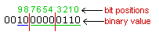
By changing the value of bits 9 and 8, you change the calculation method (and the converted decimal value).
00 Adds width equal to the stretch value.
01 (Long Fields) Adds width equal to the stretch value times the field length.
10 (Short Fields) Adds width equal to the stretch value minus the field length.
$ 126 # 127 [personality] wincomcompatible
There are some differences between how Pinnacle Plus WINCOM handled printed documents and how Windows NT handles them. This flag is set to 1 to make NT print jobs look more like WINCOM print jobs.
$ 128 # 129 [personality] winbuttonsonly
When this value is non-zero, all buttons drawn by the
DRAW RELIEFBUTTON
verb will be drawn to look like windows
style push buttons. The background color will be gray, and a black
border will surround the button. The text color (in both up and down
states) will be the foreground color that was active when the button was
drawn.
Note that the outside dimensions of the button will remain the same. Therefore, since the windows buttons always use 3 pixels around each edge for border area, the amount of space remaining inside the button will be smaller than if the relief button was drawn with a border width less than 3. This option is not supported on the WP6, and may be used only for NT.
$ 130 # 131 [personality] whiteonwhite
The WP6 version of
RT
ignored requests to set both the
foreground and background colors to zero. This caused
SETFCOLOR 0
and
SETBCOLOR 0
commands from OFB
to be ignored when the opposite color was already zero.
When the whiteonwhite option is set to zero, Mosaic OA behaves like
the WP6 version. When this value is non-zero,
RT
will allow
the foreground and background colors to both be set to zero.
$ 132 # 133 [personality] example
The following example personality section will display text and FIELDs with a surrounding border, display icon push buttons with a windows style border, display relief buttons in windows style, display FIELDs with a single line box delimiter as a single line sunken relief box, display single line boxes of color 0 as sculptured boxes, stretch fields by 1 pixel, print warning messages when no-op verbs are encountered, and simulate Pinnacle Plus Release 4 operation of WINCOM as close as possible:
[personality]
textborder=1
iconpbborder=1
winbuttonsonly=1
boxfieldborder=a
sculpturedbox=1
stretchfield-518
nopverbmsg=1
wincomcompatible=1
font
nnn
The NT version of
RT
supports Windows fonts. OFB code stores
fonts internally as a number, and the entries in this section are used
to align windows fonts with numbers. The font numbers in this section
must range from 100 to 255. Note that these entries are used by the
maintenance utilities as well as by
RT
.
It’s possible to have a windows font name conflict with a windowman font name. (In particular, the Courier font causes this condition.) In this case, the windows font will be used. To use the windowman font, remove the conflicting font name from the windows font section. Do not put windowman font names in the FONT section.
Windows provides truetype fonts, a type of font which scales well when displayed in different sizes. Windows fonts which are not truetype fonts will not be scaled at run time, and will only be displayed in pre-defined sizes, even when a different size is requested.
Windowman fonts will still be scaled as they are in Pinnacle Plus Release 4. It’s usually not a good idea to use scaled sizes with windowman fonts, as the appearance isn’t as clean as the pre-defined sizes, and they don’t perform as well as the non-scaled fonts. (These drawbacks also apply to PP-R4.) Further, using scaled fonts for data collect may cause cursor alignment problems.
Example [font] Section
The following example font section sets up some common windows fonts
for use with
RT
.
[fonts] font100=Arial font101=Arial Bold font102=Arial Bold Italic font103=Arial Italic font104=Courier New font105=Symbol font106=Times New Roman font107=WingDings font108=Roman
+
138
$
139
#
140
K
141
Recent Object
List
This is one of four sections used by the
IBAE
to keep track of the ‘state’ it was
in while working on the current project. It is created by the
IBAE
as needed (
i.e., you don’t need
to create it by hand
).
You do not need to edit this
section.
[Recent Object List]Object2=LST:admin:BUTadt_br
Object1=MNU:lib:main_menu
Object3=LST:lib:DLSTdoc_list
+ 142 $ 143 # 144 K 145 History
This is one of four sections used by the
IBAE
to keep track of the ‘state’ it was
in while working on the current project. It is created by the
IBAE
as needed.
You do not need to
edit this section.
[History]Last Modified=02/03/95 08:25 AM by dilbert
+ 146 $ 147 # 148 K 149 Windows Open
This is one of four sections used by the
IBAE
to keep track of the ‘state’ it was
in while working on the current project. It is created by the
IBAE
as needed.
You do not need to
edit this section.
[Windows Open]Number of Windows=1
Window1=MNU:lib:main_menu,N,N,-1,-1,-1,-1,110,110,858,474
+ 150 $ 151 # 152 K 153 IBAE Preferences
This is one of four sections used by the
IBAE
to keep track of the ‘state’ it was
in while working on the current project. It is created by the
IBAE
as needed.
With the exception
of the
RTOPTS=
setting
, you do not need to edit
this section.
[IBA Preferences]
Status Bar=Yes Tool Bar1=No Tool Bar2=No RTOPTS=-ntest RTOPTS_DIALOG=Yes
+
154
$
155
#
156
K
157
Compiled List Author
Registration
This section is used by the IBAE to control the behavior of the compiler and to register any custom Compiled List Authors that exist in the project. You many edit this section using any editor or through the Project Options dialog from within the IBAE.
To register a custom Compiled List Author, the “NumAuthors” value must be incremented and three lines must be added: AuthorName[n] specifies the text that is to appear for this author in the Object Open dialog. AuthorOFB[n] specifies the fully qualified OFB subroutine name in the data dictionary which implements the custom author. AuthorPrefix[n] specifies the naming convention to be used for compiled lists of this type.
[clist]NumAuthors=8AuthorName1=Print ListAuthorOFB1=OFB:template:TEMPprintlistAuthorPrefix1=DLSTAuthorName2=Totals ListAuthorOFB2=OFB:template:TOTS_LIST_EDITAuthorPrefix2=TOTSAuthorName3=Desktop TransactionAuthorOFB3=OFB:template:DT_driver_tranAuthorPrefix3=TRANAuthorName4=Desktop MenuAuthorOFB4=OFB:template:DT_driver_menuAuthorPrefix4=MENUAuthorName5=Desktop Button ListAuthorOFB5=OFB:template:DT_driver_butAuthorPrefix5=BUTAuthorName6=Desktop Format ListAuthorOFB6=OFB:template:DT_driver_fmt
AuthorPrefix6=FMT
AuthorName7=BIO Document Set
AuthorOFB7=OFB:biodsauth:TEMPprintlist
AuthorPrefix7=BIODS
AuthorName8=Database Field Map
AuthorOFB8=OFB:template:AUTHdbfm_list
AuthorPrefix8=DBFM
+ 158 $ 159 # 160 K 161 OFB Compile Settings
The OFB Compile Settings section controls the behavior of the
compiler in the OFB Author.
The Include Path
specifies the
set of directories to search for include files. The
Options
value permits the use of “command line” switches from the OFB
Author.
[OFBCompileSettings]IncludePath=c:\moa\src\include\ofb;c:\moaproj\demo\src\includeOptions= -s$ 162 # 163 K 164 Miscellaneous Settings
[misc]gwstopline1=Welcome Togwstopline2=Mosaic OAgwsbottomline1=Olivetti North Americagwsbottomline2=Spokane, Washington 1997;cardreader=REM_COM1:;inkreader=REM_COM2:datacardfile=; setvideorep to YES if there's a video link to a remote workstationvideorep=YES; set salesrep to YES if there are bankers available to greet customerssalesrep=YES; set kioskexit to VISIBLE for a visible exit button, INVISIBLE for; invisible exit buttons (press top left corner, then top right corner; within 3 seconds), or any other value to disable exit buttons
; else for no exit button
kioskexit=VISIBLE
; set this flag to indicate that the login ID and password should
; be used when connecting to ODBC
;UseLoginIdForODBC=YES
$ 165 # 166 K 167 Emergency Journal Settings
Use this flag to enable emergency journaling, just change the value from "none" to "inactive."
[Emergency Journal]LocalProcessing=none$ 168 # 169 K 170 AIMS Configuration Settings
Specify project directory paths so AIMS can find them.
[AIMS Config]Master Master=x:\moaproj\demoLM Source=srcRM Source=srcWorking Source=srcIcon Dir=icons
+
171
$
172
#
173
K
174
Where is the 'Master'
Source?
From the production release point of view, this isn’t a question. The Data Dictionary is the only form of the Mosaic OA sources which is distributed to the end-user’s machines.
However, from the
development
point of
view, there are two possibilities which are sometimes hotly debated. One
view is that (
remember,
we’re talking about during
development here
) the Data Dictionary is the ‘Master’ copy of the
sources, and that the
IBAE
is the only
tool used to work on the project. The other view is that the ASCII
‘import’ files are the ‘Master’ sources, and that the Data Dictionary is
just the runtime representation of those sources. Each method has its
benefits and drawbacks:
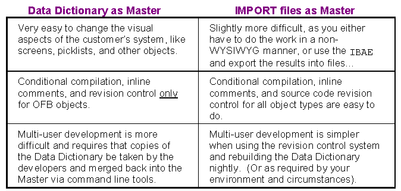
The demo application distribution from Spokane uses the “IMPORT files
as Master” approach, and contains scripts to rebuild the Data Dictionary
via a nightly
CRON
task. (
Note:
CRON
is available in the MS Resource Kit, which may be
freely downloaded from the Microsoft FTP site:
ftp.microsoft.com
— the file to download is
RSK35IMG.EXE
). The Spokane
developers do make considerable use of the
IBAE
, particularly now that it keeps OFB
source files in sync with what’s in the Data Dictionary and also
supports revision control.
NOTE: This release contains support for a project management strategy which attempts to address most of the issues with multi-user development using the IBAE. The strategy also supports remote/local master options. The document entitled, “ Mosaic OA System Implementation Guide ” (Part# 21-94-00133a) describes the strategy, and a set of Perl scripts with a GUI interface automate most of the tasks. The entire project is called the Automated Integration Management System (AIMS).
+ 175 $ 176 # 177 K 178 Source Code Revision & Control
Storage, retrieval, tracking and management of files as they progress through the stages of project development is much easier if you have access to a Source Code Revision & Control tool. The Mosaic OA project team selected MKS RCS (for Windows NT) for use in developing Mosaic OA applications from:
Mortice Kern Systems, Inc.
35 King Street North
Waterloo, Ontario
Canada N2J 2W9
(519) 884-2251 voice
(519) 884-8861 FAX
(800) 265-2797
This toolset allows the developer to:
keep track of, view, and compare changes to files
know who made the changes
know when the changes were made
know why the changes were made
save and restore multiple revisions of the same file
associate multiple files and revisions as a single named release
manage a project which is distributed (via a network) across multiple workstations
This toolset
is not provided
as part of the Mosaic OA
distribution as it requires a separate license agreement with MKS Inc.
However, the
IBAE
’s
OFB Author
will
use it (
if it is present
) for doing revision control of OFB
source files — so if you don’t have it, that function of the OFB Author
simply will be disabled. We highly recommend that you acquire this
product.
You are free, of course, to select another product which runs under
Windows NT for this purpose (such as PVCS), but the
IBAE
’s OFB Author won’t use it. We have
scheduled to address this issue for Release 1 Version 4 of Mosaic
OA.
+ 179 $ 180 # 181 K 182 INITTAB Service
INITTAB
is a general process spawner. Its primary role
is to create processes from a script stored in the file
\
WINNT
\
INITTAB.INI
.
All the processes specified in the
INITTAB.INI
file run in the background as
child processes. If
INITTAB
itself is
stopped, then all the child processes which it started will also be
stopped.
INITTAB
is included in Mosaic for
historical purposes. New processes should use NT’s Service Manager where
possible.
# 183 Security
All the processes started by
INITTAB
run under the security context of the
INITTAB
service, which in turn runs under
the security context of the person who installed the service. Thus, if
the person who installed
INITTAB
had
administrative privileges, then all the child processes run as if they
were started by an administrator.
# 184 Functionality
INITTAB
creates a file called
\
WINNT
\
INITTAB.LOG
which contains information about the processes it spawned — successes,
failures and error messages. It also logs the exit code of each child
process in Windows NT’s Event log.
INITTAB
can be configured to do the following things:
Redirect the (stdout) output of child processes into a file.
Redirect the input of a child process to come from a file.
Respawn the child process if it terminates.
Allow only a specific maximum number (default is 25) of child processes at one time.
# 185 Format of INITTAB.INI
The format of this file is similar to the usual Windows *.INI files, and is expected to have at least the following entries:
[MaxApps]MaximumApplications=25
[NAMES]
rdate=
[rdate]
Command=c:\moa\bin\rdate onpserver
Restart=FALSE
Output=c:\tmp\file.out
Input=c:\tmp\file.in
Delay=20
Where
MaximumApplications
defaults to 25 if omitted. The
[NAMES]
section defines the services to be started, each of
which must include the equals sign (e.g.,
rdate=)
. There
should also be a section with the same name (e.g.,
[rdate]
)
later on in the file as shown in the example above. The
Command=
line is required, and may include command line
arguments. If
Restart=
is omitted, FALSE is assumed and the
command won’t be respawned if it stops executing. The
Output=
and
Input=
lines are optional. If
Output=
is omitted then no output will be written.
Delay=number of seconds to delay before issuing command.
+ 186 $ 187 # 188 K 189 Workstation Date and Time
Date and time misalignment from workstation to workstation and from workstation to cdserver may cause problems. The rdate utility has been provided to allow synchronization of date and time between systems.
rdate is similar to the standard utility of the same name on Berkeley Unix and Olivetti SVR4 TCP/IP systems. The usage is:
rdate servernamewhere servername is the name of the ONP (or other remote system which supports the TCP "time" service - including most systems running TCP/IP). It simply sets the time on the local system to match that on the remote system. Both are expressed in UTC/GMT, so time zones shouldn't matter.
A customer installed system might want to use this in one or both of two ways:
If they leave their systems running 24 hours
(recommended), they can set up an "
at
" job
(similar to "
cron
" under Unix) which runs
rdate
to synchronize times in the middle of the night. The
appropriate command line would resemble:
AT 02:00 /EVERY M,T,W,TH,F "C:\PPNT\BIN\RDATE myonp"Run the command automatically when the workstation is booted. This may be done by using the INITTAB utility (a Unix-style utility which we created for Windows NT).
To preserve the date and time set by
RDATE
,
it’s important to deny
each operator the ability to set the workstation date and time from the
Windows NT control panel. This can be done by limiting each operator’s
group membership to the
Users
group, since members of this
group can’t set the system date and time.
+ 190 $ 191 # 192 K 193 Debugging Facilities During Development
Debugging Keys Quick Reference
Debugging Command Line Options
Single Step Mode Commands
Examine OFB Sub Mode Commands
Several debugging facilities are available to the Mosaic OA
developer, including
OFB Source Level Debugging
. First, and very
important, is the information available from the Data Dictionary via the
utilities like
ddlist
and
ddxref
, as well as listings of the OFB
source files and
import
* input files (or
access to them online via an editor). This information should be readily
at hand when debugging.
It is often the case that an error or bug is caused by referring to
the wrong field, or the right field but the wrong application. Remember,
names of things in the Data Dictionary are case sensitive, so AMOUNT is
not the same thing as amount or Amount. And, if the application name is
omitted, it defaults to the application name on the
SUB
statement enclosing the code being
compiled. Also, the default behavior of the OFB compiler is to
automatically create any object which is being referenced but which
isn't currently defined in the Data Dictionary. This can easily lead to
misspelled objects not being caught until run time.
For Windows NT systems, a high resolution monitor (1024 x 768 or better) allows the console window and the application window to be displayed simultaneously.
# 194 Debugging Command Line Options
The debugging-related command line options recognized by
RT
are:
-d
Turns on a debugging trace in
RT
— this is the same trace
enabled/disabled by
Ctrl-D
from the
application keyboard, or if the
DEBUG ON
statement were executed.
-t Causes I/O timing info to be printed.
-s
Causes bypass of the CDS initialization, which
makes
RT
load faster, but is only useful
in a debugging environment.
-c
Causes bypass of the HostComm initialization,
which makes
RT
load faster, but is
probably only useful in a debugging environment.
-T
Causes a name trace of all OFB routines executed.
Entering
Ctrl-T
from the keyboard, or executing the
TRACE ON
statement, will produce the same
result.
-D
Disables debugging keys in the development
version of
RT
.
-S Name a specific CDS server to connect to.
There are a number of control characters (and some
OFB
verbs) which initiate debugging output
on the initiating terminal. They are described in the section on KEYs
above. In particular, at any point the
Ctrl-T
key will echo the name and identification of the currently active
transaction. (The
TRACE ON
and
TRACE OFF
statements will do the same
thing programmatically).
Ctrl-M
will likewise
display the name of the current (or last) menu.
Ctrl-F
will produce a dump of the field
structure for the field the cursor is presently in. All information
known about the field is displayed, including its name, its data and dup
area, flags, sign, state (hidden/protected) etc.
Ctrl-K
will dump the current function key
bindings, or a message indicating none are defined.
Ctrl-D
turns on internal debugging, which
is mostly useful for debugging
RT
itself
rather than the application. (The
DEBUG ON
and
DEBUG OFF
statements will do the same
thing programmatically). It produces a lot of output, most of which will
be incomprehensible, but some of which may aid in debugging.
Ctrl-D
is a toggle key, so hitting it again
will turn of debugging. Notice also that when in this mode, the
application runs noticeably slower due to the volume of output being
sent to the relatively slow initiating terminal.
The OFB statement
DPRINT
is a
printf()
like facility for displaying a
string upon the initiating terminal screen, with optional arguments (up
to 9 of them) replacing meta-characters in the pattern string ala C. To
display the value of an ASCII, NUMERIC, DATE, or TIME field, use the
%s
metacharacter in the pattern string. To display the
value of a FLAGS, or IND field, use the
%x
metacharacter.
For INT type fields, use
%d
. You cannot
DPRINT
a FIXED type field, as the
printf()
function doesn't know about
DECMATH variables. Use
%s
for string constants, and
%c
or
%d
or
%x
for character,
decimal, or hex constants. Use
%d
or
%x
for
built in variables
RETVAL
and
LASTKEY
, and for things like
fieldname.
NUMCHARS
.
The OFB statement
INIT 100
may be used
to produce a 'dump' of a field on stdout at the controlling terminal.
This is usually the best way to take a snapshot look at a field during
execution.
INIT 99
will dump the current
values for the internal settings of things that may be customized via
INIT
statements. Both
INIT 99
and
INIT 100
are development time only
functions, and are NOPs in the production ('slim') version of
RT
.
An
INIT 102
statement will dump the
list of currently-allocated
LOCAL
fields
(if any).
A single-step trace mode may be turned on via the
SINGLESTEP ON
statement in OFB, or via the
Ctrl-Z
key. It may be turned off via
SINGLESTEP OFF
or by pressing
Ctrl-Z
again. This is described in full in the section,
OFB Source
Level Debugging
.
+ 195 $ 196 # 197 K 198 Debug Keyboard Quick Reference
Ctrl-T Show name and identification of currently active transaction
Ctrl-M Show name of the current (or last) menu
Ctrl-F Dump the field structure for the field on which the cursor currently rests.
Ctrl-K Dump the current function key bindings, or a message that none are defined.
Ctrl-D Toggles internal debugging on and off.
Ctrl-Z Toggles single step trace mode on and off.
Single Step Commands
+ 199 $ 200 # 201 K 202 OFB Source Level Debugging
Source level debugging provides the ability to see each OFB statement
(in ASCII form) prior to its execution, to examine and modify fields,
and to set execution breakpoints.
Note that this also works for
screens and documents, since they are likewise interpreted by
RT
.
There are three ways to invoke source level debugging (also called
"single-step mode"). All require that you be running a "fat", or
development, version of
RT
. The code to
support source level debugging simply isn't compiled into the "slim", or
production, version of
RT
.
The first way to invoke single step mode, is via the
SINGLESTEP ON
statement in OFB. There is a
corresponding
SINGLESTEP OFF
statement.
The effect of this statement is just like typing a Ctl-Z key from the
keyboard, which is the second method of invoking single step mode. The
third method is to execute a breakpoint (
which was previously set
via a
SINGLESTEP
command
).
For Windows NT systems, source level debugging works quite well on a single workstation with a high resolution monitor. The mouse may be used to size and position the application window and the console window, and to switch between the two windows.
Within
SINGLESTEP
mode, there are two
sub-modes: the actual
SINGLESTEP
mode
(
i.e., interactive execution
) uses a prompt of
SS>
. The other sub-mode is for
examination of OFB subroutines (
without execution
) and uses a
prompt of
EP>
. Both sub-modes have
their own help, which may be viewed by typing a question-mark (?)
character. You may freely switch back and forth between modes. It will
become obvious, with use, that the examination mode is there mainly so
that you can pursue OFB code for the purpose of setting and removing
breakpoints.
In
SS
mode, the OFB statement is
displayed (
via decompilation
) before it is executed, thus the
last statement shown hasn't been executed yet. The <SPACEBAR>
normally executes a statement at a time in
SS
mode, and displays the next OFB
statement in
EP
mode. The last named FIELD
or
OFB
subroutine is remembered, as is the
last application. These are all shortcuts to make debugging easier.
Single Step Mode Commands
Examine OFB Sub Mode Commands
+ 203 $ 204 # 205 K 206 Single Step Mode Commands (SS>)
In single step mode the following commands are honored:
Space bar Causes execution of the statement currently being displayed. May cause execution of more than one statement if the # command was used (see below).
#
Set to # the number of
OFB
statements executed every time the
space bar is hit. The default is 1, and the number may be up to
65,000.
C
Call an
OFB
routine.
This option allows subroutines to be executed from the debugger. An
option allows the values of all
RETVALs
,
LASTKEY
and
CURRENTFIELD
to be protected from the
call, or to be changed by the call.
D
Display breakpoints. This will show you the
statement where each of the (up to 5) breakpoints is set, and the name
of the
OFB
subroutine containing that
statement.
E
Enter 'Examine
OFB
sub' mode. This allows you to peruse
OFB
subroutines, and set or remove breakpoints. Click
to see the help for EP mode.
F
Field dump. This sends a dump of the field to the
controlling terminal, exactly like the execution of an
INIT 100
statement in
OFB
. A shorter form of a field dump is
available via 'L'. The last field named is remembered, so simply hitting
<ENTER> will repeat the action on the last field named.
L
Look at a field. This is an abbreviated look at a
field, and includes the current values for
RETVAL
and
LASTKEY
. The last field named is
remembered, so simply hitting <ENTER> will repeat the action on
the last field named.
M
Modify a field. This allows you to modify the
contents of a field, and (
optionally
) set its
NUMCHARS
value. The last field named is
remembered, so simply hitting <ENTER> will repeat the action on
the last field named.
N
Next statement. This provides
step around
functionality for skipping uninteresting
OFB
,
SCR
and
DOC
routines called by the current
statement, but returns debug control on the line following the current
statement.
O
Dump the
LOCAL
fields (
if any
) associated with the currently executing
SUB
.
P Shows the formal parameters ( the arguments the current SUB was called with ) and their current values.
Q
Quit single step mode. This is just like executing
a
SINGLESTEP OFF
statement, or typing
Ctl-Z when in single step mode.
S
Show the current
CALL
stack, with the most recent
SUB
,
SCREEN
or
DOCUMENT
shown last.
U
Allow updating of the various built-in variables,
e.g.,
RETVALs
,
LASTKEY
, etc.
V
Dump all
RETVALs
,
LASTKEY
,
NEXTKEY
and the name of the current OFB
subroutine, screen or document.
W
Add or change a watch field. This allows the
selection of a field which will be monitored by
RT
. A breakpoint will occur when the value
in this field changes. Because the field is tested after each line of
OFB
code is executed,
RT
will run slower when a watch field is
set. When a watch field change causes a break point, the last line of
OFB executed will be displayed.
When fields are changed other than through
OFB
code, this line may not be the line
that was responsible for the change, but still indicates the location
where the field change was first detected. (This type of change may
occur through internal
RT
processing such
as reset processing, or may be a result of keyboard entry in data
collect.)
X
Execute the rest of the current
SUB
(
or screen or document
) up to
and including the
RETURN
or
END
statement, and then resume
singlestepping.
? Give help. Causes a brief summary of the currently acceptable command KEYs to be shown on stdout at the controlling terminal.
+ 207 $ 208 # 209 K 210 Examine OFB Sub Mode (EP>)
In examine
OFB
sub mode, the following
commands are honored. Notice that there is some overlap between
SS>
and
EP>
mode. Either mode will let you know
if you attempt to use an illegal command, and each will display their
command set via the '?' key:
Space bar Like <ENTER>, the <SPACE> key is shorthand for 'J', or show next statement in EP mode.
B Set Breakpoint. This places a 'breakpoint' at the OFB statement just displayed. Up to 5 breakpoints may be set at any one time.
C
Continue in
SS
mode.
This causes immediate exit from the
EP
mode and resumes the execution of
OFB
code
in single step mode.
D
Display breakpoints. This will show you the
statement where each of the (up to 5) breakpoints is set, and the name
of the
OFB
subroutine containing that
statement.
E
Enter 'Examine
OFB
sub' mode. When already in
EP
mode, this
allows you to select a different
OFB
subroutine for examination. The last named
OFB
sub is remembered, so simply hitting
<ENTER> will begin showing the last
OFB
sub examined.
F
Field dump. This sends a dump of the field to the
controlling terminal, exactly like the execution of an
INIT 100
statement in
OFB
. A shorter form of a field dump is
available via 'L'. The last field named is remembered, so simply hitting
<ENTER> will repeat the action on the last field named.
J
Show Next statement. The selection pointer is
moved to the next sequential
OFB
statement
in the currently selected
OFB
sub. The
<SPACE> and <ENTER> KEYs are shorthand for 'J'.
K
Show Previous statement. The selection pointer is
moved to the previous
OFB
statement in the
currently selected
OFB
sub.
L
Look at a field. This is an abbreviated look at a
field, and includes the current values for
RETVAL
and
LASTKEY
. The last field named is
remembered, so simply hitting <ENTER> will repeat the action on
the last field named.
M
Modify a field. This allows you to modify the
contents of a field, and (optionally) set its
NUMCHARS
value. The last field named is
remembered, so simply hitting <ENTER> will repeat the action on
the last field named.
R Remove breakpoints. You will be prompted for the breakpoint number. It is suggested that you issue a 'D' command just before issuing an 'R' command.
Q
Quit single step mode. This is just like executing
a
SINGLESTEP OFF
statement, or typing
Ctl-Z when in single step mode.
W
Window of
OFB
statements. This shows you up to 13
OFB
statements centered around the current statement (which is prefixed by
*> to make it stand out). The selection pointer remains pointing at
the current
OFB
statement.
? Give help. Causes a brief summary of the currently acceptable command KEYs to be shown on stdout at the controlling terminal.
+ 211 $ 212 # 213 K 214 Managing Asynchronous Events
Minimizing Problems Caused by Asynchornous Events
The Mosaic OA RunTime Executive (
RT
)
maintains a single thread of execution for all OFB and Custom C
subroutines as well as any DLLs into which it calls. It also implements
a modest amount of state information through the use of global
variables, including the currently selected screen, font, font
attributes and size, device context, and a number of variables
accessible directly through OFB code
(
RETVAL
,
prtretval
,
cdsretval
, etc.).
RT
uses a single window in which to render
all screens and popup dialogs, and manages Window messages in a single
message loop.
RT
simulates ‘events’ by checking for
Windows messages (
e.g., keystrokes, paint messages, etc
.) as it
executes certain OFB statements. During this ‘checking’, if an ‘event’
is found which results in control being given to another OFB or C
subroutine, problems can occur because RT is effectively being
re-entered to execute the new subroutine. The OFB statements which can
be ‘interrupted’ are:
CALL
CDS NOWAIT
statements
(when RESETs are
allowed)
DO
DPRINT
ELSEIF
ENDTRAN
GETKEY
(or anytime
RT
is waiting for user
input
)
GOTO
PRINTDOC
WHILE
Thus it is not only possible, but probable, that during the execution of one of the OFB statements listed above, an event will occur which causes the interpreter to suspend execution of the current subroutine and invoke and interpret an event subroutine . Once the event subroutine returns (completes/exits), then the interpreter (typically) resumes execution of the next OFB statement in the original subroutine. If the event subroutine changes some global FIELD variable, or one of the built-in variables, the original subroutine can behave unexpectedly when control is returned to it.
Events which can cause this behavior include:
# 215 Minimizing Problems Caused by Asynchronous Events
The management of these asynchronous events can pose difficulties. Debugging can be difficult due to the asynchronous nature of the events themselves and the difficulty of reproducing the exact conditions repeatedly. To minimize the problems in this area, we suggest the following:
Take care in structuring the application such that asynchronous events are planned for and won’t produce unexpected results when they happen ( because they will happen !).
In routines which are executed asynchronously, take care to use parameters and local FIELDs wherever possible. When this isn’t possible, create FIELDs which are used only by the specific event subroutine .
Preserve state information if necessary in routines which are executed asynchronously. e.g., preserve the values of built-in variables if their values will be modified in the asynchronous routine.
Do not use global FIELDs like
common:csr_string
in asynchronous routines.
Be particularly careful of events which can happen while within an event subroutine (e.g., printing from within a COMM event).
+ 216 $ 217 # 218 K 219 Localizing Mosaic OA
Creating “globalized” software has two facets — “internationalization,” which covers generic coding and design issues, and “localization,” which involves customization for a specific market. Using the NLS APIs and implementing a new character encoding scheme are internationalization steps performed by the development team, whereas translating text to another language is a localization step performed by the implementation team.
Locales
Character Encoding Schemes
Single-Byte Character Sets
Double-Byte Character Sets
Unicode
Microsoft Windows Code Page Support
Mosaic OA Code Page Support
The Resouce DLL
Input Method Editor (IME) Support for Far East Writing Systems
Multi-Language String Support
Date, Calendar and Calculator Support
+ 220 $ 221 # 222 K 223 Locales
Globalization relies heavily on the concept of a locale. Geographically speaking, a locale is a place. In software terms, a locale is a set of information associated with a place, including the name and identifier of the spoken language, the script used to write the language, and cultural conventions like rules for sorting, case conversion, punctuation, and formats for dates, times, numbers, and currency amounts. The locale also specifies keyboard layouts, character sets, text directionality, and input methods.
Locale information is provided by the Windows operating system and is accessed via the National Language Support (NLS) APIs. Windows NT currently supports 50 locales, and Windows 95 supports 75 locales. This information is used by the mosaic OA runtime to create an internationalized core code that will allow a diverse set of users to enter culturally accurate data.
Certain localizations will require a separate SDK and DDK, or supplements to the English SDK and DDK. The following chart shows the four categories of internationalization for Microsoft Windows.
Internationalization Categories Chart
+ 224 $ 225 # 226 K 227 Internationalization Categories Chart
Categories of internationalization for Microsoft Windows, based on development issues.
+ 228 $ 229 # 230 K 231 Character Encoding Schemes
Single-Byte Character Sets
Double-Byte Character Sets
Unicode
Microsoft Windows Code Page Support
Code Page Support in Mosaic OA
Every language has a unique script. Character sets, also called code pages, represent those scripts on computers. A code page is an ordering or encoding of a standard set of characters within a specific locale. This encoding provides a consistent way for computer devices to exchange and process data. Each code page includes a common set of core characters (the first 128 characters of the code page).
The English language uses 26 characters derived from the Latin alphabet. This character set is sufficient for supporting English, Hawaiian, and Swahili. Other languages use either the Latin alphabet with additional characters, or a non-Latin alphabet, such as Cyrillic, Greek, Arabic, Hebrew, or the Far East ideographic characters. The ASCII (American Standard Code for Information Interchange) character set was one of the first character sets invented.
A character set defines mappings for characters, as well as their visual representation on computers. Thus, every character is an index into the character set; for example in the ASCII character set, the number 65 maps to A, and 97 maps to a.
The index is often called the code-point. The visual representation is called a glyph. Thus, the letter A is represented as two glyphs a and A. There is not necessarily a one-to-one relationship between a character and a glyph; for example, the ligature ß represents either the ss or sz character combination.
+ 232 $ 233 # 234 K 235 Single-Byte Character Sets
Single-byte character set (SBCS) is a term describing a character set consisting of up to 256 characters. Characters in SBCS can be addressed using an 8-bit notation.
A character set consisting of 256 characters cannot represent all the different characters needed to support all scripts. Using the ASCII character set, various character sets and standards have been developed to support different scripts. The additional characters added to support different scripts use the character range 128 through 255, called the extended character set. While the characters in the extended character set are of limited importance in the English-speaking world, they are vital for foreign users.
+ 236 $ 237 # 238 K 239 Double-Byte Character Sets
All Far Eastern languages using ideographic characters require a character set of more than 256 characters. To handle this, the double-byte character set (DBCS) was created. Characters in DBCS are addressed using a 16-bit notation, using two bytes, or double-byte. With 16-bit notation, you can represent 65,536 characters. However,
far fewer characters are defined for the Far East languages; for example, Japanese character sets today define 12,500 characters.
DBCS code pages contain both single and double-byte characters (therefore DBCS would be more appropriately named "MBCS" or Multi-Byte Character Set). The DBCS single-byte characters conform to the 8-bit national standards for each country and correspond closely to the ASCII character set. The exception is code point 5CH, which has been substituted for the currency symbol in both Japan and Korea. Note that the semi-graphical characters found in the 128 to 255 code-point range of the Latin code pages might not exist in DBCS code pages.
In a double-byte character set, certain ranges of code-points are designated as leading bytes. Leading bytes have no character value themselves. However, together with the following byte, they represent a single character. This second byte is called the trailing byte or trail byte. Each DBCS has a different set of lead-byte ranges that cannot be hard-coded. Instead, this information should be obtained from the operating system.
The Kanji encoding system (JIS Kanji Code) was defined by the Japan Industry Standard (JIS). JIS level 1 contains about 3,000 of the most common characters, in reading order. Level 2 adds about 3,500 character to JIS level 1. However, JIS level 2 is ordered by how the characters are written (strokes within radicals). A third level has been recently defined that increases the size of character set by about 6,000. These characters also are ordered by how they are written. The JIS standard is based on a 7-bit format requiring special escape sequences to enter or leave DBCS mode.
Shift-JIS is an alternate DBCS encoding system of the JIS standard. Shift-JIS implements JIS in 8-bit format, allowing direct (unescaped) access to the 128 ASCII characters for compatibility.
The Korean and Chinese DBCS code pages have a similar encoding to Shift-JIS.
+ 240 $ 241 # 242 K 243 Unicode
Since code pages are different for each script and operating environment, attempts to standardize and consolidate all code pages onto one code page are now underway. One standard is called Unicode, an effort driven by Apple, Borland, Digital, Hewlett-Packard, IBM, Lotus, Metaphor, Microsoft, Next, Novell, Research Libraries Group, Sun, WordPerfect, and Xerox.
Unicode is a pure 16-bit character encoding that encompasses all characters used in general text interchange. The two volume standard is available from Addison Wesley as The Unicode Standard; Worldwide Character Encoding Volume I and The Unicode Standard; Worldwide Character Encoding Volume 2 (ISBN 0-201-56788-1 and ISBN 0-201-60845-6 respectively). The ISO DIS (Draft Industrial Standard) 10646.2 was merged with Unicode version 1.0 to form Unicode's current version, 1.1.
Unlike DBCS, Unicode is not a variable-length encoding. Text in Unicode cannot be passed to functions that are expecting zero-terminated ASCII strings. The first 256 characters in Unicode have the same layout as the international standard ISO 8859/1. However, Unicode is zero-extended to 16-bits. The terminator in a Unicode string is 0x0000.
+ 244 $ 245 # 246 K 247 Microsoft Windows Code Page Support
Windows NT uses Unicode (the BMP region of ISO specification 10646) for all internal text processing. All character sets and code pages supported by Windows NT can be mapped to Unicode. Although Microsoft uses Unicode internally in Windows NT, and provides Unicode variants for many of the APIs, almost all applications provided with Windows use the multi-byte code page character encoding scheme.
Windows NT, in addition to supporting Unicode, supports a Windows code page and an MS-DOS code page. For Far East editions, the Windows code page can be single byte or double byte.
Windows 95 is based on the same family of code pages introduced in Windows 3.1. The code-page model was chosen for Windows 95 because of size and memory constraints, the existing code base, and an ambitious product schedule.
Microsoft Windows supports several types of code pages, including ANSI and OEM. ANSI code pages are supported for Windows 3.1 compatibility; OEM code pages are supported for MS-DOS and OS/2 compatibility. Other code pages are available, based on the installed locale.
Table of code page support in Microsoft Windows
Code page support in Mosaic OA
+ 248 $ 249 # 250 K 251 Code Page Support
+ 252 $ 253 # 254 K 255 Mosaic OA Code Page Support
Mosaic OA supports the code page model, and not Unicode. Most code pages have a core set of characters in common (ASCII characters- the first 128 characters in the code page). In addition, each code page includes some unique "extended" characters not available on other code pages. Be sure not to use these extended characters in server names, computer names, and share names. Also, don't use these extended characters with applications used across the network. The FAT and HPFS file systems, which use the OEM code page, must translate the characters they don't recognize in the filename to a best-fit character, no character, or some non-recognized character.
+ 256 $ 257 # 258 K 259 The Resource DLL
The runtime displays many error, warning and informational messages independent of the OFB code. These messages have been extracted from the runtime source code and placed in a resource-only DLL.
The resource DLL may be specified at runtime by the
-R
command line switch. If a resource DLL is not specified the
runtime looks foro
rt(lang).dll
, where
(lang)
is the three character ISO country code
specified in the Windows registry. If the
rt(lang).dll
is not found the system defaults to the English language DLL,
rtENU.dll
.
The resource file english.rc , along with the makefile and .mak files, are included in the distribution under the NLS directory and can be modified by the implementation team as required.
To translate resources to another language, copy the English resource file to a new file, i.e., english.rc => korean.rc , then modify the new resource file. Be sure to keep a copy of the original English resource file so it can be compared to new releases as they become available. Once the resource file is translated create a new project, similar to rtENU.mak, and compile the new resource dll.
Microsoft VC++ is useful for creating resource files, but it was
designed to be a compiler, not a localization tool. A good localization
tool needs to track when developers add, change, or delete elements in
the native language edition. They should also allow localizers to
translate resources without inadvertently adding or deleting any items.
Unfortunately, there are few commercial localization tools presently
available. Your favorite editor can also be used to translate the
resource
files.
+ 260 $ 261 # 262 K 263 IME (Input Method Editor) Support for Far East Writing Systems
The Far East versions of Windows include; Simplified Chinese, Traditional Chinese, Japanese, and Korean. These languages contain many thousands of characters, and use IMEs to allow users to select the desired character. An IME typically has three windows:
Status window that allows the user to select the selection technique they wish to use,
Composition window that is typically placed to the right of the insertion point. This window moves with the cursor and shows the intermediate keystrokes,
Candidate window which displays the most common choices of characters.
Applications can provide three levels of IME support; Full, partial and none. Fully IME-aware applications create and maintain their own input contexts and draw the IME’s status, composition, and candidate windows themselves. Applications with partial support reposition the IME’s user interface windows and select the font used by the IME’s windows.
Partial IME support has been integrated into the Mosaic OA runtime. IME specific code is located in the ime.c custom source module and is linked into the CSR.DLL so it can be modified for specific countries and new versions of Windows by the implementation teams.
To add IME functionality to the runtime, define IME_SUPPORT in ime.c, ensure that the following files from your DDK are being used:
user32.dll
user32.lib
imep.h
winnls.h
winnls32.h
then compile ime.c and relink the csr.dll.
A new field flag has also been defined, AutoIME . If this flag is set, via INIT 73 (FLD73), then the IME is automatically started when entering the field for datacollect. A global IME Enable flag, set and reset using INIT 69 , allows the IME to be left off even though the AutoIME field flag is set.
+ 264 $ 265 # 266 K 267 Multi-Language String (MLS) Support
Multi-Language String support that was in Pinnacle Plus has been moved forward into Mosaic OA.. MLS support is used to dynamically extract text segments at runtime, and is unique to Pinnacle Plus, PPNT and Mosaic OA. It is used when an application needs to display text in several languages.
Quoted text within the application can contain a special separator sequence that is recognized at runtime to dynamically extract a segment literal text string or descriptor.
INIT 67 is used to specify the 2-character separator sequence, and INIT 66 selects which string segment to use.
+ 268 $ 269 # 270 K 271 Date, Calendar and Calculator Support
INIT 68 specifies the first day of the week to be used for all date functions, including the display of the built-in calendar.
Text used by the built-in calendar and calculator has been put in the resource dll so it can be easily modified.
+ 272 $ 273 # 274 K 275 Multi-Media Support
Multi-media movie support in Mosaic OA is provided by a Dynamic Link
Library (DLL) called
MOAAVI.DLL
. This DLL
will be found in the same
\
BIN
directory where the
other Mosaic OA DLLs reside. There are just two functions exported:
moaaviplay
This function plays the video on the current window, starting from
the X and Y coordinates passed as parameters to the function. This
function will also stop the video (
if it is already playing
)
and replay it. Single-clicking with the mouse on the video when it is
playing will make it pause (
on the Touch Screen this works well
because you can just touch it to make it pause
). The
DECLARE
statement should be:
DECLARE
“
moaaviplay
”
LIB
“
moaavi.dll
”
(byref,byval,byval)
The first argument is a pointer to a string containing the
.avi
file name (a full pathname is
required if it is not in the current working directory). The second and
third arguments are the X and Y coordinates in pixels where the top left
corner of the video should be placed while playing. For
Example:
...
filename =
“
C:
\
moaproj
\
mmedia
\
movie1.avi
”
DLL moaaviplay(filename,100,100)
moaavikill
This function will stop the video that is currently playing. There are no parameters for this function.
DECLARE
“
moaavikill
”
LIB
“
moaavi.dll
”
()
...DLL moaavikill()+ 276 $ 277 # 278 K 279 Developing with Future Upgrades in Mind
Upgrading your project to a newer version of Mosaic OA shouldn’t be a painful process. Use these tips in your project development now, to ease the upgrading process in the future.
Avoid elegant custom C subroutines. Basic, simple CSRs are OK, it's normally just a recompile. But anything which depends on internal structures of RT or formats of RT's internal data (like the "standard" CSRs we provide, e.g., picklist stuff, or any "original" work done by figuring out, then cutting and pasting of the provided routines) will be trouble. In fact, anything doing much with Windows APIs will be trouble, because those change with releases of Microsoft's compilers and OS. And we try to keep current with OS releases, so upgrading RT may force you to upgrade compiler and OS as well.
Avoid any behavior which is not explicitly documented in the Runtime System Reference Guide. That is, if the guide doesn't say whether a given verb works in Way A or Way B, but you find out by experiment that it works in Way B then you depend on that in your application, you're asking for trouble. We may change it to Way A with the next release.
Avoid any code which depends on internal data formats. A fairly significant application for a large customer was written to depend on an Indirect reference consisting of an 8-bit number followed by another 8-bit number followed by 16 bits of non-information. It needed some heavy-duty changes when we changed to using two 16-bit numbers.
We try to keep backward compatibility as simple as possible, but sometimes "as possible" isn't very simple. It's in our best interests to avoid breaking ANYBODY's applications. But sometimes, in order to fix bugs or introduce important new features, we change behaviors that we can't imagine ANYONE would have depended on, and it turns out our imagination isn’t always good enough.
+ 280 $ 281 # 282 K 283 Converting PPlus to Mosaic OA
Developing with Painless Future Upgrades in Mind
Converting Custom C Routines
Modifying the CSR.MAK File
Building a New CSR.DLL
Building the Data Dictionary
Converting a Pinnacle Plus R5 application to Mosaic OA is quite easy,
as 99% of the work is done by a single utility program called
PCL2OFB
. The other 1% involves modifying
your custom C routines (if any), converting Windowman bitmaps, and using
a new utility,
IMPCSR
, to import the CSR objects into your Data
Dictionary.
In case you didn’t read the rest of this help ( but of course you did, didn’t you? ) — the architecture of the Mosaic OA system is quite similar to the Pinnacle Plus architecture, at least from the developer’s point of view. Here are the salient differences:
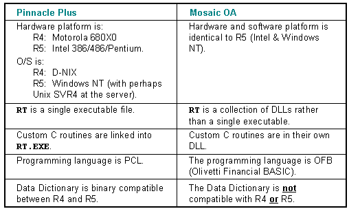
The PCL object type does not exist in Mosaic OA. Instead, Mosaic OA
has an OFB object type. The primary purpose of the
PCL2OFB
conversion utility is to convert
PCL
sources into
OFB
sources — although it also converts
other Data Dictionary object types as well.
PCL2OFB
is a so-called
filter
program, i.e., it reads from and writes to the console (it is a ‘batch’
utility rather than a ‘Windows’ utility). To convert a customer’s
applications from Pinnacle Plus to Mosaic OA you use the
PCL2OFB
utility to filter the OFB sources
and Data Dictionary ASCII import files. For example, let’s use a simple
dictionary such as the one which is distributed in the
\
MOA
\
DICTIONARY
directory. This dictionary contains only the ‘common’ application, and
all the import files are named COMMON.
something
.
To convert the ‘common’ application, something like the following batch file could be used:
PCL2OFB < COMMON.CSR > new.csrPCL2OFB < COMMON.DSC > new.dsc
PCL2OFB < COMMON.FLD > new.fld
PCL2OFB < COMMON.ICN > new.icn
PCL2OFB < COMMON.LST > new.lst
PCL2OFB < COMMON.MNB > new.mnb
PCL2OFB < COMMON.MNU > new.mnu
PCL2OFB < COMMON.PCL > new.ofb #note filename change
PCL2OFB < COMMON.PAT > new.pat
PCL2OFB < COMMON.PIC > new.pic
PCL2OFB < COMMON.PLB > new.plb
PCL2OFB < COMMON.SCN > new.scn
PCL2OFB < COMMON.SCR > new.src
PCL2OFB < COMMON.TRN > new.trn
IMPCSR
-n
proj
<
\
moa
\
lib
\
common.csr
WARNING: Do not try to convert a file in place! If you do, the command line Shell will first open the file for input, and then open it again for output which will truncate the file to zero bytes, and you will lose your original file.
The bitmap, icon, and other non-import type files do not require
conversion. The batch file which creates the dictionary will also need
revision to reflect the new filenames and to change the use of the
PC
utility (PCL compiler) to the
BC
utility (OFB compiler).
There are a couple more things to do which are not done automatically
by the
PCL2OFB
utility. These are involved
with setting up the environment. The major change is that the
/usr/users/pplus
directory is replaced
with the
\
MOA
directory:
The
PPLUSDIR
environment
variable should be replaced with an
MOADIR
registry variable which specifies the location of the Mosaic OA RunTime
distribution directory. Click
to see
PUTREG
which sets this registry value for
you.
The
MOAPROJ
registry variable should be
defined to identify the Mosaic OA project directory location.
PUTREG
sets this registry value for
you.
All Windowman bitmap images must be converted to
Windows 32 bitmap format. This conversion may be performed on the
individual bitmap files by using the conversion program
WM2BMP
.
WM2BMP
reads
a Windowman bitmap file and writes to a Windows 32 bitmap file. The
subsequent Windows 32 bitmap file may then be used for importing the
Mosaic OA BIT objects.
You must import the CSR objects
(this didn’t have
to be done in Pinnacle Plus releases).
This is done via the
following command, with appropriate substitutions for project name and
path. Failure to do this will result in
RT
complaining about missing forward referenced C subroutines:
impcsr -n
proj
<
\
moa
\
lib
\
common.csr
Top of page
+ 284 $ 285 # 286 K 287 Converting Custom C Routines
The
PCL2OFB
utility described above
does virtually all of the code and object-translation work in converting
from Pinnacle Plus R4/5 to Mosaic OA Release 1.0 and subsequent releases
— the remaining work is converting your custom C subroutines to the
Mosaic OA format. Of course, if your customer doesn’t have any
custom-written C routines, then this work isn’t necessary!
You only have to convert the routines you wrote specifically for the customer being upgraded to Mosaic OA. All the 100 or so C routines distributed in Mosaic OA’s \moa\src\csr directory have already been converted. Your job will be to modify your routines and add them to the makefile in the \moa\src\csr directory, and rebuild the CSR.DLL module.
The conversion is a three step process, consisting of:
1. C source code changes
#include
filename changes
structure name/definition changes
function calling convention changes
2. Modifying the CSR.MAK file
3.
Building a new
CSR.DLL
+ 288 $ 289 # 290 K 291 C Source Code: #include filename changes
Several of the
#include
filenames have
changed, partially because of the Microsoft 8.3 filename convention
(
which we stick too, even though Windows NT allows long filenames,
because it allows such files to be put on diskettes
), and partially
because it made sense to change the name. Most of the filename changes
are listed below, but you should insure that the files
you
include are correct. This list should cover the large majority of
field-developed C routines:
Pinnacle Plus filename Mosaic OA filename
rtglobals.h rtdef.h
mem_alloc.h memalloc.h
fontprotos.h fontpro.h
conversion.h convers.h
pcldefs.h ofbdefs.h
pclwords.h ofbwords.h
<n/a> rtdef.h
Do not
include the file
<rtglobal.h>
, even
though it exists. It is there for use by the modules which are linked
into
RT.DLL
— your code, which will be in
CSR.DLL
, must use
<rtdef.h>
instead.
The directories include\isc and include\dnix are obsolete, so if your code uses them you may need to rewrite some of your logic to use the Windows NT equivalent functions.
+ 292 $ 293 # 294 K 295 C Source Code: Structure Name/Definition Changes
Several of the structures and typedefs in the #include file
<typedefs.h>
have changed. In particular, the
following three changes may affect your custom C code:
PP structure MOA structure
appitm ddr ( the members are identical)
csrrec csrdef
csrrec->func_addr csrdef->procaddr
The elements of some of the structures changed, and many of the structures ( e.g., pcldef ) have additional new members.
+ 296 $ 297 # 298 K 299 C Source Code: Function Calling Convention Changes
First, for every function you have which will be called via the
CALL
CSR
:
statement of
OFB, you must ‘
export’
the function name via adding some text
to the function definition in the C source file. You do this by
prepending the string “_declspec (dllexport)” in front of the type
prefixes, or by using the
XDLL
macro
(found in the #include file <typedefs.h>). You do not need to make
this change for functions used within the DLL and not referenced by the
C code directly. A simple rule-of-thumb is that if the function has as
its argument list (int argc, rtobj *argv[]) then use the special prefix,
else do not.
Secondly, the following functions and subroutines have an additional argument to support parameter passing in OFB subroutines. It is always the last argument, and is expected to be the array of rtobj structures passed to the currently executing OFB subroutine. Since your code generally won’t have access to the proper value for this argument, a numeric zero (or NULL) will be accepted and will result in the normal behavior you’d expect (except that your C subroutine won’t be able to use arguments passed via the call to the OFB subroutine making the call to your CSR).
If your custom C code references any of the routines below, you’ll get a compile error complaining about an incorrect number of arguments. For all of these routines, just add a numeric 0 or NULL as the last argument:
+ 300 $ 301 # 302 K 303 Modifying the CSR.MAK File
For Release 1, version 4, of Mosaic OA we directed Microsoft Visual
C++ version 2.2 to create the
CSR.MAK
makefile file to
create and manage the
CSR.DLL
file. Do not
edit the
CSR.MAK
file from outside
Microsoft Visual C++!
Here’s how to use the Microsoft Visual C++ environment to edit &
compile your custom C modules and build the
CSR.DLL
file.
Invoke Visual C++ version 2.2
1. Click ‘File’ from the menu bar at the top of the screen.
2. Click ‘Open’ from the pulldown menu.
3. Select Project as the open ‘File’ type.
4. You should have a dialog which looks something like the one shown below. Use ‘csr.mak’ as the project name.
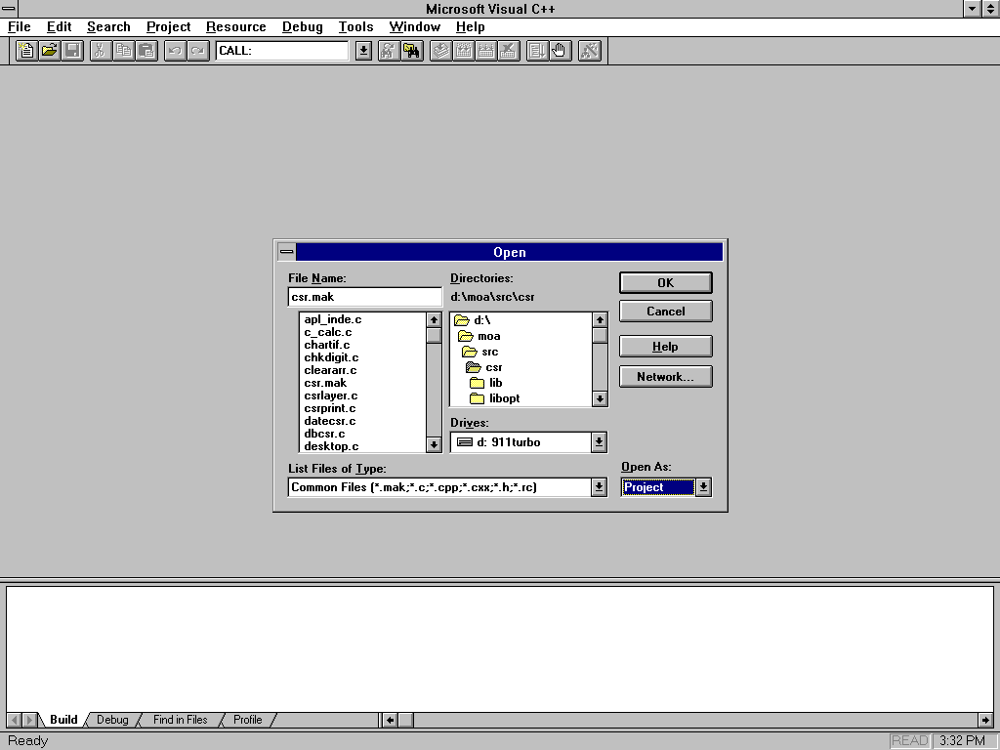
5. Make your changes to your custom C modules, or whatever, and ‘Build’ the project. Repeat as necessary.
For each custom C module you wish to add, make changes as described below from within Microsoft Visual C++:
1. Click ‘Project’ from the menu bar at the top of the screen.
2. Click ‘files’ from the pulldown menu.
3. Enter the source file name and click the ‘Add’ button.
4. You should have a dialog which looks something like the one shown below:
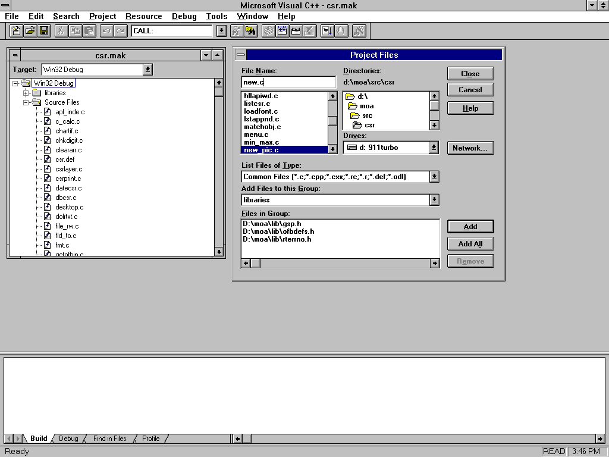
5. From the ‘Projects’ menu select ‘Update all dependencies’.
6. From the ‘Projects’ menu select ‘Build csr.dll’ or click the ‘Build active target’ button.
+ 304 $ 305 # 306 K 307 Building a New CSR.DLL File
Typical Errors
Error Codes
From the command line, issue the following command:
nmakeOr, if you are running from within the Microsoft Visual C++ environment, click the ‘build active target’ icon on the toolbar.
+ 308 $ 309 # 310 K 311 Typical Errors Encountered in Building the CSR.DLL
Here is some helpful advice about how to deal with the errors you are
likely to encounter. You may get errors in the compile or link step, or
in importing the CSRs, or when running
RT
itself and trying to actually call one of your custom C routines.
It is important that the following include file order be used in your csr source file for proper definition of exported data and functions:
pch.h
rtdef.hdataman.h
csrdef.h
686: Referenced CSR C function does not exist in CSR.DLL
error C2375: 'somefunc' : redefinition; different linkage
warning C4013: 'somefunc' undefined; assuming extern returning int
error C2198: 'somefunc' : too few actual parameters
warning C4024: 'dobinop' : different types for formal and actual parameter 2
warning C4047: 'argument' : 'char *' differs in levels of indirection from 'const int '
SOMEFUNC.OBJ : error LNK2001: unresolved external symbol '_dobinop'
CSR.DLL : error LNK1120: 1 unresolved externals
error C2065: 'pDDerrno' : undeclared identifier
error C2100: illegal indirection
If you get past all these errors, you could still forget to actually import the CSRs into your Data Dictionary. If this is the case, you will see the following warning message when your OFB code tries to reference any of the C subroutines:
{bml bm15.BMP}
You may also see this warning message if you did import your CSRs, but misspelled one of the names or forgot to include one in the \moa\lib\common.csr file.
Note: This is yet another reason why it’s valuable to run the Data Dictionary cross-reference and look at its output.
+ 312 $ 313 # 314 K 315 CSR.DLL Errors
# 316 686: Referenced CSR C function does not exist in CSR.DLL
This error from the
IMPCSR
utility
means you forgot to declare your C subroutine as being accessible from
outside the CSR.DLL. You do this by using the
XDLL
macro (found in the #include file
<typedefs.h>), or coding the string it generates. Here are two
examples, either one would work.
XDLL int somefunc(int argc, rtobj *argv[]) _declspec (dllexport) int somefunc(int argc, rtobj *argv[])Note: Also, check the CSRDEF you are using, it may need updating. This is a common reason for error 686.
# 317 error C2375: 'somefunc' : redefinition; different linkage
This error probably results from the function somefunc having a
function prototype which does not have the
XDLL
macro, when the function definition
itself does. When adding the
XDLL
(or
_declspec(dllexport)
)
prefix, make sure
you also modify the function prototype (if any) for that same
function.
# 318 warning C4013: 'somefunc' undefined; assuming extern returning int
This warning results from there being no function prototype found for somefunc prior to its first invocation. Even though it isn’t an error, you should treat it as one. You may have forgotten to include the appropriate #include file, or you may simply need to create a function prototype ( the Windows NT C compiler is quite strict in its ANSI compliance ).
# 319 error C2198: 'somefunc' : too few actual parameters
This error is more than likely due to one of those functions mentioned in the “ C source code: function calling convention changes ” section above. If somefunc appears in the list there, just add a numeric zero argument to the end of its argument list.
# 320 warning C4024: 'dobinop' : different types for formal and actual parameter 2
This is the generic warning you get when your arguments aren’t of the type specified in the prototype for the function you’re calling. Make sure you are passing the correct arguments and argument types, and/or use casts to prevent the warnings. Occasionally this warning can mean that you specified the wrong arguments entirely, or put them in the wrong order — so don’t just immediately start adding casts, check the prototype!
# 321 warning C4047: 'argument' : 'char *' differs in levels of indirection from 'const int '
This warning is pretty much the same thing as C4024 described above. It’s a little more specific in identifying what it expected vs: what it found, but a little less specific in not telling you which argument it was.
# 322 SOMEFUNC.OBJ : error LNK2001: unresolved external symbol '_dobinop'
CSR.DLL : error LNK1120: 1 unresolved externals
This error is due to the fact that the function (dobinop in this
example) isn’t exported in the
RT.DLL
module. In Pinnacle Plus, the CSRs were actually linked with RT.LIB and
therefore had access to every non-static function in
RT
or its component libraries (e.g.,
DATAMAN, DSPLIST, etc.). In Mosaic OA, this isn’t the case — so if you
are using a non-exposed function you are simply out-of-luck until you
report your need for that function and get another release from Spokane!
Your best bet then is to rewrite the code so as not to require the
unavailable function.
# 323 error C2065: 'pDDerrno' : undeclared identifier
error C2100: illegal indirection
These errors result from the custom C routine trying to use the
integer variable
DDerrno
which is defined
within the
RT.DLL
module. One of the odd
twists of using DLLs is that data elements within a DLL can be
referenced only by address, thus within the
CSR.DLL
the data element
DDerrno
must be referred to via
*DDerrno
. To allow your code to remain
unmodified in this respect, the #include file <rtdef.h> contains
#define macros to make
pDDerrno
equate to
DDerrno
and
DDerrno
equate to
*pDDerrno
. In this case, simply putting
the following declaration at the front of your C source file will
prevent the error, and you can continue to reference
DDerrno
just as though it were a global
integer:
extern int DDerrno;
+
324
$
325
#
326
K
327
Building the Data
Dictionary
The standard Mosaic OA distribution contains a file
\
MOA
\
BIN
\
IMP.PL
which is a Perl script designed to create a Data Dictionary for a
specific project and import all its objects.
Note: Perl is a neat systems utility ported from the Unix arena. It’s useful for systems administration type work and what would be ‘shell scripts’ in a Unix environment. It’s a public domain version which has been ported to Windows NT and which we’ve included in the \MOA\BIN directory. An excellent book titled: Programming perl , by Larry Wall and Randal L. Schwartz is published by O’Reilly & Associates, Inc [ISBN: 0-937175-64-1]
Note: You may choose to use AIMS along with the IBAE to build your dictionary, instead of IMP.PL.
To run this Perl script, just go to your project directory (assuming your project organization meets the requirements of the script) and type the following two commands — the first one imports all the Fields, and the second one imports everything else:
imp -F -R -n
proj
imp -R -n proj
The Perl script depends upon a particular directory structure (a ‘project’ directory with subdirectories for each ‘application’) and file naming convention (fields in a file called ‘fld’, OFB subroutines in a file called ‘ofb’, etc.). Here is a File Manager window showing such a directory structure and the file naming required for this script to work:
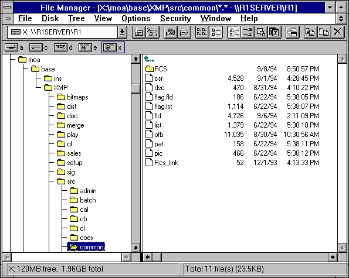
+ 328 $ 329 # 330 K 331 Known Bugs & Deficiencies
This information applies to the release of Mosaic OA
(
RT
and the
IBAE
, etc.) described in this document. It
is quite likely that future versions will be different in these
areas.
Data Dictionary Object Deletion
CDS Buffer Use
Using Proportional Fonts
Quoted Strings
$ 332 # 333 K 334 Data Dictionary Object Deletion
Deleting an object from the Data Dictionary is difficult to do correctly, and should probably be avoided. Click to see "Deleting Data Dictionary Objects".
$ 335 # 336 K 337 CDS Buffer Use
Certain CDS operations (like
FINDFIRST
,
INSERT
, etc.) read into, or write from,
memory buffers. The CDS Client/Server connection maintains only one
network buffer in order to conserve precious RAM at the workstation.
This means that something like a
CDS SELECT
and
FIND
on one context, followed by a
CDS SELECT
and
FIND
on another context, will fail with
Error #940, “CDS FINDxxx record buffer is not valid". By being aware of
this and using simple and straightforward program design, this trap can
be avoided.
$ 338 # 339 K 340 Using Proportional Fonts
Proportional fonts are now fully supported in the
DRAW MLFIELD
verb. The following functions
in
RT
, however, still rely on fixed pitch
fonts, and will cause alignment problems when used with proportional
fonts. With R1V4, a new personality switch called stretchfield exists to
help address this problem. See
stretchfield
for more
information.
DRAW FIELD
(Click
for information on the DDPROJ.INI file (editfields)
translating these to
DRAW MLFIELD
)
CALCULATOR
CALENDAR
$ 341 # 342 K 343 Quoted Strings
The OFB compiler’s parser is easily confused. Constructs like
DLL
“
XXX
”
(YYY,
”
A string
”
)
will fail with Error 200, “Expected operand not found.” The workaround
here is to insert a space after the comma in this statement. The
underlying problem is that parentheses, brackets, quotes, and commas
interact badly at times. Adding spaces (or sometimes deleting them) may
be enough to get you going again.
+ 344 $ 345 # 346 K 347 Arcane Secrets of the Mosaic OA Masters
Please pardon the cute section title. This is some very important information which either doesn't fit anywhere else, or is sufficiently important to merit repeating here. Sort of tricks-of-the-trade...
Linking Custom C Subroutines
Finding out what versions of software you’re running
Descriptors vs. String Constants
Overlaying fields on the screen
Tracking down OFB execution errors
The Quick load file
Spelling errors can cause trouble
Selecting manual file or index point from a picklist
Missing #include for <ofbdefs.h>
The ‘console’ window
Managing multiple threads of execution
Managing File Locations for Bitmap, Icons and Miscellaneous Files
$ 348 # 349 K 350 Linking Custom C Subroutines
Mosaic OA is compiled and linked using Microsoft Visual C++ for
Windows NT (VC++). Although it might be possible to use a different
compiler and linker to re-make
RT
and the
utility set, it probably won’t be worth the set up time to try a switch.
Although VC++ is used, the source code of
RT
is all Standard ANSI C, and the C++
extensions aren’t used.
The built-in debugger in VC++ works quite well for debugging Custom C
subroutines. The makefiles provided will create a debuggable version of
RT
when compiling and linking without
optimization.
The following paragraphs outline the procedure for using VC++ as a
source level debugger for
RT
. This isn’t
intended to be a comprehensive introduction to VC++, but rather as an
aid in getting started with C subroutine debugging in
RT
.
To load
RT
from the VC++ debugger:
1. Load VC++ by double clicking its icon from the program manager.
2. Select the Project menu, and from that menu select Open . .
3. When the Open Project dialog is displayed, select c: \ moa \ src \ rt \ makefile for the file name.
4. Check the Use as an external makefile box, and then click the OK button.
5. Next, select the File menu, and choose Open .
6. For a file name, select the C file to be debugged , and click OK . (For example, to debug a CSR file named mycsr.c , select c:\ppnt\src\custcsr.mycsr.c.)
7. You’ll see your source file displayed in a window within VC++. Position the cursor on an appropriate line for a breakpoint.
8. Then, from the Debug menu, select Breakpoints .
9. After clicking the Add and Close buttons from the breakpoints dialog box, you’ll see that the source line under the cursor has been highlighted, indicating that the breakpoint has been set.
10 . Next, from the Options menu, select Project . Type in c: \ moa \ bin \ rt.exe , and click OK .
11. Also from the Options menu, select Debug . Type in the appropriate command line options (i.e., -nproj -Ssrvr) and click OK .
12.
Finally, from the
Debug
menu, select
Go
.
When the running
RT
application hits its breakpoint, the
VC++ window will become the foreground window.
$ 351 # 352 K 353 Finding Out What Version of Software You're Running
All the Mosaic OA utilities (import*,
IBAE
,
BC
,
BDC
,
RT
,...)
recognize a command line option of -V. This causes them to display
version identification information in a standard format.
The version of Windows NT is displayed when the ver command is entered on the command line. Periodically, Microsoft releases services packs which are patches to be applied to Windows NT. These are available through many on-line information services, and are also available from Spokane.
The software version info should be included in SWRs and bug reports so that Spokane can look at the correct stuff in order to fix the problem.
$ 354 # 355 K 356 Descriptors vs. String Constants
The general rule is: if you're going to use a text string more than once, make it into a descriptor. If you only want to use it once, then using a string constant "e.g., like this" saves space and reads better. This isn't true, of course, if you are building a 'bi-lingual' system, where having all the text in descriptors makes it easier to translate to other languages. A string constant costs 1 or 2 bytes, plus the number of ASCII characters in the string each time you use it. A descriptor costs 14-16 bytes plus the number of ASCII characters, plus 4 bytes each time you use it.
$ 357 # 358 K 359 Overlaying Fields on the Screen
This technique is used in the common:status_line OFB routine so that
unsolicited messages of up to 80 characters or so can be temporarily
written to the last line of the screen. The trick is to define two
fields to occupy the same place on the screen, but to
always
have one hidden, and the other not. When you want
to switch which field is displayed, first set the
HIDDEN
attribute on the non-hidden field,
then reset the HIDDEN attribute on the hidden field. Presto!
$ 360 # 361 K 362 Tracking Down OFB Execution Errors
Runtime OFB execution errors can sometimes be hard to track down. A
useful technique to remember is using the OFB decompiler to see what's
really stored in the Data Dictionary. It is possible that what you think
you compiled either didn't get compiled correctly, or can't be
interpreted by
RT
(
yes, Virginia,
software isn't always bug-free
). The decompiler will show you what
RT
will see when it tries to execute the
subroutine. If the decompiler itself can't decompile it, try running
BDC
with the
-o
and
-d
options (offsets & debugging).
$ 363 # 364 K 365 The Quick Load File
The dictionary's quick load file contains an image of index structures used to locate objects. This file is located in the same directory as the other data dictionary files, and has a ".qck" on the end of its file name.
The dictionary has a fail-safe mechanism built into it, and when the quick load file isn't correct for the dictionary, it's simply ignored. (This condition may occur if a machine goes down during dictionary update, or when a dictionary index and data files are copied to a new directory, but the quick load file is missed.)
Although the dictionary will continue to function in this state, it
takes significantly longer for the dictionary to be opened. To correct
this condition, delete the incorrect quick load file, and run
impapl
(or any other maintenance utility)
on the dictionary.
The easiest way to do this is to run
impapl
in quiet mode. Simply type:
impapl -nproj -q
Then, type
Ctrl-Z <return>
to close the dictionary. It
will take
impapl
a minute to load up its
indexes, but after it has closed the dictionary, a new quick load file
will be created, and the dictionary open speed will back to normal.
$ 366 # 367 K 368 Spelling Errors Can Cause Trouble
The default behavior for the OFB compiler and the import utilities is to create objects automatically which are referred to in the source being compiled or imported. This allows circular references to be resolved by creating all referenced objects when they're referenced, and updating their definition when they're defined. Unfortunately, when an object name is misspelled, it will quite likely result in an unwanted object being added to the dictionary.
The ddstatus utility will quickly locate all objects in a dictionary which were created by forward reference, but which have never actually been defined. Liberal use of this utility is encouraged during the development process, since it executes quickly, and it has the potential of locating problem areas.
The compiler supports the
-s
option to
suppress the automatic creation of forward referenced objects. It’s a
good practice to use this option when compiling, as it will ultimately
save debugging time by telling you at compile time that you’ve
misspelled something.
A ‘
grep
’
utility can be used to find
the reference(s) to misspelled objects in a group of source (or import)
files.
Although an object may be logically deleted from the data dictionary, it isn't physically deleted until the dictionary is initialized and re-created from source. (Click for more information on deleting objects.)
$ 369 # 370 K 371 Selecting Manual File or Index Point from a Picklist
Indexed manual files may use strings for index points. Since the string may be a regular expression, this index type may be used creatively. For example, an expression of "24*" may be used to send all transactions with a select code starting with "24" to an index point in a manual file.
Another approach is to use a picklist as a "table of contents" into a manual file. To accomplish this,
1.
Use a field as the search string member in the
common:manual options list. (Click
for help on the
Manual CSR for more information on setting up this list.) For this
example, assume that a field named
"
common:man_index_field
" is used.
2. Next, create a picklist in which each line contains a topic contained in the manual file. Then, create an indexed manual file, with string indexes which match the lines in the picklist.
3.
From OFB code, set up a call to
PICKVERIFY
, which will save the picklist
selection in "common:man_index_field".
4.
Then, call the manual CSR, with a search type of
MANSTRING
. When everything is set up
correctly,
PICKVERIFY
will place a string
of text into
common:man_index_field
. This
string will correspond to an index marker in the manual file, and the
manual display will be positioned at the corresponding index point.
A picklist may also be used to allow the operator to make a selection which is ultimately used to select one of many manual files. This method could be used when several smaller manual files are used in place of one large file.
$ 372 # 373 K 374 Missing #include for <ofbdefs.h>
Many OFB source files need the following statement (near the beginning):
#include <ofbdefs.h>
so that the symbolic names for the function keys (RT_SEND, etc.) may
be used. If you extract a single
SUB
from
a source file containing many OFB subroutines, remember to add the
#include before you compile it. If you don't, and the
SUB
contains
KEYDEF
statements, you will probably get
an OFB runtime execution error complaining about "OFB Subroutine RT_XXXX
was referenced but never compiled", where RT_XXXX is the name of a
function key. This is a clue that you forgot to include the
#include
statement.
$ 375 # 376 K 377 The 'Console' Window
The console window created by
RT
in
Mosaic OA displays the
stdout
and
stderr
messages
produced by
RT
. Sometimes, when
RT
prints an error message and exits, the
console window disappears along with
RT
,
taking the message away with it. To get around this, run
RT
with the no console
(-
C0
) option, and check the
wsname.out
and
wsname.err
files in the temp directory
to find the message text.
$ 378 # 379 K 380 Managing Multiple Threads of Execution
The Mosaic OA RunTime is a multi-threaded process, and, as such, when multiple windows are active and the input focus window is other than the main RunTime window, then certain threads may not receive CPU cycles as often as needed.
For example, if you have CDSERVER operations and the RunTime single step debugging window is active with the input focus, then the thread which manages the CDSERVER heartbeat functionality may not be assigned sufficient CPU cycles to run properly — resulting in a lost CDS connection. To resolve this, you must alter the O/S's thread scheduling to give equal priority to Foreground and Background applications.
To assign equal priority to Foreground and Background applications, you should select the System program item in the Control Panel program group. Then choose the Tasking push button and select the option "Foreground and Background applications Equally Responsive". Then complete your Mosaic OA debugging session. Upon debugging completion, we recommend that you reset your tasking option to "Best Foreground Application Response Time".
$ 381 # 382 K 383 Managing File Locations for Project BITMAPS, ICONS and Miscellaneous Files
The Mosaic OA RunTime honors three helpful notations when accessing various files. When a file path is required for bitmaps, icons and CSR’s that perform file I/O you may use the following helper notations:
$PROJDIR This notation specifies that the file path is defined by the base directory where all Mosaic OA projects are located plus the name of the project. For example, if the project name is demo and the bitmap file name is good.bmp , then the path would be: \moaproj\demo\good.bmp . The reference to the good.bmp would be $PROJDIR\\good.bmp or $PROJDIR/good.bmp .
$MOAPROJ This notation specifies that the file path is defined by the base directory where all Mosaic OA projects are located. For example, if the icon file name is arrow.icn , then the path would be: \moaproj\arrow.icn . The reference to the arrow.icn would be $MOAPROJ\\arrow.icn or $MOAPROJ/arrow.icn .
$MOADIR This notation specifies that the file path is defined by the base directory where Mosaic OA is installed. For example, if a general file that is opened by a Mosaic OA application by the name of Data \ appl.dat , then the path would be: \moa\Data\appl.dat . The reference to the Data\appl.dat file would be $MOADIR\\Data\\appl.dat or $MOADIR/Data/appl.dat .
The preceding examples assume that the MOADIR registry or environment key value is \moa and that the MOAPROJ registry or environment key value is \moaproj . Your Mosaic OA development environment may be configured differently for your specific project needs using the PUTREG command line tool.
+ 384 $ 385 # 386 K 387 { bmr bm17.BMP } CUSTOM C SUBROUTINES
CSR Overview
Adding CSRs to a Project
“Standard” CSRs
Runtime System Reference, Main Contents
+ 388 $ 389 # 390 K 391 { bmr bm17.BMP } CSRs: OVERVIEW
C subroutines (CSRs) allow the developer to add functions to an
application which the OFB language either can't do, or which are too
time-consuming to do in OFB (e.g. APR calculations). All C subroutines
are compiled into CSR.DLL, a dynamic link library which is loaded by the
DataMan component of
RT
when the first CSR
is referenced from OFB code. Putting the CSRs into their own DLL
simplifies the job of creating custom C routines and simplifies the
Mosaic OA distribution itself.
Note: C++ routines are not supported in Mosaic OA at this time, other than via a standard C front-end routine. [Note: in fact this is exactly what is done in the IBAE Compiled List Author, which provides a standard C front-end routine to call into the IBAE’s internal C++ routines]
# 392 Defining CSRs
The CSR objects in the Data Dictionary are a three-part record with the following parts:
1. The name of the CSR.
2. The number of arguments it takes.
3. The name of the function in CSR.DLL.
The CSR name is a conventional Data Dictionary object name, i.e., 1 to 20 characters starting with a letter, continuing with letters, digits, or the underscore character. No spaces or other special characters are allowed.
The number of arguments is limited to a maximum of 99. If the routine takes a variable number of arguments, use a minus one (-1) as the argument count.
The name of the function in the DLL need not be the same as the CSR name in the Data Dictionary, although it is probably a good idea to keep the names the same if possible. Actual function names may start with underscores, and be longer than 20 characters (see the documentation for your C compiler).
Having the CSR objects in the Data Dictionary makes compiling OFB code easier and allows the OFB compiler to check for the proper number of arguments in a CALL statement.
The following procedure should be followed when adding custom CSR's.
This procedure will insure that the CSR's are known to all utilities and
to
RT
.
Note: if you are converting C routines from an existing PPLUS application, click here for additional helpful information.
Click the for details regarding the step.
1. Create the C Routine
2. Add the C routine to the ‘csr directory’ Makefile.
3. Import the CSRs.
4. Add a Call to the CSR and Test.
+ 393 $ 394 # 395 { bmr bm17.BMP } Step 1. Create the C Routine
Step 2
Step 3
Step 4
Calling Conventions
Code and thoroughly test the C subroutine. The .H files in the distribution's include directory may be referenced in the C source file. In particular, the following include files should always be included:
PCH.HCSRDEF.HTYPEDEFS.HRTDEF.H
This release takes advantage of precompiled headers which
significantly shortens compile time. the file
PCH.H
must be
included in all CSR modules added to the CSR.MAK project.
$
396
#
397
K
398
Calling
Conventions
CSRs called from OFB will receive their parameters via a two argument scheme similar to the familiar (argc,argv). In this case, however, argv must be declared as an array of structures of type RTOBJ (as defined in the include file TYPEDEFS.H). argc will contain a count of the arguments (255 max), and argv will contain pointers to the structures that define the individual argument types and values. e.g.
#include
“
PCH.H
”
#include “
CSRDEF.H
”
#include
“
TYPEDEFS.H
”
#include
“
RTDEF.H
”
int
example(int argc,struct RTOBJ *argv[])
{
field *fp;
if (argc != 1) {
// Wrong number of arguments
return(CSR_FAIL_ARGCOUNT);
}
if (argv[0]->arg_type == CSRARG_FLD) {
// Argument points to a FIELD
fp = (field *) argv[0]->arg_val;
/* etc. */
}
else {
// Bad argument type
return(CSR_FAIL_ARGTYPE);
}
return(0); // ZERO Is considered SUCCESS
}
When a CSR is attached as the post_val routine on a field, an argc value of 1 and a pointer to an RTOBJ structure (which in turn points to a FIELD structure ala TYPEDEFS.H) will be passed as the only two parameters to the C subroutine.
CSRs may only return a 32-bit integer value. The returned integer will be available to OFB routines through the OFB variable 'RETVAL' if you set the global int Retval (defined in RTDEF.H) to the proper value, and return that same value via a C return statement. CSRs which return strings should do so by putting the string into a field, which may be examined by the calling OFB routine.
+ 399 $ 400 # 401 { bmr bm17.BMP } Step 2. Add the C routine to the 'csr directory' Makefile
Step 1
Step 3
Step 4
To install a new CSR, the file csr.mak in the csr directory (typically \MOA\SRC) should be changed so that it will compile the new C routine, and add the new object file to the file CSR.DLL.
Note: file makefile simply acts as a front end to the csr.mak file which should be modified by hand using one of the existing routine entries as a guide. Allow Visual C++ to update the csr.mak file.
The command to rebuild the CSR.DLL from the \MOA\SRC\CSR directory is simply:
nmake
The
CSR.DLL
must be copied to your
working BIN directory. The makefile copies the CSR.DLL to the directory
\MOA\BIN after a successful build. If you wish to use a different
version of CSR.DLL make sure your PATH environment variable is
correct.
+ 402 $ 403 # 404 K 405 { bmr bm17.BMP } Step 3. Import the CSRs
Step 1
Step 2
Step 4
Add an entry for the new custom C routine in the file common.csr in the CSR directory and import the CSRs via the utility (IMPCSR) via a command line something like this:
impcsr -nproj -v <common.csr
The import file in the Mosaic OA distribution
,
\
moa
\
lib
\
common.csr
,
contains lines to import all the C routines for which sources are
distributed in the ..\csr directory. An example of an import file for
CSRs might look like this:
NOTE: Click for details on the IMPCSR utility.
+ 406 $ 407 # 408 { bmr bm17.BMP } Step 4. Add a Call to the CSR & Test
Step 1
Step 2
Step 3
After the above steps have been completed, the new CSR should be available for use. Add it to a OFB routine and try it. Some possible problems are:
The CSR is being referenced by its name in the DLL, rather than its name in the Data Dictionary.
The CSR.DLL file being loaded by
RT
is not the one modified to include the
new C subroutine.
The CSR isn’t being executed because the OFB code to call it is either incorrect or isn’t being executed.
Remember, you can use the Data Dictionary utilities, and or the IBAE,
to see if the CSR you created is actually in your Data Dictionary. And
you can put debugging code into your C source and use the SINGLESTEP
source code debugging option of
RT
to step
your way through the OFB code which calls your CSR.
+ 409 $ 410 # 411 K 412 { bmr bm17.BMP } Accessing the Data Dictionary
The Data Dictionary is opened by RT in so-called ‘run’ mode, which means everything in the Data Dictionary is READ-ONLY. So, although your custom C routine can call the DataMan routine ddput(), the call will fail with Error 633 and the object will not be written into the Data Dictionary.
An exception to this is that routines written to be ‘edit procs’ pointed to by Compiled List (LST) objects are executed under the IBAE at development time, when the Data Dictionary is opened in ‘maintain’ (i.e., READ-WRITE) mode. However, the IBAE is a very large C++ program and uses Class objects to manage the Data Dictionary. Therefore you should only call upon the CSR:wclist() routine to do any writing to the Data Dictionary. Calling ddput() directly will cause unpredictable results!
$ 413 # 414 An Alternative to CSR.DLL
Don’t forget about the
DECLARE
and
DLL
statements of Olivetti Financial
BASIC. In some cases, it may be desirable to simply create your own DLL
rather than put your C routines into CSR.DLL. It this case you can still
call your custom C routines via a
DLL
instead of a
CALL
, after properly declaring the function and DLL
via a
DECLARE
statement. If you create
your own DLL, you can do it independently of the Mosaic OA distribution
and can use Microsoft’s Visual C++, Borland’s equivalent product,
etc.
+ 415 $ 416 # 417 K 418 { bmr bm17.BMP } Mosaic OA "Standard" CSRs
C subroutines are compiled into a dynamic link library called
CSR.DLL
, which is built from the makefile
and source files in the
\
moa
\
src
\
csr
directory included in the standard Mosaic OA distribution. An ASCII file
called
\
moa
\
lib
\
common.csr
is a prototype input file for the IMPCSR utility
(to ‘build’ the
CSRs into the Data Dictionary — failing to do so will result in
RT
getting
“forward-referenced CSR” errors during initialization).
Click
for help on the CALL statement.
Note:
Building the
CSR.DLL
requires
Microsoft’s Visual C++ 2.0 for Windows NT.
C subroutines called directly by OFB subroutines, using the CALL
statement, are invoked with a two-argument calling scheme similar to the
(argc,argv)
familiar to C programmers. The
first argument is a count of the number of parameters, and the second
argument is an array of pointers to RTOBJ structures which contain, or
in turn refer to, the parameters. The last parameter pointer (or first,
if no parameters are being passed) is set to NULL. The RTOBJ structures
define the object type which is useful to the C routine for dynamic
type-checking.
(The RTOBJ structure is defined in
\moa\src\include\typedefs.h).
Some CSR's expect to return a value in a field, where the field is one of the arguments. In this case, the argument must indeed be a field; nothing else will do.
In the following documentation, routines which expect a particular type of argument will indicate which. Routines which can accept various types for certain arguments will specify as follows:
[ANY STRING] Anything which will evaluate to an ASCII character string is generally valid here, including Fields of type ASCII, NUMERIC, DATE, and TIME. Also, of course, string constants, or Descriptor or EditPattern objects.
[ANY INT] Anything which will evaluate to a 32-bit integer, including Fields of type INT or FLAGS, integer or hex constants, and character constants. Generally, [ANY STRING] can also be used in which case it will be converted to an integer value by skipping over any whitespace, and then taking decimal digits up to the first non-decimal digit character. Overflow is not checked for...
[ANY FIXED] Anything which will evaluate to a fixed-point numeric value, like a Field of type FIXED or a fixed-point constant. Generally, [ANY STRING] can also be used in which case it will be converted to a fixed-point value by skipping over any whitespace, and then taking decimal digits followed by a decimal point followed by optional decimal digits up to the first non-decimal digit character. Overflow is not checked for...
It should be obvious that the routine won't do magical things with
nonsense arguments. Passing an edit pattern of
"NNN.NN"
to
a routine which expects a FIXED is probably not going to do what you had
in mind (it will probably evaluate to 0.0).
+ 419 $ 420 # 421 K 422 { bmr bm17.BMP } APL_INDEX - get application's number
call CSR:apl_index (name,resultfield)
This subroutine takes the ASCII name of a Data Dictionary application specified as the first argument, and returns its 8-bit application number in the field identified by the second argument.
The inputs are:
name The name of the application as [ANY STRING].
resultfield The field in which the number will be put. The number will be numeric if the Field type is numeric, and will be ASCII digits if the Field type is ASCII.
The outputs are:
VAL_PASS Field successfully converted.
CSR_FAIL_ARGCOUNT Incorrect number of arguments.
CSR_FAIL_ARGTYPE Bad argument type.
+ 423 $ 424 # 425 K 426 { bmr bm17.BMP } C_CALC - perform standard financial calculations
call CSR:c_calc (func#, fld1 [,fld2, ..., fld7])
This subroutine implements standard financial calulation functions ranging from future values to CD penalties. It also implements Loan Calculation functions . In the following table, func# stands for the function number, fldn are the fields that need to be passed as fld1 ... fld6 . You need one or more parameters for the return value. Many of these functions involve converting the arguments given into floating point, then using the IEEE math library routines to do the calculations, then converting the result back into Mosaic OA’s FIXED decimal representation. It is therefore possible to incur very small errors due to floating point truncation and round-off.
There are no #define symbols for the function values, they must be coded numerically.
# 427 These are the parameters for fld x
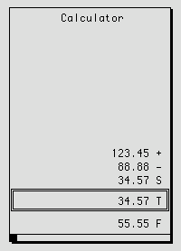
# 428 Standard Financial Calculation Functions
11 IAMT,ICOMP,INT,IPAYEAR,YR Future value with yearly deposits.
12 ICOMP,IFV,INT,IPAYEAR,YR Amount of Regular deposit.
16 ICOMP,INT,IPV,INUMWITH Future value.
22 IFV,INT,NUMWITH,YRDR Amount of regular withdrawals .
25 IAMT,ICOMP,INT,IWITHVAL,YRW CD penalty for certificates purchased prior to 7/1/79.
26 IAMT,ICOMP,INT,IWITHVAL,YRM,YRW CD penalty for certificates purchased after 6/30/79 and before 6/2/80.
27 IAMT,MATNETVALUE,INT,YRM CD penalty for certificates purchased after 6/1/80 and before 10/1/83.
28 IAMT,INT,YRM CD penalty for certificates purchased after /30/83.
30 ICOMP,INTEARNED,INT,YR Present value.
31 ICOMP,INTEARNED,IPVD,YR Interest rate.
32 ICOMP,INTEARNED,INT,IPVD Term length.
36 ICOMP,INT,IPVD,YR Interest earned.
37 ICOMP,INT Annual yield.
# 429 Loan Calculation Functions
100 INT, AMT_FIN,TERM,FREQ,INS,DAY, Solve for regular payments
ODAY,*
101 AMT_FIN,REG,INT,FREQ,TOTAL,* Solve for term
102 AMT_FIN,REG,INT,FREQ,TERM,* Solve for future value
103 INT,DAY,ODAY,AMT_FIN,REG,TERM, Solve for A.P.R.
FREQ,*
104 INT,AMT_FIN,TERM,BAL,DAY,* Solve for regular payments WITH BALLOON no ins
106 INT,TERM,PAYNUM,AMT,* Solve for ESTIMATED reg. payments
108 INT,REG,PAYNUM,TERM,* Solve for ESTIMATED loan amount
109 REG,TERM,FUTR,AMT_FIN,FREQ,* Solve for Bi-Weekly A.P.R.
110 INT, AMT_FIN,TERM,BAL,ODF,RR, Solve for regular payments WITH
LR,DR,* BALLOON
111 INT, AMT_FIN, PMT, TERM,ODF,LR,INS,* Solve for Balloon with reg payments
112 INT,AMT_FIN,TERM,AMORT,ODF, Solve for regular payments with amort
INS,LR,*
113 INT,AMT_FIN,TERM,AMORT,ODF, Solve for balloon payment with amort
INS,LR,*
# 430 The inputs are:
func# OFB FIELD - The calculation function to perform.
fld1...fld7 OFB FIELD - Fields for input to the calculation. The last field supplied will be the field that holds the return value.
The outputs are:
fldn Last field supplied contains the answer.
RETVAL == 0 All is well.
+ 431 $ 432 # 433 K 434 { bmr bm17.BMP } CHART - display an on-screen graphical chart
call CSR:chart (cargs...)
This subroutine is described in its own help topic…..
On-Screen Graphs, Charts & Pie Charts
+ 435 $ 436 # 437 K 438 { bmr bm17.BMP } CHECKOBJ - Return information about an object
call csr:checkobj (type, appl, name, maxrows, maxcols)
This development CSR will return information about objects. Its primary use is from ‘template’ routines associated with compiled list objects (LST) being edited via the IBAE’s Compiled List Author.
The inputs are:
type Field that contains dictionary type.
appl Field that contains application name.
name Field that contains object name.
maxrows Field to receive the number of rows, if the object is an array field.
maxcols Field to receive the number of columns, if the object is an array field.
The outputs are:
RETVAL == 0 OK object is in dictionary.
RETVAL == 1 Invalid dictionary index.
RETVAL == 2 Invalid application name.
RETVAL == 3 No name given.
RETVAL == 4 Name contains invalid characters.
RETVAL == 5 Object does not exist.
RETVAL == 6 Object has been deleted.
Examples:
/* Check to see if dscappl holds a valid application name */ call csr:checkobj(0,dscappl) if (RETVAL == 2) then do_error_stuff return -2 end if /* Check if object is in the data dictionary */ call csr:checkobj(dscobj,dscappl,dscname) if (RETVAL = 5) then do_error_stuff return -2 end if /* Check field maxrows and maxcols info */ call csr:checkobj(dfldobj,dfldappl,dfldname,maxrows,maxcols) if (RETVAL == 0) if (maxrows || maxcols)do_stuff_with_row_col
endif
end if
+ 439 $ 440 # 441 K 442 { bmr bm17.BMP } CLEARARRAY - clear all members of an array field
call CSR:cleararray (arrayfield)
This subroutine clears every member of an array field, just as though a CLEARFIELD statement were executed once for every member — except that this subroutine is much more efficient (in CPU cycles executed) than coding an DO-LOOP to do the same thing.
The inputs are:
arrayfield The array field to be cleared.
The outputs are:
VAL_PASS Fields were successfully cleared.
CSR_FAIL_ARGCOUNT Not exactly one argument specified.
CSR_FAIL_ARGTYPE The argument is not a field.
CSR_FAIL_FIELDTYPE The argument is not an array field.
+ 443 $ 444 # 445 K 446 { bmr bm17.BMP } COPY_RECORD - copy a cds record to another table
call CSR:copy_record (source_contextname, destination_contextname)
This subroutine will copy a record from a cds table to another cds table. It is mainly used in emergency journaling to easily copy tables to the local cdserver.
The inputs are:
source_context The source context (initialized by cds select and cds findfirst/next).
destination_context The destination context (initialized by a cds select).
The outputs are:
RT_SUCCESS Copied sucessfully.
RT_FAIL Copy failed.
CSR_FAIL_ARGCOUNT Two arguments required.
-1 Invalid argument type.
- 2 Context does not exist.
-3 Table buffer sizes different.
-4 Destination context is invalid.
-5 Record too large.
+ 447 $ 448 # 449 K 450 { bmr bm17.BMP } COPYFROMSCRAP - Get scrap from the system clipboard
call CSR:copyfromscrap (targetfield)
The copyfromscrap C subroutine performs a GetClipBoardData call to retrieve text from the clipboard. The text retrieved from the clipboard is put into "targetfield" via the "str2field" function.
The input is:
targetfield OFB FIELD - name of field which will receive the clipboard text.
The outputs are:
RETVAL == 0 All is well.
RETVAL == CSR_FAIL_ARGTYPE
Bad field argument type.
RETVAL == CSR_FAIL_FIELDTYPE
A field of type FT_BULK, FT_IND or FT_FLAGS was used for "targetfield".
RETVAL == ERROR No object of type 'TEXT' is currently on the system clipboard.
+ 451 $ 452 # 453 K 454 { bmr bm17.BMP } COPYTABLEDEF - Copy CDS table definition
call csr:copyTableDef (source_table,destination_table)
This CSR attempts to copy the table definition of the source table to the destination table on another server. For Example: to copy the tabledef of “ journal” on the unnamed server to a server named “local” argument 1 would be “:journal” and argument two would be “local:journal”.
The inputs are
source_table Source service name and table name (separated by :).
destination_table Destination service name and table name (separated by :).
The outputs are:
RETVAL == 1 OK. Table has been created.
RETVAL == 0 Table could not be created.
RETVAL == CSR_FAIL_ARGTYPE
First argument is not a string.
RETVAL == CSR_FAIL_ARGCOUNT
Requires 2 arguments.
+ 455 $ 456 # 457 K 458 { bmr bm17.BMP } COPYTOSCRAP - put a field on the system clipboard
call CSR:copytoscrap (sourcefield)
The copytoscrap C subroutine performs a SetClipboardData call to store the contents of "sourcefield" on the system clipboard in a text format.. The contents of the field are stored as a string, created through the "field2str" function. This routine does nothing if "sourcefield" is empty.
The input is:
sourcefield OFB FIELD - name of the field to be stored on the system clipboard
The outputs are:
RETVAL == 0 All is well.
RETVAL == CSR_FAIL_ARGTYPE
Bad field argument type.
RETVAL == CSR_FAIL_FIELDTYPE
A field of type FT_BULK, FT_IND or FT_FLAGS was used for "sourcefield".
+ 459 $ 460 # 461 K 462 { bmr bm17.BMP } CREATE_PROCESS - start an external application
call CSR:create_process (program_name,[initial_window_state],[wait_flag])
This subroutine will execute an external program. If initial_window_state and wait_flag are not passed as arguments, the window will be displayed in a normal startup window and the OFB code will not wait for the process to complete.
The inputs are:
program_name The external program to run. NOTE: A ‘\’ in the pathname must be ented either as a double (\\) or as a forward slash (/).
initial_window_state The appearance of the window (definitions are in csr.h).
wait_flag Either CSR_WAIT or CSR_NOWAIT (in csr.h). CSR_WAIT will wait for the process to complete before continuing the OFB subroutine.
The outputs are:
RT_SUCCESS Program launched sucessfully (CSR_NOWAIT only).
CSR_FAIL_ARGCOUNT At least one argument required.
CSR_FAIL_ARGTYPE Invalid argument type.
or:
Retval from external program
+ 463 $ 464 # 465 K 466 { bmr bm17.BMP } DATE_ADD - create new date from date plus number of days
call csr:date_add (loan_date, 30, "m" fld:target)
This C subroutine builds a new date which is the given number of days, months or years from the date contained in the given field. Negative values may be given to create a new date which is the given number of months, days or years before the starting date.
Input: Field or string containing the starting date.
Integer contains qty to add.
String containing the addition type:
"d" or "D" = add days to starting date.
"m" or "M" = add months to starting date.
"y" or "Y" = add years to starting date.
Field which will receive the new date.
Output: RETVAL == 0 when new date has been created, and fld:target contains new date (in standard date format).
RETVAL != 0 when starting date is not valid, or when new date is <01/01/0001 or new date > 12/31/9999.
+ 467 $ 468 # 469 K 470 { bmr bm17.BMP } DATE_COMPARE - find most recent of two dates
call csr:date_compare (maturity_date, retirement_date)
-or-
call csr:date_compare(dsc:host_date, "01011990")
This C subroutine compares the dates in two fields and returns a result which may be tested in an IF statement, or used in a SELECT statement, etc.
Input: Field or string containing date1.
Field or string containing date2.
Output: RETVAL == 0 when date1 is equal to date2.
RETVAL == 1 when date1 is newer than date2.
RETVAL == 2 when date1 is older than date2.
RETVAL < 0 when either date is not valid.
+ 471 $ 472 # 473 K 474 { bmr bm17.BMP } DATE_CONVERT - convert date between two formats
call csr:date_convert (doc_date, "DDDDDDDDD MMMMMMMMM dd, yyyy", \
fld:target)
-or-
call csr:date_convert doc_date, "ddmmyyyy", \
"DDDDDDDDD MMMMMMMMM dd, yyyy", fld:target)
-or-
call csr:date_convert "01041989", "ddmmyyyy", \
"DDDDDDDDD MMMMMMMMM dd, yyyy" fld:target)
This C subroutine converts date field from its internal storeage form to new format based upon the supplied pattern. It is useful for turning a date from its internal numeric form into English words, among other things.
Input: Field or string containing the date to be converted.
Edit pattern which reflects the starting format of the date to be converted (optional).
Edit pattern containing the target format.
Field in which the converted date will be stored
(This should be an ASCII field which is long enough to hold the converted date).
Output:
RETVAL == 0 and fld:target contains new date string when date is valid.
RETVAL < 0 when date is not valid.
+ 475 $ 476 # 477 K 478 { bmr bm17.BMP } DATE_SUBTRACT - get difference (in days) between two dates
call csr:date_subtract (today, borr_birthdate)
-or-
call csr:date_subtract(today, "19890101")
This C subroutine returns the number of days between two given dates. The number will be positive if the first date is newer than the second date, negative if the first is older, and 0 if the dates are equal.
IMPORTANT NOTE : This routine will not work to subtract a given amount of time from a starting date to produce a new date. However, the date_add C subroutine may be used for this purpose, by passing a negative value for the add_qty parameter.
Input: Field or string containing date1.
Field or string containing date2.
Output:
RETVAL == number of days between dates if both dates are valid. This value will be negative if date1 < date2, positive if date1 > date2.
RETVAL == -9999999 if either date is not valid (If both dates are valid, this won't happen. Check 'em first!).
+ 479 $ 480 # 481 K 482 { bmr bm17.BMP } DAY_NAME - turn day number into day name
call csr:day_name (3, fld:target)
This C subroutine looks up the name of the day of the week given as the first parameter, and puts that name into the target field.
Input: Integer where 1 = Sunday, 7 = Saturday.
The field to receive the name.
Output: RETVAL == 0 and fld:target contains day name.
RETVAL != 0 if given integer <1 or >7.
+ 483 $ 484 # 485 K 486 { bmr bm17.BMP } DAY_OF - get day number (of month) from date string
call csr:day_of (borr_birthdate)
This C subroutine returns the day of the month from a date field.
Input: Field or string containing the date.
Output: RETVAL <= 0 if date is not valid.
RETVAL == 1 to 31 if date is valid.
+ 487 $ 488 # 489 K 490 { bmr bm17.BMP } DAY_OF_WEEK - return number (1-7) of day in week
call csr:day_of_week (borr_birthdate)
This C subroutine returns a number corresponding to the day of the week contained in the given field.
Input: Field or string containing the date.
Output: RETVAL == 1 when date falls on Sunday.
:
RETVAL == 7 when date falls on Saturday.
RETVAL == 0 when date is not valid.
+ 491 $ 492 # 493 K 494 { bmr bm17.BMP } DAY_OF_YEAR - get day of the year from a date string
call csr:day_of_year (my_birthday)
This C subroutine returns the day of the year for the date contained in the given field.
Input: Field or string containing the date.
Output: RETVAL == 1 to 366 if date is valid.
RETVAL < 0 if date is not valid.
+ 495 $ 496 # 497 K 498 { bmr bm17.BMP } DEV_DISABLE - Protect and ghost fields or strings on a screen
call csr:dev_disable (arg1, [argn...])
This development CSR will protect and ghost out fields and strings on a screen. It does this by examining the current screen's display list and protecting/ghosting everything which matches one of the arguments. String constant arguments match DRAW TEXT, DRAW MLTEXT, and DRAW TITLE objects. Field name arguments match any display object which references that field, e.g., DRAW FIELD, DRAW MLFIELD, DRAW PUSHBUTTON, DRAW CHECKBOX, DRAW RADIOBUTTON. Its primary use is from ‘template’ routines associated with compiled list objects (LST) being edited via the IBAE’s Compiled List Author.
The inputs are:
arg(s) ASCII string constants or the names of fields.
There is no return value.
For example, to ghost out the strings "Application" and "Name", and also ghost out and protect the fields dscappl and dscname:
call csr:dev_disable("Application","Name",dscappl,dscname)+ 499 $ 500 # 501 K 502 { bmr bm17.BMP } DEV_ENABLE - Unprotect and unghost fields or strings
call csr:dev_enable (arg1, [argn...])
This development CSR will unprotect and unghost fields and strings on a screen. It is used to un-do what was done by a call to csr:dev_disable . Its primary use is from ‘template’ routines associated with compiled list objects (LST) being edited via the IBAE’s Compiled List Author.
The inputs are:
arg(s) ASCII string constants or the names of fields.
There is no return value.
For example, to unghost the string's "Application" and "Name", and unghost and unprotect the fields dscappl and dscname:
call csr:dev_enable("Application","Name",dscappl,dscname)+ 503 $ 504 # 505 K 506 { bmr bm17.BMP } DEVCSR_INFO - Display up to 3 lines of text in a box
call csr:devcsr_info(arg1, [arg2,] [arg3])
This development CSR will display an information box with up to three line's of text. Its primary use is from ‘template’ routines associated with compiled list objects (LST) being edited via the IBAE’s Compiled List Author.
The inputs are:
arg1 Text to be displayed as line 1.
arg2 (optional) Text to be displayed as line 2.
arg3 (optional) Text to be displayed as line 3.
The outputs are:
RETVAL == 0 Okay.
RETVAL == -2 More than three arguments.
Example:
call csr:devcsr_info("LIST NOT IN DATA DICTIONARY")+ 507 $ 508 # 509 K 510 { bmr bm17.BMP } DEVCSR_NEWOBJ - Create a Data Dictionary object entry
call csr:devcsr_newobj (obj, appl, name)
This development CSR will create an object entry in the data dictionary. The object is created with the 'Forward-Reference' bit on to indicate that it has been referenced, but not completely defined. Its primary use is from ‘template’ routines associated with compiled list objects (LST) being edited via the IBAE’s Compiled List Author.
The inputs are:
obj Field that contains string for dictionary type.
appl Field that contains string for application name.
name Field that contains string for object name.
The outputs are:
RETVAL == 0 Success.
RETVAL == -1 Creation failed.
Example:
call csr:devcsr_newobj(dscobj,dscappl,dscname)+ 511 $ 512 # 513 K 514 { bmr bm17.BMP } DEVCSR_QBOX - Display a prompt box and return an answer
call csr:devcsr_qbox(prompt)
This development CSR will display a quoted string or descriptor and return back a YES/NO answer. Its primary use is from ‘template’ routines associated with compiled list objects (LST) being edited via the IBAE’s Compiled List Author.
The input is:
prompt Text of the prompt, a descriptor or ASCII string constant.
The outputs are:
RETVAL == 0 User did not reply YES.
RETVAL == 1 User replied YES.
For example, to display a prompt defined by descriptor create_it and wait for a response. If the answer is yes (RETVAL = 1) call devcsr_newobj else call EVALdscname.
call csr:devcsr_qbox(DSC:create_it) if (RETVAL == 1) call csr:devcsr_newobj(dscobj,dscappl,dscname) else call EVALdscname end if+ 515 $ 516 # 517 K 518 { bmr bm17.BMP } DOLLAR_TEXT - Generate English amounts
call csr:dollar_text ( fld, length, fillchar, format, upcase, dollar, \
fld:target [,zero_cents_string])
This C subroutine will take the value from a field, and turn it into a text string which spells out the amount in English. For example, the amount 290025.77 would produce the result:
Two Hundred Ninety Thousand Twenty-Five and 77/100 Dollars
If the string won't fit into the length specified, an ascii string containing the numeric version of the number will be created. In the above example, the following string would be created:
$290,025.77
An optional format may be requested which will return the result in two lines. The dollar_text function must be called twice to produce this output, once for the first line and once for the second line. With the exception of the format parameter, ALL PARAMETERS MUST BE THE SAME in both calls, or the results won't be meaningful!
Leading placement of the fill character is not allowed when double line output is requested. If the entire amount will fit on one line, the second line will be blank, and the fill character will appear in the first line. Otherwise, the first line will be padded with spaces, and the fill character will be used to pad the second line. The following two strings demonstrate results which may be produced when the double line option is selected:
Two Hundred Ninety Thousand
Twenty-Five and 77/100 Dollars
A numeric return code (as listed below) will be returned, indicating the success or failure of the conversion. The actual string that is created will be placed in fld:target.
Input:
fld The field containing the value to convert.
length The length that the output will occupy.
fillchar A character used to pad the result to the requested length. (Use ' ' to pad with spaces.)
format 'L' or 'l' for leading fill character, 'T' or 't' (or any other character) for default of trailing fill character, '1' for first line of 2 line result, '2' for second line of 2 line result.
upcase Use 'Y' or 'y' to force text to all upper case. Use 'N' or 'n' (or any other character) for default of lower case with initial caps.
dollar Use 'Y' or 'y' for the word 'Dollar' to be placed at the end of the string. Use 'N' or 'n' (or any other character) for default of no 'Dollar' on the end of the string.
fld:target The field in which the result will be stored (This must be large enough to hold the length specified above, or the result will be truncated!)
zero_cents_string
The string to concatenate if the amount contains zero cents. This argument is optional and, if not specified, then no output specifies the cents for an amount with .00 cents.
Output:
RETVAL == 0 Amount converted successfully.
RETVAL == 1 Amount too long to fit in requested length, numeric format was used (This condition returns a positive number because it is a 'soft' error.)
RETVAL == -1 Number too large or too small to convert (range is - 999,999,999,999,999.99 to 999,999,999,999,999.99).
+ 519 $ 520 # 521 K 522 { bmr bm17.BMP } DT_MENU_PARSE - processes the 'desktop' menu compiled list
call CSR:dt_menu_parse (dt_menu_list, on_flags, off_flags, item_name, action, is_menu, authority, menu_title)
This subroutine takes the name of a compiled list which is intended
to be used as desktop menu (
See the document
Foundation Application Developer
Notes
(ISD#00027) for more details on the ‘Desktop’
application
) and parses each element in the list, placing the
values in the fields passed as parameters into the corresponding fields
identified by the compiled list. These values are used by the ‘desktop
driver’ in constructing the ‘desktop menu’ and setting the authorities.
This function uses the field
common:menu_flags
and the
INIT 4
setting in the same way as the TMENUS (see TMENUs
for more details) to determine the whether to display a particular menu
item or not.
Input:
dt_menu_list OFB FIELD - An Indirect field pointing to the desktop menu list or the LIST itself.
on_flags OFB FIELD - Array field that receives the hex representation of access bits for each menu item. A bit that is ‘on’ indicates that the corresponding bit in the operator’s access bits must be ON for this selection to be seen or allowed.
off_flags OFB FIELD - Array field that receives a different hex representation of the same access bits. A bit which is ‘on’ indicates that the corresponding bit in the operator’s access bits must be ‘off’ for this selection to be seen or allowed.
item_name OFB FIELD - Array field that receives each menu item name in the given list.
action OFB FIELD - An Indirect field array that receives the action to be taken when the selection is made for each menu item in the list. This could be another menu list, a ‘desktop transaction’ list or an OFB procedure.
is_menu OFB FIELD - A one byte ASCII field array that receives an “M” for each menu item if the menu item points to another ‘desktop menu’ list.
authority OFB FIELD - An integer array field that receives the evaluated authority for an operator to see each menu item or not. The filed will be ‘0’ if the operator can see this item, -1 if the menu item should be ghosted or -2 if the menu item should be invisible. This subroutines determines this at runtime based on the values of the fields common:menu_flags, INIT 4 setting and based the on_flags and off_flags described above.
menu_title OFB FIELD - An ASCII field that receives the title of the menu. This function assumes that if the first member of ‘desktop menu’ list has only one element, then it is the title of that menu.
Output:
RETVAL 0 - Success.
CSR_FAIL_ARGCOUNT - Wrong number of arguments
CSR_FAIL_ARGTYPE - Invalid type of argument passed.
LISTERR - Error in getting the LST object.
+ 523 $ 524 # 525 K 526 { bmr bm17.BMP } DT_TRAN - application 'desktop' transaction driver
call CSR:dt_tran (func [,afield])
This subroutine implements an application ‘desktop’ with a nice 3-D visual look & feel.
This document describes the desktop application in more detail:
Foundation Application Developer Notes, Copyright 1995, Olivetti N.A.,
ISD# 00027, December, 1995
and it is available from the Document Control department of Olivetti North America in Spokane. The ‘desktop’ looks something like this:
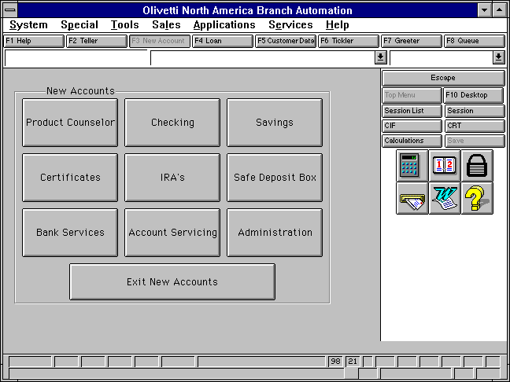
This CSR implements 6 subfunctions, as #defined in the file \moa\lib\csr.h . With them, you can perform the following functions:
Start or end a Transaction.
Auto step to the next screen.
Collect data, display a menu, or be controlled by the pre-display subroutine.
Place up to 21 buttons on the screen.
Attach (or disable) up to 10 side bars per screen.
Check for required screen’s completion.
Cut or join screens.
Call another Compiled List or OFB subroutine.
Move from button to button when no mouse is available.
Draw the title bar.
Draw the description bar.
The IBAE’s Compiled List Author is used, in conjunction with the listedit procedures:
template:DT_driver_trantemplate:DT_driver_menu
template:DT_driver_but
template:DT_driver_fmt
to create and maintain the LST objects which the desktop driver uses to control its work.
The basic idea is that a List (LST object) defines up to 13 screens (numbered 0 through 12), where movement between screens can be automatic or programmed. Each screen can invoke a new List or an OFB subroutine when a button is clicked. Up to 20 buttons, and up to 10 side-bars, can be defined per screen.
On completion of a List, control is automatically returned to the previous list or can be programmed to return to any List. There is a stack limit of 10 active Lists. Each screen can be used for data collection, a menu, or custom input (e.g., the pre-collect routine does a CDS MULTIDISPLAY). You must not use the following verbs in OFB subroutines called from the desktop driver:
STARTTRAN
ENDTRAN
RESET
BAILOUT
CDS APPENDALL
POPUP
ALTERBUTTON
ALLCONTROLS
DISPLAY
The subfunctions, as specified by the argument func , are:
# 527 DT_TRAN_INIT
This subfunction clears the stack fields and sets the Base. There are currently 30 items in each stack. This subfunction always returns RT_SUCCESS which is a numeric (0).
# 528 DT_TRAN_START
This subfunction starts a Transaction using the LST or OFB subroutine pointed to by argument afield , which must be of type IND and must not be empty. If there is a stack overflow, an error message is produced via a Windows MessageBox. This subfunction returns RT_SUCCESS which is a numeric (0), or RT_ERROR.
# 529 DT_TRAN_RESTART
This subfunction restarts a Transaction using the LST or OFB subroutine pointed to by argument afield , which must be of type IND and must not be empty. If the LST or OFB subroutine refers to a Transaction which wasn’t previously started (via DT_TRAN_START), then an error message will be produced via a Windows MessageBox. This subfunction always returns RT_SUCCESS which is a numeric (0).
# 530 DT_TRAN_END
This subfunction ends a Transaction using the LST or OFB subroutine pointed to by argument afield , which must be of type IND and must not be empty. If the LST or OFB subroutine refers to a Transaction which wasn’t previously started (via DT_TRAN_START), then an error message will be produced via a Windows MessageBox. The stacks and temporary memory allocations associated with this Transaction are released. This subfunction returns RT_SUCCESS which is a numeric (0), or RT_ERROR.
# 531 DT_TRAN_RESET
This subfunction resets a Transaction using the LST or OFB subroutine pointed to by argument afield , which must be of type IND and must not be empty. If the Transaction is found in the current stacks, it is put back into an ‘initial’ state, i.e., its stacks and internal variables are cleared. This subfunction always returns RT_SUCCESS which is a numeric (0).
# 532 DT_TRAN_SAVE_CURFLD
This subfunction saves the CURRENTFIELD id and cursor location in the Transaction using the LST pointed to by argument afield , which must be of type IND and must not be empty. This allows RT’s data collect logic to place the cursor in the proper field when backing up into a previously active screen. This subfunction always returns RT_SUCCESS which is a numeric (0).
# 533 DT_TRAN_DEBUG
This subfunction implements some debugging aids, using the numeric value given by argument afield . This subfunction always returns RT_SUCCESS which is a numeric (0). The sub-subfunctions (use the #defines in \moa\lib\csr.h ) are:
DT_FLD
call CSR:dt_tran(DT_TRAN_DEBUG, DT_FLD, what, result)
This sub-subfunction obtains the name (from the Data Dictionary) of the object pointed to by the indirect field given as the 3rd argument ( what ). The name is placed into the field identified by the 4th argument ( result ), which must be a field of type ASCII.
DT_STACK
call CSR:dt_tran(DT_TRAN_DEBUG, DT_STACK)
This sub-subfunction dumps the internals stacks for all nested desktop Transactions. The display (which goes to a file named sdebug_int in the temp directory) is nicely formatted and annotated.
DT_PIC
call CSR:dt_tran(DT_TRAN_DEBUG, DT_PIC)
This sub-subfunction dumps the currently allocated dynamic picklists. This includes picklists created by all nested desktop Transactions as well as any created outside the desktop environment. The display (which goes to a file named sdebug_pic in the temp directory) is nicely formatted and annotated.
+ 534 $ 535 # 536 K 537 { bmr bm17.BMP } F_GET_NODE - get node (CPU) name of workstation
call CSR:f_get_node (resultfield)
This subroutine gets the ASCII string corresponding to the ‘name’ of
the CPU where the current copy of
RT
is
running.
The inputs are:
resultfield The field where the node name will be put.
The outputs are:
VAL_PASS Success.
CSR_FAIL_ARGTYPE The argument is not an ASCII field.
+ 538 $ 539 # 540 K 541 { bmr bm17.BMP } F_HHMMSS2SECONDS - convert hrs/mins/secs to seconds
call CSR:f_hhmmss2seconds (hh, mm, ss, target)
The hours, minutes, and seconds are converted and accumulated to form a single number of seconds. No range checking is performed on the arguments.
The inputs are:
hh Hours
mm Minutes
ss Seconds
target Receives the result
The outputs are:
RETVAL == 0 All is well.
RETVAL == n Where n is one of: CSR_FAIL_ARGTYPE, CSR_FAIL_ARGCOUNT CSR_FAIL_FIELDTYPE.
Note: This routine is provided as a companion to "f_seconds2hhmmss".
+ 542 $ 543 # 544 K 545 { bmr bm17.BMP } F_ORSKLOCK - lock out the RESET key
call csr:f_orsklock
Lock the reset key using
RT
's internal
ESC_lock flag. This is a fairly risky thing to do — it prevents the
<ESC> key from being recognized as <RESET>, but does put the
ESC key value into the typeahead buffer.
Beware
!
NOTE: The recommended (and much safer) means for locking out the reset key is to set the indirect object common:trap_reset to point to a OFB subroutine which returns a non-zero value. The <RESET> key itself is discarded in this case. If you wish, the OFB routine pointed to by common:trap_reset can do an "UNGETKEY RT_ESC" which will put an Escape key in the typeahead buffer and mimic exactly the effect of CSR:f_orsklock.
There are no inputs or outputs.
+ 546 $ 547 # 548 K 549 { bmr bm17.BMP } F_ORSKUNLK - unlock the RESET key
call csr:f_orskunlk
Unlock the reset key using
RT
's
internal ESC_lock flag. Failure to unlock the flag will mean that no
<RESET> processing (either via common:trap_reset or
OFB:common:reset_key or the RESET key itself) will be done.
Beware!
There are no inputs or outputs.
+ 550 $ 551 # 552 K 553 { bmr bm17.BMP } F_SAADDPL - add items to a dynamic picklist
call csr:f_saaddpl (symname, val)
Appends the field contents to the list being built for the named dynamic picklist, growing the list buffer if necessary. Used in building a picklist "on the fly" from within a OFB program. The picklist rectangle is dynamically sized as in the original implementation.
The inputs are:
symname ANY STRING - symbolic name of the picklist, as in f_sanewpl() .
val ANY STRING - value to be appended to in the picklist.
There are no outputs.
+ 554 $ 555 # 556 K 557 { bmr bm17.BMP } F_SACHARCHECK - check for illegal chars
call csr:f_sacharcheck (field_name)
Puts up an error message if illegal characters are found in the specified field. Valid character are "[A-Z a-z 0-9 . - _ */]." The error message is "Valid characters include alphabetics, digits, period, hyphen and underscore."
The inputs are:
Field_name OFB FIELD - Field to validate.
The outputs are:
RETVAL == 0 All is well.
RETVAL == -1 Bad parameters.
+ 558 $ 559 # 560 K 561 { bmr bm17.BMP } F_SACMDPL - 'System command' generated picklist
call csr:f_sacmdpl (plhdr, width, command, target, fields, delimiters, max width,\max height)
Sets up a variable-box-size picklist, calls popen() and reads the output of the command as picklist items. Lets the user select one of these lines, returns its index. Copies the text of the item into the target field, to the limit of the size of that field.
The inputs are:
plhdr A compiled picklist header, which controls the position and initial size of the picklist, plus font/face/size/color/etc. Note that this subroutine will attempt to enlarge the size of the picklist box, if necessary, to accommodate the command output.
width ANY INT - Column width controls "columnization" of fields returned from the system command. Relevant only when parsing is requested. 0 indicates width-1 columns; other values cause fields to be aligned at the next even multiple of the column width.
command ANY STRING - Pointer to a shell command line w/arguments (for popen).
target ASCII FIELD - A field to receive the string selected from the picklist.
fields ANY STRING - (optional) list of fields from cmd to be included in picklist. Format: "1,3,6-9,14" note: 16 is highest recognized field.
delimiters ANY STRING - (optional) Delimiter string (strtok) used to parse command output into fields. The first character of this string is used as a delimiter in the picklist display.
max_width ANY STRING - (optional) Max width set the max width the screen can grow to. This is entered as a string starting with a "w" .i.e., "w12 0
max_height ANY STRING - (optional) Max height set the max height the screen can grow to. This is entered as a string starting with a "h". i.e., "h12 0
The outputs are:
RETVAL A zero or positive result means that choice was made. i.e., a 0 means the 1st picklist selection was chosen. A negative result is the negated value if the key which caused exit, i.e., -K_ESC for <RESET>.
TARGET If the return value was non-negative, the target field will contain the contents of the picklist item which was chosen by the user.
+ 562 $ 563 # 564 K 565 { bmr bm17.BMP } F_SACOMBOPL - display & process a dynamic combo picklist
call csr:f_sacombopl ("symname", target, tag)
Exactly the same functionally as f_sadopl except for the placement of the picklist is done in the same way of OFB verbs COMBOVERIFY and COMBOPICK. Please note that any picklist specified by the DRAW COMBOFIELD verb will be overridden by the picklist specified by the f_sanewpl call.
The inputs are:
symname ANY STRING - Symbolic name of picklist previously built by sanewpl()/saaddpl().
target ASCII FIELD - A field to receive the string selected from the picklist.
tag TAG - A tag that was specified in the DRAW COMBOFIELD verb
The outputs are:
RETVAL >= 0 A zero or positive result means that choice was made. i.e., a 0 means the 1st picklist selection was chosen. A negative result is the negated value of the key causing exit, i.e., -K_ESC for <RESET>.
TARGET If the return value was non-negative, the target field will contain the contents of the picklist item which was chosen by the user.
$ 566 # 567 K 568 { bmr bm17.BMP } F_SACOMBOPV - verify via a dynamic combo picklist
call csr:f_sacombopv ("symname", target, tag, update)
Exactly the same functionally as f_sadopv except for the placement of the picklist is done in the same way of OFB verbs COMBOVERIFY and COMBOPICK. Please note that any picklist specified by the DRAW COMBOFIELD verb will be overridden by the picklist specified by the f_sanewpl call.
The inputs are:
symname ANY STRING - Symbolic name of picklist previously built by sanewpl()/saaddpl().
target ASCII FIELD - A field to receive the string selected from the picklist.
tag TAG - A tag that was specified in the DRAW COMBOFIELD verb
update 0 or 1 - 1=show picklist/update field if invalid, 0=no update
The outputs are:
RETVAL >= 0 A zero or positive result means that choice was made. i.e., a 0 means the 1st picklist selection was chosen. A negative result is the negated value of the key causing exit, i.e., -K_ESC for <RESET>.
TARGET If the return value was non-negative, the target field will contain the contents of the picklist item which was chosen by the user.
+ 569 $ 570 # 571 K 572 { bmr bm17.BMP } F_SACRYPT - encrypt a string
call csr:f_sacrypt (sourcefld targetfld)
Encrypts the string in sourcefld, using the crypt() system call. The encrypted result is stored in targetfld, truncating the result if it's too long for that field. (Make the target field two bytes more than twice as long as the source field.)
The international version works the same — crypt() system call is changed.
The inputs are:
sourcefld Field containing string to be encrypted.
targetfld Field to contain the encrypted result.
The outputs are:
RETVAL == 0 All is well targetfld contains encrypted string.
The following notice applies to the crypt algorithm in Windows NT:
Copyright (c) 1989 The Regents of the University of California.
All rights reserved.
This code is derived from software contributed to Berkeley by Tom Truscott.
Redistribution and use in source and binary forms, with or without modification, are permitted provided that the following conditions are met:
1. Redistributions of source code must retain the above copyright notice, this list of conditions and the following disclaimer.
2. Redistributions in binary form must reproduce the above copyright notice, this list of conditions and the following disclaimer in the documentation and/or other materials provided with the distribution.
3. All advertising materials mentioning features or use of this software must display the following acknowledgment: This product includes software developed by the University of California, Berkeley and its contributors.
4. Neither the name of the University nor the names of its contributors may be used to endorse or promote products derived from this software without specific prior written permission.
THIS SOFTWARE IS PROVIDED BY THE REGENTS AND CONTRIBUTORS “AS IS” AND ANY EXPRESS OR IMPLIED WARRANTIES, INCLUDING, BUT NOT LIMITED TO, THE IMPLIED WARRANTIES OF MERCHANTABILITY AND FITNESS FOR A PARTICULAR PURPOSE ARE DISCLAIMED. IN NO EVENT SHALL THE REGENTS OR CONTRIBUTORS BE LIABLE FOR ANY DIRECT, INDIRECT, INCIDENTAL, SPECIAL, EXEMPLARY, OR CONSEQUENTIAL DAMAGES (INCLUDING, BUT NOT LIMITED TO, PROCUREMENT OF SUBSTITUTE GOODS OR SERVICES; LOSS OF USE, DATA, OR PROFITS; OR BUSINESS INTERRUPTION) HOWEVER CAUSED AND ON ANY THEORY OF LIABILITY, WHETHER IN CONTRACT, STRICT LIABILITY, OR TORT (INCLUDING NEGLIGENCE OR OTHERWISE) ARISING IN ANY WAY OUT OF THE USE OF THIS SOFTWARE, EVEN IF ADVISED OF THE POSSIBILITY OF SUCH DAMAGE.
+ 573 $ 574 # 575 K 576 { bmr bm17.BMP } F_SADOPL - display & process a dynamic picklist
call csr:f_sadopl ("symname", target, [file])
Finishes up from building, then displays and processes the static picklist built "on the fly" from within a OFB program. Returnsthe index of the item selected, and copies (as much as possible of)the text for the item into the "common:csr_string" field.
The inputs are:
symname ANY STRING - Symbolic name of picklist previously built by sanewpl()/saaddpl().
target ASCII FIELD - A field to receive the string selected from the picklist.
file ASCII FIELD - Full path of file to write picklist data out to.
The outputs are:
RETVAL >= 0 A zero or positive result means that choice was made. i.e., a 0 means the 1st picklist selection was chosen. A negative result is the negated value of the key causing exit, i.e., -K_ESC for <RESET>.
TARGET If the return value was non-negative, the target field will contain the contents of the picklist item which was chosen by the user.
+ 577 $ 578 # 579 K 580 { bmr bm17.BMP } F_SADOPV - verify via a dynamic picklist
call csr:f_sadopv ("symname", target, update)
Finishes up from building, then verifies the target field against the picklist build "on the fly" from within a OFB program. If the field matches one of the items in the picklist, returns 0. If the field does not match any item in the picklist, and update is 0, returns -1. If field does not match, and update is 1, display picklist and wait for operator selection. If a selection is made, field is updated to contain selection and index (1-relative) is returned. Copies (as much as possible of) the text for the item into the "common:csr_string" field. If no selection is made, return -1.
The inputs are:
symname ANY STRING - Symbolic name of picklist previously built by sanewpl()/saaddpl().
target ASCII FIELD - A field to receive the string selected from the picklist.
update 0 or 1 - 1=show picklist/update field if invalid, 0=no update
The outputs are:
RETVAL >= 0 A zero or positive result means that choice was made. i.e., a 0 means the 1st picklist selection was chosen. A negative result is the negated value of the key causing exit, i.e., -K_ESC for <RESET>. See description above.
TARGET If the return value was non-negative, the target field will contain the contents of the picklist item which was chosen by the user.
common:csr_string as much as will fit of the text for the selected item, provided that a picklist was displayed (see the "update" arg).
+ 581 $ 582 # 583 K 584 { bmr bm17.BMP } F_SADROPPL - discard a dynamic picklist
call csr:f_sadroppl ("symname")
Frees up table slot and various memory associated with the named dynamic picklist.
The inputs are:
parm1 ANY STRING - Symbolic name of picklist (see f_saaddlp , f_sadop ).
There are no outputs.
+ 585 $ 586 # 587 K 588 { bmr bm17.BMP } F_SAGETPL - get item from dynamic picklist
call CSR:f_sagetpl (picklist, item, onvalue, posinfield, posinitem, field)
This subroutine copies a substring of an element of a dynamic picklist into the target field . The picklist must have been created via a call to csr:f_sadopl . The element selected will be at offset item within the picklist. The substring begins at offset posinitem within the selected element. After the substring has been copied into field , the first character of the string onvalue is compared to the character at offset posinfield of field , and if they are equal a zero result is returned, else a -1 result is returned.
The inputs are:
picklist A dynmaic picklist created by f_sadopl .
item The zero-relative element of the picklist to get.
onvalue A string, the first character of which is compared to the result.
posinfield The offset in the resulting field at which to do the comparison.
posinitem The offset within the selected picklist item from which to copy into the field.
field The Field in which the resulting string is placed.
The outputs are:
VAL_PASS Field successfully copied to, and character matched.
-1 Field successfully copied to, but character didn’t match.
CSR_FAIL_ARGCOUNT
Not exactly 6 arguments.
CSR_FAIL_ARGTYPE
The target field is not an ASCII field, or one of the other arguments is not of the correct type.
+ 589 $ 590 # 591 K 592 { bmr bm17.BMP } F_SAITEMPL - get current item from a dynamic picklist
call CSR:f_saitempl (name)
This subroutine returns the zero-base number of the currently selected item in the dynamic picklist identified by name .
The input is:
name A dynamic picklist created by f_sanewpl () .
The output is:
(n) The number (0-n) of the currently selected item.
(-1) The picklist name isn’t valid.
+ 593 $ 594 # 595 K 596 { bmr bm17.BMP } F_SAMODPL - modify element of a dynamic picklist
call CSR:f_samodpl (name, onval, offval, startingpos [,item])
This subroutine modifies an element of a dynamic picklist such that if the picklist identified by name , at offset startingpos , contains the string offval , then offval is replaced by onval in the selected element. If the element doesn’t contain offval at offset startingpoint , then offval is copied to the element at that offset. In otherwords, it modifies the element back and forth between having onval or offval at offset startingpos .
The inputs are:
name The name of a picklist dynamically created by f_sanewpl ().
onval The ASCII string to represent the ‘on’ case.
offval The ASCII string to represent the ‘off’ case.
startingpos The integer offset in the selected item to put onval or offval.
item The zero-relative picklist item number (-1 means the currently seleted item).
The outputs are:
-1 The picklist name isn’t valid.
CSR_FAIL_ARGCOUNT An incorrect number of arguments were specified.
+ 597 $ 598 # 599 K 600 { bmr bm17.BMP } F_SANEWPL - start a dynamic picklist
call csr:f_sanewpl ("name", plhdr, [width, height, file])
Sets up control parameters and initializes for building a picklist "on the fly" from within a OFB program.
The inputs are:
name ANY STRING- Symbolic name of new picklist (see f_saaddpl , f_sadopl , f_sadroppl ).
Plhdr A compiled picklist header, which controls the position and initial size of the picklist, plusfont/face/size/color/etc. Note that the subroutines aaddpl will attempt to enlarge the size of the picklist box, if necessary, to accomodate the picklist items.
width Max width screen can grow.
height Max heigth screen can grow.
file Full path of file to read in, instead of using saaddpl.
The outputs are:
RETVAL == 0 All is well.
RETVAL == 1 Errors are encountered.
+ 601 $ 602 # 603 K 604 { bmr bm17.BMP } F_SECONDS2HHMMSS - convert seconds to hrs/mins/secs
call CSR:f_seconds2hhmmss (seconds hh_target, mm_target ss_target)
The "seconds" argument is converted to a number of hours, minutes, and seconds. These results are placed in the supplied target fields. mm_target and ss_target will always be less than 60, but hh_target can be a large number of hours. Conversion to days/hours is not supplied.
The inputs are:
seconds An integral number of seconds.
hh_target Receives the hours result.
mm_target Receives the minutes result.
ss_target Receives the seconds result.
The outputs are:
RETVAL == 0 All is well.
RETVAL == n Where n is one of: CSR_FAIL_ARGTYPE, CSR_FAIL_ARGCOUNT CSR_FAIL_FIELDTYPE.
Note: This routine is meant to be used in conjunction with "f_time_subtract" to accumulate timing results for management reporting.
+ 605 $ 606 # 607 K 608 { bmr bm17.BMP } F_TIME_SUBTRACT - get time difference
call CSR:f_time_subtract (date1, time1, date2, time2, time_target)
-or-
call CSR:f_time_subtract(date1, time1, date2, time2, int_target)
The date2/time2 pair is subtracted from the date1/time1 pair. Thus, the result will be negative if the second pair is later in time than the first pair.
If the target field (5th arg) is of field type FT_TIME, the result will be expressed in hours, minutes, and seconds. No checking is made for overflow result in this case, so make sure that the times are less than 99 hours apart when using this feature.
If the target field is any other numeric type, the result returned is an integer number of seconds, suitable for accumulation.
The inputs are:
date1 A DATE field.
time1 A TIME field.
date2 A (normally earlier) DATE field.
time2 A (normally earlier) TIME field.
target Destination for result. See above.
The outputs are:
RETVAL == 0 All is well.
RETVAL == n Where n is one of: CSR_FAIL_ARGTYPE, CSR_FAIL_ARGCOUNT CSR_FAIL_FIELDTYPE.
Notes: This routine is meant to be used in conjunction with "f_seconds2hhmmss" to accumulate timing results for management reporting. You can capture start/stop times at various appropriate places, compute the differences in seonds, and use the other conversion routines to format timings for printing reports. The accumulation of total timings and report totals can be done directly in OFB using ADDTOTAL or LET on the "seconds" result. If you only need one interval and no accumulation, you can get this easily using the "time" result.
+ 609 $ 610 # 611 K 612 { bmr bm17.BMP } FILE_CLOSE - close a Windows NT file
call csr:file_close (filehandle)
This C subroutine closes the file associated with filehandle . The file must have been previously opened by file_open() or an error will occur. Filehandle must evaluate to an integer in the range 1 to 8, which allows a maximum of 8 files to be open at any one time.
The input is:
filehandle The open file handle (a small integer) created by file_open().
The outputs are:
VAL_PASS Success.
CSR_FAIL_ARGCOUNT Incorrect number of arguments.
CSR_FAIL_ARGTYPE Argument is not a valid filehandle .
+ 613 $ 614 # 615 K 616 { bmr bm17.BMP } FILE_FLUSH - do an fflush() on a Windows NT file
call csr:file_flush (filehandle)
This C subroutine flushes the file associated with filehandle . The file must have been previously opened by file_open() or an error will occur. Filehandle must evaluate to an integer in the range 1 to 8, which allows a maximum of 8 files to be open at any one time. The flush operation will force any buffered but unwritten data to be immediately written to the file.
The input is:
filehandle The open file handle (a small integer) created by file_open().
The outputs are:
VAL_PASS Success.
CSR_FAIL_ARGCOUNT Incorrect number of arguments.
CSR_FAIL_ARGTYPE Argument doesn’t evaluate to an integer.
(-108) Argument is not a valid filehandle .
+ 617 $ 618 # 619 K 620 { bmr bm17.BMP } FILE_GETIBS - get an ibs form from a Windows NT file
call csr:file_getibs (filehandle, list)
This C subroutine is rather complicated — see the actual C source file in \moa\src\csr\file_rw.c if you wish to use this function.
The input is:
filehandle The open file handle (a small integer) created by file_open().
list A compiled list.
The outputs are:
VAL_PASS Success.
CSR_FAIL_ARGCOUNT Incorrect number of arguments.
CSR_FAIL_ARGTYPE Argument is not a valid filehandle .
(-102) Filehandle isn’t in the range 1-8, or the file isn’t open.
(-100) The fputs() call failed.
+ 621 $ 622 # 623 K 624 { bmr bm17.BMP } FILE_GETLINE - get a text line from a Windows NT file
call csr:file_getline (filehandle, targetfield)
This C subroutine reads a newline-terminated line from the file associated with filehandle into the field identified by targetfield . The file must have been previously opened by file_open() or an error will occur. Filehandle must evaluate to an integer in the range 1 to 8, which allows a maximum of 8 files to be open at any one time.
The system function fgets() is used to read the file. The maximum line length allowed is 255 characters.
The inputs are:
filehandle The open file handle (a small integer) created by file_open().
targetfield The field into which the line will be put.
The outputs are:
VAL_PASS Success.
CSR_FAIL_ARGCOUNT Incorrect number of arguments.
CSR_FAIL_ARGTYPE Argument is not a valid filehandle .
(-102) Filehandle isn’t in the range 1-8, or the file isn’t open.
+ 625 $ 626 # 627 K 628 { bmr bm17.BMP } FILE_OPEN - open a Windows NT file
call csr:file_open (filehandle, filename, type)
This C subroutine opens the file whose name is filename , with options specified by type , and associates the open file with filehandle . Filehandle must evaluate to an integer in the range 1 to 8, which allows a maximum of 8 files to be open at any one time.
Filename is the full path to the Windows NT file to be opened. Omitting the path from the filename will result in looking only in the current directory for the named file.
Type indicates the options for the opened file. It should evaluate to a string with one of the following values and meanings:
“
r
” read only
“
w
” create
(or truncate)
for write
“
a
” append
(open for writing at
end-of-file)
“
r+
” update
(reading and writing)
“
w+
” create
(or truncate)
for update
“
a+
” update at end-of-file
The inputs are:
filehandle The integer filehandle (1-8) to associate with the opened file.
filename The full pathname of the file.
type The options for the opened file.
The outputs are:
VAL_PASS Success.
CSR_FAIL_ARGCOUNT Incorrect number of arguments.
CSR_FAIL_ARGTYPE An argument is not of the correct type.
(-103) Invalid filehandle number.
(-99) Open failed.
+ 629 $ 630 # 631 K 632 { bmr bm17.BMP } FILE_PUTIBS - write an ibs form to a Windows NT file
call csr:file_putibs (filehandle, list)
This C subroutine is rather complicated — see the actual C source file in \moa\src\csr\file_rw.c if you wish to use this function.
The input is:
filehandle The open file handle (a small integer) created by file_open().
list A compiled list.
The outputs are:
VAL_PASS Success.
CSR_FAIL_ARGCOUNT Incorrect number of arguments.
CSR_FAIL_ARGTYPE Argument is not a valid filehandle .
(-101) Filehandle isn’t in the range 1-8, or the file isn’t open.
(-100) The fputs() call failed.
+ 633 $ 634 # 635 K 636 { bmr bm17.BMP } FILE_PUTLINE - write a text line to a Windows NT file
call csr:file_putline (filehandle, source)
This C subroutine writes the text source as a newline-terminated line to the file associated with filehandle . The file must have been previously opened by file_open() or an error will occur. Filehandle must evaluate to an integer in the range 1 to 8, which allows a maximum of 8 files to be open at any one time.
The system function
fputs()
is used to read the
file. The maximum line length allowed is 300 characters. If the text
being written does not end with a newline
(‘
\
n
’) character, one will be appended.
The inputs are:
filehandle The open file handle (a small integer) created by file_open().
source The field or string to be written as a line.
The outputs are:
VAL_PASS Success.
CSR_FAIL_ARGCOUNT Incorrect number of arguments.
CSR_FAIL_ARGTYPE Argument is not a valid filehandle .
(-101) Filehandle isn’t in the range 1-8, or the file isn’t open.
(-100) The fputs() call failed.
+ 637 $ 638 # 639 K 640 { bmr bm17.BMP } FILE_READ - read binary data from a Windows NT file
call csr:file_read (filehandle, targetfield [,type])
This C subroutine reads data from the file associated with filehandle and places it in the field identified by targetfield . The file must have been previously opened by file_open() or an error will occur. Filehandle must evaluate to an integer in the range 1 to 8, which allows a maximum of 8 files to be open at any one time.
The system function fread() is used to obtain the data from the file. The data is assumed to be transparent 8-bit bytes — no interpretation is done on the data. If argument type is missing or has a value of -1, the number of bytes read is determined by the size of the field (i.e., targetfield’s storage size in bytes). If type is 1, then a 4-byte (32-bit, byte-reversed) integer is read into targetfield .
The input is:
filehandle The open file handle (a small integer) created by file_open().
targetfield The field into which the data will be read.
type If specified, must evaluate to an integer -1 or 1.
The outputs are:
VAL_PASS Success.
CSR_FAIL_ARGCOUNT Incorrect number of arguments.
CSR_FAIL_ARGTYPE Argument is not a valid filehandle .
+ 641 $ 642 # 643 K 644 { bmr bm17.BMP } FILE_UNLINK - delete a Windows NT file
call csr:file_unlink (filename)
This C subroutine deletes the Windows NT file named by the argument filename . If the file named by filename does not exist, no error is returned.
The input is:
filename The full pathname of the Windows NT file to be deleted.
The outputs are:
VAL_PASS Success or failure (unlink doesn’t return an error).
CSR_FAIL_ARGCOUNT Incorrect number of arguments.
CSR_FAIL_ARGTYPE Argument is not a valid filename string.
+ 645 $ 646 # 647 K 648 { bmr bm17.BMP } FILE_WRITE - write data to a Windows NT file
call csr:file_write (filehandle, sourcefield [,uselen])
This C subroutine writes binary data to the file associated with filehandle . The file must have been previously opened by file_open() or an error will occur. Filehandle must evaluate to an integer in the range 1 to 8, which allows a maximum of 8 files to be open at any one time.
The data will be taken from Field sourcefield , which may be of any type, including BULK. If argument uselen is omitted, or has a value of -1, the field’s NUMCHARS value will determine how many bytes are written. If uselen is 1, then the entire field’s storage area (used or unused) will be written to the file.
The inputs are:
filehandle The open file handle (a small integer) created by file_open().
sourcefield The field containing the data to be written.
uselen A integer -1 or 1 ( uselen may be omitted).
The outputs are:
VAL_PASS Success.
CSR_FAIL_ARGTYPE Argument is not a valid filehandle .
(-101) File not open.
(-100) Write operation failed.
+ 649 $ 650 # 651 K 652 { bmr bm17.BMP } FLD_TO_LOWER - change a field to lower case
call CSR:fld_to_lower (field)
This subroutine converts all of the upper case letters in a field to lower case.
The inputs are:
field The field to be converted to all lower case.
The outputs are:
VAL_PASS Field successfully converted.
CSR_FAIL_ARGTYPE The argument is not an ASCII field.
+ 653 $ 654 # 655 K 656 { bmr bm17.BMP } FLD_TO_UPPER - change a field to upper case
call CSR:fld_to_upper (field)
This subroutine converts all of the lower case letters in a field to upper case.
The inputs are:
field The field to be converted to all upper case.
The outputs are:
VAL_PASS Field successfully converted.
CSR_FAIL_ARGTYPE The argument is not an ASCII field.
+ 657 $ 658 # 659 K 660 { bmr bm17.BMP } FMT - format text into a dynamic picklist, file or field
call csr:fmt (list, 1, name)
call csr:fmt(list, 2, filehandle)
call csr:fmt(list, 3, field)
This C subroutine applies edit patterns to the contents of fields in a compiled list (LST) and places the results in various targets. The first argument, list , must be a compiled list or an indirect field which points to a compiled list. Here’s an example list:
LIST teller:fmtlist
MEMBER “
first member gets ignored
”
MEMBER lineno,colno,afield // various forms
MEMBER
2,0,”
String w/out editpattern
”
// are allowed...
END LIST
The second argument must be an integer 1, 2, or 3. A 1 means that each file in the compiled list will be processed and its result will be put into the dynamic picklist identified by name , using the f_saaddpl() routine described in this section. A 2 means that each file in the compiled list will be processed and its result will be written into the file identified by filehandle , obtained via the file_open() routine, and written using the file_putline() routine. (both routines are described earlier in this section). A 3 means that each file in the compiled list will be processed and its result will be put into the field identified by field .
The compiled list has two or more members (the first member is ignored and may be used as a comment). Each member, beginning with the second, has three items:
The line number (zero-relative)
The column number (zero-relative)
The field (or anything that produces an ASCII string)
The result will go into the specified line number (if appropriate) at the specified column.
Note: This routine has a number of odd side-effects, and if you wish to use it you are encouraged to read the actual C source in the file \moa\src\csr\fmt.c .
The inputs are:
list The compiled list describing what’s to be done.
arg2 An integer 1, 2, or 3.
name The dynamic picklist to which to add the resulting string(s).
filehandle The file into which to write the resulting string(s).
field The field to contain the resulting string.
The outputs are:
(0) Operation was successful.
CSR_FAIL_ARGCOUNT Incorrect number of arguments.
( -2) Argument was of an incorrect type.
(1) Operation failed.
+ 661 $ 662 # 663 K 664 { bmr bm17.BMP } FMT_FILL - fill a field with X's or 9's
call csr:fmt_fill (indfld, result)
This C subroutine takes two field arguments — indfld must contain a reference to the field of interest, and result will contain the resulting string of ASCII X’s or 9’s. The field pointed to by indfld is examined and a string of X’s (if the field is ASCII) or 9’s (if the field is NUMERIC, DATE, TIME, INT, or FIXED) is placed in field result . The length of the resulting string matches the ‘display length’ of the field if interest. i.e., the number of characters which would appear on the screen if the field were the subject of a DRAW FIELD statement. This includes, of course, space for editing characters.
Note: error checking on this routine is minimal!
The inputs are:
indfld An indirect field pointing to the field of interest.
result The field which will contain the resulting string of X’s or 9’s.
The outputs are:
(0) Success.
non-zero Failure ( indfld wasn’t of type INDIRECT).
+ 665 $ 666 # 667 K 668 { bmr bm17.BMP } GETNAME - Get ascii dictionary name using an indirect
call CSR:getname (indirect_field, appl_target, item_target)
This function will return the application name and item name of a data dictionary item when passed a pointer to a data dictionary item
The inputs are:
indirect_field OFB INDIRECT FIELD - The pointer to the object.
appl_target OFB FIELD - The target for the application name to be placed.
targetfld OFB FIELD - The target for the item name to be placed.
The outputs are:
RETVAL = 0 Success.
RETVAL = CSR_FAIL_ARGCOUNT Improper number of arguments
RETVAL = CSR_FAIL_ARGTYPE Improper argument type
RETVAL = -1 Application or Item not found
+ 669 $ 670 # 671 K 672 { bmr bm17.BMP } GETOFBINDX - Get pointer to object in field
call CSR:getofbindx (applname, objname, targetfld, [objtype])
This function will stuff an indirect-type field with a pointer to a dictionary object specified by name and type. The difference between this CSR and the LET verb is the ability to assign a pointer to an object named in the CONTENTS of an ASCII field. Given a field as the object to assign, the LET verb will assign a pointer to the field itself. This CSR will assign a pointer to the object named in the field's storage. A literal string or descriptor is acceptable for specifying the object name to assign, though the LET verb is the preferred method in that case. The application name, object name, and type are expected as separate parameters. If the object type is not specified, the default type is "OFB."
The inputs are:
applname OFB FIELD or STRING - The application name of the object to retrieve.
objname OFB FIELD or STRING - The object name of the object to retrieve.
targetfld OFB FIELD - The indirect-type field where the result is to be stored.
objtype OFB FIELD or STRING - The three-character type of the object to retrieve. The default object type is "OFB”
Click to see "Format of OFB Source Code" for a list of valid object types.
The outputs are: targetfld will contain a pointer to the specified object, or zero if the object is not found or if one or more parameters are invalid.
+ 673 $ 674 # 675 K 676 { bmr bm17.BMP } GET_PROFILE_STRING - get the profile string from the ini file
call CSR:get_profile_string (section_name,item_name,value)
The function retrives a string from a specified section and item name from the Mosaic OA initialization file and returns the value into the ASCII field passed as parameter.
The inputs are:
section_name OFB FIELD or STRING - The title of the section to look for in the .ini file
item_name OFB FIELD or STRING - The item name to look for under the above section.
value OFB FIELD - An ASCII type field to receive the value of the item.
The outputs are:
RETVAL 0 - Success
value OFB FIELD - The ASCII type field which will receive the result, if the RETVAL is non-negative.
+ 677 $ 678 # 679 K 680 { bmr bm17.BMP } GETROWCOL - get current row/column for an array field
call CSR:getrowcol (fld, row, col)
The field must be "current", i.e., must be the field which is now the input focus of datacollect. This means that this routine is useful only in datacollect, e.g., in a field validation routine. The field is evaluated, and the current row (if any) and column number are stuffed into the fields specified as the second and third arguments. If the array is one-dimensional, the column number will be returned and the row will be set to -1. The second and third arguments may be omitted. The column number is always returned in RETVAL.
NOTE: this routine will not work with CURRENTFIELD passed as the first argument! Using CURRENTFIELD from OFB passes the wrong kind of information as an argument to the CSR. You must pass a hard-coded reference to the current field.
The inputs are:
fld A hard reference to the field for which the row and column are to be determined. MUST BE THE CURRENT FIELD. Must NOT be passed CURRENTFIELD from OFB.
row Destination field for the row number. Integer fields are suggested.
col Destination field for the column number. Integer fields are suggested.
The outputs are:
RETVAL >= 0 All is well. RETVAL is the current column number.
RETVAL == n Where n is one of: -1 if the field wasn't current, couldn't be found, wasn't an array, etc. CSR_FAIL_ARGTYPE, CSR_FAIL_ARGCOUNT CSR_FAIL_FIELDTYPE.
+ 681 $ 682 # 683 K 684 { bmr bm17.BMP } IND_ASSIGN - Retrieve or set data using a pointer to a field
call csr:ind_assign (destination, source)
This CSR will retrieve or set the data using pointers to fields. The destination can be a field, an indirect field containing a pointer to a field or a compiled list. The compiled list should contain members with fields of various data types. The csr will search through the list until it finds a field that matches the type of the source and return the offset within the list. The source can only be a field or an indirect containing a pointer to a field. Both argments can be indirect fields containing pointers to fields. Data conversion will be exactly the same as the normal “let” verb.
Example:
call csr:getofbindx "common" "csr_string" INDfld "FLD"
call csr:ind_assign INDfld op:login_id
This will move the login id into the field common:csr_string
The inputs are:
destination RT Field or compiled list.
retries RT Field.
The outputs are:
RETVAL == -1 Field of similar data type not found in compiled list.
RETVAL == 0 Success.
RETVAL == CSR_FAIL_ARGTYPE Invalid argument type for argument 1 or 2.
+ 685 $ 686 # 687 K 688 { bmr bm17.BMP } LAST_DAY - create date string for last day of month & year
call csr:last_day (3,1995, fld:target)
This C subroutine builds a date corresponding to the last day of the month for the given month and year, and store it in the target field.
Input:
Integer containing the month.
Integer containing the year.
Field which will receive the new date.
Output:
RETVAL == 0 and fld:target contains new date when month and year are valid.
RETVAL < 0 when year < 1 or year > 9999 or month < 1 or month > 12.
+ 689 $ 690 # 691 K 692 { bmr bm17.BMP } LISTADDFIELDS - Add a list of fields to the field list
call csr:listaddfields (from)
This CSR will add all the fields named in a compiled list to the "fields list" for the current transaction. The only prameter is a compiled list name or an indirect field loaded with a compiled list name.
The input is:
from Compiled list name or INDirect field loaded with a compiled list name.
The outputs are:
RETVAL == SUCCESS
RETVAL == ERROR
RETVAL == LISTERROR
RETVAL == LS_NOLIST
For example, to add all the fields in .I samplefldlist to the field list for the current transaction:
INDfield = LST:na:samplefldlist CALL CSR:listaddfields(INDfield)
+
693
$
694
#
695
K
696
{
bmr
bm17.BMP
}
LISTAPPEND - CDS APPEND a list of
fields
call csr:listappend (context, list)
This C subroutine will perform a
CDS
APPEND
operation on each field contained
in the compiled list (LST) specified by
list
. The CDS context
for this operation is given by argument
context
. This
subroutine offers higher performance than coding an OFB
DO
-
LOOP
to
do the same thing.
An example list might look like this:
LIST teller:sometranMEMBER account,amount,cash_in,cash_out
MEMBER sequence_no
END LIST
The inputs are:
context The CDS context for this operation.
list The compiled list (LST) object containing the desired fields.
The outputs are:
0 Successful completion.
1 Incorrect number or type of arguments, operation failed to complete.
+ 697 $ 698 # 699 K 700 { bmr bm17.BMP } LISTCSR - Read information from a compiled list
call csr:listcsr (function [, ...])
This Standard CSR is used for reading information from compiled lists at execution time. It allows OFB code to do limited interpretation of a compiled list. Three opcodes are used as explaned below.
call csr:listcsr(GETLIST, list)
Function 0 (GETLIST) loads the compiled list identified by the 2nd argument, list, which may be a LST object, or an indirect field which points at execution time to a compiled list object.
The input is:
list Name of the list to be loaded from the Data Dictionary, or the name of an INDirect field containing a reference to the desired compiled list.
The outputs are:
RETVAL > 0 Number of members in the list if successful.
RETVAL == -1 GETLIST failed.
Examples:
call csr:listcsr(GETLIST,INDfld) call csr:listcsr(GETLIST,LST:na:parmlist)call csr:listcsr(GETMEMBER, which)
Function 1 (GETMEMBER) loads only the MEMBER identified by the argument which.
The inputs are:
which The number of the MEMBER statement to be loaded.
The outputs are:
RETVAL > 0 Number of elements in the member loaded.
RETVAL == -1 MEMBER number was less than zero, or greater than the maximum number of members in the list.
Example:
call csr:listcsr(GETMEMBER,0)call csr:listcsr(GETELEMENT, which, obj, appl, name, const)
Function 2 (GETELEMENT) loads ASCII type fields with the human-readable form of the element of the MEMBER identified by the last GETMEMBER function call.
The inputs are:
which The number of the desired element (zero-relative).
obj The field which will receive the object type. (3 byte ASCII field)
appl The field which will receive the application name. (20 byte ASCII field)
name The field which will receive the object name. (20 byte ASCII field)
const The field which will receive a constant value. (128 byte ASCII field)
The outputs are:
RETVAL == -1 Bad parameters.
For example, get element 1 of the current MEMBER. If it is a dictionary object, put its dictionary object type, application name and item name in the fields listobj, listappl and listname. If it's a character, string or numeric constant, convert it to a string and put it in wkfld.
call csr:listcsr(GETELEMENT,1,listobj,listappl, \ listname,wkfld)+ 701 $ 702 # 703 K 704 { bmr bm17.BMP } LISTDUPFIELDS - Move dup area into field storage via list
call csr:listdupfields (fldlist)
This CSR will move the dup area into field storage for all the fields in a compiled list. The only prameter is a compiled list name or an indirect field loaded with a compiled list name.
The input is:
fldlist Compiled list name or INDirect field loaded with a compiled list name.
The outputs are:
RETVAL == SUCCESS
RETVAL == ERROR
RETVAL == LISTERROR
RETVAL == LS_NOLIST
For example, to move the dup area into field storage for all the fields in samplefldlist:
INDfield = LST:na:samplefldlist CALL CSR:listdupfields(INDfield)+ 705 $ 706 # 707 K 708 { bmr bm17.BMP } LISTEXEC - Load fields and execute a OFB routine from a list
call csr:listexec (vialist)
This CSR will move values from an argument list into the fields specified in a template list and execute the routine also specified in the template list.
The input is:
vialist Compiled list name or INDirect field loaded with a compiled list name.
The outputs are:
RETVAL == SUCCESS
RETVAL == ERROR
RETVAL == LS_NOLIST
For example, move the information in members 1 - n into the fields specified in the in the template list in member 0. Then execute the routine in member 0 of the template list:
CALL CSR:listdupfields(INDfield)+ 709 $ 710 # 711 K 712 { bmr bm17.BMP } LOADFONT - windowman font preloading
call csr:loadfont (font, face, size)
This routine loads the WindowMan measurement table for a given font. The intended purpose is to enable preloading of information for specified fonts during initialization of an application so there is no delay for font retrieval the first time it is drawn. (There will still be a performance penalty for the initial (first-time only) retrieval of data dictionary objects.)
Examples:
call csr:loadfont(0,0,12)call csr:loadfont(11,RT_BOLD,18)
Input:
font - The font number to load
face - The face number (attributes) for desired font
size - The size of the desired font
Output:
RETVAL == 0 successful completion.
RETVAL < 0 invalid parameter.
+ 713 $ 714 # 715 K 716 { bmr bm17.BMP } MANUAL - Display a training manual
Page Numbers
Search
Field Entry
Indexing
call csr:manual
-or-
call csr:manual(manlistname)
This C subroutine displays a text file, allowing the operator to move forward and backward through the file.
The manual routine works with a 'vanilla' text file. However, some of its functionality will not be available unless the file is an indexed manual file created by the addhelp utility.
The features currently supported by the manual routine are:
# 717 PAGE NUMBERS
The manual display may be moved to a specific page number by keying in the page number and pressing the RT_SEND key. When the first digit is entered, an entry line will appear, requesting the page number. The RT_ESC key may be pressed at this point to exit page number entry and return to the manual. (This feature is only available on indexed manual files.)
Normally, the first page in the indexed file will be page 1. The first page may be changed to page 0, as described in the options section below.
If a page number larger than the last page in the file is requested, the last page in the file will be displayed. If page 0 is entered, the first page will be displayed.
# 718 SEARCH
The operator may search for an occurrence of a word or phrase within the file. The 'S' key will display a line requesting the search phrase. Letters entered will match either upper or lower case letters in the manual file.
After the phrase has been entered, the RT_SEND key will initiate a search forward through the file for the entered phrase. The search will begin from the beginning of the current manual display. When the phrase is located, the manual page containing that phrase will be displayed. A frame will be drawn around the phrase, so that it can be located on the screen.
The 'C' key works like the 'S', only the search performed will be case-sensitive. (That is, upper case letters entered in the search string will match only upper case letters in the manual file, and lower case letters entered will match only lower case letters in the file.)
The RT_PAGEUP key may be used in place of the RT_SEND key to search backward through the file. The search will begin at the end of the current manual display, and continue backwards to the beginning of the file. The RT_PAGEDOWN key performs the same function as the RT_SEND key.
After a phrase has been located, the 'n' key will find the next occurrence of the phrase in the file. The 'p' key will locate the previous occurrence of the string.
# 719 FIELD ENTRY
While the manual is displayed, the RT_SEND key may be pressed to allow entry of the current field while viewing the manual. A line containing the current field will be displayed beneath the manual window, allowing entry of the current field.
Once in field entry mode, the RT_SEND key will exit the manual, putting the entered field value into the current data collection field. The ESC key will exit field entry mode, leaving the current field unchanged. (Note that the atentry, pre and post_val objects on the field become disabled during this entry mode.)
# 720 INDEXING
Normally, the manual file display will begin with the first page of the manual file. Several indexing types are available which enable the manual to begin at a location which is context sensitive, based on the current state of the application.
Indexes of the following types may be created by adding marker lines to the manual source file, and running the file through the addhelp utility. (See the description of the addhelp utility for more information on setting up the indexes.)
The following index types will be searched in order until a match is found. The first match found will cause the initial manual display to begin at the location corresponding to the index marker. If no match is found, the first page of the manual will be displayed, unless the Search Type is specified as MANNOINDEX, in which case RETVAL = -128 and the manual is not displayed.
Combination Field and Screen
If there is a current field when manual is invoked, the combination field and screen index created by the addhelp utility will be searched. This index is only necessary when a field is used for different purposes on multiple screens. It allows that field to link to different locations in the manual file, based on the screen that is current when manual is invoked.
Field
Following the combination field and screen index, the field index will be searched for an entry matching the current field. (This does nothing if there is no current field.)
Screen
Next, the screen index is searched. (Again, this does nothing if there is no current screen.)
Transaction
If there is a transaction current when manual is invoked, the transaction index is searched next. Since transactions are really OFB routines, the index entry for a transaction is really a OFB routine marker.
Menu
If a menu is current when manual is invoked, the menu index is searched next. This will only occur if there is no CURRENTTRAN.
String
Finally, the string index is searched. (The options section below explains how to set up a search string.) This index type provides a method of creating an index which is not dependent on the current state of the application.
The comparison algorithm used for this index type allows the use of regular expressions in the string marker. For example, a string marker could be set up to match any string ending in "030". The application programmer could then set the search string to be the transaction's select code before calling manual, so that any transactions with select codes ending in "030" will index to this point in the manual file.
The options section below explains how a subset of the indexes may be searched. This feature allows a specific indexing type to be selected. For example, if index entries for both the current screen and the current transaction are available, the entry for the current screen will be located first. By selecting only the transaction index, the screen entry will be ignored, and the index for the transaction will be used.
Options
Several options are provided which control the way that manual operates. These options are expected to be provided in the compiled list which is specified when calling the manual CSR. If the list doesn't exist, the manual routine will put up a warning message, and assign defaults for all options. The values used may be fields, descriptors, string constants or integer constants. Here is an example list containing the manual options:
LIST common:manual_optionsMEMBER 16 // Rows
MEMBER 78 // Columns
MEMBER 4 // Box Type
MEMBER fld:common:man_search_type // Search Type
MEMBER fld:common:man_search_string// Search String
MEMBER 2 // Match Type
MEMBER "Y" // Enable Arrow Keys
MEMBER fld:common:man_fname // Manual File Name
MEMBER fld:common:man_title // Title
MEMBER 1 // First Page
MEMBER 12 // Font Size
MEMBER 4 // Tab spacing
MEMBER 1 // Spaces in margin
END LIST
Rows
This is the number of rows used in displaying ASCII text files. It has no effect on indexed help files.
Columns
This is the number of columns used in displaying ASCII text files. It has no effect on indexed help files. The columns of text that will be shown is the columns - (2 * margin).
Box Type
This value represents the type of box which will surround the manual display area.
Search Type
This value represents the type of index search that manual will perform. It contains a series of bits which correspond to each index type. There is an include file, "\moa\lib\ofbdefs.h", which contains defines for the different index types.
To illustate, the example list above uses the field common:man_search_type to contain the manual type. To set up the manual routine to search the field and transaction indexes only, the following line of code could be run before calling manual:
let fld:common:man_search_type = (MANFLD + MANPCL)Search String
This string is used when searching the string index for a match. Each string in the index is compared against this search string, until a match is found, or until no more index strings are available. The comparison performed is based on the match type, which is described below.
Match Type
This value selects the type of regular expression matching that will be performed for string index comparisons. The current values are:
0 Perform System V regular expression matching.
1 Perform matching similar to csh (C shell) matching (locates regular expression anywhere it occurs within the search string.)
2 Perform matching similar to csh (C shell) matching (The entire string must match the regular expression).
Here is an example to illustrate the difference between type 1 and type 2.
index entry = "01"
search string = "762015"
When the match type is set to type 1, the two strings above will match, since the regular expression "01" was located in the search string. With a match type of 2, the two strings would not match. The regular expression would have to be changed to "*01*" or "???01?" to match when the match type is 2.
Enable Arrow Keys
The arrow keys may be enabled to allow single line scrolling through the manual file, or disabled to insure that the manual display remains page aligned. Use "Y" to enable the operation of the arrow keys, any other value to disable the arrow keys.
Manual File Name
This is the name of the manual file that will be read when the manual routine is invoked.
The manual file name is relative to the directory which contains the data dictionary, unless an explicit path name is given i.e., /usr/users/bank/helpfile. Any number of manual files may exist, and may be selected at run-time by using a field in the manual_options list, and by changing the value of that field before calling the manual routine.
In the event that this field is empty, the default file, "DDnnnnrr.man", will be used, where 'nnnn' represents the name of the project, and 'rr' represents the revision number. A literal string may be used in place of a field name in the manual_options list.
Title
This is the title that will be displayed at the top of the manual display. It will be truncated to fit if it is too long to fit into the manual display. If the title field is empty, the default title, "User's Guide", will be displayed. A literal string or field may be used to define the title in the manual_options list.
First Page
This value represents the number of the first page of the manual file. This should be set to either 0 or 1. This number is only used when a page number is keyed in.
Font Name
This is the name of the font to be used when displaying the manual. Proportional fonts may be used but they may cause alignment problems on the right of the manual display. (Indexed manual files use the font established by addhelp, and ignore this entry.)
Font Size
This entry in the list represents the font size to be used when displaying the manual. (Indexed manual files use the font size established by addhelp, and ignore this setting.)
Tab spacing
This is the number used to calculate the number of spaces that will replace a tab in the manual file. If it is zero, tabs will be deleted from the display. The default tab spacing is 4. (Indexed manual files use the tab setting established by addhelp, and ignore this setting.)
Spaces in margin
This is the number of spaces that will appear before and after the text in the manual display box. The default margin is 1, meaning that a space will appear before and after each line of text. (indexed manual files use the margin setting established by addhelp, and ignore this setting.) The margin value must be greater than or equal to 0.
Keys
Once the manual file is displayed, the following keys may be used to navigate through the display:
RT_UP Display previous line of manual.
RT_DOWN Display next line of manual.
RT_PAGEUP Display previous screen of manual .
RT_PAGEDOWN Display next screen of manual.
RT_HOME Display first page of manual.
RT_END Display last page of manual.
RT_ESC Exit the manual.
SPACE Exit the manual.
RT_SEND Allow entry of current field while manual is still displayed.
0-9 Enter page number to display (only available with an indexed manual file).
S or s Perform a case-insensitive search.
C or c Perform a case-sensitive search.
N or n Find the next occurrence of a search string.
P or p Find the previous occurrence of a search string.
H or h or ? Display manual help screen
RT_PRINTSCREEN Print the help screen on the local printer.
Lastkey Display the manual help screen.
It is important to disable all other function keys while the manual is active. This is necessary so that the manual can't be called twice, and so that reset processing can't be executed while the manual is active.
Here's an example of OFB code to disable the function keys, and to re-enable the keys required by manual:
KEYDEF PUSH KEYDEF CLEAR KEYDEF F1 RT_F1 KEYDEF F29,RT_UP KEYDEF F32,RT_DOWN KEYDEF F15,RT_BACKSPACE KEYDEF F24,RT_CLEARFIELD KEYDEF F17,RT_HOME KEYDEF F25,RT_END KEYDEF F12,RT_SEND KEYDEF F18,RT_PAGEUP KEYDEF F26,RT_PAGEDOWN KEYDEF F13,RT_PRINTSCREEN CALL CSR:manual(LST:common:manual_options) KEYDEF POPInput: None.
Output: Errors encountered by the manual routine will be displayed in an error box at the time that they are encountered. An error code will be returned to the manual if an error occurs. These errors are defined in \moa\lib\ofbdefs.h (-100 thru -104). Otherwise a success code of 0 is returned.
An error code of -103 is returned if the manual search type is setup to include MANNOINDEX. In this case no error box is displayed, the error code (-103) is returned, and the manual is not displayed. NOTE: If this option is not used and no index was found the manual is displayed at page 0.
Debugging
When using the development (fat) version of
RT
, the CTRL-D debugging option at run
time displays manual information along with other information on
RT
's background screen (stdout). All
messages related to the manual are preceeded by "manual:". Messages
include which index is being searched and which item is being searched
for.
Manual Help
"H", "h", or "?" can be used while in the manual to display the manual help screen. The text for this screen is read from the file "\moa\lib\helpfile". If this file does not exist or is unreadable, the manual help screen will be empty. The file may be customized, but originally contains the list of available keys shown in the "Keys" section above.
+ 721 $ 722 # 723 K 724 { bmr bm17.BMP } MATCHOBJ - Display picklist Data Dictionary objects
call CSR:matchobj (applname,key,field,picklist header)
This routine works like PICKVERIFY, except that the contents of the picklist is determined at runtime by the key. The specified applname and key are used to search the dictionary for matching OFB object names. For example, the key "TRAN*" would be used to get a picklist of all the tran names in application applname (assuming a naming convention of "TRAN" is used to begin each transaction name). If the contents of the specified field does not match any of the names, the picklist will be displayed using the picklist header for size, position, font, title, etc. The header must specify a "dummy" picklist body, which will be replaced at run time by the list of matching OFB object names.
The inputs are:
applname The application name.
key The key (pattern) to search for.
field The field to validate against and stuff result.
picheader The picklist header to use to display the picklist.
The outputs are: A picklist of the OFB object names found if the field contents does not match any of the names, and nothing if a match does occur. Normal picklist processing takes place. The enter key will return the value that the cursor was on and stuff the field with the value.
RETVAL == 0 The selected record was returned.
RETVAL == 1 Field passed validation.
RETVAL == 2 No matching OFB object names were found.
RETVAL < 0 A negative result is the negated value of the key which caused an exit, i.e., -K_ESC for <RESET>.
+ 725 $ 726 # 727 K 728 { bmr bm17.BMP } MIN_MAX - select a minimum or maximum value
call CSR:min_max (type,targetfield,value1 ... valuen)
The min_max C subroutine selects the maximum or minimum numeric value from a set of values. The selected value is stored in targetfield.
The inputs are:
type 0 to select the minimum value, 1 to select the maximum value.
targetfield The field which will receive the minimum or maximum value.
value(s) The value(s) containing from which the the minimum or maximum value is to be selected. The values will normally be fields which contain the values to be tested.
The outputs are:
VAL_PASS The minimum or maximum value was selected.
CSR_FAIL_ARGCOUNT Not enough arguments, or type != 0 or 1.
+ 729 $ 730 # 731 K 732 { bmr bm17.BMP } MOD_CHK_DIGIT - modulo check digit validation
call CSR:mod_chk_digit (fld,modulus,weight_string,crossfoot,code1,code2)
Perform a modulo check digit validation for the given field. The following logic is performed on the field:
Note : If this sample code does not look properly formatted in your online help window, stretch the window horizontally until it does.
If field is empty, return 0 (Empty field passes validation)
Let checksum = 0 For each digit in field (except the last digit): If a weight string is supplied Get the next weight value from the weight string Multiply the value of the current digit by the weight value, creating a temporary result If this result > 9 and crossfooting is requested Create a new result by adding the 10's digit in the result to the 1's digit in the resultAdd this result to the checksum
Otherwise
Add the value of the the current digit to the checksum
Let checksum = modulus - (the remainder of (checksum / modulus))
If checksum > 9
If checksum == modulus
Let action = code1
Else
Let action = code2
If action == 1
Return -1
If action == 2
Create a new checksum by adding the 10's digit
in the checksum to the 1's digit in the checksum
If action == 3
Let checksum = 0
If checksum <> last digit in fld
Return -1
Else
Return 0
The inputs are:
fld The field to be validated.
modulus The integer check digit to be used.
weight_string A string containing the weighting values for each character in 'fld', separated by commas. A weight string containing a single space (" ") may be used to indicate that weighting should not be used.
crossfoot Char value 'y' to crossfoot intermediate results, 'n' for no crossfooting (crossfooting creates a new value by adding the two digits of an existing value.)
code1 Integer code for action to take when checksum is two digits, and checksum = modulus:
1 - return error,
2 - crossfoot checksum,
3 - change checksum to 0.
code2 Integer code for action to take when checksum is two digits, and checksum != modulus:
1 - return error,
2 - crossfoot checksum,
3 - change checksum to 0.
The outputs are:
RETVAL == 0 Field passed validation.
RETVAL == -1 Field failed validation.
RETVAL == -2 Modulus value < 1.
RETVAL == -3 Field has non-numeric characters.
RETVAL == -4 Bad weight string (doesn't match field value).
RETVAL == -5 Bad code1 or code2 (>3 or <1).
+ 733 $ 734 # 735 K 736 { bmr bm17.BMP } MONTH_NAME - turn month number into month name
call csr:month_name (12, fld:target)
This C subroutine looks up the name of the month from the first parameter, and puts that name into the target field.
Input:
Integer where 1 = January, 12 = December.
The field to receive the name.
Output:
RETVAL == 0 and fld:target contains month name.
RETVAL != 0 if given integer <1 or >12.
+ 737 $ 738 # 739 K 740 { bmr bm17.BMP } MONTH_OF - get month number from a date string
call csr:month_of (borr_birthdate)
This C subroutine returns the number of the month from a date field.
Input: Field or string containing the date.
Output: RETVAL <= 0 if date is not valid.
RETVAL == 1 to 12 if date is valid.
+ 741 $ 742 # 743 K 744 { bmr bm17.BMP } NEW_PIC - redraw a new picture over the current one
call csr:new_pic (1, filename)
call csr:new_pic(2, x, y, width, height, fore, back, filename)
This C subroutine will draw a bit-mapped picture on the screen at a specified location ( x, y ) and using specific dimensions ( width, height ) and color ( fore, back ). The picture is stored in the file whose name is given by filename . The first form of the subroutine simply does a Windows NT _stat() on filename and returns (0) if the file exists, and (-1) if the file does not exist.
A picture must have already been put on the screen via a DRAW PICTURE statement — it does not matter what the picture is, the first one found in the current screen’s display list by new_pic() is the one which will be redrawn with the picture identified by filename .
If the picture stored in filename has a size different than that specified by height and width then the picture will be resized (via bit stretching) to fit the specified dimensions.
The inputs are:
arg1 A numeric 1 or 2, to indicate which function is to be performed.
x The X (or horizontal) coordinate of the upper left corner.
y The Y (or vertical) coordinate of the upper left corner.
width The width of the picture in pixels.
height The height of the picture in pixels.
fore The foreground color.
back The background color.
filename The name of the bit-mapped picture file (with optional path).
The outputs are:
VAL_PASS Success.
CSR_FAIL_ARGCOUNT Incorrect number of arguments.
CSR_FAIL_ARGTYPE One of the arguments was of an illegal type.
-1 General Failure.
+ 745 $ 746 # 747 K 748 { bmr bm17.BMP } PARSENAME - Separate the components of an object name
call csr:parsename (wkfld, obj, appl, name, row, col)
The development CSR will take as input an object name in the format OBJ:appl:name and parse it into three or five fields also passed as input.
The inputs are:
wkfld The field which contains the string to be parsed.
obj The field which will receive the object type. (3 byte ASCII field)
appl The field which will receive the application name. (20 byte ASCII field)
name The field which will receive the object name. (20 byte ASCII field)
row The field which will receive number of rows for an array field object. (20 byte ASCII field)
col The field which will receive number of columns for an array field object. (20 byte ASCII field)
The output is always:
RETVAL == 0 Okay.
Example:
call csr:parsename(wkfld,listobj,listappl,listname)
+ 749 $ 750 # 751 K 752 { bmr bm17.BMP } PAT_IT - apply edit pattern to field with result to target field
call csr:pat_it (source, dest)
This C subroutine applies the edit pattern attached to field source to the field’s current contents, and puts the resulting string into field dest . Leading blanks, if any, are stripped off the resulting string.
The inputs are:
source The field containing the string modified by the edit pattern.
dest The field into which the resulting string is put.
The outputs are:
VAL_PASS Successful completion.
CSR_FAIL_ARGCOUNT Incorrect number of arguments.
-1 Operation failed (target dest was too small, or the edit pattern was bogus).
+ 753 $ 754 # 755 K 756 { bmr bm17.BMP } PICKLOAD - Create a dynamic picklist for use in the IBAE
call csr:PickLoad (pick, object, appl, name)
This development CSR will dynamically create a picklist using the header of the picklist given as the first argument ( pick ) as the prototype. The data within the picklist is determined by the following arguments. Object is the Data Dictionary type of the object names to put in the list. Appl is the application, and name is the pattern to match against the names in the application. Its primary use is from ‘template’ routines associated with compiled list objects (LST) being edited via the IBAE’s Compiled List Author.
For a list of application names, specify a numeric zero for the name argument. This routine is intended to work with the DISPLAY COMBOFIELD and COMBOPICK statements. Note the capitalization of this routine's name.
The inputs are:
pick Dummy picklist header which defines where the physical size of the list.
object A Field containing the Data Dictionary object type as an integer.
appl A Field containing the Application name as an ASCII string.
name A Field containing the Item name or pattern as an ASCII string.
PickLoad returns with RETVAL set to zero if it was successful in putting at least one item into the picklist, otherwise it returns a value of one (1) — meaning the picklist is empty.
Example 1, create a picklist of application names. If pickkeyappl is blank all applications names are displayed. If pickkeyappl has a value the picklist will have only those items that match that value (using Mosaic OA pattern matching).
call csr:PickLoad(PIC:scrpick,lstobj,pickkeyappl,0)Example 2, create a picklist of item names. If keyname is blank all items names are displayed for obj in appl. If keyname has a value the picklist will have only those items that match that value (using Mosaic OA pattern matching).
call csr: PickLoad(PIC:maindlgpick,obj,appl,keyname)+ 757 $ 758 # 759 K 760 { bmr bm17.BMP } PICKREMOVE - Remove a picklist created by PICKLOAD
call csr:Pickremove
This development CSR will free up the memory allocated for the the picklist created by csr:PickLoad . Its primary use is from ‘template’ routines associated with compiled list objects (LST) being edited via the IBAE’s Compiled List Author. Note the capitalization of this routine's name.
There are no inputs, and RETVAL is always set to zero upon return.
Example:
call csr:Pickremove+ 761 $ 762 # 763 K 764 { bmr bm17.BMP } PINGCDS - Return 0 if a Central Data Server is not available
call csr:pingCDS (service_ name_suffix, retries)
This CSR attempts to locate the designated server. If the server is responding, then retval is set to -1.
If the server is not responding, then retval is set to zero. The Server host machine is obtained from the environmental variable CDS_PRIMARY_NP.
The inputs are:
service_ name_suffix Default empty string.
retries Default 0.
The outputs are:
RETVAL == -1 OK server is responding and you may connect to it.
RETVAL == 0 Server is not responding.
RETVAL == CSR_FAIL_ARGTYPE
First argument of two is not a string, or second argument of two is not an integer, or sole argument is not an integer.
RETVAL == CSR_FAIL_ARGCOUNT
More than 2 arguments
+ 765 $ 766 # 767 K 768 { bmr bm17.BMP } PRINT_PICKLIST - Create a picklist of defined printers
call csr:print_picklist (picklist_header)
This csr will create a picklist of all the printers that are available in the spooler. Please note that the picklist passed should be dedicated for this purpose. Use of this picklist after calling this csr will most likely have unpredictable results. Always be sure to call print_picklist_free after the picklist has been displayed. If the picklist header is specified in a DRAW COMBOFIELD, the OFB verb COMBOPICK or COMBOVERIFY can be used to actually display the picklist.
The inputs are:
picklist header The picklist header to use as a template
The outputs are:
RETVAL == RT_ERROR No printers defined
RETVAL == 0 Success.
RETVAL == CSR_FAIL_ARGTYPE First argument is not a picklist header.
+ 769 $ 770 # 771 K 772 { bmr bm17.BMP } PRINT_PICKLIST_FREE - Free memory allocated by print_picklist
call csr:print_picklist_free
This csr has no inputs and always returns 0
+ 773 $ 774 # 775 K 776 { bmr bm17.BMP } PRINT_UTILITY - capture and print screen images
call csr:print_utility (print area, options, x-scale, y-scale)
This C subroutine captures a Windows NT screen image, either the desktop or the active window, and prints it to the current default printer. The image may be printed as a best-fit , stretched or scaled image. See inputs below.
Input: print area Desktop = 1 Window = 2
options - Best fit = 1 Stretch = 2 Scale = 3, Print to File = 9
x-scale - Horizontal scaling factor (1-4)
y-scale - Vertical scaling factor (1-4)
Output: RETVAL == 0 successful completion.
RETVAL == - num an error of type 'num' , which is one of
CSR_FAIL_ARGTYPE
,
CSR_FAIL_ARGCOUNT
, or
CSR_FAIL_FIELDTYPE
.
Example #1, capture the entire window and print with best-fit:
call csr:print_utility(2,1,0,0)
Example #2, capture the desktop and print with stretched:
call csr:print_utility(2,2,0,0)
Example #3, capture the entire window and print scaled 3x4:
call csr:print_utility(2,3,3,4)
Example #4, print to file:
call csr:print_utility(2,9,
”
filename
”
)
+
777
$
778
#
779
K
780
{
bmr
bm17.BMP
}
PRINTLIST - C subroutine to manage
printing
call csr:printlist (doclistname,option[,fieldlist])
This subroutine manages document printing. Click for help on "Printing in Mosaic OA".
Example:
call csr:printlist(FLD:lib:doc_list_name,2,
\
LST:na:doc_collect)Input:
doclistname - The name of an indirect field object which contains the name of the LIST describing the printable documents.
op tion - field or constant which evaluates to 0, 1, or 2. A 0 means automatic document printing, with no display for selection. A 1 means put up a window containing the dupable documents and let the user select which ones he/she wants. A 2 means put up a window containing ALL the documents in the list and let the user select which ones he/she wants.
fieldlist - The name of the LIST containing the name of the OFB data collect routine and the names of the data collect fields used when displaying the window described under "option". This parameter is necessary only when option = 1 or 2. This list is in the format:
LIST list_nameMEMBER OFB:appl:data_collect_rtn
MEMBER FLD:appl:quantity FLD:appl:title
MEMBER FLD:appl:quantity FLD:appl:title
MEMBER FLD:appl:quantity FLD:appl:title
:
// maximum nine quantity/title field pairs
END LIST
Output:
RETVAL == 0 successful completion.
RETVAL == -2 fieldlist is invalid
RETVAL == -num an error of type 'num'.
+ 781 $ 782 # 783 K 784 { bmr bm17.BMP } PROC_LIST - perform various functions on a list of fields
call csr:proc_list (func, args...)
This C subroutine uses one or two compiled lists (LST objects) to specify a list of fields upon which to perform various functions. All of the functions listed below are unary (i.e., require only a single list) except for F_COPY which requires two lists.
The inputs depend upon the specific func being invoked. #define symbols exist in the file \moa\lib\csr.h for the various functions listed below.
The outputs are somewhat variable, but most functions set at least the following:
VAL_PASS Function completed normally.
CSR_FAIL_ARGCOUNT An incorrect number of arguments was specified.
CSR_FAIL_ARGTYPE An argument is not of the required type.
The format of the Compiled List(s) is quite simple — each MEMBER statement names a single field or array field. Here’s an Example:
LIST na:fldlist1MEMBER somefield
MEMBER anotherfield
MEMBER diffapp:anotherfield
MEMBER an_array_field
END LIST
The functions supported by csr:proc_list are: (Click the one you want to jump to.)
F_APPEND F_CLEAR
F_COPY F_CLEARARRAY
F_CPFROMDUP F_GETFIELDS_LIST
F_SWAP F_REFRESH
F_CPTODUP F_PROTECT
F_COMPARE F_UNPROTECT
F_EMPTY F_DATAPRESENT
F_HIDEFIELD F_SHOWFIELD
call csr:proc_list(F_APPEND,cds_context,field_mapping_list,index)
Appends a list of fields to the CDS buffer whose context name is passed. The format of the list looks like this.
LIST na:DBFMtest [MEMBER OFB:pre_append_rtn
MEMBER cds_field0, [
“
odbc_column_name
”
],
\
[field1,], [field2], [field3],... MEMBER cds_field1 MEMBER LST:DBFMtest1 MEMBER SCR:MyScreen,[field1,] [field2] ... END LISTIf the first member of the list is an OFB subroutine, then this subroutine gets executed first. If the subroutine’s return value is negative, the APPEND operation will be aborted. The function takes the storage value of the field pointed to by the element whose number in the member (in a zero-based element count) equal to the index passed and append it to the CDS buffer as the field pointed to by the first element in the member. If the member has only one element, then its own storage value is appended to the CDS buffer. The element 1 of the member may be a string ( This is provided, so that the same list can be used with the ODBC functions that are provided with Mosaic OA ), that it will be ignored by this subroutine. If the element 0 of a member is a field, the element 1 is not a string, but a field then this element’s number is treated as its original count plus 1.
So in the above example, in the second member, if the “odbc_column_name” is missing, then filed1 will be treated as element 2 not element 1. If the first element of any member points to another list ( it should be of the same format as this list ) then that list will be processed the same way. If the first element of a member is a screen then all the fields on that screen will be appended to the buffer but the fields pointed to by the following elements ( ODBC functions will ignore this member as they do not know anything about their column names ).
call csr:proc_list(F_COPY, source, dest [,srow] [,drow] [,count])
For every field in the LST identified by source , copy the field’s contents to the corresponding field in the LST identified by dest . For array fields, the srow and drow arguments identify which row of the array to start with (use -1 or 0 to begin with the first row). The argument count identifies, for array fields, how many elements of the array to copy (use -1 to mean ALL elements).
This function may return (-BADELEMENTCOUNT) if the number of fields in the source list isn’t the same as the number of fields in the destination list, or (-NOFIELD) if a field specified in the list isn’t in the Data Dictionary, or (-2) if there aren’t as many elements in an array field as the request specified.
call csr:proc_list(F_CPFROMDUP, [source], [,row] [,count])
For every field in the LST identified by source , copy the field’s DUP area to its STORAGE area, and add the field to the ‘Field list’ of the current transaction. If the field(s) in the LST are array fields, row identifies which row to start with (0 is the default, -1 also works) and count is the number of array elements upon which to operate (-1 means all elements). If the source is omitted, then the function will copy each field’s DUP area to its STORAGE area on the CURRENTSCREEN. If the source is a SCREEN object then it will do the same for that screen.
call csr:proc_list(F_SWAP, source, [,row] [,count])
For every field in the LST identified by source , swap the fields’ storage area with its dup area, and add the field to the ‘Field list’ of the current transaction. If the field(s) in the LST are array fields, row identifies which row to start with (0 is the default, -1 also works) and count is the number of array elements upon which to operate (-1 means all elements).
call csr:proc_list(F_CPTODUP, [source], [,row] [,count])
For every field in the LST identified by source , copy the field’s contents to its DUP area, and return zero (success). The fields will be added to the current transaction’s ‘Fields list’. If the field(s) in the LST are array fields, row identifies which row to start with (0 is the default, -1 also works) and count is the number of array elements upon which to operate (-1 means all elements). If no source is specified, the contents of all the fields on the CURRENTSCREEN will be copied into their respective DUP areas. If the source is the name a SCREEN object, then the contents of all the fields on that screen will be copied to their respective DUP areas.
call csr:proc_list(F_COMPARE,[source], [,row] [,count])
For every field in the LST identified by source , compare the field’s STORAGE area to its DUP area, and return (0) if all are equal, else return (1). The field’s NUMCHARS and DUPNUMCHARS counts must also be identical in order to obtain a zero return value. If the field(s) in the LST are array fields, row identifies which row to start with (0 is the default, -1 also works) and count is the number of array elements upon which to operate (-1 means all elements). If the source is not specified, this function will compare the STORAGE area of each field on the CURRENTSCREEN to its DUP area and return (0) if all are equal, else return (1). If the source is a SCREEN object, then the same will be done for that screen.
call csr:proc_list(F_CLEAR, source, [,row] [,count])
For every field in the LST identified by source , clear the field’s storage area, set its NUMCHARS value to zero, and clear the VALDONE and DATAENTERED flags. If the field(s) in the LST are array fields, row identifies which row to start with (0 is the default, -1 also works) and count is the number of array elements upon which to operate (-1 means all elements).
call csr:proc_list(F_CLEARARRAY, source, [,row] [,count])
For every array field in the LST identified by source , perform the F_CLEAR operation on each element of the array. The field(s) in the LST must be array fields . Row identifies which row to start with (0 is the default, -1 also works) and count is the number of array elements upon which to operate (-1 means all elements).
call csr:proc_list(F_GETFIELDS_LIST, screen, array_field)
This subroutine takes a screen object or an Indirect field pointing to a screen object and retrives all the field names on that screen into the ASCII array field passed as the last parameter. If the array size is smaller than the number of fields on the given screen, then an error will be displayed and the function returns a (-2). This routine is useful in the developement of compiled list authors in IBAE.
call csr:proc_list(F_REFRESH, source, [,row] [,count])
For every field in the LST identified by source , perform a REFRESH FIELD statement (which is meaningful only for fields currently being displayed on the screen). If the field(s) in the LST are array fields, row identifies which row to start with (0 is the default, -1 also works) and count is the number of array elements upon which to operate (-1 means all elements).
call csr:proc_list(F_PROTECT, source, [,row] [,count])
For every field in the LST identified by source , perform a PROTFIELD statement on the field. If the field(s) in the LST are array fields, row identifies which row to start with (0 is the default, -1 also works) and count is the number of array elements upon which to operate (-1 means all elements).
call csr:proc_list(F_UNPROTECT, source, [,row] [,count])
For every field in the LST identified by source , perform a UNPROTFIELD statement on the field. If the field(s) in the LST are array fields, row identifies which row to start with (0 is the default, -1 also works) and count is the number of array elements upon which to operate (-1 means all elements).
call csr:proc_list(F_EMPTY, source, [,row] [,count])
If every field in the LST identified by source is empty then return (TRUE) else return (FALSE). If the field(s) in the LST are array fields, row identifies which row to start with (0 is the default, -1 also works) and count is the number of array elements upon which to operate (-1 means all elements).
# 811 F_DATAPRESENT
call csr:proc_list(F_DATAPRESENT, source, [,row] [,count])
If every field in the LST identified by source contains data then return (TRUE) else return (FALSE). If the field(s) in the LST are array fields, row identifies which row to start with (0 is the default, -1 also works) and count is the number of array elements upon which to operate (-1 means all elements).
# 812 F_HIDEFIELD
call csr:proc_list(F_HIDEFIELD, source, [,row] [,count])
For every field in the LST identified by source , perform a HIDEFIELD statement on the field. If the field(s) in the LST are array fields, row identifies which row to start with (0 is the default, -1 also works) and count is the number of array elements upon which to operate (-1 means all elements).
# 813 F_SHOWFIELD
call csr:proc_list(F_SHOWFIELD, source, [,row] [,count])
For every field in the LST identified by source , perform a SHOWFIELD statement on the field. If the field(s) in the LST are array fields, row identifies which row to start with (0 is the default, -1 also works) and count is the number of array elements upon which to operate (-1 means all elements).
+ 814 $ 815 # 816 K 817 { bmr bm17.BMP } RANGECHK - C subroutine to check ranges
call csr:rangechk (fieldname, rangestring, flag)
The range check routine provides a method of insuring that a field falls within a given range, or matches a given value. If the field doesn't fit into the specified range, an error is returned to the calling routine.
The range may be specified by a single entry, or a series of entries separated by commas. Each entry may be a single value, or a low and high value separated by a '-'. For example, to validate a field which must be either 50 or 75, or anywhere from 160 to 190, the following string may be used:
50,75,160-190
Note that empty fields will always pass the range check test. When it is necessary for an empty field to fail its validation, simply set the REQUIRED flag in the field definition.
Examples:
call csr:rangechk(fieldname,dsc:field_range,"y") call csr:rangechk(fieldname,"aba-abz,mno","n")Input:
fieldname - The field which contains the value to be tested.
rangestring - A string which contains the range within which the field must fall.
flag - "Y" if a numeric comparision is to be used, "N" if a string comparison should be used. (Use a numeric comparison if "0123" and "123" should pass the range check. Use non-numeric if these values should not pass the test.)
Output:
RETVAL == 0 The field falls within the given range.
RETVAL != 0 The field is not within the given range.
+ 818 $ 819 # 820 K 821 { bmr bm17.BMP } RUNOFB - Execute a OFB subroutine via its appl:item number
call CSR:runofb (field)
This procedure will execute the OFB procedure given by field, where field is an 8 byte field. This field is typically derived by a call to getofbindx.
The inputs are:
field OFB FIELD Field that contains the 8 byte applno and indexno.
The outputs are:
RETVAL == 0 Successful execution.
RETVAL == -1 Failure (no field object or can't run ofb procedure possibly applno or indexno are 0.)
Note: See the Custom C subroutine getofbindx for the correct definition of field.
+ 822 $ 823 # 824 K 825 { bmr bm17.BMP } SAOVREQ_COUNT - count overrides in override list
call CSR:saovreq_count
A structure is defined in memory to contain an override request. The list manager is used to maintain a list of these structures thus allowing the queuing of the override requests. This routine counts the number of override requests currently pending (queued) in the override structure list.
There are no inputs.
The output is the number of override requests currently pending returned in built-in variable RETVAL.
Note: This routine is meant to be used for override processing.
+ 826 $ 827 # 828 K 829 { bmr bm17.BMP } SAOVREQ_DELETE - delete override from override list
call CSR:saovreq_delete (seq_num)
-or-
call CSR:saovreq_delete(req_oper,req_ws)
A structure is defined in memory to contain an override request. The list manager is used to maintain a list of these structures thus allowing the queuing of the override requests. This routine deletes an override request from the override structure list in one of two ways: the override request can be deleted by using the sequence number or the override request can be deleted by using the requesting operator id and requesting operator's workstation name.
The inputs are:
seq_num OFB FIELD - name of field containing the sequence number of the override request to delete.
-or-
req_oper OFB FIELD - name of field containing the operator id who requested the override.
req_ws OFB FIELD - name of field containing the workstation name of the operator who requested the override.
The outputs are:
RETVAL == 0 All is well.
RETVAL == -1 Invalid number of arguments.
RETVAL == -2 No override was found in override list to delete.
RETVAL == CSR_FAIL_ARGTYPE Bad field argument type.
Note: This routine is meant to be used for override processing. Fields have already been created under system admin to use for the call. The field sizes correspond to the structure definition sizes except that the structure sizes are one greater to allow for null termination.
+ 830 $ 831 # 832 K 833 { bmr bm17.BMP } SAOVREQ_GET - get override from override list
call CSR:saovreq_get (seq_num, req_oper, req_ws, req_date, req_time, \
req_msg1, req_msg2, rcv_oper, rcv_ws, req_product)
A structure is defined in memory to contain an override request. The list manager is used to maintain a list of these structures thus allowing the queuing of the override requests. This routine gets the information from the override structure list into the above specified fields. The first field parameter specified (sequence number) is used to find the override in the override structure list. It does not get stuffed with any information.
The inputs are:
seq_num OFB FIELD - name of field containing the sequence number of the override to get from the override structure list. If the sequence number is 0, the first override found in the override structure list is used.
req_oper OFB FIELD - name of field where the operator id who is requesting the override is to be placed.
req_ws OFB FIELD - name of field where the workstation name of the operator who is requesting the override is to be placed.
req_date OFB FIELD - name of field where the date the override was requested is to be placed.
req_time OFB FIELD - name of field where the time the override was requested is to be placed.
req_msg1 OFB FIELD - name of field where the optional message 1 sent with the override request is to be placed.
req_msg2 OFB FIELD - name of field where the optional message 2 sent with the override request is to be placed.
rcv_oper OFB FIELD - name of field where the operator id who is to receive the override request is to be placed.
rcv_ws OFB FIELD - name of field where the workstation name of the operator who is to receive the override request is to be placed.
req_product OFB FIELD - name of field containing the product type where override originated. For example, "PP" would be Pinnacle Plus override, "P8" would be Pinnacle 8 override.
The outputs are:
RETVAL == 0 All is well.
RETVAL == -1 No override found in override structure list.
RETVAL == CSR_FAIL_ARGTYPE Bad field argument type.
Note: This routine is meant to be used for override processing. Fields have already been created under system admin to use for the call. The field sizes correspond to the structure definition sizes except that the structure sizes are one greater to allow for null termination.
+ 834 $ 835 # 836 K 837 { bmr bm17.BMP } SAOVREQ_INSERT - override to override list
call CSR:saovreq_insert (req_oper, req_ws, req_date, req_time, \
req_msg1, req_msg2, rcv_oper, rcv_ws, req_product)
A structure is defined in memory to contain an override request. The list manager is used to maintain a list of these structures thus allowing the queuing of the override requests. This routine adds the information in the above specified fields to a structure in the override structure list. Each override request added to the override structure list is given a unique sequence number.
The inputs are:
req_oper OFB FIELD - name of field containing the operator who is requesting the override.
req_ws OFB FIELD - name of field containing the workstation name of the operator who is requesting the override.
req_date OFB FIELD - name of field containing the date the override was requested.
req_time OFB FIELD - name of field containing the time the override was requested.
req_msg1 OFB FIELD - name of field containing the optional message 1 sent with the override request.
req_msg2 OFB FIELD - name of field containing the optional message 2 sent with the override request.
rcv_oper OFB FIELD - name of field containing the operator id who is to receive the override request.
rcv_ws OFB FIELD - name of field containing the workstation name of the operator who is to receive the override request.
req_product OFB FIELD - name of field containing the product type where override originated. For example, "PP" would be Pinnacle Plus override, "P8" would be Pinnacle 8 override.
The outputs are:
RETVAL == 0 All is well.
RETVAL == CSR_FAIL_ARGTYPE Bad field argument type.
Note: This routine is meant to be used for override processing. Fields have already been created in [ovr] to use for the call. The field sizes correspond to the structure definition sizes except that the structure sizes are one greater to allow for null termination.
+ 838 $ 839 # 840 K 841 { bmr bm17.BMP } SAOVREQ_PLDISP - display picklist of overrides
call CSR:saovreq_pldisp
A structure is defined in memory to contain an override request. The list manager is used to maintain a list of these structures thus allowing the queuing of the override requests. This routine displays a picklist of the override requests pending (queued) in the override structure list.
There are no inputs.
The outputs are:
RETVAL == 0 No selection made.
RETVAL == -1 No overrides found to display in picklist.
RETVAL == n Sequence number unique sequence number of the override selected from the picklist.
Note: This routine is meant to be used for override processing. Currently, only a maximum of 50 pending overrides can be displayed in the picklist at any one time. This can be increased by changing the MAX_OVR_DISP define in the removr.c custom c module.
+ 842 $ 843 # 844 K 845 { bmr bm17.BMP } STAMP_TEXT - draw a text string transparently on the screen
call CSR:stamp_text (x,y,justification,string)
This subroutine will draw a string on the screen using a transparent background color.
The inputs are:
x The x-coordinate of the string.
y The y-coordinate of the string.
justification The justification (0=left, 1=center, 2=right).
string The text string (FLD or DSC (not a literal string)).
The outputs are:
CSR_FAIL_ARGCOUNT Four arguments required.
CSR_FAIL_ARGTYPE Invalid argument type.
0 Success
+ 846 $ 847 # 848 K 849 { bmr bm17.BMP } STOPCDS - Return 0 if a Central Data Server is not available
call csr:stopCDS (service_ name_suffix)
This CSR attempts to stop the designated server.
The inputs are:
service_name_suffix Default empty string.
The outputs are:
RETVAL == 1 OK. server has been stopped.
RETVAL == 0 Server could not be located.
RETVAL == CSR_FAIL_ARGTYPE First argument is not a string.
RETVAL == CSR_FAIL_ARGCOUNT Requires 1 argument.
+ 850 $ 851 # 852 K 853 { bmr bm17.BMP } STR_SEARCH - get offset of substring in an ASCII field
call csr:str_search (field, substr, offset,[starting_offset])
This C subroutine searches for a substring ( substr ) within a field ( field ), and puts its zero-based numeric offset into the result field offset . If field contained the string “Today”, and substr contained the string “day”, then a 2 would be placed into offset . If substr contained “Day” then offset would contain -1, since the string comparison is case-sensitive.
The inputs are:
field The field containing the string to be checked.
substr The field containing the substring to look for.
offset The result field into which the offset will be put.
starting_offset (Optional) The field containing a starting search offset.
The outputs are:
0 Target field offset contains the offset.
CSR_FAIL_ARGCOUNT Incorrect number of arguments.
-1 The substring was not found in the source field.
+ 854 $ 855 # 856 K 857 { bmr bm17.BMP } TAG - alter the appearance of screen objects via TAGs
call CSR:tag (func, atag, sfc, sbc, fc, bc, dfc, dbc, attr, pos)
This subroutine is used in the Desktop driver of the Mosaic OA foundation application (base package). Its purpose is to alter the appearance of buttons and controls on the current screen. The basic functions are described below:
The inputs are:
func One of the following 6 functions, as defined in \moa\lib\csr.h :
REDRAW_TAG_LIST
TAG_GET_MAX_BUTS
TAG_REDRAW
TAG_REDRAW_LIST
TAG_SAVE_LIST
TAG_STATUS
TAG_REDRAW_ALL
atag The TAG associated with the controls/buttons to be altered. This may be an indirect field which points to a tag. For function TAG_REDRAW_ALL this argument should be either numeric 1 or 0. For function TAG_REDRAW_LIST this argument must either be a compiled list (LST) or an INDIRECT Field which points to a compiled list.
sfc The screen’s foreground color.
sbc The screen’s background color.
fc The button’s UP foreground color.
bc The button’s UP background color.
dfc The button’s DOWN foreground color.
dbc The button’s DOWN background color.
attr The control/button’s attributes.
pos A 3-character string where the first character indicates the DOWN state, the 2nd character indicated the HIDDEN state, and the 3rd character indicates the DISABLED state for buttons and controls. The states are:
‘ ‘ (space) means no change.
0 means OFF, FALSE, or DOWN.
1 means ON, TRUE, or UP.
The outputs are:
VAL_PASS Operation successful.
CSR_FAIL_ARGCOUNT
Incorrect number of arguments.
CSR_FAIL_ARGTYPE
Bad argument type — e.g., function code not in the range 1-4 or 2nd argument not a TAG.
# 858 REDRAW_TAG_LIST
call csr:tag(REDRAW_TAG_LIST, LISTtags, array_auth)
This subroutine takes a list of tags and an array field containing an integer in each element corresonding to the member number in the tags list. The tagged field is redrawn as ghosted if the array field storage is non zero, and enabled if the number is 0.
# 859 TAG_GET_MAX_BUTS
call csr:tag(TAG_GET_MAX_BUTS, screen)
This function returns the last letter of the screen name of the screen object passed as the second parameter (or an Indirect field name pointing to a SCREEN object) . If the last letter is ‘0’, then the subroutine returns 10.
# 860 TAG_REDRAW
This function alters each button or control on the current screen whose TAG matches argument atag . A successful return code does not necessarily indicate that anything visibly changed on the screen.
# 861 TAG_REDRAW_LIST
This function uses a compiled list whose members are all TAG objects, and does the equivalent of a TAG_REDRAW on all current screen objects which have the corresponding TAGs.
# 862 TAG_SAVE_LIST
call csr:tag (TAG_SAVE_LIST, LST:LISTtags, LST:LISTfields,
TAG_SAVE,starting_row,starting_col,number)
call csr:tag (TAG_SAVE_LIST, LST:LISTtags, LST:LISTfields,
TAG_RESTORE,starting_row,starting_col,number)
This subroutine, when used with
TAG_SAVE
as the fourth
parameter, takes a list of tags, a list of ASCII fields ( 3 bytes each)
and saves the
down
,
hidden
,
disabled
status of each
control associated with that tag into the field whose member number
corresponds to that of other list. If the first member of the LISTfields
points to an array fields, the rest of the members will be ignored and
the status of each tag in the other list will be placed in this array
field (ASCII), starting from row
starting_row
and
starting_col
for
number
of tags in the LISTtags. When
the fourth parameter is
TAG_RESTORE
, the subroutine will do
the converse.
# 863 TAG_STATUS
This function returns the status of the first control or button on the current screen whose TAG matches the argument atag . In this case, arguments 3 through 10 are Fields into which the corresponding values will be put. The pos field should be of type ASCII.
# 864 TAG_REDRAW_ALL
This function redraws up to 100 reliefbuttons on the current screen, with the added twist that if argument atag is 1, then the current attributes of the reliefbutton are saved before being changed (thus the hard limit of 100). If argument atag is 0, then the reliefbuttons are restored to their values prior to the most recent call to TAG_REDRAW_ALL with atag value of 1. Of course, calling this funciton with an atag value of 0 without first having called it with an atag value of 1 will produce unexpected results.
+ 865 $ 866 # 867 K 868 { bmr bm17.BMP } TOTAL_LIST - manage total buckets via compiled list directives
call CSR:total_list (compiled_list, context_name, flag_fld, correction_bit)
This CSR performs totalling operations as defined in the compiled_list and then appends the Bucket Field in the CDSERVER record buffer identified by the context_name argument. The flag_fld argument is AND’d with the correction_bit and if true, then the opposite additive operation is performed. The compiled_list argument references a compiled list with the following format:
Member 0 : Total List Name, List Modifier
Member 1-n: Source Field, Additive Operator, Bucket Field, Member Modifier, \
Correction Flag
Member 0 contains the following elements: the Total List Name element and the List Modifier . The Total List Name must be a field of type FT_IND which contains a reference to a compiled list. The List Modifier must be either a string constant or an OFB object. In either case, if the resulting integer from either the string constant or in RETVAL upon return from the OFB routine is 0 then the modifier indicates NOT to perform the totalling and returns (-1) in RETVAL, otherwise continue processing Members 1 through n.
Member 1 - n
contains the following elements: the
Source Field, Additive Operator, Bucket Field, Member Modifier and
the Correction Flag
. The
Source Field
is typically a
transaction amount field,
the Additive Operator
is either
“
+
” or “
-
”, the
Bucket Field
is the
field that is added to or subtracted from
the Source Field
based upon the
Member Modifier
that follows the
List
Modifier
rules outlined above. Note that a field may also represent
the
Member Modifier
and if it is an FT_INT or FT_FIXED and the
value in the field is 0 then the modifier is not run, if the field type
is other than FT_INT or FT_FIXED and NUMCHARS is 0 then no totalling is
performed. If the
Correction Flag
is “
y
” or
“
Y
” then perform the opposite additive operation, e.g., if
the Additive Operator is “
+
” then perform a subtraction
operation. If the
Correction Flag
is other than
“
y
” or “
Y
” then the
Additive Operator
is not overridden and a straightforward addition or subtraction is
performed based upon the value of the
Additive Operator
.
The return values from the TOTAL_LIST CSR may be:
0 Totalling completed successfully.
-1 List modifier indicates no totalling to perform.
1 Some general type of error occurred, e.g., invalid field type, string conversion error, etc.
+ 869 $ 870 # 871 K 872 { bmr bm17.BMP } TRIMFIELD - remove white space from the end of a field
call CSR:trimfield (field,[target])
The trimfield CSR removes trailing blanks, tabs, carriage returns and line feeds from the end of an ASCII field. Optionally, the trimmed value may also be copied to another field.
The inputs are:
field The field to be trimmed.
target An optional parameter which names a field which will also receive the trimmed string.
The outputs are:
VAL_PASS The field has been trimmed.
CSR_FAIL_ARGCOUNT Incorrect number of parameters.
CSR_FAIL_FIELDTYPE A non-ASCII field was used as a parameter.
+ 873 $ 874 # 875 K 876 { bmr bm17.BMP } UNDUP_FLD_LIST - copy field's dup area to storage area
call CSR:undup_fld_list
For all the fields in the Dup_list , this subroutine will copy each field’s dup area to its storage area, and add the field to RT’s internal field list. The Dup_list is the list of fields modified during the previous ‘transaction’. Only fields with the auto_dup flag TRUE will be dup'ed. This routine was created to support ‘duplicate receipt’ logic . Note: the code in this routine is also called by RT’s STARTTRAN statement (for DUPTRAN FILL).
There are no inputs.
There is no output (this routine is a ‘void’ routine, and does not modify RETVAL).
+ 877 $ 878 # 879 K 880 { bmr bm17.BMP } VALID_DATE - test for valid date with edit pattern
call csr:valid_date (borr_birthdate)
-or-
call csr:valid_date("03011989", "mmddyyyy")
This C routine tests its first argument for being/containing a valid date, using the given date edit pattern, or the field's attached edit pattern.
Input: Field or string containing the date to be tested, and (optionally) the edit pattern to be applied to the date.
Output: RETVAL == 0 if date is valid
RETVAL != 0 if date is not valid
+ 881 $ 882 # 883 K 884 { bmr bm17.BMP } WCLIST - Creating and Updating Compiled Lists
call csr:wclist (function [, ...])
This CSR is used only for working on compiled lists from within the IBAE’s Compiled List Author. So-called listedit procedures , attached to Compiled List headers, generally use this CSR to manipulate the Data Dictionary. This CSR is a NOP if not executed from underneath the IBAE.
Wclist allows the creation and manipulation of compiled lists (LST objects). The parts of the list are always referred to by a two-number coordinate system, where each MEMBER statement is numbered sequentially beginning with zero, and each 'word' on the MEMBER statement (referred to as an element) is numbered sequentially beginning also with zero.
The list being worked upon is kept in 'source' form, that is each element of each member is stored in ASCII form. In the case of Data Dictionary objects, this form is:
"obj:application:name" /* for 'normal' objects */
"FLD:application:name[col]" /* singly-dimensioned arrays */
"FLD:application:name[row][col]" /* doubly-dimensioned arrays */
There are seven different functions performed by this CSR depending upon the value of the first argument (an integer in the range 1-7). To make it more self-documenting, #define symbols exist in the include file \moa\lib\wclist.h . The total number of parameters depends on the function as explaned below:
Note:
Since compiled lists are read-only at runtime,
this routine cannot be used in a production
RT
system.
These seven functions are available to WCLIST:
WORKINIT LISTLOAD
ELGET LISTSAVE
ELUPDATE TEXTEDIT
MEMDELETE
# 885 WORKINIT
call csr:wclist(WORKINIT,maxmembers,maxelements)
Function 1 (WORKINIT) sets up an internal data structure with room for a maximum of maxmembers MEMBER statements and a maximum of maxelements elements per line. This data structure is used by the other functions, and will hold the 'decomposed' source form of the compiled list being worked upon.
The inputs are:
maxmembers Name of field containing the maximum number of MEMBERS to be allowed.
maxelements Name of field containing the maximum number of elements per MEMBER to be allowed.
The outputs are:
RETVAL == 0\fR All is well.
RETVAL == CSR_FAIL_ARGCOUNT\fR Bad parameters.
For example, to set up lists of up to 30 members 3 elements each, use:
call csr:wclist(WORKINIT,30,3)# 886 ELGET
call csr:wclist(ELGET,member,element,target)
Function 2 (ELGET) obtains the element of the member given, and places the ASCII representation of the object into the field target .
The inputs are:
member Name of field containing the number of the desired member.
element Name of field containing the number of the desired element of the member.
target Name of field to containing the resulting tokenized object.
The outputs are:
RETVAL == 1 Okay, object is DICTOBJ (a DDR).
RETVAL == 2 Okay, object is STROBJ (a string constant).
RETVAL == 3 Okay, object is NUMOBJ (a numeric constant).
RETVAL == 4 Okay, object is CHAROBJ (a character constant).
RETVAL == -1 Invalid member number.
RETVAL == -2 Invalid element number.
For example, to get member 0, element 1, and place it into wkfld use:
call csr:wclist(ELGET,0,1,wkfld)# 887 ELUPDATE
call csr:wclist(ELUPDATE,member,element,type,target)
Function 3 (ELUPDATE) stuffs the element of the member given with the object type identified by the last two arguments. Target is an ASCII field which contains the ASCII representation of the object to be stuffed into the compiled list.
The inputs are:
member Name of field containing the number of the desired member.
element Name of field containing the number of the desired element of the member.
type Type code as defined in wlistcsr.h:
1 = DICTOBJ
2 = STROBJ
3 = NUMOBJ
4 = CHAROBJ
target Name of field containing the ASCII representation of the object to be inserted into the list.
The outputs are:
RETVAL == 0 Okay.
RETVAL == -1 Invalid member number.
RETVAL == -2 Invalid element number
For example, to update member 1 element 0 with the string obj in wkfld, and update member 3 element 2 with the dict obj in wkfld, use the following. NOTE: No gaps in members or elements are permitted.
call csr:wclist(ELUPDATE,1,0,STROBJ,wkfld) fprint wkfld,"%s:%s:%s",lstobj,lstappl,lstname call csr:wclist(ELUPDATE,3,2,DICTOBJ,wkfld)# 888 MEMDELETE
call csr:wclist(MEMDELETE,which)
Function 4 (MEMDELETE) deletes a member from a compiled list. The remaining members (if any) are slid up in the array to fill the gap created by the deletion.
The inputs are:
which The number of the MEMBER statement to be deleted.
The outputs are:
RETVAL == 0 Okay.
RETVAL == -1 Invalid MEMBER.
For example, to delete member number 1, use:
call csr:wclist(MEMDELETE,1)# 889 LISTLOAD
call csr:wclist(LISTLOAD)
Function 5 (LISTLOAD) loads the compiled list last selected by the IBAE from the main dialog screen into the area initialized by WORKINIT .
There are no inputs. The outputs are:
RETVAL == 0 Okay.
RETVAL == -1 Work area not initialized.
RETVAL == -2 Too many members.
RETVAL == -3 Too many elements.
Example:
call csr:wclist(LISTLOAD)# 890 LISTSAVE
call csr:wclist(LISTSAVE)
Function 6 (LISTSAVE) compiles and saves the list currently being worked on.
There are no inputs. The outputs are:
RETVAL == 0 Okay.
RETVAL == CSR_FAIL_ARGCOUNT Wrong number of arguments.
Example:
call csr:wclist(LISTSAVE)# 891 TEXTEDIT
call csr:wclist(TEXTEDIT)
Function 7 (TEXTEDIT) envokes the text editor on the ASCII representation of the compiled list currently selected.
There are no inputs. The output is always:
RETVAL == 0 Okay.
Example:
call csr:wclist(TEXTEDIT)+ 892 $ 893 # 894 K 895 { bmr bm17.BMP } WINGSP - Windows-based Generalized Serial Port routine
call CSR:wingsp (subfunction, arg1 ...)
The wingsp subroutine provides a means for the OFB programmer to do input and output to a serial port located anywhere in the network. It is intended for use in situations where it is necessary to talk to a non-standard serial device, such as a Touch Screen, POS terminal, etc. The source code for the C subroutine is distributed in the ‘csr’ directory.
The inputs are:
subfunction Should be one of the subfunctions defined by the symbols in the #include file "gsp.h", although numeric values 0 through n may be used instead.
arg1... The various subfunctions take different numbers and types of arguments. Refer to the descriptions below for infomation about the specific arguments required for each of the subfunctions.
These functions are available: (Click the one you want help on.)
GSP_OPEN GSP_PUTC
GSP_CLOSE GSP_READ
GSP_COMPUTE_LRC GSP_READ_NW
GSP_GETC GSP_WRITE
GSP_MODEMSTATUS GSP_PURGE
GSP_GET_TERMIO GSP_SET_TIMEOUT
GSP_SET_TERMIO GSP_SET_LRC
The built-in variable RETVAL is set upon return. The #define files "ofbdefs.h" and "gsp.h" contain symbols which should be used instead of the explicit numeric values:
0 The subfunction completed normally. You may use symbol VAL_PASS for this value.
-1001 ERROR: An incorrect number of arguments were given for this subfunction. You may use symbol CSR_FAIL_ARGCOUNT for this value.
-1002 ERROR: One of the arguments is of an incorrect type. You may use symbol CSR_FAIL_ARGTYPE for this value.
-1003 ERROR : One of the arguments is a FIELD of an incorrect type. You may use symbol CSR_FAIL_FIELDTYPE for this value.
-1 ERROR: OPEN failure, possibly bad device name, or wrong permissions, or device is already in use by another process. You may use symbol GSPERR_OPENFAILED for this value.
-2 ERROR: LOCK failure, meaning the device is already in use by another process using the \fBgsp\fR routine (we know this because the lock is advisory only, not mandatory). You may use symbol GSPERR_LOCKFAILED for this value.
-3 ERROR: Read terminated due to max characters being read. You may use symbol GSPERR_MAXCHARS for this value.
-4 ERROR: No EOD character found on read. You may use symbol GSPERR_NO_EOD for this value.
-5 ERROR: TIMEOUT on read. You may use symbol GSPERR_TIMEOUT for this value.
-10 ERROR: Device not open. You may use symbol GSPERR_NOTOPEN this value.
-13 Status: Read terminated due to reset key. You may use symbol GSPERR_RESET for this value.
-14 ERROR: general I/O failure, read or write. You may use symbol GSPERR_IO_FAIL for this value.
-15 Status: Read terminated due to key event. You may use symbol GSPERR_KEY_OUT for this value.
In the descriptions below, the argument fd refers to an INT type field which will hold the 32-bit file descriptor for the device being operated upon. Because the GSP routines generally require an explicit file descriptor, it is therefore possible to use multiple serial devices simultaneously.
# 896 GSP_OPEN
call CSR:wingsp(GSP_OPEN,logical_dev,oflag,fd)
This function opens the device whose logical name is given by the second argument (which may be an ASCII field, descriptor, or string constant). The path has the form of //workstation/REM_COMn: where workstation is the name of the workstation on the network. The serial port is specfied by REM_COM1: for com1, REM_COM2: for com2, etc. The third argument must be an INT type field which contains the oflag specification. Typically, the field argument is set to equal: O_RDWR. The oflag specifies the open flags to Windows NT. The remsrvr program resolves multiple network access to a particular port. The last argument must be an INT type field, into which the file descriptor will be placed if the open succeeds.
# 897 GSP_CLOSE
call CSR:wingsp(GSP_CLOSE,fd)
This function closes the file whose file descriptor is given in the
INT type field specified as the second argument. Although Windows NT
will close any open files when
RT
terminates, it is good programming practice to close files when
you are finished with them. Since every process can open only a small
fixed number of files at one time, (about 20 in many systems), an open
but unused file is a waste of limited resources.
# 898 GSP_COMPUTE_LRC
call CSR:wingsp(GSP_COMPUTE_LRC, buffer, theLRC)
This function computes a standard LRC byte for the data in the string specified by buffer, and places that byte in the INT field theLRC . The computation is an 8-bit XOR (exclusive-or) of the 2nd through the last character of buffer , which means that buffer cannot contain any embedded NUL (Hex 00) characters. Note: The terminating NUL is not considered part of the data.
# 899 GSP_GETC
call CSR:wingsp(GSP_GETC, thechar, fd)
This function gets a character from the device whose open file descriptor is stored in INT field fd . The character will be returned in the INT field thechar. If no character is available, or none comes in within the timeout value, an error will result.
# 900 GSP_MODEMSTATUS
call CAR:wingsp(GSP_MODEMSTATUS, thestatus, fd)
This function returns an integer status of the modem signals in the INT field thestatus from the device whose open file descriptor is stored in the INT field fd . The status will have one of the following meanings as defined in the winbase.h file.
MS_CTS_ON ((DWORD)0x0010) The CTS (clear-to-send) signal is on.
MS_DSR_ON ((DWORD)0x0020) The DSR (data-set-ready) signal is on.
MS_RING_ON ((DWORD)0x0040) The ring indicator signal is on.
MS_RLSD_ON ((DWORD)0x0080) The RLSD (receive-line-signal-detect) signal is on.
# 901 GSP_GET_TERMIO
call CSR:wingsp(GSP_GET_TERMIO,iflag,oflag,cflag,lflag,c_line,c_cc,fd)
Each serial port has a TERMIO structure associated with it which holds configuration and status information about the port. This includes baud rate, number of bits per character, parity, flow control, etc. See the Win32SDK for a full description TERMIO.
You generally must set up the port the way you want it. Often this includes supression of the normal filtering (turning carriage-returns into linefeeds, for instance). The arguments iflag, oflag, cflag, lflag, and c_line are all INT type fields. Argument c_cc is an ASCII field of length 8. The last argument must be an INT type field which contains the file descriptor of a currently open device.
# 902 GSP_SET_TERMIO
call CSR:wingsp(GSP_SET_TERMIO,iflag,oflag,cflag,lflag,c_line,c_cc,fd)
This function sets the port characteristics, and is generally preceeded by a call to GSP_GET_TERMIO. The arguments are identical to those in the GSP_GET_TERMIO function except that the values are taken from the fields, instead of being put into the fields.
Typically, you will first call GSP_GET_TERMIO to fill in a set of fields with the current port settings. These fields will not be modified, and will be used to put the port back into the state in which you found it after you are through with it. These fields are typically copied into a parallel set of work fields which are then modified using the bit-wise operators and passed via the GSP_SET_TERMIO call.
Below is an example of some code to get the current settings, save them, and modify them for a VeriFone PinPad at 1200bps, 7 bits, even parity, one stop bit, no flow control, and raw data (no filtering). The symbols like IGNBRK and CBAUD are defined in "gsp.h". Stuffing binary values into the c_cc field may be done by MOVEing hex string constants.
Note that you will undoubtedly have to become familiar with the TERMIO section of the Win32SDK in order to use this particular function. The Example:
#include <ofbdefs.h >#include </path/of/your/choice/gsp.h >/* Get & save the current TERMIO settings */
call csr:wingsp(GSP_GET_TERMIO,iflag,oflag,cflag,lflag, \
c_line,c_cc,local_fd)
if (retval < 0)
fprint common:csr_string,"GSP ** Error %d",retval
errmsg common:errmsg_list,2,FLD:common:csr_string
return
end if
let save_iflag = iflag
let save_oflag = oflag
let save_cflag = cflag
let save_lflag = lflag
let save_c_line = c_line
let save_c_cc = c_cc
/* Now turn off and on the bits we need for 1200BPS, etc. */
let iflag = iflag & ~IGNBRK
let iflag = iflag & ~ICRNL
let iflag = iflag & ~INLCR
let iflag = iflag & ~IUCLC
let iflag = iflag | IXANY | IXON | IXOFF
let iflag = iflag & ~PARMRK
let iflag = iflag & ~INPCK
let oflag = oflag & ~OPOST
let cflag = cflag & ~CBAUD
let cflag = cflag | B1200
let cflag = cflag & ~CSIZE
let cflag = cflag | CS7
let cflag = cflag | ISTRIP
let cflag = cflag | PARENB
let cflag = cflag & ~CSTOPB
let cflag = cflag | CREAD | CLOCAL | HUPCL
let lflag = lflag & ~ECHO
let lflag = lflag & ~ISIG
let lflag = lflag & ~ICANON
move "\x01" to substr(c_cc,4,1) /* VMIN */
move "\x05" to substr(c_cc,5,1) /* VTIME */
call csr:wingsp(GSP_SET_TERMIO,iflag,oflag,cflag,lflag, \
c_line,c_cc,local_fd)
if (retval < 0)
fprint common:csr_string,"GSP ** Error %d",retval
errmsg common:errmsg_list,2,FLD:common:csr_string
end if
# 903 GSP_PUTC
call CSR:wingsp(GSP_PUTC, thechar, fd)
This function writes a character to the device whose open file descriptor is stored in INT field fd . The character si taken from the INT field thechar. It is possible to write any 8-bit character value, including Hex 00 (the ASCII null character).
#
904
GSP_READ
call CSR:wingsp(GSP_READ,result,maxlen,eodbytes,fd)
This function reads one or more characters from the serial port associated with file descriptor fd . It will read maxlen characters (presently 255), or up to and including one of the characters stored in ASCII field eodbytes . The characters are placed in ASCII field result upon successful completion.
By having a list of 'EOD' characters, you may read variable length input where the input message ends with a known character, like a LINEFEED or an ETX. Note that symbols for the common control characters are defined in "gsp.h" (e.g., GSP_ETX for hex 03, end-of-text). Here is some example code which reads up to 25 characters, ending with an ETX or NAK:
move "\x03\x15" to eodbytes call csr:wingsp,GSP_READ,ascii60,25,eodbytes,local_fd if (retval == GSPERR_NO_EOD) fprint ascii60,"%s <no end-of-message char >",ascii60 retval = 0 end if if (retval == GSPERR_TIMEOUT) fprint ascii60,"%s <timeout >",ascii60 retval = 0 end if if (retval < 0) fprint common:csr_string,"WINGSP ** Error %d",retval errmsg common:errmsg_list,2,FLD:common:csr_string move " Failure" to ascii12 end ifinit 55,ascii60 /* refresh the multi-line field */
# 905 GSP_READ_NW
call CSR:wingsp(GSP_READ_NW,result,maxlen,eodbytes,fd)
This function performs the same functionality as GSP_READ, but
doesn’t block while waiting for the completion of the read. It always
returns 0 bytes read or an error code, if an error condition is detected
while attempting to start the read. Upon completion of the read, an INIT
64 message will be sent to
RT
after the
data has been transferred to the result field. Ofb INIT 64 must be
executed before calling GSP_READ_NW, setting up the OFB routine to
handle the read result. Error conditions detected after starting the
nowait read, such as GSPERR_TIMEOUT, is returned in result.numchars. If
no error, result.numchars equals the number of characters read.
This function reads one or more characters from the serial port associated with file descriptor fd . It will read maxlen characters (presently 255), or up to and including one of the characters stored in ASCII field eodbytes . The characters are placed in ASCII field result upon successful completion.
By having a list of 'EOD' characters, you may read variable length input where the input message ends with a known character, like a LINEFEED or an ETX. Note that symbols for the common control characters are defined in "gsp.h" (e.g., GSP_ETX for hex 03, end-of-text). Here is some example code which reads up to 25 characters, ending with an ETX or NAK:
init 64, ofb:read_nw_completion move "\x03\x15" to eodbytes call csr:wingsp,GSP_READ_NW,ascii60,25,eodbytes,local_fd end sub ----------------------------- sub common:read_nw_completion retval = result.numchars if (retval == GSPERR_NO_EOD) fprint ascii60,"%s <no end-of-message char >",ascii60 retval = 0 end if if (retval == GSPERR_TIMEOUT) fprint ascii60,"%s <timeout >",ascii60 retval = 0 end if if (retval < 0) fprint common:csr_string,"WINGSP ** Error %d",retvalerrmsg common:errmsg_list,2,FLD:common:csr_string
move " Failure" to ascii12
end if
init 55,ascii60 /* refresh the multi-line field */
# 906 GSP_WRITE
call CSR:wingsp(GSP_WRITE,from,length,fd)
This function writes length characters (max is presently 255) out of ASCII field from to the device associated with open file descriptor fd . It is possible to write any 8-bit character value except NULL (hex 00).
# 907 GSP_PURGE
call CSR:wingsp(PURGE,fd)
This function simply purges any pending unread input from the read queue for the device associated with open file descriptor fd . A typical use would be in the situation where you want to start reading from a known point, and wish to discard any input already present (such as following a 'reset' for that device).
# 908 GSP_SET_TIMEOUT
call CSR:wingsp(GSP_SET_TIMEOUT,inter-character,totalread,totalwrite)
This function sets the inter-character timeout value in seconds and totalread time in seconds for the GSP_READ and GSP_GETC functions and totalwrite time in seconds for GSP_WRITE and GSP_PUTC. For a device like a PinPad, the value should include the time to wait for the first character to be input. The arguments may be anything with an integer numeric value in seconds. For infinite timeout on a read, set inter-character time equal -1.
# 909 GSP_SET_LRC
call CSR:wingsp(GSP_SET_LRC,flag)
This function affects the (optional) computation of an LRC by the GSP_WRITE routine. The default value is one, meaning the LRC computation of an 8-bit exclusive-or of the 2nd through last character will be done. By specifying a flag value of zero, no LRC computation will be done and no LRC character will be transmitted. By specifying a flag value of two, the LRC computation of an 8-bit exclusive-or of the 1st through last character will be done.
+ 910 $ 911 # 912 K 913 { bmr bm17.BMP } WINHELP
call CSR:winhelp winhelp_opcode parm1 ...
The winhelp CSR provides access to the windows help system. Run time
and maintenance time modes are both provided, allowing on-line "smart
help" linking of
RT
objects to specific
topics in a help file.
A windows help file must be created before calling this routine. The utility to create the help file is provided by Microsoft, and is not documented here.
Three files are required by winhelp:
Note: RoboHelp users will have a fourth file to deal with: filename .hh. For a full explanation, see the Foundation Application Developer Notes manual (ISD#00027) regarding linking online help to your project.
filename.hlp
This file is the actual file used by windows help. It's created by the "hc" utility provided by Microsoft.
filename.key
This file contains the keys used to link
RT
objects to topics in the windows help
file. When winhelp is invoked in maintenance mode, this file is created
if it doesn't already exist.
Each line in this text file consists of a key, followed by a vertical bar ('|') and a windows help topic number. Each key consists of an object type, application name and item name. The keys are built automatically by the winhelp CSR.
filename.hpj
This is the project file used by "hc". It's used by winhelp to connect topic names to topic numbers. It's only required when doing maintenance, and doesn't need to be present during run-time.
The following operations are currently supported by winhelp. (Click the one you want help on.) (The symbolic names for each operation are defined in \moa\lib\winhelp.h.)
WH_START WH_SELKEY
WH_EXIT WH_LINKTOPIC
WH_INQKEY WH_GETTOPICTITLE
WH_GETENV WH_NEXTPICKLINE
WH_OPTION
# 914 WH_START
call CSR:winhelp(WH_START, "filename.hlp", "filename.key")
call CSR:winhelp(WH_START, "filename.hlp", "filename.key", "filename.hpj")
This operation connects
RT
to the
windows help system. It also opens the "smart help" key file. When the
optional project file name is given, the project file is also
opened.
The WH_START operation must be performed before any other winhelp operations may be performed. When the project file name is used, winhelp operates in maintenance mode. Otherwise, it operates in run mode, and maintenance is not allowed.
The inputs are:
filename.hlp - the file name, including the complete path, to the windows help file to be accessed
filename.key - the file name, including the complete path, to the winhelp key file
filename.hpj - the file name, including the complete path, to the help project file
The outputs are:
RETVAL - 0 if a connection is established to windows help
error code if the connection to windows help failed
# 915 WH_EXIT
call CSR:winhelp(WH_EXIT)
This operation is used to complete the connection to windows help, and to close the files used by winhelp. This operation MUST be performed when doing maintenance, or the key file will not be saved and any changes will be lost.
The outputs are:
RETVAL - 0 if connection to windows help has been closed
WH_NOTOPEN if there was no connection to windows help
# 916 WH_GETENV
call CSR:winhelp(WH_GETENV)
This operation determines the current
RT
environment, and returns information
about the environment in RETVAL. This information may then be used to
determine if there's a current field, screen, menu or transaction.
The outputs are:
RETVAL - Any combination of the following bits may be set in RETVAL:
WH_SCRFLD This bit is set when there's a current field and a current screen.
WH_FLD This bit is set when there's a current field
WH_SCR This bit is set when there's a current screen
WH_OFB This bit is set when there's a current transaction. (Transactions are identified by the OFB routine which executed a STARTTRAN statement.)
WH_MNU This bit is set when there's a current menu
# 917 WH_INQKEY
call CSR:winhelp(WH_INQKEY, keytype)
This operation returns 0 when a match is found for a current key. (The current key is built automatically by winhelp, based on the supplied keytype.) If no match is found for the current key, a non-zero value is returned.
The inputs are:
keytype - Any of the following values may be used for keytype:
WH_SCRFLD Use this value to determine if there's a key for the current field on the current screen
WH_FLD Use this value to determine if there's a key for the current field
WH_SCR Use this value to determine if there's a key for the current screen
WH_OFB Use this value to determine if there's a key for the current transaction (Transactions are identified by the OFB routine which called STARTTRAN.)
WH_MNU Use this value to determine if there's a key for the current menu
The outputs are:
RETVAL 0 if a key exists for the requested keytype error code if no key exists, or an error was encountered
# 918 WH_SELKEY
call CSR:winhelp(WH_SELKEY, keytype)
This operation sends a request to windows help to select the topic linked to the supplied keytype, and to bring the help window to the foreground.
The inputs are:
keytype - In addition to the values used by WH_INQKEY, the following value may be used:
0 - Use zero for keytype to select the table of contents in the help file.
The outputs are:
RETVAL - 0 if a help topic based on the requested keytype was selected and displayed. Error code if the help topic couldn't be selected.
# 919 WH_NEXTPICKLINE
call CSR:winhelp(WH_NEXTPICKLINE, fieldname)
This operation retrieves a list of topic names from the help project file, and returns them one at a time. This allows a picklist of available topic names to be created. It's only available in maintenance mode.
The inputs are:
fieldname -
An ASCII field to receive the topic name. It should be large enough to hold the longest topic name.
The outputs are:
RETVAL-
0 if the next topic name is stored in fieldname, RT_ERROR if there are no additional entries error code if the request failed.
# 920 WH_LINKTOPIC
call CSR:winhelp(WH_LINKTOPIC, topicname, keytype, linktype)
This operation is used to create or remove an entry in the key file. It's only available in maintenance mode.
The inputs are:
topicname
The name of the topic to be linked. (This name is obtained by using the WH_NEXTPICKITEM opcode with winhelp.)
keytype
The type of the key to be linked. The available types are the same as the types used by the WH_INQKEY opcode.
linktype
0 to create a new link or change an existing link non-zero to remove an existing link
The outputs are:
RETVAL
0 if link successfully created or removed non-zero if the link couldn't be created or removed
# 921 WH_GETTOPICTITLE
call CSR:winhelp(WH_GETTOPICTITLE, keytype, fieldname)
This operation retrieves the name of a topic which is linked to the key which corresponds to the supplied keytype. It's only available in maintenance mode.
The inputs are:
keytype - The type of the key to be linked. The available types are the same as the types used by the WH_INQKEY opcode.
fieldname- An ASCII field to receive the topic name. It should be large enough to hold the longest topic name.
The outputs are:
RETVAL - 0 if the title has been stored in fieldname error code if the request failed
The following error codes may be returned by winhelp:
WH_UNKNOWN An unknown opcode was passed to winhelp.
WH_NOHLEPFILE The specified windows help file doesn't exist or can't be accessed.
WH_NOKEYFILE The specified key file doesn't exist or can't be accessed.
WH_NOPROJFILE The specified project file doesn't exist or can't be accessed.
WH_NOMATCH No match for the specified key type.
WH_NOTOPEN WH_START operation hasn't been performed.
WH_WINHELPERROR An error was encountered by the windows help system.
WH_NOTEDITMODE An edit only operation was requested when not running in edit mode.
# 922 WH_OPTION
call csr:winhelp(WH_OPTION, WH_FINDER, value)
call csr:winhelp(WH_OPTION, WH_POPUP, value)
This operation will enable the help system to use windows 95 style help. WH_FINDER will tell the system to display the table of contents using thecontents/index/find dialog (windows 95 style). Parameter 3 (value) shouldbe set to 1 to enable this option or 0 to disable this option. Default behavior is disabled.
WH_POPUP tells the system to display field and field+screen level help in a popup window. Parameter 3 (value) should be set to 1 to enable or 0 to disable. Default behavior is disabled.
The outputs are:
RETVAL 0 OK
CSR_FAIL_ARGTYPE Improper argment type
-2 Argment 2 must be either WH_POPUP or WH_FINDER or Argument 3 must be either 1 or 0
+ 923 $ 924 # 925 K 926 { bmr bm17.BMP } WRITE_PROFILE_STRING - write to the project's ini file
call CSR:write_profile_string (section_name, item_name, item_value)
This subroutine write to the ddproj.ini for the current project. If the section_name or the item_name does not exist, they will be created.
The inputs are:
section_name The section_name in the ini file.
item_name The item name in the above section.
item_value The value to set the item to.
The outputs are:
RT_FAIL Invalid arguments.
CSR_FAIL_ARGCOUNT Three arguments required.
or:
Retval from windows API (0 is success, <0 is failure)
+ 927 $ 928 # 929 K 930 { bmr bm17.BMP } YEAR_OF - get year number from a date string
call csr:year_of (borr_birthdate)
This C subroutine returns the year from a date field.
Input: Field or string containing the date.
Output: RETVAL <= 0 if date is not valid.
RETVAL == 1 to 9999 if date is valid.
+ 931 $ 932 # 933 K 934 { bmr bm17.BMP } YESORNO - check a field's contents for "YES" or "NO"
call csr:yesorno (field)
This C subroutine checks a field for a yes or no value. If the field is empty or if the first character of the field is a ‘Y’ or ‘N’, either upper or lower case, then the routine returns success. The remaining characters in the field, if any, are not examined.
The input is:
field The field containing the string to be checked.
The outputs are:
VAL_PASS Field was empty or contained a YES or NO .
CSR_FAIL_ARGCOUNT Incorrect number of arguments.
VAL_FAIL_W_MSG Field contained other than YES or NO .
APL_INDEX
C_CALC
CHART
CHECKOBJ
CLEARARRAY
COPY_RECORD
COPYFROMSCRAP
COPYTABLEDEF
COPYTOSCRAP
CREATE_PROCESS
DATE_ADD
DATE_COMPARE
DATE_CONVERT
DATE_SUBTRACT
DAY_NAME
DAY_OF
DAY_OF_WEEK
DAY_OF_YEAR
DEV_DISABLE
DEV_ENABLE
DEVCRS_INFO
DEVCSR_NEWOBJ
DEVCSR_QBOX
DOLLAR_TEXT
DT_MENU_PARSE
DT_TRAN
F_GET_NODE
F_HHMMSS2SECONDS
F_ORSKLOCK
F_ORSKUNLK
F_SAADDPL
F_SACHARCHECK
F_SACMDPL
F_SACOMBOPL
F_SACOMBOPV
F_SACRYPT
F_SADOPL
F_SADOPV
F_SADROPPL
F_SAGETPL
F_SAITEMPL
F_SAMODPL
F_SANEWPL
F_SECONDS2HHMMSS
F_TIME_SUBTRACT
FILE_CLOSE
FILE_FLUSH
FILE_GETIBS
FILE_GETLINE
FILE_OPEN
FILE_PUTIBS
FILE_PUTLINE
FILE_READ
FILE_UNLINK
FILE_WRITE
FLD_TO_LOWER
FLD_TO_UPPER
FMT
FMT_FILL
GETNAME
GETOFBINDX
GET_PROFILE_STRING
GETROWCOL
IND_ASSIGN
LAST_DAY
LISTADDFIELDS
LISTAPPEND
LISTCSR
LISTDUPFIELDS
LISTEXEC
LOADFONT
MANUAL
MATCHOBJ
MIN_MAX
MOD_CHK_DIGIT
MONTH_NAME
MONTH_OF
NEW_PIC
PARSENAME
PAT_IT
PICKLOAD
PICKREMOVE
PINGCDS
Print_Picklist
Print_Picklist_Free
PRINT_UTILITY
PRINTLIST
PROC_LIST
RANGECHK
RUNOFB
SAOVREQ_COUNT
SAOVREQ_DELETE
SAOVREQ_GET
SAOVREQ_INSERT
SAOVREQ_PLDISP
STAMP_TEXT
STOPCDS
STR_SEARCH
TAG
TOTAL_LIST
TRIMFIELD
UNDUP_FLD_LIST
VALID_DATE
WCLIST
WINGSP
WINHELP
WRITE_PROFILE_STRING
YEAR_OF
YESORNO
+ 937 $ 938 # 939 K 940 RtClient (OLE Client Interface)
Data Type Conversions
OFB Support Logic & Code Example
Current Limitations
RTServer
RtClient provides an OLE client interface for the Mosaic OA run time engine (rt.dll). It consists of a single dynamic link library, “RtClient.dll”.
The “RtClient.dll” interface provides access to objects in OLE Automation servers from the OFB language. OFB programmers can create and delete objects, get and set properties of the objects, and invoke methods of the objects. Multiple objects (including multiple instances of a single class) are fully supported.
The “RtClient.dll” interface is accessed from OFB code using the following DLL verbs:
DLL RtCreateObject (<class_name>, <object_handle>)
DLL RtDeleteObject (<object_handle>)
DLL RtPropertyGet (<object_handle>, <property_name>, <property_value>,<count_of_following_indexes>, …)
DLL RtPropertySet (<object_handle>, <property_name>, <property_value>,<count_of_following_indexes>, …)
DLL RtDefineMethod (<object_handle>, <method_name>, <parameter_count>, <optional_parameter_count>, <parameter_info>)
DLL RtInvokeMethod (<object_handle>, <method_name>, <return_value>, <count_of_following_arguments>, … )
Automatic data conversions between RT objects (fields, descriptors, constants) and OLE variants is performed. In addition, OFB code to initialize the DLL and declare DLL entry points is provided.
# 941 DLL RtCreateObject
DLL RtCreateObject(<class_name>, <object_handle>)
The “DLL RtCreateObject” verb is used to create an instance of an OLE automation class.
The <class_name> is an input argument that specifies the name of the automation class as it appears in the registry. Typically this name is of the form “<module>.<class>”.
The <object_handle> is an output argument is used to identify the created object in subsequent calls to “RtClient.dll”. The <object_handle> must be a field of type IND.
The “DLL RtCreateObject” verb uses the following return values:
# 942 DLL RtDeleteObject
DLL RtDeleteObject(<object_handle>)
The “DLL RtDeleteObject” verb is used to delete an instance of an OLE automation class.
The <object_handle> is an input argument that identifies the object to delete. The <object_handle> must be a field of type IND.
The “DLL RtDeleteObject” verb uses the following return values:
# 943 DLL RtPropertyGet
DLL RtPropertyGet(<object_handle>, <property_name>, <property_value>, <count_of_following_indexes, …)
The “DLL RtPropertyGet” verb is used to get the value of a property.
The <object_handle> is an input argument that identifies the object from which to get the property value. The <object_handle> must be a field of type IND.
The <property_name> is an input argument that specifies the ASCII name of the property.
The <property_value> is an output argument that receives the value of the named property. The <property_value> must be a field (either scalar or array).
The <count_of_following_indexes> is an input argument that specifies the number of arguments (index values) that follow the count in the variable length argument list. For most properties (non-indexed) this count will be 0. For indexed properties, this count must be the same as the number of dimensions that the indexed property has (e.g. 1 if singly dimensioned, 2 if doubly dimensioned).
The variable portion of the argument list consists of (zero or more) arguments that specify the index(es) of the desired property. The number of arguments in the variable portion of the argument list must be the number specified in the <count_of_following_indexes>.
The “DLL RtPropertyGet” verb uses the following return values:
# 944 DLL RtPropertySet
DLL RtPropertySet(<object_handle>, <property_name>, <property_value>, <count_of_following_indexes, …)
The “DLL RtPropertySet” verb is used to set the value of a property.
The <object_handle> is an input argument that identifies the object in which to set the property value. The <object_handle> must be a field of type IND.
The <property_name> is an input argument that specifies the ASCII name of the property.
The <property_value> is an input argument that specifies the value to be given to the named property. The <property_value> may be a constant, a descriptor, a pattern, or a field (either scalar or array).
The <count_of_following_indexes> is an input argument that specifies the number of arguments (index values) that follow the count in the variable length argument list. For most properties (non-indexed) this count will be 0. For indexed properties, this count must be the same as the number of dimensions that the indexed property has (e.g. 1 if singly dimensioned, 2 if doubly dimensioned).
The variable portion of the argument list consists of (zero or more) arguments that specify the index(es) of the desired property. The number of arguments in the variable portion of the argument list must be the number specified in the <count_of_following_indexes>.
The “DLL RtPropertySet” verb uses the following return values:
# 945 DLL RtDefineMethod
DLL RtDefineMethod(<object_handle>, <method_name>, <parameter_count>, <optional_parameter_count>, <parameter_info>)
Before a method may be invoked using the “DLL RtInvokeMethod” verb, information about the parameters for the method must be available. This includes the total number of parameters, the number of optional parameters, and type information (e.g. Variant, Pointer to Object, Pointer to Array of Longs) about each parameter. If the OLE server implements “IDispatch::GetTypeInfo”, this information can be looked up the first time a method is invoked. If the OLE server does not implement “IDispatch::GetTypeInfo”, this parameter information must be provided by the OFB programmer. Note that most, if not all, Visual Basic servers implement “IDispatch::GetTypeInfo”.
The “DLL RTDefineMethod” verb is used to define the parameter information for a method. It MUST be used if the OLE server does not implement “IDispatch::GetTypeInfo”. It MAY be used even if the OLE server does implement “IDispatch::GetTypeInfo” in order to improve performance the first time a method is invoked (saves time required to look up parameter information).
The <object_handle> is an input argument that identifies the object in which to invoke the method. The <object_handle> must be a field of type IND.
The <method_name> is an input argument that specifies the ASCII name of the method.
The <parameter_count> is an input argument that specifies the total number of parameters (required and optional).
The <optional_parameter_count> is an input argument that specifies the number of optional parameters. These must be at the end of the parameter list (required parameters precede optional parameters), and must be of type “variant” (either by value or by reference).
The <parameter_information> is an input argument that specifies the parameter types as an ASCII string. Each parameter type is represented by 1-3 alphabetic characters with a space separating parameter types. A parameter type includes a basic type (e.g. long, date, variant). It may also include an indication that the parameter is a pointer (by reference) and/or that the parameter is an array. The format of a parameter type is “[P][A]t” where “P” indicates “pointer”, “A” indicates “array” and “t” is a unique letter indicating the basic type as follows:
Thus “V” specifies a “variant” parameter (“ByVal x As Variant” in VB), “Ps” specifies a “pointer to a short” parameter (“ByRef x As Integer” in VB), “AC” specifies an “array of currency” parameter (“ByVal x() as Currency” in VB), and “PAD” specifies a “pointer to an array of date” parameter (“ByRef x() as Date” in VB).
The string “V PV” specifies two parameters, the first being a variant, and the second being a pointer to a variant. Note that arguments through which a value may be returned must be pointers.
The “DLL RtDefineMethod” verb uses the following return values:
# 946 DLL RtInvokeMethod
DLL RtInvokeMethod(<object_handle>, <method_name>, <return_value>,<count_of_following_arguments>, … )
The “DLL RtInvokeMethod” verb is used to invoke a method. Note that RtInvokeMethod uses a variable length argument list.
The <object_handle> is an input argument that identifies the object in which to invoke the method. The <object_handle> must be a field of type IND.
The <method_name> is an input argument that specifies the ASCII name of the method.
The <return_value> is an output argument that receives the return value from the method. The <return_value> must be a field (either scalar or array) in order to receive a return value. The <return_value> may be zero if the method does not return a value (subroutine in VB, or void in c++) or if the OFB code does not want to receive the return value.
The <count_of_following_arguments> is an input argument that specifies the number of arguments that follow the count in the variable length argument list. This count must be the same as the number of arguments that the method expects to receive.
The variable portion of the argument list consists of (zero or more) arguments that are passed to the method. The number of arguments in the variable portion of the argument list must be the number specified in the <count_of_following_arguments>. Arguments may be input or output, depending on the method that is invoked. Input arguments may be specified as either constants or fields. Output arguments must be fields (either scalar or array) in order to receive the output values from the method.
The “DLL RtInvokeMethod” verb uses the following return values:
+ 947 $ 948 # 949 K 950 Data Type Conversions
The “RtClient.dll” interface automatically performs data type conversions.
For input arguments, a pre-invoke conversion is performed. RT fields are converted to by-value variants based on the expected variant type. If the expected variant type is VT_VARIANT, RT fields are converted to by-value variants based on the field data type as follows:
For input arguments, RT constant objects (constants, descriptors, patterns) are converted to by-value variants based on the constant data type as follows:
If the method expects a different input type, OLE takes care of the additional conversion.
For output arguments and return values, a post-invoke conversion is performed to pass the results to RT fields. The output variants are converted to RT fields based on the variant type and the RT field type.
For output arguments, a pre-invoke conversion is also performed (it may be an input/output argument). RT fields are converted to by-reference variants based on the expected variant type.
Although data type conversions will be attempted in most cases, not all conversions make sense. The following table shows the recommended RT object types to use for various OLE argument types:
+ 951 $ 952 # 953 K 954 OFB Support Logic
The “RtClient.dll” interface is supported by OFB logic packaged in an “ole” application. This logic contains two routines: “OFB:ole:ClientInit” and “OFB:ole:ClientExit”.
The “OFB:ole:ClientInit” routine loads the DLL and declares the entry points to the DLL. It must be called before attempting to use the OLE client interface. This routine only needs to be called once, but no harm is done if it is called multiple times.
The “OFB:ole:ClientExit” routine cleans up all objects that were created (but not yet deleted) by “RtClient.dll”. This routine should be called once before exiting RT.
Example
The following example code demonstrates how to access an OLE Automation server from OFB:
‘***************************************************************
‘* Sample use of OLE Client interface *
‘***************************************************************
SUB example:OleTest
LOCAL lAscii LIKE common:local_ascii
LOCAL lDate LIKE common:local_date
LOCAL lFixed LIKE common:local_fixed
LOCAL lInt LIKE common:local_int
LOCAL lNumeric LIKE common:local_numeric
LOCAL lTime LIKE common:local_time
LOCAL lObjHandle LIKE common:local_indirect
// make sure OLE client dll is initialized
CALL ole:ClientInit
// create object
DLL RtCreateObject("VbServer.TestClass", lObjHandle)
// get properties from object
DLL RtPropertyGet(lObjHandle, "DateProp", lDate, 0)
DLL RtPropertyGet(lObjHandle, "DateTimeProp", lAscii, 0)
DLL RtPropertyGet(lObjHandle, "TimeProp", lTime, 0)
DLL RtPropertyGet(lObjHandle, "LongProp", lInt, 0)
DLL RtPropertyGet(lObjHandle, "StringProp", lAscii, 0)
DLL RtPropertyGet(lObjHandle, "CurrencyProp", lFixed, 0)
// put properties to object
DLL RtPropertySet(lObjHandle, "DateProp", "01/15/95", 0)
DLL RtPropertySet(lObjHandle, "DateProp", \
common:system_date, 0)
DLL RtPropertySet(lObjHandle, "TimeProp", "12:45", 0)
DLL RtPropertySet(lObjHandle, "TimeProp", \
common:time_of_day, 0)
DLL RtPropertySet(lObjHandle, "CurrencyProp", "-245.67", 0)
// invoke function method (returns float -> to lFixed)
DLL RtInvokeMethod(lObjHandle, "FloatFcn0Arg", lFixed, 0)
// invoke function method (returns short -> to lInt)
DLL RtInvokeMethod(lObjHandle, "ShortFcn0Arg", lInt, 0)
// invoke function method (returns long -> discarded)
DLL RtInvokeMethod(lObjHandle, "LongFcn0Arg", 0, 0)
// invoke function method (returns currency -> to lFixed)
DLL RtInvokeMethod(lObjHandle, "CyFcn0Arg", lFixed, 0)
// invoke function method (returns string -> to lAscii)
DLL RtInvokeMethod(lObjHandle, "StringFcn0Arg", lAscii, 0)
// invoke subroutine method (no args)
DLL RtInvokeMethod(lObjHandle, "Sub0Arg", 0, 0)
// invoke subroutine method (1 currency arg)
DLL RtInvokeMethod(lObjHandle, "Sub1ArgCyIn", 0, 1, \
123.45)
// invoke subroutine method (2 date args, 1st in, 2nd out)
DLL RtInvokeMethod(lObjHandle, "SubDate", 0, 2, \
common:system_date, lDate)
// delete object
DLL RtDeleteObject(lObjHandle)
End Sub
+ 955 $ 956 # 957 K 958 Current Limitations
Currently the “RtClient.dll” interface has several limitations. Removal of these limitations can be investigated as needed.
The “RtClient.dll” interface does not support the following variant types as arguments or return values:
VT_ERROR
VT_UNKNOWN
The “RtClient.dll” interface does not support the following RT field types as arguments or return values:
FT_FLAGS
FT_BULK
The “RtClient.dll” interface does not support named arguments. Only positional arguments may be used.
When using RT array fields as arguments to a method, the number of dimensions (number of subscripts) must be the same in both RT and the OLE server. For example, if a VB OLE server method returns a doubly dimensioned array for one of its arguments (either an array argument or a variant argument), the RT array field specified in the corresponding argument position must also be doubly dimensioned.
Since RT array fields have a maximum of two dimensions, arrays with greater than two dimensions are not supported. If the number of dimensions does not match, the data in an output argument cannot be transferred to the RT array field. In addition, the lower bound (lowest value) of a subscript for RT array fields is always zero. OLE arrays, however, may use any value as a lower bound of a subscript. If an OLE server returns an array that uses a subscript lower bound other than zero, only the elements with matching subscripts are transferred. For example, if a singly dimensioned OLE array with subscripts 1-5 is returned to a singly dimensioned RT array with subscripts 0-4, only elements with subscripts 1-4 will be transferred (even though both arrays have 5 elements). For doubly dimensioned arrays, the first subscript in the RT array corresponds to the first subscript in a Visual Basic array.
+ 959 $ 960 # 961 K 962 RtServer (OLE Server Wrapper)
Usage
CMoaTran Class
CMoaTran Class code example
Custom Classes
Using CCustTeller Custom Classes
OFB Support Logic
RTClient
RtServer provides an OLE server wrapper for the Mosaic OA run time engine (rt.dll). It consists of a single executable program, “Rt.exe” that replaces the original “rt.exe” and uses the same dynamic link library, “rt.dll”.
The “Rt.exe” program supports registering and unregistering itself as an OLE server, as well as providing OLE automation classes that can be used to access run time functions within the Mosaic OA run time.
The “Rt.exe” program implements OLE classes that are standard across all customer implementations. The use of generic classes means that the “Rt.exe” program does not require any customization by the implementation teams. In some cases, however, customer specific classes may be desired. This can be done by “front-ending” generic classes with one or more custom classes defined to match the particular customer project. These custom classes can be created with any OLE enabled tool (e.g. Visual Basic).
The “Rt.exe” program is supported by OFB code packaged in an “ole” application.
# 963 Usage
The “Rt.exe” program recognizes the following command line arguments (in addition to those recognized by “rt.exe”):
If “Rt.exe” is invoked without the “/Automation” argument, it functions identically to “rt.exe” (although it requires more memory). For example, “Rt -ndemo” is functionally equivalent to “rt -ndemo”.
+ 964 $ 965 # 966 K 967 CMoaTran Class
CMoaTran Class code example
The CMoaTran class provides support, via OLE automation, for invoking a generic transaction implemented with the Mosaic OA run-time engine. It also supports accessing (set and get) the data fields associated with the transaction. This single class can be used to invoke any transaction; it does not need to be customized to match a specific institution’s transaction set. In order to use it, however, the OLE client must know which fields are associated with the transaction.
The CMoaTran class has the following methods:
The Execute method may be used to invoke an “exposed” OFB procedure, or a LST transaction. An OFB or LST object is “exposed” by including it in a customized (LST:ole:TranList).
The Execute method supports a callback to an object in the OLE client when the OFB procedure or LST transaction completes. The callback is done by invoking the method TranDone(status, result) where status is either 1 (OFB done) or 3 (LST done) and result is the OFB Retval for OFB done and customizable for LST done. The callback is particularly useful when Execute is used to start a LST transaction that runs asynchronously.
If an OFB procedure is executed, the OFB procedure is run synchronously. If a LST transaction is executed, a custom OFB procedure (ole:InvokeLst) determines whether the LST transaction is run synchronously or asynchronously.
If an OFB procedure is executed (synchronously), the callback, if any, is invoked immediately after the OFB procedure is run (and before the Execute function completes). The Execute function return value is set to 1 (OFB done), and the OFB Retval is returned through the result parameter.
If a LST transaction is run synchronously, the callback, if any, is invoked immediately after the LST is executed (and before the Execute function completes). The Execute function return value is set to 3 (LST done), and a value determined by the custom InvokeLst procedure is returned through the result parameter.
If a LST transaction is queued to run asynchronously, the callback, if any, is also queued and will be invoked whenever the LST transaction completes. The Execute function return value is set to 2 (LST started), and a value determined by the custom InvokeLst procedure is returned through the result parameter.
In the base system, the custom InvokeLst routine runs the transaction asynchronously using the desktop, and returns a value of 2 (LST started) and a result of 0. If the desktop is busy (not on the desktop or a menu), this routine returns a “desktop busy” value (-1001) that raises an exception to the OLE client. This routine should be tailored to specific customer systems.
# 968 Using CMoaTran Class
The following example code demonstrates how to use the CMoaTran class from Visual Basic. It is recommended that authors of VB client programs copy and use the TranBegin and TranExecute functions shown below.
Private Declare Sub Sleep Lib "kernel32" _
(ByVal Milliseconds As Long)
Private MoaTran As Object
'***********************************************************
' Reserve Rt OLE logic (with busy retry logic)
' Upon Entry:
' MoaTran = CMoaTran object
' Upon Exit:
' return = TRUE if reserve succeeded
' = FALSE if reserve failed
'***********************************************************
# 969 Private Function TranBegin(ByRef MoaTran As Object) As Boolean
Dim Retries As Integer, Response As Integer
' init retry count
Retries = 10
' attempt to reserve rt
On Error GoTo ReserveError
Call MoaTran.ReserveRt
' if no error, return success
TranBegin = True
Exit Function
ReserveError:
' set up error return
TranBegin = False
' unless busy, return error now
If ((Err.Number - vbObjectError) <> 1000) Then Exit Function
' busy - decrement retry count
Retries = Retries - 1
If (Retries = 0) Then
' retries expired - reset count
Retries = 10
' see if user wants to wait some more
Response = MsgBox("CMOATran Busy - Continue to Wait?", _
vbYesNo)
' if not, return error now
If (Response = vbNo) Then Exit Function
Else
' retries not expired - pause before retry
Call Sleep(1000)
End If
' retry
Resume
End Function
'***********************************************************
' Execute transaction (with busy retry logic)
' Upon Entry:
' MoaTran = CMoaTran object
' TranName = name of tran to execute
' Callback = callback object to invoke when tran done
' Upon Exit:
' return = TRUE if execute succeeded
' = FALSE if execute failed
' Status = 1 - OFB tran completed
' = 2 - LST tran started (asynchronous)
' = 3 - LST tran completed
' = exception code if execute failed
' Result = OFB Retval if Status = 1 (OFB tran completed)
= customizable if Status = 2 (LST tran started)
' = customizable if Status = 3 (LST tran completed)
' = exception description if execute failed
'***********************************************************
# 970 Private Function TranExecute (ByVal MoaTran As Object, _
ByVal TranName As String, _
ByVal Callback As Object, _
Optional ByRef Status As Variant, _
Optional ByRef Result As Variant) As Boolean
Dim Retries As Integer, Response As Integer
' init retry count
Retries = 10
' attempt to execute function
On Error GoTo ExecuteError
Status = MoaTran.Execute(TranName, Callback, Result)
' if no error, return success
TranExecute = True
Exit Function
ExecuteError:
' set up error return
Status = Err.Number - vbObjectError
Result = Err.Description
TranExecute = False
' unless busy, return error now
If (Status <> 1001) Then Exit Function
' busy - decrement retry count
Retries = Retries - 1
If (Retries = 0) Then
' retries expired - reset count
Retries = 10
' see if user wants to wait some more
Response = MsgBox("Desktop Busy - Continue to Wait?", _
vbYesNo)
' if not, return error now
If (Response = vbNo) Then Exit Function
Else
' retries not expired - pause before retry
Call Sleep(1000)
End If
' retry
Resume
End Function
‘***************************************************************
‘* Code example (Cash Check button) to invoke rt transaction *
‘***************************************************************
Private Sub cmdCashCheck_Click()
cmdCashCheck.Enabled = 0
If (TranBegin(MoaTran)) Then
Dim CallBackObj As New Callback
Set CallBackObj.TranObj = MoaTran
Call TranExecute(MoaTran, "SetForegroundWindow", Nothing)
Call MoaTran.SetField("tlr:account", "111111111")
Call MoaTran.SetField("tlr:amount", 100.25)
Call MoaTran.SetField("tlr:csck_check_num", "1234")
If (Not TranExecute(MoaTran, "CashCheck", CallBackObj, _
Status, Result)) Then
Debug.Print "CashCheck failed: Status ="; Status; _
" Result = "; Result
End If
Call MoaTran.ReleaseRt
End If
cmdCashCheck.Enabled = 1
End Sub
‘***************************************************************
‘* Form initialization - create MoaTran object *
‘***************************************************************
Private Sub Form_Initialize()
Set MoaTran = CreateObject("RtServer.CMoaTran")
End Sub
‘***************************************************************
‘* Form termination - delete MoaTran object *
‘***************************************************************
Private Sub Form_Terminate()
Set MoaTran = Nothing
End Sub
The following example code demonstrates the use of a callback class to access a transaction field when a LST transaction completes. Note that the Result value is customizable for LST transactions. In this example Result = 1 indicates that the transaction completed successfully.
Public TranObj As Object
‘***************************************************************
‘* TranDone method *
‘***************************************************************
Public Sub TranDone(ByVal Status As Long, ByVal Result As Long)
If ((Status = 3) And (Result = 1)) Then
Dim amount As Variant
Call TranObj.GetField("tlr:amount", amount)
End If
Screen.ActiveForm.SetFocus
End Sub
# 971 Custom Classes
When using the CMoaTran class, the client program needs to know which fields are associated with each transaction. It is possible to provide custom classes that identify (through the registry) which fields are associated with specific transactions. This can be done by creating a custom OLE server using a third party tool (e.g., Visual Basic) that implements classes specific to the particular customer project. This custom OLE server is itself an OLE client to the generic CMoaTran class.
The following code example is for a custom class (CCustTeller) that provides a method for CashCheck. Note that the fields required for the transaction are formal parameters to the CashCheck method. This provides documentation (via the registry) of the fields required for each transaction. The TranBegin and TranExecute functions are not shown, because they are identical to those shown above.
‘***************************************************************
‘* CashCheck method (with fields as arguments) *
‘***************************************************************
Public Function CashCheck _
(ByVal account As String, _
ByVal amount As Currency, _
ByVal csck_check_num As String, _
ByVal csck_aba_num As String) As Long
Dim moatran As New CMoaTran
If (TranBegin(moatran)) Then
Call moatran.SetField("tlr:account", account)
Call moatran.SetField("tlr:amount", amount)
Call moatran.SetField("tlr:csck_check_num", _
csck_check_num)
Call moatran.SetField("tlr:csck_aba_num", csck_aba_num)
Call TranExecute(moatran, "CashCheck", Nothing)
Call moatran.ReleaseRt
End If
End Function
# 972 Using CCustTeller Custom Class
The following example code demonstrates how to use the CCustTeller class from Visual Basic. This is functionally equivalent to the previous example that used CMoaTran directly.
Dim moateller As CCustTeller
‘***************************************************************
‘* Code example (Cash Check button) to invoke rt transaction *
‘***************************************************************
Private Sub cmdCashCheck_Click()
Dim longRetval As Long
cmdCashCheck.Enabled = 0
longRetval = moateller.CashCheck("111111111", 100.00, _
"1234", "")
cmdCashCheck.Enabled = 1
End Sub
‘***************************************************************
‘* Create CCustTeller object at form load *
‘***************************************************************
Private Sub Form_Load()
Set moateller = New CCustTeller
End Sub
+ 973 $ 974 # 975 K 976 OFB Support Logic
The “Rt.exe” program is supported by OFB logic packaged in an “ole” application. This logic contains the routine “OFB:ole:TranExecute” that is called by the OLE server code in “Rt.exe”.
The “ole” application also contains the custom compiled list “LST:ole:TranList” that is used to “expose” transactions, and the custom procedure “OFB:ole:InvokeLst” that is used to execute LST transactions.
The “ole:TranExecute” routine provides serialization support for OLE requests. It also performs the lookup and execution of transactions using the “ole:TranList” compiled list. This routine should not require any customization.
The custom “ole:TranList” compiled list is a three column table in which one row is required for each exposed transaction. The first column is an ASCII name by which the transaction is identified (e.g. “Cash Check”) in an OLE request. The second column is the run-time object (e.g. “LST:tlr:CashCheck” or “OFB:na:GetProductNames”) that is executed to perform the transaction. The third column is the desktop application (e.g. DT_NA) for the run-time object. This list must be customized to match a specific institution’s transaction set.
The custom “ole:InvokeLst” procedure is used to execute LST type transactions. It can execute a LST synchronously, queue a LST for asynchronous running (as is done with the demo system), or reject the LST because the desktop is currently executing something else (e.g. an operator driven transaction).
The demo system provides an example of “ole:TranList” in the src\ole\server\custom.lst file and “ole:InvokeLst” in the src\ole\server\custom.ofb file.
+ 977 $ 978 # 979 K 980 ERROR MESSAGES AS REPORTED BY MOSAIC OA
ERRMSG statement
Table of Error Codes
Spelling Errors and the trouble they cause
Error messages used by Mosaic OA software, are organized into ranges of 200 (possible) messages per file. Functions to use these messages are described in the "Mosaic OA C Programmers Notes" document.
The complete list of Mosaic OA error messages is included in this topic. However, the most current and up-to-date messages are found in the error files found in the \moa\lib directory.
To determine the file name for a specific error, round the error number back to the nearest 200. Then, add the text “err_” to the front of the rounded number. This will give the name of the errors file containing the appropriate error. For example, to locate the text for error number 735, round 735 back to 600 and add “err_” to make the file name “err_0600” .
Most of the error messages exist in these files exactly as they will be displayed at run time. Some, however, are sent through the C printf routines to replace embedded percent signs (%) with text or numeric values before they’re displayed. To illustrate, a message of “ 670: Dictionary Revision %d ” might appear at run time as “670: Dictionary Revision 106” .
All error messages support multi-language strings .
Here are the groups of error messages used by Mosaic OA.
# 981 Click on a range of error numbers to jump to those specific error messages.
000-199 |
Windows NT standard errors |
||||
|
200-599 |
OFB related errors |
||||
|
600-799 |
Data Dictionary, COMM, & CRT related errors |
||||
|
800-999 |
CDS related errors |
||||
|
1000-1199 |
WINCOM |
||||
|
1200-1599 |
OFB Application errors (customer specific) |
||||
|
1600-1799 |
RT generated (RunTime) errors |
||||
|
1800-1999 |
CDS related errors |
||||
|
2000-4999 |
COMM & CRT related errors |
||||
|
5000-5199 |
CSR related errors |
||||
|
5200-5599 |
CDS related errors (and texts) |
||||
|
5600-5900 |
DB interface errors and texts |
||||
|
6400-6599 |
CONFIG system errors & fyi |
||||
|
6600-6799 |
NETBOSS system errors & fyi |
||||
|
7000-7999 |
RT ERROR runtime messages |
||||
|
8000-8999 |
RT FYI runtime messages |
||||
|
9000-9199 |
RT DDE runtime messages |
||||
|
10000-11199 |
Windows SOCKETs errors |
The utility moaerr.exe may be used interactively to find the text of any of these error messages. Just type a command line like this:
C:> moaerr 202
and moaerr will echo the matching error text, like this
202: Unrecognized OFB verb
+ 982 $ 983 # 984 K 985 000-199: Windows Error Messages
NOTE: These error codes may also be shown with an additional preceding zero.
000: Windows NT: No Error
001: Windows NT: Incorrect function
002: Windows NT: The system cannot find the file specified
003: Windows NT: The system cannot find the path specified
004: Windows NT: The system cannot open the file
005: Windows NT: Access is denied
006: Windows NT: The handle is invalid
007: Windows NT: The storage control blocks were destroyed
008: Windows NT: Not enough storage is available to process this command
009: Windows NT: The storage control block address is invalid
010: Windows NT: The environment is incorrect
011: Windows NT: An attempt was made to load a program with an incorrect format
012: Windows NT: The access code is invalid
013: Windows NT: The data is invalid
014: Windows NT: Not enough storage is available to complete this operation
015: Windows NT: The system cannot find the drive specified
016: Windows NT: The directory cannot be removed
017: Windows NT: The system cannot move the file to a different disk drive
018: Windows NT: There are no more files
019: Windows NT: The media is write protected
020: Windows NT: The system cannot find the device specified
021: Windows NT: The device is not ready
022: Windows NT: The device does not recognize the command
023: Windows NT: Data error (cyclic redundancy check)
024: Windows NT: The program issued a command but the command length is incorrect
025: Windows NT: The drive cannot locate a specific area or track on the disk
026: Windows NT: The specified disk or diskette cannot be accessed
027: Windows NT: The drive cannot find the sector requested
028: Windows NT: The printer is out of paper
029: Windows NT: The system cannot write to the specified device
030: Windows NT: The system cannot read from the specified device
031: Windows NT: A device attached to the system is not functioning
032: Windows NT: The process cannot access the file because it is being used by another process
033: Windows NT: The process cannot access the file because another process has locked a portion of the file
034: Windows NT: The wrong diskette is in the drive
036: Windows NT: Too many files opened for sharing
038: Windows NT: Reached end of file
039: Windows NT: The disk is full
050: Windows NT: The network request is not supported
051: Windows NT: The remote computer is not available
052: Windows NT: A duplicate name exists on the network
053: Windows NT: The network path was not found
054: Windows NT: The network is busy
055: Windows NT: The specified network resource or device is no longer available
056: Windows NT: The network BIOS command limit has been reached
057: Windows NT: A network adapter hardware error occurred
058: Windows NT: The specified server cannot perform the requested operation
059: Windows NT: An unexpected network error occurred
060: Windows NT: The remote adapter is not compatible
061: Windows NT: The printer queue is full
062: Windows NT: Space to store the file waiting to be printed is not available on the server
063: Windows NT: Your file waiting to be printed was deleted
064: Windows NT: The specified network name is no longer available
065: Windows NT: Network access is denied
066: Windows NT: The network resource type is not correct
067: Windows NT: The network name cannot be found
068: Windows NT: adapter card was exceeded
069: Windows NT: The network BIOS session limit was exceeded
070: Windows NT: process of being started
071: Windows NT: The network request was not accepted
072: Windows NT: The specified printer or disk device has been paused
080: Windows NT: The file exists
082: Windows NT: The directory or file cannot be created
083: Windows NT: Fail on INT 24
084: Windows NT: Storage to process this request is not available
085: Windows NT: The local device name is already in use
086: Windows NT: The specified network password is not correct
087: Windows NT: The parameter is incorrect
088: Windows NT: A write fault occurred on the network
089: Windows NT: this time
100: Windows NT: Cannot create another system semaphore
101: Windows NT: The exclusive semaphore is owned by another process
102: Windows NT: The semaphore is set and cannot be closed
103: Windows NT: The semaphore cannot be set again
104: Windows NT: Cannot request exclusive semaphores at interrupt time
105: Windows NT: The previous ownership of this semaphore has ended
106: Windows NT: Insert the diskette for drive %1
107: Windows NT: Program stopped because alternate diskette was not inserted
108: Windows NT: The disk is in use or locked by another process
109: Windows NT: The pipe has been ended
110: Windows NT: The system cannot open the device or file specified
111: Windows NT: The file name is too long
112: Windows NT: There is not enough space on the disk
113: Windows NT: No more internal file identifiers available
114: Windows NT: The target internal file identifier is incorrect
117: Windows NT: The IOCTL call made by the application program is not correct
118: Windows NT: The verify-on-write switch parameter value is not correct
119: Windows NT: The system does not support the command requested
120: Windows NT: This function is only valid in Windows NT mode
121: Windows NT: The semaphore timeout period has expired
122: Windows NT: The data area passed to a system call is too small
123: Windows NT: The filename, directory name, or volume label syntax is incorrect
124: Windows NT: The system call level is not correct
125: Windows NT: The disk has no volume label
126: Windows NT: The specified module could not be found
127: Windows NT: The specified procedure could not be found
128: Windows NT: There are no child processes to wait for
129: Windows NT: The %1 application cannot be run in Windows NT mode
130: Windows NT: Attempt to use a file handle to an open disk partition for an operation other than raw disk I/O
131: Windows NT: An attempt was made to move the file pointer before the beginning of the file
132: Windows NT: The file pointer cannot be set on the specified device or file
133: Windows NT: A JOIN or SUBST command cannot be used for a drive that contains previously joined drives
134: Windows NT: An attempt was made to use a JOIN or SUBST command on a drive that has already been joined
135: Windows NT: An attempt was made to use a JOIN or SUBST command on a drive that has already been substituted
136: Windows NT: The system tried to delete the JOIN of a drive that is not joined
137: Windows NT: The system tried to delete the substitution of a drive that is not substituted
138: Windows NT: The system tried to join a drive to a directory on a joined drive
139: Windows NT: The system tried to substitute a drive to a directory on a substituted drive
140: Windows NT: The system tried to join a drive to a directory on a substituted drive
141: Windows NT: The system tried to SUBST a drive to a directory on a joined drive
142: Windows NT: The system cannot perform a JOIN or SUBST at this time
143: Windows NT: The system cannot join or substitute a drive to or for a directory on the same drive
144: Windows NT: The directory is not a subdirectory of the root directory
145: Windows NT: The directory is not empty
146: Windows NT: The path specified is being used in a substitute
147: Windows NT: Not enough resources are available to process this command
148: Windows NT: The path specified cannot be used at this time
149: Windows NT: An attempt was made to join or substitute a drive for which a directory on the drive is the target of a previous substitute
150: Windows NT: System trace information was not specified in your CONFIG.SYS file, or tracing is disallowed
151: Windows NT: The number of specified semaphore events for DosMuxSemWait is not correct
152: Windows NT: DosMuxSemWait did not execute; too many semaphores are already set
153: Windows NT: The DosMuxSemWait list is not correct
154: Windows NT: The volume label you entered exceeds the 11 character limit. The first 11 characters were written to disk. Any characters that exceeded the 11 character limit were automatically deleted
155: Windows NT: Cannot create another thread
156: Windows NT: The recipient process has refused the signal
157: Windows NT: The segment is already discarded and cannot be locked
158: Windows NT: The segment is already unlocked
159: Windows NT: The address for the thread ID is not correct
160: Windows NT: The argument string passed to DosExecPgm is not correct
161: Windows NT: The specified path is invalid
162: Windows NT: A signal is already pending
164: Windows NT: No more threads can be created in the system
167: Windows NT: Unable to lock a region of a file
170: Windows NT: The requested resource is in use
173: Windows NT: A lock request was not outstanding for the supplied cancel region
174: Windows NT: The file system does not support atomic changes to the lock type
180: Windows NT: The system detected a segment number that was not correct
182: Windows NT: The operating system cannot run %1
183: Windows NT: Cannot create a file when that file already exists
186: Windows NT: The flag passed is not correct
187: Windows NT: The specified system semaphore name was not found
188: Windows NT: The operating system cannot run %1
189: Windows NT: The operating system cannot run %1
190: Windows NT: The operating system cannot run %1
191: Windows NT: Cannot run %1 in Windows NT mode
192: Windows NT: The operating system cannot run %1
193: Windows NT: %1 is not a valid Windows NT application
194: Windows NT: The operating system cannot run %1
195: Windows NT: The operating system cannot run %1
196: Windows NT: The operating system cannot run this application program
197: Windows NT: The operating system is not presently configured to run this application
198: Windows NT: The operating system cannot run %1
199: Windows NT: The operating system cannot run this application program
$ 986 # 987 K 988 200-599: OFB-Related Errors
NOTE: These error codes may also be shown with an additional preceding zero.
200: Expected operand not found
201: Too many operands for this statement type
202: Unrecognized OFB verb
203: Unimplemented OFB verb
204: Operand value out of range (not 0-255)
205: OFB object compiled with error
206: Bad TIME value in COMM statement
207: Bad RETURN value (not 1-255)
208: PRINT statement with CENTER is missing required width argument
209: Syntax error in STRING definition
210: X value out of range (0-639) in OPENWINDOW stmt
211: Y value out of range (0-479) in OPENWINDOW stmt
212: Bad attribute (not 0-255) in OPENWINDOW stmt
213: Local variable stack overflow (OFB)
214: Local variable buffer overflow (OFB)
215: Attempt to create local variable without OPEN first
216: Local variable routine can't malloc required storage
217: Illegal character constant
218: Illegal string constant
219: Illegal hexadecimal constant
220: Illegal decimal constant
221: Too many labels
222: Undefined label
223: Multiply defined label
224: Undefined operand (not a FIELD or DD object)
225: Illegal target for MOVE (must be FIELD or SUBSTR)
226: Assignment (=) found in expression, should be equality (==)
227: Missing target stmt in ON stmt
228: Too few right parentheses in IF expression
229: Too many right parentheses in IF expression
230: Badly formed expression
231: Syntax error in IF (illegal text following expression)
232: Illegal operator (!) in expression
233: Undefined OFB subroutine
234: OFB printer buffer overflow
235: Unknown font in OFB statement
236: Bad box type in OFB statement
237: Datacollect screen contains all protected fields
238: Error writing to printer device
239: Badly formed LET statement
240: Can't create screen list (out of RAM?)
241: Undefined local (INT/STRING) variable
242: Journal buffer overflow
243: Unexpected object type (invalid operand)
244: Undefined object
245: Undefined C subroutine referenced
246: Bad left-hand side of LET statement
247: Can't open printer device
248: CURRENTTRAN must have .NAME suffix
249: Bad validation object in DRAWFIELD statement
250: Field already has a post_val, can't attach another
251: Badly formed TESTFLAG expression
252: Undefined flagfield or flagbit name
253: Bad SUBSTR (missing parens or commas)
254: Illegal target for SUBSTR (1st argument)
255: Illegal offset in SUBSTR (2nd argument)
256: Illegal length in SUBSTR (3rd argument)
257: No CURRENTFIELD is defined or active
258: Illegal keyword on PRINT statement
259: Too many operands or missing EDIT modifier
260: non-Field object can't have implied EDIT
261: Illegal EDIT pattern object type
262: Bad function key name in KEYDEF
263: Field in SUBSTR must be ASCII type
264: <unused>
265: ENDTRAN encountered outside of transaction (missing STARTTRAN?)
266: Illegal fixed point constant (DECWORK)
267: Illegal source in MOVE statement
268: Illegal MOVE (inconsistent FIELD types?)
269: Zero length field
270: Incorrect number of operands
271: Unknown COMM pointer name
272: Bad syntax in COMM statement
273: Illegal COMM pointer name
274: Missing ENDIF statement
275: Bad COMMHDR function call
276: Bad LENGTH value in COMM statement
277: Bad status operand in COMM statement
278: Bad sense data in COMM statement
279: Bad resource name in COMM statement
280: Bad destination in COMM PUT statement
281: OFB source statement is too long to compile
282: Invalid node-name in SPY statement
283: Missing or invalid PROC statement
284: Unrecognized or invalid .suffix on object
285: Missing comma in SUBSTR expression
286: Missing LOOP statement
287: Operand must be decipoint (*999)
288: LOOP encountered, but no DO-LOOP was in effect
289: DO-LOOP contains incomplete IF statement
290: IF contains incomplete DO-LOOP statement
291: CONTINUE encountered outside a DO-LOOP
292: Too many nested IF statements
293: ELSE or ENDIF with no matching IF statement
294: Referenced OFB subroutine was never compiled
295: Open failed trying to get AUX node id
296: Read failed trying to get AUX node id
297: Field must be of type IND (indirect) but isn't
298: Cannot do DRAWFIELD on a flags field
299: Cannot initialize new chart until last chart is completed
300: Operand cannot be given in decipoint
301: FROM or TO keyword is illegal or misplaced
302: Illegal duplicate PROC/LIST/DOCUMENT/SCREEN statement
303: Illegal signature file name
304: Bad icon object reference
305: Bad bitmap (picture) object reference
306: Illegal PRT statement (2nd word)
307: Illegal byte value (must be 0-255)
308: Illegal USE within USE'd subroutine
309: Too many replacement args in DPRINT or FPRINT statement
310: Too few replacement args in DPRINT or FPRINT statement
311: Bad keyaction value (not 0-3)
312: Illegal INIT value (1st operand)
313: 2nd attempt to attach a dynamic val object
314: Illegal field type for DRAW FIELD
315: Illegal (non-numeric) operand value
316: Field must be of type ASCII
317: Conversion error in executing MOVE statement
318: Too many nested SELECT statements
319: Syntax error in SELECT statement
320: Missing SELECT, END SELECT or LOOP statement
321: END SELECT encountered without matching SELECT
322: BREAK encountered outside DO-LOOP or SELECT
323: Field type not allowed in this context
324: Illegal CASE argument (must be constant, field, or descriptor)
325: Illegal character following array subscript
326: Bad syntax in DD object name reference
327: Illegal subscript reference
328: 3-char object type not followed by object name
329: Illegal FIELD type for display
330: Non-FIELD object cannot be an array
331: Subscripted FIELD not defined as an array
332: Array FIELD referenced without subscripts
333: Illegal 2nd subscript on singly dimensioned FIELD
334: Missing 2nd subscript on doubly dimensioned FIELD
335: Illegal operator for STRING arguments
336: Illegal operator for INTEGER arguments
337: Illegal operator for FIXED arguments
338: Badly formed (or missing) flagbit definition list (LST)
339: Too many ENDTRAN or RESET TRAN statements executed
340: Missing ENDTRAN or RESET TRAN in current transaction
341: Field type must be bulk
342: Unable to open file "SAMPLE.SND"
343: Unable to read file "SAMPLE.SND"
344: Error decompiling DDE stmt
345: Error compiling DLL stmt
346: Illegal negative decipoints
350: Missing or invalid SUB statement
351: MOADIR not defined or directory does not exist
352: MOAPROJ not defined
353: MOAPROJ project directory does not exist
354: MOA project directory path too long (greater than 256 characters)
355: MOA register key not found
370: LOCALs must appear before any executable statements
371: Illegal group number for LOCALs (internal)
372: Failed to obtain memory for LOCAL fields
373: No LOCALs allocated for group %d
374: Attempt to reference undefined LOCAL item number %d
375: Missing or misplaced LIKE keyword in LOCAL statement
376: Too many LOCAL variables in SUBROUTINE
377: Illegal reuse of formal parameter name in LOCAL statement
378: Illegal reuse of local field name in LOCAL statement
380: No Get_Src_Func procedure defined in pclcompile()
390: Undefined FIELD name
391: Bad picklist header reference in FIELD
392: Too many fields in this transaction (max_fields_per_tran?)
393: Illegal FIELD reference (argument must be a FIELD)
394: Illegal SETTIMER function (not IDLE/INTERVAL/TIMEOFDAY)
395: Illegal TIMEOFDAY value
396: Illegal IDLE or INTERVAL value
397: Illegal DRAW statement (2nd word)
398: Illegal justification argument for DRAW RELIEFBUTTON (14th word)
399: Illegal TAG argument(1st word)
400: Undefined DESCRIPTOR name
401: Undefined index for edit pattern
402: Missing LIST statement
403: Illegal statement in LIST (only MEMBER allowed)
404: Verb not allowed in OFB routine
405: Verb not allowed in DOCUMENT object
406: Verb not allowed in SCREEN object
407: Verb not allowed in LIST object
408: Missing DOCUMENT statement
409: Missing SCREEN statement
410: Invalid screen reference
411: Invalid object in MEMBER of LIST
412: Verb not allowed in OFB subroutine
413: Missing or misplaced END WHILE statement
414: Too many nested WHILE statements
415: Syntax error in WHILE statement
416: END WHILE without matching WHILE statement
417: Missing or invalid argument list
418: Incomplete IF statement within WHILE statement
419: Incomplete DO statement within WHILE statement
420: Missing END WHILE statement
421: Compiled size of OFB subroutine exceeds dictionary limit of 32000 bytes
500: Undefined MENU name in OFB subroutine
501: Undefined MENU index in OFB subroutine
502: Menu has no items (empty menu)
503: NULL list pointer in Menu HEADER (no menu items?)
504: Missing or invalid menu selection item
505: Invalid picklist reference in PICKVERIFY or PICKLIST
506: No title found when appl # and item given
507: Invalid menu type; must be 'P' or 'T'.
508: Invalid characters in edit pattern
509: Edit pattern is too short for the data to be edited
510: Negative value can't be displayed with non-negative edit pattern
511: Edit pattern is not valid for the given field type
512: Invalid date cannot be edited
513: Edit pattern contains more than one DecimalInsertion character
514: Parameter must be a LST or an indirect field that points to a LST
515: Parameter must be a LST object
516: Field must be indirect (IND type)
517: The first element of the first MEMBER must be the execution list
518: The first element of the first MEMBER must be the execution routine
519: The execution list & parameter list must have the same no. of MEMBERs
520: The execution list MEMBERs must begin with a FIELD reference
521: Parameter FIELD is not in the data dictionary
522: OFB token points to an incorrect data type
523: Invalid data for an indirect type FIELD
524: Invalid data in argument list
525: Missing req'd FIELD common:menu_flags
526: Menu selection references undefined menu header
527: Menu selection references undefined menu body
528: No key_filter found for picklist header
$ 989 # 990 K 991 600-799: Data Dictionary, COMM, CRT-Related Errors
NOTE: These error codes may also be shown with an additional preceding zero.
600: Application couldn't be located in file
601: Application name null or doesn't exist
602: Application number <min or >max app #
603: CSR number incorrect
604: Dictionary number <min or >max dict no
605: Item name pointer is null
606: Item number <min or >max item no.
607: Item pointer null or incorrect
608: Can't find DataDictionary for specified project
609: Can't initialize btree index file
610: Can't open btree index file
611: Can't initialize btree
612: Error calling cbtree
613: btseekv error
614: btsize incorrect
615: CSR couldn't be recalled
616: Error reading disk file
617: Error during disk file seek
618: Error writing disk file
619: Error releasing memory buffer
620: Couldn't insert btree record
621: Couldn't delete item from btree
622: Couldn't find requested item
623: Couldn't recall requested item
624: Item not present
625: Error allocating memory buffer
626: Item's disk address not correct
627: No data list as specified by header
628: No additional items may be added
629: Couldn't recall record from btree
630: Length can't be zero
631: Null or incorrect buffer pointer
632: Attempted dictopen when data dictionary is already open
633: Attempted ddput when not in MAINTAIN mode
634: The application can't be added because it already exists
635: Can't open the system configuration file
636: Error reading the system configuration file
637: Error writing the system configuration file
638: Project name too long or null
639: Rev level too long or null
640: Can't recall requested configuration record
641: Can't change to data dictionary directory
642: Can't load system configuration file
643: The config record for this project doesn't allow maintenance
644: Can't get the current working directory
645: Can't read the system configuration file
646: Incompatible system configuration file
647: The 'quick load' item index file couldn't be opened
648: The data dictionary is not compatible (requires export / import)
649: The data dictionary is locked by another user
650: Item name is not legal (too long, no characters, or illegal characters)
651: Can't open pipe
652: Can't write on pipe
653: Can't rename object because an object with the target name already exists
654: Invalid dictionary handle
655: The referenced application has been deleted
656: The referenced item has been deleted
657: XREF key pointer is null
658: XREF return buffer pointer is null
659: XREF read type not GETFRST or GETNXT
660: Attempted xropen when XREF already open
661: Attempted XREF write not in MAINTAIN mode
662: The XREF is locked by another user
663: The regular expression cannot be used
664: Attempted LISTINIT when ddgetlist is already active
665: Attempted ddgetlist operation when no LISTINIT was performed
666: Array get (ddaget) on a non-array field
667: Wrong number of subscripts given for the requested field
668: Field array subscript out of range
669: DD file created with wrong CBTREE version or file header unreadable
670: Dictionary revision = %d
671: Software revision = %d
672: ddsetsignal: signal set-up failed, errno =%d
673: dictabort: unexpected signal %d
674: Completing dictionary update . . .
675: Cleaning up the dictionary . . .
676: cfig_load: can't read configuration file '%s'
677: cfig_load: using configuration file '%s'
678: cfig_load: configuration file '%s' is incompatible
679: btreeopen: dictionary locked by process %d
680: Warning: quick index file not compatible
681: ddget: %s:%s:%s has been deleted!
682: Field array subscript out of range: %s[%d]
683: Field array subscripts out of range: %s[%d][%d]
684: Invalid Working directory '%s'
685: Cannot locate CSR.DLL in current directory or environment path
686: Referenced CSR C function does not exist in CSR.DLL
687: DDINIT terminated via developer request as dictionary files already exist
700: Additional memory not available
701: Allocated buffer has been overwritten
702: Undefined APPLICATION name
703: Bad syntax in CRT stmt
704: Bad row in CRT stmt
705: Bad column in CRT stmt
706: Bad length in CRT stmt
707: Bad left trim in CRT stmt
708: Bad right trim in CRT stmt
709: Bad row and column in CRT stmt
710: Bad fill character in CRT stmt
711: Bad attribute definition in CRT stmt
712: Bad operand for function in CRT stmt
713: Length not allowed in CRT stmt
714: Invalid key definition in CRT stmt
715: No host communications installed
716: Current resource not a CRT type resource
717: Invalid destination for CRT get stmt
730: Bad left trim in comm statement
731: Bad right trim in comm statement
732: Bad binary pattern in comm statement
733: Invalid COMM data type for field type
734: Invalid field type in COMM GET or PUT
735: Invalid argument for data type in COMM stmt
736: Invalid argument combination in COMM stmt
737: Invalid USER_TYPE in COMM stmt
750: Error, no previous regular expression
751: Bad ESC character in regular expression
752: Missing ']' in regular expression
753: Too many ()'s in regular expression
754: Empty pattern in ()'s in regular expression
755: Unmatched ()'s in regular expression
756: Empty pattern in <>'s in regular expression
757: Empty closure [] in regular expression
758: Illegal closure in regular expression
759: Cyclical reference in regular expression
760: Undetermined reference in regular expression
761: Illegal bit number in regular expression
762: Missing '=' in bit test in regular expression
763: Illegal binary number in regular expression
764: Bad compiled regular expression encountered
$ 992 # 993 K 994 800-999: CDS-Related Errors
NOTE: These error codes may also be shown with an additional preceding zero.
800: Service Completed Without Error.
801: Can't find specified record.
802: Request canceled by RESET.
803: %s %s locked by %s at %s, process %d
804: Failure on Insert record.
805: last_action() can't read log record at %d, errno=%d
806: Shadow clock has invalid future time
807: Failure on Get %s record. cbtree error=%d
808: Cannot '%s' on data type %d (field %d:%d)
809: Failed to convert %s to %s (%d:%d)
810: Over/Under flow error while processing %d:%d
811: Failure on Find First record
812: Failure on Find Last record.
813: Can't copy files to partner because NOT_RUN is missing there
814: Attempted to exceed maximum number of tables (%d) per server
815: Bad value for %d:%d - %s
816: Complex Logical Unit of Work Rolled back by server failure
817: Syntax error in selection criteria: %s
818: Bit AND operation must be used only on: integer, flag and indirect data types
819: Table '%s' doesn't exist
820: Can't open file '%s'.
821: Context %s buffer is missing a valid key for index %s.
822: Can't seek to record in file %s. Location = %d, errno=%d
823: DEVELOPER ERROR! Can't have 2 messages relating to 1 context
824: Can't allocate memory.
825: Client attempted to establish multiple sessions to server '%s'.
826: Client version (%d), incompatible with server version (%d).
827: Specified service is not yet available.
828: Server in phase 2, waiting for partners to commit last transaction
829: Field %d:%d not found in %s record during Update Fields
830: Failure on Delete record. cbtree error=%d.
831: You have an open context named '%s'.
832: Invalid Key.
833: get key failed with error %d, on key '%s'.
834: Record NOT Held with a LOCK.
835: Write error on %s, errno=%d, %s".
836: Attempt to insert a duplicate key: '%s', on '%s' table, '%s' index.
837: Type of key fld# %d:%d, in record buffer of context %s doesn't match key description of %s.
838: Buffer key field %d#%d len %d, longer than max key element length %d.
839: Response field %d:%d must have same data type as projection field %d:%d
840: %s operations not allowed on %s
841: Invalid table or context name '%s' in field reference
842: Dependent join field %d: %d not indexed.
843: Invalid numeric in field %d, value=%s.
844: Shadow's log file is out of date.
845: Criteria badly formed, no field ID's.
846: Can't connect to %s (%d) errno=%d %s at server machine '%s'
847: Criteria badly formed. Can't compare key field to fld at %d, context %s
848: Criteria field conversion error on field: %d : %d.
849: Must start a scan with Find_Last before Find_Prev on %s.
850: Can't change key on index '%s' (table '%s')
851: Can't read '%s' at %d, errno=%d, %s.
852: Incomplete read on table '%s' at %d; requested %d, read %d.
853: Context name %s already in use with table %s.
854: Select order must be A, D, ' ' or NULL
855: Update buffer field #%d has type %c, not as in record
856: Invalid field value in numeric comparison (too long).
857: Buffer key field #%d, has zero length.
858: Can't communicate with server. (Network timed out?)
859: Context pointer is null.
860: Context pointer %x, is invalid at server.
861: Application '%s' not defined in data dictionary.
862: field %s : '%s', not defined in data dictionary.
863: field '%s', field #%d : %d not found with ddget().
864: table name too long or null ptr.
865: table '%s' already exists.
866: field %d :%d, '%s', is not in record
867: invalid index list parameter - %s
868: bad parm #%d to function %s.
869: can't link '%s' to '%s'. %s.
870: can't unlink '%s'. %s.
871: direct update of meta-data tables is not allowed.
872: Can't start a 2nd Logical Unit of Work unless first is committed.
873: Commit or Rollback not allowed except within a Logical Unit of Work.
874: Reached End Of File.
875: Invalid Logical Unit of Work Flag value %d.
876: Invalid Lock Level Flag value %d.
877: Only one scan per server can be active for one user.
878: Index %s already exists on table %s.
879: Maximum number of indexes (%d) already on table.
880: Name '%s' too long. %d characters maximum.
881: Parameters %s must not be null.
882: Index %s does not exist on table %s.
883: New index key (%d characters) is larger than maximum (%d).
884: Key specification has too many fields, %d maximum.
885: Field #%d, (application #%d) occurs more than once in key specification.
886: Field dictionaries differ:cl=%s sv=%s.
887: Can't reset log while '%s' is in the middle of a Logical Unit of Work.
888: Primary is not available but Shadow is ready.
889: Shadow and Primary Tables differ at sync point. PL=%d, SL=%d.
890: Primary can't open echo_server.
891: Shadow must become primary because shadow is more up to date.
892: must be synchronized with partner after 2 failures. (Run cdsync?).
893: Can't access machine '%s'.
894: Can't open %s file, errno=%d, %s.
895: Invalid shadow installation on %s.
896: Shadow machine name should be '%s'.
897: Shadow and Primary switched roles.
898: Files copied to %s.
899: Can't read 1st log rec to send to echo. echo_length=%d, errno=%d.
900: Invalid list member format
901: Invalid font index for multi-record display
902: Table or Context name does not start with an alpha character
903: Incorrect field for "and bit" operation
904: Too many records for multi-record display
905: Select context exists for another table
906: No record in CDS buffer
907: Verb or verb feature not supported
908: Incorrect number of elements for list member
909: Invalid format for compiled verb
910: Table or context name too long
911: No join tables defined.
912: AS field type not the same as source field
913: Buffer size not specified for table '%s'
914: Array AS field with different element number
915: No select context defined
916: Multi-record index too large
917: Invalid object type
918: Positive integers only
919: Field does not exist in Data Dictionary
920: No select context defined
921: Error calling pcl for multi-display
922: csr function does not exist
923: Formatted display line too long
924: Badly formed expression for array field indice
925: No header found
926: Invalid common:Cds_lockretry descriptor
927: Cannot convert string to integer
928: Invalid common:Cds_locksleep descriptor
929: Cannot convert string to integer
930: Not a multi-record record buffer
931: List not found in data dictionary
932: Table context '%s' not defined
933: Bad item count based on window length/font height
934: Table context buffer overflow
935: Required field common:csr_string not found
936: Can't obtain requested table lock
937: Can't release requested table lock
938: Table compress failed
939: Bad title in multidisplay
940: CDS Find*** record buffer is not valid
941: Invalid function code for cds wait verb
942: No-wait cds function not issued for context
943: No item index for referenced field
944: Table name is too long
945: Context name is too long
946: CDS not included in this version of rt
947: Alternate index name is too long
948: Can't find req'd obj OFB:common:lost_cds_connection
949: More records available, Find_n LAN buffer full
950: Invalid server name
951: Not array field or array declaration not equal
952: INTO field type not the same as source field
953: Array field not in record
954: Bad array element dimension for record field
955: Asked for array field but found array field element
956: Field not in record or array fld larger then record array field
957: Record array field has more elements then record array field
958: CDS Record Field %d:%d length %d is larger than RT Field %d:%d length %d.
970: Bad syntax in cds statement.
971: cds keyword not recognized.
972: Invalid type for cds file name.
973: Bad projection field list or invalid UNIQUE/SEMIDISTINCT keyword
974: Context name not valid.
975: Bad keyword where sort direction expected.
976: Wrong data type where field expected.
977: Negative numbers not allowed.
978: Logical unit of work (LUW) not valid.
979: Table name not valid.
980: Where clause is not valid.
981: Must be a field object for lockholder information field.
982: Table index name not valid.
983: Invalid NOWAIT parameter.
984: Invalid NORESET parameter.
985: Invalid parm or wrong number of parameters.
986: Expecting field object.
987: Bad data type for server name object.
988: Bad aggregate function declaration.
989: Invalid use of all keyword.
990: Missing FROM keyword or invalid projection field list
991: Preserve must be assigned to first table in join list
992: Expecting alias name to follow as keyword.
993: ARRAY keyword missing or used inappropriately
994: Can't reference array element when ARRAY keyword is specified
995: Bad segment modifier, expecting ASCENDING, DESCENDING, GENERATED or SPARSE
996: Can't find common:Cds_out_of_band OFB function
997: Cannot append field with a local field definition
998: Missing or invalid path
$ 995 # 996 K 997 1000-1199: WINCOM-Related Errors
1023: WINCOM - Flag Start of Error Codes
1024: WINCOM - Unknown Completion Code
1025: WINCOM - Bad Command Parameter
1026: WINCOM - Bad Data Type
1027: WINCOM - Bad dev_tbl Index
1028: WINCOM - Task Not Complete
1029: WINCOM - Paper fault
1030: WINCOM - Receive error
1031: WINCOM - Line length error
1032: WINCOM - Wincom Message Negative ACK
1033: WINCOM - Invalid command
1034: WINCOM - Bad data length
1035: WINCOM - time out error
1036: WINCOM - parity error
1037: WINCOM - lrc error
1038: WINCOM - invalid track requested
1039: WINCOM - Device is busy
1040: WINCOM - Print cleared or mechanical fault
1041: WINCOM - Motor stall condition
1042: WINCOM - Printer case open
1043: WINCOM - invalid command
1044: WINCOM - bad eod of data
1045: WINCOM - Error on spooler open
1046: WINCOM - Error on
1047: WINCOM - No locking buffers free
1048: WINCOM - Bad buffer index or buf already
1049: WINCOM - Flag End of Error Codes
1050: WINCOM - vrtprt dev error code
1056: NT - SERVICE_ALREADY_RUNNING
1060: NT - SERVICE DOES NOT EXIST
1061: NT - The service cannot accept control messages at this time
1062: NT - The service has not been started
1063: NT - The service process could not connect to the service controller.
1068: NT - The dependency service or group failed to start
1070: NT - After starting, the service hung in a start-pending state.
1071: NT - The specified service database lock is invalid.
1072: NT - SERVICE_MARKED_FOR_DELETE
1073: NT - The specified service already exists.
1074: NT - The system is currently running with the last-known-good configuration
$ 998 # 999 K 1000 1200-1599: OFB Application Errors (Customer-Specific)
Customer specific error codes/messages can be listed in the customer application online help file. See the Foundation Application Developer Notes ( Linking Projects to Online Help ) for instructions. The FAP Developer Notes can be ordered from the Technical Library in Spokane, ISD #00027 and is also in electronic form in the Mosaic OA distribution package.
$ 1001 # 1002 K 1003 1600-1799: RT-Generated Errors
1600: Can't find req'd OFB routine common:initialization_only
1601: Can't find req'd OFB routine common:starting_point
1602: Can't find req'd OFB routine common:reset_key
1603: Can't find req'd OFB routine common:math_error
1610: spy_on(%s) failed, can't spy on one's self
1611: spy_on(%s) failed, errno=%d
1612: spy_off(%s) failed, errno=%d
$ 1004 # 1005 K 1006 1800-1999: CDS-Related Errors
1800: No server running
1801: You do not have permission to access this server
1803: Servers must have same proj. Current: '%s', requested '%s'
1804: Retrying CDS Connect
1805: No connection established to server '%s'
1806: No extant connections in two_phase_commit
1807: too many participants in global commit
1808: clsend: <%s> can't reset buffer to std size
1809: Message # %d too long (%d) for clseterr(). Max is %d
1810: %s: can't pack message to server
1811: %s: Buffer OVERLAP in message to server
1812: clrecv: <%s> can't reset buffer to std size
1813: clrecv request ID parameter invalid
1814: %s: can't unpack message to server
1815: clrun: wrong code <%d>
1816: clunpack: function '%s' should not return
1817: clunpack: argument %d of function '%s' cannot be NORET
1818: clunpack: argument %d of function '%s' cannot be VOID
1819: clunpack: unknown type %d for argument %d of function '%s'
1820: clunpack: result locality for function '%s' is NOWHERE. %s
1821: Should have returned earlier
1822: clunpack: argument %d of '%s' cannot be NOWHERE
1823: clunpack: unknown locality %d of arg %d of function '%s'
1824: clunpack: unknown argio '%d' for argument '%d' of function '%s'
1825: clpack: bad locality %d for argument %d of function '%s'
1826: clsvsetup: cannot GetUserName()
1827: Not allowed to specify server name for new name
1828: Not allowed to specify server name for new table
1829: Invalid LUW_State=%d, in Cds_Commit()
1830: Cds_Commit() found no server with updates
1831: Bad LUW_State
1832: cmxrecv: No-wait read failed. Errno= %s
1833: cmrecv: Read too few bytes. rdsize=%d, code=%d
1834 cmxrecv: read() failed errno = %s
1835: No join criteria.
1836: Circular join dependencies are not supported.
1837: Data Definition functions are not allow within Logical Units of Work
1838: Conversion error in aggregate %s, %s, on field %d : %d
1839: Multi-server joins are not yet supported
1840: Primary already has a shadow connected at %s, process %d
1841: Previous LUW (nowait) not yet completed. (Developer error)
1842: Projection list must be long enough for at least one entry
1843: Projection list unique code invalid
1844: Bad CDS field data type: %d in %s
1845: Bad Array dimension for CDS field in %s
1846: comparison exceeds domain boundary on fld %d, %d in cntxt %s
1847: Bad update list format for Update_Flds on context %s
1848: Bad segment modifier %s, on '%s' index
1849: Only single segment indexes may be serial keys
1850: Generated serial keys must be type integer (FT_INT)
1851: table buffer size %d < minimum record size %d
1852: Asked for %d byte table buffer > table %s buffer size %d
1853: Unique projections may specify only leading index fields
1854: Connection to echo log server lost ere sync completed. errno=%d, retval=%d
1855: Invalid record or update buffer on context %s
1856: found scalar when searching for member or array for context %s fld#%d:%d
1857: found array has different dimension than search argument for context %s fld#%d:%d
1858: asked for whole array, found single element for context %s fld#%d:%d
1859: CBTREE bad keytype = %d
1860: CBTREE %s corruption sensed while looking for key '%s'. Moved it to %s
1861: CBTREE Invalid opcode (%d) for cbtree(). Check btoptype.
1862: CBTREE corrupt base file header. fd=%d, eoflst=%d, lastrec=%d, rec_count=%d
1863: CBTREE btdelvar: deleting a record which is ALREADY deleted!
1864: CBTREE read_ub() seek error on fd %d, offset=%d, errno=%d
1865: CBTREE read_ub read error on fd %d, offset=%d, errno=%d,bytes_read=%d
1866: CBTREE Circular use block at %x, next=%x, prev=%x, ub_size=%d, ub_recsz=%d
1867: CBTREE Removing corrupted index file '%s'
1868: CBTREE seek failed in deletbtr(), fd=%d, findroot=%d
1869: EL shadow is not catching up to latest quiet in an acceptable time
1870: EL lseek failed at line %d, fd =%d, arg2=%ld
1871: can't open %s for stderr
1872: Reset_Log: Can't open recovery log at %s
1873: Can't chdir to '%s'
1874: Can't create directory '%s'
1875: Unable to open log file in RDWR mode
1876: EL directory name missing, lr->len=%d, client_log_size=%d
1877: Can't stat directory %s
1878: shared memory create failed
1879: shared memory attach at %x, failed
1880: %s pipe write failed to write %d bytes
1881: %s pipe read failed to read %d bytes
1882: %s: lseek on line %d failed, fd= %d, position=%ld
1883: CDS msg read byte count=%d, is less than minimum
1884: action code %d > RL_NULL, for lr=x%x, log_fd=%d
1885: bad seek address %ld at line %d,__LINE__
1886: In resilient configuration, CDS won't update while LAN is down
1887: Data Dictionary is closed. Restart cdserver without -k option
1888: Parameter buffer has invalid length. CDS APPENDs missing?
1889: %s failed on write_pipe to %s
1890: %s failed on read_pipe to %s
1891: Logger's log is %d bytes long. We thought it was %d
1892: %s Can't write to recovery log!
1893: %s flush failed
1894: copy of log to echo log failed
1895: OOB %d %s
1896: logger detects invalid time %ld, prev=%ld. Action=%d
1897: %s() sees that partner timed out, %s
1898: iscsignal(%d,%lx) failed
1899: Shadow check sum %ld != primary check sum %ld at log reset. Run cdsync!
1900: %s got bad reply from pipe
1901: %s Unable to open '%s' file in RDONLY mode
1902: %s,can't read last echo. %s
1903: %s discovered length of echo log %d, less than length of local log, %d. last echo->time_stamp=%d, last_local->time_stamp=%d
1904: echo and local log differ
1905: Caught signal in shadow, sleeping %d seconds
1906: server started without resilience
1907: %s failed on write_msg to RL_OPEN,errno=%d
1908: %s failed on reading reply to RL_OPEN,errno=%d
1909: Echo server's log is %d bytes long We thought it was %d. So shadow connection is denied!
1910: %s failed on write_msg to RL_PRIME_PUMP. errno=%d
1911: %s finds bad record on local log. lr=%x
1912: echo_length %d > Initial primary log size %d, and no parm record from shadow
1913: netinit: There is already a server running with service name: '%s'
1914: Bad Run_Mode value=%d
1915 Partners are negotiating, retry cdsync later
1916: USAGE: %s [-vVFZcks] [-n project_name][-S service_name_suffix] \
1917: [-f FLUSHAFTER] [-Q query_priority] [-x debuglevel]\
1918: [ path_to_files [log_path] ]
1919:
1920: -c capture all input and output messages in capture file
1921: -E n explanation level to list in 'out' for index optimization choices
1922: -F no Flushing (nor recoverability) for maximal speed
1923: -k close data dictionary after initialization to save virtual memory
1924:
1925: -n project_name (defaults to value from MOACURPROJ)
1926: -O optimization options (default 3)
1927: bit 1 = choose optimal index if select order is null.
1928: bit 2 = choose index if select ascending with empty index name
1929: -S service_name_suffix (default "")
1930: -s Don't run as service manager service (started from command line)
1931: -U This message.
1932: -v verify all input records and update buffers (Use in development)
1933: -V print version number and exit
1934: -Z list unindexed scans in 'out' file (developers please use!)
1940: reserved for cdserver usage
1941: can't build 'tables' record. too big
1942: can't build 'indexes' record. too big
1943: No common application in Data Dictionary
1944: Can't translate %s
1945: can't insert into indexes %s
1946: Can't create file %s
1947: Can't write to file %s
1948: can't select from tables %s
1949: can't insert first record in tables %s
1950: can't insert 'indexes' record into 'tables' %s
1951: can't select from indexes %s
1952: can't open table of tables %s
1953: Can't open file '%s'
1954: Can't read file '%s'
1955: Dictionary update time %s is less than CDS base update time %s
1956: Dictionary creation time must be %s, not %s
1957: can't rebuild tables index %s
1958: can't open table of indexes %s
1959: can't rebuild indexes index %s
1960: can't count records in table of tables ,%s
1961: can't build table list %s
1962: Can't set up a table %s
1963: can't dereference int field %s
1964: can't dereference field %s
1965: at line %d, %s
1966: Incompatible cds file formats. Must recreate files with this server
1967: table index count = %d, actual index count = %d
1968: Fixing table->index_count in memory
1969: can't open table '%s' %s
1970: can't recover inserting indexes record %s
1971: Aborting table create on '%s' %s
1972: can't rollback while aborting table create %s
1973: value longer than field size
1974: Alter table - record too large for buffer
1975: Altering of field value not allowed
1976: requires 1 char N or Y
1977: Unable to dereference appl number %d to its name
1978: Unable to get name of field %d:%d
1979: Original index larger than build buffer at line %d
1980: Read failure in Alter, line %d
1981: Write failure in Alter, line %d
1982: Unable to rollback failed Alter %s
1983: table '%s' in table but not in list
1984: can't get last record of indexes table %s
1985: create index: table %s is in list but not in table (line %d)
1986: Unable to build index and unable to rollback changes. %s
1987: Aborting index create on '%s' %s
1988: Unable to update table after deleting index records %s
1989: Can't unlink %s
1990: Bad data in numeric_compare() line %d %s
1991: compare_2: unsupported variable type=x'%x', var1=%x, var2=%x
1992: You munched the regular expression pattern space
1993: Can't get int value from integer type data
1994: Can't write to logger for unlog
1995: unlog failed on read_pipe
1996: can't undo action line %d, action=%d
1997: Can't get table from number %d at line %d in %S
1998: can't obtain context in %s line %d %s
1999: can't re-acquire a lock on action line %d, action=%d
$ 1007 # 1008 K 1009 2000-4999: COMM & CRT-Related Errors
2001: Communications resource not a CRT type resource
2002: Bad pointer passed to OFB COMM verb
2003: Bad delimiter passed to OFB COMM verb
2004: Bad trim string passed to OFB COMM verb
2005: Binary number too large to convert for OFB COMM verb
2006: Compile of Regular expression failed in OFB COMM MATCH verb
2007: Invalid ASCII encoded hexadecimal value encountered by OFB COMM verb
2008: Minus sign found on data to be converted to BCD by OFB COMM verb
2009: Invalid BCD digit encountered by OFB COMM verb
2010: Invalid sign encountered in zoned packed decimal data by OFB COMM verb
2011: ASCII number too large to convert to binary by OFB COMM verb
2012: Length required by OFB COMM verb but not supplied
2013: Length supplied to OFB COMM verb is invalid
2014: Byte ordering pattern for binary data in OFB COMM verb is invalid
2015: Invalid type argument passed to call C:comm_trimstring
2016: Field too large for call C:comm_trimstring
2017: OFB script name passed to COMM SET_EVENT verb can not be found
2018: Too many CRT PUT_BUFFER commands issued without a CRT FLUSH BUFFER
2019: Trying to send buffer other than COMM_DATA to CRT for reprocessing
2020: Non-numeric data invalid for signed EBCDIC
2021: COMM PUT: field must be flag field with FLAG data type
2022: No translate table found for specified USER_TYPE
2023: No USER_TYPE specified
2024: Invalid BINARY digit encountered by OFB COMM verb
2025: A 'COMM' verb was issued that is not supported by this Host Comm type
2101: Pointer passed to OFB COMM verb is outside the range of the buffer
2102: Attempt to grow the communications buffer failed (realloc)
2103: The communications channel for referenced resource is not open
2104: MSG pointer not within send buffer check for COMM SETRESOURCE INIT_RCV
2105: Resource name passed to OFB COMM verb is invalid (check configuration)
2106: No communications installed (check configuration)
2107: Not enough members in hcomm configuration pick list
2108: Not enough elements in member in hcomm configuration pick list
2109: Element in member not a field as req. in hcomm configuration pick list
2110: Field in hcomm configuration pick list does not exist
2111: Hcomm configuration pick list does not exist
2112: COMM WAITFORMSG called while still blocked on another COMM WAITFORMSG
2113: COMM WAITFORMSG called from a comm event script
3001: Illegal OFB subroutine (unrecognized version ID)
4001: MCN couldn't find channel control block
4002: MCN couldn't find request control block
4003: MCN error hanbdling the TSDU header
4004: MCN (no longer used)
4005: MCN the request was canceled
4006: MCN couldn't add CCB -- duplicate in list
$ 1010 # 1011 K 1012 5000-5199: CSR-Related Errors
5000: %s: expecting 'FLD' object type for argument number %d
5001: %s: expecting INDIRECT 'FLD' object type for argument number %d
5002: %s: expecting 'LST' object type for argument number %d
5003: %s: 'LST' object not found in data dictionary argument number %d
5004: %s: invalid context name or context found for argument number %d
5005: %s: expecting FLAG 'FLD' object type for argument number %d
5006: %s: unable to convert argument number %d to integer
5007: total_list: bogus MEMBER 0, expecting \"\"totals\" modifier|fld\"
5008: total_list: bogus MEMBER, expecting \"source Add|Sub bucket mod|fld cor\"
5009: total_list: unable to append field: %d:%d
$ 1013 # 1014 K 1015 5200-5599: CDS-Related Errors (and Texts)
5200: F_WRITE msg content = %X,Trap_fd=%d
5201: open done on %s
5202: open_log() eof_position = %ld
5203: %s() eof_position = %d
5204: Logger trap queue opened fd = %d
5205: can't chmod log
5206: in logger loop action=%d
5207: After open_log(), log_fd = %d
5208: After RL_OPEN, position = %d
5209: can't write unlog
5210: After RL_UNLOG, position = %d
5211: ending RL_UNLOG position =%ld
5212: started RL_READ_BACK log_fd=%d
5213: in RL_READ_BACK position=%ld
5214: in RL_READ_BACK failed. errno=%d
5215: After READ_BACK write_pipe, wrote = %d bytes
5216: ending RL_READ_BACK return at=%x
5217: started RL_READ_FORE log_fd=%d
5218: in RL_READ_FORE failed. errno=%d
5219: After READ_FORE write_pipe, wrote = %d bytes
5220: ending RL_READ_FORE return at=%x
5221: started RL_LAST_ACT log_fd=%d
5222: in RL_LAST_ACT position=%ld
5223: in RL_LAST_ACT failed. errno=%d
5224: After LAST_ACT write_pipe, wrote = %d bytes
5225: ending RL_LAST_ACT return at=%d
5226: in RL_LAST_CLEAN position=%ld
5227: in RL_LAST_CLEAN failed. errno=%d
5228: After LAST_CLEAN write_pipe, wrote = %d bytes
5229: ending RL_LAST_CLEAN return at=%d
5230: started RL_FIND_EOF log_fd=%d
5231: in RL_FIND_EOF position=%ld
5232: After FIND_EOF write_pipe, wrote = %d bytes
5233: ending RL_FIND_EOF return at=%d
5234: can't write RL_NULL to log fd=%d, lr=%lx, len=%d,wrote %d
5235: can't write RL_NULL trailer to log fd=%d, lr=%lx, len=%d
5236: close() succeeded
5237: After re_open_log(), log_fd = %d
5238: Can't read previous length at %ld, %d
5239: Bad previous length at %ld
5240: Corrupt starting length at %ld
5241: can't write to log fd=%d, lr=%lx, len=%d,rbytes=%d
5242: After write_pipe, Primary_up = %d
5243: log flush failed
5244: *procptr = %lx
5245: %s trap rpar error=%d
5246: read fd=%d SZ_UB=%d bc=%d,errno=%d
5247: cmrecv bad hdr at %x, rdsize=%d
5248: Server error on sub_context %s for table %s, try re-ordering join request
5249: can't build dependent context keys for %s, because %s
5250: Bad dereference result=%d, opfld=%x,appl_id=%d, field_id=%d prev_position=%x, base=%x
5251: %s line %d can't switch types yet
5252: %s line %d unsupported field type %d
5253: bad operator priority at line %d
5254: bad operator in reset_match_op()
5255: var1 at %x, not a field (line=%d)
5256: null var1 context in %s var1=%x, (line=%d)
5257: Not handling 'or's yet in join. (line=%d)
5258: too many operands in where clause, context name=%s
5259: can't deref field in bld_ctx_keys,code=%d, line=%d, var[i] at %x
5260: Must run on designated machine %s %s
5261: Must specify -p or -s option or cds.env CDS_SHADOW_NP when host is PRIMARY
5262: Must not specify -s or -p or CDS_SHADOW_NP unless cds_host name is 'PRIMARY'
5263: config says cds_host is %s, not %s
5264: svcdsinit cds_init() failed %s
5265: Request denied while cdserver in '%s' state.
5266: CBTREE write in putidxr, fd=%d, buff=%x, record_len=%d,file=%s
5267: DNET protocol specification missing or not first in NETPATH
5268: CDS_PRIMARY_NP and CDS_SHADOW_NP required in cds.env file or environment
5269: Can't do GetDiskFreeSpace(%s)
5270: Must have at least %ld Kbytes of free disk space on file system '%s'!
5271: BUG: reset_stderr() doesn't support console option anymore
5272: can't get configuration for %s%s
5273: L2receive() sees MCNAsyncRecv() failure
5274: L2send sees MCNAsyncSend() failure
5275: Wait for Log_done_event %x failed with %d
5276: FlushFileBuffers(%x)
5277: Wait for Log_done_event %x failed with TIMEOUT after %d
5278: Wait for Log_done_event %x failed with %d
5279: log_thread WaitForSingleObject(%d,INFINITE)
5280: SetEvent(Log_done_event=%x)
5281: %s: find_log_eof failed, fd= %d
5282: %s: ReadBackward failed, loc=%d, fd= %d
5283: CreatEvent of %s failed
5284: CreateThread(.,.,.,%s) failed
5285: %s: ReadBackward failed, position=%d, rcnt=%d
5286: %s
5287: can't build query key on existing record in tbl %s for context %s, btloc=%ld, buf at %x %s
5288: can't build context keys for %s, because %s
5289: Find_n find prev at line %d.- %s
5290: can't cdsselect using new index. - %s
5291: %s nil context pointer on %s - %s
5292: While in %s for %s, - %s
5293: nil context pointer in recovery on %s - %s
5294: While rebuilding index for %s, - %s
5295: calc_btvcount gets zero from btcellspi() - btkeytyp=%d, btidxlen=%d, btkeylen=%d
5296: rolling back 2 phase commit? Don't know what to do.
5297: %s found table number %d in log too high
5298: %s, Invalid action %d
5299: Bad user->luw_state =%d
5300: Can't find %s indexed record of table %s, because: %s
5301: Malformed last record of table %s on index %s
5302: Malformed first record of table %s on index %s
5304: Can't create context on table %s, index %s, in verify_tables - %s
5305: Table %s.dat file no good! Restore from backup!
5306: %s 2nd read %s
5307: %s Can't fstat %s file
5308: Reset log failed in %s - %s
5309: dat_fd=%d == idx_fd, on table '%s'
5310: Record #%d in table '%s' not valid - %s. Restore from backup or run cdsync
5311: Seek error while seeking to last record of table %s
5312: Read error on last record of table %s
5313: Base file of table '%s' is corrupted
5314: Can't read last record of table %s, need %d bytes, got %d
5315: Can't access file '%s'!
5316: Cannot rebuild indexes for %s
5317: Can't reopen %s - %s
5318: %s has active record size %d > table buffer size %d
5319: Can't find table %s
5320: at line %d - %s
5321: Can't rename '%s' to '%s'
5322: can't seek back to action in unlog(), offset=%d
5323: can't write unlog()
5324: Incompatible obsolete cds_log file
5325: Bad luw_status %d, in %s
5326: %s Trouble with luw_id=%u while current = %u
5327: partner sent bad prepare message
5328: Failed WriteFile(%x, %x, %d,..)
5329: can't get stderr handle
5330: Can't SetFilePointer on '%s'
5331: SetStdHandle() failed
5332: Attempted to index on an array field %s:%s
5334: You may alter, but not drop the primary index of a table
5335: Bad join criteria on context %s. i.e., != isn't allowed on join fields
5336: Server Name Suffix from -S option may not exceed 8 characters
5337: Can't close table file %s with fd=%d
5338: Can't set thread priority for %s
5339: In cmgetebuf() ccb->freebuf == bp
5340: too many cmfreebuf() calls
5341: chkmtype: '%s' tried to access argument %d of %s
5342: chkmtype: '%s' passed wrong argument type %d for argument %d
5343: chkmtype: in '%s' argument %d should have type %d
5344: cm read_io_done() shouldn't have two pending on one connect
5345: bad message size %d
5346: read_io_done() with no more flag and rdsize == 0
5347: cmwait gets invalid request ID %d on RESET_OUT
5348: wrong towhere = %d
5349: Wrong code in s_stat
5350: CreateWindow() failed
5351: MCNinit failed
5352: free list = cs in cdsPush()
5353: Developer ERROR: There is an outstanding %s request on the '%s' context, on connect '%s', ccb=%x, rb->msg=%x
5354: in registry %s, '%s' is not a string value
5355: Bad state (%d) in Cds_Connect
5356: Looks like an invalid date setting on this machine, %s
5357: No existing indexes match the order by list for context %s
5358: Bad buffer pointer passed to cmbufp(). Need Dr. Watson List.
5359: Parser found bad pair state %d at line %d, context=%s, criteria='%s'
5360: MCNAsyncListen(%x,%x,%x,%x) failed, returning %d
5361: Can't create context on fields table: %s
5362: Can't insert into fields table: %s
5363: Required field %s missing in record for table %s
5364: Bad TIME value in field %s in record for table %s
5365: Option ID out of range
5366: Invalid argument value %d, for the given Option ID %d
5367: Option Value argument value %d, for Option ID %d CHANGED to %d
5400: bad projection list on stmt %x->%x
5401: %s, unsupported bcol->cType =%d
5402, %s, unsupported bcol->cType =%d for FT type %d
5403: %s, unsupported bcol->cType =%d col %d, row %d
5404: %s, unsupported field type =%d, icol=%d
5405: Missing column value for fields column %d
5406: Missing column value for column %d SQL='%s'
5407: missing column value for column %d, [CdsNullOk]
5408: %s missing column value for column %d
5409: GlobalUnlock (stmt->hstringspace) returned %d and GetLastError()=%d
5410: %s bad binding on %dth column, for '%s'
5411: failed ddget(%d, %d, %d, %d, '%s')
5412: failed str2fld %d : %d
5413: failed int2field %d : %d
5414: Unknown node type %d in values list
5415: circular node list at %x, node_type = %d
5416: bad node type %d at line %d
5417: bad string @ %x for string node in '%s'
5418 bad p @ %x for column node in '%s'
5419: bogus primary key column node at %x, line %d
5420: bad node name look up
5421: unhandled comparator %x, %d, '%c', in '%s'
5422: bad comparison type %d in '%s'
5423: bad column in insert list %x, at col %x finder=%x
5423: bad column in insert list %x, at col %x finder=%x
5424: Table expression from->node_type =%d, != TABLE_REF
5425: bad column in update list %x, at col %x finder=%x
5426: Invalid column number %d for '%s'
5427: Invalid function code %d from '%s'
5428: Invalid cursor state for '%s'
5429: GlobalFree(GlobalPtrHandle(hstmt))) failed. hstmt = %x, line#=%d
5430: trying to reallocate(%x,%d) in parser
5431: Need more field name space
5432: GlobalFree (GlobalPtrHandle(stmt->hstringspace))) failed. stmt->hstringspace = %x
5433: %s Can't RegisterEventSource because of error=%d
5434: Can't ReportEvent(%x,$d,%d,%d,...) because %d
5435: GlobalFree (GlobalPtrHandle(hdbc))) failed. hdbc = %x, GetLastError()=%d
5436: GlobalFree (GlobalPtrHandle(henv))) failed. henv = %x", GetLastError()=%d
5437: GlobalFree (GlobalPtrHandle(cltab->column_list))) failed. column = %x", GetLastError()=%d, line=%d
5438: (row = %d) < MAX_REQUIRED_FIELDS in %s at line
5439: Column name %s not valid for table %s
5440: Column's application # is invalid for column name '%s'
5441: Tried to free datasource object with use_count already zero.
5442: Failed to get data source for '%s'
5443: connection is read-only
$ 1016 # 1017 K 1018 5600-5900: DB Interface Errors and Texts
5600: Null handle to %s
5601: Invalid connection handle to %s
5602: Invalid query_def handle to %s
5603: query_def to %s, (%s) has no bound variables
5604: field to recieve object handle must be type FT_INT
5605: bad first character of input field name %s
5606: output field names don't match: %s, %s
5607: field %s length %d < column maximum %d
5608: Tried to commit without a begin
5609: Tried to rollback when not in LUW
5610: %s Unknown table '%s'
5611: Called %s without any connections
5612: Field parameter required for %s('%s', fld, ...)
5613: Bad %dth field parameter to %s(%s,... %x)
5614: Too many parameters to %s(%s, ....) Out of space.
5615: Must call DBsetup() before first call to DBconnect
5616: Not enough input field parameters to %s(.,%s,'%s',..)
5617: Table '%s' not in connection '%s'
5618: zero columns from table '%s" on '%s'
5619: can't convert to string from decimal type field '%s' applno %d
5620: Not supported yet
5621: End of list of columns too soon in %s line %d
5622: max_column_length = %d in %s
5623: %s ocon returned %s
5624: %s call to get_tables() failed %s
5625: unsupported FT_ field data type %s
5626: corrupt list of table names on dbc %x, entry %d
5627: Only '%s' servers are supported by the DDL that is linked.
5628: Field '%s' which is type '%s' incompatible with DB type '%s'
5629: Number of rows in client side buffer must be at least 1
5630: %s, %s is Invalid database column type name
5631: Unsupported SQL external type '%s' for field '%s'
5632: Bulk field %s must be at least 16 bytes long to hold a row ID, or bookmark.
5633: Free_buf %x == bp %x
5634: qbuffer at %x has finder corrupted
5635: qbuffer at %x was already released
5636: out of buffer space in %s
5637: Can't get field name from %d and %x rterrno=%d, DDerrno=%d
5638: %s query '%s' rows > 0 and no output binding is non-sensical, SQL='%s'
5639: Can't store column '%s' value '%s' in field %d : '%s'
5640: Can't find table name for update of dynaset '%s'
5641: %s updated %d rows with '%s'
5642: bad name parameter %x to %s
5643: rows to %s must be 1 or zero. query_name=%s, SQL=%s
5644: %s rows must be <= %d
5645: %s requires a field paramter of type FT_ASCII
5646: can't convert to decimal from string type column '%s'
5647: Only dynasets can be updated, not '%s'
5648: Dynaset '%s' is not updatable. For Oracle, use "for update" clause.
5649: Too many field parameters or not enough column names for %s(%s, ...)
5650: Invalid column name or number for %(%s,'%s', fld-%s)
5651: DB.DLL not loaded
5652: function address for %s() within ODB.DLL not found. error=%d
5653: row %d bigger than %s buffer rows %d
5654: %s finds that record set %s has no current row
5655: %s (%s, %d) row is greater than rows_found %d
5656: Max number of buffered rows in query is too small for multidisplay
5657: max items in multidisplay must be an even multiple of query buffer rows
5658: Invalid ODBC environment handle %lx. Did you call DBstartup()?
5659: Can't set timeout option
5660: Can't SQLAllocConnect
5661: This set is not bookmarked
5662: ODBC interface bug: %s
5663: SQLError failed, retval = %d
5664: ODBC max_connections must be in range 1 to %d
5665: Bad object type for parameter %d of %s
5666: %s List_member_element_index must be in range 0 to %d
5667: %s Projection_List is for CDS_ONLY
5668: %s sees bad member at %x within compiled list at %x\
5669: %s sees bad %dth member in compiled list. %s
5670: index element 1 must not be used for the OFB field reference for %s
5671: Dynasets must have bound output fields
5672: Invalid fetch type %d
5673: %s(query=%s, row=%d) row is >= rows_found_in_buffer = %d
5674: no fields in compiled list
5675: Invalid negative row number for %s(%s, %d)
5676: Input variables for SQL must be fields, not constants. See ? %d for SQL = %s, query name=%s
5677: %s query '%s' rows < 1 with output binding is non-sensical, SQL='%s'
5678: Can't decipher indirect value %d,%d : %d in field %d : '%s'
5679: %s:OFB routine must be the first element of a list not %dth
5680: Execution of routine %d:%d was not successful
5681: Execution of routine %d:%d returned %d
5682: %s SQLGetConnectOption(dbc->hdbc, SQL_CURRENT_QUALIFIER, '%s') returned %s
5683: The ODBC driver must be for ODBC version 2.0 or later. Your driver is version %s.
5684: Can't find corresponding SQL column type for field %s of data type %s, length %d
5685: unknown or unsupported FT datatype %d on field %s
5686: Unsupported field modifier in '%s'
5687: Only up to %d input fields per table are allowed
5688: Primary key designation required on table '%s'
5689: can't convert CSRARG_STRING parameter in %s
5690: bad parameter_type value %d in %s for parm #%d
5691: Can't find corresponding SQL column type for field %s of data type %s, length %d, scale %d
5692: can't set trace option
5693: Time out parameters (seconds) must be greater than or equal to zero.
5694: out of buffer space in %s, for column %d, field %s, sql='%s'
5695: Bad date value %s from field %s, param %d
5696: Local fields not allowed for defining table columns. Error with appno=%d field name = '%s'
5697: Column '%s' is not defined for table '%s'
5698: Can't drop column '%s' from table '%s' because it is part of the primary key
5699: Field parameter to list function %s must be an indirect pointer to a list
5800: entered shadow_watch()
5801: entered sv_oob()
5802: %s can't create %s
5803: %s when not primary
5804: %s can't seek to echo_length, offset=%d %s
5805: Searching backwards from %ld to %ld
5806: null result from ReadBackward at %ld, count=%d, cds_errno=%d
5807: Sending forward from %ld
5808: null result from ReadForward at %ld, count=%d, cds_errno=%d
5809: Switching roles because: prime_log_time=%s shadow_log_time=%s
5810: My last record was action %d, for user %lx
5811: Partner's lrec was action %d, for user %lx
5812: Refusing shadow because: prime_log_time=%s shadow_log_time=%s
5813: Refusing shadow because: max log difference %ld, exceeded. ReSync Later!
5814: ReadForward at %ld failed
5815: prime position=%ld, echo_length=%ld
5816: Returning OK from shadow_setup(), local log length=%ld, %ld
5817: Returning OK from shadow_verify()
5818: Memory Statistics not compiled into this version of the server
5819: can't find real client of send_phase_msg()
5820: polling not really completed or queue empty
5821: Very late 'prepared' msg from %s ignored for trid=%s,%s,%d,%u
5822: late 'prepared' msg from %s ignored for trid=%s,%s,%d,%u
5823: %s: cannot pack msg to client
5824: %s found table number %d in log too high
5825: %s, Invalid log action %d
5826: %s can't rebuild index for %s, %s
5827: started recovery log processing: %s
5828: finished recovery log processing: %s processed %d log records
5829: Determined log file length to be:%d
5830: %s: lseek on line %d failed, fd= %d
5831: Bad log record length %ld
5832: Must rollback incomplete logical units of work
5833: Last record on log was not a quiet point, must recover
5834: APPLYING RECOVERY LOG TO BACKUP COPY OF TABLES
5835: %s failed on write_pipe to RL_OPEN
5836: %s failed on read_pipe for RL_OPEN
5837: %s Can't open recovery log at %s
5838: Bad This_connect->luw_state %d
5839: write RL_NULL failed. log_fd=%d, log_record at %lx
5840: write RL_NULL trailer failed. log_fd=%d, log_record at %lx
5841: Wrote Reset_Log request to shadow. Now waiting for shadow to reply
5842: %s: Bad key field type %d. on field %d : %d
5843: bad record size, %s
5844: read() got less than record size, %s
5845: Bad record found during index rebuild on table %s record %d, of %d
5846: rebuild eof position 0x%x < calculated 0x%x
5847: attempt of 2nd request (%s) on a remote object in clpack. Stack depth=%d,connect=%x, remote_context=%x, name='%s'
5848: in %s, %s parameter %d has invalid length %d. Appends missing?
5849: buffer overlap on %s in %s
5850: %s: bad type %d for arg. %d of function '%s'
5851: %s: argio for argument %d of function '%s' is %d
5852: %s: buffer offset ptr not aligned
5853: %s: buffer ptrs beyond `cmbuf' bounds
5854: cmbreget: want buffer size, %d, < minimum
5855: Can't open file %s, errno=%d
5856: cmxsend failed, r=%d, bufsize=%d
5857: %s: could not send buffer
5858: read msg failed, r=%d, file=%d, bufptr=%lx, bufsize=%d, errno=%d
5859: %s: can't read 1st part of message. rdsize=%d, cmrealbuf=%lx
5860: %s: could not receive 2nd part of message
5861: %s: msg recv'd has code <%d> instead of <%d> on ccb=%x
5862: more_flag = %d hdr->code = %d hdr->size = %d code = %d
5863: %s: %s
5864: Error in middle of table at %d of %d bytes. MUST RESTORE from backup.
5865: Noting death of partner, my log length=%ld, at
5866: Unique projections not yet supported on JOIN, try "semidistinct"
5867: CDS log of index node split failed
5868: CDS log of index node merge failed
5869: Incomparable fields in projection f1=%x f2=%x
5870: scan started and no buffer present on context %s
5871: record_set->count %d > abs_n %d
5872: Bad data type specification (%d) in projection list
5873: Bad aggregate function type (%d) in projection list
5874: Bad table number %d in recovery log or table of tables is blown
5875: Can't get lock on file '%s'
5876: interserver msg too long
5877: OUTARGs not supported
5878: %s: arg. %d of function '%s' has locality NOWHERE.
5879: %s: bad locality %d for argument %d of function '%s'
5880: %s: wrong function code %d, msg %d
5881: %s: <%s> should not return
5882: Shutting Down.
5883: %s() unlock table failed on line %d %s
5884: Compression of %s failed on %s
5885: Compression of %s failed to acquire exclusive lock
5886: %s drop table %s, died on line %d %s
5887: logger interface %d not compatible with cdserver %d
5888: %s sees unknown table in compress name at %x
5889: Bad len in base record in '%s' at btloc %ld, context %s, at %x, buf %x
5890: Already at bottom of connection stack
5891: Usage: %s [-V][-clmt] [-Sserver_name] [-nproject]
5892: -V show version and exit.
5893: -c list all contexts for all users into cdserver 'out' file
5894: -l list record locks for all users on all tables into 'out' file
5895: -m list memory stats, if compiled, into 'out' file
5896: -t list table information in 'out' file
5897: -T verify every row in every table (long).
5898: -x NNNN sets debug mask to NNNN. Try 4095 for MCN logging.
5899: ___
5900: conflicting run mode options. Use only one of -s or -p
5901: Must flush when no UPS installed. (minutes before shutdown at powerfail =0)
5902: -F option only supported under DNIX
5903: -S Service_name 'all' is not allowed
5904: Index Block Size must be 1, 2, 4, or 8
5905: Index Block size must be numeric
5906: -C maxcache must be in range 0 to %d
5907: -C maxcache size must be numeric
5908: -d dictionary path must begin with /
5909: Disk space minimum must be in range 100 to 60000
5910: Disk space minimum must be numeric
5911: -E explaination_level must be in range 0 to 9
5912: -O Optimize_level option must be numeric
5913: Query service count must be in range 0 to 60
5914: quiet point interval must be in range 0 to 60
5915: flush trigger maximum must be in range 0 to 600
5916: -z shutdown_sleep period must be in range 1 to 6000
5917: F_SYS_GETOSCFIG failed
5918: %s: Cannot establish absolute path to data directory '%s'
5919: Can't make pipe 0 to logger
5920: Can't make pipe 1 for from logger
5921: Can't execute %s
5922: Can't fork child process for logger
5923: Unable to establish system environment structure
5924: %s Can't unlink 'core'
5925: %s can't create %s
5926: Bad project name or service suffix name
5927: already rebuilt index for %s
5928: Starting rebuild of %s index
5929: finished rebuilding indexes for %s processed %d records
5930: index qualified but base didn't: context %s, table %s
5931: (ONP) Poll array size must be in range 5 to 200
5932: Replace can't get rec_size on %s, at %d
5933: Cds_Replace RECORD_NOT_FOUND on %s, at %d, (line %d)
5934: replace: %s, Unable to insert after delete (line %d), index=%s
5935: Invalid record location %ld, on table %s, context %s
5936: btloc = %ld less than minimum, at LINE %d
5937: Write error on Replace at %d. Attempted %d, wrote %d.
5938: can't append new field in update. too big
5939: Delete: %s (line %d)
5940: ERROR Cds_Delete, could not delete key ->%s (line %d)
5941: 'Replace' can't build key in existing record at %x
5942: Cds_Replace change key can't reget record for key=%s, for table %s
5943: DELTKY error on table %s, index %s
5944: Replace with key change on index %s, line %d
5945: update buffer too short on context %s
5946: Cds_Delete, could not delete key ->%s
5947: %s() unlock table failed on line %d, %s
5948: lseek failed on index file %s, fd=%d, recnum=%d, btidxlen=%d, errno=%d, loc = recnum * btidxlen = %d
5949: cdsReadForward Invalid log record. length=%d
5950: bad log record length %d in ReadForward
5951: invalid log record length, = %d, at position %d
5952: failed seek in readBackward() -len=%d, position=%d
5953: cdsReadBackward Invalid log record
5954: log record has invalid table number %d
5955: log record has invalid action %d
5956: log record has invalid time stamp %s
5957: log record length %d not matching end length
5958: %s: lseek on line %d failed, fd= %d
5959: returning log eof = %ld because Last_Log_Time=%ld < rec=%ld,%s
5960: %s: read forward above line %d failed, fd= %d
5961: In find_log_eof seek end gives %ld
5962: %s: first lseek failed, fd= %d
5963: In find_log_eof Reading backward at %ld
5964: %s: first read failed, fd= %d
5965: %s: lseek to %d, on line %d failed, fd= %d
5966: %s: bad record at %ld, must read til end
5967: %s: must read_til_eof cause at %ld, LLT=%ld, this time=%ld
5968: Cancelling compress of table %d in recovery because not completed before crash
5969: In find_log_eof last_position = %ld
5970: Returning %ld from find_log_eof
5971: Entering last_action *eof_postion = %ld
5972: Close client failed on fd=%d, for client process %d
5973: invalid ccb->flag value %d at %x in %s
5974: removing ccb %x, for process %d, fd=%d, machine=%s, user=%s
5975: At line %d, first 2 words of data are %x, %x
5976: In serversend[msg_to_server], functionID=%d
5977: selected records were unchanged
5978: Array element %d:%d[%d] not found in %s record to be updated.
5979: Unable to allocate contiguous space for index %s
5980: Failed insert to index %s on table %s context %s
5981: Can't write to logger for flush confirmation
5982: confirm failed on read_pipe. Got %d bytes
5983: insert btloc = %ld
5984: Write error on Insert at %d. Attempted %d, wrote %d
5985: Cds_Insert Can't lock after insert %s
5986: delete by replace()
5987: can't get context in recovery for table #%d, '%s', action %d, at %s,%s
5988: %s update of table %s, lr.len=%d, lr.time=%s key %s %s
5989: %s failed on %s line %d lr.time=%s,act=%d len=%d,luw=%d,tbl=%d,oluw=%d,%x
5990: logrecord for user zero. action=%d, time=%s
5991: recovery compress drop table %s, died on line %d %s
5992: recovery compress rename temp to %s, died on line %d %s
5993: extending .dat file fd=%d, offset=%ld,attempted %d, wrote %d
5994: logger read %d bytes from pipe
5995: read_p returned 0 bytes
5996: lead bytes read show length %d bytes from pipe
5997: record length %ld, bad in read_pipe()
5998: pass %d through write_done
5999: F_WRITE to pipe failed, result=%d, fd=%d,msg=%x,%d
$ 1019 # 1020 K 1021 6400-6599: CONFIG System Errors & FYI
6400: %s: open of %s failed, code %d
6401: %s: error on read, errno = %d
6402: %s: error on read, server sent code %d
6403: %s: uname system call failed
6404: %s: -m required for the 'putcfg' command
6405: %s: unable to open netboss -
6406: %s: No Records found!
6407: %s: requires at least %d fields for record type %s
6408: %s: cannot insert record, key length greater than maximum allowed <%d>
6409: %s: No match on config record and key contains wild card match
6410: %s: command not supported in a netboss environment
6411: %s: unrecognized config record, use -k option
6412: \nUsage:\n putcfg {-l} {-m match_fields} {-k key_fields} arg1 ... argn
6413: \nUsage:\n getcfg {-f field_order} {-s field_sep} {-k key_fields} arg1 ... argn6414: \nUsage:\n rmcfg arg1 ... argn
6415: \nUsage:\n unrecognized command
6416: \nUsage:\n undocfg -l
$ 1022 # 1023 K 1024 6600-6799: NETBOSS System Errors & FYI
6600: Data file create requested, already exists
6601: Index file create requested, already exists
6602: Illegal argument in function call
6603: Error initializing CBTREE
6604: Error opening data file
6605: Data file missing on NBcbinit
6606: Index file missing on NBcbinit
6607: cbtree insert returned not-ok
6608: cbtree error on btseekv function
6609: error writing data record on insert
6610: record not found on cbtree GETREC
6611: cbtree error on GETREC operation
6612: error seeking data record on get
6613: error reading data rec on get
6614: cbtree delete error occurred
6615: can't chdir to specified path
6616: duplicate key on insert
6617: non-ASCII data in candidate key field
6618: cbtree error on GETPAR or GETFRST
6619: error on GETLE for high key
6620: error on cbtree GETNXT
6621: key field too long
6622: invalid regular expression
6623: error from malloc()
6624: no context established
6625: invalid context number
6626: bad message type (internal error)
6627: Error from CONMAN cbt interface functn
6628: fatal cbt or interface error
6629: Merge Records are different
6630: nbmrg: Could not open NetBoss database - merge failed
6631: nbmrg: Could not open NetBoss - merge failed
6650: No transactions in spool file
6651: No more transactions in spool file
6652: Specific serial number not found
6653: error defined but no message
6654: Didn't call splinit() before this func
6655: I-O error on spool file
6656: Internal error
6657: Unable to Open/Create spool file
6658: Error seeking in spool file
6659: Error reading spool file
6660: bad paramater passed (internal error)
6661: malloc() failed
6662: missing logical net ID file
6663: empty logical net ID file
6664: can't parse logical net ID file
6665: missing dnp_table file (NETMGR-compatible)
6666: unable to open boss for logical network
6667: error creating temp file for transfer
6668: cannot create logical net ID file
6669: error opening temp file for transfer
6670: Input data field too large
6671: Input data length is negative
6672: Input data pointer is NULL
6673: bad open to NetBoss
6674: Bad read from netboss
6675: Regular expression characters not allowed
6676: Bad write to netboss
6677: NEXT must be preceded by successful GET
6678: message undeliverable to destination
6679: error during transfer of database
6680: Input keylength invalid
6681: Zap command requires at least OWNER field
$ 1025 # 1026 K 1027 7000-7999: RT Error Runtime Messages
7000: Magstripe track select failed
7001: WNREAD I/O failed, errno = %d\n
7002: Write to mag stripe failed, errno = %d\n
7003: Open failed for physical device %s (errno = %d)\nAborting I/O operation
7004: Cannot open a network channel for AUXPRINT requests\nOperator id was %d, D-NIX errno = %d
7005: ERROR: missing device assignment for logical device: %s
7006: Write to printer '%s' failed (errno = %d)\nEither hit <RESET> or use AUX-PRINT on another document printer
7007: Winmenu error
7008: Unable to access Winmenu Help
$ 1028 # 1029 K 1030 8000-8999: RT FYI Runtime Messages
8000: Please go to a document printer and enter %c%c on the keypad\nthen hit the AUX key and wait for the AUX light to start blinking
8001: Print operation terminated by operator
8002: Device '%s' is busy,\nContinuing attempts to connect (RESET to abort)
$ 1031 # 1032 K 1033 9000-9199: RT DDE Runtime Messages
9000:
9001:
9002:
9200: DLL Function does not have forward declaration
9201: Invalid number of arguments are passed to DLL function
9202: Invalid field is passed as argument to DLL function
9203: Data type of argument passed to DLL function different from DECLARE
9204: Call to load DLL failed
9205: Call to get address of function from DLL failed
9206: Invalid Variable arguments
9207: Dll Funcion is already declared
$ 1034 # 1035 K 1036 10000-11199: Windows Sockets Errors
10004 WSAEINTR (WSABASEERR+4)
10009: WSAEBADF (WSABASEERR+9)
10013: WSAEACCES (WSABASEERR+13)
10014: WSAEFAULT (WSABASEERR+14)
10022: WSAEINVAL (WSABASEERR+22)
10024: WSAEMFILE (WSABASEERR+24)
10035: WSAEWOULDBLOCK (WSABASEERR+35)
10036: WSAEINPROGRESS (WSABASEERR+36)
10037: WSAEALREADY (WSABASEERR+37)
10038: WSAENOTSOCK (WSABASEERR+38)
10039: WSAEDESTADDRREQ (WSABASEERR+39)
10040: WSAEMSGSIZE (WSABASEERR+40)
10041: WSAEPROTOTYPE (WSABASEERR+41)
10042: WSAENOPROTOOPT (WSABASEERR+42)
10043: WSAEPROTONOSUPPORT (WSABASEERR+43)
10044: WSAESOCKTNOSUPPORT (WSABASEERR+44)
10045: WSAEOPNOTSUPP (WSABASEERR+45)
10046: WSAEPFNOSUPPORT (WSABASEERR+46)
10047: WSAEAFNOSUPPORT (WSABASEERR+47)
10048: WSAEADDRINUSE (WSABASEERR+48)
10049: WSAEADDRNOTAVAIL (WSABASEERR+49)
10050: WSAENETDOWN (WSABASEERR+50)
10051: WSAENETUNREACH (WSABASEERR+51)
10052: WSAENETRESET (WSABASEERR+52)
10053: WSAECONNABORTED (WSABASEERR+53)
10054: WSAECONNRESET (WSABASEERR+54)
10055: WSAENOBUFS (WSABASEERR+55)
10056: WSAEISCONN (WSABASEERR+56)
10057: WSAENOTCONN (WSABASEERR+57)
10058: WSAESHUTDOWN (WSABASEERR+58)
10059: WSAETOOMANYREFS (WSABASEERR+59)
10060: WSAETIMEDOUT (WSABASEERR+60)
10061: WSAECONNREFUSED (service not running?)
10062: WSAELOOP (WSABASEERR+62)
10063: WSAENAMETOOLONG (WSABASEERR+63)
10064: WSAEHOSTDOWN (WSABASEERR+64)
10065: WSAEHOSTUNREACH (WSABASEERR+65)
10066: WSAENOTEMPTY (WSABASEERR+66)
10067: WSAEPROCLI (WSABASEERR+67)
10068: WSAEUSERS (WSABASEERR+68)
10069: WSAEDQUOT (WSABASEERR+69)
10070: WSAESTALE (WSABASEERR+70)
10071: WSAEREMOTE (WSABASEERR+71)
10091: WSASYSNOTREADY (WSABASEERR+91)
10092: WSAVERNOTSUPPORTED (WSABASEERR+92)
10093: WSANOTINITIALISED (WSABASEERR+93)
10101: WSAEDISCON (WSABASEERR+101)
11001: Server not responding, probably not running
11004: Server not running or no entry for CDS_???? #/udp in /etc/services
$ 1037 # 1038 K 1039 Supplemental Field Information
Fields in Mosaic OA
Field Types
Field Attributes
Field Attached Objects
Arrays of Fields
+ 1040 $ 1041 # 1042 K 1043 FIELDS IN MOSAIC OA
Field Types
Field Attributes
Field Attached Objects
Array Fields
Defining and Using Flag Fields
Runtime Reference, Main Contents
Fields in Mosaic OA are what would be variables in another language (like Visual BASIC). There are nine types of fields encompassing numerics, currency amounts, dates, times, flag-bits, etc. They are defined either through IBAE , or via the command-line IMPFLD utility. The definition of the field is stored in the Data Dictionary. When (and only when) a field is used by RT or the IBAE , its definition is loaded into memory and storage is allocated for the data and dup area.
Data Dictionary fields are global in scope, and may be shared freely between applications. LOCAL fields are temporary fields with very limited scope — they are defined to exist within a single OFB subroutine and the routines it calls. They are derived from read Data Dictionary fields, and otherwise behave just like normal (global) fields.
Neither the field's contents nor definition are ever written back to the Data Dictionary during execution. Field contents are written to (and read from) the journal, and the hosts/resources, but otherwise remain in memory at all times in a production system.
+ 1044 $ 1045 # 1046 K 1047 FIELD TYPES
There are nine types of fields, as described below. Most OFB statements (e.g. MOVE , LET , COMM GET , etc.) take into account the type of the field and do the proper conversion, if necessary.
Edit patterns apply only to the display form, the printed form, or the host message form, of a field.
A Note about proportional and non-proportional fonts . When fields are displayed via the DRAW FIELD statement, only fixed-pitch (non-proportional) fonts should be used. this is because RT’s datacollect functions expect fixed-width characters. Properly computing the correct cursor position with characters of widely differing pixel widths is computationally time-consuming. The DRAW MLFIELD statement, however, is designed to work best with proportional fonts. A personality switch, stretchfield , now exists to help calculate field width. This is intended mostly for combo fields.
ASCII Fixed
Numeric Flags
Date IND (indirect)
Time Bulk
INT (integer)
This is normal C type null-terminated, ASCII string. Useful for names, addresses, etc. An empty ASCII type field will contain only a NULL byte, and a completely full field will contain LENGTH characters plus a NULL byte. The CSR:trimfield may be used to remove unwanted trailing spaces. ASCII fields are treated as unsigned integers for computational purposes by skipping over leading whitespace, and considering all digits (if any) up to the first non-digit. ASCII fields may be from 1 to about 32,000 characters in length, although (non-multiline) display fields are usually limited to something like 80 or 120 characters.
Additional topics for ASCII (text) fields
This is also an ASCII field, similar to the above, but with the added twist that only the characters '0' through '9' are allowed. This is mostly a convenience for data entry fields. Fields of this type will probably be numeric values upon which math is not done , e.g. account numbers, phone numbers, SSN, etc. NUMERIC fields are unsigned integers for computational purposes (which limits their useful length to 8 characters or so). NUMERIC fields may be from 1 to about 32,000 characters in length, although display fields are usually limited to something like 80 or 120 characters.
Additional topics for numeric fields
A date field, stored internally as "YYYYMMDD" in ASCII. They are always stored as 8 bytes, but if defined as 6 bytes then the century isn't displayed, although it is automatically appended during data entry. Empty date fields contain blanks. Edit pattern logic takes care of swapping the digits to match the local convention. DATE fields are unsigned. DATE fields are automatically checked for containing a valid date during data entry. The STR 7 statement may be used to specify the text of an error message displayed by datacollect if an invalid date is entered.
Additional help for Date Fields
A time-of-day field, stored internally as "HHMMSS" in ASCII. Very similar to the DATE type field just described. TIME fields are unsigned and may have a length of 4 or 6 characters. Unlike DATE fields, empty TIME fields contain nulls rather than blanks. TIME fields are automatically checked for valid time-of-day during data entry. The STR 8 statement may be used to specify the text of an error message displayed by datacollect if an invalid time is entered.
Additional help for Time Fields
A field which contains integer (integral) number. These are "counting" numbers, with no decimal point. They may have a sign, and are limited to the range plus or minus 2.1 billion (roughly). They are stored internally as 32-bit integers, and are somewhat more efficient than other types in computations and in storing in the Central Data Server's files. INT type fields may be defined with length of from 1 to 10 digits, but cannot hold numbers larger than 231. Field lengths of less than 10 digits will limit the number of characters which may be input during data collection. INT type fields are always "calculator mode" at data entry time. During data entry, negative data may be input only if the field's SIGN_ALLOWED flag is TRUE.
Additional help for integer (calculator) fields
Additional help for calculator entry edit patterns
A signed numeric field with a decimal point. The size is given in the field definition and may be up to 21 digits, with the decimal anywhere from 0 to 20 digits to the left of the right most digit. This type field is stored internally as unpacked decimal with sign. Valid operations on FIXED type fields are comparisons, plus add, subtract, multiply, divide and modulo.
This type of field is designed for dollar amounts, where absolute accuracy is required and control over rounding and truncation is desired (see the INIT 22 statement). The field's LENGTH is the maximum desired number of digits, the amount of actual storage required is 3 bytes more than that. FIXED type fields are always "calculator mode" at data entry time. During data entry, negative data may be input only if the field's SIGN_ALLOWED flag is TRUE.
Additional help for fixed (amount) fields
These are the current 32-bit flag fields, which allow the definition of 32 1-bit separately named flags. This type of field cannot be used in numeric computations.
Using flag fields
The indirect field type (possibly) holds a reference to another DD object like a OFB routine, a C subroutine, or a LIST. IND type fields are manipulated via the LET and CLEARFIELD statements, and cannot be used in arithmetic expressions.
A "miscellaneous" type containing binary data as 8-bit bytes. All 256 possible byte values are allowed. This is really a "typeless" type. It can't be converted to another type and it can't be used in expressions. Such a field is probably only useful in DataComm, or for storage in the CDS, or via custom C subroutines. Each field has a number of attributes and optional objects attached to it, such as an edit pattern or help message. The storage area is of a fixed length, and all data is stored as unsigned 8-bit characters. The NUMCHARS value is intended to indicate how "full" (left-to-right) the BULK field is, with the assertion that ( 0 >= NUMCHARS <= LENGTH ). Maximum size of a BULK field is 32 Kbytes.
+ 1075 $ 1076 # 1077 K 1078 Field Attributes
The attributes of a field are generally true/false items, and the state of the attribute determines how that field is dealt with. The database field format is as follows. For complete details on field structure, see IMPFLD .
{bml bm36.BMP}
AUTOSKIP
(Ss) Causes the cursor to automatically jump to the next data entry field when the current field is filled.
AUTOCLEAR
(Cc) If TRUE causes the field's contents to be cleared after use in a transaction. This is the normal case except for TOTAL type fields.
AUTODUP
(Dd) If TRUE causes the field storage to be copied to the field duparea on ENDTRAN and RESET TRAN. Should be TRUE for normal fields.
AUTOEXTRACT
(Ee) If TRUE then EXTRACT ALL will extract this field from the CDS select buffer. Should be TRUE for fields which are always journaled.
AUTOAPPEND
(Aa) If TRUE then APPEND ALL will append this field to the CDS write buffer if the field was referenced during the transaction. Should be TRUE for fields which are always journaled.
SIGNALLOWED
(ss) If TRUE then minus sign '-' in data entry acts to change the sign of the data in the field. It is only invalid for INT and FIXED type fields.
CALCMODE
(Cc) Means that data will be entered right to left, as in a hand-held calculator.
FORCEUC
(Uu) Causes lower case letters to be automatically converted to upper case by the data entry process.
REQUIRED
(Rr) Means that the field must have data entered into it.
ALLOWDUP
(Dd) Allow this field to be duplicated.
ALLOWMODIFY
(Mm) If FALSE then in data entry when the cursor enters a field which already contains data, the next input character causes an automatic clearfield before it is put into the field. This flag is normally FALSE.
PROTECTED
(Pp) No data entry is allowed, the cursor just jumps over such fields. Useful mostly for fixed information.
BLANKEDIT
(Bb) Causes numeric-only fields with edit patterns to display as blank when the field is empty.
NOPLDISPLAY
Used in conjunction with a picklist validation means that if the validation fails, don't display the picklist, just return an error condition.
HIGHLITE
Used with DRAW FIELD statement allows video-reversed fields.
AUTOIME
Automatically invokes the Input Method Editor (IME). (For use on Asian platforms.) See INIT 69 .
+ 1079 $ 1080 # 1081 K 1082 Field Attached Objects
Field Attributes/Objects to Test For
There are other attributes maintained internally by the Runtime Executive, such as a dynamic protect attribute, but they cannot be set during the field definition process. In some cases there are OFB statements to manipulate these attributes. For example, the PROTFIELD and UNPROTFIELD verbs set and reset, respectively, the dynamic protection attribute.
The objects associated with fields are listed below. They may be descriptors, picklists (headers), OFB or C subroutines, edit patterns, or just plain text (descriptors and edit patterns). Each specific object is restricted to a subset of those types:
EDIT
An edit pattern to be used during display ( only applicable to fields which are displayed, printed, or edited into HOSTCOMM buffers ).
ATENTRY
An object which is invoked each time the data collect cursor enters the field. It may be a text object, which causes an informative message to be displayed. If it is a OFB or C subroutine, it is given control as the cursor enters the field during data collect.
ERROR
An ASCII message to be displayed if the field fails validation testing.
HELP
Either a help message, or an index into a help file containing help info pertaining to this field.
PRE
A prefill string, or a OFB (or C) routine which will do the prefill operation.
POSTVAL
The validation routine (OFB or C) or picklist used to validate the field's contents after data entry.
DURINGENTRY
A OFB or C routine to be given control after the user enters a keystroke (during data entry) but before the data entry processing takes place. The routine has the option of changing the keystroke.
DYNVAL
Like POSTVAL, but is dynamically attached via the DRAW FIELD statement. If present it overrides the POSTVAL routine (if any).
Within OFB procedures, attributes and objects attached to a field are referred to via a C-like syntax using the dot (.) operator and a reserved word. This produces a reference which looks and acts much like a C structure reference. Thus, to refer to the current number of characters in a field, the syntax would be FIELDNAME.NUMCHARS .
+ 1083 $ 1084 # 1085 K 1086 Attributes/Objects to Test For
The attributes/objects which may be tested for are listed below. (If an attribute or object is not on this list, we do not recommend testing for it.)
FIELDNAME
Without any dot suffix the fieldname is a reference to the field storage area contents, an ASCII string.
FIELDNAME . ID
The id (actually application number and index number) of the field.
FIELDNAME . LENGTH
The maximum length of the field.
FIELDNAME . PLACES
The number of places to the right of an implied decimal point.
FIELDNAME . DISPLAYLEN
The display length (including edit chars) of the field. Only valid if the field has been used in a DRAW FIELD statement.
FIELDNAME . NUMCHARS
The number of characters which were typed into the field.
FIELDNAME . EDIT
TRUE if a edit object is attached.
FIELDNAME . ATENTRY
TRUE if an at-field-entry object is attached.
FIELDNAME . ERROROBJ
TRUE if a errormessage object is attached.
FIELDNAME . HELP
TRUE if a help object is attached.
FIELDNAME . PRE
TRUE if a prefill object is attached.
FIELDNAME . POSTVAL
TRUE if a post validation object is attached.
FIELDNAME . DYNVAL
TRUE if a dynamic post validation object is attached.
FIELDNAME . DURINGENTRY
TRUE if a during_entry object is attached.
FIELDNAME . REQUIRED
TRUE if this is a required field.
FIELDNAME . CALCMODE
TRUE if this is a calculator mode field.
FIELDNAME . AUTOSKIP
TRUE if autoskip wanted when field fills.
FIELDNAME . PROTECTED
TRUE if no data entry allowed.
FIELDNAME . BLANKEDIT
TRUE if special blank fill desired.
FIELDNAME . FORCEUC
TRUE if alpha input forced into upper case.
FIELDNAME . HIGHLITE
TRUE if field should be video-reversed.
FIELDNAME . NOPLDISPLAY
TRUE if attached POSTVAL object is a picklist but no auto-display is wanted.
FIELDNAME . HIDDEN
If TRUE the field won't appear on the screen, even though it may be in the display list.
FIELDNAME . VALDONE
If TRUE the field won't be re-validated
+ 1087 $ 1088 # 1089 K 1090 Arrays of Fields
Arrays of FIELDs are just like regular fields, except they occur in multiples. There is only one entry in the DataDictionary, thus an array field has a single application:itemnumber ID just like a normal field. This also means that each element of an array field shares the same ‘definition’ as the other elements. That is, all the elements of the array field are of the same type, have the same maximum length, etc.
FIELD arrays may be one or two dimensional. The syntax is much like C syntax, i.e. one or two subscripts enclosed in square brackets:
somefield // normal field ref
arrayfld[2] // one dimensional
arraytwo[0][xxx/3] // two dimensional
The subscripts may be constants or expressions which will be evaluated at runtime to an integer in the range 0-32767. References to fields are checked at compile time to insure that subscripts are (or are not) present as appropriate. The fields are stored in row-column order, that is the right most subscript varies fastest, just like in C. The first member of an array has the subscript zero (0), not one, and the last member of a 10 member array has the subscript nine (9).
Every element of an array of fields has its own flags, storage area, dup area, dynamic validation routine, etc. The static flags and other attached objects are the same for all occurrences of the field elements. In other words, an element in an array of fields has all the features (and dis-features) of a normal field. However, if at field definition time you make the field array PROTECTED, then you've made every element of the array PROTECTED.
An array FIELD may be used anywhere a normal field may be used with the following exceptions:
In compiled lists, the MEMBER statement does not check the field to insure array fields have subscripts, and non-array fields don't have subscripts. The reason for this is because the compiler must allow the developer to specify both a specific array element (which is logically just like a regular field reference) and the entire array (without subscripts, like in a CDS APPEND ARRAY statement).
The CDS APPEND and CDS EXTRACT statements recognize a new keyword " ARRAY " to operate on the entire array. To operate on a single element of an array simply leave out the ARRAY keyword and add a subscript to the fieldname.
The IMPFLD and EXPFLD utilities recognize a field array definition by the one or two subscripts given in the name. The numbers used for the subscripts must be the total number of elements in that dimension. e.g. to declare a array of fields named April with 4 rows and 10 columns use April[4][10] as the field name.
At execution time, for subscripted field references, both the number of subscripts and their ranges are checked. Thus it shouldn't be possible to reference non-existent elements of an array (as you can do in C).
Note: Array fields will not be auto-forward created, since the dimensions can't be inferred — so you must import your array fields before doing any compiles.
+ 1091 $ 1092 # 1093 K 1094 { bmr bm37.BMP } Olivetti Financial Basic (OFB Code)
The Format of OFB Source Code
Data Types for OFB Statements
Pre-processor Directives
Runtime System Reference, Main Contents
Click the OFB Index button in the upper, right corner for quick access to all OFB statements.
+ 1095 $ 1096 # 1097 K 1098 { bmr bm37.BMP } The Format of OFB Code
The source representation of an OFB subroutine consists of a sequence of ASCII lines, such as would be created by a text editor. The last non-comment line should contain the END SUB opcode. Lines may be extended by the C language convention of ending the line with a back-slash (\) character followed immediately by a newline character. (Don’t allow spaces and tabs to follow the back-slash, or the line won’t be extended as expected.) This may be done in string constants also.
There is a limit of about 4096 characters and/or 2048 "words" per OFB source statement including continuation lines. If you encounter this limit (the compiler produces an error message for this) you must restructure your statement so as to make it shorter. This is almost always easily done.
The language has several hundred reserved words, which may be specified in either lower or UPPER case. OFB is case-insensitive for reserved words. User defined symbols, however, (such as the names of Data Dictionary objects) are case sensitive and must be used exactly as defined.
A non-blank source line always begins with a reserved word, a label, a comment, or is continued from a previous line. Lines beginning with a '#' are seen and interpreted only by the OFB pre-processor, never by the OFB compiler. Most statements are quite simple and many have only one valid form. In many cases, the OFB procedures may be created directly by one of the IBAE Authors. The "programmer" does not create them directly.
In those statements which take multiple operands, the operands may be separated by whitespace or by commas. Statements like "MOVE xxx TO yyy" do not require the "TO", it is there only for readability.
Expressions in an IF statement follow the same operator precedence and hierarchy as ANSI C expressions. However, unlike C, assignment is not allowed inside an expression and there is no exponentiation operator.
In the source form of OFB programs, it is suggested that each line (except labels, SUB, and END SUB) begin with some whitespace, and that the statements subordinate to IF's or DO-LOOP's be indented by some fixed amount. This aids greatly in readability, and is done automatically by the OFB decompiler.
References to Data Dictionary objects by name in OFB source files follow a simple form: TTT:APPLICATION:NAME — where only the NAME portion is required. The 'tokenized' form of a Data Dictionary object reference is called a DDR (Data Dictionary Reference). The optional APPLICATION is used either to be extremely precise, or to refer to an object in another application. The TTT portion of the reference indicates the object type, where:
OFB an OFB subroutine
DOC a Document (containing a special subset of OFB)
SCR a Screen (containing a special subset of OFB)
LST a Compiled list (containing a special subset of OFB)
FLD a Field
DSC a Descriptor
PAT an Edit Pattern
MNU a (Teller-style) Menu header
MNB a (Teller-style) Menu body
PDM a Pull-down Menu
PMN a (Picklist-style) Menu header
PMB a (Picklist-style) Menu body
PIC a Picklist header
PLB a Picklist body
ICN an Icon (a 32x32 pixel screen object)
BIT a Bit-Mapped picture
UDO a User-defined object
TAG a Tag name
CSR a C subroutine
The object type often defaults to something, depending upon the statement and context. e.g., CALL 's function name argument defaults to OFB, names in expressions default to FLD, etc. The application always defaults to be the current application (the one specified on the SUB statement).
+ 1099 $ 1100 # 1101 K 1102 { bmr bm37.BMP } Data Types
name
Is a reference to object name in the currently selected application. The object type will be defaulted to the most reasonable object type for the current statement and context. The application will default to the current application. Maximum length of a name is 20 characters.
somefield[xxx]
somefield[xxx][yyy]
Is a reference to the field named somefield which was defined via the IBAE or the IMPFLD utility as an ARRAY field. Somefield may have an object and/or application prefix. xxx and yyy may be constants or expressions, and will be evaluated to a small integer between 0 and 32767 inclusively. A subscripted array field may be referenced anywhere a 'normal' field may be referenced.
application:name
Is a reference to an object in a specific application, generally not the current one (as it is the default, see above entry). The object type will be defaulted to the most reasonable object type for the current statement and context.
obj:application:name
Is a reference to an explicit object type in a specific application, generally not the current one (as it is the default, see above entry).
fieldname.suffix
Is a reference to an attribute of, or object attached to, the field. Attributes have a TRUE/FALSE value. Examples are: CALCMODE, NUMERIC, PROTECTED, etc. Objects also have a TRUE/FALSE value, indicating whether or not an object of that type is attached to the field. Examples are: EDIT, HELP, PRE, etc. Other suffixes, like LENGTH or NUMCHARS produce a numeric result. See the Fields topic for more information.
10
Integer constants consist of one or more decimal digits. Integer constants are stored as a one to four byte signed integer value. The range for an integer is from about -2 billion to +2 billion.
1.23
Fixed-point decimal constants consist of one or more digits, a period (or comma if the DecimalInsertion character is ','), followed by zero or more digits. There may be up to 21 digits. These are not floating point constants.
0x123ABC
Hex constants are specified just like in C. Max size is 8 hex characters, which is stored as 4 bytes of data.
'c'
Character constants consist of a single character inside single quotes. Metacharacters \b \t \n \r \f \e are replaced with backspace, tab, newline, carriage return, formfeed, and escape, respectively. Hex values (including null) may be defined via the \x99 metacharacter, where the 99 is replaced with exactly two ASCII hex digits.
"abcDEF"
String constants consist of one or more characters enclosed in double quotes, and unlike C, are not terminated by a null byte. String constants are from 1 to 255 characters in length. It isn't possible to define a NULL string via "", but you can get the same effect via "\x00". The metacharacters listed for character constants above are recognized.
# 1103 LASTKEY
LASTKEY is a built-in "variable", which always produces the value of the last keyboard input character seen. It may be modified by an OFB subroutine, such as in a validation routine. See the #include file \moa\lib\ofbdefs.h for a listing of the internal codes used for the various function keys.
NEXTKEY
NEXTKEY is a built-in "variable", which always produces the value of the next keyboard character in the input typeahead buffer. If the typeahead buffer is empty, NEXTKEY produces a zero result. See the #include file \moa\lib\ofbdefs.h for a listing of the internal codes used for the various function keys.
# 1104 RETVAL
PRTRETVAL
CDSRETVAL
COMMRETVAL
DDERETVAL
Are built-in "variables". RETVAL always produces the value returned by the last OFB subroutine executed. It is usually set explicitly from within an OFB subroutine by the RETURN statement. A procedure ending without a RETURN produces a default 'retval' of zero. A zero result is generally used in OFB to mean success. PRTRETVAL is set by some of the OFB statements, and by PRINTDOC to indicate whether the statement completed normally or not. A non-zero value means an error or warning occurred. The OFB statement PCLERROR can be used to display the error. CDSRETVAL is set by some of the CDS statements to indicate whether the statement completed normally or not. COMMRETVAL is set by some of the COMM and CRT statements to indicate whether the statement completed normally or not.
# 1105 MSG
MSGBEGIN
MSGEND
MATCHBEGIN
MATCHEND
TEMPPTRA
TEMPPTRB
TEMPPTRC
These are the names of the built-in data comm pointers, used in the COMM statements and in expressions. They are the only types of pointers known or available to OFB routines. If they are prefixed by an “@” sign, e.g., @MSG, then they refer to the character at the location pointed to by the pointer. For more detail in the special section on COMM statements and comm pointer manipulation, click here .
CURRENTTRAN.ID
This is a built-in “variable”, which provides a means of referring to (or testing) the current transaction ID (an OFB object reference). For example, the OFB expression (currenttran.id == OFB:tlr:cash_check.ID) would produce a TRUE result if the current transaction was cash_check. The “OFB:” prefix is required on the transaction name to prevent the expression evaluator from assuming it is a field reference.
CURRENTFIELD
CURRENTFIELD.suffix
This is a built-in “variable” which references the field currently selected for data entry (i.e., the field the datacollect cursor is in). It provides a means of referring to (or testing) the current field, as in an OFB validation routine, and may be used anywhere a normal field reference is valid. The same suffixes which apply to field names may be applied to CURRENTFIELD. If no field is currently active (i.e., not in data collect mode) then CURRENTFIELD and its variants produce zero or FALSE as a result.
SUBSTR(fld,offset,length)
Is a built-in function which produces a string result (a substring of the named field). The substring may be used in expressions, as replacement arguments in DPRINT or FPRINT statements, and as the source or destination for a MOVE, but not as the target for a LET statement. The first argument must be a field name (or CURRENTFIELD). The second and third arguments must be objects which can be reduced to integer values (like numeric constants, or another numeric field).
The offset starts with zero, i.e., the first position in a field is numbered zero. Both the offset and length are checked at runtime to insure they are not out of range. An offset out of range is converted to an offset to the last character in the field. A length out of range is converted to the length of the field minus the offset. Although the substring function produces a string result, if the string consists of numerics only, it may be used in numeric computations.
# 1106 TESTFLAG(fieldname,flagbitname)
Is a built-in function which produces a TRUE/FALSE result which may be used in expressions. Flagbitname is the symbolic name of one of the 32 flag bits in the special-purpose field fieldname . For complete information on FLAG field, see Defining and Using Flags .
+ 1107 $ 1108 # 1109 K 1110 { bmr bm37.BMP } Pre-Processor Directives
#include
#define, undefine
#if, ifdef, ifundef, else, endif
label
# 1111 #include
#include "filename.h"
This OFB preprocessor statement causes inclusion of the ASCII file named. The file is first searched for in the directory where the OFB source itself came from. Then the compiler searches the directory \MOA\SRC\INCLUDE\OFB. Several " .H " files are distributed — e.g. "OFBDEFS.H" which contains #define symbols for the function keys, font attributes, etc.
# 1112 #define
# 1113 #undefine
#define SYMBOL value
#undef SYMBOL
The #define preprocessor statement causes occurrences of the text SYMBOL to be replaced with the text value in the source file being compiled. This is useful for giving names to constant values, or to short groups of statements which need to be repeated often. It is also quite valuable in conditional compilation. The #undef preprocessor statement causes SYMBOL to be removed from the preprocessors table of symbols (i.e., it becomes undefined). See a text on "C Programming" for a full description of the capabilities of these statements.
Preprocessor symbols may also be defined via the Zxxx command line option, where xxx is the symbol to be defined. It takes on a value of '1' but is most useful in #ifdef and #ifndef statements. This is often useful for debugging.
#ifdef
#ifundef
#else
#endif
#if expression
#ifdef SYMBOL
#ifundef SYMBOL
#else
#endif
These OFB preprocessor statements cause conditional compilation of the intervening statements depending upon the value of "expression" (which is often a #define symbol) or the current "existence" of SYMBOL. If expression is TRUE (non-zero) then the statements up to the next #endif or #else will be compiled. If expression is FALSE (zero), then the OFB compiler will skip over the statements up to the next #endif or #else without compiling them. See a text on "C Programming" for a full description of the capabilities of these statements.
# 1117 label
label:
Defines a point in a OFB subroutine which can be the target of a GOTO statement. There are five requirements for labels:
They must appear on a line by themselves,
They must be followed by a colon,
They must not conflict with the reserved words of OFB as described in this document,
They are limited to 14 characters or less, and
They must start with a letter or digit, and may contain any printable characters except commas, colons, and spaces.
+ 1118 $ 1119 # 1120 K 1121 { bmr bm37.BMP } ADDTOTAL
ADDTOTAL fld[,fld] [TO] targetfld
Add field(s) fld to total field targetfld . The addition is done via 21-digit arithmetic, so the precision is limited to 999 quintillion, or about $9,999,999,999,999,999,999.99 dollars. A warning is produced (during development only) if a numeric field is created with 22 digits or more. The TO is optional.
+ 1122 $ 1123 # 1124 K 1125 { bmr bm37.BMP } ALLCONTROLS
ALLCONTROLS switch
Switches all controls of the current screen on or off. The switch parameter may be ON or OFF.
+ 1126 $ 1127 # 1128 K 1129 { bmr bm37.BMP } ALTERBUTTON
ALTERBUTTON tagname,what
ALTERBUTTON tagname,TEST,result
Alters the appearance of the RELIEFBUTTON(s) tagged via the TAG object tagname . The second argument (what) must be one of the keywords UP, DOWN or TEST. The default state for RELIEFBUTTONs when they are first rendered is UP.
In the second form of this verb, the keyword TEST causes the state of the reliefbutton to be tested and the result placed in the field result . If the reliefbutton state is UP, then result will be set to numeric 0. If the reliefbutton state is DOWN, then result will be set to numeric 1. (If the named control isn't found on the current (topmost) screen, then this statement is a NOP.) The field result should be one of the numeric class of fields (INT, FIXED, or NUMERIC).
+ 1130 $ 1131 # 1132 K 1133 { bmr bm37.BMP } ALTERCONTROL
ALTERCONTROL tagname,fc,bc,dfc,dbc,attr,down,hidden,disabled
This verb alters the display appearance of reliefbuttons. Any of the arguments may be omitted to retain the current setting by specifying -1. If the down parameter is 1 then the reliefbutton is rendered in the down forecolor and down backcolor attributes. If the hidden argument is 1 then the control set is hidden. If the disabled argument is 1 then the control is disabled. Note that tagname may be an indirect field and fc , bc, dfc , dbc, attr , down, hidden, disabled may be fields.
+ 1134 $ 1135 # 1136 K 1137 { bmr bm37.BMP } ALTERCONTROLSET
ALTERCONTROLSET tagname
This verb processes each radiobutton or checkbox control associated with the tagname and compares the field value with the control value and then renders the individual control either up, down, checked or unchecked as appropriate. Only one radiobutton control may be in a down state. More than one checkbox may be checked in the tagged set. Note that tagname may be specified via an indirect field.
+ 1138 $ 1139 # 1140 K 1141 { bmr bm37.BMP } BAILOUT
BAILOUT
This statement is used to bail out of a transaction while in data collect somewhere. It places the special keycode RT_BAILOUT into the typeahead buffer, which, when the datacollect routine sees it, causes datacollect to be exited immediately with a return code which tells the OFB interpreter to abort the current transaction (if any). The statement would most likely be used in the routine pointed to by FLD:common:trap_reset (an indirect type field), but could conceivably be used in a routine attached to a field as an ATENTRY, DURINGENTRY, or POST_VAL object. It causes the COLLECT or ENDCOLLECTS statement to exit the transaction immediately without any further processing.
+ 1142 $ 1143 # 1144 K 1145 { bmr bm37.BMP } BEEP
BEEP
Rings the workstation's bell (generally associated with the keyboard).
+ 1146 $ 1147 # 1148 K 1149 { bmr bm37.BMP } BREAK
BREAK
Causes immediate exit from a DO or SELECT statement (i.e., execution continues immediately after the matching LOOP or END SELECT statement). In a DO , a BREAK is generally the subject of an IF . In a SELECT construct, a BREAK is generally the last statement in a CASE construct. A BREAK statement must be used within a DO or SELECT construct, or a WHILE loop.
+ 1150 $ 1151 # 1152 K 1153 { bmr bm37.BMP } CALCULATOR
CALCULATOR x,y,boxtype,mode [savefld,loadopt,saveopt]
Invokes RT 's built-in calculator. This is a "pop-up" display which allows (optionally) the result to be copied into the current field. If a current field is active (i.e., a data collect screen is being used and a cursor is present on the screen), its contents may also be copied into the calculator if desired. The calculator "tape" may be saved to a data collect field and journaled with a transaction. The boxtype argument is documented in the description of DRAW BOX .
Mode may be either CALC_DOLLAR or CALC_FLOAT, as defined in ofbdefs.h.
Savefld is a field in which the calculator tape will be stored.
Loadopt may be CALC_LOAD_ON_ENTRY, CALC_LOAD_ON_F2 or CALC_LOAD_ON_BOTH, as defined in ofbdefs.h.
Saveopt may be CALC_SAVE_ON_INSERT, CALC_SAVE_ON_F1 or CALC_SAVE_ON_BOTH, as defined in ofbdefs.h.
Example:
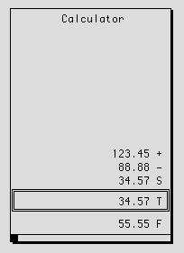
Note: This is NOT the same calculator as is available as a Windows NT applet. See the topic, Mosaic OA Built-In Calculator Functions
+ 1154 $ 1155 # 1156 K 1157 { bmr bm37.BMP } CALENDAR
CALENDAR x,y,boxtype
Invokes RT 's built-in calendar. This is a "pop-up" display which displays a calendar for a single month, with the ability to page-up and page-down a month at a time, or to add or subtract days, weeks, months, or years. If invoked from an active data collect screen, it optionally allows the selected date to be copied into the current field. See the topic Mosaic OA Built-In Calendar Functions
Note: U sing proportional fonts in the CALENDAR statement results in the day cursor being too large and misaligned. The boxtype argument is documented in the description of DRAW BOX .
Example:
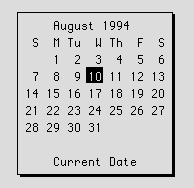
+ 1158 $ 1159 # 1160 K 1161 { bmr bm37.BMP } CALL
CALL name
CALL name(args...)
CALL FLD:name
Causes the subroutine name to be called, whose return value is placed in RETVAL upon return. Name is a reference to a Data Dictionary object. The first (and normal) form is a call to a subroutine with no arguments. If arguments are being passed, they must be enclosed in parentheses. A maximum of 10 arguments are allowed.
If no object type prefix is prepended to name , then it is assumed to be the name of an OFB subroutine. A CALL with the CSR: prefix calls a pre-compiled C subroutine which has been linked into the CSR.DLL dynamic link library.
The third form does an indirect call of an OFB routine (or C subroutine) whose ID was stored in the named FIELD object by a LET statement. The field must be defined as type IND (indirect), and the assignment requires the right hand side of the assignment to have the prefix OFB or CSR. (e.g., LET somefield = OFB:someappl:someproc). This statement provides a mechanism for an OFB routine's behavior to be dynamically modified. A CALL to an indirect object is a NOP if the named object is empty (as a result of a CLEARFIELD statement).
If arguments are passed, they are passed as an array of RTOBJ structures. The number of arguments is checked at compile time, and a warning message is produced if the number of arguments being passed does not agree with the definition of the subroutine. Note that this means you cannot forward reference anY undefined OFB routine and pass it arguments without getting warning messages. Type checking, if necessary, is done only at runtime.
Both OFB subroutines and Custom C subroutines (CSRs) may be called with arguments. The syntax is almost identical, except for the CSR: prefix on the routine name to distinguish a C call from an OFB call. The general forms are:
CALL someOFBsub
CALL anothersub( FLD :somefield,123,”Some string”)
CALL CSR :some_C_routine
CALL CSR :another_C_routine( PIC :apicklist,’\n’)
Data Dictionary object names are shown in lower case, with reserved words in upper case to make them stand out.
Here are the rules and details of parameter passing.
Parentheses
Parentheses required if the routine has arguments, and must not be used if the routine takes no arguments. Empty parentheses are, therefore, illegal. Whitespace may be used as desired between tokens.
Number of arguments
The number of arguments is determined by the definition of the routine. In the case of CSRs, the import file identifies the exact number of arguments or a special value (-1) which indicates the C routine can take a variable number of arguments.
OFB subroutines are defined (via the SUB statement) to have a fixed (zero or more) number of arguments, and cannot have a variable number as can the C subroutines. Both OFB and C subroutines allow a maximum of 99 arguments. Argument counts are checked at compile time, as well as at runtime. This means that a call to a forward referenced OFB subroutine with arguments will get a compile-time error (until the subroutine itself is compiled into the Data Dictionary).
Argument names
Names of arguments follow the same rules as names of Data Dictionary objects.
Type checking
Type checking of arguments is not done until runtime (for performance and language complexity reasons). This was a design decision agreed to by the Mosaic OA development team and the applications programmers.
Type of arguments
Any constant (decimal, hex, character, string) and any Data Dictionary object may be specified as an argument. Reserved words (e.g., NOWAIT ) may not be used as arguments, nor can expressions or built-in functions like SUBSTRING , TESTFLAG , etc.
All arguments are ‘pass by value’ except for Field (FLD) arguments, which are ‘pass by reference’ . This means your routine gets copies of all its arguments except for the field arguments, in which case it gets a pointer to the field so that you can modify it if you so desire. If you wish to prevent a subroutine you are calling from modifying a field you are passing it, you should first make a LOCAL copy of the field and pass the LOCAL field instead.
Note: If you omit the Data Dictionary object type from a Data Dictionary reference, the compiler will assume you are referring to a Field (FLD) object. Therefore, if you wish to pass a reference to some other Data Dictionary object type don’t forget the type prefix!
Illegal arguments
OFB routines which are passed illegal arguments (i.e., of the wrong type) will attempt to substitute a default value of zero or a null string, whichever is more appropriate. An internal counter is kept and incremented each time an incorrect argument is referenced. This error counter may be queried via the SINGLESTEP debugging mode.
Statements which don ’ t allow parameters
In Release 1 Version 3 of Mosaic all statements accept passed in values where appropriate. Note that DOCUMENT and SCREEN objects don’t allow parameters because of the difficulty of manipulating them via the IBAE at design/maintenance time when the parameters don’t have values.
Example
Note : If this sample code does not look properly formatted in your online help window, stretch the window horizontally until it does.
// ======================================================
// Note that the routine which takes args is defined
// before it is used, and the picklist argument needs the
// PIC: prefix, else it would be assumed to be a Field
// like the ‘min’ and ‘max’ arguments
// ======================================================
SUB common:parm_example(arg1,arg2,arg3,arg4)
IF (arg3 < arg1 || arg3 > arg2)
PICKVERIFY arg3,arg4, UPDATE
END IF
END SUB
----------------
SUB common:uses_parms
CALL parm_example(min,max,the_field, PIC :amtlist)
CALL parm_example(10.0, 500.0, xfld, PIC :amtlist)
END SUB
+ 1162 $ 1163 # 1164 K 1165 { bmr bm37.BMP } CASE
CASE casearg
The CASE statement identifies a value for which a matching SELECT expression will cause execution of the following OFB statements. A mismatch will cause execution to continue with the next CASE , DEFAULT , or END SELECT statement. The casearg may be a constant of any type (integer, hex, character, string), a descriptor, or a field of any type except FLAGS or BULK.
NOTE: All Central Data Server (CDS) related statements are grouped within the single OFB statement type CDS, with operands selecting the specific subfunction. See the topic entitled CDS Statement Supplemental Information for more information.
+ 1166 $ 1167 # 1168 K 1169 { bmr bm37.BMP } CDS AGGREGATE
CDS AGGREGATE context_name fn fld [AS fld] [fn fld [AS fld] ...] [RESET]
This verb invokes an aggregate function upon a field in a context. It returns the result of the aggregate function as the target field or as an optional response field. Note, you must call the CDS EXTRACT verb to actually move the returned cdserver field data into the application field. The aggregate function may be one of: min, max, avg, sum, or count. The specification of a response field provides a means by which multiple aggregate functions may be executed on a single field per CDS AGGREGATE verb invocation. The RESET keyword enables the ability to terminate the aggregate operation via the <RESET> key.
Note that the field type of the response field must match the source field.
The built-in variable CDSRETVAL is set to (0) if the statement successfully completed the function.
Examples:
CDS AGGREGATE DSC:teller:journal min amount max amount AS value
CDS AGGREGATE DSC:teller:journal max amount AS amount1
CDS AGGREGATE FLD:teller:journal avg amount AS amount1 \ sum amount AS amount2 count amount AS amount3 RESET
+ 1170 $ 1171 # 1172 K 1173 { bmr bm37.BMP } CDS APPEND
CDS APPEND context_name [ARRAY] field [AS [ARRAY] field] \
[[ARRAY] field [AS [ARRAY] field] ...]
This verb appends the specified application field onto the context_name buffer. The AS keyword allows a field to be appended as though it were the other field. That is, the appended field appears to be the field named after the AS, but the data is from the field named before the AS keyword. Individual array elements may be appended or an entire array field with its full complement of elements may be appended. If the ARRAY keyword is specified then both the source and target fields must be array fields with the same dimension and cardinality. If the ARRAY keyword is not used then it is valid to append a single 1-dimensional field element as a single 2-dimensional field element or a non-array field and vice-versa. Both the source and target fields must be of the same datatype.
NOTE: If you are appending multiple fields per context, do this for better performance: Append as many fields as the OFB compiler will allow for a given verb.
The built-in variable CDSRETVAL is set to (0) if the statement successfully completed the function.
Examples:
CDS APPEND DSC:teller:journal na:branch
CDS APPEND FLD:teller:journal na:branch as common:ix_branch
CDS APPEND "journal" na:branch AS common:ix_branch na:seqno
CDS APPEND "journal" na:branch AS common:ix_branch \ na:seqno AS na:seq
CDS APPEND "journal" common:ix_branch AS na:branch
na:seqno AS common:seq \
ARRAY na:foobar \
ARRAY na:field_a AS ARRAY na:field_y \
na:field_x[10][10] AS na:field_b[2][10] \
na:field_z[15] AS na:field_a[2] \
na:field_z[20] AS na:field_x[20][15]
+ 1174 $ 1175 # 1176 K 1177 { bmr bm37.BMP } CDS BEGINWORK
CDS BEGINWORK
This verb denotes the start of a logical unit of work (LUW). A logical unit of work may be described as a set of update operations against CDS tables that are applied atomically. Either all of the updates are applied or none are applied. If the system fails in the middle of a LUW, then after the system is restarted, all updates that were applied as part of the LUW are undone.
The built-in variable CDSRETVAL is set to (0) if the statement successfully completed the function.
+ 1178 $ 1179 # 1180 K 1181 { bmr bm37.BMP } CDS CLEAR
CDS CLEAR
This verb clears all pushed connection contexts. The built-in variable CDSRETVAL is set to (0) if the statement successfully completed the function.
+ 1182 $ 1183 # 1184 K 1185 { bmr bm37.BMP } CDS CLEARBUFFER
CDS CLEARBUFFER context_name
This verb initializes the record build buffer for constructing CDS records. This verb is typically invoked prior to the first CDS APPEND verb for constructing a CDS record. It does not affect the contents of the context_name record buffer which was returned from a FIND**** verb.
The built-in variable CDSRETVAL is set to (0) if the statement successfully completed the function.
Examples:
CDS CLEARBUFFER DSC:teller:journal
CDS CLEARBUFFER FLD:teller:journal
CDS CLEARBUFFER "journal"
+ 1186 $ 1187 # 1188 K 1189 { bmr bm37.BMP } CDS COMMITWORK
CDS COMMITWORK
Avoid using this verb! It is better to use a COMMITWORK flag on the last insert, update, replace or delete verb of your LUW instead of using this verb on its own. Using the flag will save about 150 milliseconds per transaction. The commit verb is provided separately only for LUWs whose last update action is unknown until runtime.
Example:
CDS BEGINWORK
CDS UPDATE CONTEXT1
IF (condition)
CDS UPDATE “CONTEXT2” COMMITWORK
ELSE
CDS COMMITWORK
ENDIF
This verb applies the set of update operations contained within this current LUW. Once applied, all update operations are considered committed from the point of view of recovery. Locks held by the server, pending commit, are released.
The built-in variable CDSRETVAL is set to (0) if the statement successfully completed the function.
+ 1190 $ 1191 # 1192 K 1193 { bmr bm37.BMP } CDS COMPRESS
CDS COMPRESS table_name WHERE where_clause_expression \
| field_name | list_name
Avoid using this verb. Compress should be done from a QL script run from a cron task.
This verb removes all records from the table_name table which DO NOT MATCH THE RETENTION CRITERIA. Note that the table_name may be defined as: cdserver_id_string:table_name_string or simply table_name_string. The "cdserver_id_string:" qualification is optional as the client determines which cdserver the table resides in. Systems should be designed so that all table names are unique among the set of cdservers servicing clients in the Mosaic OA network. You should close all contexts on the specified table with the CDS ENDSELECT verb. However, the CDS COMPRESS verb terminates all of your current contexts for the table_name table. Invoke the CDS GETLOCKINFO verb for information about compress errors.
Exit status values that may be returned in built-in variable CDSRETVAL are:
0 Successful execution.
-938 Compress table failure.
Example to delete all records in the journal except those for branch = "99":
CDS COMPRESS DSC:teller:journal WHERE FLD:common:branch == "99"
CDS COMPRESS FLD:teller:table WHERE \ FLD:common:date >= FLD:teller:date
CDS COMPRESS "journal" WHERE LST:teller:compress_list
CDS COMPRESS "svtlr:journal" WHERE LST:teller:compress_list
+ 1194 $ 1195 # 1196 K 1197 { bmr bm37.BMP } CDS CONNECT
CDS CONNECT [servicer_name]
This verb provides the facility to connect to multiple central data servers. If the service_name
parameter is not included then a connect function is executed for the un-named cdserver. In addition, it establishes a mechanism by which the application may re-connect to a set of central data servers should a connection be lost during execution of RT . Note that when a connection to a single central data server fails only those contexts associated with that cdserver are lost. When a cdserver connection fails, RT invokes the OFB subroutine common:lost_cds_connection. This OFB subroutine is a natural point to query the connection status of the set of cdservers with the CDS STATUS verb to determine whether to attempt to reconnect to the cdserver for which a connection was lost, establish required table contexts and perform application initialization functions.
The built-in variable CDSRETVAL is set to (0) if the statement successfully completed the function.
Examples:
CDS CONNECT DSC:teller:cdserver_name
CDS CONNECT FLD:teller:cdserver_name
CDS CONNECT "my_server"
+ 1198 $ 1199 # 1200 K 1201 { bmr bm37.BMP } CDS CREATETABLE
CDS CREATETABLE table_name allow_delete allow_keychange \
add_fields index_list #K-bytes_for_base #K_bytes_for_idx \
buffer_size
This verb provides the first data definition language verb. Its function is to provide a facility through OFB to create tables for CDS operations. The table_name may not exceed 10 characters in length.
Note that the table_name may be defined as: cdserver_id_string:table_name_string or simply table_name_string. The "cdserver_id_string:" qualification is optional. However, in multiple cdserver systems it is not required, but advised as the default cdserver becomes the first in the set of cdservers connected to the RT client. Please recall that systems should be designed so that all table names are unique among the set of cdservers servicing clients in the Mosaic OA network.
The allow_delete argument may be either DELETE or NODELETE .
The allow_keychange argument may be either KEYCHANGE or NOKEYCHANGE .
The add_fields argument may be either ADDFIELDS or NOADDFIELDS .
The index_list value is a set of field references defined by a set of field reference and index key field segment modifier keywords. The index key field segment modifier keyword must be one of: ASCENDING , DESCENDING , GENERATED or SPARSE .
The number of kilobytes for the base and index files are data dictionary objects that may be evaluated to an integer or integer constants.
The buffer_size is the size in of bytes for record construction and criteria runtime buffer for a table. The program 'cbs' may be run to determine a minimum buffer size for a table. Click here for more on cbs .
Exit status values that may be returned in built-in variable CDSRETVAL are:
0 Successful execution.
-865 Table already exists.
Examples:
CDS CREATETABLE "a" NODELETE NOKEYCHANGE NOADDFIELDS \ test:fld01 ASCENDING 20 10 128
CDS CREATETABLE "svtlr:a" NODELETE NOKEYCHANGE NOADDFIELDS \ test:fld01 DESCENDING test:fld02 SPARSE 20 10 128
CDS CREATETABLE DSC:desc01 DELETE KEYCHANGE ADDFIELDS \ test:fld01 ASCENDING test:fld02 GENERATED 40 4 128
CDS CREATETABLE FLD:test:fld01 DELETE NOKEYCHANGE ADDFIELDS \ test:fld01 SPARSE test:fld02 SPARSE \ test:fld01 SPARSE 100 50 256
+ 1202 $ 1203 # 1204 K 1205 { bmr bm37.BMP } CDS DELETE
CDS DELETE context_name [ALL] [BEGINWORK | COMMITWORK] [NOWAIT]
This verb deletes the current record or all records in the context if the ALL keyword is specified. The table definition must allow deletes to occur. If the ALL keyword is specified then all records in the context are deleted. If the ALL keyword is not used then the current record must be held in a locked state. After the operation is completed successfully, no record lock is held for the context. But, if the delete is within a LUW, then the server retains a lock on the values of indexed key fields until the LUW is committed or rolled back. These key locks prevent others from inserting a record with the same key value, which would then be a duplicate if the delete were to be rolled back.
The NOWAIT keyword specifies that the CDS DELETE function will be executed asynchronously (without blocking). The application may then continue processing and, at a convenient point, invoke the CDS WAIT verb on the named context_name to get the servers’s response.
The COMMITWORK keyword specifies commitment of the current LUW. The effect is the same as invoking CDS_DELETE and then CDS COMMITWORK , but the execution time is reduced by the time required to service an extra LAN message with a request to the server.
The built-in variable CDSRETVAL is set to (0) if the statement successfully completed the function. CDSRETVAL is set to the number of records deleted if the ALL keyword is specified.
Examples:
CDS DELETE DSC:teller:journal
CDS DELETE DSC:teller:journal ALL
CDS DELETE DSC:teller:journal ALL COMMITWORK NOWAIT
CDS DELETE FLD:teller:journal BEGINWORK
CDS DELETE "journal" COMMITWORK
CDS DELETE "journal" COMMITWORK NOWAIT
+ 1206 $ 1207 # 1208 K 1209 { bmr bm37.BMP } CDS DISCONNECT
CDS DISCONNECT cdserver_name
This verb disconnects RT from the named cdserver. The built-in variable CDSRETVAL is set to (0) if the statement successfully completed the function. A successful disconnect releases all locks and other resources held by the server for your client.
Examples:
CDS DISCONNECT DSC:teller:cdserver_name
CDS DISCONNECT FLD:teller:cdserver_name
CDS DISCONNECT "server1"
+ 1210 $ 1211 # 1212 K 1213 { bmr bm37.BMP } CDS DROPTABLE
CDS DROPTABLE table_name
This verb removes the table definition known to CDS. It also removes the associated base and index files. The table_name may be defined as: cdserver_id_string:table_name_string or simply table_name_string. The "cdserver_id_string": qualification is optional as the client determines which cdserver the table resides in. Systems should be designed so that all table names are unique among the set of cdservers servicing clients in the Mosaic OA network. Note that the existence of any context or table lock held by another client on this table will prevent the successfull completion of the drop operation . The CDS DROPTABLE verb may be invoked on a table that contains records.
Exit status values that may be returned in built-in variable CDSRETVAL are:
0 Successful execution.
-819 Table does not exist.
Examples:
CDS DROPTABLE DSC:teller:journal
CDS DROPTABLE FLD:teller:table
CDS DROPTABLE "journal"
CDS DROPTABLE "svtlr:journal"
+ 1214 $ 1215 # 1216 K 1217 { bmr bm37.BMP } CDS ENDSELECT
CDS ENDSELECT context_name [NOWAIT]
This function is analogous to a 'close' file. It releases the specified context on a table. No further CDS verbs may be invoked with this context until a subsequent CDS SELECT is issued. Subsequent calls to CDS SELECT with the same context_name will perform an implied CDS ENDSELECT . This verb frees the record_build/where clause buffer and its internal structure memory. It also releases the record lock held for the context, if any. If a table context will not be used often, or not for a long period of time, then an ENDSELECT should be invoked.
The NOWAIT keyword triggers the CDS ENDSELECT request asynchronously, in non-blocked mode. The application may then continue processing and, at a convenient point, invoke the CDS WAIT verb on the named context_name to obtain the response to the ENDSELECT .
The built-in variable CDSRETVAL is set to (0) if the statement successfully completed the function.
Examples:
CDS ENDSELECT "journal"
CDS ENDSELECT DSC:teller:journal
CDS ENDSELECT FLD:teller:profile
CDS ENDSELECT DSC:teller:journal NOWAIT
+ 1218 $ 1219 # 1220 K 1221 { bmr bm37.BMP } CDS EXTRACT
CDS EXTRACT context_name ALL | [ARRAY] field [INTO [ARRAY] field] \
[[ARRAY] field [INTO [ARRAY] field] ...]
This verb extracts the specified field[s] from the specified table buffer. If the keyword ALL is given, then all fields in the current record of the context are extracted. The INTO keyword allows a field to be extracted into another field. This is useful for extracting key fields, where it is not desirable to modify the source field in memory. The ARRAY keyword denotes that a full array field with its full complement of array field elements are to be extracted. This operation requires that the record be formed with a CDS APPEND statement with the ARRAY keyword for the desired field to be capable of being extracted in its entirety.
This verb never affects record locks.
The following is a description of the run-time behavior of RT while processing a CDS EXTRACT verb when an anomaly has occurred. The anomalies may include: extracting fields of dissimilar datatypes, extracting explicit fields which are not present in a cdserver record, differing array dimensions, and different cardinality of each dimension.
Previously, RT quietly ignored a request to extract a field which was not in the record. The requested field was not cleared or modified. This characteristic is unchanged, however, a status value is now returned in CDSRETVAL indicating that the requested field was not located in the cdserver record. The extraction continues until completion or an error state occurs. If a CDS EXTRACT requests a field that does exist in the record but its data value length is zero then the field is cleared to RT 's initial value state based upon the field's type and the dataentered flag is set to 1. Similarly, if a requested field is in the record then the field is cleared, and the data value in the record is placed into field storage to a maximum length based upon the field's storage length. This allows record field values to be extracted when the field definition shortens the overall field length. Some discussion about this has been completed and now RT returns a warning value in CDSRETVAL to indicate that not all fields or their full stored record values were extracted. Additionally, if a specific field is to be extracted with another field's identity, then both fields must now be of the same type.
Now, to address array fields. Array fields are unique in that their range of indexes may change. The current RT implementation extracts array elements by explicit reference independent of the form of the field array storage in the cdserver record. To explain further, one may store an array field as an individual array element or as a complete array field with all it's defined array elements. If an array field's definition for number of columns is reduced then the extra array field elements in the cdserver record are ignored. If an array field increases the number of columns in the data dictionary then the non-stored array elements are cleared to their initial values, their dataentered flag is set to 0 and a warning value is returned in CDSRETVAL . Likewise for increases and decreases in row count for two dimensional array fields.
NOTE: if you are extracting multiple fields from a context do this for better performance: Extract as many fields as the OFB compiler will allow for a given verb.
Exit status values that may be returned in built-in variable CDSRETVAL are:
0 Successful execution.
-953 Requested full array or array element field found but is a scalar field.
-954 Bad array element dimension for record field.
-955 Asked for array field but found array field element.
-956 Field not in record or array fld larger then record array field.
-957 Record array field has more elements then record array field.
-958 Record field larger than application field
Examples:
CDS EXTRACT DSC:teller:journal ALL
CDS EXTRACT DSC:teller:journal na:branch
CDS EXTRACT FLD:teller:journal common:ix_branch INTO na:branch
CDS EXTRACT "journal" common:ix_branch INTO na:branch na:seqno
CDS EXTRACT "journal" common:ix_branch INTO na:branch \
na:seqno INTO na:seq
CDS EXTRACT "journal" common:ix_branch INTO na:branch \
na:seqno INTO na:seq \
ARRAY na:foobar \
ARRAY na:field_a INTO ARRAY na:doit \
na:field_b[2][10] INTO na:field_x[10][10] \
na:field_a[2] INTO na:field_z[15] \
na:field_b[20][15] INTO na:field_z[20] \
na:field_a[2] INTO na:name_string \
na_field_b[1][23] INTO na:name2_string
+ 1222 $ 1223 # 1224 K 1225 { bmr bm37.BMP } CDS FINDAGAIN
CDS FINDAGAIN context_name lockflag
This verb returns the record last returned by a FIND*** verb with the lock state as specified. If no other CDS FIND*** verb was issued since the CDS SELECT , then this verb returns an error. This verb provides an efficient means to "re-obtain" the current record in a lock state different than originally obtained. Valid lockflag arguments are: EXCLUSIVELOCK , LOCK , READLOCK or NOLOCK .
For more information:
See RECORD and TABLE LOCKING in the Mosaic OA Central Data Server Manual, ISD#00025.
CDS LOCKTABLE
Exit status values that may be returned in built-in variable CDSRETVAL are:
0 Successful execution.
-801 No record found (so no lock aquired).
-803 Record locked by another client or by another one of your contexts.
So now there is no record locked for your context.
See common:CDSerrmsg for the identity of the lock holder. It will have user_name, machine name, process ID#, and lock type.
Examples:
Note : If this sample code does not look properly formatted in your online help window, stretch the window horizontally until it does.
CDS FINDAGAIN DSC:teller:journal NOLOCK
CDS FINDAGAIN "journal" EXCLUSIVELOCK
let count = 0
DO
CDS FINDAGAIN FLD:teller:journal LOCK
IF (CDSRETVAL == 0)
break
END IF
IF (CDSRETVAL == CDS_LOCK_FAILURE)
LET count = count + 1
IF (count > 2)
MSGBOXcommon:CDSerrmsg, \
FLD:teller:lock_box_style, \
“Can’t get update lock”
END
ELSE
CONTINUE
END IF
END IF
LOOP
+ 1226 $ 1227 # 1228 K 1229 { bmr bm37.BMP } CDS FINDFIRST
CDS FINDFIRST context_name lockflag [BEGINWORK] [RESET] [NOWAIT]
This verb returns the first record matching the context selection criteria. It returns the first record if the sort order is ASCENDING or the last record if the sort order is DESCENDING . Valid lockflag arguments are: EXCLUSIVELOCK , LOCK , READLOCK or NOLOCK . Use EXCLUSIVE LOCK only during a LUW, only when you want to update the record found and only to prevent others from seeing an inconsistent view of the database. Use LOCK , only if you want to update the record found. Use READLOCK only to ensure a repeatable read within a LUW.
For more information:
See RECORD and TABLE LOCKING in the Mosaic OA Central Data Server Manual, ISD#00025.
CDS LOCKING
A logical unit of work may be initiated by the BEGINWORK keyword. The RESET keyword enables the ability to terminate the find operation via the <RESET> key. The NOWAIT keyword triggers the CDS FINDFIRST request in non-blocked mode. The application may then continue processing and, at a convenient point, invoke the CDS WAIT verb on the named context_name to get the FINDFIRST response.
Exit status values that may be returned in built-in variable CDSRETVAL are:
0 Successful execution.
-801 No records found, no lock held for your context.
-802 Cancel by reset, no lock held for your context.
-803 Record locked by another client or by another one of your contexts.
See common:CDSerrmsg for the identity of the lock holder. It will have user_name, machine name, process ID#, and lock type.
Examples:
CDS FINDFIRST DSC:teller:journal NOLOCK
CDS FINDFIRST FLD:teller:journal LOCK
CDS FINDFIRST "journal" EXCLUSIVELOCK BEGINWORK
CDS FINDFIRST "journal" READLOCK RESET NOWAIT
+ 1230 $ 1231 # 1232 K 1233 { bmr bm37.BMP } CDS FINDLAST
CDS FINDLAST context_name lockflag [BEGINWORK] [RESET] [NOWAIT]
This verb returns the last record matching the context selection criteria. It returns the last record if the sort order is ASCENDING or the first record if the sort order is DESCENDING .
This verb works just like CDS FINDFIRST except in reverse order.
Examples:
CDS FINDLAST DSC:teller:journal NOLOCK
CDS FINDLAST FLD:teller:journal LOCK
CDS FINDLAST "journal" EXCLUSIVELOCK BEGINWORK
CDS FINDLAST "journal" READLOCK RESET NOWAIT
+ 1234 $ 1235 # 1236 K 1237 { bmr bm37.BMP } CDS FINDN
CDS FINDN context_name #records skip [RESET] [NOWAIT]
This verb requests the retrieval of count #records from the CDS table.
The #records parameter must be positive.
The skip parameter provides for positioning in the set of selected records prior to retrieval. The skip parameter may be positive or negative.
A positive skip value moves the current record pointer forward a skip number of records in the context.
A negative skip value moves the current record pointer backward a skip number of records in the context.
This verb returns a multiple record buffer; it must be followed with a CDS RECORDCOUNT and SETRECORD verb to specify which record in the set to operate upon. Note that no lock capability exists with this particular verb, therefore no update, replace or delete operation may be performed with a record in the returned set. A record lock previously held for the context, if any, will be released by this verb.
The RESET keyword enables the ability to terminate the find operation via the <RESET> key.
If the NOWAIT keyword is used, the CDS FINDN request is issued but the program is not blocked to wait for the server’s response. The application may then continue processing and, at a convenient point, invoke the CDS WAIT verb on the named context_name to get the server’s response. Only one NOWAIT operation may be performed on a given context at one time. If the set of records requested would exceed the LAN buffer then the subset of records that fit are returned. A status in CDSRETVAL indicates this condition. The CDS RECORDCOUNT and CDS SETRECORD verbs work as described on the set of records returned.
Exit status values that may be returned in built-in variable CDSRETVAL are:
0 Successful execution.
-801 No records found.
-802 Cancel by reset. (Possible only if RESET key word was used.)
-803 Record locked by another context or another user.
-949 Returned fewer records than requested since the LAN buffer would have been exceeded.
Examples:
CDS FINDN DSC:teller:journal FLD:teller:count \
FLD:teller:skip
CDS FINDN FLD:teller:journal 4 -2
CDS FINDN "journal" DSC:teller:count DSC:teller:skip
CDS FINDN FLD:teller:journal 8 0 RESET NOWAIT
+ 1238 $ 1239 # 1240 K 1241 { bmr bm37.BMP } CDS FINDNEXT
CDS FINDNEXT context_name lockflag [BEGINWORK] [RESET] [NOWAIT]
This verb returns the next record that matches the selection criteria. This verb may be invoked as the first find operation against a named context. In this case it returns the same value as FINDFIRST. However, for clarity, issue a CDS FINDFIRST followed by subsequent CDS FINDNEXT verbs to process a set of records (See also CDS FINDN . Valid lockflag arguments are: EXCLUSIVELOCK , LOCK , READLOCK or NOLOCK . Use EXCLUSIVE LOCK only during a LUW, only when you want to update the record found and only to prevent others from seeing an inconsistent view of the database. Use LOCK, only if you want to update the record found. Use READLOCK only to ensure a repeatable read within a LUW
For more information:
See RECORD and TABLE LOCKING in the Mosaic OA Central Data Server Manual, ISD#00025.
CDS LOCKING
A logical unit of work may be initiated by the BEGINWORK keyword. The RESET keyword enables the ability to terminate the find operation via the <RESET> key. The NOWAIT keyword causes the CDS FINDNEXT request to be issued but not blocked. The application may then continue processing and, at a convenient point, invoke the CDS WAIT verb on the named context_name to obtain the servers’s response to the FINDNEXT request.
Exit status values that may be returned in built-in variable CDSRETVAL are:
0 Successful execution.
-801 No records found.
-802 Cancel by reset.
-803 Record locked by another client or by another one of your contexts.
See common:CDSerrmsg for the identity of the lock holder. It will have user_name, machine name, process ID#, and lock type.
Examples:
Note : If this sample code does not look properly formatted in your online help window, stretch the window horizontally until it does.
CDS FINDNEXT DSC:teller:journal NOLOCK
DO
CDS FINDNEXT FLD:teller:journal LOCK
IF (CDSRETVAL == CDS_RECORD_NOT_FOUND)
BREAK // out of loop
END IF
IF (CDSRETVAL == CDS_LOCK_FAILURE)
MSGBOX common:CDSerrmsg,FLD:teller:lock_box_style, \ “Can’t get update lock”
CONTINUE
END IF
CDS CLEARBUFFER
CDS APPEND teller:host_status
CDS UPDATE FLD:teller:journal
LOOP
CDS FINDNEXT "journal" EXCLUSIVELOCK BEGINWORK
CDS FINDNEXT FLD:teller:journal READLOCK RESET NOWAIT
+ 1242 $ 1243 # 1244 K 1245 { bmr bm37.BMP } CDS FINDPREV
CDS FINDPREV context_name lockflag [BEGINWORK] [RESET] [NOWAIT]
This verb returns the previous record that matches the selection criteria. If this is the first find verb on the context then CDS FINDPREV returns the same value as CDS FINDLAST .
This verb works like CDS FINDNEXT except in reverse order.
Examples:
CDS FINDPREV DSC:teller:journal NOLOCK
CDS FINDPREV FLD:teller:journal READLOCK
CDS FINDPREV "journal" EXCLUSIVELOCK BEGINWORK
CDS FINDPREV DSC:teller:journal LOCK RESET NOWAIT
+ 1246 $ 1247 # 1248 K 1249 { bmr bm37.BMP } CDS GETLOCKINFO
CDS GETLOCKINFO appl_info_field
This verb returns lock holder information when CDS LOCKTABLE or CDS COMPRESS verbs return an exit status indicating locks are held by users on the specified table or records within a table. The appl_info_field should be a minimum of 80 bytes long. If the numchars attribute of the appl_info_field is non-zero after invoking CDS GETLOCKINFO then the field storage contains lock-holder information which may be presented to the end-user at the application's discretion; otherwise, if numchars is zero then no more lock-holder information is available. Therefore, the field numchars attribute provides a mechanism to determine if the CDS GETLOCKINFO verb should be invoked for further lock-holder information. The format of an entry in the lock-holder information list is formatted as follows:
user_name machine_name type_of_lock table_name
Each entry is a left justified string in a fixed length region where: user_name is 10 columns in width, machine_name is 10 columns in width, type_of_lock is 16 columns in width; and table_name is 12 columns in width. Unused columns are space filled.
The current lock-holder information remains intact until a CDS verb other than CDS GETLOCKINFO verb is invoked.
The build-in variable CDSRETVAL is set to (0) if the statement successfully completed the function.
Examples:
CDS GETLOCKINFO FLD:common:csr_string
CDS GETLOCKINFO FLD:na:lock_string
+ 1250 $ 1251 # 1252 K 1253 { bmr bm37.BMP } CDS INSERT
CDS INSERT context_name lockflag [BEGINWORK | COMMITWORK] [NOWAIT]
This verb inserts the data in the specified CDS table from the associated context buffer. Typically a CDS table will be opened via a CDS SELECT , CDS CLEARBUFFER and then the APPEND verb is called to build the buffer and then CDS INSERT is invoked. The newly inserted record becomes the current record in the context and may optionally be placed in a locked state. Valid lockflag arguments are: NOLOCK , LOCK or EXCLUSIVELOCK . See RECORD and TABLE LOCKING in the manual entitled, Mosaic OA Central Data Server Notes , ISD-00025.
A logical unit of work may be initiated by the BEGINWORK keyword or completed by the COMMITWORK keyword. The NOWAIT keyword triggers the CDS INSERT function to be issued but not blocked. The application may then continue processing and, at a convenient point, invoke the CDS WAIT verb on the named context_name to complete the nowait function and to obtain completion status of the original call. The COMMITWORK keyword specifies commitment of the current LUW. The effect is the same as invoking CDS INSERT and then CDS COMMITWORK , but the execution time is reduced by about 150 milliseconds.
Exit status values that may be returned in built-in variable CDSRETVAL are:
0 Successful execution.
-836 Attempt to insert with duplicate key.
Examples:
CDS INSERT DSC:teller:journal LOCK
CDS INSERT FLD:teller:journal LOCK BEGINWORK
CDS INSERT "journal" EXCLUSIVELOCK COMMITWORK
CDS INSERT DSC:teller:journal NOLOCK NOWAIT
+ 1254 $ 1255 # 1256 K 1257 { bmr bm37.BMP } CDS JOIN
CDS JOIN [[UNIQUE | SEMIDISTINCT] projection_list] FROM table_name \
[AS alias] [PRESERVE] [order] [SORT index_name1] \
table_name2 [AS alias2] [order] [SORT idx_name2] \
[... table_nameN [AS aliasN] [order] [SORT idx_nameN]] \
BECOMES context_name \
WHERE where_clause_expression [NOWAIT]
Restrictions on joins
The JOIN verb establishes a context on a view of two or more tables joined by criteria. This verb provides an efficient method to obtain records from a set of cdserver tables. The only valid operations that may be performed on a join are FIND xxx, EXTRACT and ENDSELECT .
The optional UNIQUE or SEMIDISTINCT keyword reduces the number of records returned by subsequent FINDs on the context. The UNIQUE keyword specifies that no duplicate records will be returned. Only the first instance from each set of duplicates is returned by a FIND . Since cdserver doesn't do sorts of retrieved records, the UNIQUE keyword may only be used when the field list composes a leading portion of the index used. The SEMIDISTINCT keyword removes adjacent duplicates from the context, but non-adjacent duplicates still remain. The fields in the semidistinct list don't have to be indexed.
The JOIN verb may define a context which returns a set of fields identified by the projection_list . The projection_list is the set of fields to be returned by a FINDxxx verb. Note that the table_name may be defined as: cdserver_id_string:table_name_string or simply table_name_string . The "cdserver_id_string:" qualification is optional as the client determines which cdserver the table resides in. Systems should be designed so that all table names are unique among the set of cdservers servicing clients in the Mosaic OA network. An AS keyword used in the table list indicates that an optional alias_name must be used in the where clause that follows. At least two tables and at most twelve tables may be declared as JOIN tables.
The PRESERVE keyword tells the cdserver to preserve those records which occur in the associated table but are not matched in the other table(s). The PRESERVE option may only be used on the first table in the join list. This is called an "outer-join". The fields returned for the unmatched table records have null value. The SORT keyword identifies an alternate index name by which to sort the qualified records. The optional order parameter must be one of the keywords: ASCENDING or DESCENDING . The default order is ASCENDING . The context name is required so further CDS operations may be invoked upon the join context.
The WHERE clause restricts the record set contained within the JOIN context. A where_clause_expression is similar to an expression with IF statements with the exception that a join table field reference must be qualified with either the table_name or alias_name. The optional NOWAIT keyword invokes this function in a non-blocked mode. The default is blocked. A subsequent call to CDS WAIT completes the nowait operation and returns the completion status in CDSRETVAL .
A JOIN verb must be executed prior to any FINDxxx verb on the join context. Updates are not allowed on JOIN contexts. The JOIN fields specified in the criteria must be indexed in at least one of the two tables referenced in the comparisons.
For example:
CDS JOIN FROM "tables" "indexes" BECOMES "abc"\
WHERE tables.Cds_table_no == \
indexes.Cds_table_no
This join is legal as Cds_tables_no is indexed for indexes though not for tables.
A second example:
CDS JOIN FROM "tables" "journal" BECOMES "abc"\
WHERE tables.Cds_table_no == \
journal.Cds_table_no
This join is illegal as :Cds_tables_no is not indexed for either tables or journal.
# 1258 RESTRICTIONS ON JOINS
OR operators ( || ) are not yet allowed in join where clauses.
Joins on tables at more than one server are not yet supported. If any table name in the FROM table list is qualified by a server name then all tables in the list must be accessed via that server.
If a table name is qualified by a server name an AS alias must be used in the where clause.
Cannot use a table qualifier on field names in the projection list.
Note: See Mosaic OA Central Data Server Notes , ISD-00025, for join restriction justifications.
Exit status values that may be returned in built-in variable CDSRETVAL are:
0 Successful execution.
-803 Table locked.
Examples:
Note : If this sample code does not look properly formatted in your online help window, stretch the window horizontally until it does.
CDS JOIN FROM "tlr1:journal" "tlr2:totals" BECOMES "x" \
WHERE “journal”.common:ix_operator_id == \
“totals”.common:ix_operator_id
CDS JOIN FROM "journal" "totals" BECOMES "x" \
WHERE “journal”.common:ix_operator_id == \
“totals”.common:ix_operator_id
CDS JOIN FROM "journal" "totals" BECOMES "cntxt" \
WHERE “journal”.common:ix_operator_id == \
“totals”.ix_operator_id
CDS JOIN FROM "journal" PRESERVE "totals" BECOMES "cntxt" \
WHERE journal.common:ix_operator_id == \
“totals”.ix_operator_id
CDS JOIN FROM "journal" AS "j" DESCENDING \
"totals" AS "t" BECOMES "cntxt" \
WHERE “j”.common:ix_branch == “t”.ix_branch \
CDS JOIN FROM "journal" AS "j" SORT "altidx" DESCENDING \
"totals" AS "t" BECOMES "cntxt" \
WHERE “j”.common:ix_branch == “t”.ix_branch \
NOWAIT
CDS JOIN FROM "journal" AS "j" SORT "altidx" DESCENDING \
"totals" AS "t" SORT "altidx2" BECOMES "cntxt" \
WHERE “j”.common:ix_branch == “t”.ix_branch \
&& “j”.ix_seqno > 99
CDS JOIN emp:name, department_name BECOMES "emp" \
FROM employees as “e” PRESERVE, department as “d”
WHERE “e”.dept_no == “d”.dept_no
This last example lists all employees and their department name, including employees with no matching department or are in a department that is not in the department table.
+ 1259 $ 1260 # 1261 K 1262 { bmr bm37.BMP } CDS LOCKTABLE
CDS LOCKTABLE locktype table_name
This verb applies the table level locktype lock on the table_name table. Valid lock types are: EXCLUSIVELOCK and LOCK . EXCLUSIVELOCK restricts access to the specified table to the locker only, LOCK sets an update lock which allows viewing of table records by other users but allows table record insertion, updates, replace and delete for only the lock holder. Note that the table_name may be defined as: cdserver_id_string:table_name_string or simply table_name_string. The "cdserver_id_string:" qualification is optional as the client determines which cdserver the table resides in. Systems should be designed so that all table names are unique among the set of cdservers servicing clients in the Mosaic OA network. Upon successful completion no table operations may be performed against the named table. Should an error occur while applying the lock, then the CDS GETLOCKINFO verb may be invoked to process the lock and lock holder information.
Exit status values that may be returned in built-in variable CDSRETVAL are:
0 Successful execution.
-936 Table lock failure.
Examples:
CDS LOCKTABLE LOCK DSC:teller:journal
CDS LOCKTABLE LOCK FLD:teller:table
CDS LOCKTABLE EXCLUSIVELOCK "journal"
CDS LOCKTABLE EXCLUSIVELOCK "svtlr:journal"
+ 1263 $ 1264 # 1265 K 1266 { bmr bm37.BMP } CDS MULTIDISPLAY
CDS MULTIDISPLAY context_name list_name
This verb performs the field extract and display formatting prior to invoking the existing picklist driver. The invoking OFB subroutine establishes a cursor via the CDS SELECT verb and then calls the CDS MULTIDISPLAY verb. The list_name identifies a list which specifies window sizing and placement, as well as defines the display format for de-blocking each record for display purposes. The format for the MULTIDISPLAY LIST is described in the Supplemental CDS Statement Information
topic . If the RESET key is pressed it causes an exit from the display window with CDSRETVAL set to 0. If the selection key is pressed then the 1 based record_offset into the multi-record buffer is returned in CDSRETVAL and CDS MULTIDISPLAY positions its' local record pointer to the 1 based record offset in the multi-record buffer. Therefore, no subsequent CDS SETRECORD verb call is required when the selection key is pressed to exit from CDS MULTIDISPLAY . Otherwise, a negative value is returned indicating some error in processing.
The normal pick list navigation keys are supported: (Up Arrow, Down Arrow, Left Arrow, Right Arrow, Tab, Enter, Back Tab, etc.) However, single line scrolling is not supported due to its performance characteristic. The Page Up and Page Down keys initiate movement between pages of records. Also note that the function keys defined by the application are also active. Active function keys may return to a previously presented CDS MULTIDISPLAY window which, based upon the activity of the function key processing, may alter the content of the record fields displayed in the multidisplay. So be careful when returning to and re-using multidisplays after function key processing.
Exit status values that may be returned in built-in variable CDSRETVAL are:
>0 Selected multi-record offset.
0 Reset key pressed, no selection.
-801 No records match select definition.
-803 Record locked.
Examples:
CDS MULTIDISPLAY DSC:teller:journal LST:na:quicklist
CDS MULTIDISPLAY FLD:teller:journal LST:na:quicklist
CDS MULTIDISPLAY "journal" LST:na:quicklist
+ 1267 $ 1268 # 1269 K 1270 { bmr bm37.BMP } CDS POP
CDS POP
This verb closes all current CDSERVER contexts and restores all contexts and record(s) that were preserved with a previous CDS PUSH verb. The built-in variable CDSRETVAL is set to (0) if the statement successfully completed the function.
+ 1271 $ 1272 # 1273 K 1274 { bmr bm37.BMP } CDS PUSH
CDS PUSH
This verb pushes all currently active CDSERVER table contexts and preserves any CDS FIND* record(s) that are held at the RT CDSERVER client. Context names may be re-used without conflicting with the 'pushed' contexts. The built-in variable CDSRETVAL is set to (0) if the statement successfully completed the function.
+ 1275 $ 1276 # 1277 K 1278 { bmr bm37.BMP } CDS RECORDCOUNT
CDS RECORDCOUNT context_name
This verb is used to return the number of records count from a call to CDS FINDN .
The built-in variable CDSRETVAL is set to a positive integer indicating the number of records in the multi-record buffer. If CDSRETVAL equals zero then no records exist for the specified context
Exit status values that may be returned in built-in variable CDSRETVAL are:
0 Successful execution.
-940 Find record buffer for this context is no longer valid.
Examples:
CDS RECORDCOUNT DSC:teller:journal
CDS RECORDCOUNT FLD:teller:journal
CDS RECORDCOUNT "journal"
+ 1279 $ 1280 # 1281 K 1282 { bmr bm37.BMP } CDS RENAMETABLE
CDS RENAMETABLE table_name new_name
This verb renames an existing CDS table. The table_name and new_name strings must not exceed 10 characters in length as a four character suffix is added to create the physical disk file. The table_name may be defined as: cdserver_id_string:table_name_string or simply table_name_string. The "cdserver_id_string:" qualification is optional as the client determines which cdserver the table resides in. Systems should be designed such that all table names are unique among the set of cdservers servicing clients in the Mosaic OA network. You can't rename a table when anyone holds an open context on it.
Exit status values that may be returned in built-in variable CDSRETVAL are:
0 Successful execution.
-865 Table already exists.
Examples:
CDS RENAMETABLE DSC:teller:journal "savejnl"
CDS RENAMETABLE FLD:teller:table DSC:teller:savetable
CDS RENAMETABLE "journal" FLD:teller:table
CDS RENAMETABLE "svtlr:journal" "svtlr:savejnl"
+ 1283 $ 1284 # 1285 K 1286 { bmr bm37.BMP } CDS REPLACE
CDS REPLACE context_name lockflag [BEGINWORK | COMMITWORK] [NOWAIT]
This verb replaces the current locked record with the data in the associated context buffer. If the new record has a different key, the current record is deleted and the new record is inserted. If the new key already exists and therefore cannot be inserted, the replace operation is then disallowed. Lockflag indicates locking to be retained after the replace operation is completed. Valid lockflag arguments are: NOLOCK , or LOCK or EXCLUSIVELOCK . Use NOLOCK unless you have a good reason not to. Use LOCK , only if you want to update the newly replaced record. Use EXCLUSIVE LOCK only during a LUW, only when you want to update the newly replaced record and only to prevent others from seeing an inconsistent view of the database. Note that READLOCK is not valid with REPLACE . You already have a repeatable read if you are within a LUW.
See RECORD and TABLE LOCKING in Mosaic OA Central Data Server Notes , ISD-00025.
A logical unit of work may be initiated by the BEGINWORK keyword or completed by the COMMITWORK keyword. The NOWAIT keyword triggers the CDS REPLACE function to be issued but not blocked. The application may then continue processing and, at a convenient point, invoke the CDS WAIT verb on the named context_name to complete the nowait function and to obtain completion status of the original call. If you are not updating most of the fields in the record, then use the UPDATE verb for better performance.
Exit status values that may be returned in built-in variable CDSRETVAL are:
0 Successful execution.
-836 Attempt to insert with duplicate key.
Examples:
CDS REPLACE FLD:teller:journal LOCK BEGINWORK
CDS REPLACE "journal" EXCLUSIVELOCK COMMITWORK
CDS REPLACE DSC:teller:journal NOLOCK NOWAIT
CDS REPLACE DSC:teller:journal NOLOCK
+ 1287 $ 1288 # 1289 K 1290 { bmr bm37.BMP } CDS RESETLOG
CDS RESETLOG [cdserver_name]
This verb clears the CDS recovery log and the capture file, if any. A backup of the CDS tables should be performed prior to invoking this verb to preserve the recoverability of the user data. This verb should not be used in a normal installation! Backup of tables and truncation of the recovery log should normally be done in a cron task, not in OFB!
The cdserver_name parameter is optional. If none is specified then the first server that RT connects with will become the default server and used as the target for the CDS RESETLOG verb.
The built-in variable CDSRETVAL is set to (0) if the statement successfully completed the function.
+ 1291 $ 1292 # 1293 K 1294 { bmr bm37.BMP } CDS ROLLBACKWORK
CDS ROLLBACKWORK
This verb reverses all updates applied to CDS tables during the current LUW. All CONTEXTS and locks FOR ALL TABLES ARE REMOVED UPON COMPLETION OF THIS VERB. Therefore, the application must establish required table contexts as needed.
The built-in variable CDSRETVAL is set to (0) if the statement successfully completed the function.
+ 1295 $ 1296 # 1297 K 1298 { bmr bm37.BMP } CDS SELECT
CDS SELECT [[UNIQUE | SEMIDISTINCT] projection_list] \
FROM table_name [BECOMES context_name] \
[WHERE where_clause_expression | WHERE field_name \
| WHERE list_name] [order] [SORT index_name] [NOWAIT]
This verb constructs the select context for the specified table_name and context_name . Note that the table_name may be defined as: cdserver_id_string:table_name_string or simply table_name_string. The "cdserver_id_string:" qualification is optional as the client determines which cdserver the table resides in. Systems should be designed so that all table names are unique among the set of cdservers servicing clients in the Mosaic OA network. If the context_name is not specified then the context_name defaults to the table_name. More than one select context may be defined for a given table. The WHERE clause is not dereferenced.
Projection List
The SELECT verb may define a context which returns a set of fields identified by the projection_list. The format of the projection_list is: "source_field [AS response_field]" sets. Fields referenced must not be array elements. Projection lists reduce the size of records returned by a FINDxxx verb when not all of the fields in the record are listed.
The optional UNIQUE or SEMIDISTINCT keyword reduces the number of records returned by subsequent FINDs on the context. The UNIQUE keyword specifies that no duplicate records will be returned. Only the first instance from each set of duplicates is returned by a FIND . Since cdserver doesn't do sorts of retrieved records, the UNIQUE keyword may only be used when the field list composes a leading portion of the index used. The SEMIDISTINCT keyword removes adjacent duplicates from the context, but non-adjacent duplicates still remain. The fields in the semidistinct list don't have to be indexed.
The WHERE clause may be specified in one of three forms: first, in a where_clause_expression similar to an expression with IF statements; second, a list object which contains a set of members which specify the fields for explicit equality, match or range values; third, via an application field which contains an ASCII formatted expression as described in the Central Data Server documentation for 'OFB'.
If the selection criteria specifies an index key field outside of an OR condition, then the index is used for searching with FIND verbs. Otherwise, the table is scanned sequentially using the given criteria. If no criteria are specified then all records qualify for a subsequent FIND verb. The WHERE clause is composed of boolean expressions of the form: "table field" operator "value". The "table field" reference may not be an array field. The "value" may be a field, descriptor, string or numeric constant; note that the "value" field may be an array field.
The optional 'order' parameter must be one of the keywords: ASCENDING or DESCENDING . The default order is ASCENDING . The SORT keyword indicates that a data object evaluated to a string follows, and it names the index that will be used to order the retrieval of records. If the index name is "_choose_", then the server will choose the index that it deems optimal for the retrieval criteria in the where clause. When no index is named and the server is started with option -O3(the default), the server will also choose the optimal index. When the server is started with the -O0 option, the default index is "primary". To facilitate performance tuning for CDS, avoid specifying an index name , unless you need to retrieve the records in a particular sequence. It is better to let cdserver choose the optimum index for quick retrieval.
The optional NOWAIT keyword invokes this function in a non-blocked mode. The default is blocked. A subsequent call to CDS WAIT completes the nowait operation and returns the completion status in CDSRETVAL . An implicit open for the specified context_name occurs when this verb is invoked. The Central Data Server requires that a Select function be executed *PRIOR TO* any I/O operation upon a cdserver table.
Exit status values that may be returned in built-in variable CDSRETVAL are:
0 Successful execution.
-803 Table locked.
Examples:
CDS SELECT FROM "journal"
CDS SELECT FROM "cdsrvr1:journal"
CDS SELECT UNIQUE branch user_id tran_amount FROM "journal"
CDS SELECT FROM DSC:teller:journal BECOMES FLD:teller:jnlcntxt
CDS SELECT FROM DSC:teller:profile \
WHERE common:ix_branch == FLD:ix_branch
CDS SELECT FROM DSC:teller:journal \
WHERE LST:teller:applist ASCENDING
CDS SELECT FROM DSC:teller:journal \
WHERE LST:teller:applist ASCENDING SORT "alt_index"
CDS SELECT FROM DSC:teller:journal \
WHERE LST:teller:applist ASCENDING SORT \ "alt_index" NOWAIT
+ 1299 $ 1300 # 1301 K 1302 { bmr bm37.BMP } CDS SETRECORD
CDS SETRECORD context_name record_offset
This verb updates a multi-record buffer to the record specified by record_offset . The record_offset is 1 based. This verb is used when the CDS RECORDCOUNT is greater than zero after a call to CDS FINDN or to access a record returned from a CDS MULTIDISPLAY .
Exit status values that may be returned in built-in variable CDSRETVAL are:
0 Successful execution.
-940 Find record buffer for this context is no longer valid.
Examples:
CDS SETRECORD DSC:teller:journal FLD:teller:offset
CDS SETRECORD FLD:teller:journal 8
CDS SETRECORD "journal" DSC:teller:offset
+ 1303 $ 1304 # 1305 K 1306 { bmr bm37.BMP } CDS STARTCAPTURE
CDS STARTCAPTURE
This verb enables the run-time CDSERVER trace facility. The binary output file, “capture” is located in the directory where the CDSERVER keeps the tables. The capture file may be viewed in an easily readable form by invoking the "prcapture" program provided in the MOA tool set. See the prcapture manual page in the Mosaic OA Central Data Server Manual , ISD#00025.
The built-in variable CDSRETVAL is set to (0) if the statement successfully completed the function. This verb will fail if there are no current CDS connections to a server.
+ 1307 $ 1308 # 1309 K 1310 { bmr bm37.BMP } CDS STATUS
CDS STATUS [cdserver_name]
This verb returns the connection status of the optional named cdserver. If no cdserver_name is specified then, the status of the un-named cdserver is returned.
The built-in variable CDSRETVAL is set to (1) if the cdserver has a valid connection, (0) if the cdserver is not connected or (-1) if a connection was established but is no longer valid.
+ 1311 $ 1312 # 1313 K 1314 { bmr bm37.BMP } CDS STOPCAPTURE
CDS STOPCAPTURE
This verb disables the run-time CDSERVER trace facility. The built-in variable CDSRETVAL is set to (0) if the statement successfully completed the function.
+ 1315 $ 1316 # 1317 K 1318 { bmr bm37.BMP } CDS UNLOCK
CDS UNLOCK context_name [NOWAIT]
This verb removes the lock on the current record in the context. The built-in variable CDSRETVAL is set to (0) if the statement successfully completed the function. Don’t use UNLOCK after a failed FIND , nor after an update, insert, or delete that released the lock. Don’t use UNLOCK just before a CDS ENDSELECT , CDS FIND , CDS SELECT , or CDS MULTIDISPLAY or for the same context name . In all these cases, UNLOCK is totally redundant, costing an unwanted message to the server. In fact, CDS UNLOCK is rarely useful.
Examples:
CDS UNLOCK DSC:teller:journal
CDS UNLOCK FLD:teller:journal
CDS UNLOCK "journal"
CDS UNLOCK DSC:teller:journal NOWAIT
IF ( SPECIAL CONDITION )
CDS UNLOCK “journal context”
ELSE
CDS UPDATE “journal context” NOLOCK
END IF
+ 1319 $ 1320 # 1321 K 1322 { bmr bm37.BMP } CDS UNLOCKTABLE
CDS UNLOCKTABLE locktype table_name
This verb removes the table level locktype lock from the 'table_name' table. The valid locktype values may be: ALL , EXCLUSIVELOCK or LOCK . Note that the table_name may be defined as: cdserver_id_string:table_name_string or simply table _name_string. The "cdserver_id_string:" qualification is optional as the client determines which cdserver the table resides in. Systems should be designed so that all table names are unique among the set of cdservers servicing clients in the Mosaic OA network.
Exit status values that may be returned in built-in variable CDSRETVAL are:
0 Successful execution.
-937 Table unlock failure.
Examples:
CDS UNLOCKTABLE LOCK DSC:teller:journal
CDS UNLOCKTABLE LOCK FLD:teller:table
CDS UNLOCKTABLE EXCLUSIVELOCK "journal"
CDS UNLOCKTABLE EXCLUSIVELOCK "cdsrvr1:journal"
+ 1323 $ 1324 # 1325 K 1326 { bmr bm37.BMP } CDS UPDATE
CDS UPDATE context_name ALL | lockflag [BEGINWORK | COMMITWORK] [NOWAIT]
This verb updates the current locked record with the fields specified from the associated context buffer. The ALL keyword causes all records in the context to be updated. This eliminates the LAN traffic for each record in the context. Lockflag indicates locking to be retained after the replace operation is completed. No lockflag is allowed when the all keyword is used. Valid lockflag arguments are: NOLOCK , or LOCK or EXCLUSIVELOCK . Use NOLOCK unless you have a good reason not to. Use LOCK , only if you want to update the newly replaced record. Use EXCLUSIVE LOCK only during a LUW, only when you want to update the newly replaced record and only to prevent others from seeing an inconsistent view of the database. Note that READLOCK is not valid with UPDATE . You already have a repeatable read if you are within a LUW.
For more information:
See RECORD and TABLE LOCKING in the Mosaic OA Central Data Server Manual, ISD#00025.
CDS LOCKING
A logical unit of work may be initiated by the BEGINWORK keyword or completed by the COMMITWORK keyword. The effect of the COMMITWORK flag is the same as following the UPDATE verb with CDS COMMITWORK , but the execution time is reduced by about 150 milliseconds.
The NOWAIT keyword causes the function request to be issued but without waiting for a completion reply from the cdserver. The application may then continue processing and, at a convenient point, invoke the CDS WAIT verb on the named context_name to complete the nowait function and to obtain completion status of the original call. If the new field values cause the record to overflow beyond its original length, a new record will be written and the old version deleted. The deleted record's space is added to the freespace chain and this slows down future inserts. Avoid this by padding fields in the original inserted record. If you wish to update most of the fields in the record then append all of the fields and invoke the CDS REPLACE verb for better performance.
The built-in variable CDSRETVAL is set to (0) if the statement successfully completed the function, unless the ALL keyword is used. The ALL keyword returns the number of records updated in the context.
Examples:
CDS UPDATE DSC:teller:journal NOLOCK
CDS UPDATE DSC:teller:journal ALL
CDS UPDATE FLD:teller:journal LOCK BEGINWORK
CDS UPDATE "journal" EXCLUSIVELOCK COMMITWORK
CDS UPDATE DSC:teller:journal NOLOCK NOWAIT
CDS UPDATE DSC:teller:journal ALL COMMITWORK NOWAIT
+ 1327 $ 1328 # 1329 K 1330 { bmr bm37.BMP } CDS WAIT
CDS WAIT context_name
This verb blocks the run-time interpreter from execution until the CDS request associated with the named context has completed. Then the result (i.e., CDSRETVAL ) values returned will correspond to those expected from the verb issued in the no-wait mode.
Exit status values that may be returned in built-in variable CDSRETVAL are:
0 Successful execution.
-942 No no-wait verb pending for this context.
-949 Returned fewer records than requested since the LAN buffer would have been exceeded.
Examples:
CDS WAIT DSC:teller:journal
CDS WAIT FLD:teller:journal
CDS WAIT "journal"
+ 1331 $ 1332 # 1333 K 1334 { bmr bm37.BMP } CLEARFIELD
CLEARFIELD fld
Clears the storage area of field fld and clears the HIDDEN, VALDONE and DATAENTERED flags. For ASCII-class fields (ASCII, NUMERIC, DATE, TIME) and BULK fields this results in the 1st byte of the storage area being set to binary zero. The other field types are set to 'zero' as appropriate to their type. It clears the field even if the .NOCLEAR or .PROTECTED flags are on, and otherwise works just like the RT_CLEAR key works when in data collect. When used on a field defined with the flag_field attribute, it sets the field to 32 binary zeroes. Unlike end-of-transaction processing, it does not first copy the field contents to the dupe area.
+ 1335 $ 1336 # 1337 K 1338 { bmr bm37.BMP } CLEARWINDOW
CLEARWINDOW
Erase the current window, except for the title and border, and purge the internal display lists. This does not include the status line, which if active, is always displayed. This statement should be used sparingly, in situations where a blank screen is needed as a starting point, and never be used within a "transaction", i.e., inside a STARTTRAN - ENDTRAN pair. By purging the internal display lists, it is possible to cause serious grief to subroutines containing this statement, or to subroutines which may have called the current subroutine.
+ 1339 $ 1340 # 1341 K 1342 { bmr bm37.BMP } CLEANSTART
CLEANSTART ofbproc
This statement causes RT to purge its recursion stack and begin execution of OFB subroutine ofbproc as though it were the common:starting_point subroutine. It is needed to prevent unwanted recursion and the steady memory growth that goes with it. It is somewhat like doing a RESET and then a CALL , except that RESET causes execution to continue elsewhere and not with the following instruction. A typical use for CLEANSTART is where you want a function key to kick off some code which 'takes over' the application. In this case the function key would be bound to an OFB routine containing (optional cleanup code, and) a CLEANSTART statement naming the subroutine to be given control.
IMPORTANT: Do not use this verb from within a COMM event, Timer or DDE callback subroutine. There may be a pending wait timer which must be completed or terminated in RT’s internal synchronization routine. This verb causes the interpreter to restart internally which may not allow a synchronization wait timer be properly processed. You are usually safe to issue this verb in a routine other than those listed above. Also see the RESET verb description.
+ 1343 $ 1344 # 1345 K 1346 { bmr bm37.BMP } COLLECT
COLLECT [pre-collect] [,post-collect]
Causes datacollect to occur for the currently displayed screen. The 1st (optional) argument pre-collect is the name of an OFB routine (or C subroutine) to be executed before the datacollect takes place, and the 2nd argument post-collect is the name of an OFB routine to be executed following a NEXTSCREEN or SEND key.
Following the SEND or NEXTSCREEN key, but before the post-collect routine (if any) is run, the field validations for all fields in the previous DISPLAY are executed.
The post-collect routine should return a zero value if normal processing should continue, or a non-zero value if the screen should be put back into data collect mode.
During datacollect the PREVSCREEN key controls navigation through screens which have already been displayed. The NEXTSCREEN key causes either the DISPLAY following the COLLECT to be executed, and datacollect continues, or if there are no more screens to display a warning bell is issued.
To include a post-collect routine, but omit the pre-collect routine, use a minus sign for the pre-collect routine.
+ 1347 $ 1348 # 1349 K 1350 { bmr bm37.BMP } COMBOPICK
COMBOPICK tag
This verb works in conjunction with a DRAW COMBOFIELD statement previously executed with the same tag value as specified on this statement. When the user selects the ‘down-arrow’ button associated with the combofield, an OFB routine is executed which normally contains a COMBOPICK statement with the same tag value. The COMBOPICK statement uses the tag to identify which combofield on the screen to operate upon, and causes that field’s contents to be validated using the associated picklist as a list of ‘valid’ values.
To enforce behavior more like that of the native WIN32 ComboBox, the picklist is unconditionally displayed using the field’s screen coordinates and size for automatic positioning and sizing. At this point the field behaves as though it had a picklist validation routine attached. After the user makes a selection, the picklist is removed and execution continues with the next sequential OFB statement. Unlike COMBOVERIFY , the built-in variable CURRENTFIELD is set to point to this field during execution of the COMBOPICK statement.
Example:
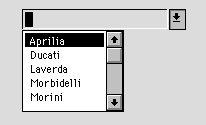
+ 1351 $ 1352 # 1353 K 1354 { bmr bm37.BMP } COMBOVERIFY
COMBOVERIFY tag
This verb works in conjunction with a DRAW COMBOFIELD statement previously executed with the same tag value as specified on this statement. When the user selects the ‘down-arrow’ button associated with the combofield, an OFB routine is executed which normally contains a COMBOVERIFY statement with the same tag value. The COMBOVERIFY statement uses the tag to identify which combofield on the screen to operate upon, and causes that field’s contents to be validated using the associated picklist as a list of ‘valid’ values.
If the field validation is successful, nothing happens, and the next sequential OFB statement is executed. If the field validation fails, then the picklist is displayed using the field’s screen coordinates and size for automatic positioning and sizing. At this point the field behaves as though it had a picklist validation routine attached. After the user makes a selection, the picklist is removed and execution continues with the next sequential OFB statement. Unlike COMBOPICK , the built-in variable CURRENTFIELD is not set to point to this field during execution of the COMBOVERIFY statement.
If the user "resets" out of the picklist via <Esc>, nothing will be copied, and the built-in variable RETVAL will be set to -1. Validation is a string compare for the length of the field against the beginning of each picklist item. The value returned by the picklist processor is placed in the built-in variable RETVAL . A (-1) means validation failure, a non-negative result means the field contents matched the corresponding item in the picklist (zero relative, i.e., the first item is 0, not 1). If a picklist selection was made the entire picklist text for the selected item is copied into the common:csr_string field for easy access by the application.
Example:
+ 1355 $ 1356 # 1357 K 1358 { bmr bm37.BMP } COMM ALLOCATE
COMM ALLOCATE
The ALLOCATE verb is used to send an ACI ALLOCATE verb to the ACI. This can be used in a pooled LU environment.
Click for additional information on the COMM-related statements.
+ 1359 $ 1360 # 1361 K 1362 {bmr bm37.BMP} COMM DEALLOCATE
COMM DEALLOCATE
The DEALLOCATE verb is used to send an ACI DEALLOCATE verb to the ACI. This can be used in a pooled LU environment.
Click for additional information on the COMM-related statements.
+ 1363 $ 1364 # 1365 K 1366 {bmr bm37.BMP} COMM GET
COMM GET appl_elem [FROM] pointer [TYPE data_type] [LENGTH length] \
[DELIMITER 'delim'] [TRIMLEFT "trim_string"] [TRIMOUT “trim_string”] \
[TRIMRIGHT "trim_string"] [PATTERN "byte_order"] \
[USER_TYPE "user_type_name"]
The COMM GET statement is used to parse data from the communications buffer and place it into an application data element (field).
Appl_elem is the target for the get operation, and must name a field.
The source (the FROM is optional) is a pointer into the communications buffer. This specifies one of the internally managed communications buffer pointers ( MSGBEGIN , MSG , MSGEND , MATCHBEGIN , MATCHEND or one of the work pointers TEMPPTRA , TEMPPTRB or TEMPPTRC ). When moving data into or out of the communications buffers the MSG , MATCHBEGIN , MATCHEND , TEMPPTRA , TEMPPTRB and TEMPPTRC pointers are automatically updated. In a COMM GET operation the pointer is placed at the byte after the last byte retrieved from the buffer. The MSGBEGIN and MSGEND pointers are set to the beginning and end of the buffer respectively. The MSG , TEMPPTRA , TEMPPTRB , TEMPPTRC , MATCHBEGIN and MATCHEND pointers are initially set to the beginning of the buffer. The MATCHBEGIN and MATCHEND pointers are set by the match operation (to be described later).
Data_type specifies the type of data in the communications buffer. The currently identified data types are: ASCII , ASCIIENCHEX , BCD , BINARY , SBINARY , ASCII_BULK, EBCDIC , SEBC (signed EBCDIC ), ALC , FLAG , BULK , USER and ZPD . See the User Defined Data Types topic for an explanation of how to use the USER (user-defined) data type.
Length refers to the number of characters to be extracted from the communications buffer (for fixed length data). This argument may be an integer constant, a hex constant, RETVAL , a field or a descriptor.
Argument delim is the delimiter character to stop getting data from the buffer when encountered. This argument may be a character constant, a hex constant length of one byte or an integer constant which can be represented in one byte.
Argument trim_string is a character string of characters identifying to remove when left trimming ( TRIMLEFT ) or right trimming the data. Trim_out removes the trim_string characters from the data. In a GET operation the trim function will be applied after the data conversion. This argument may be a field, a descriptor or a string constant.
Argument byte_order is only used for BINARY and SBINARY data types. It specifies the byte order of the binary data. For example if the data is byte reversed and word reversed then the "byte_order" would be "4321". If the data is just byte reversed then the "byte_order" would be "2143". This argument may be a field, a descriptor or a string constant.
Argument user_type_name is only used for the USER data type. It specifies the "from" portion of the file name which contains the user-defined translate table. For example, if the ser_type_name is "mine" then a compiled translate table will be expected with path name, "\MOA\LIB\MINE2ASC". If found, this table will be used to translate the data in the communications buffer into ascii before placing it in the specified field.
A COMM GET of a field of type DATE must specify a length 8. All dates are stored internally with length 8 and results may not be correct if any other length is specified.
A field of type FLAGS and the data type FLAG must be used together.
A field of type BULK and the data type BULK must be used together. No translation will take place with the BULK data type.
A COMM GET of a field of type IND is not valid.
To get the six byte BCD number in the buffer and place it into the account number field stripping leading zeros:
COMM GET teller:acct_num FROM MSG TYPE BCD \
LENGTH 6 TRIMLEFT "0"
To get the four byte byte reversed BINARY number in the buffer and place it into the account number field:
COMM GET teller:acct_num FROM MSG TYPE BINARY \
PATTERN "2143"
To get the primary name from the buffer converting it from EBCIDIC to ASCII and remove trailing spaces. The pointer " TEMPPTRA " points to the end of the data.:
LET l_field = TEMPPTRA - MSG
COMM GET primary_name FROM MSG TYPE EBCIDIC LENGTH \
l_field TRIMRIGHT “”
If a data type is not specified then ASCII is assumed. If the length is not specified then the length of the data_elem is used. Also, logical defaults will be set for justification and fill characters according to the data type. For example, the BCD data type will default right justify and NULL ('\0') fill. For the first EBCDIC example above the field will be filled with an EBCDIC space. A specific hex character can be specified for the fill character or delimiter by using the hex notation of 0xhh just like in C.
Click for additional information on the COMM-related statements.
+ 1367 $ 1368 # 1369 K 1370 {bmr bm37.BMP} COMM MATCH
COMM MATCH pointer "pattern" [LENGTH length] [type]
The COMM MATCH verb is used to perform regular expression pattern matching within the communications buffer. The operands are as described above.
Pattern is a SVID regular expression and must be a string constant. (To search for a meta-character, such as ‘(‘, precede it with two backslashes.) Regular expressions are defined elsewhere within this document. Length restricts the pattern search to a portion of the buffer. This argument may be an integer constant, a hex constant, RETVAL , a field or a descriptor. Type is either ASCII (the default) or EBCDIC.
Examples: Search the buffer starting at the MSG pointer for the word "name". Only search the first 100 bytes or until the end of the buffer. The data type of the buffer is EBCDIC so the search will be for the EBCDIC string "name":
COMM MATCH MSG "name" LENGTH 100 EBCDIC
Search the buffer from the beginning looking for the string "NAINQ" followed by 4 unknown characters and two digits. Only look in the first 100 bytes or until the end of the buffer. The buffer is EBCDIC so translate and search appropriately:
COMM MATCH MSGBEGIN "NAINQ....[0-9][0-9]" 100 EBCDIC
Search the entire buffer for the word "Error":
COMM MATCH MSGBEGIN "Error"
Click for additional information on the COMM-related statements.
+ 1371 $ 1372 # 1373 K 1374 {bmr bm37.BMP} COMM PUT
COMM PUT appl_elem [TO pointer] [EDIT ["pattern"]] [TYPE data_type] \
[LENGTH length] [JUSTLEFT or JUSTRIGHT] [FILL 'character'] \
[TRIMLEFT "trim_string"] [TRIMRIGHT "trim_string"] [TRIMOUT “trim_string”] \
[PATTERN "byte_order"] [USER_TYPE "user_type_name"]
The COMM PUT statement is used to place data from application data elements (such as fields or strings) into the communication buffer and perform the desired data conversions. In the above statement, appl_elem is a field, a substring of a field, a descriptor or a string constant, and is the source of the data.
The target (which is optional) is a pointer into the communications buffer. This specifies one of the internally managed communications buffer pointers ( MSGBEGIN , MSG , MSGEND , MATCHBEGIN , MATCHEND or one of the work pointers TEMPPTRA , TEMPPTRB or TEMPPTRC ). When moving data into or out of the communications buffers the MSG , MATCHBEGIN , MATCHEND , TEMPPTRA , TEMPPTRB and TEMPPTRC pointers are automatically updated. In a COMM PUT operation the referenced pointer would be pointing to the byte after the last byte placed into the buffer. The MSGBEGIN and MSGEND pointers are set to the beginning and end of the buffer respectively. The MSG , TEMPPTRA , TEMPPTRB , TEMPPTRC , MATCHBEGIN and MATCHEND pointers are initially set to the beginning of the buffer. The MATCHBEGIN and MATCHEND pointers are set by the match operation (to be described later).
Pattern is an explicit edit pattern (if EDIT appears without an edit pattern, and the appl_elem is a field, the implied edit pattern associated with the field is used).
Data_type specifies the type of data in the communications buffer. The currently identified data types are: ASCII , ASCIIENCHEX , BCD , BINARY , SBINARY , ASCII_BULK , EBCDIC , SEBC (signed EBCDIC), ALC , FLAG , BULK , USER and ZPD . See the User Defined Data Types topic for an explanation of how to use the USER (user-defined) data type.
Length refers to the number of characters to be put into communications buffer (for fixed length data). This argument may be an integer constant, a hex constant, RETVAL , a field or a descriptor.
JUSTLEFT or JUSTRIGHT identifies whether the data should be left or right justified. If omitted the default justification is data type specific.
Argument character is the character to use when filling a fixed length area within the communications buffer. This argument may be a character constant, a hex constant length of one byte or an integer constant which can be represented in one byte.
Argument trim_string is a character string of characters identifying what to remove when left trimming ( TRIMLEFT ) or right trimming the data. TRIMOUT removes the trim_string characters from the data. In a PUT operation the trim function will be performed on the source data prior to the data conversion. This argument may be a field, a descriptor or a string constant.
Argument byte_order is only used for BINARY and SBINARY data types. It specifies the byte order of the binary data. For example if the data is byte reversed and word reversed then the "byte_order" would be "4321". If the data is just byte reversed then the "byte_order" would be "2143". This argument may be a field, a descriptor or a string constant.
Argument user_type_name is only used for the USER data type. It specifies the "to" portion of the file name which contains the user-defined translate table. For example, if the user_type_name is "mine" then a compiled translate table will be expected with path name, "\MOA\LIB\ASC2MINE". If found, this table will be used to translate the data in the specified field from ascii into "mine" before placing it in the communications buffer. This argument may be a field, a descriptor or a string constant.
A COMM PUT of a field of type DATE must specify a length 8. All dates are stored internally with length 8 and results may not be correct if any other length is specified.
A field of type FLAGS and the data type FLAG must be used together.
A field of type BULK and the data type BULK must be used together. No translation will take place with the BULK data type.
A COMM PUT of a field of type IND is not valid.
Examples: to put the account number field into the buffer at the MSG pointer converting it to EBCDIC left justify it in a fixed length portion of the buffer of eight bytes and pad it with EBCDIC spaces:
COMM PUT acct_num TO MSG TYPE EBCDIC LENGTH 8 \
JUSTLEFT FILL 0x40
To put the account number field into the buffer at the MSG pointer. The account number field will be moved into the buffer as type ASCII and will be the length of the account number fields data:
COMM PUT acct_num TO MSG
Click for additional information on the COMM-related statements.
+ 1375 $ 1376 # 1377 K 1378 {bmr bm37.BMP} COMM SENDCOMMREQ
COMM SENDCOMMREQ type [status/sense]
The SENDCOMMREQ verb is used to issue the communications management requests as described in the ACI verb specification. Argument type must be one of the following:
CS_STOP_COMM
CS_GET_LINKSTATS
CS_SET_RR
CS_SET_RNR
CS_ENABLE_DEV
CS_DISABLE_DEV
CS_TERM_ADDRESS
CS_BSC_STATUS status
CS_LINK_SWITCH
CS_LINK_INQUIRY
CS_START_COMM
CS_ACT_COMM
CS_DEACT_COMM
CS_INQ_COMM
CS_SNA_RSHUTD
CS_SNA_CANCEL
CS_SNA_LUSTAT sense
CS_SNA_SSCP_LUSTAT sense
CS_SNA_SIGNAL sense
CS_SNA_NEG_RSP sense
Argument CS_BSC_STATUS requires a 2nd argument status , which is an ASCII string constant, or a field or descriptor containing the status.
The arguments CS_SNA_LUSTAT, CS_SNA_SSCP_LUSTAT, CS_SNA_SIGNAL , and CS_SNA_NEG_RSP all require a 2nd argument sense , which is a hex constant.
Examples: Send the link status request
COMM SENDCOMMREQ CS_GET_LINKSTATS
Click for additional information on the COMM-related statements.
+ 1379 $ 1380 # 1381 K 1382 {bmr bm37.BMP} COMM SENDCONFIRM
COMM SENDCONFIRM
The SENDCONFIRM verb is used in response to receiving data with confirmation required ( CONFRIM_DATA ).
Click for additional information on the COMM-related statements.
+ 1383 $ 1384 # 1385 K 1386 {bmr bm37.BMP} COMM SENDDATA
COMM SENDDATA [resource] [CONFIRM] [CATEGORY category] \
[FORMAT format] [SEGMENT segment] [BRACKET bracket]
The SENDDATA verb is used to send the already formatted buffer to the host via the ACI. Category is one of CS_N_DATA , CS_SSCP , CS_BRDCST . Format is one of CS_UNFORMATTED or CS_FMH . Segment is one of CS_FIRST , CS_MIDDLE , CS_LAST , or CS_ONLY . Bracket is one of CS_BB , CS_IB , CS_EB , or CS_BE .
Examples: Send the buffer to the host on the SSCP session and unformatted data The default segment is ONLY and the bracket is BEGIN / END ( CS_BE ).
COMM SENDDATA CATEGORY CS_SSCP FORMAT CS_UNFORMATTED
Send the buffer to the host. The default session is PLU and UNFORMATTED data. Also segment and group are ONLY .
COMM SENDDATA
Click for additional information on the COMM-related statements.
+ 1387 $ 1388 # 1389 K 1390 {bmr bm37.BMP} COMM SETRESOURCE
COMM SETRESOURCE "resource" type
The COMM SETRESOURCE statement is used to reset all the communications buffer pointers to their initial state. The pointers will automatically be set to the receive state and the resource selected upon receipt of a message.
Resource is the ASCII name of the desired communications resource and may be a string constant, a field, or a descriptor. Type is either INIT_SEND or INIT_RECEIVE .
Examples: Select the teller communications resource and initialize the pointers in the send configuration. The MSGEND pointer will be set to NULL indicating that a send is in operation. Also if a pointer is incremented past the end of the allocated buffer space the buffer will automatically be reallocated to accommodate the desired data space:
COMM SETRESOURCE hcomm:host1 INIT_SEND
Select the teller communications resource and initialize the pointers in the receive configuration. The MSGEND pointer will be set to the end of the data in the buffer. Attempts to increment a pointer past the end of the buffer will result in an error. The pointers will be set in the receive mode automatically upon receipt of a data message:
COMM SETRESOURCE hcomm:host1 INIT_RECEIVE
Click for additional information on the COMM-related statements.
+ 1391 $ 1392 # 1393 K 1394 {bmr bm37.BMP} COMM SET_EVENT
COMM SET_EVENT resource ofb_rtn
The COMM SET_EVENT statement is used to define what ofb routine to execute upon receiving a message for a given resource.
Resource is the ASCII name of the desired communications resource and may be a string constant, a field, or a descriptor.
Ofb_rtn is the ofb routine to execute upon receiving a message for the specified resource. The ofb_rtn argument may be a string constant, a field, or a descriptor.
Example: Set the teller host communications resource event routine to "host_rcv".
COMM SET_EVENT hcomm:host1 "hcomm:host_rcv"
Click for additional information on the COMM-related statements.
+ 1395 $ 1396 # 1397 K 1398 {bmr bm37.BMP} Comm Trimstring
This verb is no longer used as of version 1.4
+ 1399 $ 1400 # 1401 K 1402 { bmr bm37.BMP } COMM WAITFORMSG
COMM WAITFORMSG [timevalue] [resetflag] [timereset]
The COMM WAITFORMSG verb is used to suspend the execution of a script until a message from the host arrives for the desired resource. All messages from the host, including status updates, will cause the script to resume. The developer must test the message type after the COMM WAITFORMSG verb to determine if the message received was a data message or some form of error (status update with down status, receive error message. etc.). The developer may also specify a timeout value which will resume processing of the routine if a message does not arrive in a specified amount of time. The syntax of the COMM WAITFORMSG verb is as follows:
Timevalue is the time to wait before declaring that a response is not forthcoming. Resetflag is either RESET_ALLOWED or NO_RESET_ALLOWED . Timereset enables reset after the requested time interval. The time values may be an integer constant, a hex constant, RETVAL , a field or a descriptor. All values are in seconds.
Examples: Wait for a message from the host or until a reset key is pressed:
COMM WAITFORMSG
{or}
COMM WAITFORMSG RESET_ALLOWED
Wait for a message from the host for 120 seconds or until a reset key is pressed:
COMM WAITFORMSG 120
Wait for a message from the host or after 120 seconds enable the reset key:
COMM WAITFORMSG NO_RESET_ALLOWED 120
Wait for a message from the host for 120 seconds, reset not allowed:
COMM WAITFORMSG 120 NO_RESET_ALLOWED
Wait for a message from the host forever ..... Not advisable:
COMM WAITFORMSG NO_RESET_ALLOWED
Click for additional information on the COMM-related statements.
+ 1403 $ 1404 # 1405 K 1406 {bmr bm37.BMP} COMM WSLOG
COMM WSLOG function
The WSLOG verb is used to control the local ACI logging facility. Function is one of START_LOG , STOP_LOG , or RESET_LOG .
Example: Start the workstation ACI log facility
COMM WSLOG START_LOG
Stop the workstation ACI log facility
COMM WSLOG STOP_LOG
Click for additional information on the COMM-related statements.
+ 1407 $ 1408 # 1409 K 1410 {bmr bm37.BMP} CONTINUE
CONTINUE
Causes control to revert immediately to the top of the DO-LOOP , ala C. CONTINUE cannot be used outside a DO-LOOP . CONTINUE is usually the subject of an IF statement.
All CRT Emulation (CRT) related statements are grouped within the single OFB statement type CRT, with operands selecting the specific subfunction.
Click for additional information on the COMM-related statements.
+ 1411 $ 1412 # 1413 K 1414 {bmr bm37.BMP} CRT BUFFER
CRT BUFFER FLUSH
CRT BUFFER RESET
The CRT BUFFER FLUSH command is used to send all the CRT PUTBUFFER commands to the crt emulation issued since the last CRT BUFFER command. The command CRT BUFFER RESET purges all the pending commands buffered from issuing the CRT PUTBUFFER command.
Examples: Flush the buffered crt commands to the crt emulation
CRT BUFFER FLUSH
Purge the buffered crt commands.
CRT BUFFER RESET
Click for additional information on the COMM-related statements.
+ 1415 $ 1416 # 1417 K 1418 {bmr bm37.BMP} CRT CURSOR_ABS
CRT CURSOR_ABS row, col
The CRT CURSOR_ABS command is used to position the crt emulations cursor to the desired place within the virtual screen. Error checking will be done upon execution to make sure that the row and col is on the screen. This operation will move the cursor into any type of field i.e., protected or unprotected.
The argument row indicates the desired row within the crt emulation's virtual screen to position the cursor. This argument may be an integer constant, a hex constant, COMMRETVAL , a field or a descriptor.
The argument col indicates the desired column within the crt emulation's virtual screen to position the cursor. This argument may be an integer constant, a hex constant, COMMRETVAL , a field or a descriptor.
Examples: Position the cursor to row 5 column 6.
CRT CURSOR_ABS 5 6
Position the cursor to the row and column specified by the respective fields.
CRT CURSOR_ABS hcomm:row hcomm:col
Click for additional information on the COMM-related statements.
+ 1419 $ 1420 # 1421 K 1422 {bmr bm37.BMP} CRT CURSOR_REL
CRT CURSOR_REL count
The CRT CURSOR_REL command is used to position the crt emulation's cursor to the desired place relative to the current cursor position within the virtual screen. The cursor will wrap from the end of the line to the beginning of the next line as well as wrapping from the end of the screen to the beginning (if the crt emulation supports this type of operation).
The argument count indicates the desired number of characters to advance the cursor within the crt emulation's virtual screen. A positive number will move the cursor forward while a negative number will move the cursor backward. This argument may be an integer constant, a hex constant, COMMRETVAL , a field or a descriptor.
Examples: Advance the cursor 5 positions.
CRT CURSOR_REL 5
Advance the cursor by the number of positions contained in the count field.
CRT CURSOR_REL hcomm:count
Click for additional information on the COMM-related statements.
+ 1423 $ 1424 # 1425 K 1426 { bmr bm37.BMP } CRT FIELD_ABS
CRT FIELD_ABS number
The CRT FIELD_ABS command is used to position the crt emulation's cursor to the first position of the unprotected field requested. The fields are counted from left to right and top to bottom. In the case of crt emulations that have a wrapping buffer concept, such as the 3270 terminal emulation, field number 1 could be at position 1,1 if there is an unprotected attribute in the last position on the screen. Error checking will be done upon execution to make sure that the requested field ("number") is on the screen.
The argument number indicates the desired field to position the cursor within the crt emulation's virtual screen. This argument may be an integer constant, a hex constant, COMMRETVAL , a field or a descriptor.
Examples: Position the cursor in field number 3.
CRT FIELD_ABS 3
Position the cursor to the field specified in the number field.
CRT FIELD_ABS hcomm:number
Click for additional information on the COMM-related statements.
+ 1427 $ 1428 # 1429 K 1430 {bmr bm37.BMP} CRT FIELD_REL
CRT FIELD_REL number
The CRT FIELD_REL command is used to position the crt emulation's cursor to the first position of the unprotected field requested. The CRT FIELD_REL command is used to move the cursor forward or backward the requested number of unprotected fields. The command operates like a tab key does. If the cursor is in an unprotected field and not in the first position of the field then the first move will be to position one of the current field. If the command is called with a negative number of fields the command will position backwards the desired number of fields. Line and screen wrap will be in effect if appropriate for the emulation.
The argument number indicates the desired field to position the cursor within the crt emulation's virtual screen. This argument may be an integer constant, a hex constant, COMMRETVAL , a field or a descriptor.
Examples: Position the cursor forward 3 fields.
CRT FIELD_REL 3
Position the cursor forward or backward the number of fields specified in the number field.
CRT FIELD_REL hcomm:number
Click for additional information on the COMM-related statements.
+ 1431 $ 1432 # 1433 K 1434 {bmr bm37.BMP} CRT FILL
CRT FILL char [LENGTH length] [ROW row COL col]
The CRT FILL command fills an unprotected field on the screen with a specified character. If no length is provided in the command then the entire field is filled, otherwise, the fill operation is restricted to the length provided or the length of the field whichever is smaller. The char argument will be validated by the crt emulation to make sure it passes any field edits that are in effect for the field. If row and col are not provided then the current cursor location is used as a starting point for the fill operation. Otherwise, the specified row and col will be used as the starting point.
The argument char indicates the desired fill character. This argument may be a character constant, a string constant, a field, a descriptor, a substring, a hex constant or an integer constant.
The argument length can be used to restrict the fill operation. This argument may be an integer constant, a hex constant, COMMRETVAL , a field or a descriptor.
The arguments row and col can be used to define a starting point for the fill operation. The r ow and col arguments may be an integer constant, a hex constant, COMMRETVAL , a field or a descriptor.
Examples: Fill the current field which the cursor is located with ones.
CRT FILL '1'
Clear the field located at row 3 column 4 with NULLs.
CRT FILL 0x00 ROW 3 COL 4
Fill the field located at row 3 column 4 with spaces for 10 characters.
CRT FILL ' ' LENGTH 10 ROW 3 COL 4
Click for additional information on the COMM-related statements.
+ 1435 $ 1436 # 1437 K 1438 {bmr bm37.BMP} CRT FIND_ATTR
CRT FIND_ATTR attr [LENGTH length] [ROW row COL col]
The CRT FIND_ATTR command searches through the crt emulation's virtual screen for the specified attribute(s). If the length argument and row/col arguments are not supplied then the virtual screen starting at the current cursor location to the bottom of the virtual screen will be searched. Otherwise, the search will be restricted as indicated. An include file, per crt emulation, will be distributed which defines the specific attributes for the emulation. The file will be placed in the standard directory for OFB include files.
The argument attr is a list of attributes identifying the specific attributes to be searched for. This argument must be a hexadecimal constant. For ease of use the attribute definitions have been given symbolic names using the "#define" construct. The symbolic names can be found in a file in the standard OFB include directory. For example, the attributes for the 3270 terminal emulation can be found in the file "ibm3270.h".
The argument length can be used to restrict the search. This argument may be an integer constant, a hex constant, COMMRETVAL , a field or a descriptor.
The arguments row and col can be used to define a starting point for the search operation. The row and col arguments may be an integer constant, a hex constant, COMMRETVAL , a field or a descriptor.
Examples: Find the next field in the virtual screen which has the non-display attribute and position the cursor to it.
CRT FIND_ATTR ATTR_3270_NONDISPLAY
IF (COMMRETVAL == 0) THEN
{code to process if attribute not found}
ELSE
{code to process if attribute found}
hcomm:row = COMMHDR(CSH_CRT_ROW) /* get row of field */
hcomm:col = COMMHDR(CSH_CRT_COL) /* get column */
ENDIF
Find the next field in the virtual screen which is unprotected and numeric non-display attribute and position the cursor to it.
CRT FIND_ATTR ATTR_3270_NONDISPLAY
if (COMMRETVAL == 0) then
{code to process if attribute not found}
else
{code to process if attribute found}
hcomm:row = COMMHDR(CSH_CRT_ROW) /* get row of field */
hcomm:col = COMMHDR(CSH_CRT_COL) /* get column */
endif
Click for additional information on the COMM-related statements.
+ 1439 $ 1440 # 1441 K 1442 {bmr bm37.BMP} CRT GET
CRT GET dest [LENGTH length] [ROW row COL col] [TRIMRIGHT "trim_string"] \
[TRIMLEFT "trim_string"] [TRIMOUT “trim_string”]
The CRT GET command is used to retrieve data from the crt emulation's virtual screen. If the field specified by the dest argument is too small to receive the data then the data will be truncated. NULLs and invalid data characters, such as attributes, will be translated to spaces. If no length is provided in the command then the entire field is retrieved, otherwise, the get operation is restricted to the length provided. If row and col are not provided then the current cursor location is used as a starting point for the get operation. Otherwise, the specified row and col will be used as the starting point.
The argument dest identifies the field to place the retrieved data. This argument must be a field.
The argument length can be used to restrict the get operation. This argument may be an integer constant, a hex constant, COMMRETVAL , a field or a descriptor.
The arguments row and col can be used to define a starting point for the get operation. The row and col arguments may be an integer constant, a hex constant, COMMRETVAL , a field or a descriptor.
Argument trim_string is a character string of characters identifying what to remove when left trimming ( TRIMLEFT ) or right trimming the data. Trimout removes the trim_string characters from the data. In a GET operation the trim function will be applied after the data conversion. This argument may be a field, a descriptor or a string constant.
Examples: Get the field the cursor is currently setting in and put it in the host response line one field.
CRT GET hcomm:hostrsp1
Get the first ten characters of the field the cursor is currently setting in and put it in the host response line one field.
CRT GET hcomm:hostrsp1 LENGTH 10
Get the first ten characters of the field starting at the position defined by the row and column fields and put it in the host response line one field.
CRT GET hcomm:hostrsp1 LENGTH 10 ROW hcomm:row COL hcomm:col
Click for additional information on the COMM-related statements.
+ 1443 $ 1444 # 1445 K 1446 {bmr bm37.BMP} CRT KYBD_STATUS
CRT KYBD_STATUS
The CRT KYBD_STATUS command is used to determine the keyboard status of the crt emulation (locked or unlocked).
Examples: Test the keyboard status of the crt emulation.
CRT KYBD_STATUS
IF (COMMRETVAL == API_KYBD_UNLOCKED)
{Code to execute if keyboard not locked}
ELSE
{Code to execute if keyboard locked. The specific reason why the keyboard is}
{locked can be interrogated by comparing COMMRETVAL with defines in the}
{specific CRT emulation's include file}
ENDIF
Click for additional information on the COMM-related statements.
+ 1447 $ 1448 # 1449 K 1450 {bmr bm37.BMP} CRT MATCH
CRT MATCH expression [LENGTH length] [ROW row COL col]
The CRT MATCH command is used to search for a specific pattern in the virtual screen. The expression can be any regular expression (see COMM_MATCH ). If no length is provided in the command then the entire virtual screen is searched, otherwise, the match operation is restricted to the length provided. If row and col are not provided then the current cursor location is used as a starting point for the match operation. Otherwise, the specified row and col will be used as the starting point. Upon return, COMMRETVAL will contain a positive value indicating a match was found, a zero value indicating a match was not found or a negative number indicating an error occurred. If a positive value is returned then the start row and column as well as the match length will be set. These values may be retrieved using the OFB verbs; COMMHDR ( CSH_CRT_ROW ), COMMHDR ( CSH_CRT_COL ) and COMMHDR ( CSH_MATCH_LENGTH ) respectively.
To search for a meta-character, such as ‘(‘, precede it with two backslashes.
The argument expression is the regular expression to use in the match operation. This argument must be a string constant.
The argument length can be used to restrict the match operation. This argument may be an integer constant, a hex constant, COMMRETVAL , a field or a descriptor.
The arguments row and col can be used to define a starting point for the match operation. The row and col arguments may be an integer constant, a hex constant, COMMRETVAL , a field or a descriptor.
Examples: Search the entire virtual screen for the characters "DFH " followed by two digits.
CRT MATCH "DFH [0-9][0-9]" ROW 1 COL 1
IF (COMMRETVAL > 0)
{code to execute if match found}
hcomm:start_row = COMMHDR(CSH_CRT_ROW)
hcomm:start_col = COMMHDR(CSH_CRT_COL)
hcomm:match_length = COMMHDR(CSH_MATCH_LENGTH)
ELSE
{code to execute if match failed}
ENDIF
Search from where the cursor currently is to the end of the virtual screen for the string "NAME".
CRT MATCH "NAME"
if (COMMRETVAL > 0)
{code to execute if match found}
let hcomm:start_row = COMMHDR(CSH_CRT_ROW)
let hcomm:start_col = COMMHDR(CSH_CRT_COL)
let hcomm:match_length = COMMHDR(CSH_MATCH_LENGTH)
else
{code to execute if match failed}
endif
Search the from where the cursor currently is for twenty characters for the string "ADDRESS".
CRT MATCH "ADDRESS" LENGTH 20
if (COMMRETVAL > 0)
{code to execute if match found}
let hcomm:start_row = COMMHDR(CSH_CRT_ROW)
let hcomm:start_col = COMMHDR(CSH_CRT_COL)
let hcomm:match_length = COMMHDR(CSH_MATCH_LENGTH)
else
{code to execute if match failed}
endif
Click for additional information on the COMM-related statements.
+ 1451 $ 1452 # 1453 K 1454 {bmr bm37.BMP} CRT PUT
CRT PUT[BUFFER] DATA source [LENGTH length] [ROW row COL col] \
[TRIMLEFT "trim_string"] [TRIMRIGHT "trim_string] ||
CRT PUT[BUFFER] KEYS keys ||
CRT PUT COMM_DATA
The CRT PUT DATA command is used to put data to the crt emulation's virtual screen. The command puts the data specified in the source argument. If no length is provided in the command then the entire source is sent to be placed in the crt emulation's virtual screen, otherwise, the put operation is restricted to the length provided. If row and col are not provided then the current cursor location is used as a starting point for the put operation. Otherwise, the cursor will first be moved to the specified row and col and the data will be placed at the new cursor location. The trim_string arguments are character strings identifying what to remove when left trimming ( TRIMLEFT ) or right trimming ( TRIMRIGHT ) the data. The trim function will be performed on the source data prior to sending the data to the emulation.
The CRT PUT KEYS command allows the processing of function keys as if they were entered from the keyboard.
The BUFFER option on the PUT causes the commands to be buffered in the internal send buffer and not be sent to the crt emulation. To send these buffered commands the CRT BUFFER FLUSH command must be executed. This method can be used to increase performance by limiting the number of context switches.
The CRT PUT COMM_DATA is used to send the received communications message back to the CRT emulation for reprocessing. This is used when the mode is set to PASSTHRU . The data can be interrogated and if desired sent back to the CRT emulation to be processed. This way the application can monitor the received messages and determine when an application message is received and prevent the CRT emulation from processing it.
The argument source identifies the data for the PUT operation. This argument may be a character string, a field, a substring ( SUBSTR ) of a field, or a descriptor.
The argument length can be used to restrict the put operation. This argument may be an integer constant, a hex constant, COMMRETVAL , a field or a descriptor.
The arguments row and col can be used to define a starting point for the put operation. The row and col arguments may be an integer constant, a hex constant, COMMRETVAL , a field or a descriptor.
The argument trim_string are character strings which identifies the characters to be removed when left trimming ( TRIMLEFT ) or right trimming ( TRIMRIGHT ) the source data. This argument may be a character string, a field or a descriptor.
The argument keys is a list of function keys to be processed. This argument must be a decimal constant. For ease of use the function key definitions have been given symbolic names using the "#define" construct. The symbolic names can be found in a file in the standard OFB include directory (\MOA\SRC\INCLUDE\OFB). For example, the function keys for the 3270 terminal emulation can be found in the file "ibm3270.h" (shipped with the 3270 emulation package).
Examples: Put the userid field into the login id field which the cursor is currently located.
CRT PUT DATA common:userid
Put the customer's name into the field at row 5 column 10 with a maximum length defined by the "name_length" descriptor and trim leading and trailing spaces.
CRT PUT DATA new_accts:cust_name1 LENGTH \
DSC:new_accts:name_length ROW 5 \
COL 10 TRIMLEFT " " TRIMRIGHT " "
Tab forward two fields and clear the field (example for ibm3270 terminal).
CRT PUT KEYS KEY_3270_FWDTAB KEY_3270_FWDTAB KEY_3270_EEOF
Send "l userid" to the host (sign on).
CRT PUTBUFFER DATA "l "
CRT PUTBUFFER DATA common:userid
CRT PUTBUFFER KEYS KEY_3270_ENTER
CRT BUFFER FLUSH
Click for additional information on the COMM-related statements.
+ 1455 $ 1456 # 1457 K 1458 {bmr bm37.BMP} CRT SET_MODE
CRT SET_MODE window mode
The CRT SET_MODE command is used to set the communications mode for the crt emulation. This allows the programmer to set the mode of communications for when the crt emulation window is in front and when it is in back.
The argument window identifies which state of the crt emulation is to be affected. Possible values are:
FRONT state when the crt emulation's window is in the front.
BACK state when the crt emulation's window is not in front.
CURRENT FRONT if the crt emulation's window is currently in front, otherwise BACK.
The argument mode identifies the desired communications mode. Possible values are:
NOTIFY a notification message will be sent to the application upon receipt of a data message as well as any other ACI messages.
NO_NOTIFY the crt emulation will not inform the application of any events.
PASSTHRU all messages on the communications channel are passed thru to the application. The crt emulation will not process any of the data messages. The crt emulation will process all non-data messages.
STATUS_ONLY only status updates will be passed thru to the application.
Examples: Set the mode of the crt emulation when in back to NOTIFY mode.
CRT SET_MODE BACK NOTIFY
Click for additional information on the COMM-related statements.
+ 1459 $ 1460 # 1461 K 1462 {bmr bm37.BMP} CRT SET_WINDOW
CRT SET_WINDOW window
The CRT SET_WINDOW command is used to bring the crt emulation's window to the front or back.
The argument window controls whether the crt emulation's window will be placed in the front or the back. Possible values are; FRONT and BACK .
Examples: Enter "crt" mode.
CRT SET_WINDOW FRONT
Click for additional information on the COMM-related statements.
+ 1463 $ 1464 # 1465 K 1466 {bmr bm37.BMP} CRT TEST_ATTR
CRT TEST_ATTR attr [ROW row COL col]
The CRT TEST_ATTR command is used to compare the specified attributes to the attributes of a position in the crt emulation's virtual screen. If the row and col arguments are not supplied then the current cursor location will be tested. Otherwise, the location specified will be tested. An include file, per crt emulation, will be distributed which defines the specific attributes for the emulation. The file will be placed in the standard directory for OFB include files (\MOA\LIB).
The argument attr is a list of attributes identifying the specific attributes to be compared against. This argument must be a hexadecimal constant. For ease of use the attribute definitions have been given symbolic names using the " #define " construct. The symbolic names can be found in a file in the standard OFB include directory. For example, the attributes for the 3270 terminal emulation can be found in the file "ibm3270.h".
The arguments row and col can be used to define a specific point for the test operation. The row and col arguments may be an integer constant, a hex constant, COMMRETVAL , a field or a descriptor.
Examples: Test if the field currently containing the cursor has the non-display attribute.
CRT TEST_ATTR ATTR_3270_NONDISPLAY
if (COMMRETVAL == 0) then
{code to process if field is not a nondisplay field}
else
{code to process if field is a nondisplay field}
endif
Test if the field at row 5 column 6 is a non-display, numeric field.
CRT TEST_ATTR ATTR_3270_NONDISPLAY ATTR_3270_NUMERIC ROW 5 COL 6
if (COMMRETVAL == 0) then
{code to process if field is not a nondisplay, numeric field}
else
{code to process if field is a nondisplay, numeric field}
endif
Click for additional information on the COMM-related statements.
+ 1467 $ 1468 # 1469 K 1470 {bmr bm37.BMP} CUTSCREEN
CUTSCREEN thescreen,thefield
CUTSCREEN thescreen,NOCURSOR
The JOINSCREEN and CUTSCREEN statements provide a means to dynamically alter the objects displayed on a screen, while providing the illusion (to both RT and the user) of displaying a single screen. These statements also allow the IBAE’s Screen Author to manipulate dynamically modified displays. The named screen is effectively 'overlayed' upon the current screen, without changing RT 's knowledge of 'Currentscreen'. The 'overlayed' screen must not obscure active fields or mouse controls. Insuring that this does not happen is the programmer's responsibility and will not be checked for by RT .
CUTSCREEN causes the screen and objects defined in thescreen to be removed from the current screen's display list. The screen identified by thescreen must have been the subject of a previously executed JOINSCREEN statement, otherwise the CUTSCREEN becomes a NOP . The field identified by thefield is required to notify the datacollect logic that the screen (and display list) may have been modified, and that it may be positioned in a field which isn't in the current display list any more. Thefield (which may be the keyword CURRENTFIELD , if appropriate) identifies which field in which datacollect should reposition itself (i.e., place the cursor). Specifying, as thefield , a field which isn't in the underlying screen will cause datacollect to position the cursor in a field of it's choice.
The NOCURSOR keyword may be used instead of giving a field name for those cases where more than one CUTSCREEN or JOINSCREEN is executed. Both these verbs (in the normal case) cause NEXTFIELD to be set and an RT_HOME key to be put in the front of the keyboard typeahead buffer (where it will be seen by datacollect). Since this must only be done once (else datacollect will get multiple RT_HOME keys, and only the last NEXTFIELD setting will be recognized), the NOCURSOR form is provided.
+ 1471 $ 1472 # 1473 K 1474 { bmr bm37.BMP } DDE ABANDON_TRANS
NOTE: All Dynamic Data Exchange (DDE) related statements are grouped within the single OFB statement type DDE, with operands selecting the specific subfunction. See “ DDE Statement Supplemental Information for additional information.
DDE ABANDON_TRANS transaction_id, conversation_handle
The DDE ABANDON_TRANS command is used to abandon the specified asynchronous DDE EXECUTE transaction and release all resources associated with the transaction. Only a DDE client application should call the DDE ABANDON_TRANS command. If the server application responds to the transaction after the client has called DDE ABANDON_TRANS , the system discards the transaction results. This command has no effect on synchronous transactions.
The argument transaction_id identifies the transaction to terminate. This should be the transaction_id value obtained from the DDE EXECUTE statement. If this argument is equal to 0, all active transactions in the specified conversation are abandoned. This argument must be an integer field.
The argument conversation_handle identifies the conversation in which the transaction was initiated. This should be the conversation_handle value obtained from the DDE CONNECT statement. If this argument is equal to 0, all transactions are abandoned (the transaction_id argument is ignored). This argument must be an integer field.
+ 1475 $ 1476 # 1477 K 1478 { bmr bm37.BMP } DDE ADVISE
NOTE: All Dynamic Data Exchange (DDE) related statements are grouped within the single OFB statement type DDE, with operands selecting the specific subfunction. See “ DDE Statement Supplemental Information for additional information.
DDE ADVISE data_format, item_name, conversation_handle, link_type
The DDE ADVISE command begins or ends an advise loop (a HOT or WARM data link) with a server. Only a DDE client application can call this command, and only after establishing a conversation with the server. This operation is different from establishing a connection. A connection is based on service name and topic name, whereas an advise loop is established after making a connection, and is based on item name and data format.
The argument data_format specifies the standard clipboard format in which the data item is being requested. For more information about standard clipboard formats, see the Clipboard formats topic in your Windows online help. This argument must be an integer.
The argument item_name specifies the name of the data item for which the link is being requested or terminated. This argument must be a string.
The argument conversation_handle specifies the conversation in which the advise loop is to take place. This argument must be an integer field.
The argument link_type specifies the type of advise loop (or data link) requested, and must have a value of DDE_HOT_LINK , DDE_WARM_LINK , or DDE_DISCONNECT_LINK .
If link_type is DDE_HOT_LINK , then data will be sent to the client's DDE OFB callback subroutine automatically whenever item_name is updated.
If link_type is DDE_WARM_LINK , then notification (without data) will be sent to the client's DDE OFB callback subroutine automatically whenever item_name is updated. This type gives the client the option of ignoring the notification or requesting the changed data from the server.
If link_type is DDE_DISCONNECT_LINK , then any previous HOT or WARM link request for item_name is terminated.
+ 1479 $ 1480 # 1481 K 1482 { bmr bm37.BMP } DDE CONFIG
NOTE: All Dynamic Data Exchange (DDE) related statements are grouped within the single OFB statement type DDE, with operands selecting the specific subfunction. See “ DDE Statement Supplemental Information for additional information.
DDE CONFIG DDE_SERVICE service_name
DDE CONFIG DDE_TOPIC topic_name
DDE CONFIG DDE_MAX_CONVERSATIONS value
The DDE CONFIG DDE_SERVICE command registers a service name that the server supports. The argument service_name specifies the service name to be registered. This argument must be an object that may be resolved to a string.
The DDE CONFIG DDE_TOPIC command registers a topic name that the server supports. The argument topic_name specifies the topic name to be registered. This argument must be an object that may be resolved to a string.
The DDE CONFIG DDE_MAX_CONVERSATIONS command defines the maximum number of conversations that a server supports. The argument value specifies the maximum number of conversations. This argument must be an object that may be resolved to an integer.
The DDE CONFIG command may be extended in the future to provide additional functionality as required.
Click for information on implementing multiple server services and topics.
+ 1483 $ 1484 # 1485 K 1486 {bmr bm37.BMP} DDE CONNECT
NOTE: All Dynamic Data Exchange (DDE) related statements are grouped within the single OFB statement type DDE, with operands selecting the specific subfunction. See “ DDE Statement Supplemental Information for additional information.
DDE CONNECT service_name, topic_name, ofb_proc, conversation_handle_fld, \
msg_type_fld, service_name_fld, topic_name_fld, \
item_name_fld, rcv_data_type, string_fld, bulk_fld
The DDE CONNECT command registers the current application as a DDE client, and establishes a conversation with a server application that supports the specified service name and topic name pair. If more than one such server exists, DDEML selects only one. This command also defines the OFB server callback subroutine and the OFB variables that will be provided to the callback subroutine.
The argument service_name specifies the service name of the server application with which a conversation is to be established. This argument must be an object that may be resolved to a string.
The argument topic_name specifies the name of the topic on which a conversation is to be established. This argument must be a an object that may be resolved to a string.
The argument ofb_proc specifies the OFB callback subroutine to be called when DDE receives a DDEML XTYP transaction for this client. This argument must be the name of an OFB subroutine.
The argument conversation_handle_fld specifies the field to receive the DDEML handle of the established conversation. If this command is unsuccessful, NULL is returned. This argument must be an integer field.
The argument msg_type_fld specifies the field to receive the DDEML transaction type for the OFB callback subroutine. This argument must be an integer field.
The argument service_name_fld specifies the field to receive the transaction service name for the OFB callback subroutine. This argument must be a string field.
The argument topic_name_fld specifies the field to receive the transaction topic name for the OFB callback subroutine. This argument must be a string field.
The argument item_name_fld specifies the field to receive the transaction item name for the OFB callback subroutine. This argument must be a string field.
The argument rcv_data_type specifies data type of the received dde data which may be tested in the OFB callback subroutine to identify which field the dde data is located in (either the string_fld or the bulk_fld) . DDE data of type CF_TEXT is placed in the string_fld field. All other Clipboard formatted data is placed in the bulk_fld . This argument must be an integer field.
The argument string_fld specifies the field to receive the string data for the OFB callback subroutine. This argument must be a string field.
The argument bulk_fld specifies the field to receive the bulk data for the OFB callback subroutine. This argument must be a bulk field.
+ 1487 $ 1488 # 1489 K 1490 { bmr bm37.BMP } DDE CONNECT_LIST
NOTE: All Dynamic Data Exchange (DDE) related statements are grouped within the single OFB statement type DDE, with operands selecting the specific subfunction. See “ DDE Statement Supplemental Information for additional information.
DDE CONNECT_LIST service_name, topic_name, ofb_proc, \
conversation_list_handle_fld, msg_type_fld, \
service_name_fld, topic_name_fld, item_name_fld, \
rcv_data_type, string_fld, bulk_fld
The DDE CONNECT_LIST command registers the current application as a DDE client, and establishes a conversation with all server applications that support the specified service/topic name pair. The resulting conversation list contains the handles of all conversations currently established that support the specified service name and topic name. This command also defines the OFB server callback subroutine and the OFB variables that will be provided to the callback subroutine.
The argument service_name specifies the service name of the server application with which a conversation is to be established. This argument must be a an object that may be resolved to a string.
The argument topic_name specifies the name of the topic on which a conversation is to be established. This argument must be an object that may be resolved to a string.
The argument ofb_proc specifies the OFB callback subroutine to be called when DDE receives a DDEML XTYP transaction for this client. This argument must be the name of an OFB subroutine.
The argument conversation_list_handle_fld specifies the field to receive the handle of a new conversation list. If this command is unsuccessful, NULL is returned. This argument must be an integer field.
The argument msg_type_fld specifies the field to receive the DDEML transaction type for the OFB callback subroutine. This argument must be an integer field.
The argument service_name_fld specifies the field to receive the transaction service name for the OFB callback subroutine. This argument must be a string field.
The argument topic_name_fld specifies the field to receive the transaction topic name for the OFB callback subroutine. This argument must be a string field.
The argument item_name_fld specifies the field to receive the transaction item name for the OFB callback subroutine. This argument must be a string field.
The argument rcv_data_type specifies data type of the received dde data which may be tested in the OFB callback subroutine to identify which field the dde data is located in (either the string_fld or the bulk_fld) . DDE data of type CF_TEXT is placed in the string_fld field. All other Clipboard formatted data is placed in the bulk_fld . This argument must be an integer field.
The argument string_fld specifies the field to receive the string data for the OFB callback subroutine. This argument must be a string field.
The argument bulk_fld specifies the field to receive the bulk data for the OFB callback subroutine. This argument must be a bulk field.
+ 1491 $ 1492 # 1493 K 1494 { bmr bm37.BMP } DDE CONVERSATION
NOTE: All Dynamic Data Exchange (DDE) related statements are grouped within the single OFB statement type DDE, with operands selecting the specific subfunction. See “ DDE Statement Supplemental Information for additional information.
DDE CONVERSATION conversation_handle, enable_flag
The DDE CONVERSATION command enables or disables transactions for a specific conversation or for all conversations the application currently has established. After disabling transactions for a conversation, DDEML places the transactions for that conversation in a transaction queue associated with the application. The application should reenable the conversation as soon as possible to avoid losing queued transactions.
The argument conversation_handle i dentifies the conversation to enable or disable. If the value of this argument is NULL, the function affects all conversations. This argument must be an integer field.
The argument enable_flag specifies whether to disable transactions or to enable one or all transactions for the specified conversation, and must have a value of EC_DISABLE , EC_ENABLEONE , or EC_ENABLEALL .
Setting enable_flag to EC_DISABLE disables all blockable transactions for the specified conversation.
Setting enable_flag to EC_ENABLEONE enables one transaction for the specified conversation.
Setting enable_flag to EC_ENABLEALL enables all transactions for the specified conversation.
+ 1495 $ 1496 # 1497 K 1498 { bmr bm37.BMP } DDE DISCONNECT
NOTE: All Dynamic Data Exchange (DDE) related statements are grouped within the single OFB statement type DDE, with operands selecting the specific subfunction. See “ DDE Statement Supplemental Information for additional information.
DDE DISCONNECT conversation_handle
The DDE DISCONNECT command terminates a conversation started by either the DDE CONNECT or DDE CONNECT_LIST command and invalidates the given conversation handle. Any incomplete transactions started before calling DDE DISCONNECT are immediately abandoned. The XTYP_DISCONNECT transaction type is sent to the DDEML callback function of the partner in the conversation. Generally, only client applications need to terminate conversations.
The argument conversation_handle i dentifies the active conversation to be terminated. This argument must be an integer field.
+ 1499 $ 1500 # 1501 K 1502 { bmr bm37.BMP } DDE EXECUTE
NOTE: All Dynamic Data Exchange (DDE) related statements are grouped within the single OFB statement type DDE, with operands selecting the specific subfunction. See “ DDE Statement Supplemental Information for additional information.
DDE EXECUTE command, timeout, conversation_handle, transaction_id
The DDE EXECUTE command sends a command string to be executed by the server. Only a DDE client application can call this command, and only after establishing a conversation with the server.
The argument command specifies a command string to be executed by the server, consisting of one or more opcode strings enclosed in single brackets ([ ]) and separated by spaces. The opcode is any application-defined single token. It cannot include spaces, commas, parentheses, or quotation marks. Each opcode may have an optional parameter list containing any application-defined value or values. Multiple parameters are separated by commas, and the entire parameter list is enclosed in parentheses. Parameters cannot include commas or parentheses except inside a quoted string. If a bracket or parenthesis character is to appear in a quoted string, it must be doubled — for example, "((".
The argument timeout specifies the maximum length of time, in milliseconds, that the client will wait for a response from the server application in a synchronous transaction. This argument should be set to TIMEOUT_ASYNC for asynchronous transactions. This argument must be an integer.
The argument conversation_handle specifies the conversation in which the transaction is to take place. This argument must be an integer field.
The argument transaction_id specifies the field to receive the result of the transaction. For synchronous transactions, the low-order word of this variable will contain any applicable DDE_ flags resulting from the transaction. This provides support for applications dependent on DDE_APPSTATUS bits. (It is recommended that applications no longer use these bits because they may not be supported in future versions of the DDE Management Library.) For asynchronous transactions, this variable is filled with a unique transaction identifier for use with the DDE ABANDON_TRANS command and the XTYP_XACT_COMPLETE transaction.
+ 1503 $ 1504 # 1505 K 1506 { bmr bm37.BMP } DDE INITIALIZE
NOTE: All Dynamic Data Exchange (DDE) related statements are grouped within the single OFB statement type DDE, with operands selecting the specific subfunction. See “ DDE Statement Supplemental Information for additional information.
DDE INITIALIZE init_flags
The DDE INITIALIZE command registers an application with the DDEML interface. An application must call this function before calling any other DDE command.
The argument init_flags specifies an array of APPCMD_ and CBF_ flags. The APPCMD_ flags provide special instructions to the DdeInitialize function. The CBF_ flags set filters that prevent specific types of transactions from reaching the callback function. Using these flags enhances the performance of a DDE application by eliminating unnecessary calls to the callback function. This argument may be an integer constant or a hex constant.
+ 1507 $ 1508 # 1509 K 1510 { bmr bm37.BMP } DDE POKE
NOTE: All Dynamic Data Exchange (DDE) related statements are grouped within the single OFB statement type DDE, with operands selecting the specific subfunction. See “ DDE Statement Supplemental Information for additional information.
DDE POKE data_format, item_name, data, timeout, conversation_handle
The DDE POKE command sends data to the server. Only a DDE client application can call this command, and only after establishing a conversation with the server.
The argument data_format specifies the Microsoft Windows standard clipboard format in which the data item is being sent. This argument must be an integer.
The argument item_name specifies the name of data item that is being sent. This argument must be an object that may be resolved to a string.
The argument data specifies the data string to be sent to the server. This argument must be an object that may be resolved to a string.
The argument timeout specifies the maximum length of time, in milliseconds, that the client will wait for a response from the server application in a synchronous transaction. This argument should be set to TIMEOUT_ASYNC for asynchronous transactions. This argument must be an integer.
The argument conversation_handle specifies the conversation in which the transaction is to take place. This argument must be an integer field.
+ 1511 $ 1512 # 1513 K 1514 { bmr bm37.BMP } DDE QUERY_NEXT_SERVER
NOTE: All Dynamic Data Exchange (DDE) related statements are grouped within the single OFB statement type DDE, with operands selecting the specific subfunction. See “ DDE Statement Supplemental Information for additional information.
DDE QUERY_NEXT_SERVER conversation_list_handle, conversation_handle
The DDE QUERY_NEXT_SERVER command obtains the next conversation handle in the given conversation list.
The argument conversation_list_handle specifies the handle to the conversation list. This handle must have been created by a previous call to the DDE CONNECT_LIST command. This argument must be an integer field.
The argument conversation_handle specifies conversation handle previously returned by this command. If this field contains the NULL value, this command returns the first conversation handle in the list. The return value is the next conversation handle in the list if the list contains any more conversation handles. Otherwise, it is NULL. This argument must be an integer field.
+ 1515 $ 1516 # 1517 K 1518 { bmr bm37.BMP } DDE REQUEST
NOTE: All Dynamic Data Exchange (DDE) related statements are grouped within the single OFB statement type DDE, with operands selecting the specific subfunction. See “ DDE Statement Supplemental Information for additional information.
DDE REQUEST data_format, item_name, timeout, conversation_handle
The DDE REQUEST command requests data from the server. Only a DDE client application can call this command, and only after establishing a conversation with the server.
The argument data_format specifies the standard clipboard format in which the data item is being requested. This argument must be an integer.
The argument item_name specifies the name of data item that is being requested. This argument must be an object that may be resolved to a string.
The argument timeout specifies the maximum length of time, in milliseconds, that the client will wait for a response from the server application in a synchronous transaction. This argument should be set to TIMEOUT_ASYNC for asynchronous transactions. This argument must be an integer.
The argument conversation_handle specifies the conversation in which the transaction is to take place. This argument must be an integer field.
+ 1519 $ 1520 # 1521 K 1522 { bmr bm37.BMP } DDE SEND_DATA
NOTE: All Dynamic Data Exchange (DDE) related statements are grouped within the single OFB statement type DDE, with operands selecting the specific subfunction. See “ DDE Statement Supplemental Information for additional information.
DDE SEND_DATA topic_name, item_name, data_format, data, message_type
The DDE SEND_DATA command sends data to the client. A DDE server application can call this command when a data item is changed and it needs to advise the client (a HOT or WARM link). This command may also be called from the OFB server callback subroutine, to send data in response to a XTYP_REQUEST transaction (a COLD link).
The argument topic_name specifies the topic name for the data item that is being sent. This argument must be a string field.
The argument item_name specifies the name of data item that is being sent. This argument must be an object that may be resolved to a string.
The argument data_format specifies the standard clipboard format in which the data item is being sent. This argument must be an object that may be resolved to an integer.
The argument data specifies the data string to be sent to the client. This argument must be an object that may be resolved to a string.
The argument message_type specifies the type of transaction that this data is in reply to. This should be set to XTYP_REQUEST when replying to the XTYP_REQUEST transaction in the OFB server callback subroutine. To advise the client that the data item has changed, message_type may be set to 0. This argument must be an integer.
+ 1523 $ 1524 # 1525 K 1526 { bmr bm37.BMP } DDE SERVER
NOTE: All Dynamic Data Exchange (DDE) related statements are grouped within the single OFB statement type DDE, with operands selecting the specific subfunction. See “ DDE Statement Supplemental Information for additional information.
DDE SERVER service_name, topic_name, ofb_proc, msg_type_fld, \
service_name_fld, topic_name_fld, item_name_fld, \
rcv_data_type, string_fld, bulk_fld
The DDE SERVER command establishes the current application as a DDE server. This registers the primary service name and topic name that the server supports. This command also defines the OFB server callback subroutine and the OFB variables that will be provided to the callback subroutine.
The argument service_name specifies the primary service name that the server supports. This argument must be an object that may be resolved to a string.
The argument topic_name specifies the primary topic name that the server supports. This argument must be an object that may be resolved to a string.
The argument ofb_proc specifies the OFB callback subroutine to be called when DDE receives a DDEML XTYP transaction for this server. This argument must be the name of an OFB subroutine.
The argument msg_type_fld specifies the field to receive the DDEML transaction type for the OFB callback subroutine. This argument must be an integer field.
The argument service_name_fld specifies the field to receive the transaction service name for the OFB callback subroutine. This argument must be a string field.
The argument topic_name_fld specifies the field to receive the transaction topic name for the OFB callback subroutine. This argument must be a string field.
The argument item_name_fld specifies the field to receive the transaction item name for the OFB callback subroutine. This argument must be a string field.
The argument rcv_data_type specifies data type of the received dde data which may be tested in the OFB callback subroutine to identify which field the dde data is located in (either the string_fld or the bulk_fld) . DDE data of type CF_TEXT is placed in the string_fld field. All other Clipboard formatted data is placed in the bulk_fld . This argument must be an integer field.
The argument string_fld specifies the field to receive the string data for the OFB callback subroutine. This argument must be a string field.
The argument bulk_fld specifies the field to receive the bulk data for the OFB callback subroutine. This argument must be a bulk field.
Information on implementing multiple server services and topics.
+ 1527 $ 1528 # 1529 K 1530 { bmr bm37.BMP } DDE UNINITIALIZE
Note: All Dynamic Data Exchange (DDE) related statements are grouped within the single OFB statement type DDE, with operands selecting the specific subfunction. See “ DDE Statement Supplemental Information for additional information.
DDE UNINITIALIZE
The DDE UNINITIALIZE command frees all DDEML and DDE subsystem resources associated with the calling application. It also terminates any conversations currently open for the application.
+ 1531 $ 1532 # 1533 K 1534 {bmr bm37.BMP}DEBUG
DEBUG state
Turns on or off the internal RT 'Debug' flag, similar to what typing a control-D from the keyboard would do. The argument state is one of the keywords ON or OFF. This statement is only useful in the 'development' version of RT . In the production version (the stripped and optimized version distributed in the \moa\bin directory) this statement is a NOP. See the topic " Debugging facilities during development ".
+ 1535 $ 1536 # 1537 K 1538 { bmr bm37.BMP } DECLARE
DECLARE funcname LIB “libname” [ALIAS “aliasname”] ([arglist])
Declare a reference to an external subroutine in a dynamic-link library ( DLL ), and if the subroutine takes arguments then defines the number and types of the arguments.
Note: For performance and ease of maintenance reasons, we suggest that you place all the DECLARE statements in a single OFB subroutine which is called just once during application initialization.
funcname is the name by which entry point libname will be known and referenced via DLL statements within the associated OFB subroutine. Aliasname is an alias by which the library may be known. Arglist consists of a comma separated list of zero or more of these three keywords, or an elipsis:
BYVAL Indicates that the argument is passed as a 32-bit integer value.
BYOBJ Indicates that the argument is passed by object reference. That is, the value passed is a 32-bit pointer to an RTOBJ structure which contains information about the actual object as well as a pointer to it.
BYREF Indicates that the argument passed (which must be a Data Dictionary Field) will be a pointer to the Field’s storage area. This method is provided for DLLs which don’t know about our Data Dictionary Fields, and expect a pointer to the data itself. Fixed fields are converted to double.
Note: When using BYOBJ and BYREF, you are responsible for updating attributes, such as numchars.
Recommendations for the type of keyword to use:
Pass ASCII with BYREF or BYVAL
Pass Numeric with BYVAL
Pass Integer with BYVAL
Pass Fixed with BYREF
An elipsis (...) in the arglist indicates that zero or more arguments may appear in its place in an actual DLL statement. Therefore you may declare an entry point which takes a variable number of arguments. If an elipsis is used, there must be only one and it must be the last item of the arglist . Any arguments up to (but not including, obviously) the elipsis will be type checked as usual.
Olivetti Financial BASIC mimics the Visual BASIC methods, with the addition of the elipsis and two new keywords. The BYREF keyword makes the calling convention more obvious, since you must use a keyword prefix on every argument. The BYREF keyword also handles the special case where we want to pass a pointer to the Data Dictionary Field’s data area rather than a pointer to the Field structure (actually a pointer to an RTOBJ structure which in turn points to the field) itself.
Unlike Visual Basic, OFB subroutines require the keyword prefixes on the arguments in the DECLARE statement. This way it is obvious what your intentions were, and we don’t have to try to ‘default’ the value/reference thing correctly — since you’ve made it explicit.
The BYVAL keyword means the argument is passed by value, i.e., actually pomoting the value to 32-bits (if necessary) and passing it on the argument stack. BYOBJ means we pass a pointer to an RTOBJ structure which in turn points to the actual object. BYREF applies only to Data Dictionary Fields, and means we pass a pointer to the Field’s data storage area, rather than to the Field structure itself like BYOBJ would do.
String constants must always be passed by reference. Fields of type other than INT or FLAGS are always passed by reference (or by BYOBJ ). Fields of type INT or FLAGS can be passed by value since they are 32-bit entities.
There is no way to pass a Field itself by value — we can only pass a pointer to the Field, or a pointer to the Field’s data storage (via the BYREF keyword). This shouldn’t be a problem since all of our “Custom C routines” that now deal with Fields expect to receive and/or return pointers to Fields.
See also the DLL statement , which includes a code example.
+ 1539 $ 1540 # 1541 K 1542 { bmr bm37.BMP } DEFAULT
DEFAULT
The DEFAULT statement is like a CASE statement which always matches the SELECT expression. For this reason it has no argument. It is optional, but if included must not be followed by any CASE statements in the same SELECT / END SELECT construct. A DEFAULT statement is illegal outside a SELECT or END SELECT construct.
+ 1543 $ 1544 # 1545 K 1546 { bmr bm37.BMP } DEMO
DEMO nodename
This verb is a NOP in Mosaic OA.
+ 1547 $ 1548 # 1549 K 1550 { bmr bm37.BMP } DISABLECONTROL
DISABLECONTROL tagname
This statement causes the mouse activated control(s) identified by tagname and drawn by a DRAW CHECKBOX , DRAW RADIOBUTTON , DRAW PUSHBUTTON or DRAW RELIEFBUTTON to be 'disabled'. Tagname may be specified via an indirect field which contains the tagname. By default, controls are initially enabled. Disabled controls are inactive — i.e., mouse clicks on them aren't recognized. If the control was already disabled, or if the named control isn't found on the current (topmost) screen, then this statement is a NOP .
+ 1551 $ 1552 # 1553 K 1554 { bmr bm37.BMP } DISPLAY
DISPLAY screen [,pre-screen] [,post-screen]
Causes the object screen to be displayed. Screen is normally a SCR object, but may also be an indirect field pointing to a SCR object. Screen objects are created by the IBAE’s Screen Author, and must contain only DRAWxxx or SETxxx verbs. The X,Y args of the DRAWxxx verbs within the screen will be relative to the box defined by the SCREEN object. For a multi-screen transaction, there will be several DISPLAY verbs, each with its own COLLECT (in most cases). The PREVSCREEN/ NEXTSCREEN keys allow navigation between display screens. The last two optional args are the names of OFB routines (or C subroutines) to be given control before, or after, the call to display the screen . To include a post-screen routine without a pre-screen routine, use a '-' character to indicate the pre-screen object is omitted.
+ 1555 $ 1556 # 1557 K 1558 { bmr bm37.BMP } DLL
DLL funcname(arglist)
Calls an external procedure in a dynamic-link library (DLL). The external procedure’s return value (which is assumed to be 32-bits) appears in the builtin variable RETVAL upon return.
funcname is the name of the subroutine to be called. There must be a DECLARE statement in the OFB subroutine before the DLL statement which declares the procedure being called. Arglist is a list of the arguments, comma separated. The parentheses are required, even if there are no arguments.
The maximum length for a string constant argument is 255 characters. However, a field may contain a string which is up to 1023 characters for each argument passed to a DLL function.
A code example:
SUB teller:An_Example
LOCAL len LIKE someINTfield
DECLARE GetProfileStringA LIB “KERNEL32.DLL” ( BYVAL ,\
BYREF , BYREF , BYVAL , BYVAL )
...etc...
// -------------------------------------------
// Call Windows function to get something from
// the WIN.INI file...
// -------------------------------------------
Workfield = “sCountry” // Country setting
len = Value.length
DLL GetProfileString(“Intl”, FLD :Workfield, “” \
FLD :Value, FLD :len)
// ------------------------------------------
// The field ‘Value’ now has the string value
// and RETVAL has the return code...
// ------------------------------------------
...etc...
END SUB
+ 1559 $ 1560 # 1561 K 1562 { bmr bm37.BMP } DO statement
DO
Start an endless loop which is delimited by a LOOP statement. Exiting a loop is done via the BREAK statement (or, of course, by a RETURN ). Also see the CONTINUE statement.
+ 1563 $ 1564 # 1565 K 1566 { bmr bm37.BMP } DOCUMENT
DOCUMENT appl:name,hscroll,vscroll,hgrid,vgrid,zoom,flags
Causes the following DOCUMENT object to be given the name name in application appl in the data-dictionary. No code is generated as a result of this statement. The appl is required, and sets the default application for objects within the DOCUMENT which do not have an explicit application prepended. The exportdoc utility and the decompiler generate this statement when extracting DOCUMENT objects from the Data Dictionary. The additional arguments "* grid , * scroll , zoom " and flags are information needed by the IBAE utility in order to preserve the user-specified screen appearance during development. The asterisks on *grid and *scroll indicate that their values are in units of 'decipoint'.
+ 1567 $ 1568 # 1569 K 1570 { bmr bm37.BMP } DPRINT
DPRINT string [,args]
Write the text string (which may be up to 255 bytes in length) to the console or window from which the Runtime Executive was invoked. Internally, this generates a standard C printf() call so the string can contain metacharacters which will be replaced by any arguments given. The replacement metacharacters determine how the arguments will be treated. The %s metacharacter causes it's corresponding argument to be converted to a string at runtime. The %d, %l, %x, and %c, metacharacters (and the '*' width specifier) cause their corresponding arguments to be converted to 32-bit integers. The %f and %g metacharacters aren't allowed (as there is no floating point support in OFB).
All fields can be displayed via a %s (although INT, FLAGS, and IND fields could also be displayed with a %d or %x). RT also supports a %e metacharacter (which C does not) which is like a %s except that its corresponding argument (which should be a FIELD) has its edit pattern (if any) applied. Up to nine (9) arguments may be supplied following the string argument. Useful for debugging, but not in a production system.
+ 1571 $ 1572 # 1573 K 1574 { bmr bm37.BMP } DRAW BOX
DRAW BOX x,y,width,height,boxtype
DRAW BOX x,y,width,height,6,rb,bw
Note: All screen drawing statements are grouped within the single OFB statement type DRAW. Statements to set font, face, size, forecolor, and backcolor begin with the SET prefix.
Places a box of type boxtype on the current screen at the specified relative location. The x, y, width , and height are given in pixels. Boxtype is as given in the following table. Most lines are a single pixel high and wide.
When a 3-D box is drawn the rb and bw arguments must be provided. Rb represents the color used when drawing the right bottom relief border, and bw represents the border width in pixels. The current background color will be used for the box background, and the current foreground color will be used for drawing the top left border.
Border Styles
0 = Borderless box
1 = Single line border around the field
2 = Double line border around the field
3 = Triple line border around the field
4 = Dropshadow border around the field
5 = draw underline only box (bottom edge of a box)
6 = relief box
7 = outline sculptured box
8 = sunken sculptured box
9 = raised sculptured box
10 (a) = single wide sunken relief box
11 (b) = double wide sunken relief box
12 (c) = triple wide sunken relief box
13 (A) = single wide raised relief box
14 (B) = double wide raised relief box
15 (C) = triple wide raised relief box
The option sculpturedbox , in the dictionary’s .ini file supports the display of a “group box” . When the sculpturedbox setting in the .ini file is set to zero, all boxes will be drawn as they were in Pinnacle Plus. However, when this setting is non-zero, a sculptured box will be displayed whenever a single line box of color 0 is drawn by RT . Type 6 boxes are converted to type 10 boxes for all other verbs which use boxtypes (SCREEN, FIELDS, etc.).
The following code would produce something like the example shown below:
DRAW BOX 100,80,60,40,1 // Single stroked box
DRAW BOX 200,80,60,40,4 // Drop-shadowed
DRAW BOX 300,80,60,40,6,0,3 // “Relief” style
+ 1575 $ 1576 # 1577 K 1578 { bmr bm37.BMP } DRAW CHECKBOX
DRAW CHECKBOX [tag],x,y,text,flagfield,flagname[,rtn]
Places a mouse-selectable check box on the current screen at location x,y where the point x,y is the upper left corner of the control. A check box, when clicked upon, causes a flag to be set or reset in the named flagfield.
The tag is an identifier which may be used in HIDECONTROL , SHOWCONTROL , DISABLECONTROL , ENABLECONTROL to identify which control should be affected. Tag is a Data Dictionary reference, thus may have an optional application prepended. If tag is omitted, a single dash character must appear in its place.
The text must be a single-line text object like an ASCII field, descriptor, or string constant. An ALT+key combination may be specified by placing an ‘&’ preceding a character in the caption text for the the CHECKBOX control. The runtime honors an ALT+key combination where the’key’ component is the alpha/numeric character following the ‘&’ character in the caption text. The pulldown menus have precedence if there is a conflict with the screen control’s ALT+key combination.
The flagname within the flagfield is set when an 'X' appears in the check box, and is cleared when the check box is empty. The optional rtn argument may be an OFB subroutine or CSR object reference. If specified, then either the OFB or CSR object is invoked when the control is clicked via the mouse or via an ALT+key combination.
An option in the dictionary’s .ini file supports the display 3-d checkboxes. When the reliefcheckbox option is set to zero, checkboxes will be drawn as in Pinnacle Plus. When this option is non-zero, the DRAW CHECKBOX verb will draw the checkbox as a relief box.
The following code would produce something like the example shown below:
DRAW CHECKBOX tag1,100,80,"1st CheckBox",rt_flags,tran_active
DRAW CHECKBOX tag1,100,80,"1st CheckBox",rt_flags,tran_active,\
ofb:checkbox_rtn
DRAW CHECKBOX tag2,100,98,"2nd CheckBox",rt_flags,batch_mode
DRAW CHECKBOX tag2,100,98,"2nd CheckBox",rt_flags,batch_mode,\
csr:checkbox_rtn
+ 1579 $ 1580 # 1581 K 1582 { bmr bm37.BMP } DRAW COMBOFIELD
DRAW COMBOFIELD x,y,field,[postval],[tag],ofbsub,[picklist]
Places field plus a small pushbutton on the current screen at location x,y where the point x,y is the upper left corner of the field. The field works pretty much like DRAW FIELD described below, with the added behavior of the pushbutton which is there to cause the OFB routine identified by ofbsub to be given control so that it can execute a COMBOVERIFY or COMBOPICK statement using the associated picklist and tag .
The COMBOVERIFY statement must use the same tag as the DRAW COMBOFIELD in order to be associated with the correct combofield.
The tag is an identifier which may be used in other OFB statements like HIDECONTROL , SHOWCONTROL , DISABLECONTROL , ENABLECONTROL to identify which control should be affected. Tag is a Data Dictionary reference, thus may have an optional application prepended. If tag is omitted, a single dash character must appear in its place.
The postval argument may be omitted (use a ‘-’ character for the omitted postval name), but if inlcuded will cause the normal post validation behavior (i.e., calling the named routine). The picklist is also optional (if the ofbsub wishes to build a dynamic picklist, for example).
In the proj .ini file is a personality option, stretchfield , which allows for resizing fields when used with proportional fonts.
When the user clicks the pushbutton, the routine ofbsub is invoked. Normally, the routine ofbsub would contain a COMBOVERIFY or COMBOPICK statement coded with the same tag value as specified on the DRAW COMBOFIELD statement. See also the descriptions of COMBOVERIFY and COMBOPICK .
If a postval routine is given, it will be invoked upon completion of the ofbsub routine’s invocation. If no postval is desired, code a minus sign in its place.
Note : the icon used by DRAW COMBOFIELD for the little down-arrow on the pushbutton, must exist or this verb cannot be used. It should be named either ICN:common:combo or ICN:lib:combo.
The following code would produce something like the example shown below:
DRAW COMBOFIELD 40,80,thefield,-,tag1,verify1,apicklist
+ 1583 $ 1584 # 1585 K 1586 { bmr bm37.BMP } DRAW FIELD
DRAW FIELD x,y,fld [,post_val]
Places an edit control, which is mapped to the data collect field fld , on the current screen at a specified relative location. Column and row ( x,y ) are specified in pixels, not characters, and the y value represents the baseline of the text. The prefill object attached to the field definition in the data-dictionary will be invoked at the time this statement is executed. This will cause the 'dataentered' flag associated with the field to be set to TRUE. The optional post_val object will be attached to the field for the duration of the current transaction. The post_val object will be removed when data collection is completed for the transaction (at the ENDCOLLECTS statement).
See the topic " Field Definition in Mosaic OA” for a discussion of what other features apply to fields during data collect, e.g., the "field focus" feature.
In the proj .ini file is a personality option, stretchfield , which allows for resizing fields when used with proportional fonts.
In the proj .ini file is a personality option, textborder , which provides a more consistent display of text and background areas. When the te x tborder option is set to a non-zero value, a 1 pixel border will always surround fields and text displayed on the screen. The border will be drawn in the field’s background color. This is the preferred setting, as it provides greater consistency when displaying fields, and prevents lower case descenders from "smearing" into the background. When this option is set to zero, fields are drawn as in Pinnacle Plus.
The following code would produce something like the example shown below:
DRAW FIELD 200 70 common:myfield1
DRAW FIELD 200 100 common:myfield2
+ 1587 $ 1588 # 1589 K 1590 { bmr bm37.BMP } DRAW ICON
DRAW ICON x,y,icon
Draws a (32x32 pixel) icon on the current screen using the relative pixel coordinates x,y to position the upper left corner. Icon is assumed to be an object of type ICN.
The following code would produce something like the example shown below:
DRAW ICON 100,100,common:diskette
+ 1591 $ 1592 # 1593 K 1594 { bmr bm37.BMP } DRAW LINE
DRAW LINE fromx,fromy,tox,toy,width,height,pattern
Draws a line on the current screen from relative coordinates fromx,fromy to coordinates tox,toy , with given width and height , and using the pattern (a value 0-63) given. All arguments except pattern are given in pixels. The starting and ending endpoints are of the upper left corner of the "line" ends. The example below draws a rectangle of 250 by 100 pixels, aligned horizontally, using a checkerboard pattern. Pattern 0 is pure black, pattern 1 is pure white.
Example:
DRAW LINE 300,80,450,100,1,20,8
+ 1595 $ 1596 # 1597 K 1598 { bmr bm37.BMP } DRAW MLFIELD
DRAW MLFIELD x,y,width,height,boxtype,flags,field [,postval]
Performs data collect of multi-line text in a box of type boxtype (as documented in the description of DRAW BOX ) on the current screen at the specified relative location. The x, y, width, and height are given in pixels. This form of data collect uses native Windows EDIT controls. This allows the use of proportional fonts, while applying rt’s edit pattern, prefill, during entry and post validation objects.
When the <ENTER> key is pressed in a multi-line field, a carriage return / line feed pair is inserted into the text. Both of these characters are added to the rt field that’s connected to the EDIT control. When rt data is presented in an EDIT control, it’s expected to have the same CR/LF pair for line breaks. If either character appears without the other, a line break will not be produced.
Multi-line fields don’t have to be multi-line. It’s possible to create a “single-line multi-line” field, which provides the same data-entry style as a multiple line field, but limits entry to a single line.
The standard Windows Cut, Copy and Paste functions are available from multi-line fields by pressing control-X, control-C and control-V. (The keydef verb may be used to cause other keys, such as Shift-INSERT and Control-INSERT, to perform these functions.)
The flags argument is a number, which should be generated by adding up an appropriate combination of these values:
0 Left Justified. The caret will appear at the left edge of the field, and the caret and the entered text will move to the right.
1 Center Justified. The caret will appear in the middle of the field, and text will move both left and right from the caret position as it’s entered.
2 Right Justified. The caret will appear at the right edge of the field, and text will move left from the caret position as it’s entered.
4 Disable Autowrapping. Text will scroll left and right as the field is filled, instead of wrapping to a new line. When this option is selected, new lines will occur only when the <ENTER> key is pressed.
8 Disable Multi-line. Normally, a new line will be created when the <ENTER> key is pressed. When this option is selected, the <ENTER> key is ignored, and new lines can only be created when a full line is forced to auto-wrap.
16 Create a vertical scroll bar. Additional lines in the field may be viewed by clicking the scroll bar with the mouse.
32 Create a horizontal scroll bar. Additional width may be viewed by clicking the scroll bar with the mouse.
The following limitations exist for multi-line fields:
Olivetti fonts will not be scaled in multi-line fields. Instead, a standard size will be selected and used when a scaled size is requested. The use of true type fonts is encouraged for muli-line fields, because they will be scaled properly.
The following text attributes are ignored by multi-line fields:
Ghost
Outline
Shadow
Reverse
Invisible
The bold attribute is ignored under certain conditions. Click to see the boldspacing option in the ddproj .ini file topic.
Center and right entry fields will not scroll horizontally. When displaying amount fields and other right-entry fields, make sure the field’s rectangle is large enough to display the entire field when it’s full.
Edit patterns may only be used for single line fields. When a multi-line field with an edit pattern is created, it is automatically forced to be single line.
The auto-skip setting in rt fields is honored in MLFIELDs. This feature causes the field to be exitted whenever it’s filled, even when cutting and pasting. To achieve functionality more consistent with other Windows applications, the auto-skip attribute for MLFIELDs should not be used.
The following line of OFB code will produce an EDIT control similar to the one shown below:
DRAW MLFIELD 100 10 150 75 8 16 fld1
+ 1599 $ 1600 # 1601 K 1602 { bmr bm37.BMP } DRAW MLTEXT
DRAW MLTEXT x,y,width,height,boxtype,flags,text
Displays multi-line text in a box of type boxtype (as documented in the description of DRAW BOX) on the current screen at the specified relative location. The x, y, width , and height are given in pixels. The flags setting, features and limitations are the same as in DRAW MLTEXT.
The text (which need not actually take up multiple lines) is "wrapped" to fit within the box. If the box is too small to hold all the text, some of the text will not be visible (but no error will be produced). If the text contains line breaks ('\r\n' pairs) then the current line will be wrapped at that point. Line breaks are not ordinarily needed or required. The text may be a string constant, descriptor, or one of the ASCII class of fields. It’s possible to display a large amount of text in a small area of the screen by adding a horizontal or vertical scroll bar to the MLTEXT.
+ 1603 $ 1604 # 1605 K 1606 { bmr bm37.BMP } DRAW PICTURE
DRAW PICTURE x,y,width,height,bit-object
Draws a bit-mapped picture on the current screen using the pixel coordinates x,y to position the upper left corner. If width & height are zeroes, then the bit-mapped picture is displayed as is. If width or height are non-zero, then the picture is scaled to a different size, which requires a fair amount of computation and results in slower (and probably unacceptable) performance. Bit-object is assumed to be a Data Dictionary object of type BIT.
Color and monochrome format bitmaps are supported in Mosaic OA. Because of the size of bitmaps, they aren’t stored in the data dictionary. Instead, a reference to a .bmp format file is stored in the dictionary. (See the importbit section for more information.)
Mosaic OA doesn’t support picture re-sizing at run time. Instead, bitmaps should be re-sized at utility time. (This includes monochrome format bitmaps too.) When a bitmap is too big to fit in the given width and height, the top-left corner of the bitmap will be displayed.
+ 1607 $ 1608 # 1609 K 1610 { bmr bm37.BMP } DRAW PUSHBUTTON
DRAW PUSHBUTTON [tag],x,y,w,h,object,routine
Places a mouse-selectable push button on the current screen at location x,y with size given by the width and height arguments w,h . The point x,y is the upper left corner of the control. The tag is an identifier which may be used in other OFB statements like HIDECONTROL , SHOWCONTROL , DISABLECONTROL , ENABLECONTROL to identify which control should be affected. Tag is a Data Dictionary reference, thus may have an optional application prepended. If tag is omitted, a single dash character must appear in its place.
The object may be a single-line text object like an ASCII field, descriptor, or string constant. The object may also be an ICON, in which case height & width are assumed to be 32x32. If the object is omitted (via using -) then the pushbutton is invisible. An ALT+key combination may be specified by placing an ‘&’ preceding a character in the caption text for the the PUSHBUTTON control. The runtime honors an ALT+key combination where the’key’ component is the alpha/numeric character following the ‘&’ character in the caption text. The pulldown menus have precedence if there is a conflict with the screen control’s ALT+key combination. The routine is a reference to an OFB subroutine or C subroutine to be given control when the pushbutton is clicked upon by the mouse. The subroutine is given control "asynchronously", and upon exit, processing continues from where it was "interrupted" by the mouse event.
Examples:
DRAW PUSHBUTTON group1,10,10,80,20,"Example",ofbrtn
DRAW PUSHBUTTON group1,100,100,80,20,-,dummy
DRAW PUSHBUTTON -,200,200,80,20,-,dummy
Note: Do not format caption text with italic or bold type. These formatting attributes can cause unwanted characters at runtime.
Multiple lines of text may be displayed in a Mosaic OA push button by adding a newline character (‘\n’) between the text for each line.
When object is an icon, pushbuttons are drawn as a 32 x 32 icon. The colors on the pushbutton are reversed when the button is pressed. All other push buttons are drawn as Windows NT style push buttons.
An option in the dictionary’s .ini file supports the display 3-d icon buttons. When the iconpbborder option is set to zero, icon push buttons will be drawn as in and is. When this option is non-zero, icon push buttons will be drawn with a 3-d effect. The buttons will be sized according to the w and h values given in the DRAW statement. If the button surface is too small to display the entire icon, only the top-left corner of the icon will be displayed. If the button is bigger than the icon, the icon will be centered in the button.
All other push buttons in Mosaic OA will be drawn as windows style push buttons. The text color on the push button is taken from the current fore color setting, but the button’s background color is always gray.
Mosaic OA supports the display of bitmaps on push buttons. When the object is a bitmap, a 3-d pushbutton will be displayed with a bitmap on its surface. As with 3-d icon buttons, the top-left corner of the bitmap will be displayed if the button is smaller than the bitmap, and the bitmap will be centered on the button if the button is bigger than the bitmap.
Typical pushbuttons look like this:
+ 1611 $ 1612 # 1613 K 1614 { bmr bm37.BMP } DRAW RADIOBUTTON
DRAW RADIOBUTTON [tag],x,y,text,field,value[,rtn]
Places a mouse-selectable "radio" button on the current screen at location x,y where the point x,y is the upper left corner of the control. A radio button is a mouse-selectable button which is a member of a group of similar buttons such that only one of the group may be "pushed" (or ON) — like a pushbutton radio. All radio buttons referring to the same field are considered to be in the same group.
The tag is an identifier which may be used in other OFB statements like HIDECONTROL , SHOWCONTROL , DISABLECONTROL , ENABLECONTROL to identify which control should be affected. Tag is a Data Dictionary reference, thus may have an optional application prepended. If tag is omitted, a single dash character must appear in its place. Tag may be specified via an indirect field which contains the tag .
The text may be a single-line text object like an ASCII field, descriptor, or string constant. An ALT+key combination may be specified by placing an ‘&’ preceding a character in the caption text for the the RADIOBUTTON control. The runtime honors an ALT+key combination where the’key’ component is the alpha/numeric character following the ‘&’ character in the caption text.
The field argument identified is where value will be placed if the radio button is selected. If the field is ASCII, then value must be a text object. If the field is one of the numeric types, then value must be numeric.
The optional rtn argument may be an OFB subroutine or CSR object reference. If specified, then either the OFB or CSR object is invoked when the control is clicked via the mouse or via an ALT+key combination. The OFB or CSR object is invoked only when the control is changed to a ‘down’ state.
Examples:
DRAW RADIOBUTTON group_n,50,100,"some text",asciifld,"One"
DRAW RADIOBUTTON group_n,50,100,"some text",asciifld,"One",\
csr:radio_rtn
DRAW RADIOBUTTON group_n,50,100,DSC:sometext,numfld,123
DRAW RADIOBUTTON group_n,50,100,DSC:sometext,numfld,123,\
ofb:radio_rtn
An option in the dictionary’s .ini file supports the display of 3-d radio buttons. When the reliefradiobutton option is set to zero, radio buttons will be drawn as pressed in. When this option is non-zero, the DRAW RADIOBUTTON verb will draw radio buttons with a 3-d effect.
Typical radiobuttons look like this:
+ 1615 $ 1616 # 1617 K 1618 { bmr bm37.BMP } DRAW RELIEFBUTTON
DRAW RELIEFBUTTON [tag],x,y,w,h,lt,rb,dfc,dbc,bw,object,routine[,justify]
Places a mouse-selectable semi-3D rectangular button on the current screen at location x,y with size given by the width and height arguments w,h . The point x,y is the upper left corner of the control. The 3D nature is rendered via colored lines for the border, where lt represents the left and top borders, and rb represents the right and bottom borders. The dfc argument specifies the foreground (text) color to be used when the button is 'down', and the dbc argument specifies the background color to be used when the button is 'down'. The bw argument is used to specify the border width (in pixels) of the 3-D border.
The tag is an identifier which may be used in other OFB statements like HIDECONTROL , SHOWCONTROL , DISABLECONTROL , ENABLECONTROL to identify which control should be affected. Tag is a Data Dictionary reference, thus may have an optional application prepended. If tag is omitted, a single dash character must appear in its place. Tag may be specified via an indirect field which contains the tag.
The object may be a text object like an ASCII field, descriptor, or string constant. If a newline (‘\n’) character is embedded in the text, multiple lines of text will be displayed on the button. An ALT+key combination may be specified by placing an ‘&’ preceding a character in the caption text for the the RELIEFBUTTON control. The runtime honors an ALT+key combination where the’key’ component is the alpha/numeric character following the ‘&’ character in the caption text. The routine is a reference to an OFB subroutine or C subroutine to be given control when the reliefbutton is clicked upon by the mouse. The subroutine is given control "asynchronously", and upon exit, processing continues from where it was "interrupted" by the mouse event. The justify argument may be optionally appended. The default value is CENTER, but may also be LEFT or RIGHT. This argument specifies the orientation of the button text with in the button rectangle.
See also the OFB statement ALTERBUTTON , which may be used to explicitly alter the visual appearance of a reliefbutton.
Examples:
DRAW RELIEFBUTTON group2,10,10,80,20,1,0,0,"Example",ofbrtn_x
DRAW RELIEFBUTTON group2,100,100,80,20,1,0,0,"2nd one",ofbrtn_y
DRAW RELIEFBUTTON -,200,200,80,20,1,0,0,"3rd one",ofbrtn_z
An option in the dictionary’s .ini file allows relief buttons to be displayed as windows style buttons. When the winbuttonsonly option is set to zero, relief buttons will be drawn as is. When this option is non-zero, the DRAW RELIEFBUTTON verb will draw windows style buttons in place of the Windows NT style buttons. (These buttons follow the same rules as the DRAW PUSHBUTTON verb under Mosaic OA.) The outside dimensions remain the same when this option is used and when it’s not. This means that the 3 pixel border used by the windows style buttons may reduce the inside area of the button and cause minor alignment problems.
A typical reliefbutton looks like this:
+ 1619 $ 1620 # 1621 K 1622 { bmr bm37.BMP } DRAW TEXT
DRAW TEXT x,y,text
Place the text identified by text on the current screen at a specified relative location using the currently selected font, size and attributes. If the text appears in double quotes, it is treated simply as ASCII text; else it is assumed to be the name of a descriptor. x,y are specified as pixels, not characters, and the y value represents the baseline of the text.
The proj.ini personality option, textborder , provides a more consistent display of text and background areas. When the te x tborder option is set to a non-zero value, a 1 pixel border will always surround fields and text displayed on the screen. The border will be drawn in the field’s background color. This is the preferred setting, as it provides greater consistency when displaying fields, and prevents lower case descenders from "smearing" into the background. When this option is set to zero, text is drawn as is.
Mosaic OA also supports the use of a field or field array to be used as the text object. (This feature was provided for displaying group box titles, where a field was required to display variable text, but DRAW FIELD couldn’t be used because the field’s trailing spaces would overwrite the group box outline.)
Screens using this feature will behave unpredictably if they’re copied back to a system and edited with the IBAE’s Screen Author .
+ 1623 $ 1624 # 1625 K 1626 { bmr bm37.BMP } DRAW TITLE
DRAW TITLE y,width,box,item
Note: This is not supported by IBAE. We recommend that any use of this verb be converted to DRAWTEXT/DRAWBOX.
Display item (either a descriptor, or a text string in double quotes) centered on pixel row y, using the current font and attributes, and the specified box type. If width is >= 1, then the box will be drawn the full width of the screen, minus some cosmetic whitespace at the left and right. Otherwise, the box will be just big enough to hold the text being displayed.
+ 1627 $ 1628 # 1629 K 1630 { bmr bm37.BMP } DUPFIELD
DUPFIELD fld
DUPFIELD ALL
Copies the field fld's dup area to its storage area. DUPFIELD is a NOP unless the ALLOWDUP flag is set during field definition (in the IBAE’s Screen Author or via IMPORTFLD) and the .PROTECTED flag is off. CURRENTFIELD is valid as an argument, but if no CURRENTFIELD is defined (i.e., not in data collect), an error will be produced. fld.numchars is set to the length of the field, and fld.dataentered is set to TRUE. The second form " DUPFIELD ALL " causes the equivalent of a DUPFIELD on all fields in the 'dup list' (the fields from the last transaction), and is used (only) in document printing.
+ 1631 $ 1632 # 1633 K 1634 { bmr bm37.BMP } DUPTRAN
DUPTRAN [FILL] [NOCOLLECT]
Causes re-running of the "last" transaction (if any) either executed or displayed from the journal. The last transaction is defined to be the one whose application and item numbers are stored in the fields common:tran_appl_no and common:tran_item_no (these fields are set by the STARTTRAN statement). The optional FILL argument causes the data from the field's DUP area (for fields referenced in the previous transaction which have the .PROTECTED flag off) to be copied into the field. The NOCOLLECT argument modifies the normal transaction behavior as follows:
no data collection is allowed,
the individual field validations are re-run, and
the subroutine attached to the ENDCOLLECTS statement must decide what to
do at that point. NOCOLLECT is most useful for doing corrections and reversals.
+ 1635 $ 1636 # 1637 K 1638 { bmr bm37.BMP } ELSE
ELSE
Optional ELSE clause for previous un- ELSE 'd IF . It must appear on a line by itself. It controls statements between itself and the terminating END IF .
+ 1639 $ 1640 # 1641 K 1642 { bmr bm37.BMP } ELSEIF
ELSEIF (expression)
Optional ELSEIF clause for previous un-ELSE'd IF or ELSEIF. It must appear on a line by itself. It is the logical equivalent of an ELSE clause containing another IF statement, but has the benefit of not nesting (which requires multiple nested Ifs). The ELSEIF statement evaluates an expression for TRUE/FALSE (true is non-zero) and either allows execution (TRUE) of the following statements up to the next ELSE, ELSEIF or END IF, or skips over the following statements (FALSE case) and continues execution with the statement following the next ELSE or END IF. The ELSE part is optional.
Expressions are evaluated according to C rules, except that assignment is not allowed, see the section titled " Expressions & Conditions ". Nesting is allowed to a reasonable depth (about 100 levels at present). An example:
IF (RETVAL == 1)
NOP
ELSEIF (RETVAL == 2)
NOP
ELSEIF (RETVAL == 3)
NOP
ELSE
NOP
END IF
+ 1643 $ 1644 # 1645 K 1646 { bmr bm37.BMP } ENABLECONTROL
ENABLECONTROL tagname
This statement causes the mouse activated control(s) identified by tagname and drawn by a DRAW CHECKBOX , DRAW RADIOBUTTON , or DRAW PUSHBUTTON to be 'enabled'. Tagname may be specified via an indirect field which contains the tagname. By default, controls are initially enabled. Disabled controls are shown in 'grey' and are inactive — i.e., mouse clicks on them aren't recognized. If the control was already enabled, or if the named control isn't found on the current (topmost) screen, then this statement is a NOP .
+ 1647 $ 1648 # 1649 K 1650 { bmr bm37.BMP } END
END
The END verb causes the Data Dictionary files to be closed, and the CDS client-server connection to be gracefully broken, then exits back to the operating system with an exit value of zero. This verb would normally be used only during signoff.
+ 1651 $ 1652 # 1653 K 1654 { bmr bm37.BMP } ENDCOLLECTS
ENDCOLLECTS [NOVAL] [post-collection routine]
If the transaction was run in SCAN mode, or if the LASTKEY value is RT_BAILOUT, the transaction is terminated at this point (the " post-collection routine ," if any, is not run). Otherwise, unless the transaction is run in COLLECTION mode, or the LASTKEY value was RT_SEND, data collection is reentered on the previous screen until an <SEND> key is seen. Next, unless the NOVAL argument is specified, the validation routines of all fields in all screens of the current "transaction" are re-run. In large multi-screen transactions the NOVAL option can significantly improve performance, but should only be used in cases where data collected in one screen does not affect data (and validations already run) on other screens.
A validation failure, or a required field with no data, will cause the surrounding screen to be redisplayed, the cursor put in the offending field, and an error message displayed. If the field in error is protected, unpredictable results may occur. Lastly, the "post-collection routine" is run, which may be an OFB routine, or a C subroutine. There should only be one ENDCOLLECTS verb per transaction, which is why it is pluralized. In the special case where the transaction screens are all "sales" type screens with no data collect fields, this verb should be omitted, as it would otherwise require a <SEND> key to be typed in order to continue with the transaction.
+ 1655 $ 1656 # 1657 K 1658 { bmr bm37.BMP } END DOCUMENT
END DOCUMENT
On a line by itself, END DOCUMENT causes "compilation" of a DOC object to be ended. It is the signal to the OFB compiler that the end of the DOCUMENT currently being compiled has been reached. Documents consist of 'document type' OFB statements, e.g., PRT NEWLINE , PRT POSITIONABS , etc.
+ 1659 $ 1660 # 1661 K 1662 { bmr bm37.BMP } END IF
END IF
End of an IF statement. OFB subroutines containing IF statements without matching END IF statements will be caught and flagged as being in error. IF-END IF statements containing un-ended DO statements will also be flagged as errors.
+ 1663 $ 1664 # 1665 K 1666 { bmr bm37.BMP } END LIST
END LIST
On a line by itself, END LIST causes "compilation" of a LST object to be ended. It is the signal to the OFB compiler that the end of the LIST currently being compiled has been reached. Lists consist of only two statement types, MEMBER and END LIST . Please see the section entitled " LISTs in Mosaic OA ".
+ 1667 $ 1668 # 1669 K 1670 { bmr bm37.BMP } END SUB
END SUB
On a line by itself, END SUB causes compilation to be terminated, and during run-time causes an implicit RETURN 0. It is the signal to the OFB compiler that the end of the subroutine currently being compiled has been reached.
+ 1671 $ 1672 # 1673 K 1674 { bmr bm37.BMP } END SCREEN
END SCREEN
On a line by itself, END SCREEN causes "compilation" of a SCR object to be ended. It is the signal to the OFB compiler that the end of the SCREEN currently being compiled has been reached. Screens consist of 'draw type' OFB statements, e.g., DRAWFIELD , DRAWTEXT , etc.
+ 1675 $ 1676 # 1677 K 1678 { bmr bm37.BMP } END SELECT
END SELECT
This statement signals the end of a SELECT statement. It is effectively a NOP at execution time.
+ 1679 $ 1680 # 1681 K 1682 { bmr bm37.BMP } ENDTRAN
ENDTRAN [NOWAIT] [post-tran routine]
Marks the end of a "transaction". This is the point at which the field values are copied to their DUP areas, the field storage areas are cleared (unless the NOCLEAR flag is on), and various other internal changes take place. The normal behavior is that upon encountering the ENDTRAN statement, the runtime executive waits for any keystroke before running the "post-tran routine" (if any) and doing its internal work. The keystroke interpretation is delayed until this work is finished, then it causes whatever action is appropriate to that key. The optional argument NOWAIT suppresses this 'wait for key' behavior for situations like the sign-on transaction where the desired action is to move immediately from end-of-transaction to the speed key menu.
The optional " post-tran routine " is the name of an OFB routine (or C subroutine) to be given control at the time the transaction ends (but before any of the field values are moved to the DUP area).
+ 1683 $ 1684 # 1685 K 1686 { bmr bm37.BMP } END USE
END USE
This special statement is used only in an OFB subroutine which is the subject of a USE statement. It causes execution to resume with the statement following the USE statement which passed control to the subroutine containing the END USE statement. If END USE is encountered in a subroutine which wasn't "USE'd", then it is a no-op.
+ 1687 $ 1688 # 1689 K 1690 { bmr bm37.BMP } END WHILE
END WHILE
This statement signals the end of a WHILE statement. It causes execution to begin again at the matching WHILE statement, where the expression is re-evaluated. If the result is TRUE ( i.e., non-zero ) the enclosed statements are reexecuted, otherwise the statement immediately following the END WHILE will be executed.
+ 1691 $ 1692 # 1693 K 1694 { bmr bm37.BMP } ERRMSG
ERRMSG x,y,w,h,box,font,face,size,fcolor,bcolor,keyaction,text
ERRMSG complist [,keyaction,] text
ERRMSG CLEAR
Note: The ERRMSG statement is obsolete in Mosaic OA, and is replaced by the MSGBOX statement. It is included here only to make it easier to migrate Pinnacle Plus applications to Mosaic OA via the PCL2OFB utility .
The text specified by text (either a descriptor, an ASCII field or a string constant) is displayed on the screen with the given "font, face, face, foregroundcolor," and backgroundcolor specifications. If text is a NUMERIC type field, a numeric constant, RETVAL , or LASTKEY , then the standard error message corresponding to the number derived from that argument is displayed. These error messages are found in \MOA\LIB and in " Error messages as reported by Mosaic OA ".
If the text contains a newline (e.g., "\n") then the text will be displayed as two (rather than one) centered lines. The x, y, width, height , and boxtype (as documented in the description of DRAW BOX ) arguments determine the size, placement, and border type of the box enclosing the text. ( Note: x and y are NOT screen relative, as are the DRAW verb objects, they are absolute x,y values on the physical display screen).
The complist argument names a compiled list (LST object) which contains a MEMBER containing the arguments as they would appear in an ERRMSG statement of the first type, i.e., x, y, width, height, boxtype, font, face, size, forecolor, backcolor, keyaction. The keyaction argument is optional in this form. If specified, it will override whatever keyaction was specified in the compiled list. This form is useful for insuring that all ERRMSG statements have the same look. The ERRMSG CLEAR form causes the current ERRMSG (if any) to be removed from the screen.
The values for keyaction determine what causes the message to be removed from the screen, and whether the ERRMSG statement waits for a keystroke or not. Values of 0 or 1 are no-wait, and values of 2 or 3 cause ERRMSG to act as though there were an implicit " GETKEY " as follows:
0 means the message remains on the screen until removed with an " ERRMSG CLEAR " or " RESET " statement — any keystrokes have no effect.
1 means the message remains on the screen until the next keystroke or execution of an " ERRMSG CLEAR " or " RESET " statement., and execution of OFB code continues immediately without blocking on the keyboard read.
2 means the message remains on the screen until the next keystroke, but execution of OFB code is suspended until the keystroke is seen, at which time the keystroke is discarded.
3 means the message remains on the screen until the next keystroke, and execution of OFB code is suspended until the keystroke is seen, at which time the keystroke is acted upon normally (whatever that may entail).
If the keyaction is 2, a pushbutton labelled "Any Key to Continue" will be displayed in the lower right corner (meaning the user must type a key in order for execution to continue). If the keyaction is 3, a pushbutton labelled "Key Ahead to Continue" will be displayed in the lower left corner (meaning execution will continue immediately, leaving the error message visable until the next keystroke is input). The text will be centered both horizontally and vertically within the box. An x value of zero will cause the box itself to be centered horizontally. A width value of zero will cause the box width to be calculated to fit the text given. A height value of zero will cause the box height to be calculated to match the text and font size. Only one ERRMSG may be displayed at a time, and executing two ERRMSG statements in a row with keyactions of 0 will result in the second message replacing the first. An " ERRMSG CLEAR " is a no-op if there is no error message currently displayed. See also the FYIMSG statement (which is almost identical to ERRMSG ).
+ 1695 $ 1696 # 1697 K 1698 { bmr bm37.BMP } EXEC
EXEC system_command
The EXEC verb causes the argument system_command to be submitted to a sub-shell as an operating system command. The argument may be a field, descriptor, or a string constant enclosed in double quotes (the default object type is FLD). This provides a quick and easy way to spawn subtasks and integrate foreign applications. A typical use is in Mosaic OA Systems Administration to run operating system specific commands for finding out who's logged in where within the network, which machines are online, etc. Note that complex commands may be built up within a field via the FPRINT statement.
This verb causes the RunTime to invoke the program specified in the system_command and waits, blocked, for the program to complete execution. If you want a non-blocked method of calling an external program, then use the CSR:create_process function.
RETVAL is set upon error.
+ 1699 $ 1700 # 1701 K 1702 { bmr bm37.BMP } FPRINT
FPRINT field, string [,args]
Write the text string (which may be a string constant or a text object up to 255 bytes in length) into the named field , using the optional pattern substitution metacharacters in the string along with their corresponding arguments. Internally, this generates a standard C sprintf() call so the string can contain metacharacters which will be replaced by any arguments given. The replacement metacharacters determine how the arguments will be treated. The %s metacharacter causes its corresponding argument to be converted to a string. The %d, %l, %x, and %c, metacharacters (and the '*' width specifier) cause their corresponding arguments to be converted to 32-bit integers. The %f and %g metacharacters aren't allowed (as there is no floating point support in OFB).
All fields should be displayed with a %s (although INT, FLAGS, and IND fields could be displayed with a %d). RT also supports a %e metacharacter (which C does not) which is like a %s except that its corresponding argument (which should be a FIELD) has its edit pattern applied. Up to nine (9) arguments may be supplied following the string argument. This statement is useful for concatenation, substitution, and padding ASCII data within an ASCII type field.
+ 1703 $ 1704 # 1705 K 1706 { bmr bm37.BMP } FYIMSG
FYIMSG x,y,w,h,box,font,face,size,fcolor,bcolor,keyaction,text
FYIMSG complist [,keyaction,] text
FYIMSG CLEAR
Note: The FYIMSG statement is obsolete in Mosaic OA, and is replaced by the MSGBOX statement. It is included here only to make it easier to migrate Pinnacle Plus applications to Mosaic OA via the PCL2OFB .
FYIMSG is almost identical to the ERRMSG statement (where the arguments and various forms are described). Each can cause a single message to be displayed at one time, and they are independent from one another. The two names are a simple way to allow this and suggest a preferred use for each.
+ 1707 $ 1708 # 1709 K 1710 { bmr bm37.BMP } GETKEY
GETKEY
Gets any keystroke from the user. If the keyboard typeahead buffer is non-empty, the next character extracted from it is returned. If the typeahead buffer is empty, GETKEY waits for a keystroke. The key value is placed in built-in variable LASTKEY .
+ 1711 $ 1712 # 1713 K 1714 { bmr bm37.BMP } GOTO
GOTO label
Absolute jump to another point in an OFB subroutine. Label is a statement label, as defined in the beginning of this section. Forward references are allowed. Most potential GOTO statements are better replaced with BREAK or CONTINUE in conjunction with the DO-LOOP construct.
+ 1715 $ 1716 # 1717 K 1718 { bmr bm37.BMP } HELP
HELP default_action
This statement invokes the HELP function. This function will process the help object attached to the current field as defined by the CURRENTFIELD variable. The following objects are supported:
DSC Display the descriptor as a one-line help message.
PIC Display the picklist, put the selected value into the current field.
OFB Execute the requested OFB routine.
CSR Execute the requested CSR routine.
In the event that there is no current field, or when there is no help object attached to the current field, HELP will perform its default_action . The following default_actions are supported:
HELP_BEEP Ring the bell.
HELP_NO_ACTION No action taken.
HELP_FYI Display "Help has not been assigned" as an fyi message.
HELP_MANUAL Call manual (This is the default, and will also be executed if an unrecognized value is set up as the default action).
Help returns a value of Zero (0) in built-in variable RETVAL if successful, otherwise it returns one of the error codes defined in \MOA\LIB\OFBDEFS.H (100, 101, or 102).
+ 1719 $ 1720 # 1721 K 1722 { bmr bm37.BMP } HIDECONTROL
HIDECONTROL tagname
This statement causes the mouse activated control(s) identified by tagname and drawn by a DRAW CHECKBOX , DRAW RADIOBUTTON , or DRAW PUSHBUTTON to disappear from the current (topmost) screen. Tagname may be specified via an indirect field which contains the tagname. If the control was already hidden, or if the named control isn't found on the current (topmost) screen, then this statement is a NOP.
+ 1723 $ 1724 # 1725 K 1726 { bmr bm37.BMP } HIDEFIELD
HIDEFIELD fld
Set a field's visibility attribute (FIELDNAME.HIDDEN) to cause it to not to be displayed for the duration of the current transaction. If the field fld is currently being displayed, it will disappear unless it contains the cursor (the CURRENTFIELD can't be hidden as the datacollect logic would get confused). HIDEFIELD works only on fields in the current SCREEN or in the status line. If the field being hidden occurs more than once in the current screen, only the first occurrence will be hidden. This attribute is always cleared at the end of a transaction in which the field is the subject of a DRAWFIELD verb.
+ 1727 $ 1728 # 1729 K 1730 { bmr bm37.BMP } IF Statement
IF (expression) [THEN]
The IF statement evaluates an expression for TRUE/FALSE (true is non-zero) and either allows execution (TRUE) of the following statements up to the next ELSE or END IF , or skips over the following statements (FALSE case) and continues execution with the statement following the next ELSE or END IF . The ELSE part is optional. Expressions are evaluated according to C rules, except that assignment is not allowed, see the topic titled " Expressions & Conditions ". Nesting is allowed to a reasonable depth (about 100 levels at present). The THEN is optional.
+ 1731 $ 1732 # 1733 K 1734 { bmr bm37.BMP } INIT
INIT num,value
The INIT statement is used to set initial values used by RT (for things like color selections, ghosted menu selections, etc.) or to perform specific actions (like purging the keyboard's typeahead buffer, or changing the mouse cursor, etc.), or to alter the normal behavior of RT in specific instances (e.g., whether or not a particular ERROR message is generated, or how the menu access bits are handled, etc.). The first argument is a small integer (presently in the range 1-255), and the second argument type depends upon the first argument.
Generally, the second argument is an integer, or an object which can be evaluated as an ASCII string — although there are exceptions to this.
The second argument type depends upon the value of the first argument according to the following table. INT means anything that can be evaluated to an integer (int/hex/char constants or a field). STR means anything that can be evaluated to an ASCII string (e.g., string constants, ASCII type fields, or descriptors). A zero value is shown where the operand is unused. Other types are self-describing:
# 1735 1 INT Datacollect input error bell (TRUE if non-zero, the default is TRUE). Caused by attempting to enter an illegal character into a field.
# 1736 2 INT General error bell (TRUE if non-zero, the default is TRUE), such as generated by an ERRMSG statement.
# 1737 3 INT General warning bell (TRUE if non-zero, the default is TRUE), such as generated by an FYIMSG statement.
# 1738 4 INT Ghosted menu selections vs. hidden selections (non-zero means show as ghosted text those menu selections which aren't available to the user due to menu flag incompatibilities. The default is ghosted).
# 1739 5 STR String for datacollect's validation error, the default message is "Validation Error".
# 1740 6 STR String for datacollect's required field (no data) error, the default message is "Required Field, you must enter some data".
# 1741 7 STR String for datacollect's bad date error message (there is no default bad date message).
# 1742 8 STR String for datacollect's bad time error message (there is no default bad time message).
# 1743 9 INT Sets datacollect's default data entry mode to INSERT (if 1) or OVERTYPE (if 0), the default is OVERTYPE mode. OVERTYPE yields a block cursor, INSERT mode yields a thin vertical bar cursor.
20 ICN ICON to use when RT is iconified, the default is a small "P+" and the silhouette of a mountain. (Doesn’t apply to Mosaic OA.)
# 1744 21 STR Sets the nodename of a workstation with Windows NT where RT should place a window. Useful only if RT was invoked with the -w command line option, and INIT 21 may only be executed once. There is no default. (Doesn’t apply to Mosaic OA.)
# 1745 22 INT Sets the truncation/rounding method used on FIXED type fields in math expressions. A value of 0 means truncate, 1 means round down if <5, else round up, 2 means round up if any digits are >0. The default is TRUNCATE. See the #defines in \MOA\LIB\OFBDEFS.H.
# 1746 23 INT Character for 'decimal insertion', the default is to use a period '.'.
# 1747 24 STR "Money Sign" string displayed or printed via edit patterns, default is "$".
# 1748 25 INT Character used for the 'Dollar Sign' in edit patterns, the default is '$'.
# 1749 26 STR Edit pattern for built-in calculator display, this should be set to one of the amount type edit patterns and must allow negative display (e.g., -ZZZ,ZZZ,ZZ9.99).
# 1750 27 INT The number of seconds between automatic update of the status line (via common:status_line). The default is 0, which means no auto update.
# 1751 28 INT Sets the apparent cursor movement method when XXX or xxx editpatterns are used. A non-zero value causes the cursor to move. The default is 0, which means the cursor doesn't move.
29 *** Argument of zero resets the logical-to-physical printer path mapping table. A string argument resets only the entry for that logical printer. Used only by the sys_admin application when redefining printer assignments.
30 0 Starts a timing interval in 100ths of seconds.
31 STR Stops a timing interval and prints a message on stdout of the controlling terminal with the text given as the 2nd argument followed by " took 9.99 seconds".
32 0 Set this to one to ignore the reset key.
33 0 Purges the keyboard's (63-character) typeahead buffer.
34 INT N/A
# 1752 35 INT Sets the Field Focus background color for the Windows NT workstation. Valid values are 0 through 255. A value of 256 or greater disables this option. The default value is 999. (The field focus settings have no effect on multi-line fields.) The editfields variable in the proj.ini file must be set to zero to enagle INITs 35 and 36.
# 1753 36 INT Sets the Field Focus foreground color for the Windows NT workstation. Valid values are 0 through 255. A value of 256 or greater disables this option. The default value is 999. (The field focus settings have no effect on multi-line fields.)
# 1754 37 INT Changes the size of the field focus rectangle by the number of pixels given as the 2nd argument. A value of -2 will make the field focus rectangle exactly enclose the text itself. The default, a value of 0, gives the most aesthetically pleasing appearance. (The field focus settings have no effect on multi-line fields.)
# 1755 38 INT This is currently (R1V4) a NOP. [Sets the keyboard translation mode. A value of 0 (the default) sets the normal mode, a value of 1 sets the keyboard to 'International' mode. In 'International' mode there are a set of Alt-shifted key values which produce foreign characters, like Ö (O-umlaut), or è (E-graveaccent). For more information see Localizing Mosaic OA and INT 69 .]
# 1756 39 X Sets the action to be taken if the user hits a function key which is currently unassigned. The default (if X is 0, or INIT 39 isn't executed) is no action. If X is 1, then the keyboard's bell will be rung once. If X is the name of an OFB subroutine (e.g., INIT 39 ,OFB:someproc) then that subroutine will be automagically invoked every time the user hits an unassigned function key. This value is saved/restored by KEYDEF PUSH , KEYDEF POP and KEYDEF RESET statements.
# 1757 40 STR Sets the text of the pushbutton for ERRMSG / FYIMSG when the keyaction is 2. The default is "Any key to continue".
# 1758 41 STR Sets the text of the pushbutton for ERRMSG / FYIMSG when the keyaction is 3. The default is "Key ahead to continue".
# 1759 42 INT Sets an internal flag for COMM GET character translation. If the INT is 0 (the default) then control characters and NULL characters are translated to blanks. If the INT is 1, then only NULLs are changed to blanks, all other characters are transferred without translation.
# 1760 43 INT Starts an internal interval timer which records in wall-clock milliseconds (i.e., actual time, not just task or CPU time). There are 10 independent timers, numbered 1 through 10. They are general use timers and may be used for timing any portion of the system (started and stopped out of OFB code).
# 1761 44 INT Stops an internal interval timer started by INIT 43 . This will cause the time between the issuing of the start timer function ( INIT 43 ) and the execution of the stop timer function ( INIT 44 ) to be added to a running total for the timer. A count of how many times the timer has been started and stopped will be incremented to allow an average to be calculated. Also, the minimum time value and maximum time value will be kept. The collection and saving of the time values has been coded to require as little overhead as possible. See also INIT 48 .
# 1762 45 INT Clears an internal interval timer identified by INT, and also clears the hostcomm timing counters initiated by INIT 47 . If the timer number is 0, then all 10 timers are cleared.
46 0 Outputs the 10 timers plus the hostcomm timers in ASCII format to a file named “\MOA\LIB\WINDOWID.tn”, where WINDOWID is the network nodename of the workstation where RT 's window lives and "tn" allows up to ten timing files to be created (t0 - t9). Here is an example timer output file:
Average Min Max Total Count
timer #1 0.156 0.146 0.167 1.250 8
timer #2 0.826 0.438 2.615 6.604 8
timer #3 0.158 0.156 0.167 1.260 8
timer #4 2.958 0.948 10.750 23.667 8
timer #5 2.189 0.198 7.104 17.510 8
timer #6 0.000 0.000 0.000 0.000 0
timer #7 0.000 0.000 0.000 0.000 0
timer #8 0.000 0.000 0.000 0.000 0
timer #9 0.000 0.000 0.000 0.000 0
timer #10 0.000 0.000 0.000 0.000 0
********** Resource a40:crt **********
host end to end 0.520 0.170 1.940 4.160 8
host turnaround 0.512 0.160 1.980 4.100 8
47 0 Causes the internal hostcomm logic to report timing information (host end-to-end and host turnaround) for the currently selected comm resource. The host end-to-end time and host turnaround time is always kept by the communications subsystem. This function may be called after the reciept of the response from the host to record these times. The currently selected communications resource will be used (see COMM SETRESOURCE ).
# 1763 48 INT Same as INIT 44 , except it guarantees that writes to the window are complete and visible. This can be important if the timing interval is supposed to end when the screen is updated and visible to the user.
# 1764 49 INT If the second argument is non-zero, then a missing ENDTRAN or RESET TRAN statement will generate an error message. The default setting when RT starts up is 1: display the error message.
# 1765 50 INT Controls the resolution for LOCALPRINT to a non-graphics printer. INT is the number of pixels per 'line' in the output. Valid numbers are 1 through 12, with the default being 4. Previous releases had an effective default of 11. Higher numbers use less RAM, lower numbers use more but can yield a 'better' printed representation of the screen. Using 12 takes only 3.5K bytes, the default of 4 uses 10.6K bytes, and using a value of 1 requires 43K bytes of RAM.
# 1766 51 INT Controls the 'menu access' bit logical testing. The default for INT is 0, which means the menu access bits must match exactly the menu access flags. A value of 1 changes the logic to mean 'if any of the bits match' the selection is valid.
# 1767 52 INT If INT is non-zero, then it causes RT to change the mouse cursor from an arrow to a busy cursor after the expiration of INT milliseconds.
# 1768 53 INT Modifies the behavior of the busy cursor enabled by INIT 52 according to the second argument. A 0 value (the default) means the busy cursor has no effect on keystrokes. A 1 value means that keystrokes will be discarded during the time the busy cursor is visible (there will be no user feedback to indicate keystrokes are being ignored). A 2 value will explicitly turn the busy cursor on. A 3 value will explicitly turn the busy cursor off, provided it was turned on by INIT 53,2 .
54 OFB Provides a means for the OFB programmer to gain control on every mouseclick event. The second argument names an OFB subroutine (don't forget the OFB: prefix!) to be given control when a mousedown event occurs. The builtin variable RETVAL will point to an RTOBJ structure followed immediately in RAM by an EventRecord pointer. RETVAL should be passed to a C subroutine which then has access to everything it needs to identify what screen object was selected, and where (x,y) on the screen the mouse pointer currently is located. A second argument of anything but an OFB subroutine will disable this feature. The OFB routine should return 0 (in RETVAL ) to indicate that RT should process the mousedown event normally. A non-zero return value tells RT that the OFB sub has dealt with the mouse event and RT should pretend it didn't happen.
# 1769 55 FLD Provides a means for the OFB programmer to inform MLFIELD that the data in the field has been changed and needs to be redrawn. Note that this INIT is preserved for compatibility with previous releases, and that the REFRESH verb, as with all other rt fields, should now be used to synchronize the data in the field and in the display.
# 1770 56 INT Alters the behavior of field validation execution when using the mouse to exit from a field. RT normally executes the validation attached to a field on exit UNLESS the exit was caused by back-tabbing or by selecting another field with the mouse. If INIT 56,1 is called then field validation is invoked on exit from a field due to a mouse click.
# 1771 57 INT Modifies RT 's behavior regarding mouse events, enabled by INIT 57 according to the second argument. A 0 value (the default) means RT honors mouse events unconditionally. A 1 value means that mouse events will be discarded when a busy cursor is displayed (there will be no user feedback to indicate mouse events are being ignored). A 2 value means that mouse events will be ignored during OFB or CSR calls, i.e., when RT is blocked, waiting for a keystroke.
58 OFB Provides a means for the OFB programmer to intercept RT 's display of error box's. RT invokes the OFB subroutine specified in the OFB argument. The text of the error is placed in FLD:COMMON:CSR_ STRING and the error number is placed in RETVAL prior to calling the OFB subroutine. This subroutine may be cleared by calling INIT 58,0 .
59 OFB Provides a means for the OFB programmer to intercept RT 's display of FYI box's. RT invokes the OFB subroutine specified in the OFB argument. The text of the FYI is placed in FLD:COMMON:CSR_STRING and the FYI number is placed in RETVAL prior to calling the OFB subroutine. This subroutine may be cleared by calling INIT 58,0.
# 1772 60 INT Provides a means for the OFB programmer to specify the base screen color for all menus and transactions. The default background color is 0.
# 1773 61 INT Provides a means for the OFB programmer to specify the cursor display when a datacollect field is full. The default behavior is for the cursor to compress from a wide block when the field is full. To preserve the wide block cursor even when the field is full invoke INIT 60,1 . To clear simply call INIT 60,0 .
# 1774 62 INT Sets the status rectangle backcolor to the value specified. The status rectangle forecolor is set to RT_BASESCREENCOLOR.
63 INT Sets the picklist inter-line spacing.
64 INT Defines the OFB subroutine to be executed on nowait gsp_read completion.
# 1775 65 INT Specifies the screen origin for all drawing done through RT :
0 = Enable switching via kbd
1 = Disable switching via kbd (Middle East operating systems)
2 = Latin Left Origin Mode
3 = Arabic Right Origin Mode (Middle East operating systems)
# 1776 66 INT Selects the segment of multi-language strings to be used. When this is set to 0 the entire string will be used. Use 1 (default) to use the first segment of multi-language strings, 2 for the second segment and so on. (See init 67 for more information.)
# 1777 67 STR Specifies the string which will be used to separate segments of multi-language strings. This must be a 2 character string, and its default is “$$”.
# 1778 68 STR Specifies the first day of the week to be used for all date functions, including the display of rt’s calendar. Use 0 for Sunday, 1 for Monday, etc.
# 1779 69 INT Sets the RT keyboard translate mode:
0 = Enable switching translate mode via kbd
1 = Disable switching translate mode via kbd
2 = Latin kbd mode
3 = Arabic kbd mode (Middle East operating systems)
4 = Enable IME (Asian operating systems)
# 1780 70 INT Sets rt’s numeral translate mode:
0 = Latin (Arabic) numerals
1 = Hindi numerals (Asian operating systems)
# 1781 71 INT Sets the RT mouseclick behavior when a picklist is displayed:
0 = Ignore mouse click outside a picklist’s rectangle
1 = Recognize a mouse click outside a picklist’s rectangle and unget a RT_ESC causing the picklist to be removed. This behavior is more consistent with the Win32 native combobox control.
72 INT Enable/Disable MCN trace facility.
# 1782 73 FLD Set AutoIME field flag. When this flag is set and INIT 69init_69 is set to 4, then the Input Method Editor (IME) is envoked when entering datacollect for this field. IMEs are only used in Far East versions of Windows. Fields must be drawn with DRAW MLFIELDDRAW_MLFIELD, or the editfields paramater in the Ddproj.ini file must be non-zero. (Asian operating systems) Reset by 77 INT.
# 1783 74 INT If nonzero then return newline separated picklist item data when itemdepth is greater than one.
# 1784 75 INT If nonzero then call error message for failed field validations instead of FYI message and don’t display picklist if a val_picklist fails. Used when an application is designed to run as a non-window, backend only type of system.
# 1785 76 STR This INIT will offset all documents sent to a logical printer. It may be used simultaneously for as many logical printers as needed and the offsets will remain in effect until changed again via the INIT. It may be used in PCL procedures and documents but must precede PRT MARGIN to have effect for that document. The STR has three space separated fields; printer, horizontal offset, and vertical offset. All offsets are specified in decipoints (720 decipoints per inch). This INIT is useful for getting print positions to match exactly when using a common data dictionary for both Pinnacle Plus release 4 (DNIX) and release 5 (NT). Also when a driver changes positioning it may be used to compensate for the change instead of changing all the documents sent to the printer via that driver. The following example will offset all output to the printer docprt 40 decipoints to the right and 50 decipoint up.
INIT 76 “docprt 40 -50”
77 FLD Resets the AutoIME field flag. (Set by 73 FLD ).
98 FLD Specifies a field to be used as an FYI display field. When an RT field becomes the current field and it has a descriptor attached to it as the atentry object, the attached descriptor will be displayed in this field.
The following are only available in the (Fat) development version of RT. They are NOPs in the (slim) production version of RT.
99 0 (debugging only) Displays current configuration settings for decimal insertion, etc.
100 FLD (debugging only) Causes a debugging dump on the console of the field given as the 2nd argument. The field name, field flags & attributes, and current value(s) are displayed. This is the same display invoked by the Ctl-F key when in datacollect mode.
101 FLD (debugging only) Causes a "runtime regression test" field dump on the console of the field given as the second argument.
+ 1786 $ 1787 # 1788 K 1789 { bmr bm37.BMP } JOINSCREEN
JOINSCREEN thescreen,thefield
JOINSCREEN thescreen,NOCURSOR
The JOINSCREEN and CUTSCREEN statements provide a means to dynamically alter the objects displayed on a screen, while providing the illusion (to both RT and the user) of displaying a single screen. These statements also allow the IBAE’s Screen Author to manipulate dynamically modified displays. The named screen is effectively 'overlayed' upon the current screen, without changing RT 's knowledge of 'Currentscreen'. The 'overlayed' screen must not obscure active fields or mouse controls. Insuring that this does not happen is the programmer's responsibility and will not be checked for by RT . Note also that the 'overlayed' screen must physically reside inside the rectangle coordinates of the 'Currentscreen' for updates to window objects to occur.
JOINSCREEN causes the screen and objects defined in thescreen to be added to the current screen's display list. The base screen to which thescreen will be joined is the 'Currentscreen' as most recently created by a STARTTRAN , TMENU , DISPLAY , or POPUP statement. The field identified by thefield is required to notify the datacollect logic that the screen (and display list) may have been modified, and that it may be positioned in a field which isn't in the current display list any more. Thefield (which may be the keyword CURRENTFIELD , if appropriate) identifies which field in which datacollect should reposition itself (i.e., place the cursor). Specifying, as thefield, a field which isn't in the underlying screen will cause datacollect to position the cursor in a field of its choice.
The NOCURSOR keyword may be used instead of giving a field name for those cases where more than one CUTSCREEN or JOINSCREEN is executed. Both these verbs (in the normal case) cause NEXTFIELD to be set and an RT_HOME key to be put in the front of the keyboard typeahead buffer (where it will be seen by datacollect). Since this must only be done once (else datacollect will get multiple RT_HOME keys, and only the last NEXTFIELD setting will be recognized), the NOCURSOR form is provided.
+ 1790 $ 1791 # 1792 K 1793 { bmr bm37.BMP } KEYDEF
KEYDEF keyname [,action]
KEYDEF function
Performs the special function identified by function, or sets up the named function key keyname to perform the action specified by the second parameter, or no action if only the keyname argument is given. The valid keynames are of the form F1, F2, ... F33 or SF1 for shifted keys, AF1 for Alt-shifted keys, and CF1 for Control-shifted function keys. 132 key values are available for re-mapping on the AT-Style keyboard. The Model 4900 keyboard has no F33 key, and thus only has 128 possible key values. The "Pause" key is always intercepted byWindows NT. Also, several of the keys must be defined to generate internal keycodes expected by RT in order for it to work properly. See the topic Remapping the Function Keys .
The action is an OFB subroutine or C subroutine, or the numeric value to be substituted for the function key. (See the topic Special Keys Active in RT ). The action associated with function keys is asynchronous, that is, it is performed no matter what the context, and approximately instantaneously. Like a conventional interrupt service routine, it (usually) needs to disable further interrupts, and take care in returning from whence it was called. You may limit the scope of an action by testing flags or the contents of fields.
The valid functions are PUSH , POP , CLEAR , and RESET . PUSH saves the current set of function key definitions and leaves them unchanged. POP replaces the current function key definitions with the last set PUSHed, and then removes the last saved set. In order to avoid possible errors, POP will never remove the first set saved. CLEAR simply clears the current function key definitions (i.e., makes them all but local print inactive) and does not alter the save area stack. RESET removes all PUSHed definitions but the first one, and moves the first saved set to the current function key definitions. The functions PUSH , POP and RESET also save/restore the INIT 39 value.
+ 1794 $ 1795 # 1796 K 1797 { bmr bm37.BMP } LET
LET xxx = expression
xxx = expression
Computes the value of the expression and assigns the numeric result to variable xxx, which must be a FIELD, certain field attributes like FLD.NUMCHARS, or one of the the built-in variables RETVAL , CDSRETVAL , COMMRETVAL , PRTRETVAL , or LASTKEY . The expression is always converted to numeric form before the assignment is made. If the left-hand side of the expression is a field, the result will be converted to FIXED or a 32-bit integer before the assignment is made. For (non-numeric) string assignments use the MOVE statement. LET cannot be used with BULK type fields. For setting an INDirect type field to point to an OFB subroutine, use syntax like: LET indirectfield = OFB:someappl:somesub.ID. Any Data Dictionary object may have its DDR (type, appl # & item #) placed in an INDirect field by attaching the .ID suffix.
Note that the keyword LET is optional, and is usually omitted from assignment statements.
+ 1798 $ 1799 # 1800 K 1801 { bmr bm37.BMP } LINK
LINK transaction
Continue execution with the transaction given by the single argument transaction. This statement should only be used in a transaction subroutine, and should occur somewhere between the STARTTRAN and ENDTRAN statements. It allows multiple transactions to be "linked" into a single logical transaction. Internally, the single logical transaction has the name/id of the initial transaction containing the first STARTTRAN statement executed. Execution of an ENDTRAN , in any subroutine, results in completion of the single logical transaction.
+ 1802 $ 1803 # 1804 K 1805 { bmr bm37.BMP } LIST
LIST name [listedit subroutine]
Causes the following LST object to be "compiled" and given the name name in the data dictionary. Lists consist of only two statement types, MEMBER and END LIST . MEMBER statements contain Data Dictionary object names and/or constants and/or operators. See the topic " LISTs in Mosaic OA ". No code is generated as a result of this statement. The decompiler generates this statement when extracting LST objects from the Data Dictionary via the -L option.
LISTs are used for CDS SELECT s, MULTIDISPLAY , the Chart utility, the online Manual, etc. and may be used in conjunction with custom C routines. In the "Base System" they are also used to define Teller Transactions in conjunction with a "LIST-Driven Transaction Driver". RT itself cannot "execute" a compiled list.
The optional "listedit subroutine" is the name of an OFB routine which will be called by the IBAE’s Screen Author any time this particular LIST is edited. The Screen Author simply passes control to this OFB subroutine and expects the subroutine to contain logic that knows about the organization of the list and can collect and validate the LIST members. A set of C Subroutines that provides facilities for loading, updating, and saving LISTs is available to OFB programmers. See the topic " Custom C Subroutines " for more information about these CSRs. The intent is that OFB programmers who invent LISTs in order to solve specific customer problems can also provide a user-friendly way to create and maintain these LISTs from within the IBAE’s Compiled List Author.
+ 1806 $ 1807 # 1808 K 1809 { bmr bm37.BMP } LOCAL
LOCAL new LIKE existing
LOCAL single[rowexpr] LIKE existing
LOCAL double[rowexpr][colexpr] LIKE existing
Defines a ‘local’ Field variable called new , which will be exactly like the Data Dictionary Field named existing. Local fields come into existence when defined, and are destroyed when the routine in which they were defined is exited. Their scope is local, unlike real Data Dictionary fields which have global scope. Local fields may, however, be passed as arguments to routines called from the defining routine. While they are in existence, they act just like real fields, and therefore may be examined or set in SINGLESTEP mode, etc.
All LOCAL statements must occur before the first executable statement of the OFB subroutine. LOCALs are only allowed in OFB subroutines. They are not allowed in SCREEN , DOCUMENT , or LIST objects.
Important Note : Local fields cannot be written to the CDS files. An error will result from an attempt to journal a local field. Journaled (global) fields may, however, be extracted into local fields.
The local field is considered to ‘inherit’ all the attributes and properties of the parent (LIKE or base) field from which it is derived. This includes attached objects such as prefill or validation routines. The local field is ‘cleared’ when created, and does not get copies of whatever actual data might be stored in the parent field.
Any type of field may be created as a LOCAL , including array fields. A local array field may be derived from a parent field even if the parent field was not itself an array field. Since the LOCAL fields are allocated at runtime, expressions may be used for the array bounds thus giving the ability to dynamically size an array.
We recommend that LOCAL fields be named uniquely from parameters and global fields.
NOTE: When debugging you can use the Ctl-L debug key to examine the list of LOCAL fields currently allocated.
+ 1810 $ 1811 # 1812 K 1813 { bmr bm37.BMP } LOCALPRINT
LOCALPRINT
Causes the textual information on the physical screen to be sent to the logical printer device "locprt". This is a "character mode" operation, thus graphics objects, i.e., lines, boxes, etc. are not printed. It is intended as a simple, cheap way to make a copy of the screen on a character mode printer. Fonts and text positioning on the document will only approximate what is on the screen because of the physical limitations of character mode printers. If a true, dot-for-pixel image is desired, you must use Windows NT's pull down menu and select one of the "Print" functions, and you must have a printer capable of printing a bitmapped image (such as the HP Laser Jet). This function is also invoked by mapping one of the function keys (F1-F33) to generate the keycode RT_PRINTSCREEN.
+ 1814 $ 1815 # 1816 K 1817 { bmr bm37.BMP } LOOKUP
LOOKUP vector,list,fld
This statement does a table lookup using the LST object list. List contains MEMBER s with two objects, a data dictionary object (OFB, CSR, DOC, LST) and an ASCII string constant. LOOKUP compares the contents of the indirect field object vector with the data dictionary references in the MEMBER statements of list. If a match is found, then the string constant is copied to fld, and RETVAL is set to zero. If no match is found, fld is unchanged, and RETVAL is set to -1. Fld must be an ASCII type field. This statement makes it easy to, for instance, extract a journaled indirect field object containing a transaction id and turn it into a human readable ASCII string for displaying or printing.
+ 1818 $ 1819 # 1820 K 1821 { bmr bm37.BMP } LOOP
LOOP
End of a DO construct. OFB subroutines containing a DO without a matching LOOP will be flagged as being in error, as will a DO containing an incomplete IF statement.
+ 1822 $ 1823 # 1824 K 1825 { bmr bm37.BMP } MEMBER
MEMBER item [,item] etc.
This statement creates a LIST member containing the items specified. It is only valid when the OFB compiler is invoked with the -L option. The items may consist of Data Dictionary objects of all types, OFB operators, and parentheses. Items on the MEMBER statement may be separated by whitespace or by commas. Please see the topic LISTs in Mosaic OA .
+ 1826 $ 1827 # 1828 K 1829 { bmr bm37.BMP } MOVE
MOVE source [TO] target
Move item source to target, with knowledge about the types of both items. The word TO is optional. MOVE is primarily a string operation. For moving numeric values (like RETVAL ) to a field, use the LET statement. The target item must be a FIELD or a SUBSTR . The source may be a field, a SUBSTR , a descriptor or edit pattern, or a string constant. The move may involve some conversion, depending upon the type of the source and the type of the destination. If both source & destination are fields of the same type, then an optimized move is done, for the length of the shorter of the two fields (up to 32K bytes).
A BULK type field may only be moved to/from another BULK field. All other field types may be freely moved to one another.
Note: This requires the OFB programmer to PAY ATTENTION to the types of fields involved in a MOVE statement, since moving a FLAGS field to an IND field (for example), while legal, probably isn't useful for any purpose.
+ 1830 $ 1831 # 1832 K 1833 { bmr bm37.BMP } MSGBOX
MSGBOX message,style,title
This statement causes the display of a Windows NT MessageBox in the center of the physical display screen, containing message as the text, title as the title in the MessageBox titlebar, and style as the Messagebox style. Message may be anything which produces an ASCII string, i.e., a string constant, a Field, a Descriptor, etc. Same for title .
Style is defined by Windows NT in the file \MSVCNT\INCLUDE\WINUSER.H as small integers with special meanings. Try using the #define symbols in <OFBDEFS.H> some of which are included here for reference. For example, to produce a MessageBox with a Stop sign and two buttons labeled OK and CANCEL, you would use a style of 0x11. Style can be anything which produces an integer value, e.g., a hex constant, a Field, etc.
The built-in variable RETVAL will contain the return code from the MessageBox function and can be used to determine which button, if any, the user selected.
#define OFB_OK 0x00000000
#define OFB_OKCANCEL 0x00000001
#define OFB_ABORTRETRYIGNORE 0x00000002
#define OFB_YESNOCANCEL 0x00000003
#define OFB_YESNO 0x00000004
#define OFB_RETRYCANCEL 0x00000005
#define OFB_ICONHAND 0x00000010
#define OFB_ICONQUESTION 0x00000020
#define OFB_ICONEXCLAMATION 0x00000030
#define OFB_ICONASTERISK 0x00000040
#define OFB_ICONINFORMATION OFB_ICONASTERISK
#define OFB_ICONSTOP OFB_ICONHAND
+ 1834 $ 1835 # 1836 K 1837 { bmr bm37.BMP } NAP
NAP msec
This statement causes RT to 'nap' for msec milliseconds. This may be useful to slow things down, like loops, without causing RT to become 'CPU bound'.
+ 1838 $ 1839 # 1840 K 1841 { bmr bm37.BMP } NEXTFIELD
NEXTFIELD fld
This statement causes the cursor to next appear in the field named fld on the current screen in datacollect mode. It has no effect if the named field is not presently being displayed upon the screen, unless the statement is executed just prior to a DISPLAY statement (e.g., from a pre-DISPLAY routine).
+ 1842 $ 1843 # 1844 K 1845 { bmr bm37.BMP } NOP
NOP
No operation. Place holder. Every language should have one, right?
Note: All pulldown menu and menubar-related statements are grouped within the single OFB statement type PDM.
+ 1846 $ 1847 # 1848 K 1849 { bmr bm37.BMP } PDM APPEND
PDM APPEND pdmenu
This verb appends a pull down menu to the current menubar menu. The menubar menu is the top horizontal menu first defined by a PDM CREATE statement. The appended menu pdmenu is positioned after the last menu item on the menubar menu. The menubar prompt is specified by the prompt attribute from the pdmenu definition. The pdmenu action attribute should reference a PDM object which defines the pulldown menu’s prompts, accelerator keys and pdmenu action(s). Typically this statement would only be used if you were dynamically building up a pull down menu vs: using one which was fully defined via the IBAE’s Pull-down Menu Author.
+ 1850 $ 1851 # 1852 K 1853 { bmr bm37.BMP } PDM CHECKITEM
PDM CHECKITEM pdmenu, menu_item_number, flag
This verb either places or removes a check mark on a pulldown menu item. The pdmenu identifies the menu and the menu_item_number is the zero based item number on which to either place (if the value of flag is 8) or remove (if the value of flag is 0) the check mark. The flag paramenter specifies which of two actions to take: MOA_CHECKED or MOA_UNCHECKED . These defines are located in OFBDEFS.H. This statement would typically be used to indicate some state information about the application or activity being performed.
+ 1854 $ 1855 # 1856 K 1857 { bmr bm37.BMP } PDM CREATE
PDM CREATE pdmenu, FLD:menu_handle
This verb creates a menubar menu as defined by the pdmenu parameter. The resulting menubar menu handle is placed in the supplied menu_handle field of type FT_INT (the field must be of type INT since it will contain a 32-bit menu handle). All subordinate pdmenus referenced by a pdmenu on the menubar are constructed by this single verb.
Typically, a single PDM CREATE statement referring to a PDM created by the IBAE is executed once during application initilization ( multiple CREATEs are only necessary if you wish to have multiple menubars ). It is also typical to use PDM ENABLEITEM to disable a menubar during asynchronous event processing to prevent pull down menu actions from interrupting the event routine. The other PDM verbs are mainly useful for dynamic management of the menubar and pull down menu items and attributes.
A pulldown menu might look something like this:
+ 1858 $ 1859 # 1860 K 1861 { bmr bm37.BMP } PDM DELETE
PDM DELETE pdmenu, menu_item_number | ALL
This verb removes all occurances of a pull down menu from the menu bar. This verb only operates on the pdmenu specified in a PDM CREATE verb.
NOTE: Trying to delete a pdmenu that wasn’t previously the subject of a PDM CREATE statement will result in unpredictable behavior.
The pdmenu identifies the pull down menu and the menu_item_number is the zero based item number of the menu to remove. As an alternative to the menu_item_number the developer may specify that all menubar items be removed by specifying the ALL keyword. If the ALL keyword is specified then, the menubar is removed and the application regains the window rectangle area previously occupied by the pull down menu’s menubar. The associated menu item accelerator keys are removed from the accelerator key table. It does not make sense to invoke this verb on a menu item that does not invoke a subordinate pull down menu. Since pull down menus are typically statically created ( rather than dynamically created via PDM APPEND ) this statement is rarely used.
+ 1862 $ 1863 # 1864 K 1865 { bmr bm37.BMP } PDM ENABLEITEM
PDM ENABLEITEM pdmenu, menu_item_number | ALL, flag
This verb enables or disables a pdmenu menu item. The pdmenu identifies the menu and the menu_item_number is the zero based item number of the menu to enable or disable. Alternately, the developer may specify the ALL keyword which either enables or disables all menu items on the pdmenu MENU . The flag component may be either 0 ( MOA_ENABLED ) or 2 ( MOA_DISABLED ) as defined in ofbdefs.h. This statement is typically used in managing asynchronous events to restrict access to menubar functions during critical processing.
+ 1866 $ 1867 # 1868 K 1869 { bmr bm37.BMP } PDM GETSTATE
PDM GETSTATE pdmenu, menu_item_number, FLD:menu_state
This verb obtains the pdmenu menu item state and returns the state in the supplied FLD:menu_state parameter. The pdmenu identifies the menu to query and the menu_item_number is the zero based item number of the menubar item from which to obtain the menu item state information. This statement would typically be used to determine whether or not some operation is valid within the current context.
+ 1870 $ 1871 # 1872 K 1873 { bmr bm37.BMP } PDM HELP
PDM HELP help_file_path
This verb invokes the windows based help subsystem given the help_file_path . If the help_file_path evaluates to a null string (i.e., “”) then the default path is: \MOA\LIB\RTHELP.HLP. This statement would typically be used in an OFB subroutine referenced by one of the pull down menu items in the ‘Help’ menubar pull down.
+ 1874 $ 1875 # 1876 K 1877 { bmr bm37.BMP } PDM HILITEITEM
PDM HILITEITEM pdmenu, menu_item_number, flag
This verb highlights or unhighlights a pdmenu menu item. The pdmenu identifies the menu and the menu_item_number is the zero based item number of the menu item to hilite or unhilte. The flag component may be either 0x80 ( MOA_HILITE ) or 0 ( MOA_UNHILITE ) as defined in ofbdefs.h. This statement us useful in dynamically enabling or disabling access to a particular pull down menu function.
+ 1878 $ 1879 # 1880 K 1881 { bmr bm37.BMP } PDM INSERT
PDM INSERT pdmenu, menu_item_number
This verb inserts a pdmenu menu item onto the menubar. Pdmenu identifies the menu to insert and menu_item_number is the zero based item number of the menubar selection in front of which the new pdmenu will be inserted. This statement is almost identical to PDM APPEND except that it allows you to insert the first (0th) menu item.
+ 1882 $ 1883 # 1884 K 1885 { bmr bm37.BMP } PDM POPUP
PDM POPUP pdmenu
PDM POPUP 0
This verb sets (if pdmenu is coded) or resets (if a numeric zero is coded) a pull down menu to be activated/deactivated by the right-hand mouse button. If a PDM POPUP statement is executed with a pdmenu operand, then when the user clicks the right-hand mouse button, the pulldown menu pdmenu will appear on the screen with its upper left corner at the current location of the mouse pointer. No pdmenu will be associated with the right-hand mouse button unless one of these statements is executed. The popup pull down menu selection is made with either a right or left mouse button click. To disable the right-hand mouse button’s menu, use the second form of the statement shown above.
This statement was designed to allow the developer to implement the Windows style context menus kicked off by the right-hand mouse button. Only a single popup menu can be active at a time ( since there is only one right-hand mouse button ). Typically you would use this statement to enable a task-specific popup menu. Note that you don’t have to do a PDM POPUP 0 to remove the previous popup, executing another PDM POPUP pdmenu removes the previous before activating the new menu popup.
A popup pull down menu might look something like this:
+ 1886 $ 1887 # 1888 K 1889 { bmr bm37.BMP } PDM SET
PDM SET FLD:menu_handle
This verb activates the menubar menu as identified by the FLD:menu_handle parameter which is established on successful completion of a PDM CREATE statement. Since by default the PDM CREATE statement activates the named menubar, this statement is only necessary if you have multiple menubars. PDM SET allows you to switch between multiple ( previously created ) menubars.
+ 1890 $ 1891 # 1892 K 1893 { bmr bm37.BMP } PICKLIST
PICKLIST picklistname
Causes a picklist to be placed on the screen using positioning, sizing, and display information taken from the picklist header. The screen is not cleared beforehand, and will be restored to its previous appearance after the picklist is removed. In other respects, picklists work just like Type P menus as described below. The value returned by the picklist processor is placed in the built-in variable RETVAL . A zero or positive result means that corresponding picklist item was selected. A negative result means the user exited the picklist operation via a <RESET>, <ESC>, or <END> key without making a selection. If a picklist selection was made the entire picklist text for the selected item is copied into the common:csr_string field for easy access by the application.
+ 1894 $ 1895 # 1896 K 1897 { bmr bm37.BMP } PICKVERIFY
PICKVERIFY fld,picklistname [,update]
Causes the current contents of the field named fld to be validated using the picklist named picklistname. If the 3rd argument is missing, or is not the keyword " UPDATE ", nothing appears on the screen, and the validation is internal and non-display. If the UPDATE keyword appears as the 3rd argument, and the validation fails, a picklist will be put on the screen from which the user must make a selection. The selection will be copied to the named field and the built-in variable RETVAL set to the item number (zero-relative).
If the user "resets" out of the picklist via <Esc>, nothing will be copied, and the built-in variable RETVAL will be set to -1. Validation is a string compare for the length of the field against the beginning of each picklist item. The value returned by the picklist processor is placed in the built-in variable RETVAL . A (-1) means validation failure, a non-negative result means the field contents matched the corresponding item in the picklist (zero relative, i.e., the first item is 0, not 1). If a picklist selection was made the entire picklist text for the selected item is copied into the common:csr_string field for easy access by the application.
+ 1898 $ 1899 # 1900 K 1901 { bmr bm37.BMP } PLAY
PLAY file, repeat_count, wait
This statement takes the . wav file named by the file argument, and plays it on the NT workstation. The file argument must be an ASCII string constant, descriptor, or ASCII type field. The repeat_count argument determines how many times the 'sound byte' will be repeated. A value of 0 means play once, 1 means play the 'sound byte' twice (repeat it once), 2 means play it three times, etc.
The wait argument determines whether or not rt will wait for the sound to complete. A value of 0 means to start the sound and continue ofb processing while the sound plays. A non-zero value means to wait for the sound to complete before processing the next line of OFB code. (If the sound is repeated by using a non-zero repeat count, rt will always wait until the last occurrence of the sound before processing the next line of OFB code.)
NOTE: The workstation must be equipped with the necessary hardware to play sound files. Further, a “Windows Sound System” driver must be installed. See the documentation for the installed sound card for information on installing this driver under NT.
+ 1902 $ 1903 # 1904 K 1905 { bmr bm37.BMP } PMENU
PMENU menuname
Causes the screen to be cleared, and the "Type P" menu sub-system to be invoked, starting with menuname. Type P menus are more like picklists, in that they have any number of selections, there is a video-reversed selection bar, and the selection items are not positional. The <SPACE> bar and cursor movement keys position the selection bar, as does typing the first letter of a selection. The <Enter> keys make a selection, as does a key which matches the unique first letter of a selection item. If two or more items begin with the same letter, then typing that letter moves the selection bar to the next matching item. In other words, this type of menu works exactly like a picklist. Positioning information, font, attributes, and box type are all taken from the menu description header in the data-dictionary.
+ 1906 $ 1907 # 1908 K 1909 { bmr bm37.BMP } POPUP
POPUP screen [,pre-display] [,pre-collect] [,post-collect]
Causes the SCR object or OFB subroutine screen to be called and datacollect to be performed automatically (i.e., no COLLECT required). The screen is removed upon exit from datacollect (via SEND, PAGEDOWN, etc.). Keys RT_PAGEUP, RT_ESC and RT_BAILOUT will cause exit from the popup without running the field validations. Keys RT_SEND and RT_PAGEDOWN will cause rerunning of all the field validations, just like would happen with a DISPLAY screen. Backwards screen navigation will not include POPUP screens. The screen should contain DRAWxxx verbs, plus optional conditionals to modify the display. The X,Y args of the DRAWxxx verbs within the screen will be relative to the box created by the POPUP verb.
The last three optional args are the names of OFB routines (or C subroutines) to be given control before, or after, the call to pop up the screen, and after data collect is completed on the screen. To include a pre-collect routine without a pre-display routine, use a '-' character to indicate the pre-display object is omitted. The pre-collect subroutine may control the exit from the popup as do the field validations attached to the popup window fields. If the pre-collect subroutine returns a non-zero result then the popup will remain active and in a data collect mode.
+ 1910 $ 1911 # 1912 K 1913 { bmr bm37.BMP } PRINTDOC
Printing in Mosaic OA
PRINTDOC doc_name,logicaldevice [,prompt]
Creates a spooler job and causes the document doc_name to be executed. The argument doc_name is assumed to be a DOC object, but may also be an OFB object. If it is an OFB object then it can contain non- PRT type statements as well (e.g., for reading from the HOST and printing detail lines). The printer to which the output will be sent is identified by the second parameter, logicaldevice, which is the logical printer name and DOES NOT need to be enclosed in double quotes. Logical to physical printer mapping is done via NT’s Print Manager . Please refer to the section entitled “Printer Setup and Configuration” for instructions on how to define and configure logical printers via the NT Print Manager. The optional third parameter, prompt, is the message which will appear on the screen during the printer operation. It may be a descriptor or field, as well as a string constant.
Whatever value is RETURNed by the document is available for testing via the PRTRETVAL built-in variable. If the user has RESET out of the print operation, then the printreset flag of the field common:rt_flags will be set.
To print multiple documents on a printer and insure that no other documents are interleaved into yours, issue PRINTDOC and make doc_name an OFB procedure. The procedure should then CALL each of your documents and return. If using the NT print spooler (Print Manager), all of the documents will be contained in a single spooler job under the name doc_name . If printing direct-to-port no other application will be able to open the printer until your documents are done printing. Each of the multiple documents may be a different size and specify a different PAPERSOURCE.
+ 1914 $ 1915 # 1916 K 1917 { bmr bm37.BMP } PROTFIELD
PROTFIELD fld
Set a field's protection attribute to cause it to be auto-skipped, i.e., no data entry will be allowed. The field's contents may be changed by a LET or MOVE statement whether it is protected or not, however. The protection remains until removed by the UNPROTFIELD statement.
NOTE: All printer-related statements are grouped within the single OFB statement type PRT. See also the PRINTDOC statement, which is closely related to the PRT XXX statements, and the Printing in Mosaic OA Reference topic .
+ 1918 $ 1919 # 1920 K 1921 { bmr bm37.BMP } PRT CARRIAGERETURN
Printing in Mosaic OA
PRT CARRIAGERETURN
If the wincomcompatible parameter in your project’s DDproj.ini file is “0” this verb sets the horizontal position to the left margin effectively giving you a carriage return function. Some printers, especially laser printers have a small area in which they can’t print along the edges of the paper. If wincomcompatible is “1” this verb sets the horizontal position to the left margin unless the left margin is in the non-printable area, then it is set to the minimum position which is printable.
NOTE: The IBAE’s Document Author never generates this statement, it is provided for use by OFB programmers wishing to create ad hoc reports to line printers which require a carriage return character.
+ 1922 $ 1923 # 1924 K 1925 { bmr bm37.BMP } PRT DUPLEX
Printing in Mosaic OA
PRT DUPLEX type
This statement is used to set simplex (single sided) or duplex (double sided) printing. The type parameter selects duplexing as listed below. The default mode when this verb is not used is simplex. This command is generally used in an OFB procedure that controls the printing of multiple pages of a document.
0 Simplex
1 Duplex long edge
2 Duplex short edge
NOTE: The IBAE’s Document Author never generates this statement, it is provided for use by OFB programmers wishing to create ad hoc reports or multi-page documents.
+ 1926 $ 1927 # 1928 K 1929 { bmr bm37.BMP } PRT FLUSH
Printing in Mosaic OA
PRT FLUSH
Moasic OA PRT verbs send commands to NT’s Graphics Device Interface (GDI). The flush verb will flush all of the commands GDI currently has buffered. The current horizontal and vertical positions are unaffected.
NOTE: The IBAE’s Document Author never generates this statement, it is provided for use by OFB programmers wishing to create ad hoc reports, or to improve apparent printer performance.
+ 1930 $ 1931 # 1932 K 1933 { bmr bm37.BMP } PRT FORMFEED
Printing in Mosaic OA
PRT FORMFEED
Causes line printers to position fan-feed paper printing on the next side. The horizontal position is set to the left margin and the vertical position is set to the at the top of the next page, or causes cut-sheet printers to eject the page, or for duplex printing causes top margin.
NOTE: IBAE’s Document Author never generates this statement, it is provided for use by OFB programmers wishing to create ad hoc reports.
+ 1934 $ 1935 # 1936 K 1937 { bmr bm37.BMP } PRT FRAMERECT
Printing in Mosaic OA
PRT FRAMERECT *top,*left,*bottom,*right
Outlines the rectangle defined by the decipoint parameters given. All four parameters are required, and must be given in decipoints with preceding asterisks. This command is conditioned by PRT PENPAT and PRT PENSIZE . The current horizontal and vertical positions are unaffected.
+ 1938 $ 1939 # 1940 K 1941 { bmr bm37.BMP } PRT GROUP
Printing in Mosaic OA
PRT GROUP groupnum
This statement should only be used by the IBAE’s Document Author to manage complex print objects. It is ignored at run time. If groupnum is less than 100 it is used to manage multi-line text objects. If groupnum is 101 it means the text line ended with a carriage return and a new line.
+ 1942 $ 1943 # 1944 K 1945 { bmr bm37.BMP } PRT ICON
Printing in Mosaic OA
PRT ICON *top,*left,*bottom,*right,icon
Fills the specified rectangle with an icon, stretching and/or compressing as required to make the icon fit the rectangle. The four parameters top , left , bottom and right must be given in decipoints with preceding asterisks. The icon parameter is a data dictionary icon object. Icons may be Pinnacle Plus release 4 type monochrome icons, or windows icons (monochrome or 16 color) in .ico format. Please see IMPICN in the Data Dictionary Utilities section for more information. Please note, 16 color windows icons with transparent backgrounds always print with a black background. The current horizontal and vertical positions are not changed.
+ 1946 $ 1947 # 1948 K 1949 { bmr bm37.BMP } PRT LANGUAGE
Printing in Mosaic OA
PRT LANGUAGE languagenumber
This verb is ignored at run time. Language support is currently being studied.
+ 1950 $ 1951 # 1952 K 1953 { bmr bm37.BMP } PRT LINETO
Printing in Mosaic OA
PRT LINETO *vert,*horiz
Prints a line from the current vertical and horizontal position (typically set by a preceding PRT POSITIONABS verb) to the decipoint position given. Both parameters must be given in decipoints with preceding asterisks. This command is conditioned by PRT PENPAT and PRT PENSIZE . The current horizontal and vertical positions are not changed. For diagonal lines, if the current pen width and height are different the larger of the two is used and the pen pattern is always black.
+ 1954 $ 1955 # 1956 K 1957 { bmr bm37.BMP } PRT LSPACING
Printing in Mosaic OA
PRT LSPACING *999
Using this command is not recommended. It is provided for backward compatibility only. It sets the vertical decipoint value for a character (VDC). The parameter 999 must be given in decipoints with a preceding asterisk. The initial default VDC when this verb is not used is 120 decipoints (6 lines per inch). Typically this command is used to set the line-to-line spacing for ad hoc reports using PRT NEWLINE where the VDC is added to the current vertical position for each PRT NEWLINE command. This command also conditions all other commands with arguments given in characters . This command may be used as often as required in a document. The VDC is also set by the PRT TEXTSIZE command.
Note: The IBAE’s Document Author never generates this statement, it is provided for use by OFB programmers wishing to create ad hoc reports.
+ 1958 $ 1959 # 1960 K 1961 { bmr bm37.BMP } PRT MACRO
Printing in Mosaic OA
PRT MACRO item
Print a macro. Item is assumed to be the name of a document object, although an OFB: prefix will be accepted and means the document is an OFB object, not a DOC object. Previous to Pinnacle Plus Release 5 macros were downloaded and stored in the printer to make printing faster. Since Pinnacle Plus Release 5 the MACRO command causes macros to be printed but not downloaded and stored in the printer. They are not stored in the printer because NT doesn’t provide a device independent way to do this. Also because printing is faster on NT due to the parallel interface used for most printers. We may find it necessary in subsequent releases to implement these verbs and DELETEALL , DELETEMACRO and DELETETEMP in device dependent ways. To do so means unique code must be added to RT for each printer for which we want these commands to work.
NOTE: The IBAE’s Document Author never generates this statement, it is provided for compatibility with Pinnacle Plus documents.
+ 1962 $ 1963 # 1964 K 1965 { bmr bm37.BMP } PRT MARGIN
Printing in Mosaic OA
PRT MARGIN length,width,top,bottom,left,right
Sets the length , width and margins of the document in characters or decipoints. Decipoint arguments must be preceded by an asterisk. The length and width arguments are also used to select paper trays for laser printers if PRT PAPERSOURCE is not used. The top and left margin parameters are useful for shifting or offsetting the entire document (Use INIT 76 if you need to offset all documents on a given printer). Top is down from zero, bottom is up from length, left & right are relative to left edge of document. Currently the bottom and right margins are ignored. This command must be used at the very beginning of a document and should only occur once in a document. The PRT SCALE verb does not effect the length , width or margins. The default values when this verb is not used are listed below in decipoints.
length *7920 (11 inches)
width *6120 (8.5 inches)
top 0
bottom 0
left 0
right 0
+ 1966 $ 1967 # 1968 K 1969 { bmr bm37.BMP } PRT NEWLINE
Printing in Mosaic OA
PRT NEWLINE
This verb increments the current vertical position. If the wincomcompatible parameter in your project’s DDproj.ini file is set to “0” the increment is a function of the current font. The function is, font height + font leading, with the font values obtained from the Graphics Device Interface. The horizontal position will not be changed.
If wincomcompatible is not “0” the vertical increment depends on the last PRT LSPACING or PRT TEXTSIZE statement previous to the PRT NEWLINE . If neither has been issued the increment is 120 decipoints. If PRT LSPACING is the last statement the increment is the amount specified. If PRT TEXTSIZE is the last statement the increment is a function of the text size specified. The horizontal position is set to the left margin.
NOTE: The IBAE’s Document Author never generates this statement, it is provided for use by OFB programmers wishing to create ad hoc reports to line printers which require a newline character.
+ 1970 $ 1971 # 1972 K 1973 { bmr bm37.BMP } PRT ORIENTATION
Printing in Mosaic OA
PRT ORIENTATION value
Sets the print orientation specified by value . Value may be one of the following: {0, 1, 2, 3}. 0 and 2 set portrait orientation, 1 and 3 set landscape. This verb works on all printers that support orientation. The default orientation is portrait. This command must be used at the very beginning of a document and should only occur once in a document.
+ 1974 $ 1975 # 1976 K 1977 { bmr bm37.BMP } PRT PAINTRECT
Printing in Mosaic OA
PRT PAINTRECT *top,*left,*bottom,*right
Fills the specified rectangle with the current pen pattern. The coordinates must be given in decipoints and preceded by an asterisk. The pattern is set by a previous PRT PENPAT command.
+ 1978 $ 1979 # 1980 K 1981 { bmr bm37.BMP } PRT PAPERSOURCE
Printing in Mosaic OA
PRT PAPERSOURCE value
Selects the paper source (paper tray or bin) specified by value . Values 0 - 100 will select a paper source directly, values 101 - 256 will indirectly select paper sources by “Form Name”. This verb works on all printers that support paper trays. A value of zero causes the paper tray to be selected based on the document size specified by PRT MARGIN . This command must be used at the very beginning of a document and should only occur once in a document. It is recommended that direct paper sources be used, this method is the easiest and most versatile. Unfortunately this method is undocumented for NT 3.51 and may therefore be subject to change or removal in future releases of NT.
Microsoft seems to prefer indirect selection of paper source by form name. Using this method the user via the Print Manager must create a form and associate it with a paper source. Using a value of 101 - 256 will cause the document to have a form name of “MOA_Form###”. The drawbacks to this method are more setup and only one size form may be associated with a paper source. This means that only one size form may be specified from any source. This method is provided in case the undocumented direct method is changed or removed.
Value Paper Source
0 Auto, Source determined by document size
1 Upper bin
2 Manual feed
3 Envelope manual feed
4 Lower bin
5 Middle bin
6 Envelope bin
8 Tractor bin
9 Small format bin
10 Large format bin
11 Large capacity bin
14 Cassette bin
101 - 256 Indirect source via form name (i.e., MOA Form101)
7, 12, 13, 15 - 100 Undefined
+ 1982 $ 1983 # 1984 K 1985 { bmr bm37.BMP } PRT PENPAT
Printing in Mosaic OA
PRT PENPAT number
Set the current pen pattern with the given number . The pen pattern does not affect text but does affect lines and rectangle frames and filled rectangles. The supported pen patterns are listed below. The default pen pattern is black.
0 black
2,4 dark gray
5,7,10 gray
12,14 light gray
15 white
17 vertical hatch
21 horizontal hatch
24 45 degree upward left to right hatch
26 45 degree downward left to right hatch
28 horizontal and vertical crosshatch
31 45 degree crosshatch
+ 1986 $ 1987 # 1988 K 1989 { bmr bm37.BMP } PRT PENSIZE
Printing in Mosaic OA
PRT PENSIZE *width,*height
Sets the pen size to the given width and height in decipoints. The pen size does not affect text but does affect lines and rectangle frames and filled rectangles. The default pen size is 10 decipoints by 10 decipoints.
+ 1990 $ 1991 # 1992 K 1993 { bmr bm37.BMP } PRT PICTURE
Printing in Mosaic OA
PRT PICTURE *top,*left,*bottom,*right,bitmap
Fills the specified rectangle with a bitmap, stretching and/or compressing as required to make the bitmap fit the rectangle. The four parameters top , left , bottom and right must be given in decipoints with preceding asterisks. The bitmap parameter is a data dictionary bitmap object. Bitmaps must be Windows or Windows NT bitmaps (monochrome or 256 color) in .bmp format.
See IMPBIT in the Data Dictionary Utilities section for more information. The current horizontal and vertical positions are unaffected.
+ 1994 $ 1995 # 1996 K 1997 { bmr bm37.BMP } PRT POSITIONABS
Printing in Mosaic OA
PRT POSITIONABS vert,horiz
Sets the current horizontal and vertical position with respect to the upper-left corner of the document. The arguments may be a constant or field and may be in either characters or decipoints. If an argument is a field it must be of type integer. If the content of the field is positive the value is used as a character position, if the constant is negative the absolute value is used as a decipoint position. If an argument is a constant it must be positive and decipoint arguments must be preceded by an asterisk. If either argument is a “-” that argument is ignored, this can be used to change just vertical or horizontal position. Decipoint arguments are recommended, character arguments are typically used only for ad hoc reports. Character arguments are influenced by previous PRT LSPACING and PRT TEXTSIZE . Also PRT STYLE statements that set pitch or single / double wide characters change the width of the character.
If the wincomcompatible parameter in your project’s DDproj . ini file is set to “1”, and either the vert or horz argument is in the top or left non-printable margins (typical of laser printers) the position(s) will be increased to the start of the printable area. Also PRT STYLE statements that set single / double wide characters do NOT change the width of the character argument vert .
+ 1998 $ 1999 # 2000 K 2001 { bmr bm37.BMP } PRT POSITIONREL
Printing in Mosaic OA
PRT POSITIONREL vert,horiz
Sets the current horizontal and vertical position with respect to its previous position. The arguments may be a constant or field and may be in either characters or decipoints. If an argument is a field it must be of type integer. If the content of the field is positive the value is used as a character position, if the constant is negative the absolute value is used as a decipoint position. If an argument is a constant it must be positive and decipoint arguments must be preceded by an asterisk. If either argument is a “-” that position will not be changed, this can be used to change just vertical or horizontal position. Decipoint arguments are recommended, character arguments are typically used only for ad hoc reports. Character arguments are influenced by previous PRT LSPACING and PRT TEXTSIZE . Also PRT STYLE statements that set pitch or single / double wide characters change the width of the character.
If the wincomcompatible parameter in your project’s DDproj . ini file is set to “1”, and either the current horizontal or vertical position is in the top or left non-printable margins (typical of laser printers) the position(s) will be increased to the start of the printable area. Also the PRT STYLE statements 5 and 9 that set single / double wide characters do NOT change the width of the character argument vert .
+ 2002 $ 2003 # 2004 K 2005 { bmr bm37.BMP } PRT PRINT
Printing in Mosaic OA
PRT PRINT [EDIT] [lcr WIDTH] item [,editpattern]
Print the text specified by item, which is usually a field name, but may also be an ASCII string, a local string variable name, or a descriptor.
The EDIT keyword means to print the item using a default or explicit edit pattern. The default edit pattern is the edit pattern attached to a field in the data dictionary (if any), it is specified by not using the editpattern argument. Explicit edit patterns are specified by using the editpattern argument which must be an edit pattern in the data dictionary or a string constant.
Justification and or truncation/padding are specified by replacing lcr with one of the keywords ( LEFT,RIGHT,CENTER ) plus a numeric character width. Justification is only done if a width is specified, and is applied only after any trailing blanks in the data are removed.
The current vertical position is unchanged.
If the wincomcompatible parameter in your project’s DDproj . ini file is set to “1” the current horizontal position is increased by the number of characters printed times the current horizontal decipoints per character estimate which is conditioned by PRT STYLE or PRT TEXTSIZE .
If wincomcompatible is set to “0”, or “2” and the printer is not an ONA 5400 series, PR50 or PR46 and the horizontal position is increased by measuring the text using the GDI which provides an accurate measurement of the text width for the current font, size and printer.
+ 2006 $ 2007 # 2008 K 2009 { bmr bm37.BMP } PRT RESET
Printing in Mosaic OA
PRT RESET
Causes an abort command to be sent to GDI which will remove the print job from the spooler. This command is only valid during a PRT PRINTDOC procedure. This command is intended for ad hoc reports when an error occurs or the operator hits reset.
NOTE: The IBAE’s Document Author never generates this statement, it is provided for use by OFB programmers wishing to create ad hoc reports.
+ 2010 $ 2011 # 2012 K 2013 { bmr bm37.BMP } PRT SCALE
Printing in Mosaic OA
PRT SCALE percent
This command lets you increase or decrease the printed size of your document. The argument percent must be positive. An argument of 100 is normal size, greater than 100 will make the printing larger, and less that 100 will make the printing smaller. All objects in the document will be scaled including text, bitmaps, lines, boxes and document size but the document size and margins are not scaled. This command must be used at the very beginning of a document and should only occur once in a document. The default value is 100.
+ 2014 $ 2015 # 2016 K 2017 { bmr bm37.BMP } PRT SIDE
Printing in Mosaic OA
PRT SIDE side
This verb is ignored at run time. Use PRT FORMFEED to change to the next side.
+ 2018 $ 2019 # 2020 K 2021 { bmr bm37.BMP } PRT SIGNATURE
Printing in Mosaic OA
PRT SIGNATURE [sig_file_name]
This verb is ignored at run time. Use PRT PICTURE to print signatures.
+ 2022 $ 2023 # 2024 K 2025 { bmr bm37.BMP } PRT STYLE
Printing in Mosaic OA
PRT STYLE stylenumber
Sets pitch, attributes (bold, underline, etc.), and print quality (draft, correspondence). The s tylenumbers are listed below.
0 Normal (resets 1-8)
1 Bold
3 Italic
4 Underline
5 Double wide font
9 Single wide font
10 Draft, 10 pitch
11 Draft, 10.063 pitch
12 Draft, 12 pitch
13 Draft, 16.5 pitch
14 Correspondence, 10 pitch
15 Correspondence, 10.063 pitch
16 Correspondence, 12 pitch
17 Correspondence, 16.5 pitch
30 Bold off
32 Italic off
33 Underline off
Styles that set pitch or single / double wide characters may change the behavior of commands like PRT POSITIONABS and PRT POSITIONREL if character arguments are used.
+ 2026 $ 2027 # 2028 K 2029 { bmr bm37.BMP } PRT TEXTFONT
Printing in Mosaic OA
PRT TEXTFONT font
Sets the current font by number. The only numbers implemented are shown below. These fonts are all built into the HP LaserJet III and 4 printers.
10 Courier fixed spacing (non-proportional)
27 CG Times proportional
32000 LinePrinter fixed spacing (non-proportional)
32001 Univers proportional
New documents should use PRT TEXTFONTNAME to select NT’s fonts. This command should be used to control how fonts are mapped and how text is sent to printers. When text is printed using a font that is not built into the printer and can not be downloaded GDI often sends a bit image of the text. Sending bitmaps of text can be much slower than sending ASCII text, so we have provided three new numbers that specify modes of font mapping rather than a font. Once selected these modes stay in effect until a new mode is selected or the start of a new document.
100 - RT/GDI Mode RT selects a font built into the printer for the ONA DP3, ONA validation, PR46, PR50 and PR validation printers, for all other printers GDI selects the closest match font built-in or not.
101 - RT Mode RT selects only fonts built into the printer.
102 - GDI Mode GDI selects the closest match font built-in or not.
When GDI selects the font it may select a font built into the printer, or it may download the required font to the printer, or it may create a bit image of the text in the selected font and send the bit image to the printer. When RT selects the font it selects only fonts built into the printer. RT selects the closest matching built-in font based on the criteria shown below in order of descending importance.
Font Name (Typeface)
PitchN
Bold
Italic
Underline
Print Quality
The RT/GDI mode is the default mode for each document printed. Each time the PRINTDOC verb is issued the font mapping is set to this mode. This mode allows existing documents to print quickly using built-in fonts on the listed printers while allowing GDI to determine the best method of handling the font on all other printers.
The GDI mode lets GDI determine how to handle the font for all printers, this means bit images may be sent to the ONA 5400 series document printer (which can handle them) and the ONA 5427 validation printer (which will ignore them). This mode is provided to allow you to utilize TrueType and other fonts on the 5400 document printer which will be sent as a bit image.
The RT mode uses only build-in fonts for all printers. This mode is provided to allow you to force fast printing on all printers by selecting only built-in fonts.
+ 2030 $ 2031 # 2032 K 2033 { bmr bm37.BMP } PRT TEXFONTNAME
Printing in Mosaic OA
PRT TEXTFONTNAME fontname
This command sets the current font to fontname and gives you access to all the fonts installed on NT. This command is preferred over PRT TEXTFONT . You can use any word processor application to get a list of the font names. The argument fontname can be a string, descriptor or a field. If a string is used it must be quoted like “Arial”. The font name argument is case sensitive and must include spaces like “Brush Script M7”. This verb is conditioned by the PRT TEXFONT 100 - 102 font selection modes as described above in PRT TEXTFONT .
+ 2034 $ 2035 # 2036 K 2037 { bmr bm37.BMP } PRT TEXTSIZE
Printing in Mosaic OA
PRT TEXTSIZE *size
Sets the current font point (height) to size which must be given in decipoints and preceded by an asterisk. If the wincomcompatible parameter in your project’s DDproj . ini file is set to “1” this command will affect subsequent PRT commands with character arguments.
+ 2038 $ 2039 # 2040 K 2041 { bmr bm37.BMP } PRT TRANSPARENT
Printing in Mosaic OA
PRT TRANSPARENT item
Send the data represented by item to the GDI and have it pass through without any transformation. Item is usually a field name, but may also be an ASCII string, a local string variable name, or a descriptor. No editing or truncation/padding is applied to the data. This verb may not work as expected if mixed with other print verbs in a single document or subroutine. For example, a PRT POSITIONABS 5,5 command is issued before the PRT TRANSPARENT command it will not cause the contents of the PRT TRANSPARENT to be printed at character position 5,5. The PRT TRANSPARENT verb contents are sent directly to the driver and will bypass any previously issued verbs. Issuing the PRT FLUSH verb before the PRT TRANSPARENT verb will not correct this.
NOTE: The IBAE’s Document Author never generates this statement, it is provided for use by OFB programmers wishing to create ad hoc reports.
+ 2042 $ 2043 # 2044 K 2045 { bmr bm37.BMP } REDRAW
REDRAW object
Erases, and then redraws, the specified object in the current screen
with the currently selected font, face, size, forecolor, and backcolor.
The
object
may be a field, descriptor, or string constant. This
differs from the
REFRESH
statement in two
ways: First, with
REDRAW
, the object's
appearance is changed permanently, whereas with
REFRESH
only the field's contents (not
appearance) may be changed. Second,
REFRESH
only refreshes SCREENs or FIELDs,
whereas
REDRAW
redraws fields and
descriptors.
NOTE: String constants are the subject of DRAW FIELD or DRAW TEXT statements.
+ 2046 $ 2047 # 2048 K 2049 { bmr bm37.BMP } REFRESH
REFRESH STATUSLINE
REFRESH CURRENTFIELD
REFRESH WINDOW
REFRESH SCR:screenname (if topmost)
REFRESH fieldname (if on topmost screen or statusline)
REFRESH SCR:screenname, fieldname
The
REFRESH
statement has five forms:
if its single argument is
CURRENTFIELD
or
the name of a field in the Data Dictionary, then that field will be
refreshed 1) on the status line (if that field is in the status line
screen), or 2) on the current screen, provided the screen is the
'topmost' screen. This is useful in cases where conditional code causes
a field's contents to change, and the change needs to appear on the
screen. Remember that the field to be refreshed MUST BE on the status
line or the current (topmost) screen, or this statement will become a
NOP
.
By giving two arguments,
screen
and
field,
REFRESH
will cause that field to be
redrawn on that screen, even if the screen isn't the topmost. If the
screen
named isn't currently visible, the field will 'bleed
through' into the topmost screen as it is redrawn. It is up to the
programmer to decide if this is appropriate.
A single argument naming a SCREEN object will cause that screen to be
redrawn. The single argument of
WINDOW
causes the entire visible screen (the "window" in the Windows NT
sense) to be redrawn — this is useful in cases where removal of
something from the screen leaves a "hole". It should only be used if
necessary as there is a fair amount of overhead in redrawing the entire
screen and the screen will 'flash' because it is erased just before
being redrawn.
The
screen
and
field
objects may be identified
during runtime by passing the
screen
or
field
Data
Dictionary Reference in an INDirect field. See the
LET
verb for details.
If a single argument of
STATUSLINE
is given, then the status line (created vian OFB subroutine
common:status_line) will be refreshed immediately, as opposed to the
next time the automatic update of the status line occurs (This requires
setting
INIT 27
to a value other than the default of 0 which
indicates no auto update).
+ 2050 $ 2051 # 2052 K 2053 { bmr bm37.BMP } RESET
RESET [function]
RESET
with no operands acts just as
though the user hit the <RESET> or <ESC> key at that point
in the execution of an OFB subroutine. Control is taken immediately away
from the OFB subroutine and whatever action would normally be performed
on reset (e.g., running subroutine common:reset_key) will take
place.
RESET
with one of the operands
TRAN
,
COMM
,
or
PRINT
resets only that function and
does not give up control. OFB execution continues with the statement
immediately following the
RESET
statement.
Resetting
COMM
or
PRINT
simply terminates any pending
activity in that area.
RESET
TRAN
cleans up and terminates any
transaction which is currently active. It clears the storage areas of
any fields used in the transaction (if the fields have the .NOCLEAR flag
off and are not protected), but does not copy the storage area to the
dup area, as is normally done. This is useful for function key
subroutines for functions like TELLER FUNCTIONS or SYSTEMS ADMIN, as it
guarantees transactions don't get nested and prevents possible recursion
problems due to the asynchronous nature of the function keys.
IMPORTANT:
Do not use this verb without the TRAN,
COMM or PRINT operands from within a COMM event, Timer or DDE callback
subroutine. There may be a pending wait timer which must be completed or
terminated in
RT
’
s
internal
synchronization
routine. This verb causes the interpreter to restart internally which
may not allow a synchronization wait timer be properly processed. You
are
usually
safe to issue this verb in a routine other than
those listed above. Also see the
CLEANSTART
verb description.
+ 2054 $ 2055 # 2056 K 2057 { bmr bm37.BMP } RESETFLAG
RESETFLAG flagfield,bit_name
Sets the bit flag named bit_name to 0 or OFF in the group of 32 flag bits contained in the flag field named flagfield. The bit_name is defined via a compiled list (LST) attached to the flagfield as the EDIT object. See the help topic Defining and Using Flags .
+ 2058 $ 2059 # 2060 K 2061 { bmr bm37.BMP } RESETVALDONE
RESETVALDONE fld
Resets the VALDONE flag associated with the named field. This allows
the field to be revalidated during the course of normal screen
navigation, and by the
ENDCOLLECTS
statement when the <SEND> key it hit. Normally, all the
validations are rerun when a <PAGE_DOWN> or <SEND> key is
hit to insure the transaction is valid, especially in multi-screen
transactions where the contents of one screen can effect, and be
effected by, another screen. This statement is only needed to reverse
the effect a
SETVALDONE
statement previously
executed against the same field in the same transaction.
+ 2062 $ 2063 # 2064 K 2065 { bmr bm37.BMP } RETURN
RETURN [expr]
Return from an OFB subroutine to the caller, with optional return
value (returns ZERO if nothing specified). The optional return value
expr
is an expression which is converted to an integer and
placed in the built-in variable
RETVAL
,
where it can be tested by the calling subroutine.
+ 2066 $ 2067 # 2068 K 2069 { bmr bm37.BMP } SCREEN
SCREEN appl:name,x,y,w,h,boxtype,fcolor,bcolor,gridv,gridh [,fsort]
Causes the following
SCREEN
object to
be given the name
name
in application
appl
in the
data-dictionary. No code is generated as a result of this statement. The
appl
is required, and sets the default application for objects
within the
SCREEN
which do not have an
explicit application prepended. The decompiler generates this statement
when extracting
SCREEN
objects from the
Data Dictionary.
The additional arguments define the size and positioning of the
screen in absolute pixel coordinates. The
boxtype
argument is
documented in the description of the
DRAW BOX
statement.
Foreground
and
background
color defaults are set
according to the arguments given. The
gridv
and
gridh
arguments are used by the IBAE’s Screen Author for remembering
(saving) the grid values used during screen maintenance. The
fsort
argument is optional, and is used by the Screen Author to remember
the order in which the fields are stored in the screen. This controls
the order of cursor movement between fields in
RT
during data collect.
+ 2070 $ 2071 # 2072 K 2073 { bmr bm37.BMP } SELECT
SELECT (expr)
The
SELECT
statement is a Visual Basic
style construct which is useful where the value of an expression is
successively compared to different values. The general format of this
statement is:
SELECT (expression) CASE value_1{ ofb statement }
{ ofb statement }
BREAK CASE value_n{ ofb statement }
{ ofb statement }
BREAK CASE ELSE{ ofb statement }
{ ofb statement }
BREAKEND SELECT
The expression
(expr)
enclosed within parentheses is
successively compared against the values 'value_1' through 'value_n',
which must be simple constants or variables (*NOT* expressions!). If a
case is found whose value is equal to the value of
(expr),
then
the OFB statements that follow the
CASE
are executed. The type of comparison depends upon both the expression
and the case value, and may be INT vs: INT, FIXED vs: FIXED, or STRING
vs: STRING.
The
BREAK
statement signals the end of
a particular case, and causes execution of the
SELECT
statement to be terminated. You
must remember to include the
BREAK
statement at the end of every
CASE
.
Forgetting to do so will cause execution to continue into the next
CASE
(if the
CASE
with no
BREAK
were the one selected).
A special (optional) case called the
CASE ELSE
is executed if the value of the
expression does not match any of the
CASE
values thus far examined. Note that the
CASE ELSE
statement has no argument. Also,
if the
CASE ELSE
statement is included, it
must be not be followed by any other
CASE
statements. The
CASE
statements are
examined in sequential order, so for best performance put the most
likely
CASE
first, next most likely
second, etc. When the
CASE ELSE
case is
encountered, it is executed, thus any following
CASE
statements will be skipped over.
+ 2074 $ 2075 # 2076 K 2077 { bmr bm37.BMP } SETAUXID
Printing in Mosaic OA
SETAUXID number
Sets the internal variable used in identifying aux print requests. The argument number may be a constant, field, or descriptor, and will be evaluated at run time as a small positive integer. As of Spring, 1990, the 5402 and 5403 Document Printers allow the range to be 00 to 99. (ISC firmware P/N 86-00067-110-01 for the DP-2 [5402], and 86-00192-104-03 for the DP-3 [5403]).
Older versions of the ONA 5400 series Printers restricted the allowable aux numbers to be within the ranges: 10-17, 20-27, 30-37, 40-47, 50-57, 60-67, 70-77, or 80-87. The 2-digit number must be unique within a particular physical network. This statement should be issued sometime during the sign-on process. See the topic " Using Aux-Print ".
Note: The SETAUXID statement can take a long time (several seconds or more) to execute, particularly in a large network. This is because the workstation has to announce itself as a network 'Server' listening for an aux request from any other workstation in the network.
+ 2078 $ 2079 # 2080 K 2081 { bmr bm37.BMP } SETBCOLOR
SETBCOLOR color
Sets the current background color.
Color
is a one-byte
decimal number. The background color is the color of the parts of the
screen where nothing is drawn. The foreground color is the (hopefully
contrasting) color of the 'pen' with which things will be drawn. All
subsequent
DRAW
statements will use this
color, until it is changed by another
SETFCOLOR
statement. See the topic
"
Color in Mosiac OA
".
+ 2082 $ 2083 # 2084 K 2085 { bmr bm37.BMP } SETFACE
SETFACE attr
Sets the current font attributes to
attr,
which is a
one-byte decimal or hex constant (constant expressions are not allowed).
All subsequent
DRAW
statements which
display text will use this attribute, until it is changed by another
SETFACE
statement. See the topic "
Fonts
in Mosaic OA
", or the include file
<\MOA\SRC\INCLUDE\OFB\OFBDEFS.H>.
+ 2086 $ 2087 # 2088 K 2089 { bmr bm37.BMP } SETFCOLOR
SETFCOLOR color
Sets the current foreground color.
Color
is a one-byte
decimal number. The foreground color is the color in which things will
be drawn, the background color is the (hopefully contrasting) color of
the parts of the screen where nothing is drawn. All subsequent
DRAW
statements will use this color, until
it is changed by another
SETFCOLOR
statement. See the topic
Color in Mosaic OA
.
+ 2090 $ 2091 # 2092 K 2093 { bmr bm37.BMP } SETFLAG
SETFLAG flagfield,bit_name
Sets the bit flag named bit_name to 1 or ON in the group of 32 flag bits contained in the flag field named flagfield. The bit_name is defined via a compiled list (LST) attached to the flagfield as the EDIT object. See the Defining and Using Flags topic.
+ 2094 $ 2095 # 2096 K 2097 { bmr bm37.BMP } SETFONT
SETFONT fontname (English)
SETFONT "fontname", "other fontname" (Asian)
Sets the current font to the font given by
fontname,
which
is a case-insensitive ASCII name matching one of the Windows NT fonts.
All subsequent
DRAW
statements will use
this font, until it is changed by another
SETFONT
statement.
NOTE:
It is important to use "fixed" rather than
"proportional" fonts for data collect fields, and items such as the
calendar and calculator in order for the cursor to track properly. For
DRAW MLFIELD
however, proportional fonts
work just fine. Refer to the section of this document entitled "Font
Information".
References to fonts in
RT
are stored in
the data dictionary as numbers. The .
ini
file for each data
dictionary allows the mapping of windows fonts (including true type
fonts) to
RT
font numbers. See the topic
on the
DDproj.ini
file for more information.
+ 2098 $ 2099 # 2100 K 2101 { bmr bm37.BMP } SETPALETTE
SETPALETTE colornumber,red,green,blue
Sets the color identified by the small integer colornumber to the values given by the "red,green,blue" arguments which may be integer constants or field references.) The color numbers 0 through 7 are the "standard" set, and 8 through either 15 (if 4 color planes) or 255 (if 8 color planes) are the "custom" colors. Color 0 is generally 'white', and color 1 is generally 'black', so that monochrome applications appear consistent when run on color monitors.
For more information on color, see:
Color in Mosaic OA
Foundation Application Developer Notes, Document #ISD 00027
+ 2102 $ 2103 # 2104 K 2105 {bmr bm37.BMP} SETSIZE
SETSIZE size (English)
SETSIZE size, othersize (Asian)
Sets the size of the current font to
size
pixels, which is a
one-byte non-zero decimal number. All subsequent
DRAW
statements which display text will
use this size, until it is changed by another
SETSIZE
statement. Use the 'fonts' utility
to see what the sizes are pre-defined, or refer to the topic "
Fonts
in Mosaic OA
".
Note: For optimum performance it is recommended that the pre-defined sizes be used for fonts.
+ 2106 $ 2107 # 2108 K 2109 { bmr bm37.BMP } SETTIMER
SETTIMER number IDLE seconds subroutine
SETTIMER number NOINPUT seconds subroutine
SETTIMER number INTERVAL seconds subroutine
SETTIMER number TIMEOFDAY hh:mm:ss subroutine
This statement sets up a timer event identified by the small integer
number.
Individual timers are uniquely numbered 0 through 255,
and each of the 256 timers may be one of four types:
IDLE
timers cause the named
subroutine
to be run asynchronously
after the expiration of the specified
seconds
without
RT
having executed a single
CALL
,
DO
,
ENDTRAN
or
GOTO
statement.
NOINPUT
timers
cause the named
subroutine
to be run asynchronously after the
expiration of the specified
seconds
without any human input
(i.e., keyboard or mouse activity).
INTERVAL
timers cause the
named
subroutine
to be run asynchronously (and unconditionally)
after the expiration of the specified
seconds. TIMEOFDAY
timers
cause the named
subroutine
to be run asynchronously (and
unconditionally) at the given time-of-day
hh:mm:ss
(the colons
in
hh:mm:ss
are optional, but there must be six digits).
The
seconds
and
hh:mm:ss
values may be specified
via reference to a field, whose contents will be evaluated as an integer
number of seconds or as a six-digit integer interpreted as HHMMSS. The
actual intervals and times-of-day given will be approximate, but will be
very close to the values given (generally within a second or two). The
timer identified by
number
may be canceled by giving a
seconds
value of zero for
IDLE
,
NOINPUT
or
INTERVAL
timers, or an
hh:mm:ss
value greater than 23:59:59 for
TIMEOFDAY
timers.
Since the
subroutine
is run asynchronously, its execution
will interrupt whatever is normally executing. This can cause problems,
particularly with other asynchronously executing subroutines (like COMM
event subroutines). The application should be very carefully designed to
avoid such problems. One timer can block another timer, e.g., an
INTERVAL
timer set to 15 seconds will
prevent an IDLE timer set to 20 seconds from ever being invoked.
Likewise, if a given
subroutine
takes more time to execute than
the interval at which it is supposed to be run, nothing but that
subroutine will ever get any CPU cycles — an undesirable situation.
There is internal cooperation (within
RT
) between timer events and comm events.
If a comm event is currently active, and a timer event occurs, the timer
event will be suspended until completion of the comm event. The opposite
is also true (active timer events temporarily suspend comm events). Both
timer and comm events are serialized as well. You are guaranteed that
all events will eventually be processed, one at a time. You are not
guaranteed that a timer event will be processed at the precise second at
which the event triggers (although this should only happen if another
event, comm or timer, is already active when the new event triggers).
Thus overlapping comm and/or timer events may cause the actual
INTERVAL
,
IDLE
, or
TIMEOFDAY
values to be exceeded somewhat
in certain cases.
The upper limit for the number of active timers at any given time is
dependent upon the CPU speed of the box in which
RT
is running and the amount of processing being done by the
asynchronously executing subroutines, and can only be determined
empirically. The syntax of the
SETTIMER
statement allows only 256 timers at present.
A good general rule is that the asynchronous subroutines should do the minimum amount of work necessary as quickly as possible. An exception to this rule is that a subroutine whose purpose is to log the user out after a period of inactivity may take as long as is necessary to do so.
HINT: To gain the effect of having a timer for a specific DATE as well as TIME, the subroutine invoked via a TIMEOFDAY timer may further qualify its operation by examining the standard fields common:system_date or common:day_of_week.
For example, to cancel timer number 2, and then set up timer number 1 so that the OFB subroutine misc:no_user_input gains control whenever the user's keyboard and mouse are inactive for at least 30 seconds, the following OFB statements could be used:
SETTIMER 2 TIMEOFDAY 25:00:00 misc:never_called SETTIMER 1 NOINPUT 30 misc:no_user_input+ 2110 $ 2111 # 2112 K 2113 { bmr bm37.BMP } SETTITLE
SETTITLE string
Sets the title in the window border at the top of the screen. This is intended for use either in setting the product name (e.g., TELLER or NEW ACCOUNTS) or for displaying the Customer's Enterprise name. The argument string may be a string constant, a descriptor, or a field. Note that the default object type is DSC, not FLD. The font, face and size of the text is fixed by Windows NT, and cannot be altered.
+ 2114 $ 2115 # 2116 K 2117 { bmr bm37.BMP } SETVALDONE
SETVALDONE fld
Sets the VALDONE flag associated with the named field. This prevents
that field from being revalidated unless the
RESETVALDONE
statement is executed or
until after the current transaction is ended. Normally, it is important
to have all the validations be rerun to insure the transaction is valid,
especially in multi-screen transactions where the contents of one screen
can effect, and be effected by, another screen. This statement allows
for those exceptions where the normal processing isn't wanted, such as
in a validation which involves a Host query.
+ 2118 $ 2119 # 2120 K 2121 { bmr bm37.BMP } SHOWCONTROL
SHOWCONTROL tagname
This statement causes the mouse activated control identified by
tagname
and drawn by a
DRAW CHECKBOX
,
DRAW RADIOBUTTON
, or
DRAW PUSHBUTTON
, to be made visible.
Tagname
may be specified via an indirect field which contains
the
tagname.
If the control was already visible, or if the
named control isn't found on the current (topmost) screen, then this
statement is a NOP.
+ 2122 $ 2123 # 2124 K 2125 { bmr bm37.BMP } SHOWFIELD
SHOWFIELD fld
Set a field's visibility attribute to cause it to be displayed. If it is in the current display list (or in the status line display list), but hidden, it will appear immediately after execution of this statement. The default is for fields to be shown.
+ 2126 $ 2127 # 2128 K 2129 { bmr bm37.BMP } SINGLESTEP
SINGLESTEP state
Enters or exits 'SingleStep' debugging mode, similar to what typing a
Control-Z from the keyboard would do. The argument
state
is one
of the keywords
ON
or
OFF
. When in 'SingleStep' mode,
RT
decompiles and prints each OFB
statement prior to execution. The user may examine and/or modify the
contents of FIELD objects, examine OFB subroutines, set and remove
breakpoints, and otherwise control the execution of the OFB code. This
statement is only useful in the 'development' version of
RT
. In the production version (the
stripped and optimized, or 'slim', version distributed in the
/usr/users/pplus/runtime directory) this statement is a
NOP
.
SINGLESTEP
preserves the value of
LASTKEY
, so the value shown is the last
keystroke entered which wasn't interpreted by
SINGLESTEP
mode itself.
For more information, see the topics " Debugging Facilities During Development " and " OFB Source Level Debugging ".
+ 2130 $ 2131 # 2132 K 2133 { bmr bm37.BMP } SPY
SPY ON/OFF,nodename
The
SPY
function allows a copy of
another user’s window to be displayed upon the invokers workstation. The
window to be spied upon must be actively running a copy of
RT
. The workstations must be running the
same windowing system, i.e., Windows NT to Windows NT. The first operand
is
ON
or
OFF
,
depending upon whether you
want to turn the function on or off, and the 2nd operand is a string
constant, field, or descriptor containing the ASCII name of the node
from whose window you wish to steal a copy. A <RESET> in the
copied window closes the connection, just as would the execution of a
SPY OFF,xxxx statement from the sender's application.
The requesting
RT
program
is considered the client and the
RT
program that supplies the
RT
window bitmap
is considered to be the server.
The
RT
SPY
function is a device independent bitmap snapshot of an instance in the
time space continuum.
The
RT
SPY server must
have the input focus in order for the requesting or
RT
client to be able to receive the
RT
SPY server window content.
The
RT
SPY window is
scrollable.
Do not expect the RT SPY function’s performance across a Wide Area Network (WAN) to be stellar. It may also adversely affect CDSEVER client connection services.
Exit status values that may be returned in built-in variable
RETVAL
are:
0 Successful execution.
-1 Unable to connect to Windows NT based
RT
client.
-3 Requested
RT
is iconified
-4
RT
does not have input focus or
screen saver window is active.
+ 2134 $ 2135 # 2136 K 2137 { bmr bm37.BMP } STACK
STACK indobj,function
STACK
manipulates stacks of indirect
field objects which are identified by the indirect field object
indobj.
The functions supported are
"
PUSH
,
POP
,
CLEAR
, and
RESET
."
For example,
STACK
common:trap_reset,
PUSH
causes the current contents of the
indirect object common:trap_reset to be pushed onto a stack (known
internally by the object name).
POP
restores the indirect object from the stack,
CLEAR
clears the stack to an empty state,
and
RESET
restores the indirect object to
the first value placed in the stack (the bottom of the stack) and clears
everything but the bottom entry in the stack.
STACK
is useful for preserving the
contents of an indirect object prior to changing its value with a
LET
,
CLEARFIELD
, or
EXTRACT
statement. Later, the original
value of the indirect object may be easily restored. This has
applicability in reset logic, and in nesting applications.
+ 2138 $ 2139 # 2140 K 2141 { bmr bm37.BMP } STARTTRAN
STARTTRAN [pre-tran routine]
Marks the beginning of a "transaction" (in
RT
's terms) and is needed internally to
manage the display lists & screen-to-screen navigation. The optional
argument
"pre-tran routine"
is the name of an OFB routine or a
C subroutine to be given control just before the transaction is begun,
and before the internal transaction record structure is allocated. The
pre-tran routine is therefore run BEFORE THE TRANSACTION BEGINS, and
shouldn't contain any code like field prefills which depend upon the
transaction already being in effect. The pre-tran routine is also run if
the transaction is being corrected (via
DUPTRAN
NOCOLLECT
), but is not run if the
transaction is being 'scanned' (via
TRANDISPLAY
). If the pre-tran routine
returns a non-zero value, the transaction is not started, and the
current
SUB
is exited immediately with an
error. A zero return value indicates that the transaction should be
initiated normally. Typically, the pre-tran routine would contain
VERIFYON
and
VERIFYOFF
statements to test whatever
flags pertain to this transaction.
See the section of this document entitled Defining and Using Flags . Also see the Foundation Application Developer Notes ISD#00027 for more on the desktop transaction in general.
+ 2142 $ 2143 # 2144 K 2145 { bmr bm37.BMP } SUB
SUB appl:name
Causes the following OFB subroutine to be given the name ‘ name’ in application ‘ appl’ in the data-dictionary. No code is generated as a result of this statement. The appl is required, and sets the default application for objects within the SUB which do not have an explicit application prepended. The decompiler generates this statement when extracting OFB subroutines from the Data Dictionary.
OFB source subroutines are terminated with and
END SUB
statement. Blank lines are allowed
within OFB subroutines. Multiple OFB subroutines may be combined in a
single source file, provided they are each separated by a line beginning
with at least one dash (‘-’) character.
For example:
SUB teller:first_subroutine NOP // Just an example... END SUB ----- SUB teller:second_subroutine NOP // Just an example... END SUB+ 2146 $ 2147 K 2148 { bmr bm37.BMP } SUBSTR
SUBSTR (fld,offset,length)
Is a built-in function which produces a string result (a substring of
the named field). The substring may be used in expressions, as
replacement arguments in
DPRINT
or
FPRINT
statements, and as the source or
destination for a
MOVE
, but not as the
target for a
LET
statement. The first
argument must be a field name (or
CURRENTFIELD
). The second and third
arguments must be objects which can be reduced to integer values (like
numeric constants, or another numeric field). The
offset
starts
with zero, i.e., the first position in a field is numbered zero. Both
the
offset
and
length
are checked at runtime to insure
they are not out of range. An
offset
out of range is converted
to an offset to the last character in the field. A
length
out
of range is converted to the length of the field minus the offset.
Although the substring function produces a string result, if the string
consists of numerics only, it may be used in numeric computations.
+ 2149 $ 2150 # 2151 K 2152 { bmr bm37.BMP } SUBTOTAL
SUBTOTAL fld[,fld] [FROM] target
Subtract field(s)
fld
from total field
target.
The
'FROM'
is optional. See
ADDTOTAL
.
+ 2153 $ 2154 # 2155 K 2156 { bmr bm37.BMP } SWAPDUP
SWAPDUP fld
Exchanges the field's dup area with its storage area.
CURRENTFIELD
is valid as an argument, but
if no
CURRENTFIELD
is defined (i.e., not
in data collect), an error will be produced.
fld.NUMCHARS
is
set properly, and
f.DATAENTERED
is set to TRUE.
+ 2157 $ 2158 # 2159 K 2160 { bmr bm37.BMP } TESTFLAG
TESTFLAG (fieldname,flagbitname)
Is a built-in function which produces a TRUE/FALSE result which may be used in expressions. Flagbitname is the symbolic name of one of the 32 flag bits in the special-purpose field fieldname . For more information, see the topic Defining and Using Flags .
+ 2161 $ 2162 # 2163 K 2164 { bmr bm37.BMP } TMENU
TMENU menuname [,"title"] [,selectcode] [,tutorial1,tutorial2]
Causes the screen to be cleared, and the "Type T" menu sub-system to be invoked, starting with menuname. Type T menus are "teller" menus, which have 1 to 10 selections, each starting with a digit 0 through 9. There is no selection bar, and each selection appears positioned within the menu box depending upon its 1st character (which must be a digit). Only the keys 0-9, the PREV or PgUp key, and the <ESC> key (used as a RESET key) are accepted. If the named menu header has non-zero x,y coordinates, then those coordinates will be used for all menus in the menu navigation path regardless of the values defined in the sub-menu headers. If the x, y, width and height coordinates of the named menu header are 0 the menu box will be centered in the middle of the screen (positioning info in the menu header will be ignored).
The proportional fonts may be used here. There is an optional tutorial prompt box at the top of the screen, which shows which menu selections have been made thus far. The optional argument pair tutorial1 and tutorial2 name fields into which the menu driver will place the text of the 1st and 2nd tutorial prompt lines, respectively. The optional second operand title is the initial prompt string to be displayed at the top level menu. To omit the second or third operand, use a minus signs (-) to indicate the omission(s). The optional third operand selectcode is a field into which a "select code" will be built with one digit for each selection made by the operator in reaching the current position.
+ 2165 $ 2166 # 2167 K 2168 { bmr bm37.BMP } TRACE
TRACE state
Turns on or off
RT
's internal 'OFB
Subroutine Trace' flag, similar to what typing a control-T from the
keyboard would do. The argument
state
is one of the keywords ON
or OFF. This statement is only useful in the 'development' version of
RT
. In the production version (the
stripped and optimized version distributed in the
/usr/users/pplus/runtime directory) this statement is a
NOP
. See the topic "
Debugging
facilities during development
".
+ 2169 $ 2170 # 2171 K 2172 { bmr bm37.BMP } TRANDISPLAY
TRANDISPLAY
Causes the re-display of the datacollect screens associated with the
transaction one whose application and item numbers are stored in the
fields common:tran_appl_no and common:tran_item_no. No data collect is
allowed (no cursor is displayed), no field validations will be run, and
nothing in the transaction beyond the
ENDCOLLECTS
statement will be executed.
See also
STARTTRAN
and
DUPTRAN
.
+ 2173 $ 2174 # 2175 K 2176 { bmr bm37.BMP } UNDISPLAY
UNDISPLAY screen
Removes
screen
from the video, where
screen
is a
SCR object which was previously the subject of a
DISPLAY
statement (see
DISPLAY
). It causes whatever was
behind the screen display to be redrawn, and the previous screen becomes
active again. It is an error to
UNDISPLAY
a screen which isn't currently displayed (although
RT
simply does nothing in this case), and
the results are undefined (i.e., very bad news!) if you only have one
screen in the transaction and you
UNDISPLAY
it. If you think you want to use
UNDISPLAY
, see the
POPUP
statement, as it probably is
better suited to doing what you want.
+ 2177 $ 2178 # 2179 K 2180 { bmr bm37.BMP } UNGETKEY
UNGETKEY value
Places
value,
which is converted to an integer, in the
front of the keyboard's 64-element typeahead buffer. The value may be a
decimal, hex, or character constant, the built-in variables
LASTKEY
or
RETVAL
, or a field (which is assumed to
contain a numeric value). Function key values are as described in
Remapping the function keys. To put a string of characters all at once
into the typeahead buffer, insert them individually in reverse order.
There is a set of #define statements in the file
\MOA\SRC\INCLUDE\OFB\OFBDEFS.H which may be used to refer symbolically
to the translated function key values.
+ 2181 $ 2182 # 2183 K 2184 { bmr bm37.BMP } UNPROTFIELD
UNPROTFIELD fld
Reset a field's protection attribute to reverse the effect of a
previous
PROTFIELD
statement. Unprotected
fields (the normal case) may be modified either by data entry, or by the
LET
or
MOVE
statements.
+ 2185 $ 2186 # 2187 K 2188 { bmr bm37.BMP } USE
USE subroutine
The
USE
statement is useful for
re-using a set of one or more
DISPLAY
/
COLLECT
statements in several transactions. The OFB subroutine ‘
subroutine’
should contain
DISPLAY
and
COLLECT
statements, plus whatever
conditional logic is required, and should end with an
END USE
statement (plus an
END SUB
, of course). It SHOULD NOT contain
a
RETURN
statement. (a
RETURN
in
subroutine
will cause a
return from the OFB subroutine containing the
USE
statement, not from the subroutine
'subproc').
In the OFB subroutine containing the
STARTTRAN
statement, the
USE
statement can be used prior to the
ENDCOLLECTS
statement to "include" the
code from
subroutine.
If a
USE
statement is included in a
SUB
, it *MUST*
occur prior to the
ENDCOLLECTS
statement.
This is not a "call", that is, the same invocation of the OFB
interpreter interprets the
USE
subroutine
just as though it were included inline. This statement is necessary to
allow screen navigation to work properly in cases where some of the
DISPLAY
/
COLLECT
statements are not in the OFB subroutine with the
STARTTRAN
and
ENDCOLLECTS
statements.
+ 2189 $ 2190 # 2191 K 2192 { bmr bm37.BMP } VERIFYON
VERIFYON flagfield,bitname [,action]
Test the bit flag named bitname in the group of 32 flag bits contained in the field named flagfield. If the bit is not ON (or 1) and there is no (optional) action, then the current subroutine is exited with a return value of 1 (just as though a RETURN 1 statement was executed). If the bit is not ON, and there is an action, it is performed. If the action is a text object (string constant, descriptor) then that text will be displayed as an error (similar to the ERRMSG) and then the current subroutine will be exited with a return value of 1.
If the action is an OFB or C subroutine, then that routine will be executed, and its return value will determine if execution continues (return value of zero), or if the current subroutine will be exited (return value of non-zero) with a return value of 1. The bitname is defined via a compiled list (LST) attached to the flagfield as the EDIT object. For more information, see the topic Defining and Using Flags .
+ 2193 $ 2194 # 2195 K 2196 { bmr bm37.BMP } VERIFYOFF
VERIFYOFF flagfield,bitname [,action]
Test the bit flag named b itname in the group of 32 flag bits contained in the field named flagfield. If the bit is not OFF (or 0) and there is no (optional) action, then the current subroutine is exited with a return value of 1 (just as though a RETURN 1 statement was executed). If the bit is not OFF, and there is an action, it is performed. If the action is a text object (string constant, descriptor) then that text will be displayed as an error (similar to the ERRMSG) and then the current subroutine will be exited with a return value of 1.
If the action is an OFB or C subroutine, then that routine will be executed, and its return value will determine if execution continues (return value of zero), or if the current subroutine will be exited (return value of non-zero) with a return value of 1. The bitname is defined via a compiled list (LST) attached to the flagfield as the EDIT object. For more information, see the topic Defining and Using Flags .
+ 2197 $ 2198 # 2199 K 2200 { bmr bm37.BMP } WHILE
WHILE (expression)
The
WHILE
statement allows repetition
of a block of statements (up to the matching
END WHILE
) depending upon the evaluation
of the expression in parentheses. Expressions are evaluated according to
C rules, except that assignment is not allowed, see the topic
"
Expressions & Conditions
". Nesting is allowed to a
reasonable depth (about 100 levels at present). An example:
counter = 10 WHILE (counter > 0) NOP counter = counter - 1 END WHILEADDTOTAL
ALLCONTROLS
ALTERBUTTON
ALTERCONTROL
ALTERCONTROLSET
BAILOUT
BEEP
BREAK
CALCULATOR
CALENDAR
CALL
CASE
CDS AGGREGATE
CDS APPEND
CDS BEGINWORK
CDS CLEAR
CDS CLEARBUFFER
CDS COMMITWORK
CDS COMPRESS
CDS CONNECT
CDS CREATETABLE
CDS DELETE
CDS DISCONNECT
CDS DROPTABLE
CDS ENDSELECT
CDS EXTRACT
CDS FINDAGAIN
CDS FINDFIRST
CDS FINDLAST
CDS FINDN
CDS FINDNEXT
CDS FINDPREV
CDS GETLOCKINFO
CDS INSERT
CDS JOIN
CDS LOCKTABLE
CDS MULTIDISPLAY
CDS POP
CDS PUSH
CDS RECORDCOUNT
CDS RENAMETABLE
CDS REPLACE
CDS RESETLOG
CDS ROLLBACKWORK
CDS SELECT
CDS SETRECORD
CDS STARTCAPTURE
CDS STATUS
CDS STOPCAPTURE
CDS UNLOCK
CDS UNLOCKTABLE
CDS UPDATE
CDS WAIT
CLEANSTART
CLEARFIELD
CLEARWINDOW
COLLECT
COMBOPICK
COMBOVERIFY
COMM ALLOCATE
COMM DEALLOCATE
COMM GET
COMM MATCH
COMM PUT
COMM SENDCOMMREQ
COMM SENDCONFIRM
COMM SENDDATA
COMM SETRESOURCE
COMM SET_EVENT
COMM WAITFORMSG
COMM WSLOG
CONTINUE
CRT BUFFER
CRT CURSOR_ABS
CRT CURSOR_REL
CRT FIELD_ABS
CRT FIELD_REL
CRT FILL
CRT FIND_ATTR
CRT GET
CRT KYBD_STATUS
CRT MATCH
CRT PUT
CRT SET_MODE
CRT SET_WINDOW
CRT TEST_ATTR
CUTSCREEN
DDE ABANDON_TRANS
DDE ADVISE
DDE CONFIG
DDE CONNECT
DDE CONNECT_LIST
DDE CONVERSATION
DDE DISCONNECT
DDE EXECUTE
DDE INITIALIZE
DDE POKE
DDE QUERY_NEXT_SERVER
DDE REQUEST
DDE SEND_DATA
DDE SERVER
DDE UNINITIALIZE
DEBUG
DECLARE
DEFAULT
DEMO
DISABLECONTROL
DISPLAY
DLL
DO
DOCUMENT
DPRINT
DRAW BOX
DRAW CHECKBOX
DRAW COMBOFIELD
DRAW FIELD
DRAW ICON
DRAW LINE
DRAW MLFIELD
DRAW MLTEXT
DRAW PICTURE
DRAW PUSHBUTTON
DRAW RADIOBUTTON
DRAW RELIEFBUTTON
DRAW TEXT
DRAW TITLE
DUPFIELD
DUPTRAN
ELSE
ELSEIF
ENABLECONTROL
END
ENDCOLLECTS
END DOCUMENT
END IF
END LIST
END SCREEN
END SELECT
END SUB
ENDTRAN
END USE
END WHILE
ERRMSG
EXEC
FPRINT
FYIMSG
GETKEY
GOTO
HELP
HIDECONTROL
HIDEFIELD
IF
INIT
JOINSCREEN
KEYDEF
LET
LINK
LIST
LOCAL
LOCALPRINT
LOOKUP
LOOP
MEMBER
MOVE
MSGBOX
NAP
NEXTFIELD
NOP
PDM APPEND
PDM CHECKITEM
PDM CREATE
PDM DELETE
PDM ENABLEITEM
PDM GETSTATE
PDM HELP
PDM HILITEITEM
PDM INSERT
PDM POPUP
PDM SET
PICKLIST
PICKVERIFY
PLAY
PMENU
POPUP
PRINTDOC
PROTFIELD
PRT CARRIAGERETURN
PRT DUPLEX
PRT FLUSH
PRT FORMFEED
PRT FRAMERECT
PRT GROUP
PRT ICON
PRT LANGUAGE
PRT LINETO
PRT LSPACING
PRT MACRO
PRT MARGIN
PRT NEWLINE
PRT ORIENTATION
PRT PAINTRECT
PRT PAPERSOURCE
PRT PENPAT
PRT PENSIZE
PRT PICTURE
PRT POSITIONABS
PRT POSITIONREL
PRT PRINT
PRT RESET
PRT SCALE
PRT SIDE
PRT SIGNATURE
PRT STYLE
PRT TEXTFONT
PRT TEXFONTNAME
PRT TEXTSIZE
PRT TRANSPARENT
REDRAW
REFRESH
RESET
RESETFLAG
RESETVALDONE
RETURN
SCREEN
SELECT
SETAUXID
SETBCOLOR
SETFACE
SETFCOLOR
SETFLAG
SETFONT
SETPALETTE
SETSIZE
SETTIMER
SETTITLE
SETVALDONE
SHOWCONTROL
SHOWFIELD
SINGLESTEP
SPY
STACK
STARTTRAN
SUB
SUBSTR
SUBTOTAL
SWAPDUP
TESTFLAG
TMENU
TRACE
TRANDISPLAY
UNDISPLAY
UNGETKEY
UNPROTFIELD
USE
VERIFYOFF
VERIFYON
WHILE
+ 2203 $ 2204 # 2205 K 2206 Defining and Using Flags
Bit flags in Mosaic OA are arranged in groups of 1 to 32 bits, with each group defined by an individual field of type FLAGS . FLAG-type fields have an attached EDIT object which points to a compiled LIST which defines the ASCII names of the bits. The fact that the flag field points to the list which defines the bit names decouples the flag field from the common application . It also allows more than one FLAG field to share the same bit names.
Use the testflag verb to test the value of flag bits.
Such FLAG fields are special, and must have certain characteristics, namely:
They must be defined to be of type FLAGS.
They must have a length of exactly 4 bytes.
They must have an attached EDIT object which is a compiled list (LST) of the proper form.
The impfld utility and IBAE Field Author both know about flag fields, and insure that they are created properly.
The format of the compiled list which defines the bit names is one entry (i.e., MEMBER statement) per bit name for 1 to 32 bits, as shown in the example below.
The MEMBER statements in the compiled list must be the names of the flag bits expressed as string constants. Flag bit names are used in OFB sources without the double quotes, just as though they were reserved words — but in the list definition, they must be enclosed in double quotes!
Two such compiled lists
LST:common:rt_flags LST:common:menu_flags
… are required to define the bit names of the flags required by
RT
for its proper operation. The flag bits
defined in field
common:menu_flags
are used for access
management by Teller-style menus (
TMENU
statement). None of the bits are initially defined, so the full 32 bits
are available for customization. These are the bits that are tested for
you automatically when doing TMENU navigation.
The flag bits defined in field common:rt_flags are used and maintained by RT itself, and should not be customized as it may cause RT to malfunction. RT provides information via these flags relating to whether a transaction is active, or type of keyboard attached, etc.
In maintaining the flags in a given Data Dictionary, if you rearrange the flag bit names (i.e., their relative position in the list), or delete any flag bit names, then you must rebuild the Data Dictionary. Unfortunately, none of the Import/Export utilities can remind you to do this, so you must remember to do so on your own. If all you do is add new flag bit names at the end of the list, or add new flag field definitions (i.e., add new MEMBER statements), then you don't have to rebuild the Data Dictionary, although it isn't a bad idea to do so anyway. Flags in the common:rt_flags list are manipulated by C code, and must not be re-arranged.
The initial LST:common:rt_flags as shipped from Spokane is:
LIST common:rt_flags // the following flag definitions shouldn't be modified! MEMBER "tran_active" // MUST BE bit 0 MEMBER "batch_mode" // MUST BE bit 1 MEMBER "reentry_active" // MUST BE bit 2 MEMBER "printreset" // MUST BE bit 3 MEMBER "menu_active" // MUST BE bit 4 MEMBER "AT_keyboard" // MUST BE bit 5 MEMBER "M4900_keyboard" // MUST BE bit 6 MEMBER "color_monitor" // MUST BE bit 7 MEMBER "9_inch_monitor" // MUST BE bit 8MEMBER "color_model_mono" // MUST BE bit 9
MEMBER "color_model_color" // MUST BE bit 10
MEMBER "color_model_WEB" // MUST BE bit 11
MEMBER "color_model_WP6" // MUST BE bit 12
MEMBER "no_window" // MUST BE bit 13
MEMBER "list_active" // MUST BE bit 14
MEMBER
“
win32_nt
”
// MUST BE bit 15
MEMBER
“
win32c
”
// MUST BE bit 16
END LIST+ 2207 $ 2208 # 2209 K 2210 The Data Dictionary, General Information
What is a Data Dictionary?
Standard Application definition
Required Standard DD Objects
How to Set Up a New Data Dictionary
Deleting Data Dictionary Objects
Export/Backup of Data from Data Dictionary
Import/Restore Data to a Data Dictionary
Listing Information from a Data Dictionary
Miscellaneous Data Dictionary Utilities
+ 2211 $ 2212 # 2213 K 2214 What is a Data Dictionary?
A "Data Dictionary" is a collection of files which comprise an entire
customer's application, excluding the data written to the Central Data
Server (e.g., the Journal). Each of the files making up a given Data
Dictionary follow the naming convention
"
DDproj
.
typ
", where
typ
indicates:
dat
Data file
idx
Object index file
qck
A "quick index" to speed up the
initial load of the dictionary.
ini
A configuration file, containing
information for
RT
and the
Application.
A corresponding set of files accompany each Data Dictionary. These
files have a prefix of
DDnotes
or
Ddxref
in place of
DDproj,
and contain notes for dictionary objects or the Data
Dictionary cross-reference, respectively. (Notes may be added to
dictionary objects through the
IBAE
,
or by
using the
impnts
utility.)
A project is simply a name which identifies a particular directory containing a Data Dictionary and related files. The project is relative to the moa_projects directory. It is possible to have several revisions of a particular Data Dictionary ( so that changes can be prototyped without impacting the production system ) simply by having slightly different project names.
The set of files required to operate a Mosaic OA system do not have
to be installed in the root directory. The following convention is
followed to locate files required by
RT
and its associated utilities.
There are three NT Registry variables which are used to specify where
the Mosaic OA files and the projects reside. These three variables
(
found under the NT’s Registry key
HKEY_LOCAL_MACHINE
as
SOFTWARE
\
\
Olivetti North America
\
\
Mosaic OA
)
are:
#
2215
MOADIR
Specifies the ‘root’ directory for the Mosaic OA files, i.e., where the SETUP program installed Mosaic OA. The default is C:\MOA.
#
2216
MOAPROJ
Specifies the directory which contains all the Mosaic OA projects ( each of which is a sub-directory ). The default is C:\MOAPROJ.
#
2217
MOACURPROJ
Specifies the default project name. There is no default value for this variable.
All three variables can be overridden via environment variables with the same names. Thus to use an alternate distribution of Mosaic OA one could issue the following command:
set MOADIR=c:\moa2
Error files, include files and certain other required files are
expected to be in a
lib
directory relative to the
MOADIR
directory. Thus, given the default values for
MOADIR
and
MOAPROJ
, the text for error #201
would be expected to be found in the file:
c:\moa\lib\err_0200Data Dictionary objects are each uniquely named with a 1-20 character name which starts with a letter, and is continued with letters, digits, or the underscore '_' character. Names are case sensitive, i.e., ABC is different than Abc . And names only have to be unique within that object group. To illustrate, a dictionary may have a field, a descriptor and an OFB subroutine each with the name "account_no".
Object references may be given in several forms:
objname Assumed object type & application.
application:objname Assumed object type.
type:objname Assumes 'current' application.
type:application:objname Completely unambiguous name.
In most cases with an OFB subroutine, or within a FIELD definition, the context indicates the object type. However, in some cases, e.g., defining a pre_fill object in a FIELD definition, the object type should (and sometimes must) be stated explicitly.
A complete description of dictionary object references is included in the section titled "Format of OFB Source Code".
$ 2218 # 2219 K 2220 Standard Application Definition
The only application required to exist in order for
RT
to run correctly is the
'common'
application.
Mosiac 1.3: A minimal project is located in \moa\ibamindd.
Previous to Mosaic 1.3:
A minimal Data Dictionary
may be created by running the makkdd script located in the
src
directory. Source files to create the minimal dictionary required to run
RT
or the
IBAE
are distributed in the directory
\moa\minimal. This directory contains a script,
makedd,
which
will create a minimal dictionary with the project name
min.
$ 2221 # 2222 K 2223 Required Standard DD Objects
Only one application, named
common,
is required to exist in
order for the
IBAE
and
RT
to operate correctly. In the
common
application there is required to exist a number of objects,
including fields, OFB routines, etc.
Required Fields in the Common Application
Suggested Fields in the Common Application
Required Fields for CDS Regression Tests
Required Fields for CDS Use
Required/Semi-required Descriptors in the common application
Required Icon in the Common Application
Required List objects in the Common Application
OFB Routines Defined in the Common Application
$ 2224 # 2225 K 2226 Required Fields in the Common Application
The following fields must exist, and must be defined in the
common
application for the RunTime Executive
(
RT
) to find them. With the exception of
csr_string
and
trap_reset,
these fields should be
treated as
READ-ONLY
, and should not be modified by the
applications code.
Required FLD:common objects
login_id Signon ID of operator
cpu_node
CPU where
RT
runs
(used by Batch
RT
)
window_node
Workstation ID of
RT
's window (Batch
RT
)
version
Version number of
RT
csr_string General ASCII work field
rt_flags
RT
's internal flag
bits
menu_flags
RT
's flag bits for
TMENUs
trap_reset Points to current RESET routine
tran_appl_no For journalling the Transaction ID
tran_item_no For journaling the Transaction ID
list_tran_appl_no For the REF interface for the List Transaction driver
list_tran_item_no For the REF interface for the List Transaction driver
$ 2227 # 2228 K 2229 Suggested Fields in the Common Application
The following fields, while not strictly required (i.e.,
RT
and the
IBAE
will run okay without them), will be
used/updated if defined. The date and time fields are updated
automatically, and are kept current on a second-by-second basis by
RT
.
Suggested FLD:common objects
system_date Today's date
eff_date Effective date, set by application
century Current century (like 1900)
day_of_week 1-7, Sunday is 1
day_of_year 1-366, Julian date
time_of_day Current time of day
$ 2230 # 2231 K 2232 Required Fields for CDS Regression Tests
The following fields are required by the CDS regression test programs but don't need to be in a production Data Dictionary. If you don't plan to run the CDS regression tests, don't bother defining these fields.
Required Common FIELDs for CDS Regression Tests
Cds_date DATE, length 8
Cds_num2 NUMERIC, length 2
Cds_num3 NUMERIC, length 3
Cds_num4 NUMERIC, length 4
Cds_float_field FIXED, length 15.4
Cds_count INT, length 4
$ 2233 # 2234 K 2235 Required Fields for CDS Use
The following fields are required for the Central Data Server, and must also exist in the common application if you plan to use any CDS verbs.
Required Common FIELDs for CDS Use
Cds_table_name ASCII 16 Cds_table_no NUMERIC 3 Cds_table_indexes NUMERIC 2 Cds_allow_delete NUMERIC 1 Cds_key_changable NUMERIC 1 Cds_base_size NUMERIC 4 Cds_index_size NUMERIC 4 Cds_start_open NUMERIC 1 Cds_index_name ASCII 16 Cds_index_no NUMERIC 2 Cds_index_key_seq NUMERIC 2 Cds_index_appl_name ASCII 12 Cds_index_appl_no NUMERIC 3 Cds_index_field_name ASCII 20
Cds_index_field_no NUMERIC 5
Cds_index_modifier ASCII 2
Cds_internal_name ASCII 8
Cds_unique_index ASCII 1
Cds_float_field FIXED 15.4
Cds_server_name ASCII 8
Cds_owner ASCII 10
Cds_allow_new_field ASCII 1
Cds_permissions ASCII 6
Cds_view ASCII 255
Cds_buffer_size NUMERIC 5
Cds_lock_retry NUMERIC 2
Cds_lock_sleep NUMERIC 2
Cds_table_comment ASCII 255
Cds_error_message ASCII 80
Cds_minimum_record NUMERIC 5
ODBC Fields
$ 2236 # 2237 K 2238 Required/Semi-required Descriptors in the Common Application
The following descriptor(s) are pre-defined in the common application, and have the uses indicated. Only max_field_per_tran is required to exist. The other descriptors are used if they exist:
Semi-required Descriptors in the Common Application
max_fields_per_tran 700 ;upper limit for fields per transaction
$ 2239 # 2240 K 2241 Required Icon in the Common Application
The following Icon (ICN) must exist in the
common
(or
lib
)
application for the
DRAW COMBOFIELD
statement
to operate properly.
Required ICN in common or lib application
combo for DRAW COMBOFIELD statements
$ 2242 # 2243 K 2244 Required List Objects in the Common Application
The following compiled list (LST) objects are required to exist in
the
common
application for
RT
to
operate properly.
Required LST Objects in common
fyimsg_list for FYIMSG statements
errmsg_list for ERRMSG statements
errmsg_nowait for ERRMSG statements
prtmsg_list for PRINTDOC statements
prtmsg_nowait for PRINTDOC statements
hcomm for †COMM statements
rt_flags for
RT
's internal use
menu_flags for TMENU statements
Note:
The list
common:hcomm
is only
required if your application will be executing COMM or CRT statements
and does not use the
-c
command line option of
RT
.
The lists for
ERRMSG
and
FYIMSG
statements contain a single
MEMBER
statement with eleven (11) numeric
arguments. The arguments match exactly the first eleven arguments of the
long form of the
ERRMSG
statement
(excluding only the last argument, the text of the message). These lists
will be used internally by
RT
at various
times. By placing them in the
common
application like this,
they may be easily modified to suit specific customer requirements.
The compiled list
common:rt_flags
is required so as
to give the OFB programmer access to some internal bits maintained by
RT
during execution. The bit names defined
in this list should not be modified!
The field
common:menu_flags
is used by
RT
in testing authority for menu
selections when executing the
TMENU
statement. In the Data Dictionaries distributed by Spokane, this field
points to the compiled list
common:menu_flags.
This is
a convenience only, as the compiled list need not have the same name as
the FLAG field which points to it.
Rt
never sets or
resets the bits in
FLD:common:menu_flags,
it only
examines them. Only the first 16 bits are significant to
RT
.
Those 16 bits may be assigned meaning
and names in whatever way is appropriate to the specific customer's
needs.
$ 2245 # 2246 K 2247 OFB Routines Defined in the Common Application
The following OFB routines are pre-defined in the common application. It is expected that they be modified somewhat on a customer by customer basis:
status_line initialization_onlypalette_settingscopyright_noticestarting_pointreset_keylocal_printlost_cds_connectionbatch_error_procbad_op_procexit_point
Upon startup,
RT
looks for several of
the above OFB routines in the
common
application. If it finds
them, it runs them in the following order:
1. common:status_line
-- if such a procedure exists,
then OFB executes it here, otherwise it sets up a default status line
for
RT
. It is at this point that the date
and time fields are initialized.
2. common:initialization_only -- this routine should do initialization only and should not display anything or try to take control. It should set up the various fields and flags, and perhaps do whatever initialization is needed for the journal, totals, and operator profile.
3. common:palette_settings -- this routine should set up the palette colors for the workstation and should not display anything or try to take control. This procedure should contain only SETPALETTE statements.
4. common:copyright_notice -- this routine is called right after the initialization_only routine and should simply put up any copyright notice or background screen (e.g., customer logo).
5. common:starting_point
-- this is intended to be
the main starting point for the application.
RT
will setup the RESET key to jump to the
first instruction of the starting point routine, and will continue to
reexecute the
starting_point
routine until the
application exits.
6. common:reset_key is given control when the RESET key is pressed. It gives the application the opportunity (in conjunction with common:trap_reset ) to completely control the RESET key.
7. common:exit_point is invoked if it is defined in the project's Data Dictionary. This provides a convenient point to perform application cleanup, such as unloading DLL's, reseting application states and other general application exit management tasks, prior to the exit from the Mosaic OA RunTime interpreter.
common:local_print is invoked whenever a function key is hit which generates the key code RT_LOCALPRINT. The Local Print function is never disabled, even if a KEYDEF CLEAR statement is executed.
common:lost_cds_connection
is invoked whenever the
connection to the CDServer is lost. It gives the application a chance to
take corrective action (e.g., retrying the connection, or trying to
connect to another Server in the network) instead of having
RT
simply die.
common:batch_error_proc
is invoked when
RT
was run with the
-x
command
line option and some sort of error occurs which would otherwise have
resulted in an error box being displayed. It gives the application a
chance to save the error (which is passed in FLD:common:csr_string) in
the CDS tables, send it to the host, or whatever.
common:bad_op_proc
is invoked when
RT
attempts to evaluate an expression
where the operator is inappropriate to the type of the operands. For
example, trying to use the left shift operator
<<
on
ASCII fields. It gives the application a chance to decide what action
should be taken.
+ 2248 $ 2249 # 2250 K 2251 How to Set Up a New Data Dictionary
The following steps should be followed when setting up a new Data Dictionary. It's a good idea to put these commands into a file, as the complete set of commands will need to be executed periodically. See also Data Dictionary Utilities .
1. Create a subdirectory in the
MOAPROJ
directory.
The subdirectory name will become the project name. Short and easy to type names without special characters are recommended.
2. Initialize the Data Dictionary.
The
ddinit
utility is used to create
the "DD" and "NT" files, and initialize the Data Dictionary. This only
needs to be done once. The following example creates the set of files
which comprise the Data Dictionary for a project named
bank
.
ddinit -nbank3. Add applications to the Data Dictionary.
The following is an example to create the applications within the Data Dictionary. Application common is the only required application.
impapl -nbank bank.aplThe bank.apl file used above should follow this format:
;application objects common teller na spectran4. Add application data.
The following commands serve as an example for adding data to the new Data Dictionary. It is suggested that these commands be put into a shell script (call it 'makedd') to make this step easy to repeat:
impbit -nbank -fbitdir bank.bit impcsr -nbank c:\moa\lib\common.csr impdsc -nbank bank.dsc impfld -nbank bank.fld impicn -nbank -ficondir bank.icn impmnb -nbank bank.mnb impmnu -nbank bank.mnu impnts -nbank bank.nts imppat -nbank bank.pat imppdm -nbank bank.pdm imppic -nbank bank.pic impplb -nbank bank.plb imppmb -nbank bank.pmb imppmu -nbank bank.pmu imptag -nbank bank.tagimpudo -nbank bank.udo
addhelp -nbank bank.help
bc -D -nbank bank.doc
bc -L -nbank bank.lst
bc -S -nbank bank.scr
bc -P -nbank bank.pcl
On Windows NT systems, all import utilities exist as a single file,
import.
exe. The first parameter MUST BE the object type to
import. For example, to import fields, use:
“import fld”
.
Another option is to execute the
impfld
batch file, which is
part of the standard Mosaic OA distribution set. This batch file simply
calls
import.exe
, sending
FLD
as
the first parameter.
+ 2252 $ 2253 # 2254 K 2255 Deleting Data Dictionary Objects
Mosaic OA has the ability to delete Data Dictionary objects. This provides the programmer the ability to remove objects that are no longer needed, or that were accidentally created by forward reference.
How it Works
The Cross Reference
Re-Appearance of Deleted Objects
Recommendation
The deletion capability of the Data Dictionary performs a logical deletion, and not a physical deletion of objects. (This is necessary because of the internal structure of the dictionary.) This means that the delete operation doesn't really remove an object from the dictionary. It only marks the object as deleted. When an object is marked as deleted:
It can't be exported.
It can no longer be used at run-time.
It won't show up in
IBAE
's picklists.
It may be listed with the
ddstatus
utility, but will be ignored by
other reporting utilities.
It can be replaced by re-building the object from the
IBAE
, or by importing or compiling the
source for the object.
It will be replaced by forward reference when an object which references it is compiled or imported.
It will still occupy 16 bytes of memory at run-time.
It can be recovered (un-deleted) with the
ddset
utility.
The logically deleted objects can only be physically deleted by first exporting the entire dictionary, and then importing the exported objects into a new dictionary. (A better option is to re-create the dictionary from source code if it’s available for all dictionary objects.)
$ 2258 # 2259 K 2260 The Cross Reference
Many Data Dictionary objects have the ability to reference other dictionary objects. For example, an OFB subroutine can reference a field, a field can reference a picklist header, and the picklist header can reference a picklist body. If one of these referenced objects is deleted, unpredictable results will occur when the object is referenced at run-time. (When a deleted object is referenced at run-time, an error message will be displayed in a Windows NT errorbox or printed on stderr.)
Therefore, it is necessary to have a current cross reference available before deleting objects. The cross reference should be checked carefully before deleting dictionary objects, to insure that the object being deleted is not referenced by another object which is not being deleted.
$ 2261 # 2262 K 2263 Re-appearance of Deleted Objects
Deleted objects may re-appear under these circumstances:
The object was deleted from the dictionary, but not from the corresponding source. In this case, the object will re-appear the next time the source is imported or compiled.
The object was deleted from the dictionary and the object definition was removed from the source, but the object is still referenced in another object's source. In this case, a forward referenced version of the object will re-appear when the referencing object is imported or compiled.
The object was deleted from the dictionary, but re-appeared after exporting and importing the dictionary. This happens when other dictionary objects still reference the deleted object.
The
ddstatus
utility may be used to
locate these and other objects created by forward reference. The
ddxref
utility may be used to locate the
objects which contain the forward references.
Because of the interdependencies of objects in the Data Dictionary, object deletion should be approached cautiously. A current cross reference is a mandatory prerequisite to object deletion. Each object should be verified as unreferenced in the cross reference report before it is deleted.
An accurate force file must have been available to
ddxref
to insure an accurate cross reference was
generated.
If any unexplained problems occur following a deletion session, the
dictionary should be re-created by exporting all objects for which
source is not kept, creating a new dictionary, and re-importing all
objects. Then, use
ddstatus
and
ddxref
to locate objects which were
created by forward reference, and the objects that reference them.
+ 2266 $ 2267 # 2268 K 2269 Export/Backup of Data from a Data Dictionary
The stand-alone utilities for exporting (or backing up) a Data Dictionary include:
expapl
Extracts APPLICATION
objects.
expbit
Extracts BIT-MAPPED
PICTURE objects.
expcsr
Extracts C Subroutine
object definitions (see
\
moa
\
lib
\
common.csr
).
expdsc
Extracts DESCRIPTOR
objects.
expfld
Extracts FIELD
objects.
expicn
Extracts ICON
objects.
expmnb
Extracts MENU body
objects.
expmnu
Extracts MENU header
objects.
expnts
Extracts the text of
Notes associated with each object.
exppat
Extracts EDITPATTERN
objects.
exppdm
Extracts PULLDOWN MENU
objects.
exppic
Extracts PICKLIST header
objects.
expplb
Extracts PICKLIST body
objects.
exppmb
Extracts picklist-style
menu body objects.
exppmu
Extracts picklist-style
menu header objects.
exptag
Extracts TAG objects
(actually, TAGs don't have any object representation).
expudo
Extracts USER-DEFINED
objects.
bdc
Extracts OFB, DOCUMENT,
SCREEN, and compiled LIST objects.
All export utilities exist as a single file,
export.exe
. The first parameter MUST BE
the object type to export. For example, to export fields use
“export
fld”
. Another option is to execute the
expfld
batch file,
which is part of the standard Mosaic OA distribution set. This batch
file simply calls
export.exe
, sending
FLD
as the first parameter.
+ 2270 $ 2271 # 2272 K 2273 Import/Restore Data to a Data Dictionary
The stand-alone utilities for importing (or restoring) a Data Dictionary include:
ddinit
Creates a Data
Dictionary.
impapl
Adds APPLICATION
objects.
impbit
Adds BIT-MAPPED PICTURE
objects.
impcsr
Adds C Subroutine
definition objects.
impdsc
Adds DESCRIPTOR
objects.
impfld
Adds FIELD objects.
impicn
Adds ICON objects.
impmnb
Adds MENU body
objects.
impmnu
Adds MENU header
objects.
impnts
Adds text Notes
associated with objects.
imppat
Adds EDITPATTERN
objects.
imppdm
Adds PULLDOWN MENU
objects.
imppic
Adds PICKLIST header
objects.
impplb
Adds PICKLIST body
objects.
imppmb
Adds picklist body
objects.
imppmu
Adds picklist header
objects.
imptag
Adds TAG objects.
impudo
Adds USER-DEFINED
objects.
BC Adds OFB, DOCUMENT, SCREEN, and LIST objects.
addhelp Creates an indexed help file from a text file.
+ 2274 $ 2275 # 2276 K 2277 Listing Information from a Data Dictionary
The stand-alone utilities for listing Data Dictionary objects are:
ddlist Lists objects.
ddset Allows the modified/deleted flags for objects to be set or reset.
ddspec Prints exact bit-images of screens, bitmaps, icons, and documents (plus supporting text) on HP LaserJet printers.
ddstatus Lists objects which:
Were created by forward reference.
Have been deleted.
Compiled with error.
Have been modified.
ddxref Produces a cross-reference of objects.
ddxtract Allows a chain of objects in a dictionary to be exported.
ddxrrpt Produces reports from the cross-reference index dictionary.
findobj List objects with given name/number.
listobj Abbreviated list of objects.
memreq Compute RAM requirements for application.
+ 2278 $ 2279 # 2280 K 2281 Miscellaneous Data Dictionary Utilities
The following tools & utilities have the specific uses noted:
cbs
Calculates CDS buffer
sizes. Described in “CDS NOTES”.
token
Echoes the internal
use/meaning of an OFB token (a two digit hex number).
moaerr
Echoes the ASCII error
message text for a given error number.
+ 2282 $ 2283 # 2284 K 2285 Data Dictionary Utilities
Initialization and Configuration Utilities
IMPORT Utilities
BC
ADDHELP Utility
WM2BMP Utility
EXPORT Utilities
BDC
DD Management & Reporting Utilities
Multi-User Development
+ 2286 $ 2287 # 2288 K 2289 Initialization & Configuration Utilities
PUTREG
DDINIT
DDCLRMOD
+ 2290 $ 2291 # 2292 K 2293 PUTREG
This utility may be used to update your workstation’s registry values
for the:
MOADIR
and
MOAPROJ
settings. The
MOADIR
setting specifies the base
directory location of the Mosaic OA bin, lib and other supporting
directories. The
MOAPROJ
setting specifies
the base directory location of all Mosaic OA projects. The project name
uniquely identifies the location of the DD* and NT* dictionary
files.
putreg
supports the following
options:
putreg [-U -V -D -dmoadir -pmoaproj -cmoacurproj]-U show usage, then exit
-V show version, then exit
-D
set
MOADIR
&
MOAPROJ
to default settings (c:\moa &
c:\moaproj)
-dmoadir specify Mosaic OA installation directory
-pmoaproj specify Mosaic OA project directory
-cmoacurproj specify Mosaic OA current project name
The
MOADIR
,
MOAPROJ
and
MOACURPROJ
registry settings may be
overridden by setting them respectively as a user environment
variable.
+
2294
$
2295
#
2296
K
2297
DDINIT
This utility creates the actual DD* and NT* files in the directory identified by combining the MOAPROJ path value with the project name appended and the optional arguments specifying project information.
ddinit
supports the following
options:
ddinit [-v -V -U -F -O -nproj -ddesc -pprojver appname1 appname2 ...]-v verbose mode
-V show version, then exit
-U show usage, then exit
-F force create of project directory
-O force overwrite of Data Dictionary files
-nprojname use project “projname”
-ddesc description for .ini file, defaults to projname
-pprojver project version in .ini file, defaults to 0.1
appname1 name of first application to add to dictionary
appname2 name of second application to add to dictionary
The
DDproj.ini
file associated with the
Data Dictionary will be created only if it doesn’t already exist. When
ddinit
is invoked to clear an existing
dictionary and re-create it, the previously set-up
DDproj.ini
file will remain. It will have
to be deleted manually if a new file is to be created.
Where should the Data Dictionary reside?
The Data Dictionary may reside either on a local drive or on a remote drive. The remote drive may be either a Windows NT workstation, Windows NT server or a Unix server with Lan Manager installed.
The tradeoffs are:
LOCAL DATA DICTIONARY:
Faster Load of indexes.
Faster load of Data Dictionary objects.
Multiple locations for Data Dictionary updates.
Applications can continue to run, albeit with less functionality if the server fails.
REMOTE DATA DICTIONARY:
Slower initial load of indexes (occurs when RT is started).
Slower load of Data Dictionary objects, once loaded no difference in RunTime performance will be noticed.
Single point of maintenance for Data Dictionary updates.
Single point of failure, this causes all workstations to stop if the remote system fails.
Additionally, the Mosaic OA runtime executables may be centrally located on a remote drive.
+ 2298 $ 2299 # 2300 K 2301 DDCLRMOD
Each time that a new dictionary object is added or an existing object is changed, the dictionary sets a modified flag for that object. This is done to identify objects which have been changed or added since the dictionary was last in an "unmodified" state.
The
ddclrmod
utility may be used to
return a dictionary to an "unmodified" state. This utility clears the
modified flag for all objects in all applications.
The export utilities and bdc support an option which allows them to
export only the objects which have been modified. By using
ddclrmod
on a dictionary before making
modifications, and by using the modified only option when exporting that
dictionary, changes may be exported from one dictionary and imported
into another.
ddclearmod
supports the following
options:
ddclrmod [-v -V -U -nproj]-v verbose mode
-V show version, then exit
-U show usage, then exit
-nproj use project 'proj'
+ 2302 $ 2303 # 2304 K 2305 The Import Utilities
IMPAPL IMPBIT
IMPCSR IMPDSC
IMPFLD IMPICN
IMPMNB IMPMNU
IMPNTS IMPPAT
IMPPDM IMPPIC
IMPPLB IMPPMB
IMPPMU IMPTAG
IMPUDO Import Utility Options
The set of import utilities for imp dictionary objects all read data from source files and generate objects in the Data Dictionary. (If no input file is provided on the command line, input will be taken from stdin.) The format of the input file differs for each object type.
The input given to these utilities is passed through a preprocessor. (Click for a description of the preprocessor "#" statements.)
Literal strings must always be enclosed in double quotes. (White space between the double quotes IS significant to the import utilities.)
Most lines beginning with a semicolon (;), as well as empty lines, are ignored by the import utilities. White space between words is also ignored.
Each import utility expects the first line of the file to begin with
a semicolon followed by the 3-letter name of the object type to be
added. This enables the utility to detect when they've been fed the
wrong type of file. For example,
impfld
expects the first line to begin with:
;FLD
(lower-case is okay too, e.g.
;fld
)
With the exception of
impapl
, all
import utilities allow the selection of a current application. The
current application is the application to which the objects in the
import files will be added. In addition, other objects which are
referenced by the objects being added are assumed to be in the current
application. (This rule does not apply to object references which
contain an application name.)
The current application is selected by a line which contains nothing but the application name enclosed in square brackets. For example, the following line will cause the current application to be changed to newappl:
[newappl]Object definitions following this line will be placed in application newappl. At least one application line must be present in the input file, and must precede the object data. If the application is not present, the utility will display an error and exit.
+ 2306 $ 2307 # 2308 K 2309 Import Utility Options
The import utilities support the following options:
import [-V -U -v -M -m -q -nproj -fpath -Zxxx type infile]-or-
imp* [-V -U -v -M -m -q -nproj -fpath -Zxxx infile]-V Show version, then exit
-U Show usage, then exit
-v Verbose mode
-M Do not write object if already modified
-m Write object, display warning if the object has already been modified
-q No file identifier line is required
-fpath Path for binary files (only appropriate for utilities which read objects from binary files)
-Zxxx
Defines xxx (This is the equivalent of
"
#define
xxx
" in the input file)
type The 3-letter Data Dictionary object type (e.g. FLD)
infile The file containing source lines. If no file is given, input is taken from stdin.
*
The
imp*
is replaced by concatenating
the 3-letter DD object type, e.g.
IMPFLD
The -V option will cause the imp* utilities to display their version number and exit.
The -U option will cause the imp* utilities to display their usage and exit.
The -v option will cause the imp* utilities to display a message for each object that is added or updated in the Data Dictionary.
The -M option will cause the imp* utilities to check the modified status of each object that's imported. If the object being imported has already been modified in the dictionary, the new object will not be written. An error message will be displayed when this happens.
The -m option will cause the imp* utilities to check the modified status of each object that's imported. If the object being imported has already been modified in the dictionary, the new object will replace the previous object, and a warning will be displayed.
The -q option will cause the imp* utilities to bypass checks for the file identifier line. (This is normally used when quick changes are entered from the keyboard.)
The
-nproj
option may be used to change the
project name to
proj
. The default value is taken from the
MOACURPROJ
Registry variable.
The
-fpath
option is used to direct the
binary file output to the path specified. This option is only used by
impbit
,
impicn
, and
impudo
. See
Managing Bitmaps,
Icons and Files
,
which describes several methods for
defining the physical location of where application bitmaps, icons and
files may be located. It is recommended that you use the $PROJDIR and
$MOADIR conventions such that application files may be pathed relative
to the project directory.
The
-Zxxx
option allows the definition of
symbols to the preprocessor. A
-Zxxx
on the command line is the
equivalent of a "
#define
xxx
" in an input line.
All of the import utilities pass a return value back to the shell to indicate the degree of success they had in doing their job. The return values are:
0 - Complete success.
1-99 - Warnings given, but no fatal errors.
100-up - Command failed, errors have occurred.
All import utilities exist as a single file,
import.exe
.
The first parameter
may be
the object type to import. For
example, to import Fields use
“
import fld
”
or
“
IMPFLD
”
.
Note
that the file’s contents (i.e. the first comment line containing only a
3-letter object type
) will override a command line
specified object type.
IMPFLD
is really
just a batch file (
impfld.bat
), which is part of the
standard Mosaic OA distribution set, and which simply calls
import.exe
, specifying
FLD
as the first
parameter.
+ 2310 $ 2311 # 2312 K 2313 IMPAPL
Import Utility Options
This utility adds new applications to an existing Data Dictionary and Notes dictionary. Input is expected in the following format:
;APL
common new_appl1 new_appl2 new_appln+ 2314 $ 2315 # 2316 K 2317 IMPBIT
Import Utility Options
Bitmap Author (IBAE)
This utility creates bitmap images in the Data Dictionary. Each bitmap is read from a file as a block of binary data, and saved in the dictionary. ( note that Windows NT uses the backslash as a metacharacter as well as a file/path separator, so either use double backslashes, or simply use single forward slashes instead ). Input lines should be of the format:
bitmapname filename
Where:
bitmapname The name that the bitmap will be stored under in the dictionary.
filename The name of the file containing the bitmap. Managing Bitmaps, Icons and Files , which describes several methods for defining the physical location of where application bitmaps, icons and files may be located. It is recommended that you use the $PROJDIR and $MOADIR conventions such that application files may be pathed relative to the project directory.
Example:
;BIT [common] banklogo parent\\banklogo tellerbitmap tellerbitmap [teller] mailboxpict parent/mailboxpict diskettepict diskettepict
RT
supports monochrome and color bit maps in
.bmp
format. Because of the large size possible for these
objects, they are not stored in the dictionary. Instead, the Data
Dictionary contains a record (
as the BIT object)
which points
to the actual file which contains the bit map. When an input line of
this type is encountered, the file name of the picture is stored in the
dictionary. (
Of course, the file must be present at run time
.)
To store a reference to a
.bmp
file in the Data Dictionary, a
line containing the object name, the word
"
FILE
", and the full path may be sent
through
impbit
. Here's an
example:
testpic FILE c:/ppnt/pics/colors.bmpBit maps may be exported in windows .bmp format. (See the section on expbit for more information.) Bit map names should be limited to 8 characters if it’s anticipated that they will ever be exported or stored on a FAT file system.
Note:
The old “ISC” format bitmap files can be
converted to Windows .bmp file format with the
wm2bmp
utility.
+ 2318 $ 2319 # 2320 K 2321 IMPCSR
Import Utility Options
This utility adds C Source Routine (CSR) objects into the Data
Dictionary. A CSR may be the target of the
CALL
statement in Olivetti Financial Basic
(OFB). The CSR object contains a Data Dictionary name, expected number
of arguments and the name of the CSR which is contained in the
CSR.DLL
(dynamic link library).
All CSR objects are written to the data dictionary (imported) under data dictionary required application #1, which is named ‘common’. (See How to Set Up a Data Dictionary .) Even if you name a different application in the import syntax, the first application (common) is used. Conversely, the export tool exports CSRs from the first data dictionary application (common), regardless of any other application named.
The format of a C Source Routine object definition file is:
;CSR [appl_name] csr_name arg_count csr_funcWhere:
csr_name Identifies the C Source Routine object by name in the Data Dictionary.
arg_count
Specifies the number of
parameters expected for the call to the C Source Routine in the
CSR.DLL
dynamic link library. The number
of arguments is verified during RunTime unless the
arg_count
is
-1
which indicates a variable number of
arguments is expected.
csr_func
The name of the
exported C Source Routine function in the
CSR.DLL
dynamic link library. You should
declare the C Source Routine with the following declaration:
_declspec(dllexport)
.
If you import a C Source Routine object definition which references a
C Source Routine in the
CSR.DLL
that is
not defined or properly exported in the
CSR.DLL
then a RunTime
MSGBOX
is displayed as follows:
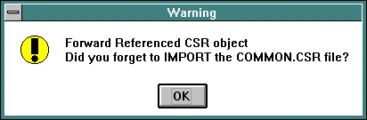
+ 2322 $ 2323 # 2324 K 2325 IMPDSC
Import Utility Options
Descriptor Author (IBAE)
This utility adds descriptors to the Data Dictionary using the following format.
NAME "TEXT"Where NAME is the descriptor name, and TEXT is the ASCII text for this descriptor.
Example:
;DSC [teller] bus_date "Business Date" acct_no "Account number"Maximum length of an individual descriptor text is 490 characters.
+ 2326 $ 2327 # 2328 K 2329 IMPFLD
Import Utility Options
Field Author (IBAE)
This utility adds fields to an existing Data Dictionary, using ASCII input lines in the following format:
nm type ##[.##] L R flg edit atentry error help pre post duringWhere:
nm (1) The 1-20 character name of this field. If this definition statement is for an array of fields, then the dimensions are given as positive integers enclosed within square brackets, e.g. somefield[25] declares a 25 element array, and notherfield[5][5] declares a 5 by 5 element array.
type (2) The field type. Valid types are:
ASCII
NUMERIC
DATE
TIME
INT
FIXED
FLAGS
IND
BULK
##[.##] (3) The number of characters which may be typed into a field. An optional number of places to the right of the decimal point may be given for FIXED fields.
L (4) The left delimiter, usually 1 or '~'.
R (5) The right delimiter, usually '~'. Special cases for the Left and Right delimiters are:
~ ~ = No delimiters.
_ ~ = No delimiters, but underscore fill.
n
~ = A box of type ‘
n
’, as documented in the
description of the
DRAW BOX
statement.
Only used by
DRAW FIELD
when
editfields
setting in the ddproj.ini file is set to 0 or 2.
flg (6) Field flags string. The string must be comprised of the following ASCII characters: scdeascurdmpbdh. A lower case letter in the flag string turns the corresponding flag off, and an upper case letter turns the flag on. The characters in the string represent:
s auto Skip (
ENTERFIELD
) when field is
full.
c auto_Clear at end-of-transaction.
d auto_Dup (for
DUPFIELD
ALL
,
DUPTRAN FILL
).
e auto_Extract (for
EXTRACT ALL
).
a auto_Append (for
APPEND ALL
).
s Sign_allowed (for FIXED or INT fields).
c Calc_mode.
u force alpha chars to UPPER case.
r Required field.
d allow DUP of this field.
m data entry flag, controls auto clearing.
p Protected (no data entry).
b display as Blanks if field is empty.
d Don't display picklist if no verify.
h Highlite this field when displayed.
a autoime
edit (7) For 'displayable' fields, an edit pattern for the field, or 0. For FLAG type fields, a reference to the compiled list which defines the names of the flag bits. See Defining and Using Flags for more information.
atentry (8) A routine which is executed as the cursor enters the field during data collect, or 0.
error (9) A descriptor to be displayed if the field fails validation, or 0.
help (10) An object which will be used by the HELP verb when this field is current, or 0.
pre (11)
A 'prefill'
routine which is called just before the field is displayed by the
DRAW FIELD
or
DRAW MLFIELD
statement, or 0.
post (12) A 'post validation' routine or picklist to be executed as the cursor leaves the field, or 0.
during (13) A 'during entry' routine which will be executed after each character is typed, and before the character is placed in the field, or 0.
There are potentially eight objects attached to the field, each for a
particular purpose. Seven of them must be attached to the field when it
is defined. (The 8th, the DYNAMIC_VALIDATION object, is attached at
runtime via the
DRAW FIELD
statement, and
removed by the
ENDTRAN
or
RESET TRAN
statements).
A zero (0) is used to indicate that no object is wanted.
The valid object types for each field object are given below. In each case, the default object type is listed first. (To illustrate, the default object type for an atentry object is a descriptor.)
edit -- can be a PAT: or LST: (depending upon field type)
atentry -- can be a DSC: or CSR: or OFB: or PIC:
error -- can be a DSC:
help -- can be a DSC: or CSR: or OFB: or PIC:
prefill -- can be a DSC: or CSR: or PAT: or OFB:
post_val -- can be a PIC: or CSR: or OFB:
during entry -- can be a CSR: or OFB:
Example:
;FLD [teller] branch NUMERIC 4 [ ] sCDEAscuRdmpbdha common:nines 0 0 0 0 0 0 op_id ASCII 8 [ ] scDEAscuRdmpbdha 0 0 0 0 0 OFB:opcheck 0 date DATE 8 [ ] scdeasCurdMpbdha common:date 0 0 0 0 0 0 totals[50] FIXED 12.2 [ ] sCDEAscuRdmpbdha 0 0 0 0 0 0 0+ 2330 $ 2331 # 2332 K 2333 IMPICN
Import Utility Options
Icon Author (IBAE)
This utility creates icons in the Data Dictionary. Each icon is read from a file as a block of binary data, and saved in the dictionary. Input lines are expected to follow the following format:
iconname filename Where iconname is the name that the icon will be stored under in the dictionary, and filename is the name of the file containing the icon.
Note: Windows NT uses the backslash as a metacharacter as well as a file/path separator, so either use double backslashes, or simply use single forward slashes instead.
Click here for help that describes several methods for defining the physical location of where application bitmaps, icons and files may be located. It is recommended that you use the $PROJDIR and $MOADIR conventions such that application files may be pathed relative to the project directory.
Example:
;ICN [common] question_mark question_mark exclamation exclamation trashcan \\vb\\icons\\computer\\trash01.icn [teller] mailbox mailbox diskette disketteIn addition to the Pinnacle Plus Release 4 bit icon format, icons in .ico format (both monochrome and color) may be imported by import icn. The format type of the input file is determined automatically.
Icons may may be exported in windows
.ico
format. (See the
section on
expicn
for more
information.) Icon names should be limited to 8 characters if it’s
anticipated that they’ll ever be exported or stored on a FAT file
system.
+ 2334 $ 2335 # 2336 K 2337 IMPMNB
Import Utility Options
This utility adds menu bodies to the Data Dictionary. A menu body is a list of menu selection items. Each item contains the text that is presented to the operator, access restriction codes, and the action which should be taken when the menu selection is made.
Importing menus requires the use of two utilities,
impmnu
and impmnb . This is because
menus are composed of two Data Dictionary types: MNUs (the menu header),
and MNBs (the menu body).
The format of a menu body is:
@name xxxx,yyyy,ANAME,"0 item"xxxx,yyyy,ANAME,"1 second selection item"
Where:
@name Begins a new menu body named name .
xxxx The hex representation of the access bits for this item. A bit which is on indicates that the corresponding bit in the operator's access bits must be ON for this selection to be seen or allowed.
yyyy A different hex representation of the same access bits. A bit which is on indicates that the corresponding bit in the operator's access bits must be OFF for this selection to be seen or allowed.
ANAME The name of the action to take when the selection is made. The name for DD objects must be preceeded by the proper prefix. Valid actions are:
OFB:name
(execute the
OFB
routine)
CSR:name
(execute the
CSR
routine)
MNU:name (the next menu to display)
LST:name
(the compiled list to be executed via
CSR:listexec
, this is so-called "list
driven transaction processing")
EXIT
(keyword used to exit
RT
)
RETURN (keyword used to return to previous menu)
item The remainder of the line is the menu selection's text, just as it will appear to the operator. The text should begin with a digit for this menu type.
When a menu body references a
OFB
routine or another
MNB
object which
doesn't exist, a forward referenced dummy object will be created. (The
dummy object will be replaced with the real object as soon as it is
defined.) C subroutines, however, must already exist if they are to be
used as the action for a menu selection.
+ 2338 $ 2339 # 2340 K 2341 IMPMNU
Import Utility Options
This utility adds menu headers to an existing Data Dictionary. The menu header defines the size and placement of the box containing the menu. It also identifies the menu body (the selection items) to be used with the menu.
Importing menus requires the use of two utilities,
impmnu
and
impmnb
. This is because menus are
composed of two Data Dictionary types: MNUs (the menu header), and MNBs
(the menu body).
Menu headers are expected to follow the following format:
name x, y, w, h, font, face, size, fcolor, bcolor, box, bodyWhere:
name The name of the menu header.
x Left coordinate of the menu (in pixels).
y Top coordinate of the menu (in pixels).
w Width of the menu (in pixels).
h Height of the menu (in pixels). If 0 is used for x, y, width and height, the menu will be centered on the screen.
font The character font.
face The character face.
size The character size for a description of font, face and size.)
fcolor The foreground color of the menu for WP6 or ACB.
bcolor The background color of the menu for WP6 or ACB.
box The menu's box type.
body The name of the menu body (MNB) to be used.
Example:
;MNU [teller] prod_menu 0, 0, 0, 0, "La Center", 0, 12, 5, 9, 4, newtoplist+ 2342 $ 2343 # 2344 K 2345 IMPNTS
Import Utility Options
This utility attaches notes to dictionary objects. Notes may be entered in the following format:
;NTS [OBJ:APPLICATION:NAME] TEXTWhere:
OBJ The object type. All dictionary object types are valid, with the exception of applications (APL) and CSR (C subroutine).
APPLICATION The name of the application which contains the object.
NAME The name of the object.
TEXT Line(s) of text to be attached to the object. Any number of lines may be added to the object, as long as the total note length does not exceed 8192 bytes. The lines of text are not required to be enclosed in double quotes.
The notes which are added to objects are stored in the NT* files which accompany each Data Dictionary. Because the NT files are not opened at run-time, there is no run-time overhead created when notes are attached to objects.
+ 2346 $ 2347 # 2348 K 2349 IMPPAT
Import Utility Options
Edit Pattern Author (IBAE)
This utility adds edit patterns to the Data Dictionary using the following format.
NAME "PATTERN"Where NAME is the name of the edit pattern, and PATTERN is the ASCII text which comprises the edit pattern.
;PAT [teller] hhmmss "hh:mm:ss" nines "99999999999999999999" dollar "$ZZZ,ZZZ,ZZZ,ZZZ,ZZ9.99"+ 2350 $ 2351 # 2352 K 2353 IMPPDM
Import Utility Options
Pull Down Menu Author (IBAE)
This utility adds pull down menus into the Data Dictionary. A pull
down menu is a list of menu selection items. Each item contains the text
that is presented to the operator, item presentation flag, accelerator
key value, and the action which should be taken when the menu selection
is made. Note that the
PDM CREATE
and
PDM POPUP
verbs both expect a
PDM
Data Dictionary object for their
respective menu definitions.
Importing pull down or popup menus requires the use of one utility:
imppdm
.
The format of a pull down menu body is:
@name
flag,accelerator,aname
,"0 item"
flag,accelerator,aname
,"1 second selection item"
Where:
@name Begins a new pull down menu named name .
flag
The presentation
specification for this menu item, valid macros for the
FLAG
are
defined in
“
\
moa
\
lib
\
ofbdefs.h
”
and are:
MOA_SEPARATORMOA_ENABLED
MOA_GRAYED
MOA_DISABLED
MOA_UNCHECKED
MOA_CHECKED
MOA_USECHECKBITMAPS
MOA_STRING
MOA_BITMAP
MOA_OWNERDRAW
MOA_MENUBARBREAK
MOA_MENUBREAK
MOA_UNHILITE
MOA_HILITE
accelerator A hex representation of the key or key combination to cause a particular pull down or popup menu item’s aname object to be invoked. These are not listed here due to the quantity, but you may look at “\moa\lib\ofbdefs.h” for the complete listing of the set of accelerator keys and key combinations available.
aname The name of the action to take when the selection is made. The name for Data Dictionary objects must be preceded by the proper prefix. Valid actions are:
OFB:name
(execute the
OFB
routine)
CSR:name
(execute the
CSR
routine)
PDM:name (a subordinate pull down menu to display)
LST:name (compiled list to executed via CSR:listexec)
item The remainder of the line is the menu selection's text, just as it will appear to the operator. The text may be a string constant or a Data Dictionary object that may be evaluated to a string such as a descriptor or a field.
When a menu item references a
OFB
routine or another
PDM
object which
doesn't exist, a forward referenced dummy object will be created. (The
dummy object will be replaced with the real object as soon as it is
defined.) C subroutines, however, must already exist if they are to be
used as the action for a menu selection.
+ 2354 $ 2355 # 2356 K 2357 IMPPIC
Import Utility Options
Picklist Header Author (IBAE)
This utility adds picklist headers to an existing Data Dictionary. The picklist header defines the physical appearance of the picklist on the screen (size, shape and placement of the box, font and font size of the text, etc.). It also identifies the picklist body (the selection items) to be used with the picklist. This allows a single body (e.g. U.S. State names) to be used in several places on the screen, by referencing the same body through different picklist headers.
Importing picklists requires the use of two utilities,
imppic
and
impplb
. This is because picklists
are composed of two Data Dictionary types: PICs (the picklist header),
and PLBs (the picklist body).
Picklist headers are expected to follow the following format:
name x, y, width, height, font, face, size, forecolor, \ backcolor, boxtype, itemdepth, scrollbar, clickselect, \ matchcase, selectcase, pos, body [,title] [,keyfilter]Where :
name The name of the picklist header. This is the name by which the OFB code (or the IBAE) refers to the entire picklist.
x Left coordinate of the picklist (in pixels). See the pos (positioning) value described below.
y Top coordinate of the picklist (in pixels). See the pos (positioning) value described below.
width Width of the picklist (in pixels).
height Height of the picklist (in pixels).
font The character font. This is a one or two word ASCII Windowman or Win32 font name.
face The character face or attributes (e.g. italicized, bold, etc.).
size The character size for a description of font, face and size.)
forecolor The WP6 or ACB foreground color of the picklist. A number in the range 0-255. If forecolor and backcolor are both zero, then the picklist will take on the colors of the screen it's drawn upon.
backcolor The WP6 or ACB background color of the picklist. A number in the range 0-255. If forecolor and backcolor are both zero, then the picklist will take on the colors of the screen it's drawn upon.
boxtype
The picklist's
box type as documented in the description of
DRAW BOX
.
itemdepth The number of rows occupied by each picklist entry, normally 1. A value of 2 would mean the video-reversed 'selection bar' covers two 'rows' in the picklist.
scrollbar Determines whether the picklist is to have a scrollbar. A means always, N means never, and C means conditional (i.e. it will have a scrollbar only if there are more items in the list than can be displayed).
clickselect Determines how many mouse clicks (1 or 2) it takes to make a selection. The default is 1, which also implies that ASCII keystrokes move the selection bar, or make a selection. The case sensitivity of this key action is determined by the value of selectcase as described below. A value of 2 means it takes two fairly rapid mouse clicks to make a selection and there is no ASCII keystroke selection.
matchcase
Determines
case-sensitivity of matching a field via a
PICKVERIFY
statement. Y means yes,
case sensitive. N means not case sensitive.
selectcase Determines the case-sensitivity of selection bar movement and selection via ASCII keystrokes. Y means yes, case sensitive. N means not case sensitive.
pos Determines if x,y positioning is absolute or relative. The default is A , or absolute. R means the x,y values will be relative to the screen the picklist is displayed upon.
body The name of the picklist body (PLB) to be used. By convention, the IBAE gives picklist bodies the same names as the picklist headers which refer to them. However, the name of the header and body do not have to be identical .
title An optional descriptor to be displayed as the picklist's title. If a title is specified, then it is separated visually from the body of the picklist by a single stroked line and some white space. Use a numeric zero (0), as in the last example below, to omit the title but specify a keyfilter.
keyfilter
An optional OFB or C routine to
be given control when a key is hit by the user (this is analogous to the
during_entry
filter on FIELDs). The routine receives
the keystroke value in built-in variable
LASTKEY
.
It may modify
LASTKEY
,
or leave
it unmodified. A non-zero value of
LASTKEY
will be acted upon accordingly after the routine returns
control to the picklist driver.
Example :
;PIC [teller] states 220,180,120,100,"Chicago", \ 0,12,0,0,1,1,C,1,Y,Y,A, \ statelist zips 220,180,120,100,"La Center",\ 0,12,0,0,1,1,A,1,Y,N,A, \ ziplist,dsc:title,OFB:pickkeyfilter ntzips 220,180,120,100,"La Center", \ 0,12,0,0,1,1,A,2,Y,Y,A, \ ziplist,0,OFB:pickkeyfilter+ 2358 $ 2359 # 2360 K 2361 IMPPLB
Import Utility Options
Picklist Body Author (IBAE)
This utility adds picklist bodies to the Data Dictionary. A picklist body contains the text that is displayed in a picklist selection.
Importing picklists requires the use of two utilities,
imppic
and
impplb
. This is because picklists are
composed of two Data Dictionary types: PICs (the picklist header), and
PLBs (the picklist body).
The format of a picklist body is:
@name "item" "item1"Where: name begins a new picklist body named "name", and item is the text displayed in the picklist line.
Spaces enclosed in quotes may be given for an entry, allowing empty fields or fields filled with blanks to pass a picklist validation.
Example:
;PLB [teller] @northweststates "CA California" "OR Oregon" "WA Washington" "ID Idaho" "MT Montana"Note: When an item depth greater than one is used in the picklist header, the picklist cursor will appear on more than one line of the picklist body. Only the first line, however, may be inserted into the current field when a selection is made.
+ 2362 $ 2363 # 2364 K 2365 IMPPMB
Import Utility Options
This utility adds picklist menu bodies to the Data Dictionary. The picklist menu body contains the text that is displayed in the picklist menu, along with actions to be performed when each item is selected.
The correct format for a picklist menu body is:
;PMB [application_name] @name preaction,action,postaction,"item1" preaction,action,postaction,"item2"Where:
name The name of the picklist menu body.
preaction
The name of a
pre-action object, which will be processed when the selection is made.
When OFB or C routines are named, they
must
be preceded by the
OFB
: or
CSR
:
prefix. Valid entries for the preaction object are:
OFB:name routine name
CSR:name name
0 If no pre-action object is attached.
action
The action to take when the
selection is made. The action is processed after the preaction object.
When OFB or C routines, or picklist menus are named, they MUST be
preceded by the
OFB
:,
CSR
: or
PMU
:
prefix. Valid actions are:
OFB:name (execute the OFB routine)
CSR:name (execute the CSR routine)
PMU:name (the next menu to display)
EXIT (keyword used to exit rt)
RETURN (keyword used to return to previous menu)
postaction The name of the postaction to take. The postaction object is executed after the action object. The postaction object supports the same object types as the preaction object.
item The text displayed for the selection item.
When a picklist menu body references a
OFB
routine or another
PMB
object which doesn't exist, a forward
referenced dummy object will be created. (The dummy object will be
replaced with the real object as soon as it is defined.) C subroutines,
however, must already exist if they are to be used as the action for a
menu selection.
+ 2366 $ 2367 # 2368 K 2369 IMPPMU
Import Utility Options
This utility adds picklist menu headers to an existing Data Dictionary. The picklist menu header defines the size and placement of the box containing the picklist menu. It also identifies the picklist menu body (the selection items) to be used with the picklist menu. The picklist-style menu header defines the physical appearance of the menu on the screen (size, shape and placement of the box, font and font size of the text, etc.). It also identifies the menu body (the selection items) to be used with the menu. This allows a single list to be used in several places on the screen, by referencing the same body through different menu headers.
Importing picklist menus requires the use of two utilities, imppmu
and
imppmb
. This is because
picklist-style menus are composed of two Data Dictionary types: PMUs
(the picklist menu header), and PMBs (the picklist menu body).
Picklist-style menu headers are expected to follow the following format:
name x, y, width, height, font, face, size, forecolor, \backcolor, boxtype, itemdepth, scrollbar, \
clickselect, selectcase, positioning, body [,title]
Where:
name The name of the picklist-style menu header. This is the name by which the OFB code (or the IBAE) refers to the entire menu.
x Left coordinate of the menu (in pixels). See the positioning value described below.
y Top coordinate of the menu (in pixels). See the positioning value described below.
width Width of the menu (in pixels).
height Height of the menu (in pixels).
font The character font. This is a one or two word ASCII name as defined by WindowMan.
face The character face or attributes (e.g. italicized, bold, etc.).
size The character size for a description of font, face and size.)
forecolor The WP6 or ACB foreground color of the menu. A number in the range 0-255. If forecolor and backcolor are both zero, then the menu will take on the colors of the screen it's drawn upon.
backcolor The WP6 or ACB background color of the menu. A number in the range 0-255. If forecolor and backcolor are both zero, then the menu will take on the colors of the screen it's drawn upon.
boxtype
The menu's box type as
documented in the description of
DRAW BOX
.
itemdepth The number of rows occupied by each menu entry, normally 1. A value of 2 would mean the video-reversed 'selection bar' covers two 'rows' in the menu.
scrollbar Determines whether the menu is to have a scrollbar. A means always, N means never, and C means conditional (i.e., it will have a scrollbar only if there are more items in the list than can be displayed).
clickselect Determines how many mouse clicks (1 or 2) it takes to make a selection. The default is 1, which also implies that ASCII keystrokes move the selection bar, or make a selection. The case sensitivity of this key action is determined by the value of selectcase as described below. A value of 2 means it takes two fairly rapid mouse clicks to make a selection and there is no ASCII keystroke selection.
selectcase Determines the case-sensitivity of selection bar movement and selection via ASCII keystrokes. Y means yes, case sensitive. N means not case sensitive.
positioning Determines if x,y positioning is absolute or relative. The default is A , or absolute. R means the x,y values will be relative to the screen the menu is displayed upon.
body
The name of the
picklist-style menu body (PMB) to be used. By convention, the IBAE gives
picklist-style menu bodies the same names as the menu headers which
refer to them. However, the name of the header and body do not have to
be identical.
Note:
the menu body may specify a OFB or
C routine which, at display time, will be invoked and expected to return
a pointer to a valid picklist-style menu body (a
PMNBODY
structure) in built-in variable
RETVAL
the
IBAE
makes considerable use of this
option.
title An optional descriptor to be displayed as the menu's title. If a title is specified, then it is separated visually from the body of the menu by a single stroked line and some white space.
Example:
;PMU [teller] savings 220,180,120,100,"La Center",0,12,0,1,1,1,N,1,Y,A \ savings_body checking 220,180,120,100,"La Center",0,12,0,1,1,1,N,1,Y,A \ check_body,dsc:title+ 2370 $ 2371 # 2372 K 2373 IMPTAG
Import Utility Options
This utility creates tag objects in the Data Dictionary. TAGs are used at run-time to identify checkboxes, pushbuttons, and radio buttons.
The format for adding TAGs is simply:
tagobjectnameExample:
;TAG [common] key tran [teller] totals reentry+ 2374 $ 2375 # 2376 K 2377 IMPUDO
Import Utility Options
This utility creates user defined objects in the Data Dictionary. Each user defined object is read from a file as a block of binary data and saved in the dictionary.
The input format for the
impudo
utility
is:
udoname filename Where udoname is the name of the user defined object, and filename is the name of the system file containing the user defined object. See the topic, See Managing Bitmaps, Icons and Files , which describes several methods for defining the physical location of where application bitmaps, icons and files may be located. It is recommended that you use the $PROJDIR and $MOADIR conventions such that application files may be pathed relative to the project directory.
Example :
;UDO [common] commonudo1 commonudo1 commonudo2 commonudo2 [teller] tellerudo1 tellerudo1 tellerudo2 tellerudo2
+
2378
$
2379
#
2380
K
2381
BC
The OFB compiler takes its input from a regular ASCII text file or via input redirection like the imp* routines. It accepts the same standard options for project as most of the other Data Dictionary utilities. The source file may contain multiple OFB subroutines, provided they each start with a SUB statement and are separated by a line of dashes starting in column one.
BC
options are:
-d Turns on debugging
-f Writes output to file system
-m Write object with warning if already modified
-p Strict checking on MOVE and LET statements
-s Suppress auto-definition of forward ref'd objects
-v Verbose mode, echoes progress
-w Supress Warning messages
-D Compile DOC (Document) objects only
-I xx Search in directory ' xx ' for #include files
-L Compile LST (Compiled List) objects only
-M Don't write object if already modified
-O Compile OFB (Olivetti Financial BASIC) objects only
-S Compile SCR (Screen) objects only
-U Gives usage info (this text)
-V
Show
BC
's version
info
-W x# Put messages of type ' x ' to output '#'
where 'i' == info, 'w' == warnings, 'e' == errors
and 1 == stdout, 2 == stderr, 3 == MessageBox
-Z xx Create #define symbol " xx " for OFB code use
A file name (or series of file names) will normally follow the
options. If no file name is provided,
BC
will take its input from stdin. Normally,
BC
will compile any OFB subroutines,
lists, documents or screens in the input file. The use of the "-P",
"-L", "-D" and "-S" options will cause
BC
to compile only the selected object type, and to display an error if the
input file contains source for objects of other types.
+ 2382 $ 2383 # 2384 K 2385 ADDHELP
The C subroutine
manual
may be used to
display any standard text file. However, the full set of features
provided by the manual routine are not available unless the file has
been created by the
addhelp
utility.
(
addhelp
requires an original input
text file, usually created via a text editor. So long as the original
file is preserved, there is no need for an
exporthelp
utility
).
Note
: To fully understand the
addhelp
utility, it is necessary to read
the
MANUAL
topic.
The
addhelp
utility creates an indexed
manual file from a standard text file. Marker lines in the text file are
used to create indexes, which may be used at run time to jump to a
selected starting point in the manual file, based on the state of the
current application. Page break locations are also stored in the output
file, allowing the manual routine to locate pages at run time.
Lines in input files which begin with '[' and end with ']' are marker lines. These lines aren't copied to the output file, but are used to mark a position within the file. There are two types of marker lines. The first type is used to force a page break in the output file. The second is used to create an index entry in the output file.
To force addhelp to create a page break, insert the following line into the input file:
[page]
The supported index types are outlined in the MANUAL C subroutine section. Listed below are examples of the markers required to create index entries of each of the different types:
Combination Screen and Field Index
[SCR:applname:screenname,FLD:applname:fieldname]Field Index
[FLD:applname:fieldname]Screen Index
[SCR:applname:screenname]Transaction Index (transactions are really OFB subroutines)
[OFB:applname:transactionname]Menu Index
[MNU:applname:menuname]String Index
["regexprstring"]For example, the following marker line may be used to create an index entry for a field named account_no in an application named newaccts:
[FLD:newaccts:account_no]
When the
newaccts:account_no
field is
current and the manual routine is called with the field index option,
the display will begin at the line following this marker. The entire
manual file may still be viewed by using the standard navigational
keys.
The indexed manual file will be placed in the directory where the
data dictionary resides. The default name for this file will be
DDproj.man
.
Optionally, the name for the indexed file may be passed as an option
on the command line. For example, the following command will create an
indexed file from a text file named
customhlp.txt
, and save the indexed file
as
customhlp
. This file may be selected at
run time through
OFB
.
addhelp -nproj customhlp <customhlp.txt
The manual file will normally be displayed in 76 columns and 16 rows.
The display size for a file may be adjusted by passing the width and
height as parameters to the
addhelp
utility. The following command line will create an indexed manual file
which will be displayed in a 40 column, 10 row display area:
addhelp -nproj -h10 -w40 customhlp <customhlp.txt
Also, the manual file will normally be displayed in the "Woodland"
font, with a font size of 12, tab spacing of 4 and margins of 1. The
display font, tab spacing and margins for a file may be adjusted by
passing the font name, font size, tab spacing and margin width as
parameters to the
addhelp
utility.
The margin width will appear in both the left and right margins, so twice the margin width will be subtracted from the total width to get the actual text display width. Also, fonts which are wider than the default font will allow fewer columns to be displayed. These factors should be kept in mind when specifying font, width and margin width.
The following command line will create an indexed manual file which will be displayed in font "Otis Orchards" with font size 12, tab spacing of 8 and margins of 5:
addhelp -nproj -f"Otis Orchards" -s12 -t8 -m5 <customhlp.txt
The correct usage of the
addhelp
utility is:
addhelp [-UVv -wwidth -hheight -ffont -ssize -ttab -mmargin -nproj
outfile] <inputfile
Where:
- wwidth Set display width to width . The default value is 78. ( Left and right margins are included in this number, so the actual number of character columns will be less than the setting given here .) It must be a number between 1 and 106, although the maximum width will usually be less than 106, depending on the selected font and font size.
- hheight Set the number of display lines to height. This must be a number from 1 to 32, although the maximum height will usually be less than 32, depending on the selected font and size. The default for this setting is 16.
- ffont Use font font. The name must be double quoted if it contains spaces! ( Remember that the font size is used in conjunction with the font to determine the maximum number of display rows and columns that are available .) The default font is "Woodland".
- ssize Set font size to size. The default font size is 12.
- ttab Expand tabs to tab spaces. This must be a number from 1 to 106. The default for this setting is 4.
- mmargin Set left and right margins to margin spaces. This must be a number from 0 to 53. The default margin setting is 1.
outfile
The name of the file which receives
the output. If this option is omitted, the default file name will be
DDproj.man
.
+ 2386 $ 2387 # 2388 K 2389 WM2BMP
The Mosaic OA runtime will no longer support the internal “ISC” style
bitmap stored in the Data Dictionary in a BIT (see the
DRAW PICTURE
OFB verb). It
will only support Windows .
bmp
files. This utility will convert
the old “ISC” style bitmap format file into the Windows .
bmp
file format.
wm2bmp
supports the following
options:
wm2bmp [-v -V -U] input_filename [output_filename]-v verbose mode
-V show version, then exit
-U show usage, then exit
input_filename name of the file that contains the “ISC” bitmap
output_filename name of where to put the converted Windows . bmp file
(if there is no extension specified on the output file, it will be . bmp .)
(if there is no output file specified, the output file will be the same name as the input filename, but with a . bmp filename extension.)
+ 2390 $ 2391 # 2392 K 2393 The Export Utilities
EXPAPL EXPBIT
EXPCSR EXPDSC
EXPFLD EXPICN
EXPMNB EXPMNU
EXPNTS EXPPAT
EXPPDM EXPPIC
EXPPLB EXPPMB
EXPPMU EXPTAG
EXPUDO Export Utility Options
The export utilities extract data from the Data Dictionary and send
the results to
stdout
. The format of the output differs from
object to object, but is compatible with its corresponding import
utility. The EXPORT utility itself handles all DD objects except
OFB
,
SCR
,
DOC
, and
LST
objects. The utilities like
EXPFLD
and
EXPDSC
are really just
batch
files which invoke EXPORT with the proper command line switches.
Most of the export utilities begin their output with a comment line,
which states the object type that is being exported. This line serves as
a file identified. For example,
expfld
will begin its output with:
;field objectsThis line is used by the import utilities to insure that they're receiving the correct type of input. In addition, the file identifier line will show the date that the objects were exported, the user who exported them, and the directory path of the dictionary from which they were exported.
Following this information, the export utilities will display the name of the application to which the following objects belong. When more than one application is exported, one of these lines will occur for each application.
The application line consists of an opening and closing square bracket, "[ ]", with the name of the application between them. To illustrate, the following line selects an application named "teller":
[teller] + 2394 $ 2395 # 2396 K 2397 Export Utility Options
The usage of the exp utilities is as follows:
exp* [-V -U -q -M -xpattern -nproj -o -fpath] \ appl | -A > outfileWhere:
-V Show version, then exit.
-U Show usage, then exit.
-w Export object in windows file format (only appropriate for bit maps and icons on NT systems)
-q Do not print a file identifier line.
-M Export only objects which have been modified.
-xpattern Export objects matching pattern.
-nproj Use project proj.
-o Overwrite files that match object name (only appropriate for utilities which save objects in binary files).
-fpath Path for binary files (only appropriate for utilities which save objects in binary files).
appl Export objects in application appl.
-A Export objects in all applications.
Here's an example of a command line to invoke one of the export utilities:
expxxx -xLRG* teller > outfileThis example will extract from the Data Dictionary, into file outfile, all objects of type xxx in the teller application that have names beginning with "LRG". To extract objects from all applications in the Data Dictionary, the "-A" option should be used in place of "teller".
When a meta-character is used, such as the "*" in the example above, it's usually necessary to enclose the string in quotes to prevent the shell from expanding the expression.
All of the export utilities pass a return value back to the shell to indicate the degree of success they had in doing their job. The return values are:
0 - Complete success.
1-99 - Warnings given, but no fatal errors.
100-up - Command failed, errors have occurred.
Possible causes for failure of the export utilities are:
1. Invalid regular expression.
2. Unable to open Data Dictionary.
3. Cannot find specified application in Data Dictionary.
The "o" argument and "f" argument are only used with utilities which save binary data to system files. Currently, these utilities are:
expbit
expicn
expudo
Additional points of failure for these utilities are:
Unable to change directory to specified file_path.
stat() file failure on output file.
Output file exists as a directory.
Output file exists and the -o (overwrite) option was not selected.
Output file exists, but cannot be opened.
Failure during write to output file.
The export utilities will NOT export objects created by forward reference, or objects which have their deletion bit set.
+ 2398 $ 2399 # 2400 K 2401 EXPAPL
Export Utility Options
The
expapl
utility extracts application
names from the Data Dictionary and directs them to
stdout
. The
ASCII form of this output is exactly that expected by the
impapl
utility.
;APL common new_appl1 new_appl2 new_appln+ 2402 $ 2403 # 2404 K 2405 EXPBIT
Export Utility Options
The
expbit
utility extracts bitmaps
from the Data Dictionary and places them in a set of flat files, using
up to 8.3 characters of the bitmap name as a file name.
Expbit
also sends output to
stdout
, which may be directed to a file and used as the control
file for
impbit
.
When the “-w” option is used, bit maps in the Data Dictionary will be exported as monochrome .bmp files.
References to color .bmp files in the Data Dictionary won’t export any binary data. The reference will appear only as a line of text output, which will match the line that was originally imported by impbit .
+ 2406 $ 2407 # 2408 K 2409 EXPCSR
Export Utility Options
The
expcsr
utility extracts C Source
Routine interface definitions from the first application in the Data
Dictionary (‘common’) and directs them to
stdout
. The ASCII
form of this output is exactly that expected by the
impcsr
utility.
The format of a C Source Routine object definition file is:
;CSR
[appl_name]
ß ‘common’
in the foundation application
csr_name arg_count csr_funcWhere:
csr_name Identifies the C Source Routine object by name in the Data Dictionary.
arg_count
Specifies the number of
parameters expected for the call to the C Source Routine in the
CSR.DLL
dynamic link library. The number
of arguments is verified during RunTime unless the
arg_count
is
-1
which indicates a variable number of
arguments is expected.
csr_func
The name of the
exported C Source Routine function in the
CSR.DLL
dynamic link library. You should
declare the C Source Routine with the following declaration:
_declspec(dllexport)
+ 2410 $ 2411 # 2412 K 2413 EXPDSC
Export Utility Options
The
expdsc
utility extracts descriptors
from the Data Dictionary and directs them to
stdout
. The ASCII
form of this output is exactly that expected by the
impdsc
utility.
NAME "TEXT"Where NAME is the descriptor name, and TEXT is the ASCII text for this descriptor.
Example:
;DSC [teller] bus_date "Business Date" acct_no "Account number"Maximum length of an individual descriptor text is 490 characters.
+ 2414 $ 2415 # 2416 K 2417 EXPFLD
Export Utility Options
The
expfld
utility extracts fields from
the Data Dictionary and directs them to
stdout
. The ASCII form
of this output is exactly that expected by the
impfld
utility.
;FLD[teller]
branch NUMERIC 4 [ ] sCDEAscuRdmpbdh common:nines 0 0 0 0 0 0
op_id ASCII 8 [ ] scDEAscuRdmpbdh 0 0 0 0 0 OFB:opcheck 0
date DATE 8 [ ] scdeasCurdMpbdh common:date 0 0 0 0 0 0
totals[50] FIXED 12.2 [ ] sCDEAscuRdmpbdh 0 0 0 0 0 0 0
+ 2418 $ 2419 # 2420 K 2421 EXPICN
Export Utility Options
The
expicn
utility extracts icons from
the Data Dictionary and places them in a set of flat files, using up to
8.3 characters of the icon object name as a file name.
Expicn
also sends output to
stdout
, which may be directed to a file and used as the control
file for
impicn
.
When the “-w” option is used, icons in the Data Dictionary will be exported as monochrome .ico files.
+ 2422 $ 2423 # 2424 K 2425 EXPMNB
Export Utility Options
The
expmnb
utility extracts menu bodies
from the Data Dictionary and directs them to
stdout
. The ASCII
form of this output is exactly that expected by the
impmnb
utility.
Remember:
The menu headers must also be exported by
using the
expmnu
utility.
+ 2426 $ 2427 # 2428 K 2429 EXPMNU
Export Utility Options
The
expmnu
utility extracts menu
headers from the Data Dictionary and directs them to
stdout
.
The ASCII form of this output is exactly that expected by the
impmnu
utility.
Remember:
The menu bodies must also be exported by
using the
expmnb
utility.
+ 2430 $ 2431 # 2432 K 2433 EXPNTS
Export Utility Options
The
expnts
utility extracts notes from
the notes dictionary and directs them to
stdout
. The ASCII form
of this output is exactly that expected by the
impnts
utility.
;NTS [OBJ:APPLICATION:NAME] TEXTWhere:
OBJ The object type. All dictionary object types are valid, with the exception of applications (APL) and CSR (C subroutine).
APPLICATION The name of the application which contains the object.
NAME The name of the object.
TEXT Line(s) of text to be attached to the object. Any number of lines may be added to the object, as long as the total note length does not exceed 8192 bytes. The lines of text are not required to be enclosed in double quotes.
The notes which are added to objects are stored in the NT* files which accompany each Data Dictionary. Because the NT files are not opened at run-time, there is no run-time overhead created when notes are attached to objects.
+ 2434 $ 2435 # 2436 K 2437 EXPPAT
Export Utility Options
The
exppat
utility extracts edit
patterns from the Data Dictionary and directs them to
stdout
.
The ASCII form of this output is exactly that expected by the
imppat
utility.
NAME "PATTERN"Where NAME is the name of the edit pattern, and PATTERN is the ASCII text which comprises the edit pattern.
;PAT [teller] hhmmss "hh:mm:ss" nines "99999999999999999999" dollar "$ZZZ,ZZZ,ZZZ,ZZZ,ZZ9.99"+ 2438 $ 2439 # 2440 K 2441 EXPPDM
Export Utility Options
The
exppdm
utility extracts pulldown
menu definitions from the Data Dictionary and directs them to
stdout
. The ASCII form of this output is exactly that expected
by the
imppdm
utility.
The format of a pull down menu body is:
@name
flag,accelerator,aname
,"0 item"
flag,accelerator,aname
,"1 second selection item"
Where:
@name Begins a new pull down menu named name .
flag
The presentation
specification for this menu item, valid macros for the
FLAG
are
defined in
“
\
moa
\
lib
\
ofbdefs.h
”
and are:
MOA_SEPARATORMOA_ENABLED
MOA_GRAYED
MOA_DISABLED
MOA_UNCHECKED
MOA_CHECKED
MOA_USECHECKBITMAPS
MOA_STRING
MOA_BITMAP
MOA_OWNERDRAW
MOA_MENUBARBREAK
MOA_MENUBREAK
MOA_UNHILITE
MOA_HILITE
accelerator A hex representation of the key or key combination to cause a particular pull down or popup menu item’s aname object to be invoked. These are not listed here due to the quantity, but you may look at “\moa\lib\ofbdefs.h” for the complete listing of the set of accelerator keys and key combinations available.
aname The name of the action to take when the selection is made. The name for Data Dictionary objects must be preceded by the proper prefix. Valid actions are:
OFB:name
(execute the
OFB
routine)
CSR:name
(execute the
CSR
routine)
PDM:name (a subordinate pull down menu to display)
LST:name (compiled list to executed via CSR:listexec)
item The remainder of the line is the menu selection's text, just as it will appear to the operator. The text may be a string constant or a Data Dictionary object that may be evaluated to a string such as a descriptor or a field.
When a menu item references a
OFB
routine or another
PDM
object which
doesn't exist, a forward referenced dummy object will be created. (The
dummy object will be replaced with the real object as soon as it is
defined.) C subroutines, however, must already exist if they are to be
used as the action for a menu selection.
+ 2442 $ 2443 # 2444 K 2445 EXPPIC
Export Utility Options
The
exppic
utility extracts picklist
headers from the Data Dictionary and directs them to
stdout
.
The ASCII form of this output is exactly that expected by the
imppic
utility.
Remember:
The picklist bodies must also be exported
by using the
expplb
utility.
Picklist headers are expected to follow the following format:
name x, y, width, height, font, face, size, forecolor, \ backcolor, boxtype, itemdepth, scrollbar, clickselect, \ matchcase, selectcase, pos, body [,title] [,keyfilter]Where :
name The name of the picklist header. This is the name by which the OFB code (or the IBAE) refers to the entire picklist.
x Left coordinate of the picklist (in pixels). See the pos (positioning) value described below.
y Top coordinate of the picklist (in pixels). See the pos (positioning) value described below.
width Width of the picklist (in pixels).
height Height of the picklist (in pixels).
font The character font. This is a one or two word ASCII Windowman or Win32 font name.
face The character face or attributes (e.g. italicized, bold, etc.).
size The character size for a description of font, face and size.)
forecolor The WP6 or ACB foreground color of the picklist. A number in the range 0-255. If forecolor and backcolor are both zero, then the picklist will take on the colors of the screen it's drawn upon.
backcolor The WP6 or ACB background color of the picklist. A number in the range 0-255. If forecolor and backcolor are both zero, then the picklist will take on the colors of the screen it's drawn upon.
boxtype
The picklist's
box type as documented in the description of
DRAW BOX
.
itemdepth The number of rows occupied by each picklist entry, normally 1. A value of 2 would mean the video-reversed 'selection bar' covers two 'rows' in the picklist.
scrollbar Determines whether the picklist is to have a scrollbar. A means always, N means never, and C means conditional (i.e. it will have a scrollbar only if there are more items in the list than can be displayed).
clickselect Determines how many mouse clicks (1 or 2) it takes to make a selection. The default is 1, which also implies that ASCII keystrokes move the selection bar, or make a selection. The case sensitivity of this key action is determined by the value of selectcase as described below. A value of 2 means it takes two fairly rapid mouse clicks to make a selection and there is no ASCII keystroke selection.
matchcase
Determines
case-sensitivity of matching a field via a
PICKVERIFY
statement. Y means yes,
case sensitive. N means not case sensitive.
selectcase Determines the case-sensitivity of selection bar movement and selection via ASCII keystrokes. Y means yes, case sensitive. N means not case sensitive.
pos Determines if x,y positioning is absolute or relative. The default is A , or absolute. R means the x,y values will be relative to the screen the picklist is displayed upon.
body The name of the picklist body (PLB) to be used. By convention, the IBAE gives picklist bodies the same names as the picklist headers which refer to them. However, the name of the header and body do not have to be identical .
title An optional descriptor to be displayed as the picklist's title. If a title is specified, then it is separated visually from the body of the picklist by a single stroked line and some white space. Use a numeric zero (0), as in the last example below, to omit the title but specify a keyfilter.
keyfilter
An optional OFB or C routine to
be given control when a key is hit by the user (this is analogous to the
during_entry
filter on FIELDs). The routine receives
the keystroke value in built-in variable
LASTKEY
.
It may modify
LASTKEY
,
or leave
it unmodified. A non-zero value of
LASTKEY
will be acted upon accordingly after the routine returns
control to the picklist driver.
Example :
;PIC [teller] states 220,180,120,100,"Chicago", \ 0,12,0,0,1,1,C,1,Y,Y,A, \ statelist zips 220,180,120,100,"La Center",\ 0,12,0,0,1,1,A,1,Y,N,A, \ ziplist,dsc:title,OFB:pickkeyfilter ntzips 220,180,120,100,"La Center", \ 0,12,0,0,1,1,A,2,Y,Y,A, \ ziplist,0,OFB:pickkeyfilter+ 2446 $ 2447 # 2448 K 2449 EXPPLB
Export Utility Options
The
expplb
utility extracts picklist
bodies from the Data Dictionary and directs them to
stdout
. The
ASCII form of this output is exactly that expected by the
impplb
utility.
Remember:
The picklist headers must also be exported
by using the
exppic
utility.
The format of a picklist body is:
@name "item" "item1"Where: name begins a new picklist body named "name", and item is the text displayed in the picklist line.
Spaces enclosed in quotes may be given for an entry, allowing empty fields or fields filled with blanks to pass a picklist validation.
Example:
;PLB [teller] @northweststates "CA California" "OR Oregon" "WA Washington" "ID Idaho" "MT Montana"Note: When an item depth greater than one is used in the picklist header, the picklist cursor will appear on more than one line of the picklist body. Only the first line, however, may be inserted into the current field when a selection is made.
+ 2450 $ 2451 # 2452 K 2453 EXPPMB
Export Utility Options
The
exppmb
utility extracts picklist
menu bodies from the Data Dictionary and directs them to
stdout
. The ASCII form of this output is exactly that expected
by the
imppmb
utility.
Remember:
The picklist menu headers must also be
exported by using the
exppmu
utility.
The correct format for a picklist menu body is:
;PMB [application_name] @name preaction,action,postaction,"item1" preaction,action,postaction,"item2"Where:
name The name of the picklist menu body.
preaction
The name of a
pre-action object, which will be processed when the selection is made.
When OFB or C routines are named, they
must
be preceded by the
OFB
: or
CSR
:
prefix. Valid entries for the preaction object are:
OFB:name routine name
CSR:name name
0 If no pre-action object is attached.
action
The action to take when the
selection is made. The action is processed after the preaction object.
When OFB or C routines, or picklist menus are named, they MUST be
preceded by the
OFB
:,
CSR
: or
PMU
:
prefix. Valid actions are:
OFB:name (execute the OFB routine)
CSR:name (execute the CSR routine)
PMU:name (the next menu to display)
EXIT (keyword used to exit rt)
RETURN (keyword used to return to previous menu)
postaction The name of the postaction to take. The postaction object is executed after the action object. The postaction object supports the same object types as the preaction object.
item The text displayed for the selection item.
When a picklist menu body references a
OFB
routine or another
PMB
object which doesn't exist, a forward
referenced dummy object will be created. (The dummy object will be
replaced with the real object as soon as it is defined.) C subroutines,
however, must already exist if they are to be used as the action for a
menu selection.
+ 2454 $ 2455 # 2456 K 2457 EXPPMU
Export Utility Options
The
exppmu
utility extracts picklist
menu headers from the Data Dictionary and directs them to
stdout
. The ASCII form of this output is exactly that expected
by the
imppmu
utility.
Remember:
The picklist menu bodies must also be
exported by using the
exppmb
utility.
Picklist-style menu headers are expected to follow the following format:
name x, y, width, height, font, face, size, forecolor, \backcolor, boxtype, itemdepth, scrollbar, \
clickselect, selectcase, positioning, body [,title]
Where:
name The name of the picklist-style menu header. This is the name by which the OFB code (or the IBAE) refers to the entire menu.
x Left coordinate of the menu (in pixels). See the positioning value described below.
y Top coordinate of the menu (in pixels). See the positioning value described below.
width Width of the menu (in pixels).
height Height of the menu (in pixels).
font The character font. This is a one or two word ASCII name as defined by WindowMan.
face The character face or attributes (e.g. italicized, bold, etc.).
size The character size for a description of font, face and size.)
forecolor The WP6 or ACB foreground color of the menu. A number in the range 0-255. If forecolor and backcolor are both zero, then the menu will take on the colors of the screen it's drawn upon.
backcolor The WP6 or ACB background color of the menu. A number in the range 0-255. If forecolor and backcolor are both zero, then the menu will take on the colors of the screen it's drawn upon.
boxtype
The menu's box type as
documented in the description of
DRAW BOX
.
itemdepth The number of rows occupied by each menu entry, normally 1. A value of 2 would mean the video-reversed 'selection bar' covers two 'rows' in the menu.
scrollbar Determines whether the menu is to have a scrollbar. A means always, N means never, and C means conditional (i.e., it will have a scrollbar only if there are more items in the list than can be displayed).
clickselect Determines how many mouse clicks (1 or 2) it takes to make a selection. The default is 1, which also implies that ASCII keystrokes move the selection bar, or make a selection. The case sensitivity of this key action is determined by the value of selectcase as described below. A value of 2 means it takes two fairly rapid mouse clicks to make a selection and there is no ASCII keystroke selection.
selectcase Determines the case-sensitivity of selection bar movement and selection via ASCII keystrokes. Y means yes, case sensitive. N means not case sensitive.
positioning Determines if x,y positioning is absolute or relative. The default is A , or absolute. R means the x,y values will be relative to the screen the menu is displayed upon.
body
The name of the
picklist-style menu body (PMB) to be used. By convention, the IBAE gives
picklist-style menu bodies the same names as the menu headers which
refer to them. However, the name of the header and body do not have to
be identical.
Note:
the menu body may specify a OFB or
C routine which, at display time, will be invoked and expected to return
a pointer to a valid picklist-style menu body (a
PMNBODY
structure) in built-in variable
RETVAL
. the
IBAE
makes considerable use of this
option.
title An optional descriptor to be displayed as the menu's title. If a title is specified, then it is separated visually from the body of the menu by a single stroked line and some white space.
Example:
;PMU . [teller] savings 220,180,120,100,"La Center",0,12,0,1,1,1,N,1,Y,A \ savings_body checking 220,180,120,100,"La Center",0,12,0,1,1,1,N,1,Y,A \ check_body,dsc:title+ 2458 $ 2459 # 2460 K 2461 EXPTAG
Export Utility Options
The
exptag
utility extracts tags from
the Data Dictionary and directs them to
stdout
. The ASCII form
of this output is exactly that expected by the
imptag
utility.
The format for adding TAGs is simply:
tagobjectnameExample:
;TAG [common] key tran [teller] totals reentry+ 2462 $ 2463 # 2464 K 2465 EXPUDO
Export Utility Options
The
expudo
utility extracts user
defined objects from the Data Dictionary and places them in a set of
D-NIX files, using up to 14 characters of the user defined object name
as a file name.
Expudo
also sends output
to stdout, which may be directed to a file and used as the control file
for
impudo
.
+ 2466 $ 2467 # 2468 K 2469 BDC
The OFB decompiler takes its input from the Data Dictionary or from the file system. It accepts the same standard options for project as most of the other Data Dictionary utilities. It also accepts:
-a Force all objects to have explicit applname
-d Turns on debugging
-f Take input from filesystem, not Data Dictionary
-o Decompile w/hex offsets
-q Quiet mode suppresses warning messages
-x Special flag used by
DDXREF
-# Set default application to number #
-D Decompile DOCUMENT objects
-L Decompile LIST objects
-M Decompile modified objects only
-O Decompile Olivetti Financial BASIC Subroutines
-S Decompile SCREEN objects
-U Gives usage info (this text)
-V Show
BDC
's version info
-Wx# Put messages of type 'x' to output '#'
where 'i' == info, 'w' == warnings, 'e' == errors
and 1 == stdout, 2 == stderr, 3 == MessageBox
The decompiler turns tokenized OFB code in the Data Dictionary back into OFB source statements. The name of the OFB routine(s) may be a regular expression. In this case, all OFB subroutines with names matching the regular expression will be decompiled. For example, the following line will decompile all OFB subroutines in application "teller" with names starting with "abc":
BDC
-nproj "teller:abc*"
It's usually necessary to enclose a regular expression in quotes, so
that the shell won't try to expand it before it's passed on to
BDC
.
The result (sent to stdout) will be the source for OFB routines,
documents, screens or compiled lists. A single line of dashes will
separate each routine from the next. The input from
BDC
may be used as source code to be fed
back into
BC
, although the
#define
statements and comments which
appeared in the original OFB source code will be lost.
The decompiler may also be used to decompile system files which
contain tokenized OFB code. (These files are used primarily for
debugging purposes, and may be created with the -f option of
BC
.) When the -f option is used, the named
routine is assumed to be the name of a system file, and the tokenized
OFB code in that file is decompiled.
When the routine name has no application prefix and ends with a ".p" suffix, the decompiler assumes the -f flag was intended, and reads from the file system rather than the Data Dictionary.
+ 2470 $ 2471 # 2472 K 2473 DD Management & Reporting Utilities
CBS DDLIST
DDSET DDSPEC
DDSTATUS DDXREF
DDXRRPT DDXTRACT
FINDOBJ LISTOBJ
MEMREQ MOAERR
TOKEN
+ 2474 $ 2475 # 2476 K 2477 DDLIST
The
ddlist
utility creates an ASCII
representation of the contents of all or part of the Data Dictionary. It
is useful for debugging a system during development, or for documenting
a customer system.
In addition to the standard options to specify which Data Dictionary
to be used,
ddlist
takes the following
arguments:
-U Print usage and exit.
-V Print version number and exit.
-A Print all applications (overrides appl argument, if specified).
-xpattern Select only the objects which match pattern.
-a Print APLs (applications).
-b Print BITs (bitmaps).
-c Print CSRs (C subroutine).
-D Print DOCs (documents).
-d Print DSCs (descriptors).
-f Print FLDs (fields).
-i Print ICNs (icons).
-K Print PICs (picklist headers).
-k Print PLBs (picklist bodies).
-L Print LSTs (compiledlists).
-M Print MNUs (menu headers).
-m Print MNBs (menu bodies).
-N Print NOTES attached to selected objects.
-O Print OFBs (OFB subroutines).
-e Print PATs (edit patterns).
-S Print SCRs (screens).
-T Print TAGs (TAG objects).
-u Print UDOs (user defined objects).
-W Print PMUs (picklist menu headers).
-w Print PMBs (picklist menu bodies).
appl Restrict printing to objects in application appl (may be name or number).
The default is to list all objects. Note that objects created by
BC
are not decompiled by the
ddlist
utility. Specifying
-P, -S, -D
or -L
will only list the names, numbers, and sizes of the
objects.
+ 2478 $ 2479 # 2480 K 2481 LISTOBJ
This utility simply lists, one entry per line, the names and numbers of the desired objects. It is useful for taking a quick look into a Data Dictionary to see if a particular object is present, and to find out what its application number and index number are.
In addition to the standard project name this utility has a single required argument which is the application name or number.
Regular expressions may be entered by selecting the '-x' option when
listobj
is invoked. The user will be
prompted for the object type, and for the regular expression after the
utility has been invoked.
The command and its arguments are:
listobj [-U -V -x -nproj] applWhere:
-U Show usage, then exit.
-V Show version, then exit.
-x List objects matching pattern (the user will be prompted for the pattern after the utility is invoked.)
-nproj Use project 'proj'.
appl The application name or number to be searched.
+ 2482 $ 2483 # 2484 K 2485 FINDOBJ
This utility lists the key information about all objects with the given name or index number. If no application is specified, then all objects (with the specified name or index) in all applications are listed. The application:item may be given by name or by number.
The command and its optional arguments are:
findobj [-U -V -d -nproj] [appl:]itemnoWhere:
-U Show usage, then exit.
-V Show version, then exit.
-d Dump object in hex.
-nproj Use project proj.
appl Look in application appl (name or number).
object The name or number of the object to find.
Examples:
findobj amount_1 findobj 12 findobj common:online findobj 3:44+ 2486 $ 2487 # 2488 K 2489 MEMREQ
This utility computes the amount of RAM required to load the given application into the workstation's memory. The '-A' option may be used in place of an application name to display memory requirements for all applications.
The command and its optional arguments are:
memreq [-V -U -nproj] -A | appl [appl appl ...]Where:
-V Show version, then exit.
-U Show usage, then exit.
-nproj Use project proj.
-A Process all applications.
appl Process application appl.
Examples:
memreq 3
memreq common teller memreq -A+ 2490 $ 2491 # 2492 K 2493 DDXREF
This utility produces a cross-reference index dictionary
(
DDXREF.DAT
and
DDXREF.IDX
). The index file contains three
separate indexes:
Unreferenced items.
Objects that are referenced by an object.
Objects that reference an object.
These indexes are created by analyzing all objects in the Data Dictionary, as well as a force file. The force file is used to force references to objects which aren't directory referenced through the dictionary. (For example, a field which is referenced only from a C subroutine should be included in the force file, so that it won't show up as an unreferenced object.) Objects referenced by the force file will show up as being referenced by "<SYSTEM>".
The indexes produced by
ddxref
are used
by
ddxrrpt
,
ddxtract
, and the IBAE.
This utility produces a static index. This means that it isn't updated with each change to the dictionary. Therefore, it must be re-executed after dictionary maintenance has been performed, or it will not be accurate!
The force file has the following format:
Lines starting with a ";" are treated as comments.
Objects use the form OBJ:APL:ITEM (FLD:common:system_date).
An entire application may be included in the force file by using the notation "APL:name" (APL:common).
The command and its optional arguments are:
ddxref [-V -U -nproj -ffilename]Where:
-nproj
Name of the project (
default is the
MOACURPROJ
Registry
value
).
-ffilename Use specified file as the force file.
-V Show version, then exit.
-U Show usage, then exit.
The files names produced by Mosaic OA are truncated to
DDXREF.DAT
and
DDXREF.IDX
.
+ 2494 $ 2495 # 2496 K 2497 DDXRRPT
This utility produces reports from the cross-reference index dictionary. The reports are:
Unreferenced Items Report.
Object References Object.
Object Referenced By Object.
Usage:
ddxrrpt [-V -U -ueo -w99 -l99 -nproj applname | applno]
Where:
-V Show version, then exit.
-U Show usage, then exit.
-u Create Unreferenced Items Report.
-e Create Object Referenced By Object Report.
-o Create Object References Object Report.
-w99 Column width of reports, default = 80.
-l99 Line length of reports, default = 59.
-nproj
Name of the project (
default is
MOACURPROJ
Registry
value
).
applname The name of the application on which to report.
applno The number of the application on which to report.
NOTES:
1) If options ueo are omitted, the default is all three reports.
2) If application name or application number are omitted, default is all applications.
+ 2498 $ 2499 # 2500 K 2501 DDSPEC
This utility produces "specification" text from a Data Dictionary
suitable for inclusion in a Customer Spec. Although it may be used as a
stand-alone utility, it is most conveniently used through the
IBAE
, which provides a graphical user
interface for the selection of the
ddspec
options. (From
IBAE
,
ddspec
is available from the
Data
Dictionary Specs
selection of the “Tools” menu.)
This utility will print to any printer available to the workstation, although a printer with graphics capabilities will be required for printing icons, bit maps and screens.
Usage:
ddspec [-FSUVbcdnrpz -fstring -tstring -xpattern] \
-hprinter -oobj appl
Where:
-F For screens and documents, don’t print the detail. ( Print only the title and the screen image .)
-P Force new page for each SCREEN object.
-S For screens, don’t print the image of the screen. ( Print only the title and detail .)
-U
Show usage, then exit. (
This option is not required
from
IBAE
)
-V
Show version, then exit. (
This option is not required
from
IBAE
)
-b Begin printing document on back side of paper.
-c
Combine headers (
MNU
,
PIC
,
PMU
)
with their corresponding bodies (
MNB
,
PLB
,
PMB
).
-d
Print full descriptions for
FLD
,
PDM
,
MNU
,
PIC
,
PMU
,
DOC
and
SCR
objects. The default is a short form
with only the name and several of the object’s key attributes.
-fstring Set page footer to string where string is "leftpart'centerpart'rightpart". ( From the IBAE , the left, center and right components of the footer are collected separately . Note also that the single quotes separate, but do not bound, the 3 parts .) A dollar sign (“$”) will be replaced with the current page number. If a dollar sign, single or double quote is to be printed as part of the footer, it must be preceded by a backslash (“\”).
-hprinter
Name of the printer that is to print the output.
If the printer name has spaces in it, you
must
enclose the name
in double quotes, e.g.
-h
”
My Printer
”
-nxxx
Set project name to xxx. The default is taken from the
MOACURPROJ
Registry variable. (
This
option is not available from
IBAE
,
since the project
is already selected and known to the
IBAE
and it can
generate this option automatically
.)
-oobjects
The object(s) to be printed. At least one object
type must be selected. Valid selections are:
APL Show all applications in the dictionary
BIT Show all bit maps in the selected application
CSR Show all C subroutines in the dictionary
DOC Show all documents in the selected application
DSC Show all descriptors in the selected application
FLD Show all fields in the selected application
ICN Show all icons in the selected application
LST Show all lists in the selected application
MNB Show all menu bodies in the selected application
MNU Show all menu headers in the selected application
NTS Display notes along with the selected objects
OFB Show all OFB subroutines in the selected application
PAT Show all edit patterns in the selected application
PDM Show all pull down menus in the selected application
PIC Show all pick list headers in the selected application
PLB Show all pick list bodies in the selected application
PMB Show all pick list menu bodies in the selected application
PMU Show all pick list menu headers in the selected application
SCR Show all screens in the selected application
TAG Show all tags in the selected application
TOT Show all totals lists in the selected application
TRN Show all transaction lists in the selected application
UDO Show all user defined objects in the selected application
-p99 Set starting page number to 99. The default is 1.
-tstring
Set page title to string where string is
"leftpart'centerpart'rightpart". (
From the
IBAE
, the left, center
and right components of the footer are collected separately
.
Note also that the single quotes separate, but do not bound, the 3
parts
.) A dollar sign (“$”) will be replaced with the current page
number. If a dollar sign, single or double quote is to be printed as
part of the title, it must be preceded by a backslash (“\”).
-xpattern Use regular expression matching for object selection. This allows all objects with names matching a particular pattern in the specified application to be selected. A single object may be selected by entering its name in this field.
Transaction lists are assumed to follow a naming convention where the first four characters of the name are “TRAN”. Therefore, to locate all transactions whose names begin with “TRANcash”, the user may simply enter a match string of “cash*”. The same is true of totals lists, whose names must begin with “TOTS”.
-z Single sided printing only.
appl The application name ( or number ) from which the desired objects will be printed.
The minimum command line must specify a printer, an object type, and and application. For example:
ddspec -hlaser -oSCR teller+ 2502 $ 2503 # 2504 K 2505 DDSTATUS
This utility displays dictionary objects which:
Were created by forward reference, but never defined.
Have been deleted.
Compiled with error.
Have been modified.
The
ddstatus
utility quickly locates
objects which are likely to be at the source of run-time problems. This
is a
very
useful utility for debugging. It is a good idea to run
ddstatus
after the Data Dictionary has
been rebuilt (imported) to check for problems.
Usage:
ddstatus [-V -U -cdfm -nproj] -A | applname | applnumber Where:
-V Show version, then exit.
-U Show usage, then exit.
-c Show objects with compile error.
-d Show objects that are deleted.
-f Show objects that are forward referenced.
-m Show objects that are modified.
-nproj Set project to proj.
-A Show all applications.
applname Show specified application.
applnumber Show specified application.
+ 2506 $ 2507 # 2508 K 2509 DDSET
The
ddset
utility allows the modified
and deleted flags for any dictionary object to be set or reset.
The modified flag on a dictionary object is set automatically each time a new object is added to the dictionary, and each time an existing object is changed. This flag is used by the export utilities when they export only objects which have been modified, and by the import utilities to produce warnings when a modified object is being overwritten. The ddsetstat utility allows the flag to be changed manually.
The deleted flag is used internally to indicate that an object in the dictionary has been logically deleted. The ddsetstat utility may be used to set this flag. It may also be used to "un-delete" a deleted object, by resetting the object's deleted flag.
IMPORTANT: Read the section titled "Deleting Data Dictionary Objects" before deleting items from a Data Dictionary!
When invoked,
ddset
takes lines of
input from
stdin
in the following format:
m | d | md obj:applname[:itemname]
Where:
m Capital M sets the modified flag on the object, lower case m resets the modified flag on the object.
d Capital D sets the deleted flag on the object, lower case d resets the deleted flag on the object.
obj
The dictionary type (
FLD
,
DSC
, etc.) of the object.
applname The name of the application containing the object.
itemname
The name of the object. This name is required for
all object types except
APL
.
Lines beginning with a semicolon are treated as comment lines.
Usage:
ddset [-V -U -v -nproj]
Where:
-V Show version, then exit .
-U Show usage, then exit.
-v Verbose mode.
-nproj Set project to proj.
Example:
; re-activate the amount9 field
ddset d fld:teller:amount9
; delete the amount9a field
ddset D fld:teller:amount9a
; re-activate and set modified flag on the sysdate field
ddset Md fld:teller:sysdate
+ 2510 $ 2511 # 2512 K 2513 DDXTRACT
The Object file
The Exclusion file
The Source file
The Report
The Options
The
ddxtract
utility allows a chain of
objects in a dictionary to be exported. The primary purpose of this
utility is to create a set of export files which contain one or more
transactions and all of the objects that they reference. However, it
will work equally well for extracting all of the objects referenced by
dictionary types other than transactions, such as fields or menus.
The objects extracted by
ddxtract
may
be imported into another dictionary by running import and
BC
on the output files generated by
ddxtract
.
ddxtract
uses the cross reference
created by
ddxref
to locate references
between objects. Therefore,
ddxtract
will
not work if
ddxref
has not been run on the
target dictionary. Further, it will not be accurate if the existing
cross reference files are out of date.
When
ddxtract
is invoked, it will first
create a working directory named “ddxtract.tmp”. This directory cannot
already exist, or
ddxtract
will fail.
(This is done so that the output from a previous run won't be
overwritten.)
Next, a working copy of the dictionary will be made. Following this,
all of the objects in the working dictionary are marked as unreferenced.
(
ddxtract
uses each object's
modified bit for a temporary indicator that the object is referenced. If
it's possible to run
ddclrmod
on the
source dictionary, this step will run a lot faster.)
Following this,
ddxtract
examines a
list of objects, which exist in an "object file" that is set up by the
user. Each object in this file will be marked as referenced in the
working dictionary. In addition, the objects referenced by each object
will be marked. This reference chain is followed until the entire chain
of objects referenced by the starting object has been identified and
marked. Finally, all of the marked objects will be exported.
# 2514 The Object File
ddxtract
expects to find a file named
“ddxtract.obj”, which contains the objects that begin each chain to be
extracted. Each line in the file should contain a three letter object
type followed by a colon, the application name of that object followed
by a colon, and finally the name of the object. (The object name may
contain a regular expression.) Lines beginning with a semicolon are
treated as comment lines, and are ignored. Here is an example file:
; pick up all of the teller date fields OFB:teller:date* ;frequently used transactions OFB:teller:cash_check OFB:teller:sav_deposit ;menu required by override processing MNU:teller:overrideThe -o option may be used to force ddextract to use a file other than ext.object .
# 2515 The Exclusion File
Often, a transaction will reference objects which should be "stubbed
off" during the extraction process. (An example is a transaction which
references a main menu, which in turn references almost all dictionary
objects.) The
-e
option allows the specification of an
"exclusion file". This file is expected to contain a list of objects
which create "dead ends" in the chain. That is, the objects referenced
by the objects in this file will not be exported by
ddxtract
.
The format for objects in the exclusion file is the same as for objects in the object file. The exclusion file, however, supports one additional data type. An entire application may be excluded by a line which contains "APL:", followed by the name of the application to be excluded. Here is an example exclusion file:
; Don't export these objects! MNU:teller:speed_keys SCR:teller:ovr_request ; Skip this application APL:commonNormally, the objects in the exclusion file won't be exported. When the -k (keep) option is selected, these objects will be exported. In either case, objects referenced by the excluded objects will not be exported.
# 2516 The Source File
Normally, OFB subroutines will be exported (decompiled) by
BDC
. Although this method produces
source code which may be re-compiled, the comments and # define's which
were in the original source file are lost.
When
ddxtract
sees the
-ssourcefile
option, it will extract OFB source from the files
named in
sourcefile
. Each line in this file should contain the
name of a OFB source file. Wild cards may be used in the file name, but
not in the directory path. Lines which begin with a semicolon are
treated as comments. Here is an example file:
; source files for application a1 /usr/users/pplus/pclsrc/prefill /usr/users/pplus/pclsrc/validations /usr/users/pplus/pclsrc/misc ; source files for application a2 /usr/users/pplus/pclsrc/a2*
ddxtract
will look through each named file. When a
source file is found which contains a referenced procedure, the file
will be copied to ddxtract’s working directory. The source code for all
referenced procedures in the file, as well as all comments,
#define's
and
#include's
, will exist in the copied file.
OFB source code for routines which are not needed, however, will be
removed from the copied file.
# 2517 The Report
The
-R
and
-v
options of
ddxtract
will turn on verbose mode. When
in verbose mode,
ddxtract
will display
each operation that it performs. The output produced will show the
objects that are being excluded, followed by the objects which will be
extracted.
When
-R
option is selected,
ddxtract
will exit after producing its
reports, but before exporting the referenced objects.
When
ddxtract
is displaying the objects
which will be extracted, it will occasionally display a "C", "E" or "D"
in the left column. The "C" indicates that the current object is already
complete, and that no attempt will be made to look up the objects that
this object references. The "E" indicates that the object (and/or the
application which contains the object) has been excluded. "D" is used to
indicate that the object has been deleted.
As the objects are displayed, each object will be indented farther
than the object which referenced it. (The
-l
option will cause
the level of indentation to be displayed in parenthesis, as displayed in
the following example.) For example, a OFB routine named "thisofb"
references fields "f1" and "f2". "f1" references edit pattern "p1", and
"f2" references edit pattern "p2". The output produced by
ddxtract
will look like this:
OFB:tlr:thisofb (1)FLD:tlr:f1 (2)
PAT:tlr:p1 (3)
FLD:tlr:f2 (2)
PAT:tlr:p2 (3)
An additional report is produced by
ddxtract
. This report lists only the names
of the objects which are referenced by the objects in "ext.object", and
which will be exported by
ddxtract
. The
report is stored in the file “ddxtract.tmp\objnames”.
# 2518 The Options
Usage:
ddxtract [-v -V -U -nproj -k -l -R -ooname -eename -ssname]
Where:
-v Verbose mode, print progress during execution.
-V Print version number and exit.
-U Show usage, then exit.
-k Keep objects in exclusion file.
-l Show levels of indentation.
-R Report only, don't export objects.
-ooname Take object list from file oname.
-eename Take exclusion list from file ename.
-ssname Take source file list from sname.
-nproj Use project proj.
+ 2519 $ 2520 # 2521 K 2522 CBS
This utility calculates buffer sizes for CDS verb table context
operations. Given a text file of newline separated
application:field_name identifiers it calculates the minimum runtime
buffer size to specify for a CDS table record for
INSERT
,
UPDATE
and
REPLACE
operations.
It does not calculate the minimum buffer size for select and compress
WHERE
clause criteria buffers. However,
these are typically smaller than the largest record inserted, updated or
replaced.
The algorithm used to calculate the buffer size is:
size = 6 * (maximum field count) + (sum of all field lengths)
+ sizeof(reclen);
For example, given a Data Dictionary for project name marc , and an text file xyz , containing the following lines:
hml:account hml:statename hml:fixedpoint hml:datefield hml:timefield hml:intfield hml:fixed22 hml:fixed4 common:csr_string The command:
cbs -nmarc hml <xyzwould produce the following output line on the terminal:
Computed minimum length for runtime table buffer is 198.Note: CBS is also documented in the CDSDOC manual.
+ 2523 $ 2524 # 2525 K 2526 TOKEN
This utility gives the possible meanings of a 2-digit hex number to
RT,
BC
,
BDC
,
and the imp utilities. It is useful only in debugging, or to satisfy
your curiosity. .
In the following examples, the command lines typed by the user are shown in italics. The responses are shown in Courier New font.
token 21
21: is not a OFB statement/verb token21: is COMM/CRT token ROW21: is keyword FILL21: is DRAW/PRINT token TEXT21: is ASCII character '!'token 41
41: is not a OFB statement/verb token41: is COMM/CRT token INIT_RECEIVE41: is keyword ATMATCHBEGIN41: is ASCII character 'A'token 81
81: is OFB statement ADDTOTAL81: TYPE_ICON1 (prefix fo 1-byte integer constant)token A1
A1: is OFB statement ENDIF+ 2527 $ 2528 # 2529 K 2530 MOAERR
This utility echoes the text of the error message associated with the single numeric argument given. The error numbers recognized are those in the files \moa\lib\errors_*00 and are roughly 1 to 2000 with some missing groups of numbers.
The standard Windows NT errors are included, as well as the errors generated by RT , the IBAE , etc.
In the following examples, the command lines typed by the user are shown in italics. The responses are shown in Courier New font.
moaerr 2
002: Windows NT: No such file or directory
moaerr 224
224: Undefined operand (not a FIELD or DD object)moaerr 2009
2009: Invalid BCD digit encountered by OFB COMM verb+ 2531 $ 2532 # 2533 K 2534 Multi-User Development
In order to provide a method of multi-user development from the
IBAE
, the Data Dictionary now supports a
modified flag for each dictionary object. This flag allows
BDC
and the export utilities to export
only the objects which have been added or modified since the dictionary
was last in an "unmodified" state. This allows a developer to extract
the complete set of objects that have been changed during an edit
session, and to import those objects back into the master copy of a
dictionary.
The following procedure may be followed to create a working copy of a Data Dictionary for an individual programmer, and then to merge the changes made to the working dictionary back into the master dictionary. Steps 1 and 2 should be skipped if the master dictionary for the project already exists.
Create a master dictionary:
1. Create a configuration record for the master dictionary
2. Run
ddinit
for the master dictionary
(DON'T DO THIS IF THE MASTER DICTIONARY ALREADY EXISTS!)
Make a working copy of the dictionary:
3. Run ddcopy to create a working copy of the dictionary (Since
ddcopy
doesn’t exist on NT systems, the
dictionary will have to be copied manually.)
4. Make the appropriate changes to the copy of the dictionary
Transfer the changes to the master:
5. Run
expmod
on the changed copy of
the dictionary. Note that this will create a series of files (mod.fld,
mod.dsc, etc.) in the current directory, or the directory specified with
the -f option. These files will contain the exported version of all
objects (except OFB routines) which are marked as modified. Note that
the
IBAE
handles
OFB
routines through
RCS
, and that they don't need to be
exported and imported at this time. (On NT systems, each object type
will have to be exported and decompiled manually by using the
-M
option with each utility.)
6. Run impmod on the master copy of the dictionary. (This step will
import the modified objects which were exported in the previous step.
Since
impmod
doesn’t exist on NT, the
files created in step 5 will have to be compiled and imported into the
target dictionary.)
Here's an example to illustrate this procedure. This example has an existing master dictionary named mast , and uses a copy of mast named copy . The master dictionary is stored at /usr/users/pplus/mastdir, and the working dictionary will be stored at /usr/users/pplus/copydir.
ddcopy -nmast -Ncopy -f/usr/users/pplus/copydir -hourDNP modify the copied dictionary expmod -ncopy impmod -nmastNote: OFB routines will NOT be exported and imported unless the -P option is used. OFB routines are normally stored in source format, and therefore shouldn't be exported and imported. If OFB routines do need to be exported and imported, the expmod and importmod scripts should be invoked using the -P option.
The export files created by the expmod script may be examined and/or modified before running the impmod script. Also, the export files may be saved to create a revision history for the master dictionary.
Revision History
The
IBAE
supports the use of
RCS
for revision control of
OFB
source files. However, because there
is no source code kept for the balance of the object types, a revision
history is not kept for these objects.
If it becomes necessary to keep track of changes, the files created by expmod may be appended together and saved. This will provide a set of source files which contain every dictionary object in its current and previous states.
If this method is chosen to use on an existing dictionary, and there are no source files for the objects in the dictionary, an initial set of object source files may be created by running expmod on the master dictionary. (This must be done before ddclearmod has been run on the master dictionary.) This will create a set of source files which match the current object definitions, which may be used for reference as object definitions are changed.
Important Notes
Impmod will display a warning when an object in the master dictionary has already been modified, and a newer object is being written over the top of it. This is done to identify conflicts when an object has been changed by more than one person.
As more and more objects become modified, the number of warnings
produced will increase. Therefore, it is necessary to bring the master
dictionary to a stable point periodically, clear all modified indicators
by running
ddclrmod
on the master, and
create new working copies for all of the developers working on the
project.
ddclrmod
must also be run on an
existing dictionary before multiple users make their working copies. If
this is not done, every object in the master dictionary will appear to
have been modified since the working copies were made, and every object
imported back into the master dictionary will produce a warning
message.
+ 2535 $ 2536 # 2537 K 2538 INVOKING RT
Batch Mode RT
Environmental Variables
# 2539 Running RT
There are several ways to get
RT
running. Since
RT.EXE
is a Windows NT
program, it can be invoked via an icon in the Program Manager just like
regular Windows utilities.
RT
may also be
run from the command line by typing:
RT,
plus some
optional parameters.
# 2540 RT Command Line Options
The command line options that
RT
recognizes are:
-c
Causes
RT
to
bypass initialization of Host Communications. This is useful only during
development, and only when no COMM, or CRT verbs will be executed. It
does make
RT
's initialization much quicker
than normal.
-Cn
If n is non-zero, this option causes the NT
version of
RT
to create a console window,
which is useful for viewing debugging output. If n is zero, the console
won’t be created, which is useful for demo situations. The default for
this option is -C0 for slim
RT
, and -C1
for development
RT
.
When
RT
is run without the console
window, two files are created for the messages which would otherwise be
directed to stdout and stderr. The files are located in the directory
pointed to by the environment variable
TEMP
. The file names are
wsname.out
and
wsname.err
, where
wsname
is
the name of the workstation running
RT
.
-D
Disables the "debugging keys" in the development
version of
RT
. Has no effect on the
production version of
RT
, where the
debugging keys are already disabled.
-d
Puts
RT
in DEBUG
mode, just like executing the OFB statement DEBUG ON. This is useful
only for debugging.
-h
Causes
RT
to come
up with its window HIDDEN, i.e., invisible. Useful for batch mode
processing.
-i
Causes
RT
to come
up with its window iconified.
-m
z
Causes
RT
to enable the MCN library trace
facility with the mask specified by ‘
z
’. The ‘z’ mask value may
be negative with a -1 mask enabling the maximum amount of trace
information.
-M x # Directs messages of type ‘ x ’ to target ‘#’, where:
i = info
w = warnings
e = errors (best directed to a MessageBox, via -Me3)
and output is:
1 = stdout
2 = stderr
3 = a WIN32 MessageBox
This option can be useful in ‘batch’ mode to redirect all messages to stdout which in turn can be redirected to a file or to \NUL.
-n xxxx Identifies xxxx as the project name to be used (which in turn identifies which Data Dictionary to use).
-S
name
Places the string “
name
” in
the required field
common:Cds_server_name
.
-T
Puts
RT
in OFB
TRACE mode, just like executing the OFB statement TRACE ON. This is
useful only for debugging.
-t Turns on internal timing information, which is displayed upon the console.
-U
Causes a series of 3 usage messages like this to
be displayed.
RT
promptly exits after the
user clicks the Cancel button (or the OK button on the last
MessageBox):
{bml bm56.BMP}
continued...
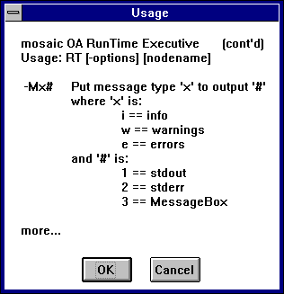
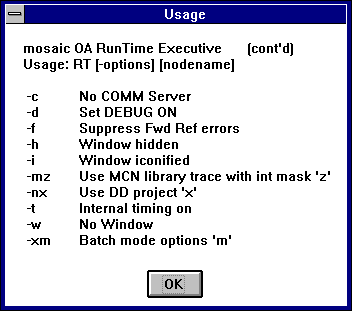
-V
Causes an information message like this to be
displayed.
RT
promptly exits after the
user clicks the OK button:
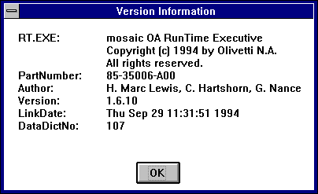
-w
Causes
RT
to come
up with no window at all. Useful for batch mode process-ing (works even
with no workstations (or Windowman tasks) in the network). See the
STR 21
statement.
-W
l,t,r,b[,s] Sets
RT
's window size, excluding title and menu
bars, to the integer coordinates given as "left,top,right,bottom". The
optional 5th number specifies how many pixels up from the bottom of the
screen the
status
area will include, where a zero value means no
status line (the default is 48). The status area is where
RT
will put its default status info if it
can’t find an OFB subroutine called
common:status_line
.
Default values for “left,top,right,bottom” are 0,20,640,460. The top setting of 20 positions RT’s window in the top-left corner of the display, reserving the correct amount of space for the window title bar. If a menu is added through the win_menu CSR, the correct amount of space is automatically added to the NT window, providing a 640 by 480 display,
-x$
Causes
RT
to come
up in "batch" mode, i.e., the flag 'batch_mode' in
common:rt_flags
is set, and the string "$" following
the -x is copied to the field
common:csr_string
. Note that if
the string contains whitespace (spaces and tabs) then it must be
enclosed in double quotes, and if it has quotes, e.g.
-x
”
Some quotes
”
then the string copied into
common:csr_string
will also have quotes.
OLE command line arguments for RT.exe
RegServer Resisters RT.exe as an OLE server and terminate.
Example: RT /RegServer
UnregServer Unregisters RT.exe as an OLE server and terminate.
Example: RT /UnregServer
Automation Starts Mosaic OA runtime as an OLE server (other arguments for RT.exe are used the same way) Example: RT /Automation -ndemo
The console window which is created when the development version of
RT
is invoked is used for display of
stdout
and
stderr
messages generated by
RT
. In addition, this window is used for
console input and output for the source level debugger. A buffer of 1000
lines is created automatically for this window, so previous messages can
be reviewed after they’ve scrolled off the display.
When developing, it’s a good idea to have a 1024 x 768 (or at least
an 800 x 600) display, as this allows the display of both the
RT
window and the console window.
While
RT
is running, you may force it
to exit by typing Ctrl-C twice from the console. (You’ll have to make
the console window the front window before doing this.) Typing Ctrl-C in
the
RT
window WILL NOT result in
RT
's termination.
Using Ctrl-C to exit
RT
has one
potential disadvantage. If the user (you) "logged in" or "signed on" via
systems administration functions which maintain active user information
via the Central Data Server, then breaking out of
RT
via Ctrl-C may leave the Central Data
Server files in a state indicating that the user is still logged on,
even though he/she isn't. This can cause the situation where the user
can't log on again because "the system" thinks he/she is already logged
on somewhere. The base system, as shipped from Spokane, attempts to
prevent this by allowing the user to log on again, even if the CDS files
indicate he/she is already logged on, provided the network node (i.e.,
the workstation id) has not changed.
+ 2541 $ 2542 # 2543 K 2544 Batch Mode RT
Mosaic OA supports running a "batch" (or unattended) version of
RT
for tasks like branch processing,
branch host reentry, etc. The special features of
RT
which make this possible include:
Command line options to make
RT
come up iconified, or with its window
hidden, or even with no window at all. The "no window" option allows
RT
to be run in a network with no
workstations at all!
A command line option to inform the OFB code (via a flag) that "batch mode" is desired, and pass an ASCII string to the application.
Basically, the RunTime Executive (
RT
)
is run somewhere in the network (even on a server), probably with no
window, or with a hidden window being sent to an online workstation
somewhere in the physical network. A good candidate for this is the
Supervisor's workstation (if any).
(Actually, during the development
and debugging phase, having a real window will prove advantageous to
identifying and correcting bugs.)
The batch
RT
should probably not try to
read from the keyboard, or do anything which blocks on keyboard input
(such as DISPLAY/COLLECT). Control of the batch
RT
is probably best done via COMM
statements communicating with a host computer, or with a supervisor
working at a workstation somewhere in the network.
The common:starting_point routine should determine whether to be a "batch" or "interactive" process via testing rt_flags. e.g.
IF (TESTFLAG(common:rt_flags,batch_mode)) THEN /* RT was run via -x command line option */ /* so save ASCII string options */ MOVE common:csr_string to myappl:save_batch_options etc. ELSE /* Normal path, for an interactive session */ etc. END IFOf course, the common:reset_key routine, and perhaps other routines as well, will need similar modification to support a "batch" mode. Even if the batch application is its own "application", it can easily access data from any other application, as this is one of the fundamental features (and strengths) of Pinnacle Plus. This allows a single Data Dictionary to be shared by both the batch and interactive "applications". This, in turn, allows both versions to share the same CDS data.
The range of variation possible for batch processing with
RT
is too wide to adequately cover in this
document. Suffice to say, a good programmer should be able to implement
almost anything using the technique described here.
For doing something like "host-initiated batch reentry", the following should be taken into consideration:
If the specific type of branch reentry requires terminal emulation, then the CRT's window must be sent to a workstation somewhere (currently, the CRT emulations don't support 'hidden' windows).
A new method of supplying the 'sysid' used by the host must be developed, as currently we use the workstation's node name. This, however, shouldn't pose much of a problem.
Some hosts may not allow a teller's data to come from two different places (i.e., the workstation where she/he is currently working, and the CPU where batch reentry is underway). Furthermore, this may pose application problems in insuring that the teller isn't updating records in the CDS at the same time as the branch reentry is trying to update those same records. Again, these are solvable, although non-trivial, problems.
If we are emulating an IBM 4700 product then the host must send the message to begin branch reentry via the PU, rather than the LU, channel. This may require a change on the host side.
+ 2545 $ 2546 # 2547 K 2548 Environment Variables
The current version of the RunTime executive optionally uses some environment variables, if necessary and if they exist.
MOADIR
Tells
RT
and
the other executables where the ‘distribution’ path starts for all the
Mosaic OA software and components.
MOAPROJ Specifies the directory in which the Mosaic OA ‘projects’ live. Each ‘project’ is itself a sub-directory.
MOACURPROJ
Tells
RT
and the other executables what project to operate upon if no -n command
line option was specified. This is the ‘default’ project.
RTDEVELOPER
Is used to disable a built-in delay of
the
RT
copyright screen. (This delay is
set at 3 seconds, and becomes annoying when
RT
is invoked repeatedly). This is an
optional variable.
CDSDDMODE
If set to ‘development’, will prevent
RT
from checking to see if the
DataDictionaries on the Server and Client are different (i.e., have
different revisions and/or dates).
+ 2549 $ 2550 # 2551 K 2552 Fonts in Mosaic OA
Mosaic OA supports both Pinnacle Plus fonts and Windows fonts. The Pinnacle Plus fonts (in Windows format) are provided as part of the standard distribution. They’re located in the directrory \moa\fonts . An installation option provides for automatic installation of these fonts on the NT workstation, or they can be installed through the Windows control panel. These fonts are a translation of Pinnacle Plus fonts to Windows format, and as with their Pinnacle Plus counterparts, it’s best to use the pre-defined sizes.
The help topic on the
ddproj.ini file
explains how to set up
Windows fonts so they’re available to
RT
.
True type Windows fonts may be scaled as needed, and will retain
acceptable performance and appearance. However, any Windows fonts which
aren’t true type fonts will be displayed only in the pre-defined sizes.
(That is, they won’t be scaled at run-time.)
In OFB, you specify the font you want by name using the statement. You specify the size in pixels via SETSIZE. The SETFACE statement is used to modify the appearance of the font you've selected. Remember, the OFB compiler won't allow an expression as the argument of SETFACE, so if you want to turn on two or more attributes at once, you must generate the appropriate hex value yourself. For example, making the text appear in bold italics. The attribute values for SETFACE are defined via symbols in \moa\lib\ofbdefs.h :
RT_NORMAL RT_GHOST
RT_INVISIBLE RT_OUTLINE
RT_BOLD RT_REVERSED
RT_UNDERLINE RT_SHADOWED
RT_ITALICS RT_TRANSPARENT
Note that by using the RT_INVISIBLE attribute with SETFONT and REDRAW you may cause descriptors, text, and fields to "disappear" from the screen, and later reappear via executing another SETFONT and REDRAW without the RT_INVISIBLE attribute.
RT
defaults to using the font 'La
Center' in size 12 for most informative messages.
Currently, the attribute RT_SHADOWED is not supported in conjunction with any other attributes. Make sure that SETFACE verbs only set RT_SHADOWED with no other attributes. Further, it doesn’t work with fonts that have to be resized. That is, a font which is available in sizes 12 and 14 cannot be displayed as shadowed when it’s used in size 13. (This doesn’t apply to Truetype fonts, as they’re not limited to a predefined set of sizes.)
RT_Transparent does not work with ghosted, italic or outlined fonts. Nor does it work with fonts that have been sized to something other than the system-installed size.
NOTE: Fields drawn via DRAWFIELD should not use proportional fonts. This is because the normal rectangular cursor and cursor positioning are based upon a fixed width (normally, with width of the letter 'N'). This is done for performance reasons. You may use a proportional font with DRAW MLFIELD, but in that case, the keystrokes are handled differently, the cursor is a slim vertical bar, and there is no edit pattern processing.
+ 2553 $ 2554 # 2555 K 2556 Color in Mosaic OA
The color model as implemented in Mosaic OA is a full color model
which is supported by the hardware of Microsoft Windows NT. The number
of simultaneously displayable colors is 16 if the hardware has 4 color
planes, and 256 if the hardware has 8 color planes. Each color may be
set from a palette of about 250,000 possible colors. Refer to the
SETFCOLOR
SETBCOLOR
, and
SETPALETTE
statements.
Using a pen and paper analogy the paper is the background, and the pen is the foreground. If the background and foreground colors are identical then the objects drawn will be "invisible".
The Mosaic OA system is based around a 256 color workstation. It’s
possible to set up all colors in the
.ini
file, and avoid the
use of the
SETPALETTE
verb. By designing
the application this way, all colors selections are located in one
place, and palette changes become trivial.
SCREEN objects have color (foreground & background) in their
definition. Each object rendered upon that screen uses the currently
selected color values. To give an object its own color (different from
the screen itself), the
SETBCOLOR
and
SETFCOLOR
statements are used. For
example, if some text is being rendered, and only the 'pen' in which the
text is drawn is to be changed, then a
SETFCOLOR
statement would be placed before
the
DRAWTEXT
statement. The
original foreground color would then be set back via another
SETFCOLOR
statement, unless you wanted the
next object rendered to be in that same color. In this case, setting the
background color also would cause just the background of the text itself
to be altered, not the background of the entire screen.
The
IBAE Screen Author
relieves the OFB programmer from having
to deal with the mundane task of setting colors, fonts, size, and face.
As each object is defined upon the screen, the
IBAE
gives the developer the option to
change any of these attributes. The screens that the
IBAE
generates have the proper SETxxx
statements to render each object in the desired way.
In the file
\moa\lib\ofbdefs.h
are some
#define
symbols which may prove useful for
insuring a consistent use of color throughout a customer system. These
will be useful to the OFB programmer who modifies screens via a text
editor rather than via the
IBAE
.
Human Factors research suggests that about 4 colors is the most that should appear on the screen at any one time ( other than for full-color pictures ). Beyond about 4 colors, the addition of more colors reduces the value of color as a characteristic of the display.
A potential problem with color screen design is the amount of time that may be spent in fine tuning colors, at the expense of the functionality of the application. Therefore, a few carefully thought out prototype screens at the beginning of a large project may cut a significant amount of time out of the overall schedule.
Cursor Color in Text Edit Fields
There are six colors involved when using Text Edit (TE) Fields in mosaic OA.
· Text and backbround colors when text is not selected. These are defined by OFB verbs SETBCOLOR and SETFCOLOR.
· Highlight colors when text is selected. These are defined on the Appearance tab of the Display Control Panel. These highlight colors have system color indexes that can be used in OFB set color verbs: COLOR_HIGHLIGHTTEXT and COLOR_HIGHLIGHT, see below.
· Cursor colors when at the left and right edges of a selection.
The cursor colors are somewhat arbitrary as I will attempt to explain.
Introduction
Mosaic OA runs on non-proprietary hardware and under the Windows operating system. Unlike its proprietary predecessors, this openess allows customers to take advantage of competitive pricing and features of an open hardware platform as well as the flexibility and interface opportunities available under an industry standard operating system. In an open environment some functionality, which was once controlled by proprietary hardware or software, is now managed by the Windows operating system. Colors displayed in text edit fields for selected and unselected text, selected and unselected background, and cursors to the right and left of selected text are one of these functions. This document explains how colors are managed under Windows and provides some insight into the problem of predicting cursor colors.
The System Palette
Windows maintains a separate system palette for each color displaying device. A separate palette, for example, is maintained for a VGA screen, SVGA screen, and a color printer. A system palette is a table in which each entry contains the red/blue/green combination for each displayable color. The default system palette contains the 16 standard colors of the VGA display and 4 other colors defined by Windows. These colors are organized with indices 0 through 10, and 246 through 255 in a fixed order. The color defined by table entry zero, for example, might contain the red/blue/green values for the color black.
Logical Palettes
Other than viewing its contents, application programs do not have direct access to the system palette. Instead, each application creates a logical palette, another table of red/blue/green values, for the colors used by that application. Applications cannot reference system palette entries to specify colors; they are permitted to reference only their own logical palettes. As a result, colors cannot be displayed until they have been “realized” by the operating system. Realization is the process Windows uses to map colors requested by an application to the colors available in the system palette for the requested device. Windows examines each requested color and attempts to find an entry in the system palette containing an exact match. If Windows finds a matching color, it maps the logical palette entry number to the corresponding system palette entry number. Black, for example, may be the fourth entry in an application’s logical palette and entry zero in the system palette. The realization of logical palette entry four will, therefore, point entry four to entry zero in the system palette. The application will always refer to color four in its logical palette when black is to be displayed.
If Windows does not find an exact match, it copies the requested color to an unused system palette entry before mapping the indices. Color realization is entirely under the control of Windows and, in addition, once this mapping is set, applications cannot override it. The application does not know, and can not control, which system palette entry is used for the unrecognized color. Mosaic OA color mapping takes place when RT first starts and color settings are read from the DDproj.ini file to create a logical palette.
Cursor Color
Cursor color is controlled entirely by Windows using the system palette. Windows determines the system palette entry number for the cursor color by using the inverse of the system palette entry number of either the displayed highlight color or a field’s background color, depending on the cursor’s current location.
There are two additional variables affecting cursor color. Highlight colors, the colors displayed when text is selected, are defined under Windows using the “Appearance” tab of the Control Panel’s “Display” function. Text and background colors displayed when text is not selected, however, are defined under RT using appropriate OFB verbs. As a result, cursor colors vary depending on whether the cursor is to the right or left of a highlight.
In addition, if one of the sixteen system palette default colors is not used for text and background, then the system palette entry selected for cursor color will be the inverse of whatever entry number Windows used when the background and text colors were realized. These entry numbers cannot be predicted and will depend on which system palette entries have been used when colors for previously run applications were realized.
Therefore, the only way to guarantee cursor color is to use one of the sixteen default system palette colors when defining text edit field background. Because these entry numbers are from the fixed, default system palette, the inverse entry number, and thus the cursor color, is known and always predictable.
System Colors
The following system color indexes are defined using the predefined constants found in the WINUSER.H file supplied with the Microsoft Windows Software Development Kit (SDK).
These constants can be used in the DDproj.ini file and are evaluated at runtime. This allows RT to track the current system color settings.
List of System Color Indexes (Winuser.h Definition Value Description)
COLOR_SCROLLBAR 0 Scroll-bar gray area
COLOR_BACKGROUND 1 Desktop
COLOR_ACTIVECAPTION 2 Active window caption
COLOR_INACTIVECAPTION 3 Inactive window caption
COLOR_MENU 4 Menu background
COLOR_WINDOW 5 Window background
COLOR_WINDOWFRAME 6 Window frame
COLOR_MENUTEXT 7 Text in menus
COLOR_WINDOWTEXT 8 Text in windows
COLOR_CAPTIONTEXT 9 Text in caption, size box,
scroll bar arrow box
COLOR_ACTIVEBORDER 10 Active window border
COLOR_INACTIVEBORDER 11 Inactive window border
COLOR_APPWORKSPACE 12 Background color of multiple
document interface (MDI)
applications
COLOR_HIGHLIGHT 13 Items selected item in a
control
COLOR_HIGHLIGHTTEXT 14 Text of item selected in a
control
COLOR_BTNFACE 15 Face shading on push button
COLOR_BTNSHADOW 16 Edge shading on push button
COLOR_GRAYTEXT 17 Grayed (disabled) text. This
color is set to 0 if the
current display driver does not
support a solid gray color.
COLOR_BTNTEXT 18 Text on push buttons
The following colors can be set in the "Appearance" tab of the "Display Properties" control panel:
3D Objects
color15=COLOR_BTNFACEcolor18=COLOR_BTNTEXT
Active Title Bar
color2=COLOR_ACTIVECAPTIONcolor9=COLOR_CAPTIONTEXT
Active Window Border
color10=COLOR_ACTIVEBORDERApplication Background
color12=COLOR_APPWORKSPACEDesktop
color1=COLOR_BACKGROUNDInactive Title Bar
color3=COLOR_INACTIVECAPTIONcolor19=COLOR_INACTIVECAPTIONTEXT
Inactive Window Border
color11=COLOR_INACTIVEBORDERMenu
color4=COLOR_MENUcolor7=COLOR_MENUTEXT
Message Box
color8=COLOR_WINDOWTEXTSelected Items
color13=COLOR_HIGHLIGHTcolor14=COLOR_HIGHLIGHTTEXT
Window
color5=COLOR_WINDOWcolor6=COLOR_WINDOWFRAME
+ 2557 $ 2558 # 2559 K 2560 Keyboard Related Information
in RT
Remapping the Function Keys
How the Keys Work in RT
KEYDEF Statement
+ 2561 $ 2562 # 2563 K 2564 Keyboard Function Key Layout
The Mosaic OA system makes thirty-three function keys available to the OFB programmer. These keys may be defined to generate specific keycodes, or to invoke OFB subroutines, via the KEYDEF statement. The keyboard layout is as follows:
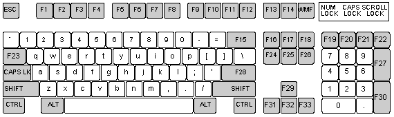
Note that the "Reset Key", usually called <RESET>, cannot be redefined (though it may be intercepted). Click for further information about "RESET or <ESC> Handling in Mosaic OA".
The OFB programmer may test for keyboard type by testing the flags
found in
common:rt_flags
.
See the compiled
LIST named
common:rt_flags
for the list of
bit names available to the OFB programmer.
$ 2565 # 2566 K 2567 Special Keys Active in RT
The following keys perform the specified action in the development
(not production) version
RT
. They
are
not
intended to be available in a production system! The output is
in ASCII form directed towards stdout (the terminal or vterm window from
which
RT
was executed).
Ctrl-A Displays FIELDs display list.
Ctrl-B Displays memory allocation statistics (mem_alloc)
Ctrl-D Toggles DEBUG flag on/off.
Ctrl-E Dumps the free list for display items
Ctrl-F Dump a FIELD structure (from inside datacollect)
Ctrl-G Dumps the status line display list
Ctrl-I Dumps the indirect stacks (from the STACK statements).
Ctrl-K Dump the current Function Key definitions
Ctrl-L Dump a list (in the form of a gl_list) or a list of current LOCAL variables
Ctrl-M Displays miscellaneous information about current font, color, RETVALs, INITs, etc.
Ctrl-N Dumps the screen navigation list.
Ctrl-O Dumps the currently active SETTIMER records.
Ctrl-P Displays all other display lists except status line.
Ctrl-R Displays the current transaction's fields list.
Ctrl-S Dump the Screen List.
Ctrl-T Toggle OFB subroutine TRACE mode, dumps flags and the transaction record stack.
Ctrl-W Dumps an OFB stack trace on the console.
Ctrl-X Allows hex/char dump of specified RAM area.
Ctrl-Y Toggles print debug mode.
Ctrl-Z Toggles SINGLESTEP flag on/off.
Ctrl-F1
Abort
RT
immediately, return to Windows NT.
+ 2568 $ 2569 # 2570 K 2571 Remapping the Function Keys
The function keys (F1-F33) may be redefined by the application (via the KEYDEF statement) to generate any key value, or to perform an OFB or C subroutine when hit. The function keys encompass almost all of the 'gray' keys on the keyboard.
Note: Set the keyboard translation mode with INIT 38 .
The CRT Emulations (IBM3270, etc.) use the same logical key naming
convention as shown in the previous chart, with the exception that they
consider the upper left-most key to be Function Key Zero (F0), and allow
it to be remapped. Otherwise, any function key has the same name to both
RT
and the CRT emulations (before
translation).
RT
itself requires that some function
keys be defined to generate internal keycodes which are used for cursor
movement, page up/down, local print, etc. The code values for these keys
are found in the file \MOA\LIB\OFBDEFS.H. The "Standard Distribution"
includes an OFB subroutine to define the minimum necessary set of these
function keys for each type of keyboard. If, for example, no key is
defined to generate the internal code RT_SEND, then data collect won't
work correctly. The freedom to remap almost any non-ASCII key does place
additional responsibility upon the Mosaic OA Developer.
Ordinarily,
RT
tries to prevent
suppression of the LOCALPRINT function (so that local print is available
everywhere in the system). In order for it to do this, some function key
should be designated to generate the internal code RT_PRINTSCREEN. This
should be function key F13. When
RT
's
low-level keyboard input sees a key which is mapped to generate
RT_PRINTSCREEN, it immediately invokes the OFB subroutine
common:local_print
. If, instead, a function key is set
up to run an OFB subroutine directly (which hopefully contains a
LOCALPRINT verb), then
RT
can't know about
it, and therefore can't preserve the function across a KEYDEF CLEAR
operation.
Function keycodes seen by the application code may have one of the shift modifiers attached. These are the hex values 0x100 through 0x400 and may be tested for via something like:
IF (LASTKEY == (RT_F22 + RT_CTRL)) THENThe values of the keys internally are given in a C header file named "ofbdefs.h" which is located in the directory \moa\lib. These values may be used by including the statement:
#include "ofbdefs.h"in the OFB source module. In fact, this is the only recommended way to use these keycode values. The currently defined symbols are shown below. Their values may be obtained by looking in \moa\lib\ofbdefs.h, although you shouldn't be concerned with their actual values except when debugging or decompiling OFB code.
# 2572 Key codes useful for data collect, menus, and picklists include:
# 2573 Key codes useful for the CALCULATOR include:
RT_DIVIDE
RT_MINUS
RT_MULTIPLY
RT_PLUS
Key codes useful for miscellaneous functions include:
RT_ALTPRINTSCREEN
RT_PRINTSCREEN
Key codes for the function keys include the symbols:
RT_F1 through RT_F33
The following bit values will be OR'ed with the above RT function keys if the function key was modified by a shift key.
RT_SHIFT 0x200
RT_ALT 0x400
RT_CTRL 0x800
The following bit value will be OR'ed with the digits 0-9 from the numeric pad to allow them to be distinguished from the digits on the top row of the QWERTY portion of the keyboard:
RT_NPAD 0x800
An example of an OFB routine to set up the function keys to a reasonable set of defaults is shown below. This routine would probably be called from the subroutine OFB:common:initialization_ only, just before setting up whatever default application dependent keys are desired. Both of these operations would be followed by a KEYDEF PUSH statement to set the default key mapping. This allows subsequent KEYDEF RESET statements to recover the standard default settings. Failure to do the KEYDEF PUSH could result in menus, picklists, or data collect not working as you might expect.
#include "ofbdefs.h"SUB common:key_defaults
KEYDEF F29,RT_UP
KEYDEF F31,RT_LEFT
KEYDEF F32,RT_DOWN
KEYDEF F33,RT_RIGHT
//=== Data entry keys
KEYDEF F15,RT_BACKSPACE
KEYDEF F23,RT_TAB // moves forwards one field
KEYDEF SF23,RT_BACKTAB // moves backwards one field
KEYDEF F24,RT_CLEARFIELD // used to clear field
KEYDEF SF24,RT_CLEARALL // used to clear all fields
KEYDEF F28,RT_ENTERFIELD // normal <RETURN> key
KEYDEF F30,RT_ENTERFIELD // <ENTER> key on numeric pad
KEYDEF F16,RT_INSERT
KEYDEF F17,RT_HOME // moves to 1st field on scr
KEYDEF F25,RT_END
KEYDEF F12,RT_SEND // exit datacollect
//=== Navigation keys
KEYDEF F18,RT_PAGEUP
KEYDEF F26,RT_PAGEDOWN
//=== Misc keys
KEYDEF F13,RT_PRINTSCREEN // so LOCAL PRINT will work
END SUB
+ 2574 $ 2575 # 2576 K 2577 How the Keys Work in RT
It is very important to understand how keyboard input works in Mosaic
OA.
First
, all keyboard input is channeled through
Windows NT.
RT
is never 'interrupted' when
a key is typed, even though it may seem like it. What really happens is
that
RT
'checks'
for a keyboard
or mouse event every time it does certain things, like execute a
DISPLAY, USE, CALL, DO, GOTO, or some of the CDS statements. This gives
the appearance of keyboard characters causing some immediate action.
Secondly
, if a function key is mapped to run some
OFB or C routine, then when that key is hit, and
RT
finally recognizes it, it is run
immediately. If for example the application was in data collect mode,
with some data collect screen frontmost and the cursor showing in one of
the fields, then if a function key subroutine is invoked, the data
collect OFB subroutine never knows the function key subroutine took
place — as far as it knows, it's still waiting for a keystroke. Since
the function key subroutine could have manipulated some of the fields
used by the active data collect subroutine (in this example), problems
could occur with the data collect. This may be a blessing or a curse,
depending upon whether you planned it that way or it took you by
surprise. But it is how things work in Mosaic OA, so you must take this
into consideration in designing and implementing your applications.
Regarding the keycodes themselves,
RT
looks only for the internal codes as defined in the include file
\moa\lib\ofbdefs.h
. It never looks for explicit
function key values. Consequently, it is useful for the OFB programmer
to know what the necessary internal codes are which should be defined
during initialization (generally in the OFB subroutine common:
initialization_only).
The <RESET> reset key, which is the upper left-most key, is not redefinable. Usually, it does not produce a keycode at all, but instead results in some action. This action is usually running the OFB subroutine common:reset_key, although it may be short-circuited by setting indirect object common:trap_reset to point to an OFB or C subroutine. That routine may prevent further processing of the <RESET> key, or allow normal processing to continue. See the topic " RESET or <ESC> Handling in Mosaic OA ".
In TMENUS the following keys are used:
0-9 makes a selection.
RT_PAGEUP take you to the previous menu, if any.
RT_ESC exits the menu system (unless intercepted).
In PICKLISTS the keys work like this:
<SPACEBAR> Moves the selection bar down.
RT_RIGHT Moves the selection bar down.
RT_DOWN Moves the selection bar down.
RT_TAB Moves the selection bar down.
or typing the first character of a non-unique selection.
RT_UP Moves the selection bar up.
RT_LEFT Moves the selection bar up.
RT_BACKTAB Moves the selection bar up.
or typing the first character of a non-unique selection.
RT_ENTERFIELD Makes a selection.
RT_SEND Makes a selection.
or typing the first the first character of a UNIQUE selection.
RT_ESC Causes immediate exit.
RT_END Causes immediate exit.
In PMENUS all keys previously defined for PICKLISTs are active and function identically, except:
RT_BACKSPACE takes you to the previous menu, if any.
RT_HOME takes you to the top-most menu.
RT_ESC exits the menu system.
During DATACOLLECT, the keys work like this:
RT_ENTERFIELD moves to the next field, unless validation fails.
RT_CLEARFIELD clears the current field.
RT_CLEARALL clears all the fields.
RT_TAB moves forward one field.
RT_BACKTAB moves backward one field. RT_BACKTAB also "escapes" an otherwise required field, without validation.
RT_HOME takes you to the 1st data-enterable field.
RT_PAGEDOWN takes you to the next screen, if any.
RT_PAGEUP takes you to the previous screen, if any.
RT_SEND exits data collect after rerunning all validations.
RT_ESC exits immediately.
RT_BAILOUT exits immediately.
'a' subtracts 12 hours (if possible) from the time in a TIME field
'p' adds 12 hours (if possible) to the time in a TIME field
'g' gets the current date or time in a DATE or TIME field
Control keys See the topic ” Special Keys Active in RT ”.
The HELP , MANUAL , CALENDAR and CALCULATOR functions use certain keys in special ways. For example, the Calculator needs function keys to generate the codes RT_PLUS, RT_MINUS, RT_MULTIPLY, and RT_DIVIDE. Click the specific verb/function for help.
+ 2578 $ 2579 # 2580 K 2581 TRANSACTIONS IN MOSAIC OA
A "transaction" in Mosaic OA is defined by a single OFB subroutine
which contains a
STARTTRAN
and
ENDTRAN
statement pair. Internally,
certain data structures are allocated and deallocated as transactions
are begun and finished, and some critical internal variables are
preserved in these data structures. (Of course, what a "transaction" is
to the runtime executive may not bear any resemblance to what a
"transaction" is to you!)
During the course of a "transaction", RT keeps track of every field
which was the target of a
DRAW
FIELD
,
DRAW MLFIELD
,
DRAW CHECKBOX
,
DRAW RADIOBUTTON
,
MOVE
,
LET
,
CDS EXTRACT
,
COMM
GET
, or
CRT GET
statement. At the end of the
transaction, the fields referenced (via the "fields list" kept
internally by
RT
on a per-transaction
basis) are processed according to their flags. That is, if a field's
AUTO_DUP flag is true, its storage area is copied to its dup area; If
the field's AUTO_CLEAR flag is true, then its storage area is cleared.
This "fields list" is also used by
CDS EXTRACT ALL
, and
CDS
APPEND ALL
.
A transaction may have zero or more data collect "screens" associated
with it. A "screen" is an object implemented via a subset of OFB,
containing mostly
DRAW
statements, which
is the subject of a
DISPLAY
statement
inside a transaction OFB subroutine.
By a convention derived during the development of Mosaic OA, OFB procedures defining transactions are named with a prefix, like 'trn_' or 'TRAN'.
Only a single transaction is active at any point in time. However,
transactions may be 'nested' as many levels deep as available memory (or
developer intellect) allows. It is allowable to 'call' one transaction
from another, to 'interrupt' one transaction with another via a function
key, or to 'link' two or more transactions into a larger single
transaction. With well-considered use of multiple screens via
DISPLAY
and
USE
statements, the need for a transaction
within a transaction may often be obviated.
Screen navigation within a multi-screen transaction is done via the <NEXT> or <PageDown> key and the <PREV> or <PageUp> key. You may navigate forward or backward through the datacollect screens. You will be prevented from running off the beginning or end of the display list. Each time you go back a screen, the logic (OFB code) pertaining to that display screen will be reevaluated to determine which screen is next displayed. Thus, if something on screen one determines if screen two or three will be displayed; if you go back from screen three to one, the decision to go forward to screen two or three will be remade when you hit the <NEXT> or <PageDown> key from screen one.
+ 2582 $ 2583 # 2584 K 2585 Validation Routines
Validations on fields are done via specifying a POSTVAL during the field definition process. Such validations may be via a picklist, or via an OFB subroutine, or via a custom C subroutine.
In all cases, validations return zero (0) if successful, and any non-zero value if unsuccessful. This is generally true of all functions and routines in the Mosaic OA system.
Picklist validations are specified by giving the name of a picklist header as the POSTVAL object. In this case, the contents of the field are compared, for the exact length of the field, with the first so many characters of the picklist. This is done without displaying the picklist. If a match is found, the validation returns zero, and the cursor will move to the next field. If the validation fails, the picklist is displayed on the screen and the user chooses one of the items, which is copied into the field after the picklist is removed from the screen and before the cursor moves to the next field.
OFB routines doing validations can test the field against whatever
criteria are necessary, and a
RETURN 0
statement executed if the field validates, or a
RETURN
(non-zero expression) statement
executed if the validation fails. A built-in symbol,
CURRENTFIELD
, allows a OFB subroutine to
work with whatever field is currently selected rather than having to
refer to it explicitly.
C subroutines may be used for validations, and in fact, many of the standard val routines (checksum, range check, etc.) are coded in C. Click to jump to Custom CSRs.
Non-successful validations should return (-1) if they wish
RT
to display an error message and ring
the bell, or (-2) if they wish
RT
to do
nothing. In either case, the cursor remains in the current field.
+ 2586 $ 2587 # 2588 K 2589 PICKLISTS & PICKLIST VALIDATION
During picklist selection the following keys work as described:
<SPACE> Moves the selection bar down.
RT_DOWN
Moves the selection bar
down.
RT_RIGHT
Moves the selection bar
down.
RT_TAB
Moves the selection bar
down.
RT_UP
Moves the selection bar up.
RT_LEFT
Moves the selection bar up.
RT_BACKTAB
Moves the selection bar
up.
RT_ENTERFIELD
Make a selection.
RT_SEND
Make a selection.
RT_ESC
Exits without making a
selection.
RT_END
Exits without making a
selection.
During picklist display, the selection bar can also be moved, and a selection can also be made, by typing the 1st character of a selection. If that character was unique, i.e., only one selection began with that character, then that selection is made. If the character is not unique, i.e., two or more selection began with that letter, then the selection bar is moved to the next selection starting with that letter.
Scrolling is supported in picklists, so there may be more selections
that will fit in the selection box being displayed. You may optionally
have a mouse selectable scrollbar appear as part of the picklist (see
IBAE
,
IMPPIC
).
Picklist validation has an option to display the picklist and have
the user make a valid selection. Validation may also be done without
automatically bringing up a picklist display upon the screen.
Proportional fonts look best, but can complicate the computation of the
box dimensions. Getting the box sized properly for a given picklist is
best done via the
IBAE
, although it can be
done by hand using a text editor, the
impic
and
impplb
utilities, and by trial and
error.
+ 2590 $ 2591 # 2592 K 2593 DATA COLLECT INFORMATION
In Mosaic OA, data collect refers to the behavior of
RT
when executing the
COLLECT
statement upon a screen which was
made visible by a
DISPLAY
statement.
When data collect is active (i.e.,
RT
is executing a
COLLECT
or
POPUP
statement) there will be a cursor
visible somewhere on the screen, provided that there is an unprotected
field on the screen. Normally, this will be a block-shaped cursor which
indicates that data collect is in
OVERTYPE
mode. When data
collect is in
INSERT
mode, the cursor appears as a slim
vertical bar. The key code
RT_INSERT
toggles data collect between
OVERTYPE
and
INSERT
mode
(usually the key labeled
<Insert>
is setup via a
KEYDEF
statement to generate the key code
RT_INSERT
).
The difference between insert and overtype mode is mostly only
apparent in non-calculator mode entry fields. Overtype mode means the
data characters are placed on top of the character underneath the
cursor. Insert mode means the data characters are placed where the
cursor is visible, and any characters under the cursor or to the right
of the cursor are shifted right one place. The default behavior is for
data collect to come up in overtype mode. This behavior may be changed
via the
INIT 9
statement. See the topic "
How the keys work in
RT
" for further discussion of
this subject.
RT
also has a 'field focus' feature,
which is enabled via the
INIT 35
, and
INIT 36
statements.
With this feature enabled, when the cursor enters a field, that field's
color is changed to the colors specified in the
INIT
statements mentioned above.
For Windows NT workstations, INIT 35 sets the background color and INIT 36 sets the foreground color to be used for the field focus highlight. Valid values are 0 through 255. The defaults are 999 which disables the field focus feature.
IMPORTANT NOTE: When the cursor is visible, data collect is sort of blocked waiting for a keystroke. The 'sort of' means that other events can be processed (like the arrival of an unsolicited host message), including the possibility that the key the user hits is bound to some OFB code via a KEYDEF statement. In this latter case, data collect will still be 'waiting' for a key during the time the OFB code is executing. This asynchronous behavior can be viewed somewhat like traditional 'interrupt' processing. If the OFB code does its own COLLECT or POPUP statement, then there may be two cursors visible at the same time. This is unfortunate, but since the first copy of data collect is still waiting for a keystroke, it has no way to know that some other OFB code gained control and is running asynchronously. If it could know this, it could turn off its cursor, but it doesn't, so it can't. Be careful...
+ 2594 $ 2595 # 2596 K 2597 EDIT PATTERNS & DATA ENTRY LOGIC
Edit Patterns for Amount Fields
Edit Patterns for Numeric Fields
Edit Patterns for Text Fields
Edit Patterns for Date Fields
Edit Patterns for Time Fields
$ 2598 # 2599 K 2600 Edit Patterns for Amount Fields
The edit pattern rules in this help topic apply to amount (calculator entry) fields of these types:
INTEGER and FIXED
Data Entry
Digit Symbols
Special Insertion Symbols
Decimal Insertion Symbols
Variable Length Patterns
Floating Insertion Symbols
Trailing Insertion Symbols
Error Displays
Edit Pattern Tables
As digits are typed, they enter the low order position of the field, causing any previously entered digits to ripple to higher order positions in the field. Lead zeros will be discarded. The pattern is used to display the contents of the field, but has no effect on the way digits fill the field.
Digit symbols identify locations where digits will (conditionally) be displayed, the conditions under which they will be suppressed (not displayed), and the fill character that will appear if the digit is suppressed.
Z Suppress unentered digits and lead zeros using " " fill.
* Suppress unentered digits using "*" fill.
9 Display unentered digits.
$ 2605 # 2606 Special Insertion Symbols
Special insertion symbols identify locations where characters other than digits will (conditionally) be displayed. If a digit is displayed in the first digit symbol position to the left of the special insertion symbol (we'll call this the "control symbol"), the special insertion symbol is displayed. If a digit is suppressed in the "control symbol" position, the special insertion symbol is suppressed, using the same fill character as the "control symbol" position.
, Display comma (","), or suppress.
. Display period ("."), or suppress.
Display space (" "), or suppress.
Note: Special insertion symbols preceding the first digit symbol will always be suppressed.
$ 2607 # 2608 Decimal Insertion Symbols
Decimal alignment will be done around the decimal insertion symbol. At most, one decimal insertion symbol may appear in an edit pattern. The decimal insertion symbol will always be displayed. Any digit symbols to the right of the decimal insertion symbol will be treated as "9".
The decimal insertion symbol is defined by the internal global variable "DecimalInsertion", and is set by the INIT 23 statement. Either of the following decimal insertion symbols may be used:
. Display period (".").
, Display comma (",").
Note: The character specified as the decimal insertion symbol will not be recognized as a special insertion symbol. Note also that the "BLANKEDIT" flag on a field definition may be used to suppress the decimal insertion symbol and the digits to the right of the decimal insertion symbol for empty fields.
$ 2609 # 2610 Variable Length Patterns
The number of digit symbols to the left of the decimal insertion symbol in an edit pattern (we'll call this "left pattern digits") may be different from the number of digits to the left of the implied decimal point in the field ("left field digits"). The only rule is that there must be at least as many "left pattern digits" as there are "left field digits". This facilitates the sharing of a single pattern by fields of varying lengths.
If "left pattern digits" is the same as "left field digits", then the entire pattern is used. If "left pattern digits" is greater than "left field digits", then the pattern will be shortened before it is used. The shortening process will remove all characters which would be suppressed if a full-length field were displayed.
The number of digit symbols to the right of the decimal insertion symbol in an edit pattern (we'll call this "right pattern digits") may be different from the number of digits to the right of the implied decimal point in the field ("right field digits").
If "right pattern digits" is greater than "right field digits", then the excess digit symbols on the right will contain "0". If "right pattern digits" is less than "right field digits", the excess "right field digits" will not be displayed. Note that during data collect, the digits typed enter the field starting with the low order "right field digit", independent of the pattern used . If "right pattern digits" is different from "right field digits", the display will not agree with the digits typed and may cause confusion.
$ 2611 # 2612 Floating Insertion Symbols
In an edit pattern, floating insertion symbols must be the leftmost symbols in the pattern. There are two types of floating insertion symbols. One specifies how negative values are distinguished from positive values. The other provides a single character currency symbol. There may be two floating insertion symbols in a pattern, one of each type. The rightmost suppressed characters are replaced with characters derived from the floating insertion symbols as follows:
+ Replace with "-" if negative, or with "+" if positive.
- Replace with "-" if negative, don't replace if positive.
$ Replace with soft defined currency symbol defined by INIT 24 statement.
If there are no suppressed characters, the derived characters are displayed to the left of the result. Note that the use of floating insertion symbols will increase the display length to allow room in cases where there are no suppressed characters .
$ 2613 # 2614 Trailing Insertion Symbols
In an edit pattern, a trailing insertion symbol must be the rightmost symbol in the pattern. It specifies how negative values are distinguished from positive values.
+ Display "-" if negative, "+" if positive.
- Display "-" if negative, " " if positive.
C Display "C" (credit) if negative, " " if positive.
D Display "D" (debit) if negative, " " if positive.
CR Display "CR" (credit) if negative, " " if positive.
DB Display "DB" (debit) if negative, " " if positive.
Note: The trailing insertion symbol will always occupy one (+,-,C,D) or two (CR,DB) positions at the right end of the resulting display.
An error display will be generated for any of the following reasons:
SIGN Field data is negative and the pattern doesn't support a sign.
LENGTH Left field digits exceeds left pattern digits.
An error display contains repetitions of the characters "?e" for the entire length of the display.
$ 2617 # 2618 K 2619 Amount Field Edit Pattern Tables
Amount Field Calculator Entry—Variable Length Patterns
Amount Field Calculator Entry—Digit & Special Insertion Symbols
Amount Field Calculator Entry—Floating Insertion Symbols
Amount Field Calculator Entry—Trailing Insertion Symbols
$ 2620 # 2621 K 2622 Amount Field Calculator Entry - Variable Length Patterns
$ 2623 # 2624 K 2625 Amount Field Calculator Entry - Digit & Special Insertion Symbols
$ 2626 # 2627 K 2628 Amount Field Calculator Entry - Floating Insertion Symbols
$ 2629 # 2630 K 2631 Amount Field Calculator Entry - Trailing Insertion Symbols
+ 2632 $ 2633 # 2634 K 2635 NUMERIC Fields
The edit pattern rules in this help topic apply to both left and calculator entry fields of the NUMERIC type.
Data Entry
Digit Symbols
Special Insertion Symbols
Variable Length Patterns
Numeric Field Edit Pattern Tables
For left entry, the first digit typed enters the high order position of the field, with successive digits typed entering successively lower order positions in the field. For calculator entry, each digit typed enters the low order position of the field, causing any previously entered digits to ripple to higher order positions in the field. The pattern is used to display the contents of the field, but has no effect on the way digits fill the field.
Digit symbols identify locations where digits will be displayed.
9 Display unentered digits.
Z Suppress unentered digits and lead zeros using " " fill.
N Suppress unentered digits using " " fill, display lead zeros.
x Display spaces for all characters (protection) (there is no cursor movement with this pattern unless an INIT 28 statement was executed with a non-zero argument).
X Display "X" for all characters (protection) (there is no cursor movement with this pattern unless an INIT 28 statement was executed with a non-zero argument).
$ 2640 # 2641 Special Insertion Symbols
Special insertion symbols identify locations where characters other than digits will (conditionally) be displayed. The display of a special insertion symbol is controlled by one or both of the first digit symbols to the left or the right of the special insertion symbol.
The following special insertion symbols are displayed if the first digit symbol to the left is displayed:
) Display ")", or suppress using " " fill.
The following special insertion symbols are displayed if the first digit symbol to the right is displayed:
( Display "(", or suppress using " " fill.
The following special insertion symbols are displayed if the first digit symbols to both the left and the right are displayed:
- Display "-", or suppress using " " fill.
/ Display "/", or suppress using " " fill.
, Display ",", or suppress using " " fill.
Display space " "
Note that a special insertion symbol for which no "control symbol" exists (e.g., a "(" following the last digit symbol) is meaningless, and will always be suppressed.
Also notice that because the "Z" is used to suppress leading zeros, it should not be used in left entry fields.
$ 2642 # 2643 Variable Length Patterns
The number of digit symbols in an edit pattern (we'll call this "pattern digits") may be different from the number of digits in the field ("field digits"). The only rule is that there must be at least as many "pattern digits" as there are "field digits". This facilitates the sharing of a single pattern by fields of varying lengths.
The effective pattern used is determined by starting at the left (left entry) or right (calculator entry) end of the pattern and continuing up to, but not including, the first character which would be suppressed if a full length field were displayed.
$ 2644 # 2645 K 2646 Numeric Field Edit Pattern Tables
Variable Length Patterns: Left Entry and Calculator Entry
Digit & Special Insertion Symbols: Left Entry and Calculator Entry
$ 2647 # 2648 K 2649 Numeric Field Left Entry - Variable Length Patterns
# 2650 Numeric Field Calculator Entry - Variable Length Patterns
$ 2651 # 2652 K 2653 Numeric Field Left Entry - Digit & Special Insertion Symbols
# 2654 Numeric Field Calculator Entry - Digit & Special Insertion Symbols
+ 2655 $ 2656 # 2657 K 2658 Text Fields
The following edit pattern rules apply to ASCII type fields.
Data Entry for Text Fields
Text Symbols for Text Fields
Special Insertion Symbols for Text Fields
Variable Length Patterns for Text Fields
Text Field Edit Pattern Tables
For left entry, the first character typed enters the high order position of the field, with successive characters typed entering successively lower order positions in the field. For calculator entry, each character typed enters the low order position of the field, causing any previously entered characters to ripple to higher order positions in the field. The pattern is used to display the contents of the field, but has no effect on the way characters fill the field.
Text symbols identify locations where text characters will be displayed.
A Suppress unentered characters using " " fill.
x Display spaces for all characters (protection) (there is no cursor movement with this pattern unless an INIT 28 statement was executed with a non-zero argument).
X Display "X" for all characters (protection) (there is no cursor movement with this pattern unless an INIT 28 statement was executed with a non-zero argument).
$ 2663 # 2664 Special Insertion Symbols
Special insertion symbols identify locations where literal characters will (conditionally) be displayed. The display of a special insertion symbol is controlled by one or both of the first text symbols to the left or the right of the special insertion symbol.
The following special insertion symbols are displayed if the first text symbol to the left is displayed:
) Display ")", or suppress using " " fill.
The following special insertion symbols are displayed if the first text symbol to the right is displayed:
( Display "(", or suppress using " " fill.
The following special insertion symbols are displayed if the first text symbols to both the left and the right are displayed:
- Display "-", or suppress using " " fill.
/ Display "/", or suppress using " " fill.
: Display ":", or suppress using " " fill.
. Display ".", or suppress using " " fill.
, Display ",", or suppress using " " fill.
Display " ".
Note: A special insertion symbol for which no "control symbol" exists (e.g., a "(" following the last text symbol) is meaningless, and will always be suppressed.
The decimal insertion character has no special meaning to a TEXT field, and will be treated as any of the other special insertion characters which may be used in a TEXT field.
$ 2665 # 2666 Variable Length Patterns
The number of text symbols in an edit pattern (we'll call this "pattern chars") may be different from the number of characters in the field ("field chars"). The only rule is that there must be at least as many "pattern chars" as there are "field chars". This facilitates the sharing of a single pattern by fields of varying lengths.
The effective pattern used is determined by starting at the left (left entry) or right (calculator entry) end of the pattern and continuing up to, but not including, the first character which would be suppressed if a full length field were displayed.
$ 2667 # 2668 K 2669 Text Field Edit Pattern Tables
Variable Length Patterns: Left Entry and Calculator Entry
Text & Special Insertion Symbols: Left Entry and Calculator Entry
$ 2670 # 2671 K 2672 Text Field Left Entry - Variable Length Patterns
# 2673 Text Field Calculator Entry - Variable Length Patterns
$ 2674 # 2675 K 2676 Text Field Left Entry - Text & Special Insertion Symbols
# 2677 Text Field Calculator Entry - Text & Special Insertion Symbols
+ 2678 $ 2679 # 2680 K 2681 DATE Fields
The following edit pattern rules apply to both left and calculator entry fields of the DATE type field.
Data Entry
Date Symbols
Special Insertion Symbols
Date Field Edit Pattern Tables
Date fields are always stored as 8 digit fields. There are, however, three sub-fields within the date field. The first 4 digits are the year, the next 2 digits are the month, and the last 2 digits are the day. Date fields may be defined to have a length of 8 or 6, and if the length is 6 then the century (currently 1900) is automatically inserted during data entry. The edit pattern is used to specify where and how these three sub-fields are displayed.
During data entry, the pattern is used to determine how data is entered into these three sub-fields. For example, if the edit pattern for a left entry date field displays the month first, the first two digits entered will go into the month sub-field. If the pattern displays the day first, the first two digits entered will go into the day sub-field.
Since during data entry, partially entered dates may be invalid, patterns which perform conversions are not supported. Patterns that perform sub-field transpositions are supported for data entry because each digit typed maps into a single digit location in the field.
When a date is entered, data entry will automatically fill in unentered digits and test for a valid date before invoking any field validation routine attached to the field.
Note: Typing a 'g' character in a date field will GET the current system date (i.e., today's date).
# 2684 Date Symbols
Date symbols identify the locations where, and specify how, the year, month, and day, will be displayed.
The following date symbols are supported for data entry as well as display since they merely perform sub-field transpositions. During data entry, unentered digits will be suppressed using
" " as a fill character:
mm Two digit month (must be 2 consecutive).
dd Two digit day (must be 2 consecutive).
yy Two digit year (must be 2 consecutive).
yyyy Four digit year (must be 4 consecutive).
The following date symbols are supported for display, but not for data entry, since they perform conversions:
jjj Three digit Julian day (must be 3 consecutive).
M Month, alphabetic (1-9 consecutive).
D Day of week, alphabetic (1-9 consecutive).
Consecutive occurrences of an alphabetic date symbol indicate how many leading letters of the alphabetic month or day of week should be displayed. For example, MMM will display the first three letters of the month. If the number of consecutive occurrences of an alphabetic date symbol exceeds the length of the data to display, the excess date symbols will be compressed out of the display. For example, DDDDDDDDD will display "Monday" rather than "Monday ".
# 2685 Special Insertion Symbols
Special insertion symbols identify locations where literal characters will (conditionally) be displayed.
The following special insertion symbols are displayed if the first date symbols to both the left and the right are displayed:
/ Display "/", or suppress using " " fill.
. Display ".", or suppress using " " fill.
- Display "-", or suppress using " " fill.
, Display ",", or suppress using " " fill.
Display " ".
$ 2686 # 2687 K 2688 Date Field Edit Pattern Tables
# 2689 Date Field Left Entry
# 2690 Date Field Calculator Entry
# 2691 Date Field Display Only
$ 2692 # 2693 K 2694 TIME Fields
The following edit pattern rules apply to both left and calculator entry fields of the TIME type field.
Data Entry
Time Symbols
Trailing Insertion Symbols
Special Insertion Symbols
Edit Pattern Tables
Time fields are always stored as 6 digit fields, but may be defined to have 4 or 6 digits. There are, however, three sub-fields within the time field. The first 2 digits are the hour (24 hour clock), the next 2 digits are the minute, and the last 2 digits are the second. The edit pattern is used to specify where and how these three sub-fields are displayed.
The characters 'p' and 'a', if typed when the cursor is in a TIME field, will cause the time to have 12 hours added or subtracted, respectively. This will only be done if it makes sense, of course, and entering two 'p's in a row will cause at least the second one to produce an error bell. If the TIME field has an edit pattern ending with 'aa', then the display will alternate between PM and AM when the 'p' and 'a' keys are hit.
Time fields are really more properly considered to be time-of-day fields, as they aren't expected to ever hold more than 23 hours, 59 minutes, and 59 seconds. When a time field is entered, data entry will automatically fill in unentered digits and test for a valid time before invoking any field validation routine attached to the field.
Note: Typing a 'g' character in a time field will GET the current time-of-day and insert it into the field. Typing an 'a' character will subtract 12 hours from the time (if possible), and typing a 'p' character will add 12 hours to the time (if possible).
Time symbols identify the locations where, and specify how, the hour, minute, and second, will be displayed.
The following time symbols are supported for data entry as well as display. During data entry, unentered digits will be suppressed using " " as a fill character:
hh Two digit hour - (must be 2 consecutive chars).
mm Two digit minute (must be 2 consecutive chars).
ss Two digit second (must be 2 consecutive chars).
$ 2699 # 2700 Trailing Insertion Symbols
In a time edit pattern, trailing insertion symbols must be the rightmost symbols in the pattern. They specify how morning and afternoon are displayed for a 12 hour clock.
aa Display "AM" or "PM" (must be 2 consecutive chars)
Notes: Time will be displayed in 24 hour format if this option isn't used.
The trailing insertion symbol will always occupy two positions at the right end of the resulting display.
$ 2701 # 2702 Special Insertion Symbols
Special insertion symbols identify locations where literal characters will (conditionally) be displayed.
The following special insertion symbols are displayed if the first time symbols to both the left and the right are displayed:
: Display " : ", or suppress using " " fill.
Display " ".
$ 2703 # 2704 K 2705 Edit Pattern Tables for Time Fields
TIME Field Left Entry
TIME Field Calculator Entry
+ 2706 $ 2707 # 2708 K 2709 MATH & EXPRESSIONS
# 2710 Expressions & Conditions
The table of operators, shows the valid OFB operators and their precedence. All binary operators associate left-to-right. The unary operators (! ~ -) associate right-to-left. Note that there are no assignment operators, as assignment within an expression is not legal in OFB.
Parentheses should be used to insure proper order of evaluation in cases where there might be doubt about the order in which things happen. The C precedence rules are known to be flawed.
During the process of compilation, expressions and conditional expressions are converted from infix notation to postfix (or reverse Polish notation). This removes all parentheses and puts the operators and operands in the proper order for easy and efficient evaluation by the OFB runtime executive.
Expressions involving ASCII-type fields and string constants with the logical operators (equal, less than, etc.) are evaluated as string comparisons if possible. In expressions containing non-string constants and/or arithmetic or bit-wise or shift operators, all operands are promoted to 32-bit integers or 21-digit decworks prior to evaluation. This means that the maximum value that can be used in an arithmetic expression is approximately one million trillion 999,999,999,999,999,999,999.0).
Bit-wise operators (&, |, ^) and shift operators (<<,
>>) only work with INT type fields, integer or hex constants, or
the built-in variables
RETVAL
,
CDSRETVAL
,
PRTRETVAL
,
COMMRETVAL
, or
LASTKEY
. Exponentiation is presently not
implemented. (For exponentiation, a C subroutine will need to be
written.)
$ 2711 # 2712 K 2713 Math Operators, Reference Table
+ 2714 $ 2715 # 2716 K 2717 Fixed-Point Decimal Math Package
Mosaic OA has a high-performance, high-precision math capability for use with FIXED type fields and non-integer numeric constants (like 123.45) with the following features:
Up to 21 digits, which is enough to multiply the US National debt by almost a million (fortunately). :-)
Absolute precision, as numbers are stored in decimal, not converted to binary or some other number base.
Full control at the OFB level of how rounding or truncation is handled (see the INIT 22 statement).
This package uses a unique representation for fixed-point decimal numbers which we call a DECWORK and which allows up to 21 digits. A structure defining the DECWORK object is found in the <decmath.h> #include file, along with various #define symbols useful for C programmers.
Fields of type FIXED (i.e., fixed-point decimal) have a DECWORK as their storage and dup areas. Since the DECWORK structure has both 'length' and 'places' values, the field's LENGTH gives the maximum desired number of digits.
For C programmers, a full set of conversion routines for converting between DECWORKs and other variables (like INTs or FLOATs) is available and is documented in the C.guide document in c_notes.txt document in the \moa\doc .
+ 2718 $ 2719 # 2720 K 2721 Math Error Handling
When math errors happen during the execution of OFB code,
RT
will attempt to give control to the
application, if possible. If not, then
RT
will generally ignore the error and continue execution. Examples of such
errors include:
Overflow/Underflow
Divide by zero
Illegal operation (e.g., >> on ASCII arguments)
If an OFB routine named
"
common:bad_op_proc
" exists, then it will
be given control upon attempted execution of an illegal math operator.
If this routine does not exist, then
RT
will produce a standard error message similar to what would be produced
via a
MSGBOX
statement.
+ 2722 $ 2723 # 2724 K 2725 RESET OR <ESC> HANDLING IN MOSAIC OA
Reset Handling Diagrams
The RESET key, which on the keyboard is the <ESC> key in the
upper left corner, is treated differently by
RT
than are the other keys. Normally, the
RESET key is treated as an "interrupt" which triggers some particular
actions — i.e., it isn't just put into the keyboard typeahead buffer as
are all the other keys.
Since Windows NT won’t really interrupt us when a key is pressed,
RT
has to fake it so that the application
sees RESET as an asynchronous event. This is done by checking, many
times each second, for a key being just typed.
RT
does this check every time it executes
an OFB subroutine (via
CALL
,
PRINTDOC
), a
GOTO
,
DO
,
CALL
, some
CDS
statements, a DPRINT statement.
RT
also checks from within its ‘message
loop’ while it is waiting for a keyboard character or for a no-wait I/O
operation to complete (printing or hostcomm).
When a RESET is seen,
RT
first tries to
run the OFB or C subroutine referenced by indirect field
common:trap_reset
. This is done
"
asynchronously
", i.e., whatever OFB subroutine was running is
"
interrupted
". If the field does not exist, or is empty, it is
ignored and the interrupted procedure is resumed — otherwise the
procedure it names is executed and
RT
looks at its return value. If the value is non-zero, then
RT
assumes the trap_reset routine has done
all the work that the application wants to allow to be done at this
point and resumes the interrupted procedure. This provides a simple
mechanism to trap and ignore RESET at just about any point.
If the trap_reset routine returns zero, or was not invoked, some
internal housekeeping is done including terminating the current
transaction (if any), purging the keyboard typeahead buffer, and
resetting the stack pointer (via
longjmp
()). After this work is done,
RT
resumes execution "at the top" by
executing the routine
ofb:common:reset_key
if it exists, and routine
ofb:common:starting_point
if it does
not.
There is an internal flag (
ESC_lock
)
managed by
RT
which, when set to non-zero,
causes the RESET key to be treated just like any other key. That is, it
is placed in the typeahead buffer (as RT_ESC). There are two subroutines
in the custom C subroutine library:
f_orsklock()
f_orskunlk()
which set and reset, respectively, this flag. If this flag is set,
the data collect (via the
COLLECT
verb) will see RESET as a keystroke, and will return with
LASTKEY
set to
RT_ESC
. Data collect will have been
terminated at the point where the key was seen, so all the fields may
not have been collected into.
There are several places in the system where RESET is intercepted. In the Calculator, Calendar, Help, and in picklists, RESET simply causes an exit of that current function. While printing, or communicating with a host via the ACI, RESET simply terminates the current I/O operation. In none of these cases is the normal RESET logic as described in the above paragraphs invoked.
The
RESET
verb, without any operands,
produces results just as though the RESET key was hit at that point. The
statement following the RESET will never be executed, as control reverts
to the "top level" as described above. A qualified RESET verb, with one
of the reserved-word operands (
TRAN
,
PRINT
,
COMM
,
etc.) does not result in control being taken away. That is, execution
continues with the statement following
RESET PRINT
, or whatever.
Due to the highly recursive nature of
RT
, it is possible for OFB subroutines to
recursively invoke other OFB subroutines to such a level that the system
stack grows to the limit of virtual memory. In this case,
RT
is terminated rather ungraciously. It
generally takes many hours and many hundred transactions before this is
likely to happen. Use of the RESET key, or the
RESET
verb with no operands, causes the
stack to be effectively reset back to a semi-empty state which will
guarantee the prevention of this problem.
Note:
In the development (Fat) version of
RT
, the Ctl-W debugging key will produce a
listing of the current OFB subroutine execution ‘trace stack’ on the
console.
+ 2726 $ 2727 # 2728 K 2729 ON-SCREEN GRAPHS, CHARTS & PIE CHARTS
Initialization List
The
chart
program is a stand-alone C program with an
interface ("Custom C" routine) in
RT
for
use in Mosaic OA applications. When the 'chart data' command is issued
the chart interface function invoke chart as a separate process in its
own window.
To use the chart interface do the following steps:
1. Create a compiled LIST to initialize the chart.
2. Create a compiled LIST to create the data set(s).
3.
Do a
CALL CSR:chart CHART_INIT
,
LST:initialization list name. See the RETVAL table below for possible
errors returned.
4.
Loop doing:
CALL
CSR:chart CHART_DATA, LST:data_set_list_name One call for each DATA set.
If each data set will be using different fields, then each data set may
be included in one list as separate members and the call need be made
only once. See RETVAL table for possible errors returned.
5.
Do a final
CALL
CSR:chart CHART_PLOT to kick-off the chart program. The CHART will
become a separate process. See the RETVAL table for possible errors
returned.
WRONGOPERANDS - Incorrect number of operands sent to CSR:chart
OUTOFORDER - CSR:chart called out of order - INIT DATA PLOT
WRONGARG - Wrong argument type(s) passed to CSR:chart
BADMEMBERFORMAT - Invalid list member format
BADLISTOBJ - Invalid object in member of list
BADELEMENTCOUNT - Incorrect number of elements for list member
OBJNOTFOUND - Object not found in data dictionary
ERRPWRITE - Can't write on pipe
ERRPOPEN - Can't open pipe
ERREXEC - Unable to exec program chart
OUTOFPROCESSES - System out of processes
MALLOCFAILED - Error allocating memory buffer
MATHOVERFLOW - Math overflow resulted in bad data for chart
$ 2730 # 2731 Initialization List
LIST application:listname
member1
: CHART_VERBOSE level
member2
: CHART_INIT_1 x,y,w,h
member3
: CHART_INIT_2 f,a,s,C,c,k,
member4
: CHART_INIT_3 m,M,T,p,g,l,F
member5
: CHART_TITLE title
member6
: CHART_VNAMES name1,name2,name3,....,nameN
member7
: CHART_SNAMES name1,name2,name3,....,nameN
member8
: CHART_TOPTXT justify, text
member9
: CHART_BOTTXT justify, text
member10
: CHART_LEFTTXT text
END LIST
Note: All member items with the exception of the chart type (CHART_INIT_1 ... CHART_LEFTTXT) may be a descriptor, a field or a string constant.
# 2732 member1 (optional):
CHART_VERBOSE Specifies verbose mode wanted in stand alone chart program. This should be the first member of your initialization list when used. It’s only useful for debugging, and should never be used in a production system.
level This specifies how much debug detail will be displayed. The higher the number, the more detail.
# 2733 member2:
CHART_INIT_1 Specifies that this is the 1st initialization member.
x Specifies the left edge of the chart window.
y Specifies the top edge of the chart window.
w Specifies the width of the chart window in pixels.
h Specifies the length of the chart window in pixels.
# 2734 member3:
CHART_INIT_2 Specifies that this is the 2nd initialization member.
f Font, the WindowMan font number or NT font name.
a Attributes, WindowMan "face".
s Font size in points.
C WP6 foreground color.
c WP6 background color.
k WP5 color.
# 2735 member4:
CHART_INIT_3 Specifies that this is the 3rd initialization member.
m Matrix, 0 = normal, 1 = inverted.
M Menus, 0 = MENUS_ON, 1 = MENUS_OFF, This specifies whether the pull down menus that allow the chart to be modified will be displayed.
T Type of chart, 1 = COLUMN, 2 = LINE, 3 = SCATTER, 4 = PIE.
p Pattern, 0 = NORMALSHADE, any other value will be put in the pattern shift variable and will alter the shading accordingly.
g Grid, 0 = GRID_ON, 1 = GRID_OFF.
l Legend, 0 = LEGEND_ON, 1 = LEGEND_OFF.
F Format, 1 = NORMAL, 2 = COMMAS, 3 = DOLLAR,
4 = DOLLARCOMMAS, 5 = PERCENT.
# 2736 member5 (optional):
CHART_TITLE Specifies that this is the title.
title Title string which may be a descriptor, a field or a string constant. The title string is centered in the horizontal bar at the top of the screen and describes the type of screen this is.
# 2737 member6 (optional):
CHART_VNAMES Specifies that this is the value names member.
name.1 ... name.N These are the names of the values.
# 2738 member7 (optional):
CHART_SNAMES Specifies that this is the set names member.
Name1 ... Name.N These are the names of the sets.
# 2739 member8 (optional):
CHART_TOPTXT Specifies that this is a top text member.
justify 0 = JUST_CENTER, 1 = JUST_LEFT, 2 = JUST_RIGHT specifies whether center, left, or right justification of the text desired.
text This is the text that will be displayed at the top of the chart. There may be more than one top text member if more than one line of text is desired on the top of the chart. The lines will appear in the same order on the chart as the members appear in the list.
# 2740 member9 (optional):
CHART_BOTTXT Specifies that this is a bottom text member.
justify 0 = JUST_CENTER, 1 = JUST_LEFT, 2 = JUST_RIGHT This specifies whether center, left, or right justification of the text is desired.
text This is the text that will be displayed at the bottom of the chart. There may be more than member if more than one line of text is desired on the one bottom text bottom of the chart. The lines will appear in the same order on the chart as the members appear in the list.
# 2741 member10 (optional):
CHART_LEFTTXT Specifies that this is a left text member.
text This is the text that will be displayed at the left of the chart. There may be more than one left text member if more than one line of text is desired on the left of the chart. The lines will appear in the same order on the chart as the members appear in the list.
# 2742 DATA SET LIST
LIST application:listname MEMBER value1, value2, ... valueN : END LISTWhere the values for the MEMBER(s) are:
value1 ... valueN Specifies the values to be displayed in the chart. Each member should contain the number of values contained in one data set. If more than one data set is to be displayed using different fields, then additional members may be added to this list, one for each set. The values may be fields, integer constants or fixed point constants.
NOTES
The chart program must be in the operator’s current PATH.
The chart.h file must be in \moa\lib and must be #included in the compiled LIST file and by the ofb code that calls csr:chart.
A chart must be completed (initialization, data, & plot) before a new chart may be initialized.
The number of decimal places will be determined from the first member of the first CALL CSR:chart CHART_DATA.
EXAMPLE
LIST common:chart_init_list/* Optionally define Verbose value */
MEMBER CHART_VERBOSE 9
/* All INITs are required */
MEMBER CHART_INIT_1 100,100,FLD:field1,DSC:descriptor1
MEMBER CHART_INIT_2 7,0,12,FLD:wp6fcolor,\ FLD:wp6bcolor,DSC:wp5color
MEMBER CHART_INIT_3,\
0,MENUS_ON,COLUMN,NORMALSHADE, \
GRID_ON,LEGEND_ON,NORMAL
/* Optionally define Value Names */
MEMBER CHART_VNAMES,FLD:operator_name,"Sally","John"
/* Optionally define Set Names */
MEMBER CHART_SNAMES,"1989","1990","1991","1992"
/* Optionally put Text above chart */
MEMBER CHART_TOPTXT,JUST_CENTER,\
"Transactions per Hour"
/* Optionally put Text below the chart */
MEMBER CHART_BOTTXT,JUST_CENTER,\
"More chart information"
/* Optionally put Text to the left of chart */
MEMBER CHART_LEFTTXT,"Left Text"
END LIST
LIST common:chart_data_list
/* Data as INTs */
MEMBER 10,20,30
MEMBER 20,30,40
/* Data in Fields */
MEMBER teller:data1,common:data1,teller:data2
/* Data as INTs & in Fields */
MEMBER 10,20,teller:data
END LIST
SUB common:example
STARTTRAN
/* Initialize Chart */
CALL CSR:chart, CHART_INIT,common:chart_init_list
IF (REVAL == 0) THEN
/* Feed Data to Chart */
CALL CSR:chart,CHART_DATA,common:chart_data_list
IF (RETVAL == 0) THEN
/* Exec the Chart Program */
ENDIF
End IF
END TRAN NOWAIT
END SUB
+ 2743 $ 2744 # 2745 K 2746 MOSAIC OA BUILT-IN CALENDAR FUNCTIONS
The CALENDAR verb provides an on-line calendar, which is accurate from the year 1 to the year 9999. (This includes the 11 day adjustment necessary for September, 1752.)
The calendar may be positioned on the screen by passing the correct row and column parameters when the calendar is invoked. The box type used by the calendar is also determined by a parameter passed to the calendar function. (Certain combinations of row, column and box type, in conjunction with the currently selected font and size, may cause the calendar to move off the edge of the screen. When this happens, an error message will be displayed, and the call to calendar will fail.)
The font and colors used by the calendar will be the current font and
color selection as set from
RT
.
(Proportional fonts should be avoided, as they will cause alignment
problems.)
When the calendar is initially displayed, its cursor will highlight the date which is in the current data collect field. If a date cannot be obtained from the current field, the calendar's cursor will highlight the current date.
The cursor may be returned to the current date at any time by pressing the RT_HOME key. The RT_LEFT key moves the cursor to the previous day, the RT_RIGHT key to the following day, the RT_UP key to the previous week, and the RT_DOWN key to the following week. Similarly, the RT_PAGEUP key moves the cursor to the previous month, and the RT_PAGEDOWN key moves the cursor to the following month.
The cursor may also be moved a given number of days, weeks, months or years by typing a '+' or RT_PLUS to move forward, or a '-' or RT_MINUS to move backward. After selecting the direction, the number of days, weeks, months or years may be entered, followed by a 'd' (days), 'w' (weeks), 'm' (months) or 'y' (years).
For example, to move the cursor 3 years in the past, type:
-3y
Or, to advance the cursor by 120 days:
+120d
The default operation is '+'. Therefore, in the above example, the same result could be obtained without typing the '+'. A default quantity of 1 is also established. To illustrate:
Entry Result
d Forward 1 day.
-m Back 1 month.
90d Forward 90 days.
The bottom line on the calendar display indicates the operation being performed, or the operation just completed.
The RT_END key or the '=' key will allow the calendar for a specific month and year to be selected. The RT_BACKSPACE may be used to correct entry errors.
The RT_INSERT key may be used to exit the calendar, and to move the highlighted date to the current field, if the current field is a DATE field. RT_ESC or the SPACEBAR key may be used to exit the calendar and leave the current field unchanged.
The 'g' key ( get ) will move the calendar's cursor to the date contained in the current field. The RT_ALTPRINTSCREEN will print a one-year calendar which encompasses the month that is displayed.
The keys used/recognized by the CALENDAR function are:
RT_HOME Move cursor to current date.
RT_LEFT Move cursor back one day.
RT_RIGHT Move cursor forward one day.
RT_UP Move cursor back one week.
RT_DOWN Move cursor forward one week.
RT_PAGEUP Move cursor back one month.
RT_PAGEDOWN Move cursor forward one month.
RT_PLUS Move cursor forward the entered number days, weeks, months or years.
RT_MINUS Move cursor backward the entered number of days, weeks, months or years.
RT_END Allow selection of month and year.
RT_CLEAR Clear entry and start over.
RT_BACKSPACE Correct entry errors.
RT_INSERT Move the date under the cursor to the current field (if the current field is a usable date field).
RT_ESC Exit the calendar.
RT_ALTPRINTSCREEN Print a one-year calendar which includes the displayed month.
SPACEBAR Same as RT_ESC.
G Get the date from the current field, move the cursor to that date.
+ Same as RT_PLUS.
- Same as RT_MINUS.
= Same as RT_END.
Note #1 Don't use proportional fonts in the CALENDAR verb!
Note #2 The explanation of key definitions in the CALCULATOR section also applies to the calendar!
$ 2747 # 2748 K 2749 MOSAIC OA BUILT-IN CALCULATOR FUNCTIONS
A calculator is available through the CALCULATOR statement in OFB. The calculator may be used to perform basic addition, subtraction, multiplication, division and percentages. The total from these calculations may optionally be moved to the current data collect field, provided that the current field is a NUMERIC, FIXED or INT field, and that the calculator's result will fit (or can be rounded to fit) into the field.
The calculator may be positioned on the screen by passing the correct row and column parameters from OFB. The box type used by the calculator is also determined by a parameter passed to the calculator function. Remember, however, that certain combinations of row, column and box type, in conjunction with the currently selected font and size, may cause the calculator to move off the edge of the screen. When this happens, an error message will be displayed, and the call to calculator will fail.
The font and colors used by the calculator will be the current font
and color selection as set from
RT
.
(Proportional fonts should be avoided, as they will cause alignment
problems.)
Two entry modes are supported by the calculator. The monetary mode provides a fixed, two digit decimal entry format. Totals produced in this mode will be rounded to the nearest penny. (A '$' in the entry window indicates that the calculator is in monetary mode.) The calculator will begin operation in monetary mode when CALC_DOLLAR is given as the calculator's mode parameter. (CALC_DOLLAR and other calculator values are defined in ofbdefs.h.)
When the 'M' key is pressed, the entry mode will toggle from monetary to floating point. Floating point mode allows the decimal point to be typed at any point within an entry. The total will remain in floating point format, and will only be rounded when necessary to allow it to fit in the calculator display. (An 'F' in the entry window indicates that the calculator is in floating point mode.) The calculator will begin operation in float mode when CALC_FLOAT is given as the calculator's mode parameter.
The calculator's total is adjusted to the nearest penny when in
monetary mode. (The adjustment type is determined by
RT
's
TruncateFlag
.)
Because of this, repetitive division, percentages, and multiplication by
fractions should be performed in float mode. Also note that the total
calculated in float mode
will not
be changed
internally when the calculator is switched back to monetary mode! This
means that digits to the right of the decimal may still be present
internally, but not displayed. (They will again be displayed when the
calculator is switched back to float mode.)
RT
's decimal insertion character may be
changed through the INIT verb. The calculator recognizes this character
as its decimal point, so that it may be adjusted for foreign
applications. The edit pattern used by the calculator in monetary mode
may also be changed through the INIT verb. When the calculator's edit
pattern is changed, make sure that it contains only one decimal
insertion character, and that the decimal insertion character separates
off two decimal places. Similarly, the '$' that is displayed when in
monetary mode may be changed by setting
RT
's money sign character. (See
INIT
verb topic for more information.)
Each time an operation is performed, the total will be updated and displayed. (The total is displayed in the total window on the calculator, and is followed by a 'T'.) Each entry is added to the calculator's 'tape', and is displayed above the total, along with the operation that was performed on the entry.
An option allows the calculator tape to be stored in an
RT
field, so that it may be journaled and
recalled. Three optional parameters,
savefield
,
loadtape
and
savetape
, must be passed
to the calculator to activate this option.
savefield
is the name of an
RT
field which will receive the calculator
tape. This field should be an ASCII field, which is large enough to hold
the longest tape that must be saved
. (Each entry line in the tape
will occupy approximately 10 bytes of the field's storage area.)
When
savefield
is passed to the calculator, a
"thermometer" line will be displayed at the bottom of the calculator,
giving an indication of the amount of field space that remains.
The loadtape parameter determines when the calculator will load the tape from the field. The tape will be loaded automatically if CALC_LOAD_ON_ENTRY is given for this parameter. It will be loaded when the RT_F2 key is pressed if CALC_LOAD_ON_F2 is used, and it will be loaded in both cases when CALC_LOAD_ON_BOTH is used.
Similarly, the savetape parameter may be used to determine when the tape will be stored in the field. If CALC_SAVE_ON_INSERT is used for the savetape parameter, the tape will be saved automatically when the calculator value is inserted into the current field. CALC_SAVE_ON_F1 will cause the tape to be saved when the F1 key is pressed, and CALC_SAVE_ON_BOTH will cause the tape to be saved when either event occurs.
For example, the following OFB statement will cause the tape to be saved to a field named " teller:storage " when the RT_INSERT key is used to fill the current field, or when the RT_F1 key is pressed. The tape will be loaded from the same field when the RT_F2 key is pressed:
CALCULATOR 5 5 3 CALC_DOLLAR teller:storage \CALC_LOAD_ON_F2 CALC_SAVE_ON_BOTH
The calculator will set up RETVAL so that the calling OFB function can determine the outcome of the call to the calculator. The values which may be returned, as well as the load and save tape values described above, are defined in \moa\lib\ofbdefs.h
Valid return values are:
CALC_ALREADY_ACTIVE /* calculator already in use */
CALC_WONT_FIT /* calculator won't fit on display */
CALC_TAPE_NOT_SAVED /* normal exit, tape not saved */
CALC_TAPE_SAVED /* normal exit, tape saved in tape field */
The calculator accepts entry in postfix format. This means that the number to be operated on should be keyed in first, followed by the operation to be performed on that number. For example, to subtract 101 from 5766, type:
5766+ (The '+' is required to enter the first field)
101-
The keys used/recognized by the CALCULATOR function are:
RT_PLUS Add current entry to total.
RT_MINUS Subtract current entry from total.
RT_MULTIPLY Multiply total by current entry.
RT_DIVIDE Divide total by current entry.
RT_DUP Sign (positive/negative) toggle.
RT_CLEARFIELD First press - clear current entry.
Second press - clear all entries.
RT_UP View previous line of tape.
RT_DOWN View next line of tape.
RT_PAGEUP View previous page of tape.
RT_PAGEDOWN View next page of tape.
RT_HOME Position tape to display first entry.
RT_END Position tape to display last entry.
RT_INSERT Exit calculator and move total to data collect field if current data collect field is ASCII, NUMERIC or FIXED and large enough to hold total. Adjust total if necessary (according to INIT 22 statement).
RT_F1 Save the calculator tape to 'savefield' (if the CALC_SAVE_ON_F1 option was selected).
RT_F2 Load the calculator tape from 'savefield' (if the CALC_LOAD_ON_F2 option was selected).
RT_ALTPRINTSCREEN
Print the calculator tape on the local printer (To make the printed tape more useful, this function adds a sub-total to the end of the tape, unless the save-tape field is already full).
RT_ESC Exit calculator, discard current total.
RT_ENTER Subtotal - This moves the current total to the tape for later reference, but has no effect on the current entry or total ('S' follows entry on tape).
t Total - Like subtotal, but also clears the actual total after adding a 'T' entry to the tape.
% Multiply total by current entry / 100
.LI ". or ," Decimal insertion character (floating point mode only).
G Get the value from the current field and put it in the entry line.
M Mode (dollar / floating point) toggle.
SPACEBAR Same as RT_ESC.
+ Same as RT_PLUS.
- Same as RT_MINUS.
* Same as RT_MULTIPLY.
/ Same as RT_DIVIDE.
IMPORTANT
:
The
KEYDEF
verb allows re-assignment of
the RT_* keys. This allows an OFB application to re-arrange the keys to
match the needs of a specific installation.
For example, it is likely that the four keys above the digits on the 10 key pad on the keyboard should function as sign toggle, divide, multiply and subtract. It is also likely that these keys will have other purposes during transaction processing. The following code will re-assign the keys for the calculator, and restore them when the calculator completes:
KEYDEF PUSH /* preserve application settings */ KEYDEF F19,RT_DUP /* set up calculator keys */ KEYDEF F20,RT_DIVIDE KEYDEF F21,RT_MULTIPLY KEYDEF F22,RT_MINUS CALCULATOR calcparm1 calcparm2 . . .KEYDEF POP /* restore application settings */
More information on function key assignment is available in the "Remapping the function keys" section in this document.
Text used by the Calculator supports multi-language strings and is in the resource DLL so it can be easily modified.
+ 2750 $ 2751 # 2752 K 2753 LISTS IN MOSAIC OA
Compiled List Author (IBAE)
List objects may be created by using the OFB compiler
(the
-L
command line option may be used,
but is not required
). The decompiler requires the -L command line
option to tell it to look in the LST object portion of the Data
Dictionary, rather than the OFB portion where it normally looks. Both
journal scan (via
CDS SELECT
) and
duplicate document printing use this type of list. OFB may be enhanced
with syntax to allow more generalized use of lists if the need is great
enough.
List objects are stored in the Data Dictionary as objects of type
LST. When either
BC
or
BDC
are invoked with the -L command line
option, they read or write LST type objects rather than OFB type objects
as is the normal case. The syntax for lists is very simple — a LIST
statement rather than a
SUB
statement,
followed by one or more
MEMBER
statements,
ending with an
END LIST
statement. The
MEMBER
statements may contain multiple
Data Dictionary objects, constants of all types, OFB operators, and
parentheses. The examples below illustrate the various forms. The
"compiled" form of the LIST is simply tokenized OFB code. This makes it
easier for functions using lists to deal with them, and allows many
types of errors to be caught at "compile" time.
Examples:
LIST application:listnameMEMBER 99
MEMBER 1,0xFF,'c',"ABCdef",0
MEMBER teller:amount teller:lastname "sometext" 21
MEMBER (teller:zip == "99206" || teller:amount == 0)
END LIST
The items on the
MEMBER
statement may
be separated by commas, spaces, or tabs. The required form of the
compiled code is determined by the code which uses it. Other than
verifying that every item on the line is a valid OFB object or constant,
the compiler can do no other checking.
If you write C code to interpret LISTs as they come from the Data
Dictionary, be aware that the numitems element of the PMLIST structure
is a count of the
MEMBER
statements.
$ 2754 # 2755 Reset Handling Diagrams
Example 1
Reset Handling
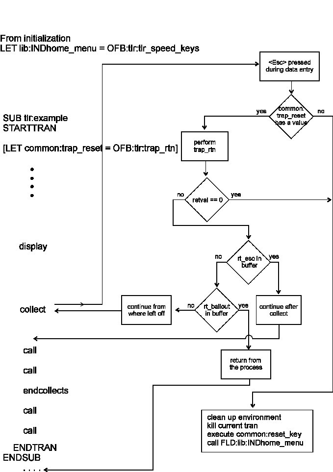
Example 2
Reset Handling
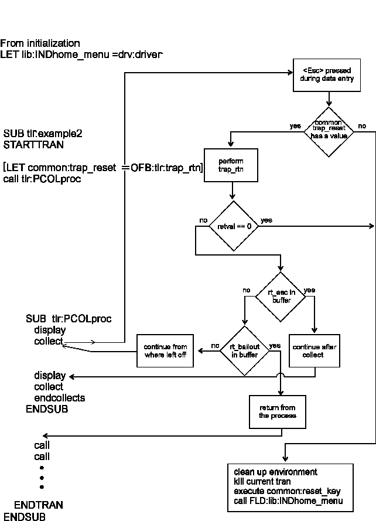
+ 2756 $ 2757 # 2758 K 2759 COMM/CRT Statement Supplemental Information
COMM/CRT User-Defined Data Types
COMM/CRT: Data Communications Pointer Manipulation
COMM/CRT: MATCH Expression Pattern Matching Replacement
COMM/CRT: HOST COMM Initialization Compiled List
COMM/CRT: CRT Application Program Interface API
Data communications (usually abbreviated as DATACOMM or just COMM) in Mosaic OA is done through OFB code which provides a reasonably high-level and easy-to-use interface to the systems services which take care of the actual transmission, error detection and correction, routing, and all the other low-level details.
OFB subroutines written to perform data communications functions are
different in several respects from other OFB subroutines. First, they
are created via a text editor and not by the IBAE because they don't
have a "visual" representation in the way that menus or data collect
screens do. Secondly, they contain
#define
symbols which require a pass through the C pre-processor before being
compiled. This means the original source files must be kept, as the
decompiler cannot replace the
#define
symbols stripped out by the pre-processor. The
#define
symbols make it easy to change the
underlying code supporting a given host COMM implementation without
necessitating a corresponding syntax change in OFB.
The last way in which datacomm subroutines differ is that they are
made up mostly of a single statement — the
COMM
statement — which uses its first
operand to indicate the type of COMM function to be performed. The other
operands (if any) differ depending upon the function. Many are optional,
as you shall see. Also notice that some of the statements can't be typed
on a single source line. In that case, place a single back-slash (\)
character as the last character on the line, then simply continue the
operands on the next line. The OFB compiler will treat the back-slash as
a line continuation indicator, just like the C compiler does.
Some of the
COMM
statements result in
communication with the "ACI" (see ISC publication 21-94-00082, Mosaic OA
Application Communication Interface, ACI Programmer's Reference). The
ACI is a system component which provides a consistent interface for host
communications, Mosaic OA application to application communication, and
Mosaic OA application to Pinnacle 8-bit communications. The three major
functions of the ACI are to act as:
1. An extension of the BCE (Branch Concentrator Emulation) Message Switch
2. A protocol converter between Mosaic OA and P8 applications
3. A Mosaic OA message switch for message routing between Mosaic OA resources.
For complete list of currently supported resource types look in the
file
\
moa
\
lib
\
csmsgdef.h.
Note: Refer to the Mosaic OA CDS Notes document which describes the CDS product, for both Unix an Windows NT. Find it in the Technical Library, Spokane. ISD #00025
+ 2760 $ 2761 # 2762 K 2763 COMM/CRT: User-Defined Data Types
The "USER" data type option on
COMM GET
and
PUT
statements is provided to allow
creation of custom data types. To do this two files must be created
containing positional hex translations for 256 bytes (00 - FF) — one
translating your custom data type to ASCII and one translating from
ASCII to your data type. (The
asc2ebc.src
and
ebc2asc.src
files, located in the
\moa\lib
directory
may be used as examples.) Use the Visual Workbench editor to create
custom translate tables. The names of these files determines the name
used for the USER_TYPE argument in the
GET
or
PUT
verb. The USER_TYPE argument is
required when the data type USER is specified. The files must be located
in
\
moa
\
lib
and must be named "
asc2xxx
" and
"
xxx2asc
" where xxx is your custom data
type name. xxx can be any length (except 0) provided the file name has a
valid length. BOTH files must exist with valid names for the data type
to be valid. Translate tables will be loaded from these files at
initialization time. Tables for the ebcdic and alc data types are also
loaded from the
\
moa
\
lib
directory at initialization time, allowing customization of these
predefined data types if required.
+ 2764 $ 2765 # 2766 K 2767 COMM/CRT: Data Communications Pointer Manipulation
The comm pointers, and the bytes they point to, may be tested via the
IF statement
, and manipulated via the
LET
statement. Used alone, the pointers
evaluate to their value as a 32-bit address. Prefixed by an at sign
(
@
) they evaluate to the character they point to within the
communications buffer. The OFB code fragments below illustrate the uses
of comm pointers:
A function,
COMMHDR
(), is provided to
extract data from the header (rather than the data) portion of the
communications buffer. It takes a single parameter, and returns an
integer value or a string in the case of a
MOVE
statement.
For a complete list of currently supported
COMMHDR
functions look in the
\
moa
\
lib
\
commdef.h
.
# to compare pointersIF (MSG <= MSGEND) THEN
code ...
ENDIF
# to compare the value at a pointer
IF (@MSG == '1') THEN
code ...
ENDIF
IF (@MSG & 0x80) THEN
code ...
ENDIF
# to test values from the communication headers
IF (COMMHDR(CSH_SEGMENT) == CS_FIRST)
code ...
ENDIF
# to set a pointer to the value of another pointer
LET MSG = MSGBEGIN
# to increment and decrement pointers
LET MSG = MSG + 1
LET MSG = MSG - 1
LET MSG = MSG + value
# to set the value at a pointer
LET @MSG = '1'
LET @MSG = @MSG & 0x80
LET @MSG = @MSG + 1
# to reference value of pointer
LET field = MSG - MSGBEGIN
# to reference values from the communications header
LET field = COMMHDR(CSH_SEGMENT)
MOVE COMMHDR(CSH_DEST) TO field
+ 2768 $ 2769 # 2770 K 2771 COMM/CRT: MATCH: Expression Pattern Matching & Replacement
Regular expressions are created according to the following rules. The
pattern matching is currently used in the
COMM MATCH
statement, and in creating the
scan criteria for JOURNAL SCAN — although a simpler form will have to be
created as this is too complicated to expect Tellers and Platform
Officers to learn:
[1] char Matches itself, unless it is a special character (metachar): . \ [ ] * + ^ $
[2] . Matches any character.
[3] \? Backslash matches the character following it, except when followed by a digit 1 to 9. (see [8]) It is used as an escape character for all other meta-characters, and itself. When used in a set ([4]), it is treated as an ordinary character. Meta-characters produce the following values:
\Xff Byte whose hex value is "ff"
\xff Byte whose hex value is "ff"
\Dnnn Byte whose value is decimal "nnn"
\dnnn Byte whose value is decimal "nnn"
\Oddd Byte whose value is octal "ddd"
\oddd Byte whose value is octal "ddd"
\Bd=0 Byte in which bit d is 0 where d=0-7
\Bd=1 Byte in which bit d is 1 where d=0-7
\b Backtab
\f Form feed
\h Horizontal tab
\n New line (line feed)
\r Carriage return
\t Tab
\v Vertical tab
\0 NULL
\c c where c is any other character
[4] [set] Matches one of the characters in the set. If the first character in the set is "^", it matches a character NOT in the set. A shorthand S-E is used to specify a set of characters S up to E, inclusive. The special characters "]" and "-" have no special meaning if they appear as the first chars in the set.
Examples: match:
[a-z] any lowercase alpha
[^]-] any char except ] and -
[^A-Z] any char except uppercase alpha
[a-zA-Z] any alpha
[5] * Any regular expression form [1] to [4], followed by closure char (*) matches zero or more matches of that form.
[5.1] .* Matches 0 or more occurences of any regular characters.
[6] + Same as [5], except it matches one or more.
[7] (form) A regular expression in the form [1] to [10], enclosed as (form) matches what form matches. The enclosure creates a set of tags, used for [8] and for pattern substitution. The tagged forms are numbered starting from 1.
[8] \9 A \ followed by a digit 1 to 9 matches whatever a previously tagged regular expression ([7]) matched.
[9] <word> A regular expression starting with a < construct and/or ending with a > construct, restricts the pattern matching to the beginning of a word, and/or the end of a word. A word is defined to be a character string beginning and/or ending with the characters A-Z a-z 0-9 and _. It must also be preceded and/or followed by any character outside those mentioned.
[10] xy A composite regular expression xy where x and y are in the form [1] to [10] matches the longest match of x followed by a match for y.
[11] ^$ A regular expression starting with a ^ character and/or ending with a $ character, restricts the pattern matching to the beginning of the line, or the end of line. [anchors] Elsewhere in the pattern, ^ and $ are treated as ordinary characters.
Examples:
pattern: foo*.*
matches: fo foo fooo foobar fobar foxx ...
pattern: fo[ob]a[rz]
matches: fobar fooar fobaz fooaz
pattern: foo\\+
matches: foo\ foo\\ foo\\\ ...
pattern: (foo)[1-3]\1 (same as foo[1-3]foo)
matches: foo1foo foo2foo foo3foo
pattern: (fo.*)-\1
matches: foo-foo fo-fo fob-fob foobar-foobar ...
+ 2772 $ 2773 # 2774 K 2775 COMM/CRT: HOST COMM Initialization Compiled List
To have communications (host or workstation to workstation) in
RT
a list (named
common:hcomm
) must be included in your application. An
example list follows:
LIST common:hcomm/* host communications initialization list */
/* the first member is the default application name */
/* this is used as the default application for the OFB */
/* script when executing the comm verb setevent */
MEMBER "hcomm"
/* the next 'n' members is used to define the host */
/* communications channels, the syntax is as follows: */
/* MEMBER "aaa", "bbb", fld1{, fld2}{, fld3} */
/* where "aaa" is the key from the corresponding */
/* communications configuration file (comm_config). */
/* (e.g. HOST=(key, appl), "bbb" is the default event */
/* OFB subroutine to be executed, fld1 is the RT field */
/* place the symbolic communications resource name, */
/* the optional field fld2 is the RT field to place */
/* resource type from the comm_config file */
/* (e.g. TYPE=ibm3270), and fld3 is the optional RT */
/* field to contain the application name for the */
/* communications resource (e.g. HOST=(key, appl)). */
/* the following member is necessary to define ws to */
/* ws communications */
/* The
“
pplus
”
member is required.
*/
MEMBER "pplus", "hcomm:SRQ_service_pplus", FLD:hcomm:host_pplus
/* the next "n" members define the host communications */
/* resources */
MEMBER "host1", "hcomm:COMM_unso" FLD:hcomm:host1, \
FLD:hcomm:host1_type, FLD:hcomm:host1_appl
MEMBER "host2", "hcomm:COMM_unso" FLD:hcomm:host2, \
FLD:hcomm:host2_type, FLD:hcomm:host2_appl
MEMBER "host3", "hcomm:COMM_unso" FLD:hcomm:host3, \
FLD:hcomm:host3_type, FLD:hcomm:host3_appl
MEMBER "host4", "hcomm:COMM_unso" FLD:hcomm:host4, \
FLD:hcomm:host4_type, FLD:hcomm:host4_appl
/* the following two members need only be included if */
/* pinnacle 8 coexistence is required */
MEMBER "p8_00","coex:CEX_service_p8_00",FLD:coex:host_p8_00
MEMBER "p8_02","coex:CEX_service_p8_02",FLD:coex:host_p8_02
ENDLIST
+ 2776 $ 2777 # 2778 K 2779 COMM/CRT: CRT Application Program Interface (API)
The operation of these verbs is dependent upon the CRT emulation
being used. The CRT emulations maintain a copy of what the screen should
look like regardless of whether they are the front window or not. This
"virtual screen" is kept up to date with respect to any received data
except when the CRT emulation is operating in "PASSTHRU" mode (see
SET_MODE). In this mode all data is passed through to the application,
RT
. Each different type of CRT emulation
resides in it's own task. Only one copy of the CRT emulation task will
be started even if multiple communication resources of the same type are
configured.
All the implementation specific interfaces are hidden from the
programmer utilizing the OFB level "API" (application program
interface). A buffered mode of operation has been added to allow the
programmer to optimize for performance. Each
CRT
verb requires a message to the CRT
emulation as well as some form of response (some responses are returned
in the form of the return code from the write operation, thus not
requiring a read operation). The process of sending and receiving
messages between these two tasks does incur some level of overhead. To
reduce the amount of overhead, the buffered mode may be used. Using the
PUTBUFFER
verb, commands to the CRT
emulation can be buffered into an internal buffer. Then using the BUFFER
verb, the commands can be "flushed" to the CRT emulation for processing.
The programmer must be careful not to buffer any function keys to be
processed which will cause a transmission to the host followed by
data.
An include file specific to the emulation can be located in the
standard OFB include directory
(
\
moa
\
lib
). These
include files contain specific definitions for the CRT emulation. The
currently defined include files are:
ibm3270.hibm5250.h
bur1100.h
ncr7900.h
+ 2780 $ 2781 # 2782 K 2783 CDS Statement Supplemental Information
CDS: LOCKING
CDS: Logical Units of Work (LUW)
CDS: Terminating a CDS FIND with RESET KEY
CDS: Only one CDS FIND NOWAIT per Connection
CDS: lost_cds_connection
CDS: Out_of_Band CDS Shadow Status Message Handling
CDS: Example OFB Subroutines using CDS Statements
CDS: Compiled List Construction
CDS: Central Data Server notes
CDS: Configuration Requirements for Mosaic OA CDServer Clients
DDPROJ.INI
system32\drivers\etc\ SERVICES
system32\drivers\etc\HOSTS
Resilience Setup
CDS: Starting an Instance of CDS
CDS: Debugging Hints
CDS Message Capture and Recovery Log
The following is a description of the forms of the CDS statement
which provide the facility within
RT
to
create, retrieve and display Central Data Server records, and to manage
'tables'.
The statements accommodate similar operations as provided by the C interface to the Central Data Server. Please refer to the Central Data Server documentation for a comprehensive description of each C function, Central Data Server definitions and table structure.
The statement types which require a table_name or context_name expect these names to be passed in objects that may be evaluated to strings. The name values may be specified via an application field, a descriptor (most efficient), or a literal string constant.
Default object type DSC is defined for table_name and context_name parameters. Default object type FLD is defined for all other variable object references.
The statement types which require #records, skip, or record_count parameters expect these parameters to be passed in objects that may be evaluated to integers. The integer values may be specified via an application field, a descriptor, an integer constant or a hex constant.
+ 2784 $ 2785 # 2786 K 2787 CDS: LOCKING
Some of the statement types (
FINDFIRST
,
FINDLAST
,
FINDPREV
,
FINDNEXT
,
FINDAGAIN
) have a built in record lock and
retry service. The system retrieves a lock retry counter value from the
common:Cds_lock_retry
field. The lock
retry counter value may be a value greater than or equal to zero. When a
locked record is encountered,
RT
pauses
for 1 second and then retries the appropriate find operation. This
process of pause and retry is repeated for
FLD:common:Cds_lock_retry
number of
iterations. Should the record remain in a locked state, then built-in
variable
CDSRETVAL
contains -803 (record
locked error). The
FINDXXX
verbs,
SELECT
and
MULTIDISPLAY
place lock information into
the
FLD:common:Cds_error_ message
field
indicating who holds the lock and their location. If your application
never displays this information (because someone else wrote it) you may
find it in the
capture
file or use:
cdsstat -l -n proj -S service_nameto print lock information in the out file. The Cds_lock_retry field is queried each time a find verb detects a locked record and begins its pause-retry loop. So, the application may set the lock retry count prior to issuing a FINDxxx verb.
The statement types which require a 'lockflag' parameter expect a
keyword of
LOCK
(for update),
NOLOCK
,
READLOCK
, or
EXCLUSIVELOCK
.
+ 2788 $ 2789 # 2790 K 2791 CDS: Logical Units of Work (LUW)
The statement types which contain the "logical unit of work"
parameter expect the keywords
BEGINWORK
or
COMMITWORK
;
BEGINWORK
denotes the start of a logical
unit of work, and
COMMITWORK
denotes the
end of a logical unit of work. Should this parameter not be included
then the CDS uses a
CONTINUE
WORK
if in a logical unit of work. When
not in a LUW updates can’t be rolled back.
+ 2792 $ 2793 # 2794 K 2795 CDS: Terminating a CDS FIND with RESET KEY
The
CDS FINDxxx
verbs may be terminated
by the RESET key only when specifically enabled with the RESET parameter
switch. Other CDS requests may not be interrupted (i.e they can't be
RESET out of). When RESET is enabled and a RESET occurs during a wait
for a scan completion, a Cds_Cancel_Scan() request is sent to the
Central Data Server, and a return code of -802 is provided in the
built-in variable
CDSRETVAL
. Safe
programming requires that you test for this value, as well as for -801
(record not found) or -803 (lock failure) after all
CDS FINDxxx
statements.
+ 2796 $ 2797 # 2798 K 2799 CDS: One CDS FIND NOWAIT per Connection
No more than one
CDS FINDxxx
VERB may
be active per server per client. Which means that multiple
CDS FINDxxx
verbs may not be issued in a
NOWAIT state. However, a single
CDS FINDxxx NOWAIT
verb may be issued with
any combination of non-FINDxxx CDS verbs.
+ 2800 $ 2801 # 2802 K 2803 CDS: Lost CDS Connection
When
RT
loses a connection to a
cdserver, service to
all
cdservers is effectively lost. All
existing contexts are closed.
RT
recognizes a lost cdserver connection when a CDS verb or custom
C source routine calls a CDS function which emits a message to a
cdserver or after TCP times out a closed connection and the
always-posted asynchronous receive is terminated with a
connection-closed indicator. Then, the
OFB:common:lost_cds_connection
procedure
is called where the application may re-connect to any additional
cdservers and perform application specific cleanup. Commonly, the OFB
verb
CLEANSTART
with
OFB:common:starting_point
subroutine
specified is invoked as the last verb in the
OFB:common:lost_cds_connection
subroutine.
// =========================================// <Example OFB:common:lost_cds_connection // =========================================
SUB common:lost_cds_connection
/* This routine is run when the connection to the Central Data Server is lost. When running a single "unnamed" server the connection is re-established automatically. If running multiple servers, a CDS INIT "servername" statement must be issued for each additional server.
NOTE: When the server dies, ALL contexts are lost (for all servers), additional cleanup to re-establish contexts or do cleanup needs to be added to this routine. */
FYIMSG common:fyimsg_list,"Restablishing lost CDS Connection, \
Press any key to continue"
GETKEY
/* Call application specific cleanup routines in order to reset
flags, fields, indirect objects etc.
*/
IF (TESTFLAG (common:tran_flags,na)) THEN
CALL OFB:na:MISCna_cleanup
ELSE
IF (TESTFLAG (common:tran_flags,teller)) THEN
CALL OFB:tlr:MISCtlr_cleanup
END IF
END IF
CLEANSTART common:starting_point
END SUB
+ 2804 $ 2805 # 2806 K 2807 CDS: Shadow Status Message Handling
In a resilient CDS environment, the primary sends an out-of-band
message to each attached client program whenever the status of the
shadow server changes.
RT
recognizes these
messages and will call the
common:Cds_out_of_band
OFB function, if
the developer has provided one. Otherwise, the messages will be
ignored.
// =====================================// < Example OFB:common:Cds_out_of_band // =====================================
SUB common:Cds_out_of_band
// This function handles out of band messages
// from Cdserver regarding the status of the
// shadow server in a resilient CDS environment.
// CDSerrmsg contains the server's servicename,
// if any. CDSRETVAL contains the type of message
IF (CDSerrmsg == "cl")
SELECT (CDSRETVAL)
CASE 1
MOVE "DOWN" FLD:cl:shadow_stat
BREAK
CASE 2
MOVE "UP" FLD:cl:shadow_stat
BREAK
END SELECT
ELSE
SELECT (CDSRETVAL)
CASE 1
MOVE "DOWN" FLD:tlr:shadow_stat
BREAK
CASE 2
MOVE "UP" FLD:tlr:shadow_stat
BREAK
END SELECT
END IF
END SUB
+ 2808 $ 2809 # 2810 K 2811 CDS: OFB Subroutines using CDS Statements
/* ============================== *//* <Example 1> */
/* ============================== */
SUB teller:example1
MOVE "profiles" TO FLD:teller:table
CDS SELECT teller:table DSC:teller:profile_cxt \
WHERE FLD:common:ix_branch == FLD:teller:branch_num \
&& FLD:common:ix_operator_id == \
FLD:common:ix_operator_id DESCENDING
CDS FINDFIRST DSC:teller:profile_cxt LOCK
SELECT (CDSRETVAL)
CASE 0
/* then a record was found. */
CDS EXTRACT DSC:teller:profile_cxt \
FLD:common:ix_branch \
FLD:common:ix_operator_id
MOVE "01" FLD:teller:branch_num
CDS APPEND DSC:profile_cxt \
FLD:teller:branch_num
CDS UPDATE DSC:profile_cxt NOLOCK
CDS ENDSELECT DSC:profile_cxt
BREAK
CASE -801
/* then a record was not found. */
CDS CLEARBUFFER DSC:teller:profile_cxt
CDS APPEND DSC:teller:profile_cxt \
FLD:teller:branch_num AS \
FLD:common:ix_branch \
FLD:common:ix_operator_id
CDS INSERT DSC:teller:profile_cxt NOLOCK
CDS ENDSELECT DSC:teller:profile_cxt
BREAK
CASE -803
/* Error message indicating who and where */
/* lock is held. Record is locked, custom */
/* processing to be performed. */
BREAK
END SELECT
END SUB
+ 2812 $ 2813 # 2814 K 2815 CDS: Compiled List Construction
The OFB statements
CDS SELECT
and
CDS MULTIDISPLAY
have a compiled list
object as a required or optional parameter. The lists are created via PC
with the -L option as described in the previous section entitled "LISTs
in Pinnacle Plus".
Compiled comments ARE NOT ALLOWED within these CDS lists.
Each of the CDS statements above requires a list of a slightly
different type or form. The form of the list for
CDS SELECT
verb WHERE clause is a list of
1 or more similar MEMBERs, as follows:
member1: equal_fld, not_eq_fld, \andbit_fld, match_fld, \
from_fld, to_fld, count cds_fld[, ...]
.
:
membern: equal_fld, not_eq_fld, andbit_fld, \
match_fld, from_fld, \
to_fld, count cds_fld[, ...]
Where each member identifies the set of fields in a CDS record with which to build relational expressions with an application field.
equal_fld
Application field to build equality expression or 0 indicating that no equality to be constructed.
not_eq_fld
Application field to build inequality expression or 0 indicating that no inequality to be constructed.
andbit_fld
Application field to build bitwise and expression or 0 indicating that bitwise expression is to be constructed. Valid only for special flag fields such as FLD:common:tran_flags.
match_fld
Application field to build c-shell like expression match or 0 indicating that no match expression is to be constructed.
from_fld
Application field to build >= expression or 0 indicating that relational expression is to be constructed.
to_fld
Application field to build <= expression or 0 indicating that relational expression is to be constructed.
count
Indicates the number of cds_fld(s) which follow to build criteria for.
cds_fld
There is at least one specified cds_field.
Processing consists of checking each application field to determine if the field.numchars value is non-zero. If field.numchars is non-zero then the appropriate relational expression is constructed for each of the specified application fields, and this expression is applied to each of the cds_flds indicated. A constant integer value of 0 is a place holder for any application field which should not be part of a where clause expression.
+ 2816 $ 2817 # 2818 K 2819 CDS: Central Data Server Notes
The latest CDS documentation is provided in a separate manual entitled:
Mosaic OA
CENTRAL DATA SERVER NOTES
A printable (Microsoft Word format) version is distributed in the
directory
\
moa
\
doc
.
A pre-printed version can be obtained from document control. Document
number
ISD-00025
.
+ 2820 $ 2821 # 2822 K 2823 CDS: Configuration for Mosaic OA CDServer Clients
DDproj.INI
system32\drivers\etc\ SERVICES
system32\drivers\etc\ HOSTS
Resilience
Cdserver clients include the application runtime executive
(
RT
), a query language interface
(
ql
), and a group of utilities for
administration of CDS. To enable access to cdserver, a number of
configuration steps must be completed at the client workstation. In
addition, the cdserver on the ONP must be configured to support clients.
Refer to the CDS NOTES (ISD 00025) for information on setting up UNIX
cdserver.
The first step is to ensure that you have installed TCP/IP. Selecting the Network icon from the Control Panel will show the installed network adapter cards and the installed network software.
In most production systems, no special configuration file values are needed . For development, you may need to update one or more of three configuration files on the NT client system:
the dictionary .ini file —
i.e.
\
moaproj
\
base
\
DDproj.ini
\winnt35\system32\drivers\etc\services\winnt35\system32\drivers\etc\hosts
+ 2824 $ 2825 # 2826 K 2827 DDPROJ.INI
Mosaic OA uses a project initialization file —DDproj.ini in the demo— for many configuration parameters. It must reside with the data dictionary, in the project directory. Cdserver clients use this file to get the name of the machine running the server, CDS_PRIMARY_NP, and the name of the machine designated as the resilient system shadow server, CDS_SHADOW_NP, if any. If there is no cds section in the .ini file, or no CDS_PRIMARY_NP value in that section, the CDS client programs will automatically use a UDP broadcast to locate the server by service name. The CDS service name is composed from the project name and an optional service name suffix. If you have more than one server in your LAN with the same service name, then you must specify CDS_PRIMARY_NP instead of locating the server with UDP broadcasts. To configure a resilient system, you must specify both CDS_PRIMARY_NP and CDS_SHADOW_NP. Locating the server with broadcast won’t work in a resilient system.
The format for the CDS entry in the ddproj.ini file is:
[cds]
CDS_PRIMARY_NP=myonp (DNS generally defaults to lowercase. Use lowercase for the machine name.)
CDS_SHADOW_NP=none
(i.e
non-Resilient configuration).
CDS_DIRECTORY=c:/moa/project/cds (needed only if not using the default)
The values for these variables must match the entries in the cds
environment files on the UNIX hosts. Those files are in
/usr/iscbr/lib/moa/cds.env
.
If a service name suffix is used, then the suffix is included in the brackets with cds. For example, for a service name suffix 'main', the entry in the .ini file would look like:
[cdsmain]
CDS_PRIMARY_NP=myONP
The default for
CDS_SHADOW_NP
is ‘none’. You don’t need
this entry unless you want “resilience”. The default for CDS_DIRECTORY
is \moaproj\
project
\[
suffix
.]cds
$ 2828 # 2829 system32\drivers\etc\SERVICES
This services file is located in system32\drivers\etc from where NT is installed. If you have more than one server on your LAN with the same service name, and you are using UDP broadcast to locate the server machine, then an entry must be specified for each CDS server. This entry must match the entry in the equivalent file on the cdserver host machine. The format for the entry is:
CDS_<proj>01[service_name_suffix] <port#>/udpFor the project 'acru', with a service name suffix of 'archive', on port 55590, the entry in the NT and UNIX services file is:
CDS_acru01archive 55590/udp
$
2830
#
2831
system32\drivers\etc\HOSTS
If you aren’t using UDP broadcast to locate the server machine(s), that is if you have a value for CDS_PRIMARY_NP in your DDproj.ini file, then edit the hosts file and add an entry for the cdserver host machine. You can get the IP address for the machine from the file /etc/hosts on the UNIX cdserver host. If the network is configured for Domain Name Server (DNS), you do not need to put the entry in the hosts file and in DNS.
+ 2832 $ 2833 # 2834 K 2835 Resilience Setup
Mosaic OA clients in a resilient environment use the same configuration files as in non-resilient systems.
The dictionary .ini file must specify both the primary and shadow hosts. For a primary host of 'myONP' and a shadow of 'yourONP', the entry would look like:
[cds]
CDS_PRIMARY_NP=myONP
CDS_SHADOW_NP=yourONP
These values must match the values assigned in the CDS environment files on the UNIX hosts.
Two entries are needed in the services file to support a resilient configuration. One entry defines the service name for the primary cdserver, and the other defines the shadow cdserver. The entries have the form:
CDS_<
proj
>01[
service_name_suffix
]PRIMARY
<
portnum
>/udp
and
CDS_<
proj
>01[
service_name_suffix
]_SHADOW
<
portnum
_1>/udp
To define service for the previous example, configured for resilience, and for ports 55590 and 555911:
CDS_acru01archivePRIMARY 55590/udp
CDS_acru01archive_SHADOW 55591/udp
These entries must match the entries in /etc/services on both the UNIX cdserver hosts.
If you don’t use DNS, the etc\hosts file must include an entry for both the primary and shadow ONP systems.
+ 2836 $ 2837 # 2838 K 2839 CDS: Starting an Instance of CDS
During development, the simplest way to get a CDS server running is to use the command:
start
cdsv -v -n
proj
(NT version of cdserver)
where " proj " is your project name. There are many other options which may be specified on the command line. Consult CDS NOTES for information on how to use them.
+ 2840 $ 2841 # 2842 K 2843 CDS: Debugging Hints
When debugging "CDS problems", many of which are often really application coding problems, the following information may be of use.
Application reports a CDS error
This is most likely to occur in an
RT
based application. The application displays an error panel that presents
a message sent from the server. Although the server detected the error,
these errors are often caused by application code.
RT
is set up to terminate under most of
these error conditions, thus preventing (further) corruption of the CDS
files.
If a CDS error is reported through an
RT
application, and the server remains
running even after
RT
has terminated, the
error is most likely within the application. This is the most common
scenario.
Application reports CDS Lock Error
This is almost always an application error. The utility program, cdsstat, described in CDS NOTES , has an option that will reveal all locks currently held by the server.
Application complains that it cannot connect to the server
Verify that the server is running. Use the mOA investigator, mi.exe or
cdsstat -n project -[S suffix ] (Where project is your project dictionary name)
If cdsstat cannot connect to the server, it will report the UDP port used and the name of the service requested - something like CDS_project01suffix. Verify that all of the components of the requested service name are correct.
Server process died
The file 'out' resides in the directory with the data server tables. It contains status information reported by the server. Looking in this file often tells why the server died. On Unix a utility program, cdsreason , filters the out file and attempts to report the reason for the demise of the server.
On NT servers, there is also an ‘out’ file, but most of the important information can be found in the application event log, which can be reviewed with the NT Event Viewer. There is no cdsreason utility on NT because the event log viewer is easy to use.
If the server core-dumped when it died (on UNIX), the file 'core' will be located in the same directory as the data server tables. If the server has respawned, the core file may be core- or core--. This file may be useful to those who attempt to debug the problem, and should be saved. A useful way to do this is to rename the file. e.g.
mv core core.1.15.95
+
2844
$
2845
#
2846
K
2847
CDS Message
Capture
The server optionally captures all messages going to or from clients.
Examining the
capture
file is often the best way to diagnose
problems with CDS. The cdserver command line option '-c' starts the
server with the ‘capture’ option. Alternatively, you may turn capture on
and off with
RT
or
ql
verbs
‘
startcapture
’
and
‘
stopcapture
’
. A file named 'capture' is
created in the same directory as the CDS tables. This file, which
contains a binary record of all of the messages received and sent by the
server, may be printed with the
prcapture
program,
prcaptur.exe, described in
CDS NOTES
.
# 2848 CDS Recovery Log File
The server writes all update requests to the recovery log before updating table files. This recovery log (binary) file, maybe viewed with the logdump utility, described in CDS NOTES. This is often useful in diagnosing a problem when capture was not used.
+ 2849 $ 2850 # 2851 K 2852 DDE Statement Supplemental Information
DDE: Dynamic Data Exchange Concepts
Multiple DDE Server Services and Topics with Mosaic OA
DDE: Using Dynamic Data Exchange in Mosaic OA
DDE: Implementation Suggestions
DDE: Message Types
DDE: Error Codes
Dynamic Data Exchange (DDE) is a messaging subsystem available upon Windows NT with which Microsoft Windows applications may exchange data and direct other Windows applications to perform a set of tasks. DDE enables 32 bit Windows applications to interact with either 32 bit or 16 bit Windows applications. For example, Mosaic OA’s RunTime, a 32 bit Windows application, may update a spreadsheet in Microsoft Excel, a 16 bit Windows application. DDE may also be used between Windows applications that physically run on different Windows NT workstations within a network.
The Mosaic OA RunTime provides a scripting language verb set that enables applications to be constructed to form both client and server functionality. Mosaic OA applications may support multiple, simultaneous DDE connections acting as a DDE client, DDE server or both DDE client and server.
Note: A good overall description of the topics and concepts of Dynamic Data Exchange is discussed in, Win32 Programmer’s Reference, Volume 1 , Microsoft Press, 1993. Also, Programming Windows, Version 3.1 , by Charles Petzold, Microsoft Press, 1992, contains a description of Dynamic Data Exchange. You should also have the interface description to DDE by the Windows application you intend to inter-operate with via your Mosaic OA application.
+ 2853 $ 2854 # 2855 K 2856 DDE: Dynamic Data Exchange Concepts
Two Windows applications participating in DDE are said to be engaged in a DDE conversation. The application that initiates the conversation is the client application; the application that responds to the client is the server application. An application can engage in several conversations at the same time, acting as the client in some and as the server in others.
A DDE conversation takes place between two windows, one for each of the participating applications. A DDE conversation is identified by a conversation handle. The DDE protocol identifies the units of data passed between the client and server with a three-level hierarchy of:
service name
topic name
item name
Each DDE conversation is uniquely defined by the service and topic names. At the beginning of a DDE conversation, the client and server determine the service name and topic. The service name is usually the name of the server application. For example, when Microsoft Excel acts as the server in a conversation, the application name is “Excel”.
The DDE topic is a general classification of data within which multiple data items may be “discussed” (exchanged) during the conversation. For applications that operate on file-based documents, the topic is usually a filename. For other applications, the topic is an application-specific name.
Because the client and server conversation handles together identify DDE conversations, the application name and topic that define a conversation cannot be changed during the course of the conversation.
A DDE data item is information related to the conversation topic
exchanged between the applications. Values for the data item can be
passed from the server to the client, or from the client to the server.
Data can be passed with any of the standard clipboard formats. Data item
values are most commonly rendered in the
CF_TEXT
clipboard format. This makes it
convenient to pass and receive DDE data in Mosaic OA ASCII type fields.
See the file
MOADDE.H
in
the
\
moa
\
lib
directory for the set of clipboard formats.
Once a DDE conversation is established, then the type of data link may be defined. There are three types of DDE data links: cold links
The remaining two link types, warm and hot, are considered permanent links. The data link is permanent in the sense that this notification process continues until the data link or the DDE conversation is terminated. warm links hot links
+ 2857 $ 2858 # 2859 K 2860 MULTIPLE DDE SERVER SERVICES and TOPICS
Multiple, simultaneous DDE Server services and topics are supported in Mosaic OA. By default, 5 services with 10 topics each are supported. The OFB command to add services and topics is DDE CONFIG. All services use the same call-back routine. Topics for a service must be added before a new service is added. The following code creates a server (service) named “mosaicOA” with a topic of “standard”. Three additional topics are then added for “mosaicOA; ostrich, emu and rhea. A second service “ratites” is then added. It has three topics; ostrich, emu and rhea. And finally, a third service is added, “bigcats”. It too has three topics;lynx,couger and tiger.
DDE INITIALIZE APPCMD_FILTERINITS
DDE SERVER "mosaicOA", "standard", ofb:standard_server, \
fld:msg_type, \
fld:service_name, fld:topic_name, fld:item_name, \
fld:rcv_data_type, fld:string_data, fld:bulk_data
DDE CONFIG TOPIC "ostrich"
DDE CONFIG TOPIC "emu"
DDE CONFIG TOPIC "rhea"
DDE CONFIG SERVICE "ratites"
DDE CONFIG TOPIC "ostrich"
DDE CONFIG TOPIC "emu"
DDE CONFIG TOPIC "rhea"
DDE CONFIG SERVICE "bigcats"
DDE CONFIG TOPIC "lynx"
DDE CONFIG TOPIC "cougar"
DDE CONFIG TOPIC "tiger"
Following is the syntax for the DDE client “link topic” for accessing each of the DDE services set up above.
mosaicOA|standard
mosaicOA|ostrich
mosaicOA|emu
mosaicOA|rhea
ratites|ostrich
ratites|emu
ratites|rhea
bigcats|lynx
bigcats|cougar
bigcats|tiger
In this example, the call-back routine, “ofb:standard_server”, must use the “fld:service_name” and “fld:topci_name” to determine which service is being requested and respond appropriately.
+ 2861 $ 2862 # 2863 K 2864 DDE: Using Dynamic Data Exchange in Mosaic OA
Seven examples of OFB code presenting these conversation types:
1. RT as DDE client requests data from a DDE server
2. RT as DDE client submits an item value to a DDE server
3. RT as DDE client causes activity to occur at a DDE server
4. RT as DDE server sends data to a DDE client
5. RT as DDE server receives data from a DDE client
6. RT as DDE server processes an execute command
7. RT as DDE server connects to 3rd party DLL
Typical DDE conversations contain the following basic components:
Initiate a DDE conversation
Transfer a single data item
Establish a permanent data link
Carry out commands in a server application
Terminate a DDE conversation
The Mosaic OA RunTime (
RT
) supports a
variety DDE connection services. An application developer should find
that a small set of DDE statements are required to implement a
particular type of DDE conversation. Such that with little effort,
Mosaic OA applications can tap a wealth of DDE enabled external programs
and DLL’s.
The seven Mosaic OA DDE examples assume the following field declarations:
;FLD[common]
hConv INT 4 [ ] ScDEascuRDmpbdh 0 0 0 0 0 0 0
msgType INT 4 [ ] ScDEascuRDmpbdh 0 0 0 0 0 0 0
Service ASCII 24 [ ] ScDEascuRDmpbdh 0 0 0 0 0 0 0
Topic ASCII 24 [ ] ScDEascuRDmpbdh 0 0 0 0 0 0 0
Item ASCII 24 [ ] ScDEascuRDmpbdh 0 0 0 0 0 0 0
DataType INT 4 [ ] ScDEascuRDmpbdh 0 0 0 0 0 0 0
StrFld ASCII 24 [ ] ScDEascuRDmpbdh 0 0 0 0 0 0 0
BulkFld ASCII 256 [ ] ScDEascuRDmpbdh 0 0 0 0 0 0 0
TranID INT 4 [ ] ScDEascuRDmpbdh 0 0 0 0 0 0 0
$ 2865 # 2866 1. RT as DDE client requests data from a DDE server
The following mosaic DDE client application interface requests data from a DDE server which supplies population information. The DDE client establishes a permanent (HOT) data link via the following Mosaic OA OFB code:
#include "moadde.h"SUB common:dde_client
dde initialize CBF_FAIL_EXECUTES
dde connect "DdePop1" "US_Population" \
ofb:common:client_callback hConv msgType Service Topic Item \
DataType StrFld BulkFld
if (DDEretval != 0) then
fprint csr_string \
"DDE CONNECT error occurred, DDEretval=%d" dderetval
msgbox csr_string OFB_OK "DDE Error"
end if
dde advise CF_TEXT "WA" hconv HOT
if (DDEretval != 0) then
fprint csr_string \
"DDE ADVISE error occurred, DDEretval=%d" DDEretval
msgbox csr_string OFB_OK "DDE Error"
return
end if
dde disconnect hconv
END SUB
----------------------------------------
SUB common:client_callback
select (msgType)
case XTYP_ADVDATA
if (DataType == CF_TEXT) then
REFRESH fld:common:StrFld
end if
DDEretval = 0 // processed XTYP_ADVDATA
break
case else
dprint
“
DDE message type not supported = %d
\
n
”
msgType
break
end select
END SUB
$ 2867 # 2868 2. RT as DDE client submits an item value to a DDE server
#include "moadde.h"SUB common:dde_client_poke
dde initialize CBF_FAIL_EXECUTES
dde connect "DdePop1" "US_Population" \
ofb:common:client_callback_poke \
hconv msgType Serv Topic Item \
DataType StrFld BulkFld
if (DDEretval != 0) then
fprint csr_string \
"DDE CONNECT error occurred, DDEretval=%d" DDEretval
msgbox csr_string OFB_OK "DDE Error"
end if
dde poke CF_TEXT "WA" TIMEOUT_ASYNC hconv
if (DDEretval != 0) then
fprint csr_string \
"DDE POKE error occurred, DDEretval=%d" DDEretval
msgbox csr_string OFB_OK "DDE Error"
return
end if
dde disconnect hconv
END SUB
----------------------------------------
SUB common:client_callback_poke
select (msgType)
case XTYP_XACT_COMPLETE
dprint
“
DDE POKE to server completed successfully
\
n
”
break
case else
dprint
“
DDE message type not supported = %d
\
n
”
msgType
break
end select
END SUB
$ 2869 # 2870 3. RT as DDE client causes activity to occur at a DDE server
#include "moadde.h"
SUB common:dde_client_execute
dde initialize CBF_FAIL_EXECUTES
if (DDEretval != 0) then
fprint csr_string \
"DDE INITIALIZE error occurred, DDEretval=%d" \ DDEretval
msgbox csr_string OFB_OK "DDE Error"
end if
dde connect "DdePop1" "US_Population" \
ofb:common:client_callback_exe \
hconv msgType Serv Topic Item \
DataType StrFld BulkFld
if (DDEretval != 0) then
fprint csr_string \
"DDE CONNECT error occurred, DDEretval=%d" DDEretval
msgbox csr_string OFB_OK "DDE Error"
end if
dde execute
“
[calculate_pop WA]
”
200 hconv TranID
if (DDEretval != 0) then
fprint csr_string \
"DDE POKE error occurred, DDEretval=%d" DDEretval
msgbox csr_string OFB_OK "DDE Error"
return
end if
dde disconnect hconv
END SUB
----------------------------------------
SUB common:client_callback_exe
select (msgType)
case XTYP_XACT_COMPLETE
dprint “
DDE EXECUTE to server completed successfully
break
case else
dprint
“
DDE message type not supported = %d
\
n
”
msgType
break
end select
END SUB
$ 2871 # 2872 4. RT as DDE server sends data to a DDE client
#include "moadde.h"SUB common:dde_server
LET VarInt = 999
dde initialize CBF_FAIL_EXECUTES
if (DDEretval != 0) then
fprint csr_string \
"DDE INITIALIZE error occurred, DDEretval=%d" \ DDEretval
msgbox csr_string OFB_OK "DDE Error"
end if
dde server "DdePop2" "Newdata" \
OFB:common:dde_server_callback msgType Service Topic \
Item DataType IntFld StrFld
if (DDEretval != 0) then
fprint csr_string \
"DDE INITIALIZE error occurred, DDEretval=%d" \ DDEretval
msgbox csr_string OFB_OK "DDE Error"
end if
END SUB
----------------------------------------
SUB common:dde_server_callback
select (msgType)
case XTYP_ADVSTART
settimer 0 INTERVAL 10 OFB:common:TimerProc
DDEretval = 0 // XTYP_ADVSTART honored
break
case XTYP_REQUEST
move VarInt TO NewData
move "DDE Server" TO Topic
move "Data" TO Item
dde send_data Topic Item 1 "12345" XTYP_REQUEST
if (DDEretval != 0) then
fprint csr_string \
"DDE SEND_DATA error occurred, DDEretval=%d" \
DDEretval
msgbox csr_string OFB_OK "DDE Error"
end if
DDEretval = 0 // XTYP_REQUEST honored
break
case else
dprint
“
DDE message type not supported = %d
\
n
”
msgType
break
end select
END SUB
----------------------------------------
SUB common:TimerProc
let VarInt = VarInt + 10
move VarInt TO NewData
move "DDE Server" TO Topic
move "Data" TO Item
dde send_data Topic Item 1 NewData XTYP_ADVDATA
END SUB
$ 2873 # 2874 5. RT as DDE server receives data from a DDE client
#include "moadde.h"
SUB common:dde_server_poke
let VarInt = 999
dde initialize CBF_FAIL_EXECUTES
if (DDEretval != 0) then
fprint csr_string \
"DDE INITIALIZE error occurred, DDEretval=%d" DDEretval
msgbox csr_string OFB_OK "DDE Error"
end if
dde server "DdePop2" "Pokedata" \
OFB:common:dde_server_rcv_data msgType Service Topic \
Item DataType IntFld StrFld
if (DDEretval != 0) then
fprint csr_string \
"DDE INITIALIZE error occurred, DDEretval=%d" DDEretval
msgbox csr_string OFB_OK "DDE Error"
end if
END SUB
----------------------------------------
SUB common:dde_server_rcv_data
select (msgType)
case XTYP_POKE
if (Item == “
POKE_TO_SERVER
”
) then
if (DataType == CF_TEXT) then
move StrFld to store_data_from_client
// do some work here...
end if
DDEretval = 0 // XTYP_POKE honored
end if
break
case else
dprint
“
DDE message type not supported = %d
\
n
”
msgType
break
end select
END SUB
$ 2875 # 2876 6. RT as DDE server processes an execute command
#include "moadde.h"
SUB common:dde_server_exec
let VarInt = 999
dde initialize CBF_FAIL_EXECUTES
if (DDEretval != 0) then
fprint csr_string \
"DDE INITIALIZE error occurred, DDEretval=%d" DDEretval
msgbox csr_string OFB_OK "DDE Error"
end if
dde server "DdePop2" "Pokedata" \
OFB:common:dde_server_rcv_exec msgType Service Topic \
Item DataType IntFld StrFld
if (DDEretval != 0) then
fprint csr_string \
"DDE INITIALIZE error occurred, DDEretval=%d" DDEretval
msgbox csr_string OFB_OK "DDE Error"
end if
END SUB
----------------------------------------
SUB common:dde_server_rcv_exec
select (msgType)
case XTYP_EXECUTE
if (StrFld == “
start reentry
”
) then
call ofb:common:reenter_transactions
DDEretval = 0 // XTYP_POKE honored
end if
break
case else
dprint
“
DDE message type not supported = %d
\
n
”
msgType
break
end select
END SUB
$ 2877 # 2878 7. RT as DDE server connects to 3rd party DLL
#include "moadde.h"sub dde:setup
dde initialize APPCMD_FILTERINITS
if (DDEretval != 0)
fprint csr_string \
"DDE INITIALIZE error occurred, DDEretval=%d" \ DDEretval
msgbox csr_string OFB_OK "DDE Error"
end if
dde server "mosaicOA", "standard", ofb:standard_server, \
fld:MsgType, \
fld:Service, fld:Topic, fld:Item, \
fld:DataType, fld:StrData fld:BulkData
if (DDEretval != 0)
fprint csr_string \
"DDE SERVER error occurred, DDEretval=%d" DDEretval
msgbox csr_string OFB_OK "DDE Error"
end if
declare DDE_Execute lib "BIBASE.DLL" (BYREF)
declare DDE_Poke lib "BIBASE.DLL" (BYREF, BYREF)
declare DDE_Request lib "BIBASE.DLL" (BYREF, BYOBJ)
end sub
sub dde:standard_server
select (MsgType)
case XTYP_EXECUTE
dll DDE_Execute (StrData)
DDEretval = 0
break
case XTYP_POKE
dll DDE_Poke (Item, StrData)
DDEretval = 0
break
case XTYP_REQUEST
dll DDE_Request (Item, StrDAta)
dde send_data "standard", \
Item, CF_TEXT, StrData, XTYP_REQUEST
DDEretval = 0
break
case else
dprint
“
DDE message type not supported = %d
\
n
”
msgType
break
end select
end sub
+ 2879 $ 2880 # 2881 K 2882 DDE: Implementation Suggestions
Always test
DDERETVAL
upon completion
of a
DDE
statement. You can consolidate
error processing into one shared routine. You may also share
DDE
callback subroutines between multiple
DDE connections, using the conversation handle as a unique identifier.
It may be clearer to separate the callback subroutines, however. You may
also use the
DLL
verb to invoke
DDE
functions supported in external DLL’s.
Note that
DDERETVAL
should be set
explicitly to 0, indicating that the message is processed, in the DDE
callback subroutine upon response to:
XTYP_ADVDATA
,
XTYP_ADVSTART
,
XTYP_ADVSTOP
,
XTYP_EXECUTE
,
XTYP_POKE
and
XTYP_REQUEST
message types. The
DDE
RunTime interface assumes that the
processing is not completed by default.
+ 2883 $ 2884 # 2885 K 2886 DDE: Message Types
C = Client, S = Server, (located in \moa\lib\moadde.h)
C XTYP_ADVDATA Passes advise data to a client
S XTYP_ADVREQ Prompts a server to send advise data to a client
S XTYP_ADVSTOP Ends an advise loop
S XTYP_ADVSTART Requests an advise loop
S XTYP_CONNECT Requests a DDE conversation
S XTYP_CONNECT_CONFIRM Confirms a DDE conversation
C,S XTYP_DISCONNECT Terminates a DDE conversation
C,S XTYP_ERROR Notifies a DDEML application of a critical error
S XTYP_EXECUTE Executes a server command
XTYP_MONITOR Inform DDE monitor application of a DDE event
S XTYP_POKE Sends unsolicited data to a server
C,S XTYP_REGISTER Registers a service name
S XTYP_REQUEST Requests data from a server
C XTYP_UNREGISTER Unregisters a service name
S XTYP_WILDCONNECT Requests multiple DDE conversation
C XTYP_XACT_COMPLETE Confirms completion of async transaction
+ 2887 $ 2888 # 2889 K 2890 DDE: Error Codes
(located in
\
moa
\
lib
\
moadde.h
)
#define DMLERR_ADVACKTIMEOUT 0x4000#define DMLERR_BUSY 0x4001#define DMLERR_DATAACKTIMEOUT 0x4002
#define DMLERR_DLL_NOT_INITIALIZED 0x4003
#define DMLERR_DLL_USAGE 0x4004
#define DMLERR_EXECACKTIMEOUT 0x4005
#define DMLERR_INVALIDPARAMETER 0x4006
#define DMLERR_LOW_MEMORY 0x4007
#define DMLERR_MEMORY_ERROR 0x4008
#define DMLERR_NOTPROCESSED 0x4009
#define DMLERR_NO_CONV_ESTABLISHED 0x400a
#define DMLERR_POKEACKTIMEOUT 0x400b
#define DMLERR_POSTMSG_FAILED 0x400c
#define DMLERR_REENTRANCY 0x400d
#define DMLERR_SERVER_DIED 0x400e
#define DMLERR_SYS_ERROR 0x400f
#define DMLERR_UNADVACKTIMEOUT 0x4010
#define DMLERR_UNFOUND_QUEUE_ID 0x4011
A cold DDE link is considered to be a non-permanent link, as the client explicitly issues requests for a DDE data item update when the client is prepared to receive the update, i.e. no notification is sent by the DDE server. This is the least common method of linkage.
In a warm data link, the server notifies the client that the value of the data item has changed, but the server does not send the data value to the client until the client requests it. This link is permanent.
In a hot data link, the server immediately sends the changed data value to the client. This link is permanent.
+ 2897 $ 2898 # 2899 K 2900 ODBC Programmer Guide
Interface to Open DataBase Connectivity (ODBC) and C language interface to odb.dll Programmer’s Reference
Document Number ISD-00029 Release 1 Version 4.9
# 2901 K 2902 Purpose of ODBC/OFB Interface (odb)
To provide a simple adaptable interface from Olivetti Financial Basic to databases with an Open Database Connectivity (ODBC) package interface.
To Provide binding between OFB fields and Database column expressions.
# 2903 K 2904 PROGRAMMING WITH OFB
Your OFB programs should include dberrs.h which defines the error return codes and other useful constants. You must include dbdeclar.ofb which declares all of the functions exported from ODB.DLL. For best performance, execute the code with includes dbdeclar.ofb only once, during rt initialization. There is an example program which is the regression test in \moa\src\odb\test\dbtest.ofb.
# 2905 K 2906 PROGRAMMING WITH C
Your OFB programs should include dberrs.h which defines the error return codes and other useful constants. You must include dbuser.h which declares all of the functions exported from ODB.DLL. You may link odb.lib to statically link odb.dll, or like rt, you may dynamically link odb.dll. If you are coding custom C routines for CSR.DLL, you may need to use GetProcAddress() to find function addresses within odb.dll. See csr\dbcsr.dll for an example.
+ 2907 $ 2908 # 2909 K 2910 SQL GRAMMAR
Refer to "Microsoft ODBC 2.0 Programmer's Reference and SDK Guide", Appendix C: "SQL Grammar".
This book is published by Microsoft Press and can be found in the Microsoft Development Library, on line, in:
SDKs / Open Database Connectivity (ODBC) SDK 2.10 / Programmer’s Reference / Part 6 Appendixes / Appendix C SQL Grammar.
The definitive SQL grammar can be found in “American National Standard for Information Systems - Database Language - SQL” , ANSI X3.135-1992 + amendment #1. This is commonly referred to as the SQL-92 standard.
The following SQL statements define the base ODBC SQL grammar.
create-index-statement ::= Core
CREATE [UNIQUE] INDEX index-name
ON base-table-name
( column-identifier [ASC | DESC]
[, column-identifier [ASC | DESC] ]... )
create-table-statement ::= Mini-mum
CREATE TABLE base-table-name
(column-element [, column-element] ...) column-element ::=
column-definition | table-constraint-definition column-definition
::=
column-identifier data-type
[DEFAULT default-value]
[column-constraint-definition[ column-constraint-definition]...]
default-value ::= literal | NULL | USER column-constraint-definition
::=
NOT NULL
| UNIQUE | PRIMARY KEY
| REFERENCES ref-table-name referenced-columns
| CHECK (search-condition) table-constraint-definition ::=
UNIQUE (column-identifier [, column-identifier] ...)
| PRIMARY KEY (column-identifier
[, column-identifier] ...)
| CHECK (search-condition)
| FOREIGN KEY referencing-columns REFERENCES
ref-table-name referenced-columns
Important As a data-type in a create-table-statement, applications must use a data type from the TYPE_NAME column of the result set returned by SQLGetTypeInfo.
delete-statement-positioned ::= Core (ODBC 1.0) Ex-tended
(ODBC 2.0)
DELETE FROM table-name WHERE CURRENT OF cursor-name
delete-statement-searched ::= Mini-mum
DELETE FROM table-name [WHERE search-condition]
drop-index-statement ::= Core
DROP INDEX index-name
drop-table-statement ::= Mini-mum
DROP TABLE base-table-name
[ CASCADE | RESTRICT ]
grant-statement ::= Core
GRANT {ALL | grant-privilege [, grant-privilege]... }
ON table-name
TO {PUBLIC | user-name [, user-name]... } grant-privilege ::=
DELETE
| INSERT
| SELECT
| UPDATE [( column-identifier [, column-identifier]... )]
| REFERENCES [( column-identifier
[, column-identifier]... )]
insert-statement ::= Mini-mum
INSERT INTO table-name [( column-identifier [,
column-identifier]...)]
VALUES (insert-value[, insert-value]... )
ODBC-procedure-extension ::= Ex-tended
ODBC-std-esc-initiator [?=] call procedure ODBC-std-esc-terminator
| ODBC-ext-esc-initiator [?=] call procedure ODBC-ext-esc-terminator
revoke-statement ::= Core
REVOKE {ALL | revoke-privilege [, revoke-privilege]... }
ON table-name
FROM {PUBLIC | user-name [, user-name]... }
[ CASCADE | RESTRICT ] revoke-privilege ::=
DELETE
| INSERT
| SELECT
| UPDATE
| REFERENCES
select-statement ::= Mini-mum
SELECT [ALL | DISTINCT] select-list
FROM table-reference-list
[WHERE search-condition]
[order-by-clause]
select-for-update-statement ::= Core (ODBC 1.0) Ex-tended
(ODBC 2.0)
SELECT [ALL | DISTINCT] select-list
FROM table-reference-list
[WHERE search-condition]
FOR UPDATE [OF [column-name [, column-name]...]]
statement ::= create-table-statement Mini-mum
| create-view-statement
| delete-statement-positioned
| delete-statement-searched
| drop-index-statement
| drop-table-statement
| grant-statement
| insert-statement
| ODBC-procedure-extension
| revoke-statement
| select-statement
| select-for-update-statement
| update-statement-positioned
| update-statement-searched
update-statement-positioned ::= Core Ex-tended
UPDATE table-name
SET column-identifier = {expression | NULL}
[, column-identifier = {expression | NULL}]...
WHERE CURRENT OF cursor-name
update-statement-searched Core
UPDATE table-name
SET column-identifier = {expression | NULL }
[, column-identifier = {expression | NULL}]...
[WHERE search-condition]
+ 2911 $ 2912 # 2913 K 2914 Limitations
No asynchronous support.
The ODBC driver must be for ODBC version 2.x . This interface will not work with a driver that supports only the ODBC 3 interface. It will work with the ODBC 3 driver manager and ODBC 3 administration. The driver used must support the ODBC 2 API.
No convenient multi-row accesses to OFB array fields yet .
No Bookmark support.
OFB date fields must be 8 bytes in length. OFB date fields that are defined as length 6 are not and will not be supported by this ODBC interface.
String constants in OFB are limited to 255 characters. So if you need a longer string constant put it in a descriptor. Parameter strings from OFB field or descriptor values passed to DLL functions are limited to 1024 characters per parameter. This limitation is in RT.dll, not ODB.dll. Beware of this limit when composing long SQL statements. C language users of ODB.dll are not faced with this limitation. OFB programmers can often bypass this limitation by using one of the functions that takes a list parameter instead of one of the simpler similar functions.
SQL statement texts must be less than 32K in length. Watch out for this when using a function that generates the SQL text from a compiled list. Whenever the text is too long for the target DBMS or longer than 32K -1, an error will be returned. The error is typically -DB14.
Because of their diverse nature, stored procedures pose a special problem. Generally, stored procedures that return a success/failure response (call with DBproc) or a result set (call with DBdefineQuery) can be called successfully. Testing has found that stored procedures that return a result set but define the specific output parameters (using OUTPUT specifications in the procedure) are not supported in this interface.
+ 2915 $ 2916 # 2917 K 2918 Database Managers for which Drivers are Currently Certified by Q/A.
We have successfully tested with these databases:
· Microsoft SQL SERVER V6.0, and V4.2, but DBproc() fails with these .
· Microsoft SQL SERVER V6.5
+ 2919 $ 2920 # 2921 K 2922 Database Managers for which drivers have been tested by developers
· Microsoft SQL SERVER V6.5.
· Oracle V7 [Intersolve driver: Driver name: IVOR709.DLL Driver Version: 02.12.0000]
· Olivetti Mosaic OA Central Data Server V1.4
· Microsoft ACCESS 7.0
+ 2923 $ 2924 # 2925 K 2926 ODBC Interface Components
Establish an ODBC environment by calling odbc_start() which returns an environment handle.
Next establish a database connection by calling odbc_connect() which yields a connection object handle.
Using the connection handle, you may create Query , Dynaset , and Table objects. The tables that exist in the Database at the time you connect to the database server are also provided as Table objects to you ‘the client’.
Tables are composed of set of row s which are composed of column s. Each row has the same set of columns, although some of the column values may be NULL in some rows.
A Query is an action on or a retrieval from a table or a set of tables. Queries are defined with SQL text and, optionally, bindings to OFB fields.
A Dynaset is an updatable row set defined with SQL text and bindings to OFB fields. A dynaset has a cursor which defines the current row in the set.
In summary, the classes of objects revealed by the ODBC interface are:
Environment (only one)
Connection (owned by Environment)
Table (owned by Connection)
Query (owned by Connection)
Dynaset (owned by Connection)
Row (owned by Table, Query, or Dynaset)
Column (owned by Row)
OFB_Field
+ 2927 $ 2928 # 2929 K 2930 Functions on Environment Objects
odbc_start() creates environment.
odbc_connect() creates connection.
DBconnect() - a C interface to the function called by odbc_connect().
DBsetDebug() sets debugging output mask.
DbfreeEnv() frees any open connections and releases the environment.
+ 2931 $ 2932 # 2933 K 2934 Functions on Connection Objects
DBdisconnect() destroys connection.
DBlastmsg() puts last error message into an OFB field.
DBsqlState() puts last SQL State code into an OFB FT_ASCII field.
DBcreateTable creates a new table owned by the DBMS via the connection.
DBcreateTable creates a new table owned by the DBMS via the connection, with list fields null_ok.
DBcreateDynaset creates a dynaset owned by the connection.
DBcreateDynasetLst creates a dynaset owned by the connection. Uses a compiled list parameter.
DBcreateQueryLst creates a query_def owned by the connection. Uses a compiled list parameter.
DBdropTable() returns 0 if a named table existed in the database and was dropped.
DBexistsTable() returns 0 if a named table exists in the database accessed via the connection.
DBdefineQuery() creates a query_def object with SQL text and field bindings.
DBsqlExecute() execute an SQL command that doesn’t require field bindings.
DBdoQuery() execute an SQL command that does require field bindings. May be used to get one row.
DBproc() execute an SQL stored procedure or stored function.
DBsetTimeoutDefaults() . Set query and action request timeout defaults for a connection.
DBsetTrace() set ODBC tracing on or off. May also be done via control panel/ODBC.
DBsetConnectOption() - an entry to SQLSetConnectOption().
DBgetInfo() - an entry to SQLGetInfo().
+ 2935 $ 2936 # 2937 K 2938 Functions on Tables
DBinsert() inserts a record into a table.
DBinsertLst() inserts a record into a table using a compiled list for the column names and field bindings.
DBinsert1() inserts a record into a table using the tables column names to find fields of the same name to bind.
DBretrieve() gets one buffer of rows from a list of tables, using a compiled list for defining the projection and target field bindings and an optional “where” clause with OFB field bindings.
DBmultiDisplay() defines a query and display of row with a compiled list object. Analogous to CDS MULTIDISPLAY.
+ 2939 $ 2940 # 2941 K 2942 Functions on Dynaset Objects
DBdelete() deletes current record of a dynaset.
DBqClose() destroys a dynaset object.
DBupdatable() returns “Updatable?” property of a dynaset.
DBupdate() updates current record of dynaset. Sending every field that has been modified since the fetch and has the field dataentered flag ON.
DB_update() updates current record of dynaset. Sending every field that has been modified since the fetch, ignoring the field dataentered flag.
DBupdateFlds() updates current record of dynaset, using parameter column names and source fields.
DBfetch() gets next record of dynaset. The column values from the fetched row are placed in the target fields.
DBxFetch() fetch next, prior, first or last row of dynaset.
DBgetColumnValue() gets the value of a particular column in the current row of a set and places it into a target field.
DBqRowsFound() gets the number of rows put into the buffer on the last fetch.
DBsetCurrentRowSubscript() sets the subscript of the current row in a multi-row buffer.
DBCurrentRowSubscript() gets the subscript of the current row in a multi-row buffer.
+ 2943 $ 2944 # 2945 K 2946 Functions on Query_Def Objects
DBqExecute() executes a defined query.
DBfetch() retrieves the next row returned from an executed query. (Not valid on some query_def objects). The column values from the fetched row are placed in the target fields.
DBxFetch() fetch next, prior, first or last row.
DBexFetch() retrieves the next, prior, first, last, relative or absolute row.
DBextractRow() extracts fields from a particular row in a multiple row buffer.
DBgetColumnValue() gets the value of a particular column in the current row of a set and places it into a target field.
DBqBufferRows() gets the number of rows that can be gotten with one fetch.
DBqRowsFound() gets the number of rows put into the buffer on the last fetch.
DBrowsAffected() gets the number of rows deleted or updated when the query was executed.
DBsetCurrentRowSubscript() sets the subscript of the current row in a multi-row buffer.
DBCurrentRowSubscript() gets the subscript of the current row in a multi-row buffer.
DBsetQTimeout() sets the timeout for fetches on the query_def context.
DBqClose() destroys a query_def object.
+ 2947 $ 2948 # 2949 K 2950 Return Values
The DB interface functions generally return zero to indicate success.
Other return values indicate errors. Most error results are less than zero. One common positive error value is DB_NO_DATA, which is returned when the selected row set has zero rows.
To get a message text describing the last error, use DBlastmsg().
+ 2951 $ 2952 # 2953 K 2954 Compiled Lists for ODBC
Complied lists are usually accepted as parameters for functions in the OFB/ODBC interface. A list is composed of members. Each member may have several elements.
The first element of the first member may be an OFB procedure or another LIST or a FLD. Other members may be FLD or LIST.
If it is an OFB procedure or LIST, the second and third elements of the member, if any, will be ignored. If the first element is an OFB procedure it will be executed and if returns a "0" or a positive number, the processing will continue. If it returns a negative value the processing will end and that negative value will be returned in the message returned by DBlastmsg(). The DB function result will be -DB81.
The compiled list members generally have the following format.
MEMBER OFB_FLD ODBC_NAME RT_FLD1 RT_FLD2 RT_FLD3 ...
In the above example if the element_index argument is 2, RT_FLD1 will be used as the data source. If you pass index 2 and the particular member does not have an element 2 in the list OFB_FLD (the zeroeth element) will be used. If you pass index 1, you will get an error.
The last element of the each member can specify whether the particular cds_fld is a primary key. This stuff will be ignored by the proc_list CSR and the IBA JOURNAL author is not going to support this either for Release.
The desktop driver which is used in the Foundation Application will always use 2 as index for journaling.
Example:
LIST appl:LISTname
MEMBER OFB:PreJnlRtn
MEMBER tlr:jnl_account, "header_account" tlr:account
MEMBER tlr:jnl_operator, "header_operator" tlr:operator_id
MEMBER tlr:account, "account"
MEMBER tlr:operator_id, "operator"
END LIST
FUNCTION DESCRIPTIONS
DBbegin
DBcommit
DBcreateDynaset
DBcreateDynasetLst
DBcreateQueryLst
DBcreateTable
DBcreateTableNullOk
DBdelete(dynaset_handle)
DBdisconnect
DBdoQuery
DBdropTable
DBexFetch
DBexistsTable
DBextractRow
DBfetch
DBfreeEnv
DBgetColumnValue
DBgetInfo
DBinLUW
DBinsert
DBinsertLst
DBinsert1
DBlastmsg
DBmsg
DBmultiDisplay
DBproc
DBqBufferRows
Dbqclose
DBqExecute
DBqRowsFound
Dbretrieve
Dbrollback
DBrowsAffected
DBsetConnectOption
DBsetCurrentRowSubscript
DBsetDebug
DBsetQTimeout
DBsetTimeoutDefaults
DBsetTrace
DBsqlExecute
DBsqlState
DBupdatable
DBupdate
DBupdateFlds
DBxFetch
+ 2955 $ 2956 # 2957 K 2958 DBbegin() - Begin a Logical Unit of Work
DBbegin(database_connection_handle)
Begin an atomic unit of work that must be either completely applied or not done at all.
Input:
database_connection_handle - the value passed back by DBconnect().
Return Values:
0 = success.
-DB_NULL_HANDLE
-DB_BAD_CONNECT_HANDLE
or an error result from SQLSetConnectOption(dbc->hdbc, SQL_AUTOCOMMIT, SQL_AUTOCOMMIT_OFF)
Note:
A second call to DBbegin(), without an intervening call to DBcommit() or DBrollback(), will be ignored .
+ 2959 $ 2960 # 2961 K 2962 DBcommit() - Commit Logical Unit of Work
DBcommit(database_connection_handle)
Input:
database_connection_handle - the value passed previously to DBbegin().
Return Values:
0 = success.
-DB_NULL_HANDLE
-DB_BAD_CONNECT_HANDLE
-DB_NO_BEGIN Attempted to commit without beginning a LUW.
or an error result from SQLTransact()
+ 2963 $ 2964 # 2965 K 2966 DBcreateDynaset - Create a Dynaset
DBcreateDynaset(dynaset_handle, db_handle, name, rows, place_holder, sql_text, infield1, ..., in_field_n, 0, output_field1, ..., output_field_n, 0
Create a dynaset object using the SQL text provided. Bind input fields to SQL input expressions and bind output SQL column expressions to fields. The dynaset will be created with a ‘dynamic’ cursor and record locking if the ODBC driver used for the connection supports those options. Fall back options are ‘keyset-driven’ or ‘static’ cursor and optimistic ‘row version’ or ‘row values’ concurrency.
Be aware that if you don’t use an ‘order by’ clause, different database managers will vary the order of rows returned.
Inputs:
db_handle - the value passed back by DBconnect() or odbc_connect().
name - the name to be given to the dynaset object.
rows - the unsigned number of rows to return (must be >= 1) [Must be 1 for CDS]
unused place holder - integer 0 [formerly use_bookmarks boolean]
sql_text - The query definition. Beware of the OFB string param length limit, 1024.
in_field1, in_field2, ... - optional field to use in the selection criteria. Compiled lists may be used alternately with field objects. The List element indexed used will always be 0 and OFB procedures in the lists will be ignored. Last input field parameter ‘field’ must be literal integer 0 (zero).
out_field1, out_field2, ..., out_fieldN - fields to receive projected output. Must be at least one.
Compiled lists may be used alternately with field objects. The list element indexed used will always be 0 and OFB procedures in the lists will be ignored. If you wish to use a different element index or execute the OFB procedures you must use DBcreateDynasetLst(). Last output field parameter ‘field’ must be literal integer 0 (zero).
Output Parameter:
dynaset_handle - Must be a field of type INT to receive the Dynaset object handle.
Return Values:
0 = success
-DB_NULL_HANDLE - db_handle is null
-DB_BAD_CONNECT_HANDLE - db_handle is invalid
-DB38 - rows > 0 and no output binding is nonsensical
-DB42 - name is null
-DB44 - rows out of acceptable range
-DB65 - dynaset_handle is not a field reference
-DB_NOT_FT_INT - dynaset_handle is not an INT field
-DB70 - at least one output binding is required
Any other value is an error returned from one of several ODBC/SQL functions.
See Also: DBcreateDynasetLst(), DBdefineQuery(), DBqClose(), Dbfetch(), DBcreateQueryLst()
+ 2967 $ 2968 # 2969 K 2970 DBcreateDynasetLst - Create a Dynaset using a compiled list
DBcreateDynasetLst(dynaset_handle, db_handle, table_name, set_name, rows, place_holder, list, list_element_index, execute_list_ofb, sql_where_text, [infield1, ..., in_field_n,] 0)
Create a dynaset object using the SQL text composed from the compiled list and the where clause provided. Bind input fields to SQL input expressions and bind output SQL column expressions to fields. The dynaset will be created with a ‘dynamic’ cursor and record locking if the ODBC driver used for the connection supports those options. Fall back options are ‘keyset-driven’ or ‘static’ cursor and optimistic ‘row version’ or ‘row values’ concurrency.
Inputs:
db_handle - the value passed back by DBconnect() or odbc_connect().
table_name - name(s) of table(s) from which to draw input.
set_name - the name to be given to the dynaset object.
rows - the unsigned number of rows to return (must be >= 1). [Must be exactly 1 for CDS.]
unused_place_holder - former use_bookmarks parameter that was never supported.
list - projection column names and corresponding DBfetch() output fields. List format is described in the section titled “Compiled Lists for ODBC.” This parameter may be a list object or a field of type FT_IND which references a list object.
list_element_index - index of element within list members to use for the target OFB fields. Not 1!
execute_list_ofb - Boolean switch to execute any OFB procedure in list before creating dynaset.
sql_where_text - The query selection criteria, can be null or empty string. [The word ‘WHERE’ is not permitted within the text. It is supplied as a constant.]. An ‘order by’ sort specification may be included here. Be aware that if you don’t use an ‘order by’ clause, different database managers will vary the order of rows returned.
in_field1,... - optional fields to use for values in the selection criteria. Last parameter ‘field’ must be literal integer 0 (zero).
Output Parameter:
dynaset_handle - Must be a field of type INT to receive the Dynaset object handle.
Return Values:
0 = success
-DB_NULL_HANDLE - db_handle is null
-DB_BAD_CONNECT_HANDLE - db_handle is invalid
-DB38 - rows > 0 and no output binding is nonsensical
-DB42 - name is null
-DB44 - rows out of acceptable range
-DB65 - dynaset_handle is not a field reference
-DB_NOT_FT_INT - dynaset_handle is not an INT field
-DB79 - OFB routine must be the first element of a list not n ’th
-DB80 - Execution of routine %d:%d was not successful
-DB81 - Execution of routine %d:%d returned %d [a negative result] This means that the OFB list member routine returned a negative value.
Any other value is an error returned from one of several ODBC/SQL functions.
See Also: DBcreateDynaset(), DBdefineQuery(), DBqClose(), DBfetch().
Examples:
DLL DBcreateDynasetLst (dynaset_handle, db_handle, “my_table”, “my_set”, 1, 0, my_list, 0, 0, “my_column = ? and other_column = ?”, my_field, other_field, 0)
DLL DBcreateDynasetLst (dynaset_handle,db_handle, “my_table as m, t2”, “my_set”, 1, 0, my_list, 2, 1, “m.my_column == t2.my_column and other_column = ?”, other_field, 0)
+ 2971 $ 2972 # 2973 K 2974 DBcreateQueryLst - Create a query context using a compiled list
DBcreateQueryLst (query_handle, db_handle, table_name, set_name, rows, place_holder, list, list_element_index, execute_list_ofb, sql_where_text, [infield1, ..., in_field_n,] 0)
Create a query_def object using the SQL text composed from the compiled list and the where clause provided. Bind input fields to SQL input expressions and bind output SQL column expressions to fields. The query_def will be created with a ‘dynamic’, read-only cursor if the ODBC driver used for the connection supports that option. Fall back options are ‘keyset-driven’ or ‘static’ cursor.
Inputs:
db_handle - the value passed back by DBconnect() or odbc_connect().
table_name - name(s) of table(s) from which to draw input.
set_name - the name to be given to the dynaset object.
rows - the unsigned number of rows to return (must be >= 1).
unused_place_holder - former use_bookmarks parameter that was never supported.
list - projection column names and corresponding DBfetch() output fields. List format is described in the section titled “Compiled Lists for ODBC”. ”. This parameter may be a list object or a field of type FT_IND which references a list object.
list_element_index - index of element within list members to use for the target OFB fields. Not 1 !
execute_list_ofb - Boolean switch to execute any OFB procedure in list before creating dynaset.
sql_where_text - The query selection criteria, can be null or empty string. [ The word ‘WHERE’ is not permitted within the text. It is supplied as a constant.]. An ‘order by’ sort specification may be included here. Be aware that if you don’t use an ‘order by’ clause, different database managers will vary the order of rows returned.
in_field1,... - optional fields to use for values in the selection criteria. Last parameter ‘field’ must be literal integer 0 (zero).
Output Parameter:
query_handle - Must be a field of type INT to receive the object handle.
Return Values:
0 = success
-DB_NULL_HANDLE - db_handle is null
-DB_BAD_CONNECT_HANDLE - db_handle is invalid
-DB38 - rows > 0 and no output binding is nonsensical
-DB42 - name is null
-DB44 - rows out of acceptable range
-DB65 - query_handle is not a field reference
-DB_NOT_FT_INT - query_handle is not an INT field
-DB79 - OFB routine must be the first element of a list not n ’th
-DB80 - Execution of routine %d:%d was not successful
-DB81 - Execution of routine %d:%d returned %d [a negative result] This means that the OFB list member routine returned a negative value.
Any other value is an error returned from one of several ODBC/SQL functions.
See Also: DBcreateDynasetLst(), DBcreateDynaset(), DBdefineQuery(), DBqClose(), DBfetch().
Examples:
DLL DBcreateQueryLst (q_handle, db_handle, “my_table”, “my_set”, 1, 0, my_list, 0, 0, “my_column = ? and other_column = ?”, my_field, other_field, 0)
DLL DBcreateQueryLst (q_handle,db_handle, “my_table as m, t2”, “my_set”, 1, 0, my_list, 2, 1, “m.my_column == t2.my_column and other_column = ?”, other_field, 0)
+ 2975 $ 2976 # 2977 K 2978 DBcreateTable - Create a Table
DBcreateTable(db_handle, drop_existing, table_name, field1,[column_mod1],..., field_n, 0
Create a Table object using the data dictionary field definitions to create column definitions. This is a portable function. It works equally well for Oracle, MS SQL Server, and MS Access. Alternatively, you may use pure SQL with DBsqlExecute() to create a table. But that will not be portable between DBMS products. All columns created from fields defined in compiled list parameters are constrained to be NOT NULL. NULL values won’t be allowed in these columns. To specify allowing NULL values in columns defined from a LIST, use DBcreateTableNullOK().
Inputs:
db_handle - the value passed back by DBconnect() or odbc_connect().
drop_existing - An existing table with the same name will be preserved only if this is an integer zero.
table_name - the name of the new table.
field1 - a data dictionary field reference.
field2[column_mod2], field3, ... - optional additional fields to use in creating the table.
Compiled lists may be used alternately with field objects. The list element indexed used will always be 0 and OFB procedures in the lists will be ignored. Column modifiers can’t be used for fields supplied via compiled- list. They will automatically be NOT NULL.
Last input field parameter ‘field’ must be literal integer 0 (zero).
column_mod - (optional) may be one of: “primary key”; “PK”; “not null”; “NN”. Must be a literal string or descriptor value.
Return Values:
0 = success
-DB_NULL_HANDLE - db_handle is null
-DB_BAD_CONNECT_HANDLE - db_handle is invalid
-DB84 - Can't find corresponding type for FT_%s
-DB85 - unknown or unsupported FT data type %d on field %s
-DB86 - Unsupported field definition modifier-DB87 - Only up to %d input fields per table are allowed
-DB88 - Primary key designation required on table '%s'
-DB89 - Can't convert CSRARG_STRING parameter in DBcreateTable().
-DB96 - Local fields not allowed for defining table columns. Err with appno=%d, field name %s
If the table already exists and ‘drop_existing’ is 0, the return will be non-zero and the SQLState code will be “S0001”.
See Also: DBsqlExecute, DBsqlState, DBcreateTableNullOk.
Examples:
DLL DBcreateTable (db_handle, 0, "price", prodid, "primary key", stdprice, minprice, startdate, “not null”, enddate, bean_counter, time4, time6, xtime4, 0)
if (retval)
dprint "create ttprice failed error=%d\n" retval
DLL DBlastmsg (dbmsg, db_handle)
call dbg_print (dbmsg)
END
ENDIF
+ 2979 $ 2980 # 2981 K 2982 DBcreateTableNullOk - Create a Table
DBcreateTableNullOk(db_handle, drop_existing, table_name, field1,[column_mod1],..., field_n, 0
Create a Table object using the data dictionary field definitions to create column definitions. This is just like DBcreateTable() except that all columns created from fields defined in compiled list parameters are not constrained to be NOT NULL. NULL values will be allowed in these columns.
Inputs:
db_handle - the value passed back by DBconnect() or odbc_connect().
drop_existing - An existing table with the same name will be preserved only if this is an integer zero.
table_name - the name of the new table.
field1 - a data dictionary field reference.
field2[column_mod2], field3, ... - optional additional fields to use in creating the table.
Compiled lists may be used alternately with field objects. The list element indexed used will always be 0 and OFB procedures in the lists will be ignored. Column modifiers can’t be used for fields supplied via compiled- list. They will automatically allow null values.
Last input field parameter ‘field’ must be literal integer 0 (zero).
column_mod - (optional) may be one of: “primary key”; “PK”; “not null”; “NN”. Must be a literal string or descriptor value.
See Also: DBcreateTable, DBsqlExecute, DBsqlState.
+ 2983 $ 2984 # 2985 K 2986 DBCurrentRowSubscript - Get row subscript in a multi-row buffer
DBCurrentRowSubscript( query_def_handle )
Inputs:
query_def_handle - the value passed back by DBdefineQuery() or DBcreateDynaset.
This indirectly refers to a buffer filled via DBexFetch() or DBfetch().
Return Values:
Positive_value = success and gives row number, (one-based) subscript of the row that is ‘current’. Negative value indicates an error.
See Also: DBsetCurrentRowSubscript
+ 2987 $ 2988 # 2989 K 2990 DBdefineQuery- Create a query_def object with SQL
DBdefineQuery(handle_field, db_handle, query_name, rows, sql_text, input_field1, ...input_fieldN, 0, output_field1, ..., output_field_N, 0)
Create a query_def object using the SQL text provided. Bind input fields to SQL input expressions and bind output SQL column expressions to output_fields, if any. Must later do a fetch if this function succeeds and you want to retrieve any rows. . For stored procedures that return a result set (as the result of a select), use this function rather than DBproc. The sql_text field would be the call to the stored procedure along with the input parameter list.
Inputs:
db_handle - the value passed back by DBconnect() or odbc_connect().
name - the name to be given to the dynaset object.
rows - the unsigned number of rows to return
sql_text - The query definition. Beware of the OFB string param length limit, 1024.
in_field1, in_field2, ... - optional fields to use in the selection criteria or other input to server
Compiled lists may be used alternately with field objects. The list element indexed used will always be 0 and OFB procedures in the lists will be ignored.
`Last input field parameter ‘field’ must be literal integer 0 (zero).
output_field1, output_field2, ..., output_fieldN - fields to receive projected output.
Compiled lists may be used alternately with field objects. The list element indexed used will always be 0 and OFB procedures in the lists will be ignored. If you wish to use a different element index or execute the OFB procedures you must use one of the DB…Lst() functions. Last output field parameter ‘field’ must be literal integer 0 (zero).
Output Parameter:
handle_field - Must be a field of type INT to receive the Query_Def object handle.
Return Values:
0 = success
-DB_NULL_HANDLE - db_handle is null
-DB_BAD_CONNECT_HANDLE - db_handle is invalid
-DB38 - rows > 0 and no output binding is nonsensical
-DB44 - rows out of acceptable range
-DB65 - handle_field is not a field reference
-DB_NOT_FT_INT - handle_field is not an INT field
Any other value is an error returned from one of several ODBC/SQL functions.
See Also: DBqExecute(), DBqClose(), dbdefine_query_inner(), DBdoQuery(), DBfetch(), DBxFetch(), DBrowsAffected(), DBcreateQueryLst().
+ 2991 $ 2992 # 2993 K 2994 dbdefine_query_inner()- Create a query_def object with SQL, from C
#include <dbuser.h>
XDLL int dbdefine_query_inner(void **qdHandle, void *dbc, const char *query_name, qtype query_type, unsigned bRows, const char *sql_text, bool unused, field *input_flds[], field *output_flds[] );
This a more convienient entry to DBdefineQuery() for C programmers. The fields are passed into DBdefineQuery() as variable lists of rtobj pointers. Here they are passed as arrays of field pointers.
Both DBdefineQuery() and DBcreateDynaset() eventually call dbdefine_query_inner().
+ 2995 $ 2996 # 2997 K 2998 DBdelete - Delete current record of dynaset
DBdelete(dynaset_handle)
Inputs:
dynaset_handle - the value passed back by DBcreateDynaset().
Return Values:
0 = SUCCESS
-DB_NULL_HANDLE - dynaset_handle is NULL.
-DB_BAD_HQD - dynaset_handle is invalid
-DB47 - dynaset_handle doesn’t point to a dynaset object
-DB48 - dynaset is not updatable. A ‘for update’ clause is required. Otherwise, DBdelete will return -DB48.
-DB54 - no current row
See Also: DBdoQuery().
+ 2999 $ 3000 # 3001 K 3002 DBdisconnect - destroy a connection
DBdisconnect(database_connection_handle)
Input:
database_connection_handle - the value passed back by DBconnect().
Return Values:
0 = success.
-DB_NULL_HANDLE
-DB_BAD_CONNECT_HANDLE
or an error result of SQLDisconnect().
See Also: Dbconnect(); odbc_connect().
+ 3003 $ 3004 # 3005 K 3006 DBdoQuery- Run a query with SQL
DBdoQuery(db_handle, rows, sql_text, input_field1, ...input_fieldN, 0, output_field1, ..., output_field_N, 0)
This function creates a temporary query_def object using the SQL text provided, binds input fields to SQL input expressions and binds output SQL column expressions to output_fields, if any. The query is executed at the server and up to one result row is returned. Then the query_def object is destroyed.
This function is good for running table updates and other SQL statements that return no rows as well as single row selects. DBdoQuery() is like DBsqlExecute() with the addition of input and output field parameters.
Inputs:
db_handle - the value passed back by DBconnect() or odbc_connect().
rows - the unsigned number of rows to return. Must be 1 or 0!
sql_text - The query definition. Beware of the OFB string param length limit, 1024.
in_field1, in_field2, ... - optional fields to use in the selection criteria or other input to server. Compiled lists may be used alternately with field objects. The list element indexed used will always be 0 and OFB procedures in the lists will be ignored. Last input ‘field’ parameter must be literal integer 0 (zero).
output_field1, output_field2, ..., output_fieldN - optional fields to receive projected output, if any.
Compiled lists may be used alternately with field objects. The list element indexed used will always be 0 and OFB procedures in the lists will be ignored. If you wish to use a different element index or execute the OFB procedures you must use one of the DB…Lst() functions or DBretrieve() Last output ‘field’ parameter must be literal integer 0 (zero).
Return Values:
0 = success
DB_NO_DATA = No row matches the query selection criteria When the query is one that returns no rows, such as an update or a delete, the result will be 0 (SUCCESS) if no rows were affected. If you need to know when no rows are affected, use DBdefineQuery(), DBqExecute(), DBrowsAffected(), DBqClose().
-DB_NULL_HANDLE - db_handle is null
-DB_BAD_CONNECT_HANDLE - db_handle is invalid
-DB38 - rows > 0 and no output binding is nonsensical
-DB43 - rows out of acceptable range. (Only 1 and 0 are allowed.)
-DB54 - record set has no current row and row param = 1 (Not a retrieval, so not DB_NO_DATA).
Any other value is an error returned from one of several ODBC/SQL functions.
See Also: DBdefineQuery(); DBsqlExecute(); DBretrieve().
Example:
DLL DBdoQuery (db_handle,1, "select distinct address, id from person where name = ?", name, 0, address_field, ID_field, 0)
if (retval)
dprint "DBdoQuery() retval = %d\n", retval
DLL DBlastmsg (dbmsg, db_handle)
dprint "%s\n" dbmsg
end
endif
dprint "Address is: %s, ID is %d\n" address_field, ID_field
+ 3007 $ 3008 # 3009 K 3010 DBdropTable - drop a table from database
DBdropTable (table_name, [db_henv | db_handle])
If the 2nd parameter is db_henv, this function searches through the open connections in the environment for a table name identical to the parameter name. The first matching table found is dropped. The connections are not in predictable order. So, if you have two connections with identical table names, be sure the use the db_handle qualifier instead of the db_henv option, unless you intend to execute DBdropTable twice to drop them both.
Input:
table_name
db_henv - the odbc environment handle - passed back by odb_start().
or
db_handle - a database handle passed back by odbc_connect()
Return Values:
0 = success, the named table was dropped.
Any other result indicates an error:
-DB_NULL_HANDLE - bad second parameter
-DB10 - Unknown table
Example:
DLL DBdropTable ("mysales", db_env)
if (retval != 0)
dprint DBlastmsg()
endif
+ 3011 $ 3012 # 3013 K 3014 DBexFetch - fetch row or row-set from dynaset or query_def object
DBexFetch(query_def_handle, fetch_type, irow)
Each call to DBexFetch() returns a row-set. The maximum number of rows returned by one call is defined when the query or dynaset is defined. If the fetch returns at least one row, the first row is extracted into the fields passed as output parameter fields to the query definition function. If the fetch returns more than one row, the data in rows after row 1 can be extracted with DBextractRow(). The number of rows currently in the row-set buffer can be obtained with DBqRowsFound().
Unlike Dbfetch(), this function is not supported by all ODBC database drivers. Some drivers don’t support calling a DBexFetch after a DBfetch. To be safe, use only all DBfetch or all DBexFetch or DBxFetch (which calles DBexFetch).
Inputs:
query_def_handle - the value passed back by DBdefineQuery() or DBcreateDynaset().
fetch_type - see Fetch Type macros defined in dberrs.h and in FETCH TYPES below.
i row - integer number, see Irow Argument
Return Values:
0 = success
DB_NO_DATA = No more rows matching the query selection criteria
-DB_BAD_HQD - query_def_handle is invalid
-IM001 - Driver does not support this function.
Example:
DBexFetch(qd, SQL_FETCH_PRIOR, 1)
See Also: DBfetch(); DBxFetch(), DBqRowsFound(), DBextractRow(), DBsetCurrentRow(), DBCurrentRow..
+ 3015 $ 3016 # 3017 K 3018 FETCH TYPES
DBexFetch supports the following values of the fetch_type argument to move relative to the current rowset:
Fetch_type Argument Action
SQL_FETCH_NEXT The driver returns the next rowset. If the cursor is positioned before the start of the result set, this is equivalent to SQL_FETCH_FIRST. In the case of a multi-row fetch, the next N rows (beyond the last record in the current buffered rowset) are fetched, where N is the value of the ‘rows’ parameter passed to DBdefineQuery or DBcreateDynaset
SQL_FETCH_PRIOR The driver returns the prior rowset. If the cursor is positioned after the end of the result set, this is equivalent to SQL_FETCH_LAST.
SQL_FETCH_RELATIVE The driver returns the rowset irow rows from the start of the current buffered rowset . If irow equals 0, the driver refreshes the current rowset. If the cursor is positioned before the start of the result set and irow is greater than 0, then this fetches the absolue irow set.
The following values of the Fetch_type argument to move to an absolute position in the result set:
fetch_type Argument Action
SQL_FETCH_FIRST The driver returns the first rowset in the result set.
SQL_FETCH_LAST The driver returns the last complete rowset in the result set. In the case of a multi-row fetch, the last N rows are fetched, where N is the value of the ‘rows’ parameter passed to DBdefineQuery or DBcreateDynaset.
SQL_FETCH_ABSOLUTE is not supported by this implementation of the interface because we prefer to use dynamic cursors whenever they are supported by the underlying database manager. SQL_FETCH_ABSOLUTE is never supported on dynamic cursors.
+ 3019 $ 3020 # 3021 K 3022 irow Argument
For the SQL_FETCH_RELATIVE fetch type, DBexFetch returns the rowset starting irow rows from the first row in the currently buffered rowset. If the cursor position is before the first row set (nothing yet in buffer), then the irow th set is returned
The irow argument is ignored for the SQL_FETCH_NEXT, SQL_FETCH_PRIOR, SQL_FETCH_FIRST, and SQL_FETCH_LAST, fetch types.
+ 3023 $ 3024 # 3025 K 3026 DBexistsTable - find out if a table exists
DBexistsTable (table_name, db_henv | db_handle)
If the 2nd parameter is an environment handle, this function searches through the open connections in the environment for a table name identical to the parameter name.
Input:
table_name
db_henv - the odbc environment handle - passed back by odb_start()
or
db_handle - a database handle passed back by odbc_connect() or DBconnect()
Return Values:
0 = YES , the named table does exist!
Any other result indicates an error:
-DB_NULL_HANDLE - null second parameter
-DB_BAD_CONNECT_HANDLE - invalid second parameter
-DB10 - Unknown table
Example:
DLL DBexistsTable ("mysales", db_env)
if (retval != 0)
DBdefineQuery(query_def, db_handle, “create_mysales”,0,”create table mysales (...
+ 3027 $ 3028 # 3029 K 3030 DBextractRow() - extract a row in a row-set buffer into OFB fields
DBextractRow(query_def_handle, row_index)
This function is useful when each fetch gets multiple rows. The target OFB fields are specified in the query definition defined with a DBdefineQuery() or DBcreateDynaset(). The current row subscript is not affected by DBextractRow().
Inputs:
query_def_handle - the value passed back by DBdefineQuery().
This indirectly refers to a buffer filled via DBexFetch() or DBfetch().
row_index - 1 based unsigned integer index to row within current row-set buffer.
Return Values:
0 = success
-DB_NULL_HANDLE - null handle
-DB73 - row_index is bigger than rows currently in buffer.
-DB77 - row index is less than 1. Since index is unsigned, this means it was zero.
-DB_BAD_HQD - Bad handle
C Example:
row = 1;
for (row=1; (result = DBextractRow(qd, row))== 0); row++)
display_row();
if (result != DB73)
show_error(result);
OFB Example:
DLL DBqRowsFound (query_def)
LET Cds_count = retval
LET row = 1
DO
DLL DBextractRow (query_def, row)
if (retval)
dprint "Can't do %dth DBextractRow retval = %d\n", row, retval
DLL DBlastmsg (dbmsg, db_handle)
call dbg_print (dbmsg)
END
endif
dprint "row=%d, prodid =%d \n" row prodid
LET row = row + 1
if (row > Cds_count)
BREAK
ENDIF
LOOP
See Also: DBfetch(); DBxFetch(), DBqRowsFound(), DBsetCurrentRow(), DBCurrentRow.
+ 3031 $ 3032 # 3033 K 3034 DBfetch - fetch next row from dynaset or query_def object
DBfetch( query_def_handle )
If the query buffer holds only one row, that row is fetched from the database. If the query buffer holds multiple rows, the current row number is incremented and the next buffer is fetched only if the current row number is greater than the number of rows found on the last fetch from the database. If there is a current row, the column values are placed in the fields passed as output parameter fields to the query definition function.
Inputs:
query_def_handle - the value passed back by DBdefineQuery().
Return Values:
0 = success
DB_NO_DATA = No more rows matching the query selection criteria
-DB_NULL_HANDLE - query_def_handle is null
-DB_BAD_HQD - query_def_handle is invalid
See Also: DBexfetch(); DBxFetch(), DBextractRow(), DBqRowsFound(), DBsetCurrentRow(), DBCurrentRow().
+ 3035 $ 3036 # 3037 K 3038 DBfreeEnv - free Environment control object
DBfreeEnv(environment _handle )
Frees all resources held for the environment.
Inputs:
environment_handle - the value of db_environment_field set by odbc_start()
Return Values:
0 = success
-DB_NULL_HANDLE - environment_handle is null
-DBDLLSETUPFIRST - environment_handle is invalid
See Also: DBdisconnect(), odbc_start().
+ 3039 $ 3040 # 3041 K 3042 DBgetColumnValue - Get a column value from current record in a set
DBgetColumnValue(query_def _handle, [column_name | column_number] , target_field)
Inputs:
query_handle - the value passed back by DBdefineQuery() or DBcreateDynaset().
column_name - the name of the column whose value is to be put into the field.
or
column_number - the position of the column in the projection list (as a numeric ASCII string). The first position is zero.
Output Parameter:
target_field - field to receive projected output.
Return Values:
0 = success
-DB_NULL_HANDLE - query_handle is null
-DB_BAD_HQD - Invalid query handle
-DB03 - the query has no bound variables
ODB_BAD_PARM or -DB13 - target field is NULL pointer or wrong kind of object (not a field)
-DB39 - column to field type conversion (of these types) not supported
-DB50 - invalid column_name or column_number
-DB_NO_DATA - no current row. A fetch failed or was never executed.
See Also: DBqRowsFound(), DBextractRow(), DBsetCurrentRow(),
DBCurrentRow().
CONVERSION NOTES:
TO ASCII:
· A large enough ASCII field can receive any type of column except BINARY, or VARBINARY.
· Date columns are converted to YYYYMMDD format.
· TimeStamps are converted to YYYYMMDD HHMMSS format.
· Time columns are converted to HHMMSS format.
TO DATE:
Character column digits will be converted, ignoring slashes, dashes and blanks. This will fail if not a valid date.
Timestamp columns will be converted, dropping the hours, minutes, and seconds.
TO TIME:
Character column digits will be converted, if they compose reasonable time values.
Timestamp columns will be converted, dropping the significant date fields.
Time columns will be converted to FT_TIME field values.
TO INT:
Only integer column values are allowed as source for FT_INT AND FT_FLAG fields.
TO IND:
Only ASCII columns may be source for FT_IND fields, unless the DBMS is CDS, in which case the source may be either integer or ASCII. If the ASCII string doesn’t name an item in the dictionary, an error result is returned.
TO BULK:
Only BINARY or VARBINARY may be retrieved into an FT_BULK field.
From BULK:
A BINARY or VARBINARY column can be retrieved only into an FT_BULK field.
+ 3043 $ 3044 # 3045 K 3046 DBgetInfo - Get general information about the driver and datasource
DBgetInfo(db_handle, InfoTypeID , target_field)
This is an entry into SQLGetInfo().
Inputs:
db_handle - the value passed back previously from odbc_connect() or DBconnect().
InfoTypeID - the number of the type of info to return. See SQL.h and documentation for SQLGetInfo() in “Microsoft ODBC Programmer’s Reference and SDK Guide”.
Output Parameter:
target_field - field to receive info output. Its data type and length must be compatible with the anticipated output. Field numchars will be set if the function succeeds and the output is a character string.
Return Values:
0 = success
-DB_NULL_HANDLE - db_handle is null
-DB_BAD_CONNECT_HANDLE
ODB_BAD_PARM or -DB13 - target field is NULL pointer or wrong kind of object (not a field)
SQL_ERROR - Run DBsqlError() to get the SQLState and other error information.
SQL_SUCCESS_WITH_INFO - target field couldn’t contain all of the available output.
See Also: DBsetDebug(DBAPI) which puts driver info and connection info into stdout during Bconnect().
Examples:
DLL DBgetInfo (db_handle,0,myint)
if (retval == 0) then
dprint "Active connections in myint = %d\n" myint
else
dprint “DBgetInfo failed, returned %d\n” retval
endif
DLL DBgetInfo (db_handle,2,myascii)
if (retval == 0) then
dprint " ' SQL_DATA_SOURCE_NAME' in myascii = %s\n" myascii
endif
DLL DBgetInfo (db_handle,7,myascii)
if (retval == 0) then
dprint " SQL_DRIVER_VER in myascii = %s\n" myascii
endif
DLL DBgetInfo (db_handle,6,myascii)
dprint "retval = %d, SQL_DRIVER_NAME in myascii = %s\n" retval myascii
DLL DBgetInfo (db_handle,18,myascii)
dprint "retval = %d, SQL_DBMS_VER in myascii = %s\n" retval myascii
+ 3047 $ 3048 # 3049 K 3050 DBinLUW - true if in a Logical Unit of Work
DBinLUW(connection_handle)
Input:
database_connection_handle - the value back from DBconnect().
Return Values:
0 = NO, not in LUW.
1 = Yes, in LUW.
-DB_NULL_HANDLE
-DB_BAD_CONNECT_HANDLE
+ 3051 $ 3052 # 3053 K 3054 DBinsert- Insert a record into a table
DBinsert([db_henv | db_handle], table_name, column_names, field_1, field_2,...field_n, 0)
Insert into table “table_name” column values from field values. This function composes the SQL statement to be passed to ODBC and does the field to column bindings.
Inputs:
db_henv - the odbc environment handle - passed back by odb_start(), or if you want to qualify the table name with the connection, pass the connect handle here. Then the db_henv will be derived from the connect object which always points back to its owner environment. If you have connections two or more databases which contain identical table names, you can’t predict which table will receive the insert with the db_henv option.
table_name - a string containing the name of the table to receive the new record.
column_names - a single string with comma delineated column names, optionally null or empty string.
field references - for each column named, there must be a field which positionally matches that column. If column_names is null, the field name is used as the column name. Compiled lists may be used alternately with field objects. The list element indexed used will always be 0 and OFB procedures in the lists will be ignored. If you wish to use a different element index or execute the OFB procedures you must use the DBinsertLst() function. The list of parameters must be null terminated. Last parameter ‘field’ must be literal integer 0 (zero). If the data type of the target column is BIT, the field value must be 1 or zero or “1” or “0”.
+ 3055 $ 3056 # 3057 K 3058 Note on Cleared Field Values
Columns receiving their value from OFB fields cleared with ‘clearfield’ get empty string or zero column value, depending on field type, except for FT_IND and FT_DATE fields which will result in a NULL column value.
Cleared Field Type Result Column Value
ASCIII empty string
NUMERIC zero
DATE NULL
TIME 00:00:00
FIXED zero
INT zero
FLAGS zero
IND NULL
BULK zero length (like empty string)
Return Values:
0 = success, any other value is an error.
-DB_BAD_CONNECT_HANDLE
-DB49 Too many field parameters or not enough column names
See Also: DBinsert1(), DBinsertLst()
Examples:
DLL DBinsert (db_env, "price", 0, prodid, stdprice, 0)
if (retval)
dprint "DBinsert failed on error %d\n" retval
else
"First DBinsert succeeded, using null for stdprice\n"
endif
DLL DBinsert (db_env, "price", "prodid, stdprice", prodid, stdprice, 0, 0)
if (retval)
dprint "2nd DBinsert failed on error %d\n" retval
DLL DBlastmsg (dbmsg, db_handle)
dprint "%s\n" dbmsg
END
else
dprint "OK: 2nd DBinsert succeeded\n"
endif
DLL DBinsert (db_connect, "price", "prodid, stdprice", prodid, stdprice, 0, 0)
if (retval) ...
+ 3059 $ 3060 # 3061 K 3062 DBinsertLst - insert a table record specified by a compiled list
DBinsertLst(db_hconnect, table_name, element_index, list)
Inputs:
db_hconnect - a connect handle returned by odbc_connect() or an environment handle returned by odbc_start().
table_name - the table to receive the new record.
element_index - 0 based indicator of which FLD elements in the list are the sources for column data.
list - a compiled list. List format is described in the section titled “Compiled Lists for ODBC”. ”. This parameter may be a list object or a field of type FT_IND which references a list object.
Return Values:
0 = success
-DB70 - Index element of 1 is invalid
-DB79 - OFB routine must be the first element of a list not %dth
-DB80 - Execution of OFB routine %d:%d was not successful. The OFB code interpretation failed and the OFB routine did not return a meaningful result.
-DB81 - Execution of OFB routine %d:%d returned %d [a negative result]. The OFB code interpretation succeeded and the OFB routine returned an error indication in RetVal. Database insertion not attempted.
See Also: DBinsert1(), DBinsert()
+ 3063 $ 3064 # 3065 K 3066 DBinsert1 - insert a record from fields with names matching columns
DBinsert1([db_henv| db_hconnect] , table_name, application_no, application_no_2)
This function will fail when used with a DBMS that is case insensitive for column names, like Oracle, and any one of the column names corresponds to a dictionary field name with mixed case letters. In this case the corresponding field will not be found and you must use DBinsert() or DBinsertLst() instead.
Inputs:
handle - a database environment handle, returned from odbc_start(), or a connection handle from odbc_connect().
table_name - name of table into which the record will be inserted.
application_no - application from which to draw field values.
application_no_2 - alternate application from which to draw field values. Ignored if zero.
Return Values:
0 = success
-DB_NULL_HANDLE - null db_henv
See Also: DBinsert(), DBinsertLst().
Example Code:
LET application_no = (my_field.id & 0x0000ff00) / 256
DLL DBinsert1 (db_handle, "my_table", application_no, 0)
if (retval)
DLL DBlastmsg (dbmsg, db_handle)
dprint "%s\n" dbmsg
END
endif
+ 3067 $ 3068 # 3069 K 3070 DBlastmsg - Put last error message on a connect into a field
DBlastmsg(text_field, db_handle)
Inputs:
db_handle - the value passed back previously from odbc_connect() or DBconnect().
Output Parameter:
text_field - an OFB field of type FT_ASCII. If this field is too short, some of the message will be truncated. Define the field with a length of at least 500 characters. The required length will depend on the length of your largest generated SQL request. 1000 characters is reasonable.
Return Values:
RT_SUCCESS
-DB_NULL_HANDLE
-DB_BAD_CONNECT_HANDLE
-DB45 - bad text_field parameter, maybe not of field type ASCII. (e.g. DBlastmsg(myint, db_handle)
-DB65 - returned if literal is specified for text_field (e.g. DBlastmsg(db_handle, 5)
See Also: DBmsg(), DBsqlState().
+ 3071 $ 3072 # 3073 K 3074 DBmsg - last error message on a connect (C language function)
char *DBmsg(dbconnect *db_handle)
This is the C language version of DBlastmsg().
Inputs:
db_handle - the value passed back previously from odbc_connect() or DBconnect().
Return Values:
a pointer to the message text held for the connection, or NULL if the db_handle is invalid.
+ 3075 $ 3076 # 3077 K 3078 DDBmultiDisplay- Create a query to display multiple rows
DBmultiDisplay (BYOBJ query_def_handle_field, BYVAL db_handle, DATAREF query_name, BYVAL flags, BYOBJ list, DATAREF tables, DATAREF where_clause [,BYOBJ in_field1, ..., in_fieldN])
int DBmultiDisplay (rtobj *qd_fieldobj, void *db_handle, const char *query_name, int flags, rtobj *list, LPSTR tables, LPSTR where_clause, rtobj *in_field1, ...);
Create a query with a multi-row buffer. Format each display row an OFB compiled list. Invoke the pick list driver, and return processing status to the invoking OFB procedure via RETVAL.
This function is analogous to the original version written by Chuck Hartshorn for CDS.
Inputs:
db_handle - the value passed back by odbc_connect().
query_name - the name to be given to the dynaset object.
flags - flag bits to pass to the OFB interpreter when executing OFB routines invoked by list. flags parameter is usually zero.
list - the compiled list that defines the SQL projection list and the size and format of the multi-row display. See Olivetti Financial Basic manual section on “CDS: Compiled List Construction. The list may be passed indirectly via an indirect field object in this param.
tables - name(s) of the table(s) from which to select.
where_clause - SQL selection criteria, may be NULL or empty string. The where_clause may contain join criteria. Do include the word “WHERE”. You may include an ‘order by’ spec here. If you don’t, the order of rows returned will vary on identical queries from time to time and from one database manager to another.
in_field1 ... in_fieldN - input OFB fields used in the where_clause, if any. Last parameter ‘field’ must be literal integer 0 (zero).
Output Parameter:
query_def_handle - Must be a field of type INT to receive the Query_Def object handle.
Return Values:
> = 1 indicates success and subscript (1 based) of current record selected in the last buffer used. You may use DBextractRow () to get the column values in the row subscripted by retval.
Less than zero indicates some kind of error.
-DB_NULL_HANDLE - db_handle is null
-DB_BAD_CONNECT_HANDLE - db_handle is invalid
-DB_NO_DATA - no records found. Note that this is returned as a negative number here.
Example:
LIST common:priceListMD
MEMBER 220 135 200 180 4 0 12 1 0 1 1 "PRODUCT PRICES"
MEMBER fld:common:prodid " " fld:common:stdprice
ENDLIST
------------------
DLL DBmultiDisplay (query_def, db_handle,"testMD",0,LST:common:priceListMD,"price",\
"where prodid >= ?", prodid, 0)
if (retval < 0)
dprint "DBmultiDisplay testMD failed error=%d\n" retval
DLL DBlastmsg (dbmsg, db_handle)
dprint "%s\n" dbmsg
END
ELSE
DBextractRow(query_def,retval)
if (retval)
dprint "DBextractRow after DBmultiDisplay testMD failed error=%d\n" retval
DLL DBlastmsg (dbmsg, db_handle)
dprint "%s\n" dbmsg
END
ENDIF
ENDIF
DLL DBqClose (query_def)
+ 3079 $ 3080 # 3081 K 3082 DBproc() - execute a stored (catalogued) procedure or function
DBproc(db_handle, SQL_text, parameter_field1[,parameter1_type][parameter_field2[,parameter2_type]],…,0)
For stored procedures that return result sets (such as a select), use DBdefineQuery rather than DBproc.
Inputs:
db_handle - the value passed back by DBconnect().
SQL_text - the function invocation SQL, example “{this_proc(?,?)}”. must contain escape character braces.
parameter_field - an rt object field reference that corresponds to a param maker ‘?’ in the SQL_text . The list of parameter fields is terminated with a zero.
parameter_type - an rt object integer value, one of the values from sqlext.h or dbdeclar.ofb:
SQL_PARAM_INPUT; SQL_PARAM_OUTPUT; SQL_PARAM_INPUT_OUTPUT.
The default parameter type is SQL_PARAM_INPUT.
Return Values:
-1 = Error
-DB_NULL_HANDLE - db_handle is null
-DB_BAD_CONNECT_HANDLE - db_handle is invalid
any positive value indicates success
OFB Example:
DLL DBproc (db_handle, "{ call Q_TEST(?, ?) }", name, id, SQL_PARAM_OUTPUT, 0)
if (retval)
dprint "call q_test(?,?) failed. retval=%d\n" retval
DLL DBlastmsg (dbmsg, db_handle)
call dbg_print (dbmsg)
endif
dprint "resulting id from q_test() is %d\n\n", id
let name = "3456"
DLL DBproc (db_handle, "{ ?= call q_test_func(?) }", id, SQL_PARAM_OUTPUT, name, -1)
if (retval)
dprint "?=call q_test_func(?) failed. retval=%d\n" retval
DLL DBlastmsg (dbmsg, db_handle)
call dbg_print (dbmsg)
endif
dprint "\nresulting id from q_test_func () is %d\n", id
+ 3083 $ 3084 # 3085 K 3086 DBqBufferRows() - return maximum # of rows that may be in a buffer
DBqBufferRows( query_def_handle )
Returns number of row spaces defined for a query_def or dynaset buffer.
Inputs:
query_def_handle - the value passed back by DBdefineQuery().
Return Values:
-1 = Error [invalid query_def_handle]
Any positive value indicates success.
C Example:
if ((count = DBqBufferRows(q)) < 0)
printf(DBmsg(dbc));
See Also: DBqRowsFound().
+ 3087 $ 3088 # 3089 K 3090 DBqclose - Destroy a Query_Def or Dynaset Object
DBqclose(query_def_handle)
Free all of the resources held for a Query_def or Dynaset object.
Inputs:
query_def_handle - the value passed back by DBdefineQuery() or DBcreateDynaset().
Return Values:
0 = success
-DB_NULL_HANDLE - query_def_handle is null
-DB_BAD_CONNECT_HANDLE - query_def_handle is invalid
If you set the debug logging mask to set the DBLOGQD bit on, then you will see an error message window pop up when the handle is invalid. Normally, the error is returned but no message window is displayed.
+ 3091 $ 3092 # 3093 K 3094 DBqExecute - Execute a previously defined query
DBqExecute(query_def_handle)
If the query returns one row, the results are placed in the fields passed as output parameter fields to the query definition function.
Inputs:
query_def_handle - the value passed back by DBdefineQuery().
Return Values:
0 = success
-DB_NULL_HANDLE - query_def_handle is null
-DB_BAD_CONNECT_HANDLE - query_def_handle is invalid
+ 3095 $ 3096 # 3097 K 3098 DBqRowsFound() - return number of rows currently in a buffer
DBqRowsFound(query_def_handle)
This function is meaningful only after a fetch. It tells the number of rows in the buffer, not the total number that meet the selection criteria, which could be a much bigger number. The number returned will never be more than the number of row spaces you defined for the buffer.
Inputs:
query_def_handle (or dynaset) - the value passed back by DBdefineQuery().
This indirectly refers to a buffer filled via DBexFetch() or DBfetch().
Return Values:
-DB_NULL_HANDLE - query_handle is null
-DB_BAD_HQD - Invalid query handle
Any non-negative value indicates success and number of rows in buffer.
C Example:
if ((count = DBqRowsFound(q)) < 0)
printf(DBmsg(dbc));
See Also: DBqBufferRows().
+ 3099 $ 3100 # 3101 K 3102 DBretrieve - get a row from database, use a compiled projection list
DBretrieve(db_handle, element_index, projection_list, tables, where_clause[, in_field1, ..., in_fieldN])
Inputs:
db_handle - the value passed back by odbc_connect().
element_index - index to use with the projection list. See section an Compiled Lists
projection_list - the compiled list of fields to receive output and column names defining the projection OFB routines specified in the projection list are ignored by this function. This parameter may be a field object of type FT_IND which points to a compiled list object.
tables - name(s) of the table(s) from which to select.
where_clause - SQL selection criteria, may be NULL or empty string. The where_clause may contain join criteria. Be aware that if you don’t use an ‘order by’ clause, the row retuned may vary from execution to execution and from one database manager to another or even between versions of a database manager product.
in_field1 ... in_fieldN - input fields used in the where_clause, if any.
Last parameter ‘field’ must be literal integer 0 (zero).
Return Values:
0 = success
DB_NO_DATA - no row found.
-DB_NULL_HANDLE - db_handle is null
Examples:
DLL DBretrieve (db_handle, 0, LST:common:priceList, "price", "prodid > ?", prodid, 0)
if (retval != 0) ....
DLL DBretrieve (db_handle, 0, LST:tlr:joinList, "totals as t, operator as op","where t.operator_ID == op. and t.cash_out > ?", cash_out_max, 0)
if (retval != 0) ....
See Also: DBdoQuery(), DBcreateQueryLst(), DBdefineQuery().
+ 3103 $ 3104 # 3105 K 3106 DBrollback() - Rollback a Logical Unit of Work
DBrollback(database_connection_handle)
Input:
database_connection_handle - the value passed previously to DBbegin().
Return Values:
0 = success.
-DB_NULL_HANDLE
-DB_BAD_CONNECT_HANDLE
-DB09 - not in LUW
or an error result from SQLTransact()
+ 3107 $ 3108 # 3109 K 3110 DBrowsAffected() - return number of rows updated/deleted by query
DBrowsAffected( query_def_handle )
Inputs:
query_def_handle - the value passed back by DBdefineQuery().
Return Values:
-DB_NULL_HANDLE - query_handle is null
-DB_BAD_HQD - Invalid query handle
Any non-negative value indicates and number of rows affected.
C Example:
if ((count = DBrowsAffected(q) < 0)
printf(DBmsg(dbc));
OFB Example:
DLL DBrowsAffected (query_def)
if (retval < 0)
DLL DBlastmsg (dbmsg, db_handle)
dprint “error is %s\n” dbmsg
END
endif
let count = retval
dprint “%d rows were updated\n” count
+ 3111 $ 3112 # 3113 K 3114 DBsetConnectOption - Set SQL Connection Option
DBsetConnectOption(db_handle, optionID, OptionValue)
Inputs:
db_handle - the value passed back by DBconnect() or odbc_connect().
optionID - which option. See documentation of SQLSetConnectOption().
Also MOA_PUT_EMPTY_STRING_AS_NULL is a client side boolean option that tells odb.dll whether to update a record with a zero length string as a NULL, for FT_ASCII and FT_NUMERIC fields. The default is FALSE.
OptionValue - option specific value.
Return Values:
0 = success
-DB_NULL_HANDLE - db_handle is null
-DB_BAD_CONNECT_HANDLE
See Also: DBsetTimeoutDefaults
Example:
LOCAL app_id LIKE common:Cds_count
call CSR:apl_index("new_account", app_id)
DLL DBsetConnectOption (db_handle, CDS_DEFAULT_APP_ID_OPTION, app_id)
if (retval)
DBSQLState(db_handle, dbmsg)
if (dbmsg != “S1C00”)
DLL "DBlastmsg" (dbmsg, db_handle)
call dbg_print (dbmsg)
endif
endif
+ 3115 $ 3116 # 3117 K 3118 DBsetCurrentRowSubscript - Set row subscript in a multi-row buffer
DBsetCurrentRowSubscript(query_def_handle, row_number)
Inputs:
query_def_handle - the value passed back by DBdefineQuery() or DBcreateDynaset.
This indirectly refers to a buffer filled via DBexFetch() or DBfetch().
row_number - The (one-based) subscript of the row that you want to be ‘current’.
Return Values:
0 = success
-DB_NULL_HANDLE - query_handle is null
-DB_BAD_HQD - Invalid query handle
-DB03 = Error, no rows returned
-DB53 = row_number > max row buffer buffer spaces.
-DB73 = row_number > rows found. This is a warning only . Current row is set as requested.
-DB75 = Error, row_number is negative or zero.
See Also: DBCurrentRowSubscript, DBqRowsFound
Examples:
DLL DBqRowsFound (dynaset)
dprint "DBqRowsFound returns %d\n" retval
LET Row_count = retval
LET row = 1
DO
DLL DBsetCurrentRowSubscript (dynaset, row)
if (retval)
dprint "Can't do %dth DBsetCurrentRowSubscript dynaset %s error = %d\n",
row, "testmulti9", retval
DLL DBlastmsg (dbmsg, db_handle)
call dbg_print (dbmsg)
END
endif
DLL DBextractRow (dynaset, row)
. . .
let row = row + 1
if (row > Row_count)
BREAK
LOOP
+ 3119 $ 3120 # 3121 K 3122 DBsetDebug - Set debugging mask bit switches
DBsetDebug( mask )
Inputs:
mask - an integer with 32 bit switches for commanding or omitting debug logging for various components of the OFB/ODBC interface. See the macros defined for mask bits in moa\src\include\ofb\dberrs.h. Each call replaces the entire mask.
Return Values: Zero. Value of RETVAL is always zero.
Examples:
DLL DBsetDebug (DBLOGCONNECT) /* set up debug logging about connections */
LET debug_level = DBLOGEX+DBLOGQD+DBLOGQD_FIELD_VALUE+DBLOGDYN
DLL DBsetDebug (debug_level)
+ 3123 $ 3124 # 3125 K 3126 DBsetQTimeout - Set SQL Time-out period for a query
DBsetQTimeout (query_def_handle, timeout_seconds)
The default time-out values for the connection are used when a query_def or dynaset is created. The defaults set at the time a connection is created are 4 and 45 seconds, depending on whether any rows can be retrieved by the query. These defaults may be changed with DBsetTimeoutDefaults(). A query may time out because the server is too slow on an unindexed query or because another user holds a lock on a resource essential for your query. If the ODBC driver for the connection doesn’t support setting the query time-out period then this function has no effect and returns 0 (success).
Inputs:
query_def_handle - the value passed back by a function like DBdefineQuery().
timeout_seconds - period till time-out on a query.
Return Values:
0 = success.
-DB_NULL_HANDLE - null query_def_handle
-DB_BAD_HQD - invalid query_def_handle
-DB93 - Negative time-out periods are not allowed
See Also: DBsetTimeoutDefaults().
+ 3127 $ 3128 # 3129 K 3130 DBsetTimeoutDefaults - Set SQL Time-out defaults for a connection
DBsetTimeoutDefaults(db_handle, action_timeout, retrieval_timeout)
These default time-out values for the connection will be used when a query_def or dynaset is created or any query is executed. The defaults set at the time a connection is created are 4 and 45 seconds. Table drops and index creations have no time-out period.
Inputs:
db_handle - the value passed back by DBconnect() or odbc_connect().
action_timeout - seconds till time-out on a query that returns no rows.
retrieval_timeout - seconds till time-out on a query that might retrieve rows.
Return Values:
0 = success.
-DB_NULL_HANDLE - db_handle is null
-DB_BAD_CONNECT_HANDLE
-DB93 - Negative time-out periods are not allowed
See Also: DBsetQTimeout().
+ 3131 $ 3132 # 3133 K 3134 DBsetTrace - Set ODBC function tracing on or off
DBsetTrace(db_handle, sql_trace_option)
The tracing option can also be set via mousing to Control-Panel/ODBC/Data Sources/Options and setting the Trace ODBC Calls check box. Setting this option is effective only before the connection is established.
Inputs:
db_handle - the value passed back by DBconnect() or odbc_connect().
sql_trace_option - value 0 means turn off tracing. Any other value turns on tracing.
Return Values:
0 = success.
-DB_BAD_CONNECT_HANDLE
-DB92 - can't set trace option [should never happen]
Example Code:
DLL DBsetTrace (db_handle, 1) /* calls SQLSetConnectOption(db_handle, SQL_OPT_TRACE, SQL_OPT_TRACE_ON) */
+ 3135 $ 3136 # 3137 K 3138 DBsqlExecute - Execute an SQL command that has no field bindings
DBsqlExecute(db_handle, sql _text)
Inputs:
db_handle - the value passed back by DBconnect() or odbc_connect().
sql_text - The command definition. Beware of the OFB string param length limit, 1024.
Return Values:
0 = success
-DB_NULL_HANDLE - db_handle is null
-DB_BAD_CONNECT_HANDLE - db_handle is invalid
Other values are returned from the DBMS on errors.
Example:
DLL DBsqlExecute (db_handle, "create table person (id int, name char(36))")
if (retval != 0)
dprint "DBsqlExecute failed\n"
DLL DBlastmsg (dbmsg, db_handle)
dprint "%s\n" dbmsg
endif
See Also: DBdoQuery().
+ 3139 $ 3140 # 3141 K 3142 DBsqlState - Put last SQL State Code on a connect into a field
DBsqlState(text_field, db_handle)
Inputs:
db_handle - the value passed back previously from odbc_connect() or DBconnect().
Output Parameter:
text_field - an OFB field of type FT_ASCII. If this field is too short, some of the code text will be truncated. Define the field with a length of 8 characters. The string value placed in the field is the SQL State code defined in Appendix A of the ODBC Programmer’s Reference Guide. This value is also available in the second and subsequent characters of the value passed back by DBlastmsg().
Return Values:
RT_SUCCESS
-DB_NULL_HANDLE
-DB_BAD_CONNECT_HANDLE - db_handle parameter is invalid
-DB45 - text_field parameter is invalid (not a field object handle)
-DB65 - bad text_field parameter (not an FT_ASCII field)
See Also: DBlastmsg().
+ 3143 $ 3144 # 3145 K 3146 DBupdatable - return Updatable property of dynaset
DBupdatable(dynaset_handle)
Inputs:
dynaset_handle - the value passed back by DBcreateDynaset().
Return Values:
0 = not updatable. If there is a problem with the dynaset handle, zero is returned. If the handle passed in is not a dynaset handle, then zero is returned.
1= updatable.
+ 3147 $ 3148 # 3149 K 3150 DBupdate - Update current record of dynaset with fields changed since last fetch
DBupdate(dynaset_handle)
Updates only columns whose corresponding fields have dataentered flag set ON.
Inputs:
dynaset_handle - the value passed back by DBcreateDynaset().
Return Values:
0 = SUCCESS This is also returned when no field values differ from column values.
-DB_NULL_HANDLE - dynaset_handle is NULL.
-DB_BAD_HQD- dynaset_handle is invalid
-DB47 - dynaset_handle doesn’t point to a dynaset object
-DB48 - dynaset is not updatable.
-DB54 - no current row [Fetch failed or not yet executed.]
See Also: DBupdateFlds(), DB_update().
Example:
DLL DBfetch(dynaset_handle)
if (retval == 0)
. . . set new field values
DLL DBupdate (dynaset_handle)
if (retval != 0)
dprint " DBupdate failed\n"
DLL DBlastmsg (dbmsg, db_handle)
dprint "%s\n" dbmsg
endif
endif
Notes:
In SELECT statements, the “for update of ‘ column_name ’ ” clauses seem to be ignored. The “for update” is required.
A field is not considered to be changed unless the field’s dataentered flag is set. In OFB, a let statement will set the dataentered flag unless you set the value to empty string. Then to set the dataentered flag, use:
move myfield to myfield // sets dataentered flag.
You can’t use DBupdate() to change a column’s value to NULL (as opposed to empty string). For that, use DBupdateFlds() or DBdoQuery().
+ 3151 $ 3152 # 3153 K 3154 DB_update - Update current record of dynaset with fields changed since last fetch
DB_update(dynaset_handle)
Ignores the field.dataentered flags
Inputs:
dynaset_handle - the value passed back by DBcreateDynaset().
Return Values:
0 = SUCCESS This is also returned when no field values differ from column values.
-DB_NULL_HANDLE - dynaset_handle is NULL.
-DB_BAD_HQD - dynaset_handle is invalid
-DB47 - dynaset_handle doesn’t point to a dynaset object
-DB48 - dynaset is not updatable.
-DB54 - no current row [Fetch failed or not yet executed.]
See Also: DBupdateFlds(), DBupdate().
Example:
DLL DBfetch(dynaset_handle)
if (retval == 0)
. . . set new field values
DLL DB_update (dynaset_handle)
if (retval != 0)
dprint " DB_update failed\n"
DLL DBlastmsg (dbmsg, db_handle)
dprint "%s\n" dbmsg
endif
endif
Notes:
In SELECT statements, the “for update of ‘ column_name ’ ” clauses seem to be ignored. The “for update” is required.
You may NOT use DB_update() to change a column’s value to NULL by clearing the field with clearfield execpt for fields of type DATE and IND (indirect). After a clearfield operation, an SQL update or insert using the cleared field will yield a column value of zero or empty string instead of NULL, except for DATE and IND values.
+ 3155 $ 3156 # 3157 K 3158 DBupdateFlds - Update current record of dynaset
DBupdateFlds(dynaset_handle, column_names, field_1, ... field_N, 0)
Allows changing column values from different fields than were used to receive the record fetched. DBupdateFlds() ignores OFB field dataentered flags.
Inputs:
dynaset_handle - the value passed back by DBcreateDynaset().
column_names - a comma delimited list of table column names, null terminated.
field_1 - source field for the first column named
field_N - source field for the nth column named.
Last parameter ‘field’ must be literal integer 0 (zero).
Return Values:
0 = SUCCESS
-DB_NULL_HANDLE - dynaset_handle is NULL.
-DB_BAD_HQD - dynaset_handle is invalid
-DB47 - dynaset_handle doesn’t point to a dynaset object
-DB48 - dynaset is not updatable.
-DB49 - too many field parameters or not enough column names
-DB13 - bad field parameter (not a field object)
-DB14 - too many parameters
-DB54 - no current row [Fetch failed or not yet executed.]
See Also: DBupdate(), DB_update().
Notes:
In SELECT statements, the “for update of ‘ column_name ’ ” clauses seem to be ignored. The “for update” is required.
+ 3159 $ 3160 # 3161 K 3162 DBxFetch - fetch row or rows from dynaset or query_def object
DBxFetch(query_def_handle, fetch_type)
This is a convenience function that calls DBexFetch(q, fetch_type, 0). Some drivers don’t support calling a DBexFetch after a DBfetch. To be safe, use only all DBfetch or all DBexFetch and DBxFetch.
Inputs:
query_def_handle - the value passed back by DBdefineQuery().
fetch_type - see Fetch Type macros defined in dberrs.h.
SQL_FETCH_BOOKMARK is not supported via DBxFetch().
Return Values:
0 = success
DB_NO_DATA = No more rows matching the query selection criteria
-DB_NULL_HANDLE - query_def_handle is null
-DB_BAD_HQD - query_def_handle is invalid
-DB72 - fetch_type not supported, use DBexFetch()
-IM001 - Driver does not support this function.
See Also: DBfetch(); DBexFetch(); DBextractRow(),DBqRowsFound().
Example: DBxFetch(qd, SQL_FETCH_PRIOR)
+ 3163 $ 3164 # 3165 K 3166 ODBC_CONNECT - create a connection to a database manager
call CSR:odbc_connect(connect_handle, db_environment_handle, dbms_product_name, \
data_source_name, server_machine, database_name, user_name, password)
This function establishes a connection to a particular database, managed by a Database Management System (DBMS). You may create multiple connections to the same database.
Your must have an ODBC driver that can interface to that DBMS and you must have a data source configured via Control Panel/ODBC, with the data_source_name that you pass to ODBC_CONNECT.
Inputs:
db_environment_handle INT field value from odbc_start()
dbms_product_name Examples: “MS SQL SERVER”; “Microsoft Access”. For Microsoft Access this parameter must contain ‘Access’ somewhere in the string, so ODB.dll will adapt properly to fit the eccentricities of the Access ODBC driver.
data_source_name example “Interpubs”
server_machine name of machine running the DBMS product, or empty string. Most drivers don’t need to know the server machine name because that data is catalogued with the data_source specification.
database_name example “pubs” . May be an empty string if you want the default. If this is for Access, you may put the file root name. Example: For ‘c:\mypath\fullpath\mybase.mdb’ use ‘mybase’.
user_name name of authorized user known to the DBMS, use “” for MS Access.
password if required by the DBMS, use “” (empty string) for Microsoft Access.
Output Parameter:
connect_handle an INT field
Return Values:
0 = success
CSR_FAIL_ARGCOUNT, CSR_FAIL_ARGTYPE
-DBDLLSETUPFIRST - must call csr:odbc_start() first.
-DB_NULL_HANDLE - environment handle input is zero.
-DB_BAD_HENV - Invalid environment handle
-DB_SQLALLOCCONNECT - SQLAllocConnect() failed.
Any other value is an error returned from the DBMS that indicates why your connection failed.
Example:
LOCAL EmptyStr LIKE common:Cds_allow_delete
call CSR:odbc_connect (db_handle, db_env, "MS-SQL-Server", "pubs", "any", EmptyStr, “sa", EmptyStr)
if (retval != 0)
dprint "Unable to connect to odbc, retval=%d\n" retval
END
ENDIF
See Also:
ODBC_start(), DBdisconnect(), DBlastmsg(),DBdropTable(), DBexistsTable(), DBbegin(), DBcommit(), DBrollback(), DBinLUW(). All of these are functions exported by odb.dll.
+ 3167 $ 3168 # 3169 K 3170 ODBC_START - load ODBC DLL and allocate environment
call CSR:odbc_start(db_environment_field, name_of_odb.dll, maximum_connections)
This function loads the dynamic link library (DLL) that composes the ODBC interface. Since not everyone gets a license for this DLL, this function resides in the standard custom C DLL. odbc_start() calls DBstartup() in the odb.dll to allocate a database environment object that is used in later calls to odb.dll functions.
Inputs:
name_of_odb.dll If NULL or empty string, this defaults to “odb.dll”.
maximum_connects maximum concurrent DB connections this process will have (1 to 64).
Output Parameter:
db_environment_field The field should be type INT to receive the environment handle.
Return Values:
The return value is 0 on success. Other possible values include:
CSR_FAIL_ARGTYPE; CSR_FAIL_ARGCOUNT.
If there is a serious problem with the odb.dll, your rt process will be terminated.
Example:
call csr:odbc_start(db_env, “odb.dll”, 1)
See Also:
ODBC_Connect(); DBsetDebug(); DBStartup(), a function exported by odb.dll.
+ 3171 $ 3172 # 3173 K 3174 DATA TYPE CONVERSIONS
On updates and inserts, if the data type of the target column is BIT, the field value must be 1 or zero or “1” or “0”.
Indirect (data type FT_IND) fields are translated to ASCII on output to the database (expect for CDS) and translated back to the internal binary value when read from the database and stored in an FT_IND field.
+ 3175 $ 3176 # 3177 K 3178 Warnings About Using Microsoft Access
· You must put “access” or “Access” beginning with the first ‘a’ in the RDBMS name parameter in CSR:odbc_connect.
· If another user is using the database with which you wish to connect, you will get a response of: “Unable to connect to odbc, retval=-1” On the screen you will see: “ERROR: [Microsoft][ODBC DLL] Driver’s SQLSetConnectOption failed, DBconnect, SQLConnect”
· When creating a table, the column attributes ‘not null’ and ‘primary key’ are not supported (contrary to ODBC guidelines).
· Column data-type VARCHAR is not supported. Use char instead.
· Use column data-type ‘currency’ instead of ‘money’.
· Be aware that if you don’t use an ‘order by’ clause the order of rows returned will certainly differ from the rows returned by MS SQL Server.
+ 3179 $ 3180 # 3181 K 3182 MKTABSQL
This utility creates a SQL tables using a list of data dictionary fields for column specifications, converting the field types to suitable ODBC column types. The tables are created via the ODBC interface. Mktabsql also optionally creates an SQL statement file for creating SQL tables.. The SQL statement file is suitable only for SQL interpreters that follow the ODBC syntax.
Synopsis
Usage: mktabsql [-dUvV][-nProject][-aApplication_name][-D database_name] -S ODBC_service_name [-m machine] [-u user_name][-p password]
This is followed by a table description on stdin. Syntax for stdin is:
create table table_name ( [field1] [[primary key]|[null_ok]][,][field2...] )
Options
-a Default Application name (default: common), can be reset with an application statement.
-D Database_name defaults to empty string
-d Drop existing tables with same name as new tables to create.
-n project name (defaults to value in registry variable MOACURPROJ)
-m machine name defaults to “” (empty string)
-p password and machine default to “” (empty string)
-S ODBC_service_name (a.k.a. Data Source name) is required!
-U Show usage, then exit
-u User_name defaults to ‘sa’
-v verbose (default is quiet). Use this option to capture the SQL text to be used, so you can modify it as desired.
-V Show version, then exit
INPUT
The input file must have statements in one of the following formats:
create table table_name ( [field1] [[ primary key ]|[ null_ok ]][,][field2...] ); application application_name
An example input file follows:
create table emp ( empno primary key, ename, deptno, sal, comm null_ok ) ;
create table dept ( deptno primary key, deptname, location ); application newAccounts
create table account ( custname, accno primary key, acc_type primary key,amount ) ;
create table mix (cl:custname, telr:accno primary key, acc_type,common:amount );
You can have a maximum of 10K characters in the input file. There is a limitation on fields per table which varies with the target database manager.
A table must have a primary key which may be composed of one or several columns. If the target DBMS supports primary key designation, this facility will be used. Otherwise the program creates a unique index named ‘primary’ on the table.
A field name may be a simple name or a application : field_name combination. If the application name is omitted, the last application name will be used to look-up the field name in the dictionary. Only the field name becomes the column name. The application name qualifier is not passed on to SQL. So, the field name must be unique as a column name within the table.
Creation of output will be done until end of input or until an error is encountered.
All columns will be marked NOT NULL unless you specify “null_ok”, to allow null values in a column.
Data type conversions selected by mktabsql
OFB Field Data Type ODBC Column Data Type, most preferred first
ASCII length 1 or 2 CHAR
ASCII medium length VARCHAR or CHAR when VARCHAR not available
ASCII long length TEXT or LONGVARCHAR if available. ‘ long’ lower limit determined from DBMS query via ODBC.
NUMERIC NUMERIC, or VARCHAR or CHAR in order of availability, preferred first.
DATE DATE, SMALLDATETIME, TIMESTAMP, VARCHAR, CHAR depending on availability.
TIME TIME, VARCHAR, CHAR There is no OFB equivalent of ODBC TIMESTAMP.
INT, FLAGS INTEGER, NUMERIC, DECIMAL
FIXED DECIMAL, NUMERIC
INDIRECT VARCHAR, CHAR ( not integer!)
BULK VARBINARY, IMAGE, LONGVARBINARY
GBCHINESE not supported yet
+ 3183 $ 3184 # 3185 K 3186 MKDDFLDS
This utility creates a file for adding fields to an existing data dictionary from a DBMS table definition.
Synopsis
mkddflds [-U][-V] [-u][-E][-D name][-aApplication_name] [-mMachine][-p Password] [-Sserver]
Options
-a Application name (default: common)
-D Database_name defaults to empty string
-m machine name defaults to “” (empty string)
-p password and machine default to “” (empty string)
-S ODBC_service_name is required!
-U Show usage, then exit
-u User_name defaults to ‘sa’
-V Show version, then exit
Input
Input file must contain table names, one name per input line. There mustn't be any blank lines between table names. If an input table name is not found in the DBMS catalog, an error is reported and the creation of output file is stopped.
Example Output File
;field
[common]
empno NUMERIC 4 ~ ~ SCdeascuRDmpBdH 0 0 0 0 0 0 0
ename ASCII 10 ~ ~ SCdeascurDmpbdH 0 0 0 0 0 0 0
job ASCII 9 ~ ~ SCdeascurDmpbdH 0 0 0 0 0 0 0
mgr NUMERIC 4 ~ ~ SCdeascurDmpBdH 0 0 0 0 0 0 0
hiredate DATE 8 ~ ~ SCdeascurDmpbdH 0 0 0 0 0 0 0
sal FIXED 7.2 ~ ~ SCdeaSCurDmpbdH 0 0 0 0 0 0 0
comm FIXED 7.2 ~ ~ SCdeaSCurDmpbdH 0 0 0 0 0 0 0
deptno NUMERIC 2 ~ ~ SCdeascurDmpBdH 0 0 0 0 0 0 0
Type conversions are as follows:
ODBC datatype OFB type
VARCHAR,LONGVARCHAR,CHAR, TIMESTAMP ASCII
NUMERIC, DECIMAL FIXED
NUMERIC without scale NUMERIC
BINARY, VARBINARY BULK
DATE DATE
TIME TIME
SMALLDATETIME ASCII(16 byte length)
INTEGER, tinyint, smallint, bit INT
FLOAT, REAL, DOUBLE, BIGINT FIXED
Following flags are always enabled by capitalizing the letter:
S auto skip(ENTERFIELD) when field is full.
C auto clear at end of transaction
D allow DUP of this field.
H Highlight this field when displayed
Following flags are enabled conditionally :
S sign allowed (if FIXED type)
C calculator mode (if FIXED type)
R required field ( if field is not nullable)
B display as Blanks if field is empty (if NUMERIC type)
All other flags are disabled. The output file may be modified as you require. For details of the field descriptions in the output file refer sections on ‘Field Definition in Mosaic OA’ and ‘IMPORTFLD’ in “Mosaic Run Time System Reference Manual”)
+ 3187 $ 3188 # 3189 K 3190 oSQL - interactive portable SQL interpreter
Osql.exe is a programmer’s tool for development and testing.
This CDS ODBC driver distribution package includes Kyle Geiger’s Osql, with slight modifications to suit the Mosaic OA environment. Kyle Geiger is commonly known as ‘the father of ODBC’ and is the author of “Inside ODBC, Developers Guide to the Industry Standard for Database Connectivity”.
From the Command Prompt command line, enter “osql -?” to get the usage documentation. Osql is useful for developing portable table install scripts, in place of non-portable Mosaic OA ql scripts.
OSQL.EXE: osql ODBC SQL interpreter from Kyle Gieger's code
Version: 1.4.3.2, Wed Oct 30 15:32:51 1996
Package: 85-35006-D00*, Olivetti North America Mosaic Office Automation
DataDictNo: 108
Copyright 1996 Olivetti North America, all rights reserved
From ODBC command line interface (kwg - 11/15/95)
+ 3191 $ 3192 # 3193 K 3194 oSQL Usage:
Osql -d<datasource> [-f<scriptFile>] [-u<userID>] [-p<password>]
[-s<SQL Server name>]|[-n<conn str>]|[-a<access MDB file>][-? -U -V]
where:
-? or -U means show this stuff
<datasource> is the ODBC datasource name to connect to (default="CDS_demo")
Note: no space is allowed between the -d and the Data Source Name (DSN).
<userID> is the userid (default=sa for non-CDS datasources)
<password> is the password (default=nothing)
-n means use a DSNless connection; you must know the connection string
(for SQL Server, try "driver={SQL Server};server=kyleg0;uid=sa"
-f<scriptfile> means read <scriptfile> and execute it all at once as a single string passed to the interpreter. The script file is limited to 32K bytes with this option.
Use 'Osql -dDSN < scriptfile' to interpret one statement at a time from the file. There is no limit on the size of this scriptfile.
-s<SQL Server name> means use DSN-less connection to SQL Server specified
-a<access MDB file> means use DSN-less connection to open MDB file specified
+ 3195 $ 3196 # 3197 K 3198 oSQL KEYWORD Commands
You may enter any valid ANSI SQL statement that the ODBC driver excepts. In addition, OSQL recognized the following key word commands.
Entering the word " SQLTables " as a command will call SQLTables() and fetch and display the results.
Entering the word " types " as a command will call SQLGetTypeInfo() and display the fetched results.
Entering the word " SQLColumns " [< table_name >] as a command will call SQLColumns() and display the fetched results. Try also 'CDScolumns' when the server is CDS.
Entering the word ' CDScolumns ' [< table_name >] when the server is CDS will give the list of column names for one or all fixed format tables.
Entering the word " !maxwidth =<integer>" as a command will set the maximum display width for a column to <integer> (useful for result sets with very long column widths.)
Enter ' q ', 'quit', or 'exit' to terminate the program.
Enter application < application_name > to change the default dictionary application for CDS ODBC SQL interpretation. This will have no effect if the driver used is not CDS.
Examples:
osql
Connects to datasource ('CDS' concatenated with registry value MOACURPROJ), as current effective user, no password.
osql -dfoo -ume -ppwd
Connects to datasource 'foo' as user 'me' with password 'pwd'
osql -dfoo -ppwd
Connects to datasource 'foo' as user 'sa' with password 'pwd'
osql -dfoo -ume -ppwd -sinstcat.sql
Connects to datasource 'foo' as user 'me' with password 'pwd' and executes whatever is in the file instcat.sql
osql -fkg1 -ukyleg -ppwd
Connects to SQL Server 'kg1' as user 'kyleg' with password 'pwd'
osql -aNorthwind.mdb
Connects to Access database Northwind.MDB
+ 3199 $ 3200 # 3201 K 3202 oSQL Text Input
OSQL accepts multi - line input as a single SQL statement. Lines are assumed to be continued when:
· the last character of a line is a comma;
· the last character of a line is a backslash character ‘\’;
· the last character of a line is a TAB character.
OSQL recognizes lines with // in the first two columns as comments to be ignored. Comments embedded within SQL statements are not supported unless supported by the underlying ODBC driver.
+ 3203 $ 3204 # 3205 K 3206 HOW TO DEBUG with ODB.DLL
When you have problems with your application or with bugs in ODB.DLL please use the tools provided for debugging, the functions DBsetDebug() and DBsetTrace() . You may set any or all debug logging flags with DBsetDebug(). DBsetTrace turns on (or off) logging by the ODBC driver manager. See the function descriptions for these functions above. If you don’t understand why a function is failing, turn on the debugging just before your function call. Turn it off after to limit what you must examine later. For failures on dynaset functions it may be best to turn on the debugging before the creation of the dynaset.
+ 3207 $ 3208 # 3209 K 3210 PRINTING in MOSAIC OA
Printing in Mosaic OA involves a variety of issues pertaining to installation, configuration, internal operation, document creation and actual printing. This can be a complicated area of Mosaic OA, but doesn’t have to be. Acquiring a good understanding of printer operations in general can help you avoid major problems. This topic provides much of the needed information, in addition to what already exists in the Mosaic OA Installation Manual.
Note: As of Mosaic OA R1V4, printer drivers are sold separately. Each driver is accompanied by complete documentation. Contact the Technical Library in Spokane for ordering information.
Frequently Asked Questions
Printing Terms
How the Print Engine Works
Fonts for Printing
Aux Print
+ 3211 $ 3212 # 3213 K 3214 Frequently Asked Questions
HOW MUCH SUPPORT FOR COLOR DOES MOSAIC OA PRINTING PROVIDE?
At this time, only color bitmaps are supported.
INSTALLING THE PR50 DRIVER IS A PROBLEM, WHAT HELP CAN YOU GIVE?
Printer drivers are sold separately and include complete documentation. See the documentation that accompanies the PR50 driver for current information.
WHAT ARE THE DIFFERENCES BETWEEN WINDOWS NT AND WINDOWS 95, REGARDING MOSAIC OA PRINTING?
Windows 95 handles the printing of graphic lines and boxes differently than in NT, and the process is slower. In fact, printing these objects is much slower than in NT. The problem is in the drivers installed by Windows 95.
WHAT PRINTING ISSUES ARE EXPECTED WITH NT 4.0?
As of this printing, the issues are not yet known. Watch for document updates and future release notes.
+ 3215 $ 3216 # 3217 K 3218 Printing Terms
Aux Print
Aux Request
Aux Wait
Document
Logical Printer
Physical Printer
Print Job
Print Page
Spooler Job
Waited Mode
The printer name as defined in Print Manager / Properties. The name of the printer in OFB’s PRINTDOC statement. A typical logical printer is docprt. Logical printers are associated with (mapped-to) physical printers in the Print Manager. All Mosaic printing is done via logical printers so that each user can uniquely configure printers via Print Manager without changing the applications. Read about logical vs. physical printers .
Requesting a printing job from a printer or PIN pad with a 2-digit ID. More detail ...
Request from operator via input of 2 digit identification code to print the operators pending print job on “this” printer. The input of the id code may be from the 5400 series printers or from a PIN input device.
(Formerly known as VRTPRT) Waiting for an aux request before beginning a print job.
All printing done as the result of the OFB PRINTDOC statement. It may have one or more pages.
Documents consist of PRT statements and optionally other OFB statements. Documents may be created using the IBAE Document Author (DA) which is GUI tool, or by writing OFB code, or a combination of the two.
$ 3229 # 3230 Physical Printer
The name of the driver for a logical printer specified in Print Manager / Properties, like HP LaserJet 4 or Olivetti DP3.
Same as document or spooler job. All printing done as the result of the OFB PRINTDOC statement.
Everything printed between two OFB PRT FORMFEED statements. Each page may have unique properties of scale, orientation, size, duplexing, and margins. The properties are applied to pages rather than to documents because of NT behavior. This also fits neatly with the way Document Author creates documents, which is as one-page objects. For example, a three page application document is created in DA by designing each page individually. Then at print time a subroutine calls each page, separated by PRT FORMFEED statements. (See the code sample in the Creating Mulitpage Documents with Different Page Properties topic.)
Same as document or print job. All printing done as the result of the OFB PRINTDOC statement. An entry in the Print Manager’s print queue.
A print mode in which the Mosaic OA application waits, while the print dialog is displayed, until the print job is deleted from the print queue (by Print Manager). This works only for local printers, not remote printers.
+ 3239 $ 3240 # 3241 K 3242 Logical vs. Physical Printers
Mosaic OA applications print to logical printers rather than physical printers. A logical printer is the second argument of the PRINTDOC command used by the application to start a print job. When many workstations use the same Mosaic OA application, each workstation can assign each of its logical printers to any physical printer, local or remote. Different physical printers can be chosen at runtime without changes to the application. All creation and configuration of logical printers is done via NT’s Print Manager. You can create as many logical printers as you need and each can have any name you want. Typically an application uses logical printers such as docprt and valprt .
OFB code uses logical printer names
NT’s Print Manager maps a logical printer to a physical printer
RT
requires a logical
printer named
auxprt
(used for both Aux Wait
and standard Aux Print) on each workstation where aux requests will be
printed.
RT
also requires a
logical printer named
locprt
on each
workstation that uses the local print (character based screen print)
function.
+ 3243 $ 3244 # 3245 K 3246 How the Print Engine Works
Information needed for device context (DC) is accumulated until the first verb that needs a DC is encountered.
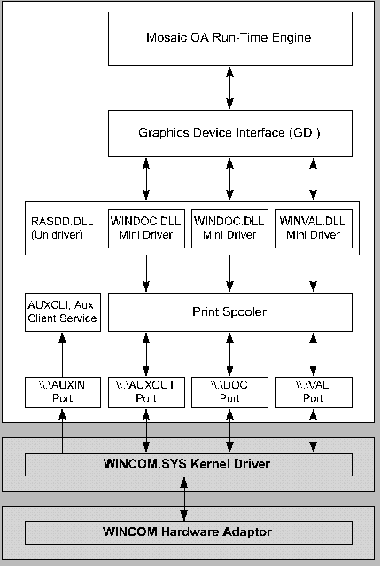
+ 3247 $ 3248 # 3249 K 3250 Fonts for Printing
Internal Printer Fonts, Downloaded Fonts, and Bitmapped Text
Internal printer fonts are those built into the printer. Downloaded fonts character images are downloaded from the workstation and stored in the printer. Both are evoked via ASCII character codes sent to the printer. Bitmapped text is imaged in the workstation, then sent to the printer as a bit image. Printing with internal and downloaded fonts is faster than with bitmaps. Sending bit images of text can be much slower than sending ASCII text. In Mosaic OA we have provided a way to control how text is printed.
See
PRT TEXTFONT
for information
on this subject.
When choosing fonts for use in printed documents, it’s best to choose True Type Fonts (.TTF). TTF fonts are downloaded and scaleable. The ISC fonts that are installed with Mosaic OA are intended only for on-screen use. They should not be used for printing as they are neither downloadable nor scaleable.
It’s important to consider the type of printer and its capabilities when designing documents for printing. See the Creating Mosaic OA Documents section for more on this topic.
+ 3251 $ 3252 # 3253 K 3254 Aux Print
A Little History
How Aux Print Works
Aux Print Requestor
Aux Print Server
The Two Modes of Aux Print
+ 3255 $ 3256 # 3257 K 3258 A Little History
The purpose of aux print is to allow an operator with a pending print job to go to a printer and request the print job by typing in the operator’s two-digit ID. In Pinnacle Plus, aux print was done with the multi-cast feature of DNET. Pinnacle Plus R5 on NT used a TCP/IP connection-oriented scheme where both the host and services files had to be configured properly. In Mosaic OA, aux print is done with User Datagram Protocol (UDP) broadcasts which do not use the host or services files. UDP broadcasts are typically not propagated by routers, so the aux print “domain” is bounded by routers.
+ 3259 $ 3260 # 3261 K 3262 How Aux Print Works
Printers equipped with aux print capabilities contain three logical printers, as indicated in this drawing:
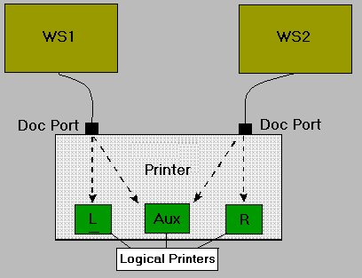
The logical left (L) and logical right (R) are the default printers for the direct-cabled workstations. The aux print is available to any workstation on the network.
An aux request applies to a single print job (A print job is defined as all documents called by a single PRINTDOC statement.) If the print job has multiple pages, they will all print at the target printer with a single request. If you have several documents that you want to print with a single aux request, they must be combined into a single document. This is easily accomplished by issuing a single PRINTDOC statement with the document object replaced with an OFB object (type polymorphism). The OFB routine then calls each of the documents. The documents do not need to be modified to combine them into a single print job, and the single page documents can still be used individually.
Broadcast Message Definition:
The aux request broadcast packet format (Figure 2) is in standard ONA broadcast format with four “|” separated ASCII fields.
machine|tcp/ip_address|service_name|service_dependent_textThe first field (machine) is the name of the workstation from which the aux request has come.
The second field (tcp/ip_address) is the TCP\IP address of the workstation from which the aux request has come. This field is not used in the aux print system but is part of the standard ONA format.
The third field (AUX PRINT) is the name of the service the broadcast is for.
The fourth field depends on the service specified in the third field. In the example above this is the two-digit operator identification number.
This drawing, and the explanation that follows, describes the aux print process in Mosaic OA.
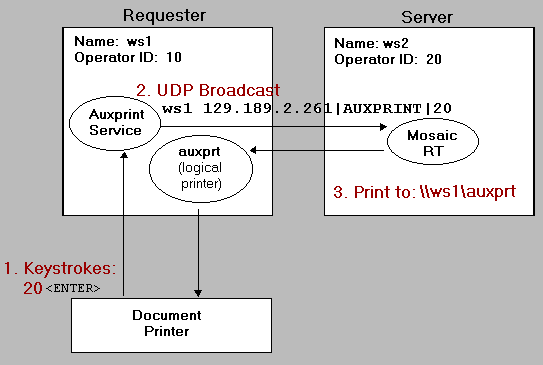
Figure 2
+ 3263 $ 3264 # 3265 K 3266 Aux Print Requester
These three steps describe the role of the Aux Print Requester, corresponding to the numbered events in Figure 2, above.
1. The Aux print service receives the keystrokes “20” (the operator’s ID) from the printer or PIN pad.
2. The Aux print service sends an Aux request (UDP broadcast) for operator 20 to print the job at the auxprt logical printer on workstation ws1 .
The aux request broadcast packet format looks like this:
machine|tcp/ip_address|service_name|service_dependent_text
3.
The requested Aux print job is printed at the
“
machine
” from which the request was made (in this case,
the same machine).
Additional Notes
Runs as NT service (auxcli.exe) on the “requester” machine connected to the printer.
Requires one of the following functions to return a machine name which is usable as the print target machine name (\\print_target_machine\auxprt). The system must supply the machine name or the aux print system cannot work.
gethostname(). The form of the host name is dependent on the Windows Sockets implementation. It may be a simple host name, or it may be a fully qualified domain name. However, it is guaranteed that the name returned will be successfully parsed by gethostbyname and WSAAsyncGetHostByName.
or
GetComputerName(). The GetComputerName function retrieves the computer name of the current system. This name is established at system startup when it is initialized from the registry.
+ 3267 $ 3268 # 3269 K 3270 Aux Print Server
These three steps describe the role of the Aux Print Server, corresponding to the numbered events in Figure 2, above.
Mosaic OA starts an aux print server each time it prints a document.
Receives the UDP broadcast and compares the broadcast ID with the local operator ID.
If ID’s match, then print the document at the requesting workstation.
+ 3271 $ 3272 # 3273 K 3274 Two Modes of Aux Print
Aux print works in two modes, standard Aux Print and Aux Wait.
Standard Aux Print : If an aux request is received during printing, Print Manager cancels the current print job, removes it from the spooler, and restarts it on the requesting printer.
AUX WAIT : (Formerly known as “VRTPRT,” which is the port name.) The logical printer waits to begin printing until an aux request is received, then prints to the requesting physical printer.
+ 3275 $ 3276 # 3277 K 3278 Using Aux Print and Aux Wait
“Aux Print” is a feature of Mosaic OA wherein a user with a pending print job goes to any ONA DP3 Printer or VeriFone PIN Pad and identifies himself or herself via a 2-digit ID typed on the keypad (an aux request ). This results in the user’s document being redirected to that workstation’s auxprt logical printer that must exist in NT’s Print Manager. There are two ways to use Aux Print. One way is to wait for an aux request before printing, this is referred to as Aux Wait . The other way is to begin printing and listen for an aux request until the print job is finished, a received aux request will cancel the current print job and start a new one. This method is referred to as standard Aux Print.
To use the Aux Wait method of printing, the OFB
PRINTDOC
statement’s
logicaldevice
argument must be a printer that has
its port set to “VRTPRT” (see
Printer Setup and Configuration
).
When using this method the user is presented with a message telling him
or her to go to an ONA DP3 Printer or a VeriFone PIN Pad and type in
their 2-digit number.
RT
will not try to
print anything until the user has typed in their id.
To use the standard Aux Print in Mosaic OA
you must
configure the printer to “Print Directly to Ports” or set a print delay.
Without one of these special configurations
RT
finishes printing before an aux request
can be done.
RT
prints quickly because the
document is spooled into NT’s Print Manager. Even a complex document
usually finishes printing in a less than a second. When using this
method the user is presented with an application defined message
indicating the print is in progress.
Once the printer prompt message is on the screen the user may go any ONA DP3 Printer or VeriFone PIN Pad and enter his or her 2-digit aux request id. This may even be done on the same printer, which is useful in cases where the paper has jammed, or the ribbon has to be replaced during a print operation.
Additional Notes:
Aux Wait and standard Aux Print are configured per logical printer, this means each logical printer may configured individually as required.
In order to use Aux Print you must have a shared logical printer named auxprt.
In order to use Aux Print with the ONA DP3 you must have the following:
auxCLI.EXE (installed and running as a service).
The PROMs in the ONA 5402 document printer (DP-2) must be 86-00067-110-01 or later. The PROMs in the ONA 5403 document printer (DP-3) must be 86-00192-104-03 or later. This may easily be checked by entering “999<enter>3<aux>” on the printer’s keypad. This puts the printer in test mode and prints a sheet of information about internal configuration settings. You should see something like:
Model 5402 - Document Printer
Copyright © 1987-89 ISC-Bunker Ramo Corp.
P/N 86-00067-110-01 03/27/90
ISC P/N 86-00064-104-01
The first part number is the number of interest (with the -110- in it), the last part number identifies the character fonts. After the sheet is printed, entering “998<enter>” on the keypad takes the printer out of test mode.
In order to use Aux Print with the VefiFone PIN Pad you must have VERIFONE.EXE (installed and running as a service).
+ 3279 $ 3280 # 3281 K 3282 Setup and Configuration
The first step in workstation printer setup and configuration is to use NT's Print Manager to create all the logical printers required by your Mosaic OA application.
One logical printer must be created for each station of a multi-station printer such as the ONA 5400 Series Document Printer or the Olivetti PR 50 printers. For example the ONA 5400 Series Document Printer has three stations, left, right, and aux, each must have its own logical printer. The logical printers for a multi-station printer may be on different workstations.
Creating a Logical Printer
Also, consider these elements of printer setup:
Using INIT 76
Wincom Compatible
For complete installation and configuration details, refer to the Mosaic OA Installation Manual , Chapter 10.
For the most current information, refer to the Mosaic OA Development Tools & Runtime Release and Installation Notes.
+ 3283 $ 3284 # 3285 K 3286 Creating a Logical Printer
1. Open Program Manager's Main program group and double-click the Print Manager icon.
2. Under the Printer menu select Create Printer . Do not use Connect to Printer because it puts a network path in the printer name and therefore is inappropriate for use as a logical name.
3. In the Create Printer dialog box, type in the name of the logical printer you want to create in the Printer Name field.
4. From the Driver pick list, select the driver for the physical printer you want to associate with your logical printer. The driver names are fairly descriptive so it’s likely you will find the correct driver. If the driver you need is not in the list, then Windows NT did not supply a driver for that printer. You’ll need to contact your printer manufacturer or distributor to get the driver you need. The drivers available from Olivetti North America are listed below. These drivers (with complete documentation) are sold separately. Contact the Technical Library for ordering information.
# 3287 Driver Name Printer Type
Olivetti DP1,DP2,DP3
ONA 5400 Series
Document Printer (
wincom
)
Olivetti VAL
ONA 5427 Validation Printer
(
wincom
)
Olivetti PR VP2/s Serial
ONA 5327 Validation
Printer (
serial
)
Olivetti PR 46 V
Olivetti PR 46-S Printer,
validation slip (
serial
)
Olivetti PR 46 J
Olivetti PR 46-S Printer,
journal tape (
serial
)
Olivetti PR 50 1
Olivetti PR 50 chute,
station 1 indication (
serial
)
Olivetti PR 50 2
Olivetti PR 50 chute,
station 2 indication (
serial
)
Olivetti PR 50 J Olivetti PR 50 Printer, journal tape ( serial )
5. Specify the port that connects to the physical printer. To do this, click on the down-arrow of Print to: to get a list of ports. Click on the appropriate port setting, considering these circumstances:
If the physical printer is local (attached to the workstation) and is not one of the printers listed below , select the port to which the printer is connected. The LPT ports are parallel ports used by many printers. The COM ports are for serial printers.
Port Names Port Descriptions
\
\
.
\
DOC
ONA 5400 Series Document Printer (DP3) left and right access
\
\
.
\
AUXOUT
ONA 5400 Series Document Printer (DP3) aux access
\
\
.
\
VAL
ONA 5427 Validation Printer
VRTPRT
Any Printer (
wait for an aux request before
printing
)
If the physical printer is local (attached to
the workstation) and is one of the printers listed above but is not in
the list,
click
Other...
at the end of the list to
activate the
Print Destinations
dialog box. Double-click on
Local Port
to activate the
Port Name
dialog box and
enter the port name from the list above. The name must include the
“
\
\
.
\
” as shown
above.
If the physical printer is remote (not attached
to the workstation) and is not in the list,
click
Other...
at the end of the list to activate
the
Print Destinations
dialog box.
Double-click on
Local Port
to activate the
Port Name
dialog box and enter the name of a
remote printer. The name must include the network path, for example
\
\
workstation
\
printer
.
A list of shared network printers can be obtained from the Print Manager
by selecting the
Connect to Printer
in the
Printer
menu. Unfortunately, you must exit the
Create Printer
dialog box to do
Connect to Printer
, then return to
Create Printer
and remember the
printer path.
6. After the port name is entered click the OK button. When a port name is entered, via the Port Name dialog box, the port is automatically added to NT's registry and to the pick list of ports in the Create Printer dialog box.
7. Any logical printer that will be accessed from a workstation other than the one it is attached to must be shared . The logical printer a uxprt must be shared . To do this click the Share this printer on the network checkbox in the Create Printer dialog. This can also be done via the Printer Properties dialog once you have finished creating the printer.
8. The final step in creating a logical printer is to click the OK button in the Create Printer dialog box. If the driver has not already been installed on your machine, this will cause a Windows NT Setup dialog box to appear asking for the path to the driver.
+ 3288 $ 3289 # 3290 K 3291 Init 76 (76 STR)
INT 76 is used to set several printing options, waited or spooled modes and vertical & horizontal offsets. The STR has three-space separated fields, the first is always printer, the second and third fields depend on the option being set.
Waited mode is when the print prompt stays on the screen until the print job has completed. In previous versions of Mosaic this mode was set by using the “direct-to-port” option in the Print Manager. Starting with this version of Mosaic, waited mode is the default mode for all logical printers. If you prefer spooled mode, it is set with the following command.
INIT 76,"docprt WAIT 0"
Note that this command must be issued once for each logical printer which you want in the spooled mode. The command must be issued before the PRT PRINTDOC to have effect for that document. A printer may be put back into the waited mode by issuing the following command.
INIT 76,"docprt WAIT 1"
INIT 76 is also used to set offsets for all documents sent to a
logical printer. This command must be issued once for each logical
printer. The offsets remain in effect until changed again via INIT 76.
It may be used in PCL procedures and documents but must precede
PRT MARGIN
to have
effect for that document.
The STR has three space separated fields; printer, horizontal offset, and vertical offset. All offsets are specified in decipoints (720 decipoints per inch). This INIT is useful for getting print positions to match exactly when using a common data dictionary for both Pinnacle Plus release 4 (DNIX) and release 5 (NT). Also when a driver changes positioning it may be used to compensate for the change instead of changing all the documents sent to the printer via that driver.
The following example will offset all output to the printer docprt 40 decipoints to the right and 50 decipoint up.
INIT 76
“
docprt 40 -50
”
+ 3292 $ 3293 # 3294 K 3295 Wincom Compatible
Windows 95 does not currently support wincom printers.
The wincomcompatible switch in your project’s DDproj.ini is used to set levels of print compatibility with the Pinnacle Plus wincom system. This switch is provided to allow documents to be moved from the proprietary hardware environment into the NT environment with minimal to no changes required, while allowing development to improve printing on NT.
When wincomcompatible is set to “0”, RT prints documents with some improvements over wincom that are possible in the NT environment. This is the preferred setting which provides the most accuracy and capability; all new projects on NT should use ‘0”.
When wincomcompatible is set to a number greater than zero, RT prints documents as much as possible like it does in Pinnacle Plus via the wincom print system. Currently there are two levels of backward compatibility with wincom: level “1” which was the first level implemented, and level “2” which provides an improved level of compatibility and is new with release 1 version 3 of Mosaic OA.
The following is a summary of what changes in each level.
Wincomcompatible“0”
Does not reposition text in non-printable areas to printable areas.
Does
only
a line feed for
PRT NEWLINE.
A
PRT NEWLINE
will
increment the current vertical position as a function of the current
font with text metrics obtained from the Graphics Device Interface
(GDI).
Does
not
do a form feed if
PRT FORMFEED
goes beyond document
length.
Horizontal relative positioning is improved. An example
of this is the calculation of the current horizontal position after a
PRT PRINT
statement. This position is
obtained from GDI and is exactly at the end of the text just
printed.
Many paper sizes supported.
Wincomcompatible“1”
Repositions text in non-printable areas to printable areas.
Does a carriage return and a line feed for
PRT NEWLINE.
A
PRT NEWLINE
will
increment the current vertical position based on the last
PRT LSPACING
or
PRT TEXTSIZE
statement.
Does a form feed if
PRT FORMFEED
goes beyond document
length.
Horizontal relative positioning is always a function of
pitch. An example of this is the calculation of the current horizontal
position after a
PRT PRINT
statement. The
position is an approximation of the end of the text unless the printer
supports non-proportional fonts in the pitch requested.
Only two paper sizes supported, letter and legal.
Wincomcompatible“2”
Same a wincomcompatible “1” except as follows.
Horizontal relative positioning is a function of pitch for the ONA 5400 series, PR50 and PR46 printers which support only pitch type fonts. For all other printers horizontal relative positioning is the same as with wincomcompatible “0”, that is obtained from the GDI.
Pitch type fonts specified with
PRT STYLE 10-17
work better than
wincomcompatible “1” on non-ONA printers.
The behavior of the following commands is modified by this switch.
PRT CARRIAGERETURN
PRT MARGIN
PRT NEWLINE
PRT POSITIONABS
PRT POSITIONREL
PRT PRINT
PRT STYLE
PRT TEXTSIZE
+ 3296 $ 3297 # 3298 K 3299 Auxtest Debug Utility
Use Auxtest to help debug aux print problems. Since the aux print system has a requester and a server, the Auxtest Debug Utility (ADU) has been designed to simulate either. The ADU can send a UDP aux request broadcast as if it was generated from any workstation by any operator. The ADU can also receive an aux request broadcast from any operator and print a document on the printer specified in the request. To print a document as the result of an aux request you must have an aux print server application running.
The Roll of the Aux Requester
The Roll of the Aux Server
The Roll of Both
Options for AUXTEST
+ 3300 $ 3301 # 3302 K 3303 The Roll of the Aux Requester
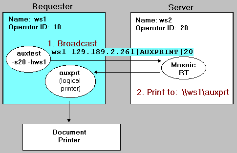
Simulates an aux request as though it was generated from a printer or PIN pad.
DOS Console Output
Aux Print Test
Machine "ppnt-dlw" Wait for Aux Requests and print if from ID 20... Received Aux Request: "ppnt-dlw|129.189.2.261|AUXPRINT|20" Print to \\ppnt-dlw\auxprt
+
3304
$
3305
#
3306
K
3307
The Roll of the Aux
Server
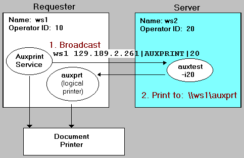
Simulates Mosaic RT (aux server).
DOS Console Output
Aux Print Test
Machine "ppnt-dlw" Send Aux Request from ID 20 Send Aux Request: "ppnt-dlw|129.189.2.261|AUXPRINT|20" sendto() OK
Printer Output
Aux Format: machine|ip_address|aux PRINT|id
Aux Request: ppnt-dlw|129.189.2.261|AUXPRINT|20 Received by: ppnt-dlw Printed to: \\ppnt-dlw\auxprt
+
3308
$
3309
#
3310
K
3311
Both Aux Requester and
Server Rolls
The following diagram shows the aux requester and server on different machines but they can both execute on the same machine, each in its own DOS window. Additionally, the print job can be sent to a machine that runs neither the aux requester nor the server.
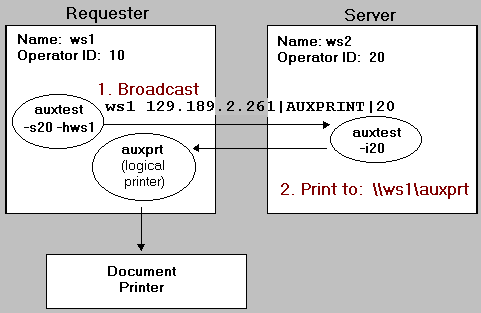
+ 3312 $ 3313 # 3314 K 3315 Options for AUXTEST
\
moa
\
src
\
auxcli
\
auxtest
\
auxtest.exe -?
Usage: auxtest -[ishnpv?]
(No spaces between "-" and argument!)
-idd - Receive aux request, print on ID "dd", default is -sdd - Send aux request for ID "dd" -hhost - Send aux request as if from "host" -v - Turn on debug output -? - Usage -n# - Get host name via #, default 2 - 0 gethostname() - 1 GetComputerName() - 2 Try both of the above-pxx - OpenPrinter with permissions, default is 0x0
- SERVER_ACCESS_ADMINISTER 0x01
- SERVER_ACCESS_ENUMERATE 0x02
- PRINTER_ACCESS_ADMINISTER 0x04
- PRINTER_ACCESS_USE 0x08
- JOB_ACCESS_ADMINISTER 0x10
- SERVER_ACCESS_ADMINISTER 0x01
- SERVER_ALL_ACCESS 0xf0003
- No Access Specified 0x00
+ 3316 $ 3317 # 3318 K 3319 Troubleshooting
Printing is Slow
Is “printdelayseconds” set to 0 in the ddproj.ini file?
Print is Incorrect
Check to ensure that the Printer Setup is correct and that the proper driver(s) are installed.
Try printing to the printer from Notepad or other third party application. If this works correctly then the problem may be in the Mosaic OA application.
Try printing to a different printer, a laser is usually a good choice. If the output on the laser is correct then the problem is most likely in the driver(s) for the printer, not in the Mosaic OA application.
Print alignment (position) is wrong.
Turn on Mosaic OA print debug (Ctrl-Y) to obtain an output.
Using print debug output, check the following:
Was the correct position received from application? If no, the problem is in the application.
Was the correct position sent to GDI? If no, the problem may be in Mosaic OA.
$ 3320 # 3321 Aux Print Doesn't Work
Run the Mosaic application with print debug output on and see if an aux request is received or if an error has occurred starting the aux server. Do an aux request from a printer or auxtest.
If the Mosaic OA debug output does not show an aux request received then try again using auxtest in place of Mosaic OA as the server.
If the Mosaic OA debug output does show an aux request received then….
Check the Print Manager on the destination machine and verify that the auxprt printer exists and is shared.
Check the debug output for other errors.
$ 3322 # 3323 Printing is Slow
Is “printdelayseconds” set to 0 in the ddproj.ini file?
$ 3324 # 3325 Print is Incorrect
Check to ensure that the Printer Setup is correct and that the proper driver(s) are installed.
Try printing to the printer from Notepad or other third party application. If this works correctly then the problem may be in the Mosaic OA application.
Try printing to a different printer, a laser is usually a good choice. If the output on the laser is correct then the problem is most likely in the driver(s) for the printer, not in the Mosaic OA application.
$ 3326 # 3327 Print alignment (position) is wrong
Turn on Mosaic OA print debug (Ctrl-Y) to obtain an output.
Using print debug output, check the following:
Was the correct position received from application? If no, the problem is in the application.
Was the correct position sent to GDI? If no, the problem may be in Mosaic OA.
$ 3328 # 3329 Part of Document Does Not Print
The laser printer may need more RAM, especially if graphics are included in the document.
NT doesn’t support macros. Complex, double-sided documents may require more printer memory.
+ 3330 $ 3331 # 3332 K 3333 Printer Hardware Exceptions
Errors are handled differently by Print Manager, depending on whether the job is local or remote.
Local Print Job Error Response
Print Manager’s normal response to an error from the local machine’s print job, is to display an Error dialog box and ask if you want to retry or cancel.
The cancel option ejects the paper and deletes the job from Print Manager. You must recreate or send the document again.
The retry option ejects the paper and the station led remains lit. Insert the paper and the printer begins to print automatically without having to press a button.
Remote Print Job Error Response
If the job is from a remote device (the remote shared printer) then the following will take place when an error condition occurs. No error box is displayed. Instead, the printer pauses for approximately five seconds, then the remote job is retried automatically.
+ 3334 $ 3335 # 3336 K 3337 Creating Mosaic OA Documents
A Mosaic OA document consists of OFB PRT statements and optionally any other OFB statements. Documents may be created using the IBAE Document Author . (DA) which is GUI tool, or by hand-writing OFB code, or by a combination of the two. The DA tool can import documents coded by hand, however all non PRT statements will be lost if it is saved.
# 3338 There are three document types: Document
Report
Format (or “form”)
+ 3339 $ 3340 # 3341 K 3342 Document
A Mosaic OA document is the printing done as the result of a PRINTDOC statement. A document will show as a single entry in the Print Manager’s print queue. A document may have one or more pages. A page consists of everything printed between OFB’s PRT_FORMFEED statements. Each page may have unique properties of scale, orientation, size, duplexing, and margins.
IBAE Document Examples
+ 3343 $ 3344 # 3345 K 3346 Report
A report is a printed document with some fixed text along with run-time variable data. The length of a report may not be know at development-time because it depends on the amount of data available at run-time. A report is usually implemented with both PRT statements and other OFB statements. All reports are implemented as OFB routines and most have a single main loop which runs until all the data has been reported. Each time through the loop some OFB logic gets data and puts it into OFB fields then prints the data in the fields along with any other literal text.
Creating Reports Example
+ 3347 $ 3348 # 3349 K 3350 Format
A format is a type of document produced by the IBAE Document Author . (DA) that contains only text objects. Its purpose is for creating reports. Each object’s position is encoded to allow the objects in the format to print vertically relative to the current cursor (print head) position.
IBAE Example
+ 3351 $ 3352 # 3353 K 3354 Creating Documents with the IBAE Document Author
# 3355 IBAE Documents
All document objects created by the IBAE Document Author (DA) consist exclusively of PRT statements and define single-sided one-page objects. All object positions in DA documents are in absolute decipoints. Absolute means each object’s position is specified relative to the upper left corner of the paper. Decipoints are a high resolution standard coordinate of 720 points per inch.
Single-sided one-page document objects can be used collectively in multipage double-sided documents by issuing a single PRINTDOC statement with the document object argument replaced with an OFB object (type polymorphism). The OFB routine can then call each of the documents. The documents do not need to be modified to combine them into a single print job, and the single page documents can still be used as simple documents.
+ 3356 $ 3357 # 3358 K 3359 IBAE Formats
A format is a type of document produced by the IBAE Document Author . (DA) that contains only text objects and does not include the normal page properties found in DA documents. Each object’s position is encoded to allow the objects in the format to print vertically relative to the current cursor (print head) position. A document is a list of objects with absolute horizontal and vertical positions, while a format is a list of ASCII text objects with absolute horizontal and relative vertical positions. A format is intended to help with printed reports which have repeating lines of text and / or data that must be printed at different vertical positions on the page. Below is the source of two documents created with the IBAE Doc Author. The first is a document and the second is a format. Note that the “format” moves down 240 decipoints from the current cursor position each time it is called while the document does not.
// This is a DOCUMENTDOCUMENT DocumentName,0,0,36,36,0,528 PRT SCALE 100 // page property PRT ORIENTATION 0 // page property PRT MARGIN *7920 *6120 0 0 0 0 // page property PRT TEXTFONT 100 PRT TEXTFONTNAME "" PRT TEXTSIZE *100 PRT POSITIONABS *240 *720 // absolute horz and vert PRT PRINT name PRT POSITIONABS *240 *1188 // absolute horz and vert PRT PRINT addressEND DOCUMENT// This is a FORMATDOCUMENT FormatName,0,0,36,36,0,560
PRT TEXTFONT 100
PRT TEXTFONTNAME ""
PRT TEXTSIZE *100
PRT POSITIONREL *240 - // relative vertical
PRT POSITIONABS - *720 // absolute horizontal
PRT PRINT name
PRT POSITIONABS - *1188 // absolute horizontal
PRT PRINT address
END DOCUMENT
Both the format and the document print the contents of the “name” and “address” fields on a single line. Note that only the format is useful when called in a loop as shown in the following code sample.
+ 3360 $ 3361 # 3362 K 3363 Creating Reports
A report is a printed document generally consisting of some fixed text along with variable data from CDS or some other data store. The length of a report is generally not know at development-time because it depends of the amount of data available at run-time. A report may contain several different types of data each with its own format , which consists of text objects, positions, variable field data, literal text, font, size, and attributes. The following example is a report which uses a combination of hand-written OFB code and DA formats. The calls to the formats could be replaced directly with PRT statements but then these formats couldn’t be edited visually with DA.
// Print the ReportSUB PrintReport PRINTDOC OFB:Report,laser,"Name and Address Report" END SUB SUB Report // Do this stuff once per reportPRT SCALE 100 // scale
PRT ORIENTATION 0 // orientation
PRT MARGIN *7920 *6120 0 0 0 0 // page size & margin
vertical_decipoints = 0 // current vertical position
decipoints_per_page= 7920 // max vertical position on page
// Print each line of the report
WHILE (CALL OFB:MoreData)
IF (vertical_decipoints >= decipoints_per_page)
// Too much for this page, go to next page
PRT FORMFEED
vertical_decipoints = 0
END IF
SELECT (data_type)
CASE NAME_ADDRESS
// Get name and address put into fields
CALL OFB:GetNameAddress // get data
// Print name and address via format
CALL DOC:NameAddress1 // call format created by DA
vertical_decipoints = vertical_decipoints + 240
BREAK
CASE ACCT_BALANCE
// Get account balance put into fields
CALL OFB:GetAcctBal // get data
// Print Acct Bal via format
CALL DOC:AcctBal // call format created by DA
vertical_decipoints = vertical_decipoints + 350
BREAK
END SELECT
END WHILE
END SUB
The printed output of the report using the “format” will look something like below, while the printed output using the “document” would have each line printed at the same vertical position (on top of each other).
Jon Doe
1234 56th Street, Athol, ID
Checking: $1,025.62
Savings: $21,395.47
Jane
Doe
2233 20th Ave, Humptulips, WA
Checking: $1,432.89 Savings: $2,543.59
.
.
.Sam Someone
4455 66th Street, George, WA
Checking: $343.34Savings: $23,625.41
Clearly this is a simple example, many different formats may be used in a report and formats may be called from other formats.
+ 3364 $ 3365 # 3366 K 3367 Creating Duplex Documents
The primary reason for duplex documents, besides governments regulations, is to save paper (trees) a great idea! Be sure the target printer is capable of printing duplex. (e.g., HP LaserJet III or IV)
SUB PrintDuplexDocument
PRINTDOC OFB:DuplexDocument,laser, "Printing Example"
END SUB
SUB DuplexDocument
PRT DUPLEX 1
CALL DOC:Letter_p1s1
PRT FORMFEED
CALL DOC:Letter_p1s2
END SUB
+ 3368 $ 3369 # 3370 K 3371 Creating Multipage Documents
The most common use of multipage documents is to keep other documents from interleaving into your multi-document transaction printing. No matter how many pages your document is they will all print sequentialy to the printer with no other documents mixed in if you use the following techniques. The following example produces a four-page, single-sided document.
SUB PrintMultipageDocumnetPRINTDOC OFB: MultipageDocument,laser, "Printing Example" END SUB
SUB MultipageDocument CALL DOC:Letter_p1 PRT FORMFEED CALL DOC:Letter_p2 PRT FORMFEED CALL DOC:Letter_p3 PRT FORMFEED CALL DOC:Letter_p4END SUB+ 3372 $ 3373 # 3374 K 3375 Creating Multipage Duplex Documents
The following example produces a two page double-sided document.
SUB PrintMultiDuplexDocument PRINTDOC OFB: MultiDuplexDocument, "Print Example" END SUB
SUB MultiDuplexDocument PRT DUPLEX 1 CALL DOC:Letter_p1s1 PRT FORMFEED CALL DOC:Letter_p1s2 PRT FORMFEED CALL DOC:Letter_p2s1 PRT FORMFEED CALL DOC:Letter_p2s2END SUB
+
3376
$
3377
#
3378
K
3379
Creating Multipage
Documents with Different Page Properties
The following example produces a multi-page document which has pages with different page properties. The page properties are listed below. These properties are defined in DA documents via the document properties dialog. The ComplexDocument shown below will create a single job in Print Manager which will print some pages simplex, some duplex, some letter size, some legal size, some portrait orientation, some landscape orientation, some to feed from paper cassettes, and some to require manual feed.
Page Properties (rather than document properties)
Size
Margins
Paper Source
Scale
Orientation
Duplexing
SUB PrintComplexDocumet
PRINTDOC OFB:ComplexDocument,laser, "Print Example"
END SUB
SUB ComplexDocument
PRT DUPLEX 1
CALL MultipageDocument
PRT FORMFEED
CALL DuplexDocument
PRT FORMFEED
CALL MultiDuplexDocument
PRT FORMFEED
CALL DOC:LandscapeDocument
PRT FORMFEED
CALL DOC:ScaledDocument
PRT FORMFEED
CALL DOC:LegalManualDocument
PRT FORMFEED
CALL DOC:LegalDocument
PRT FORMFEED
CALL DOC:LetterManualDocument
END SUB
+ 3380 $ 3381 # 3382 K 3383 Creating Electronic Forms
The OFB PRT statements are powerful enough to produce electronic forms. Document Author provides a visual tool for creating electronic forms. The following is an example of an electronic form produced by DA and printed by Mosaic OA. It was then digitized and scaled for use in this document. This form only contains the literal text objects on the form. No run-time variable data (OFB field data) was entered before it was printed.
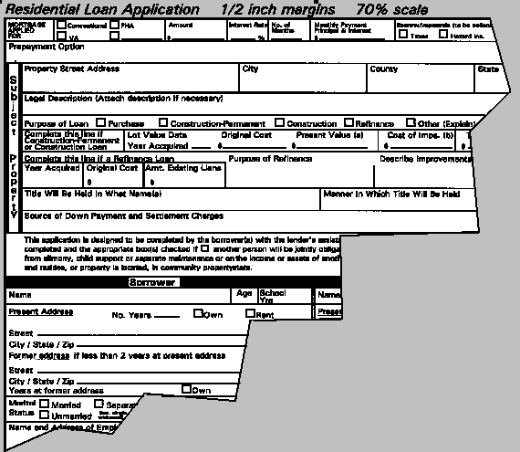
+ 3384 $ 3385 # 3386 K 3387 Creating Documents that Print Well on Multiple Printers
When designing documents that print well on several different printers allow extra time for experimentation because of differences in capabilities between printers. Mosaic OA’s print engine is designed to provide device independent printing of documents but printer capabilities must always be considered.
What does “print well on several different printers” really mean? Probably the most common expectation is that the document will print on different printers with little or no difference (the principal of least astonishment). This may or may not be possible depending on the complexity of the document and the different printer capabilities.
The Mosaic OA print engine will do the best job it can printing documents on different printers. If the printer doesn’t support an object type contained in the document the object will simply not print rather than generate an error.
+ 3388 $ 3389 # 3390 K 3391 Use Common Features
Try to use features common to all of the printers that you expect your document to print on, such as fonts / sizes / attributes, orientation, duplexing, and graphics. If any of the printers doesn’t support one of the object types in your document it will be mapped to the closest supported feature (fonts mostly) or skipped on that printer.
Try to stay inside the smallest printable-area of all of the printers combined. The ONA 5400 series document printers can print to the very edge of the paper so they have no non-printable margins. Most laser printers however have about a 1/8 to 1/4 inch margin around the entire document which they can’t print on.
+ 3392 $ 3393 # 3394 K 3395 DDPROJ.INI Settings
If you are moving a Pinnacle+ project, creating a new project (new data dictionary), make this setting change: Wincomcompatible = 0
+ 3396 $ 3397 # 3398 K 3399 Printer Differences
Consider the two basic types of printers: proportional-type-only printers and non-proportional type printers. There is a large difference in capabilities between two types of printers.
The first type are the old impact printers that specify fonts by width in pitch (characters per inch, like 10, 12, and 16), all fonts are the same height, they don’t accept downloaded fonts, but they might accept bitmaps. All characters of a given pitch are the same width, this type is called a non-proportional or fixed-pitch font.
The second type is the more modern printer that specifies fonts by height in points (72 points per inch, like 10, 12, 14, 16, 28, 32, 64 etc.). They often download and scale fonts. They almost always support bitmaps. Most of the built-in fonts are point type fonts and many are scaleable. Most built-in fonts are proportional where characters of a given point size have varying widths. These printers often provide limited built-in fixed-pitch fonts which usually can’t be scaled and are confusingly specified in points, not pitch.
+ 3400 $ 3401 # 3402 K 3403 Font Mapping
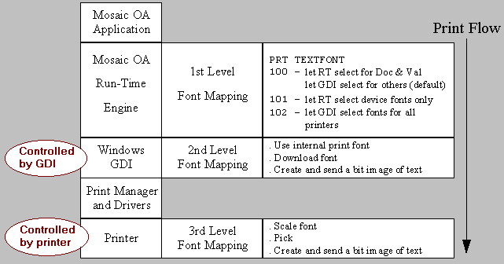
Jump to PRT TEXTFONT , for further explanation of font mapping by Mosaic OA.
+ 3404 $ 3405 # 3406 K 3407 Deleted OFB PRT Statements
The following OFB
PRT
statements are
obsolete in NT environment. These commands are ignored at run time to
allow Pinnacle Plus documents to run unchanged on Mosaic OA.
PRT CENTERFOLD
PRT DELETEALL
PRT DELETEMACRO
PRT DELETETEMP
PRT DOWNLOAD
PRT LINENUM
PRT SENDHDR
PRT VTAB